🦀批wannabe
Tokio, Async, Web Related
Trait使用方式
Trait 的主要作用是用来抽象行为，类似于其他编程语言中的「接口」
根据函数调用方式，主要两种使用方式：
基于范型的静态派发
基于 trait object 的动态派发
比较重要的一点是 trait object 属于 Dynamically Sized
Types（DST），在编译期无法确定大小，只能通过指针来间接访问，常见的形式有
Box<dyn trait>{=html} &dyn trait 等。
静态派发
在 Rust 中，范型的实现采用的是单态化（monomorphization），会针对不同类型的调用者，在编译时生成不同版本的函数，所以范型也被称为类型参数。好处是没有虚函数调用的开销，缺点是最终的二进制文件膨胀。
动态派发
不是所有函数的调用都能在编译期确定调用者类型，一个常见的场景是 GUI 编程中事件响应的 callback，一般来说一个事件可能对应多个 callback 函数，而这些 callback 函数都是在编译期不确定的，因此范型在这里就不适用了。
向上转型（upcast）
对于 trait SubTrait: Base ，在目前的 Rust 版本中，是无法将 &dyn SubTrait 转换到 &dyn Base 的。这个限制与 trait object 的内存结构有关。
在 Exploring Rust fat pointers 一文中，该作者通过 transmute 将 trait object 的引用转为两个 usize，并且验证它们是指向数据与函数虚表的指针：
Click to expand
use std::mem::transmute;
use std::fmt::Debug;
fn main() {
let v = vec![1, 2, 3, 4];
let a: &Vec<u64> = &v;
// 转为 trait object
let b: &dyn Debug = &v;
println!("a: {}", a as *const _ as usize);
println!("b: {:?}", unsafe { transmute::<_, (usize, usize)>(b) });
}
// a: 140735227204568
// b: (140735227204568, 94484672107880)
从这里可以看出：Rust 使用 fat pointer（即两个指针） 来表示 trait object 的引用，分布指向 data 与 vtable，这和 Go 中的 interface 十分类似。
尽管 fat pointer 导致指针体积变大（无法使用 Atomic 之类指令），但是好处是更明显的：
可以为已有类型实现 trait（比如 blanket implementations）
调用虚表中的函数时，只需要引用一次，而在 C++ 中，vtable 是存在对象内部的，导致每一次函数调用都需要两次引用
如果 trait 有继承关系时，vtable 是怎么存储不同 trait 的方法的呢？在目前的实现中，是依次存放在一个 vtable 中的:
可以看到，所有 trait 的方法是顺序放在一起，并没有区分方法属于哪个 trait，这样也就导致无法进行 upcast
Object Safety
在 Rust 中，并不是所有的 trait 都可用作 trait object，需要满足一定的条件，称之为 object safety 属性。
-
函数返回类型不能是 Self（即当前类型）。这主要因为把一个对象转为 trait object 后，原始类型信息就丢失了，所以这里的 Self 也就无法确定了。
-
函数中不允许有范型参数。主要原因在于单态化时会生成大量的函数，很容易导致 trait 内的方法膨胀。
例如：
Click to expand
#![allow(unused)]
fn main() {
trait Trait {
fn foo<T>(&self, on: T);
// more methods
}
// 10 implementations
fn call_foo(thing: Box<Trait>) {
thing.foo(true); // this could be any one of the 10 types above
thing.foo(1);
thing.foo("hello");
}
// 总共会有 10 * 3 = 30 个实现
}
- Trait 不能继承 Sized。这是由于 Rust 会默认为 trait object 实现该 trait，生成类似下面的代码：
Click to expand
#![allow(unused)]
fn main() {
trait Foo {
fn method1(&self);
fn method2(&mut self, x: i32, y: String) -> usize;
}
// autogenerated impl
impl Foo for TraitObject {
fn method1(&self) {
// `self` is an `&Foo` trait object.
// load the right function pointer and call it with the opaque data pointer
(self.vtable.method1)(self.data)
}
fn method2(&mut self, x: i32, y: String) -> usize {
// `self` is an `&mut Foo` trait object
// as above, passing along the other arguments
(self.vtable.method2)(self.data, x, y)
}
}
}
如果 Foo 继承了 Sized，那么就要求 trait object 也是 Sized，而 trait object 是 DST 类型，属于 ?Sized ，所以 trait 不能继承 Sized。
对于非 safe 的 trait，能修改成 safe 是最好的方案，如果不能，可以尝试范型的方式。
什么是Trait
Trait 机制是 Rust 中用于定义共享行为的一种重要特性。Trait 可以被视为一种接口，允许你为不同的类型定义共享的方法，提供了高度的灵活性和复用性。
Trait 约束: 在函数或结构体中，你可以指定某个类型必须实现特定的 Trait，以此来约束类型的行为（可以类比C++的Concept）
Trait 作为动态和静态分发: Rust 支持两种 Trait 使用方式：
静态分发：使用泛型（如上例），在编译时确定具体类型。
动态分发：使用 Trait 对象，通过引用或指针来实现（如
Box<dyn TraitName>），在运行时确定具体类型。
常用Trait
Default
Click to expand
trait Default{
fn default()->Self;
}
其他一些地方用到了 Default,比如 Option<T> 的
unwrap_or_default(),在类型参数上调用 default() 函数。
如果是 struct,还可以使用部分更新语法,这个时候其实是 Default 在发挥作用。
Rust 标准库实际给我们提供了一个标注,也就是 #[derive()] 里面放 Default,方便我们为结构体自动实现 Default trait。
这个Default不是trait而是一个同名的派生宏。这种派生宏标注帮助我们实现了 Default trait。Rustc 能正确区分 Default 到底是宏还是 trait,因为它们出现的位置不一样。
Display
Click to expand
trait Display{
fn fmt(&self,f:&mut Formatter<'_>)->Result;
}
ToString
提供了一个to_string方法，实现了Display就实现了ToString。
Debug
Debug 跟 Display 很像,也主要是用于调试打印。打印就需要指定格式,区别在于 Debug trait 是配对 "{:?}" 格式的,Display 是配对 "{}" 的。
它们本身都是将类型表示或转换成String 类型。一般来说,Debug 的排版信息比 Display 要多一点,因为它是给程序员调试用的,不是给最终用户看的。Debug 还配套了一个美化版本格式 "{:#?}",用来把类型打印得更具结构化一些,适合调试的时候查看,比如 json 结构会展开打印。
PartialEq和Eq
Eq 定义为 PartialEq 的 subtrait,在 PartialEq 的对称性和传递性的基础上,又添加了自反性,也就是对所有 a 都有 a == a。最典型的就是 Rust 中的浮点数只实现了 PartialEq,没实现 Eq,因为根据 IEEE 的规范,浮点数中存在一个 NaN,它不等于自己,也就是 NaN ≠NaN。而对整数来说,PartialEq 和 Eq 都实现了。
运算符重载
std::ops定义了Add, Mul, Sub等Trait, 实现这些Trait从而实现重载。
Clone和Copy
Click to expand
trait Copy: Clone{}
定义为 Clone 的 subtrait,并且不包含任何内容,仅仅是一个标记(marker)。
Rust提供了Copy过程宏，可以自动实现Copy trait。
Copy 和 Clone 的区别是,Copy 是浅拷贝只复制一层,不会去深究这个值里面是否有到其他内存资源的引用,比如一个字符串的动态数组。
一旦一个类型实现了 Copy,它就会具备一个特别重要的特性:再赋值的时候会复制一份自身。那么就相当于新创建一份所有权。
Copy在Rust中需要手动指定。
而在所有权的第一设计原则框架下,Rust 默认选择了 move 语义。所以方便起见,Rust 设计者就只让最基础的那些类型,比如 u32、bool 等具有 copy 语义。而用户自定义的类型,一概默认 move 语义。如果用户想给自定义类型赋予 copy 语义内涵,那么他需要显式地在那个类型上添加 Copy 的 derive。
ToOwned
ToOwned 相当于是 Clone 更宽泛的版本。ToOwned 给类型提供了一个 to_owned() 方法,可以将引用转换为所有权实例。
Deref
Deref trait 可以用来把一种类型转换成另一种类型,但是要在引用符号 &、点号操作符 . 或其他智能指针的触发下才会产生转换。
还有 &Vec<T> 可以自动转换为 &[T],也是因为 Vec[T] 实现了
Deref。
Drop
Drop trait 用于给类型做自定义垃圾清理(回收)。
一般来说,我们不需要为自己的类型实现这个 trait,除非遇到特殊情况,比如我们要调用外部的 C 库函数,然后在 C 那边分配了资源,由 C 库里的函数负责释放,这个时候我们就要在 Rust 的包装类型(对 C 库中类型的包装)上实现 Drop,并调用那个 C 库中释放资源的函数。
一般指在FFI中有用。
闭包相关trait
标准库中有 3 个 trait 与闭包相关,分别是 FnOnce、FnMut、Fn。你可以看一下它们的定义。
Click to expand
trait FnOnce<Args>{
type Output;
fn call_once(self,args: Args)->Self::Output;
}
trait FnMut<Args>: FnOnce<Args>{
fn call_mut(&mut self,args: Args)->Self::Output;
}
trait Fn<Args>: FnMut<Args>{
fn call(&self,args: Args)->Self::Output;
}
这里有闭包的三种行为：
- 获取了上下文环境变量的所有权,对应 FnOnce。
- 只获取了上下文环境变量的 &mut 引用,对应 FnMut。
- 只获取了上下文环境变量的 & 引用,对应 Fn。
根据这三种不同的行为,Rust 编译器在编译时把闭包生成为这三种不同类型中的一种。
这三种不同类型的闭包,具体类型形式我们不知道,Rust 没有暴露给我们。但是 Rust 给我们暴露了 FnOnce、FnMut、Fn 这 3 个 trait,就刚好对应于那三种类型。结合我们前面讲到的trait object,就能在我们的代码中对那些类型进行描述了。
FnMut 代表的闭包类型能被调用多次,并且能修改上下文环境变量的值,不过有一些副作用,在某些情况下可能会导致错误或者不可预测的行为。
Fn 代表的这类闭包能被调用多次,但是对上下文环境变量没有副作用。
From<T>和Into<T>
Click to expand
trait From<T>{
fn from(T)->Self;
}
trait Into<T>{
fn into(self)->T;
}
From<T> 可以把类型 T 转为自己,而Into<T>
可以把自己转为类型 T。
可以看到它们是互逆的 trait。实际上,Rust 只允许我们实现
From<T>,因为实现了 From后,自动就实现了 Into。
其实 From 是单向的。对于两个类型要互相转的话,是需要互相实现 From 的。
本身,From<T> 和 Into<T>
都隐含了所有权,From<T> 的 Self 是具有所有权的,Into<T>
的 T 也是具有所有权的。 Into<T> 有个常用的比 From<T>
更自然的场景是,如果你已经拿到了一个变量,想把它变成具有所有权的值,Into
写起来更顺手。因为 into()是方法,而 from() 是关联函数。
AsRef<T>
Click to expand
trait AsRef<T>{
fn as_ref(&self)->&T;
}
它把自身的引用转换成目标类型的引用。和 Deref 的区别是,**deref()是隐式调用的,而as_ref() 需要你显式地调用 **。
AsRef<T>可以让函数参数传入的类型更加多样化，不管是引用类型还是具有所有权的类型都可以传递。
可以把 Deref 看成是隐式化(或自动化)+ 弱化版本的 AsRef<T>。
一些模型
OS 线程, 它最简单，也无需改变任何编程模型(业务/代码逻辑)，因此非常适合作为语言的原生并发模型，我们在多线程章节也提到过，Rust 就选择了原生支持线程级的并发编程。但是，这种模型也有缺点，例如线程间的同步将变得更加困难，线程间的上下文切换损耗较大。使用线程池在一定程度上可以提升性能，但是对于 IO 密集的场景来说，线程池还是不够。
事件驱动(Event driven), 这个名词你可能比较陌生，如果说事件驱动常常跟回调( Callback )一起使用，相信大家就恍然大悟了。这种模型性能相当的好，但最大的问题就是存在回调地狱的风险：非线性的控制流和结果处理导致了数据流向和错误传播变得难以掌控，还会导致代码可维护性和可读性的大幅降低，大名鼎鼎的 JavaScript 曾经就存在回调地狱。
协程(Coroutines) 可能是目前最火的并发模型，Go 语言的协程设计就非常优秀，这也是 Go 语言能够迅速火遍全球的杀手锏之一。协程跟线程类似，无需改变编程模型，同时，它也跟 async 类似，可以支持大量的任务并发运行。但协程抽象层次过高，导致用户无法接触到底层的细节，这对于系统编程语言和自定义异步运行时是难以接受的
actor 模型是 erlang 的杀手锏之一，它将所有并发计算分割成一个一个单元，这些单元被称为 actor , 单元之间通过消息传递的方式进行通信和数据传递，跟分布式系统的设计理念非常相像。由于 actor 模型跟现实很贴近，因此它相对来说更容易实现，但是一旦遇到流控制、失败重试等场景时，就会变得不太好用
async/await， 该模型性能高，还能支持底层编程，同时又像线程和协程那样无需过多的改变编程模型，但有得必有失，async 模型的问题就是内部实现机制过于复杂，对于用户来说，理解和使用起来也没有线程和协程简单，好在前者的复杂性开发者们已经帮我们封装好，而理解和使用起来不够简单，正是本章试图解决的问题。
Rust实现的Async与JS有所区别
Future 在 Rust 中是惰性的，只有在被轮询(poll)时才会运行， 因此丢弃一个 future 会阻止它未来再被运行, 你可以将Future理解为一个在未来某个时间点被调度执行的任务。
Async 在 Rust 中使用开销是零， 意味着只有你能看到的代码(自己的代码)才有性能损耗，你看不到的(async 内部实现)都没有性能损耗，例如，你可以无需分配任何堆内存、也无需任何动态分发来使用 async ，这对于热点路径的性能有非常大的好处，正是得益于此，Rust 的异步编程性能才会这么高。
Rust 没有内置异步调用所必需的运行时，但是无需担心，Rust 社区生态中已经提供了非常优异的运行时实现，例如大明星 tokio
运行时同时支持单线程和多线程，这两者拥有各自的优缺点，稍后会讲
Rust: async vs 多线程
虽然 async 和多线程都可以实现并发编程，后者甚至还能通过线程池来增强并发能力，但是这两个方式并不互通
OS 线程非常适合少量任务并发，因为线程的创建和上下文切换是非常昂贵的，甚至于空闲的线程都会消耗系统资源。虽说线程池可以有效的降低性能损耗，但是也无法彻底解决问题。当然，线程模型也有其优点，例如它不会破坏你的代码逻辑和编程模型，你之前的顺序代码，经过少量修改适配后依然可以在新线程中直接运行，同时在某些操作系统中，你还可以改变线程的优先级，这对于实现驱动程序或延迟敏感的应用(例如硬实时系统)很有帮助。
对于长时间运行的 CPU 密集型任务，例如并行计算，使用线程将更有优势。 这种密集任务往往会让所在的线程持续运行，任何不必要的线程切换都会带来性能损耗，因此高并发反而在此时成为了一种多余。同时你所创建的线程数应该等于 CPU 核心数，充分利用 CPU 的并行能力，甚至还可以将线程绑定到 CPU 核心上，进一步减少线程上下文切换。
而高并发更适合 IO 密集型任务，例如 web 服务器、数据库连接等等网络服务，因为这些任务绝大部分时间都处于等待状态，如果使用多线程，那线程大量时间会处于无所事事的状态，再加上线程上下文切换的高昂代价，让多线程做 IO 密集任务变成了一件非常奢侈的事。而使用async，既可以有效的降低 CPU 和内存的负担，又可以让大量的任务并发的运行，一个任务一旦处于IO或者其他等待(阻塞)状态，就会被立刻切走并执行另一个任务，而这里的任务切换的性能开销要远远低于使用多线程时的线程上下文切换。
事实上, async 底层也是基于线程实现，但是它基于线程封装了一个运行时，可以将多个任务映射到少量线程上，然后将线程切换变成了任务切换，后者仅仅是内存中的访问，因此要高效的多。
不过async也有其缺点，原因是编译器会为async函数生成状态机，然后将整个运行时打包进来，这会造成我们编译出的二进制可执行文件体积显著增大。
总结
有大量 IO 任务需要并发运行时，选 async 模型
有部分 IO 任务需要并发运行时，选多线程，如果想要降低线程创建和销毁的开销，可以使用线程池
有大量 CPU 密集任务需要并行运行时，例如并行计算，选多线程模型，且让线程数等于或者稍大于 CPU 核心数
无所谓时，统一选多线程
Future Trait
首先，来给出 Future 的定义：它是一个能产出值的异步计算(虽然该值可能为空，例如 () )。
我们来看看一个简化版的 Future 特征:
Click to expand
trait SimpleFuture{
type Output;
fn poll(&mut self,wake:fn())->Poll<Self::Output>;
}
enum Poll<T>{
Ready(T),
Pending,
}
我们提到过 Future 需要被执行器poll(轮询)后才能运行，诺，这里 poll 就来了，通过调用该方法，可以推进 Future 的进一步执行，直到被切走为止( 这里不好理解，但是你只需要知道 Future 并不能保证在一次 poll 中就被执行完，后面会详解介绍)。
若在当前 poll 中， Future 可以被完成，则会返回 Poll::Ready(result) ，反之则返回 Poll::Pending， 并且安排一个 wake 函数：当未来 Future 准备好进一步执行时， 该函数会被调用，然后管理该 Future 的执行器(例如futures中的block_on函数)会再次调用 poll 方法，此时 Future 就可以继续执行了。
如果没有 wake 方法，那执行器无法知道某个 Future 是否可以继续被执行，除非执行器定期的轮询每一个 Future，确认它是否能被执行，但这种作法效率较低。而有了 wake，Future 就可以主动通知执行器，然后执行器就可以精确的执行该 Future。 这种"事件通知 -> 执行"的方式要远比定期对所有 Future 进行一次全遍历来的高效。
下面的 SocketRead 结构体就是一个 Future:
Click to expand
pub struct SocketRead<'a> {
socket: &'a Socket,
}
impl SimpleFuture for SocketRead<'_> {
type Output = Vec<u8>;
fn poll(&mut self, wake: fn()) -> Poll<Self::Output> {
if self.socket.has_data_to_read() {
// socket有数据，写入buffer中并返回
Poll::Ready(self.socket.read_buf())
} else {
// socket中还没数据
//
// 注册一个`wake`函数，当数据可用时，该函数会被调用，
// 然后当前Future的执行器会再次调用`poll`方法，此时就可以读取到数据
self.socket.set_readable_callback(wake);
Poll::Pending
}
}
}
这种 Future 模型允许将多个异步操作组合在一起，同时还无需任何内存分配。不仅仅如此，如果你需要同时运行多个 Future或链式调用多个 Future ，也可以通过无内存分配的状态机实现，例如：
Click to expand
trait SimpleFuture {
type Output;
fn poll(&mut self, wake: fn()) -> Poll<Self::Output>;
}
enum Poll<T> {
Ready(T),
Pending,
}
/// 一个SimpleFuture，它会并发地运行两个Future直到它们完成
///
/// 之所以可以并发，是因为两个Future的轮询可以交替进行，一个阻塞，另一个就可以立刻执行，反之亦然
pub struct Join<FutureA, FutureB> {
// 结构体的每个字段都包含一个Future，可以运行直到完成.
// 等到Future完成后，字段会被设置为 `None`. 这样Future完成后，就不会再被轮询
a: Option<FutureA>,
b: Option<FutureB>,
}
impl<FutureA, FutureB> SimpleFuture for Join<FutureA, FutureB>
where
FutureA: SimpleFuture<Output = ()>,
FutureB: SimpleFuture<Output = ()>,
{
type Output = ();
fn poll(&mut self, wake: fn()) -> Poll<Self::Output> {
// 尝试去完成一个 Future `a`
if let Some(a) = &mut self.a {
if let Poll::Ready(()) = a.poll(wake) {
self.a.take();
}
}
// 尝试去完成一个 Future `b`
if let Some(b) = &mut self.b {
if let Poll::Ready(()) = b.poll(wake) {
self.b.take();
}
}
if self.a.is_none() && self.b.is_none() {
// 两个 Future都已完成 - 我们可以成功地返回了
Poll::Ready(())
} else {
// 至少还有一个 Future 没有完成任务，因此返回 `Poll::Pending`.
// 当该 Future 再次准备好时，通过调用`wake()`函数来继续执行
Poll::Pending
}
}
}
真实的Future Trait
Click to expand
trait Future {
type Output;
fn poll(
// 首先值得注意的地方是，`self`的类型从`&mut self`变成了`Pin<&mut Self>`:
self: Pin<&mut Self>,
// 其次将`wake: fn()` 修改为 `cx: &mut Context<'_>`:
cx: &mut Context<'_>,
) -> Poll<Self::Output>;
}
首先这里多了一个 Pin ，关于它我们会在后面章节详细介绍，现在你只需要知道使用它可以创建一个无法被移动的 Future ，因为无法被移动，所以它将具有固定的内存地址，意味着我们可以存储它的指针(如果内存地址可能会变动，那存储指针地址将毫无意义！)，也意味着可以实现一个自引用数据结构: struct MyFut { a: i32, ptr_to_a: *const i32 }。 而对于 async/await 来说，Pin 是不可或缺的关键特性。
其次，从 wake: fn() 变成了 &mut Context<'_> 。意味着 wake 函数可以携带数据了，为何要携带数据？考虑一个真实世界的场景，一个复杂应用例如 web 服务器可能有数千连接同时在线，那么同时就有数千 Future 在被同时管理着，如果不能携带数据，当一个 Future 调用 wake 后，执行器该如何知道是哪个 Future 调用了 wake ,然后进一步去 poll 对应的 Future ？没有办法！那之前的例子为啥就可以使用没有携带数据的 wake ？ 因为足够简单，不存在歧义性。
总之，在正式场景要进行 wake ，就必须携带上数据。 而 Context 类型通过提供一个 Waker 类型的值，就可以用来唤醒特定的的任务。
Waker
对于 Future 来说，第一次被 poll 时无法完成任务是很正常的。但它需要确保在未来一旦准备好时，可以通知执行器再次对其进行 poll 进而继续往下执行，该通知就是通过 Waker 类型完成的。
Waker 提供了一个 wake() 方法可以用于告诉执行器：相关的任务可以被唤醒了，此时执行器就可以对相应的 Future 再次进行 poll 操作。
Executor
Rust 的 Future 是惰性的：只有屁股上拍一拍，它才会努力动一动。其中一个推动它的方式就是在 async 函数中使用 .await 来调用另一个 async 函数，但是这个只能解决 async 内部的问题，那么这些最外层的 async 函数，谁来推动它们运行呢？答案就是我们之前多次提到的执行器 executor 。
执行器需要从一个消息通道( channel )中拉取事件，然后运行它们。当一个任务准备好后（可以继续执行），它会将自己放入消息通道中，然后等待执行器 poll 。
执行器会管理一批 Future (最外层的 async 函数)，然后通过不停地 poll 推动它们直到完成。 最开始，执行器会先 poll 一次 Future ，后面就不会主动去 poll 了，而是等待 Future 通过调用 wake 函数来通知它可以继续，它才会继续去 poll 。这种 wake 通知然后 poll 的方式会不断重复，直到 Future 完成。
Pin和Unpin
在 Rust 中，所有的类型可以分为两类:
类型的值可以在内存中安全地被移动，例如数值、字符串、布尔值、结构体、枚举，总之你能想到的几乎所有类型都可以落入到此范畴内
自引用类型，大魔王来了，大家快跑，在之前章节我们已经见识过它的厉害
Click to expand
struct SelfRef{
value: String,
pointer_to_value: *mut String,
}
在上面的结构体中，pointer_to_value 是一个裸指针，指向第一个字段 value 持有的字符串 String 。很简单对吧？现在考虑一个情况， 若String 被移动了怎么办？
此时一个致命的问题就出现了：新的字符串的内存地址变了，而 pointer_to_value 依然指向之前的地址，一个重大 bug 就出现了！
灾难发生，英雄在哪？只见 Pin 闪亮登场，它可以防止一个类型在内存中被移动。再来回忆下之前在 Future 章节中，我们提到过在 poll 方法的签名中有一个 self: Pin<&mut Self> ，那么为何要在这里使用 Pin 呢？
为什么需要Pin
其实 Pin 还有一个小伙伴 UnPin ，与前者相反，后者表示类型可以在内存中安全地移动。
Unpin
事实上，绝大多数类型都不在意是否被移动(开篇提到的第一种类型)，因此它们都自动实现了 Unpin 特征。
从名字推测，大家可能以为 Pin 和 Unpin 都是特征吧？实际上，Pin 不按套路出牌，它是一个结构体：
Click to expand
pub struct Pin<P> {
pointer: P,
}
它包裹一个指针，并且能确保该指针指向的数据不会被移动，例如 Pin<&mut T>
, Pin<&T> , Pin<Box<T>> ，都能确保 T 不会被移动。
而 Unpin 才是一个特征，它表明一个类型可以随意被移动，那么问题来了，可以被 Pin 住的值，它有没有实现什么特征呢？ 答案很出乎意料，可以被 Pin 住的值实现的特征是 !Unpin ，大家可能之前没有见过，但是它其实很简单，! 代表没有实现某个特征的意思，!Unpin 说明类型没有实现 Unpin 特征，那自然就可以被 Pin 了。
那是不是意味着类型如果实现了 Unpin 特征，就不能被 Pin 了？其实，还是可以 Pin 的，毕竟它只是一个结构体，你可以随意使用，但是不再有任何效果而已，该值一样可以被移动！
例如 Pin<&mut u8> ，显然 u8 实现了 Unpin 特征，它可以在内存中被移动，因此 Pin<&mut u8> 跟 &mut u8 实际上并无区别，一样可以被移动。
因此，一个类型如果不能被移动，它必须实现 !Unpin 特征。
Pin 的实际应用
将值固定在栈上
Click to expand
use std::pin::Pin;
use std::marker::PhantomPinned;
#[derive(Debug)]
struct Test {
a: String,
b: *const String,
_marker: PhantomPinned,
}
impl Test {
fn new(txt: &str) -> Self {
Test {
a: String::from(txt),
b: std::ptr::null(),
_marker: PhantomPinned, // 这个标记可以让我们的类型自动实现特征`!Unpin`
}
}
fn init(self: Pin<&mut Self>) {
let self_ptr: *const String = &self.a;
let this = unsafe { self.get_unchecked_mut() };
this.b = self_ptr;
}
fn a(self: Pin<&Self>) -> &str {
&self.get_ref().a
}
fn b(self: Pin<&Self>) -> &String {
assert!(!self.b.is_null(), "Test::b called without Test::init being called first");
unsafe { &*(self.b) }
}
}
可以解决指针指向的数据被移动的问题。
上面代码中，我们使用了一个标记类型 PhantomPinned 将自定义结构体 Test 变成了 !Unpin (编译器会自动帮我们实现)，因此该结构体无法再被移动。
一旦类型实现了 !Unpin ，那将它的值固定到栈( stack )上就是不安全的行为，因此在代码中我们使用了 unsafe 语句块来进行处理，你也可以使用 pin_utils 来避免 unsafe 的使用。
固定到堆上
将一个 !Unpin 类型的值固定到堆上，会给予该值一个稳定的内存地址，它指向的堆中的值在 Pin 后是无法被移动的。而且与固定在栈上不同，我们知道堆上的值在整个生命周期内都会被稳稳地固定住。
Click to expand
use std::pin::Pin;
use std::marker::PhantomPinned;
#[derive(Debug)]
struct Test {
a: String,
b: *const String,
_marker: PhantomPinned,
}
impl Test {
fn new(txt: &str) -> Pin<Box<Self>> {
let t = Test {
a: String::from(txt),
b: std::ptr::null(),
_marker: PhantomPinned,
};
let mut boxed = Box::pin(t);
let self_ptr: *const String = &boxed.as_ref().a;
unsafe { boxed.as_mut().get_unchecked_mut().b = self_ptr };
boxed
}
fn a(self: Pin<&Self>) -> &str {
&self.get_ref().a
}
fn b(self: Pin<&Self>) -> &String {
unsafe { &*(self.b) }
}
}
pub fn main() {
let test1 = Test::new("test1");
let test2 = Test::new("test2");
println!("a: {}, b: {}",test1.as_ref().a(), test1.as_ref().b());
println!("a: {}, b: {}",test2.as_ref().a(), test2.as_ref().b());
}
将固定住的Future变为Unpin
之前的章节我们有提到 async 函数返回的 Future 默认就是 !Unpin 的。
但是，在实际应用中，一些函数会要求它们处理的 Future 是 Unpin 的，此时，若你使用的 Future 是 !Unpin 的，必须要使用以下的方法先将 Future 进行固定:
Box::pin， 创建一个 Pin<Box<T>>
pin_utils::pin_mut!， 创建一个 Pin<&mut T>
固定后获得的 Pin<Box<T>> 和 Pin<&mut T> 既可以用于 Future
，又会自动实现 Unpin。
Click to expand
use pin_utils::pin_mut; // `pin_utils` 可以在crates.io中找到
// 函数的参数是一个`Future`，但是要求该`Future`实现`Unpin`
fn execute_unpin_future(x: impl Future<Output = ()> + Unpin) { /* ... */ }
let fut = async { /* ... */ };
// 下面代码报错: 默认情况下，`fut` 实现的是`!Unpin`，并没有实现`Unpin`
// execute_unpin_future(fut);
// 使用`Box`进行固定
let fut = async { /* ... */ };
let fut = Box::pin(fut);
execute_unpin_future(fut); // OK
// 使用`pin_mut!`进行固定
let fut = async { /* ... */ };
pin_mut!(fut);
execute_unpin_future(fut); // OK
总结
若 T: Unpin ( Rust 类型的默认实现)，那么 Pin<'a, T> 跟 &'a mut T 完全相同，也就是 Pin 将没有任何效果, 该移动还是照常移动
绝大多数标准库类型都实现了 Unpin ，事实上，对于 Rust 中你能遇到的绝大多数类型，该结论依然成立 ，其中一个例外就是：async/await 生成的 Future 没有实现 Unpin
你可以通过以下方法为自己的类型添加 !Unpin 约束：
使用文中提到的 std::marker::PhantomPinned
使用nightly 版本下的 feature flag
可以将值固定到栈上，也可以固定到堆上
将 !Unpin 值固定到栈上需要使用 unsafe
将 !Unpin 值固定到堆上无需 unsafe ，可以通过 Box::pin 来简单的实现
当固定类型 T: !Unpin 时，你需要保证数据从被固定到被 drop 这段时期内，其内存不会变得非法或者被重用
所有权
Rust中的值有两大类： 一类是固定内存长度的值，如i32, u32, 由固定尺寸的类型组成的结构体；另一类是不固定内存长度的值，如字符串String。
一种类型如果具有固定尺寸,那么它就能够在编译期做更多的分析。实际上固定尺寸类型也可以用来管理非固定尺寸类型。具体来说,Rust中的非固定尺寸类型就是靠指针或引用来指向,而指针或引用本身就是一种固定尺寸的类型。
栈与堆
现代计算机会把内存划分为很多个区。比如二进制代码的存放区、静态数据的存放区、栈、堆等。
栈上的操作比堆高效，因为栈上内存的分配和回收只需移动栈顶指针就行了。这就决定了分配和回收时都必须精确计算这个指针的增减量。
因此栈上一般放固定尺寸的值。另一方面,栈的容量也是非常有限的,因此也不适合放尺寸太大的值,比如一个有 1000 万个元素的数组。
栈空间与堆空间
在一般的程序语言设计中,栈空间都会与函数关联起来。每一个函数的调用,都会对应一个帧,也叫做 frame 栈帧,就像图片栈空间里的方块 main、fn1、fn2 等。一个函数被调用,就会分配一个新的帧,函数调用结束后,这个帧就会被自动释放掉。因此栈帧是一个运行时的事物。函数中的参数、局部变量之类的资源,都会放在这个帧里面，比如图里 fn2 中的局部变 量 a,这个帧释放时,这些局部变量就会被一起回收掉。
函数的调用会形成层级关系,因此栈空间中的帧可能会同时存在很多个,并且在它们之间也对应地形成层级关系。
可能的函数调用关系为,main 函数中调用了函数 fn1,fn1中调用了函数 fn2,fn2 中调用了函数 fn3,fn3 中调用了函数 fn4,fn4 调用了更深层次的其他函数。这样的话,在程序执行的某个时刻,main 函数、fn1、fn2、fn3、fn4 等对应的帧副本就同时存在于栈中了。
如果一个资源没有被任何一个栈帧中的变量引用或间接引用,如图中的 C,那么它实际是一个被泄漏的资源,也就是发生了内存泄漏。
计算机程序内存管理的复杂性,主要就在于堆内存的管理比较复杂------既要高效,又要安全。
变量与可变性
Rust允许shadowing。意思很好理解,就是定义了一个新的变量名,只不过这个变量名和老的相同。原来那个变量就被遮盖起来了,访问不到了。这种方式最大的用处是程序员不用再去费力地想另一个名字了!变量的 Shadow 甚至支持新的变量的类型和原来的不一样。
所有权
Rust默认是移动语义。
对于String s1, s2，Rust 虽然也是把字符串的引用由 s1 拷贝到了 s2,但是只保留了最新的 s2 到字符串的指向,同时却把 s1 到字符串的指向给"抹去"了。
所有权的基础是三条定义。
-
Rust 中,每一个值都有一个所有者。
-
任何一个时刻,一个值只有一个所有者。
-
当所有者所在作用域(scope)结束的时候,其管理的值会被一起释放掉。
这种堆内存资源随着关联的栈上局部变量一起被回收的内存管理特性,叫作 RAII(ResourceAcquisition Is Initialization)。它实际不是 Rust 的原创,而是 C++ 创造的。
Rust从某个角度看似乎不如其他语言强大：
几乎所有其他实用的语言都允许开发者构建任意形式的对象图谱，对象之间可以互相任意引用。而Rust牺牲了在这方面的灵活性从而获得了更强的分析能力和实体关系的可追踪性。
而且Rust对于上述规则还是有一些拓展：
-
可以把值从一个所有者转移到另一个所有者，从而方便构建、重塑和销毁关系树。
-
标准库提供了基于引用计数的指针类型Rc和Arc,使用他们可以在满足限制条件的前提下将值指定给多个所有者。
-
对一个值，可以借用其引用。引用的是生命期有限的非所有指针。
借用与引用
其实在 Rust 中,借用和引用是一体两面。你把东西借给别人用,也就是别人持有了对你这个东西的引用。这里你理解就好,后面我们会混用这两个词。
在 Rust 中,变量前用"&"符号来表示引用,比如 &x。其实引用也是一种值,并且是固定尺寸的值,一般来说,与机器 CPU 位数一致,比如 64 位或 32 位。因为是值,所以就可以赋给另一个变量。同时它又是固定的而且是小尺寸的值,那其实赋值的时候,就可以直接复制一份这个引用。
可以将变量按一个新的维度划分为所有权型变量和引用型变量。
实际上默认 &x 指的是不可变引用。而要获取到可变引用,需要使用 &mut 符号,如 &mutx。
为什么会有可变引用的存在呢?这个事情是这样的。到目前为止,如果要对一个变量内容进行修改,我们必须拥有所有权型变量才行。
而很多时候,我们没法拥有那个资源的所有权,比如你引用一个别人的库,它没有把所有权类型暴露出来,但是确实又有更新其内部状态的需求。因此需要一个东西,它既是一种引用,又能够修改指向资源的内容。于是就引入了可变引用。
println!会默认对所有权变量做不可变借用操作。
可变引用调用的时机(对应代码里的第 7 行)和不可变引用调用的时机(对应代码里的第6 行),好像有顺序要求。目前我们尚不清楚这种机制是什么。
- 注意：引用的最后一次调用时机很关键。*
一个所有权型变量的作用域是从它定义时开始到花括号结束。而引用型变量的作用域不是这样,引用型变量的作用域是从它定义起到它最后一次使用时结束。
同时,我们发现还存在一条规则:一个所有权型变量的可变引用与不可变引用的作用域不能交叠,也可以说不能同时存在。
同一个所有权型变量的可变借用之间的作用域也不能交叠。
提示在有借用的情况下,不能对所有权变量进行更改值的操作(写操作)。
有可变借用存在的情况下也一样。
提示在有借用的情况下,不能对所有权变量进行更改值的操作(写操作)。
引用（借用）的一些规则：
所有权型变量的作用域是从它定义时开始到所属那层花括号结束。
引用型变量的作用域是从它定义起到它最后一次使用时结束。
引用(不可变引用和可变引用)型变量的作用域不会长于所有权变量的作用域。这是肯定的,不然就会出现悬锤引用,这是典型的内存安全问题。
一个所有权型变量的不可变引用可以同时存在多个,可以复制多份。
一个所有权型变量的可变引用与不可变引用的作用域不能交叠,也可以说不能同时存在。（\textcolor{red}{有没有感觉很像数据库的排他锁和共享锁？？？}）
某个时刻对某个所有权型变量只能存在一个可变引用,不能有超过一个可变借用同时存在,也可以说,对同一个所有权型变量的可变借用之间的作用域不能交叠。（\textcolor{red}{真像吧}）
在有借用存在的情况下,不能通过原所有权型变量对值进行更新。当借用完成后(借用的作用域结束后),物归原主,又可以使用所有权型变量对值做更新操作了。
可变引用的再赋值,会执行移动操作。赋值后,原来的那个可变引用变量就不能用了。
这有点类似于所有权的转移,因此一个所有权型变量的可变引用也具有所有权特征,它可以被理解为那个所有权变量的独家代理,具有排它性。
多级引用
可变引用和不可变引用是可以同时存在的。
思考题
请思考,为何在不可变引用存在的情况下(只是读操作),原所有权变量也无法写入?
不可变引用的作用域跨越了所有权变量的写入过程,意味着同一个作用域同时存在可变引用和不可变引用,编译器为了防止读取错误,不能通过编译。可以把a = 20放到引用之前,即可编译通过。
简单的嗦：借用规则不允许，防止数据竞争，编译时检查。
Rust 中智能指针的概念也直接来自于 C++。C++ 里面有 unique_ptr、 shared_ptr。
Box<T>
Box<T>是一个类型整体，作为智能指针Box<T>可以把资源强行创建在堆上并且获得资源的所有权。
Box<T>的所有权分析
在创建 Box<Point> 实例的时候会发生所有权转移:资源从栈上 move
到了堆上,原来栈上的那片资源被置为无效状态。
Box <T>的解引用
创建一个 Box 实例把栈上的内容包起来,可以把栈上的值移动到堆上。
还可以在 Box 实例上使用解引用符号 *,把里面的堆上的值再次移动回栈上。
解引用是 Box::new() 的逆操作,可以看到整个过程是相反的。
对于具有 copy 语义的 u8 类型来说,解引用回来后,boxed 还能使用。
而对于具有 move 语义的类型来说,情况就不一样了,会发生所有权的转移。
Box<T>实现了trait
在栈上还是堆上这种细节问题了。一种类型,被 Box<> 包起来的过程就叫作这个类型的盒化(boxed)。
Box<T> Rust 在标准库里为 Box<T> 实现了
Deref、Drop、AsRef<T> 等 trait,所以 Box<T>
可以直接调用 T 实例的方法。
Box<T> Clone
Box<T>能否 Clone,需要看 T 是否实现了 Clone。
Box<dyn trait>
trait object,它代表一种类型,这种类型可以代理一批其他的类型。但是dyn
trait 本身的尺寸在编译期是未知的,所以 dyn trait
的出现总是要借助于引用或智能指针。而 Box<dyn trait>
是最常见的,甚至比 &dyn trait 更常见。原因就是 Box<dynTrait>
拥有所有权,这就是 Box<T> 方便的地方,而 &dyn Trait
不拥有所有权,有的时候就没那么方便。
如果 dyn trait 出现在结构体里,那么 Box<dyn trait> 形式就比 &dyn
trait 形式要方便得多。
Arc< T >
Arc< T > 是共享所有权模型的智能指针，也就是shared_ptr。
clone
Arc 的主要功能是和 clone() 配合使用。在 Arc 实例上每一次新的 clone() 操作,总是会将资源的引用数 +1,而保持原来那一份资源不动,这个信息记录在 Arc 实例里面。每一个指向同一个资源的 Arc 实例走出作用域,就会给这个引用计数 -1。直到最后一个 Arc 实例消失,目标资源才会被销毁释放。
Arc< T >的克隆行为只为改变引用计数不会克隆里面的内容。
值的修改
多所有权条件下,怎么修改 Arc 里面的值呢?答案是不能修改。虽然
Arc<T> 是拥有所有权的,但 Arc<T> 不提供修改 T
的能力,这也是 Arc<T> 和 Box<T>
不一样的地方。后面我们在并发编程部分会讲到 Mutex、RwLock 等锁。想要修改
Arc 里面的内容,必须配合这些锁才能完成,比如 Arc<Mutex<T>>。
共享所有权的场景下,如果任意一方能随意修改被包裹的值,那就会影响其他所有权的持有者,整个就乱套了。所以要修改的话必须引入锁的机制。
Arc和不可变引用&的区别
首先,它们都是共享对象的行为,本质上都是指针。但 Arc<T>
是共享了所有权模型,而
&只是共享借用模型。共享借用模型就得遵循借用检查器的规则------借用的有效性依赖于被借用资源的
scope。对于这个的分析是非常复杂的。而所有权模型是由自己来管理资源的scope,所以处理起来比较方便。
Rc和Arc
Arc和Rc之间的区别在与线程安全，Rc相对而言并没有保证线程安全，允许更快的更新引用计数。
Rc<T>
用于当我们希望在堆上分配一些内存供程序的多个部分读取，而且无法在编译时确定程序的哪一部分会最后结束使用它的时候。如果确实知道哪部分是最后一个结束使用的话，就可以令其成为数据的所有者，正常的所有权规则就可以在编译时生效。
RefCell和内部可变性
内部可变性（Interior mutability）是 Rust 中的一个设计模式，它允许你即使在有不可变引用时也可以改变数据，这通常是借用规则所不允许的。为了改变数据，该模式在数据结构中使用 unsafe 代码来模糊 Rust 通常的可变性和借用规则。不安全代码表明我们在手动检查这些规则而不是让编译器替我们检查。第十九章会更详细地介绍不安全代码。
当可以确保代码在运行时会遵守借用规则，即使编译器不能保证的情况，可以选择使用那些运用内部可变性模式的类型。所涉及的 unsafe 代码将被封装进安全的 API 中，而外部类型仍然是不可变的。
通过 RefCell<T> 在运行时检查借用规则
不同于 Rc<T>，RefCell<T>
代表其数据的唯一的所有权。那么是什么让 RefCell<T> 不同于像
Box<T> 这样的类型呢？
回忆一下借用规则：
-
在任意时刻，只能拥有一个可变引用或任意数量的不可变引用（二者至多一个）
-
引用必须总是有效的。
对于引用和 Box<T>，借用规则的不可变性作用于编译时。对于
RefCell<T>，这些不可变性作用于
运行时。对于引用，如果违反这些规则，会得到一个编译错误。而对于
RefCell<T>，如果违反这些规则程序会 panic 并退出。
在编译时检查借用规则的优势是这些错误将在开发过程的早期被捕获，同时对运行时没有性能影响，因为所有的分析都提前完成了。为此，在编译时检查借用规则是大部分情况的最佳选择，这也正是其为何是 Rust 的默认行为。
类似于 Rc<T>，RefCell<T>
只能用于单线程场景。如果尝试在多线程上下文中使用RefCell<T>，会得到一个编译错误。
如下为选择 Box<T>，Rc<T> 或 RefCell<T>
的理由：
Rc<T> 允许相同数据有多个所有者；Box<T> 和 RefCell<T> 有单一所有者。
Box<T> 允许在编译时执行不可变或可变借用检查；Rc<T>仅允许在编译时执行不可变借用检查；RefCell<T> 允许在运行时执行不可变或可变借用检查。
因为 RefCell<T> 允许在运行时执行可变借用检查，所以我们可以在即便 RefCell<T> 自身是不可变的情况下修改其内部的值。
在不可变值内部改变值就是 内部可变性 模式。让我们看看何时内部可变性是有用的，并讨论这是如何成为可能的。
内部可变性：不可变值的可变借用
然而，特定情况下，令一个值在其方法内部能够修改自身，而在其他代码中仍视为不可变，是很有用的。值方法外部的代码就不能修改其值了。RefCell<T>
是一个获得内部可变性的方法。RefCell<T>
并没有完全绕开借用规则，编译器中的借用检查器允许内部可变性并相应地在运行时检查借用规则。如果违反了这些规则，会出现
panic 而不是编译错误。
RefCell< T >在运行时记录借用
当创建不可变和可变引用时，我们分别使用 & 和 &mut 语法。对于
RefCell<T> 来说，则是 borrow 和 borrow_mut 方法，这属于
RefCell<T> 安全 API 的一部分。borrow 方法返回 Ref<T>
类型的智能指针，borrow_mut 方法返回 RefMut<T>
类型的智能指针。这两个类型都实现了 Deref，所以可以当作常规引用对待。
RefCell<T> 记录当前有多少个活动的 Ref<T> 和
RefMut<T> 智能指针。每次调用 borrow，RefCell<T>
将活动的不可变借用计数加一。当 Ref<T>
值离开作用域时，不可变借用计数减一。就像编译时借用规则一样，RefCell<T>
在任何时候只允许有多个不可变借用或一个可变借用。
Rc和RefCell组合使用
在 Rust 中，一个常见的组合就是 Rc 和 RefCell 在一起使用，前者可以实现一个数据拥有多个所有者，后者可以实现数据的可变性：
举例：
Click to expand
use std::cell::RefCell;
use std::rc::Rc;
fn main() {
let s = Rc::new(RefCell::new("我很善变，还拥有多个主人".to_string()));
let s1 = s.clone();
let s2 = s.clone();
// let mut s2 = s.borrow_mut();
s2.borrow_mut().push_str(", oh yeah!");
println!("{:?}\n{:?}\n{:?}", s, s1, s2);
}
上面代码中，我们使用 RefCell<String> 包裹一个字符串，同时通过
Rc 创建了它的三个所有者：s、s1和s2，并且通过其中一个所有者 s2
对字符串内容进行了修改。
由于 Rc 的所有者们共享同一个底层的数据，因此当一个所有者修改了数据时，会导致全部所有者持有的数据都发生了变化。
性能损耗
相信这两者组合在一起使用时，很多人会好奇到底性能如何，下面我们来简单分析下。
首先给出一个大概的结论，这两者结合在一起使用的性能其实非常高，大致相当于没有线程安全版本的 C++ std::shared_ptr 指针，事实上，C++ 这个指针的主要开销也在于原子性这个并发原语上，毕竟线程安全在哪个语言中开销都不小。
内存损耗
Click to expand
struct Wrapper<T> {
// Rc
strong_count: usize,
weak_count: usize,
// Refcell
borrow_count: isize,
// 包裹的数据
item: T,
}
CPU损耗
从 CPU 来看，损耗如下：
对 Rc<T> 解引用是免费的（编译期），但是 *
带来的间接取值并不免费
克隆 Rc<T> 需要将当前的引用计数跟 0 和 usize::Max
进行一次比较，然后将计数值加 1
释放（drop） Rc<T> 需要将计数值减 1， 然后跟 0 进行一次比较
对 RefCell 进行不可变借用，需要将 isize 类型的借用计数加 1，然后跟 0 进行比较
对 RefCell 的不可变借用进行释放，需要将 isize 减 1
对 RefCell 的可变借用大致流程跟上面差不多，但是需要先跟 0 比较，然后再减 1
对 RefCell 的可变借用进行释放，需要将 isize 加 1
通过Cell::from_mut解决借用冲突
在 Rust 1.37 版本中新增了两个非常实用的方法：
Cell::from_mut，该方法将 &mut T 转为 &Cell<T>
Cell::as_slice_of_cells，该方法将 &Cell<[T]> 转为
&[Cell<T>]
在存在多个引用时，编译器有时会无法自动推导生命周期，此时就需要我们手动去标注，通过为参数标注合适的生命周期来帮助编译器进行借用检查的分析。
生命周期标注并不会改变任何引用的实际作用域
和泛型一样，使用生命周期参数，需要先声明 <'a>
x、y 和返回值至少活得和 'a 一样久(因为返回值要么是 x，要么是 y)
可以对生命周期进行下总结：生命周期语法用来将函数的多个引用参数和返回值的作用域关联到一起，一旦关联到一起后，Rust 就拥有充分的信息来确保我们的操作是内存安全的。
结构体中的生命周期
举例：
Click to expand
struct ImportantExcerpt<'a> {
part: &'a str,
}
fn main() {
let novel = String::from("Call me Ishmael. Some years ago...");
let first_sentence = novel.split('.').next().expect("Could not find a '.'");
let i = ImportantExcerpt {
part: first_sentence,
};
}
ImportantExcerpt 结构体中有一个引用类型的字段 part，因此需要为它标注上生命周期。结构体的生命周期标注语法跟泛型参数语法很像，需要对生命周期参数进行声明 <'a>。该生命周期标注说明，结构体 ImportantExcerpt 所引用的字符串 str 必须比该结构体活得更久。
从 main 函数实现来看，ImportantExcerpt 的生命周期从第 4 行开始，到 main 函数末尾结束，而该结构体引用的字符串从第一行开始，也是到 main 函数末尾结束，可以得出结论结构体引用的字符串活得比结构体久，这符合了编译器对生命周期的要求，因此编译通过。
生命周期消除
编译器为了简化用户的使用，运用了生命周期消除大法。
举例：
Click to expand
fn first_word(s: &str) -> &str {
let bytes = s.as_bytes();
for (i, &item) in bytes.iter().enumerate() {
if item == b' ' {
return &s[0..i];
}
}
&s[..]
}
对于 first_word 函数，它的返回值是一个引用类型，那么该引用只有两种情况：
从参数获取
从函数体内部新创建的变量获取
如果是后者，就会出现悬垂引用，最终被编译器拒绝，因此只剩一种情况：返回值的引用是获取自参数，这就意味着参数和返回值的生命周期是一样的。
三条消除规则
编译器使用三条消除规则来确定哪些场景不需要显式地去标注生命周期。其中第一条规则应用在输入生命周期上，第二、三条应用在输出生命周期上。若编译器发现三条规则都不适用时，就会报错，提示你需要手动标注生命周期。
-
每一个引用参数都会获得独自的生命周期
例如一个引用参数的函数就有一个生命周期标注: fn foo<'a>(x: &'a i32)，两个引用参数的有两个生命周期标注:fn foo<'a, 'b>(x: &'a i32, y: &'b i32), 依此类推。
-
若只有一个输入生命周期(函数参数中只有一个引用类型)，那么该生命周期会被赋给所有的输出生命周期，也就是所有返回值的生命周期都等于该输入生命周期
例如函数 fn foo(x: &i32) -> &i32，x 参数的生命周期会被自动赋给返回值 &i32，因此该函数等同于 fn foo<'a>(x: &'a i32) -> &'a i32
-
若存在多个输入生命周期，且其中一个是 &self 或 &mut self，则 &self 的生命周期被赋给所有的输出生命周期
拥有 &self 形式的参数，说明该函数是一个 方法，该规则让方法的使用便利度大幅提升。
方法中的生命周期
首先看一下泛型的语法：
Click to expand
struct Point<T> {
x: T,
y: T,
}
impl<T> Point<T> {
fn x(&self) -> &T {
&self.x
}
}
实际上，为具有生命周期的结构体实现方法时，我们使用的语法跟泛型参数语法很相似：
Click to expand
struct ImportantExcerpt<'a> {
part: &'a str,
}
impl<'a> ImportantExcerpt<'a> {
fn level(&self) -> i32 {
3
}
}
其中有几点需要注意的：
impl 中必须使用结构体的完整名称，包括 <'a>，因为生命周期标注也是结构体类型的一部分！
方法签名中，往往不需要标注生命周期，得益于生命周期消除的第一和第三规则
但是注意，如果要手动修改返回值的生命周期，就要注意到：
Click to expand
impl<'a: 'b, 'b> ImportantExcerpt<'a> {
fn announce_and_return_part(&'a self, announcement: &'b str) -> &'b str {
println!("Attention please: {}", announcement);
self.part
}
}
需要指明输入参数的生命周期之间的关系。
就关键点稍微解释下：
'a: 'b，是生命周期约束语法，跟泛型约束非常相似，用于说明 'a 必须比 'b 活得久
可以把 'a 和 'b 都在同一个地方声明（如上），或者分开声明但通过 where 'a: 'b 约束生命周期关系
静态生命周期
在之前我们学过字符串字面量，提到过它是被硬编码进 Rust 的二进制文件中，因此这些字符串变量全部具有 'static 的生命周期：
Click to expand
let s: &'static str = "我没啥优点，就是活得久，嘿嘿";
在不少情况下，'static 约束确实可以解决生命周期编译不通过的问题，但是问题来了：本来该引用没有活那么久，但是你非要说它活那么久，万一引入了潜在的 BUG 怎么办？
因此，遇到因为生命周期导致的编译不通过问题，首先想的应该是：是否是我们试图创建一个悬垂引用，或者是试图匹配不一致的生命周期，而不是简单粗暴的用 'static 来解决问题。
但是，话说回来，存在即合理，有时候，'static 确实可以帮助我们解决非常复杂的生命周期问题甚至是无法被手动解决的生命周期问题，那么此时就应该放心大胆的用，只要你确定：你的所有引用的生命周期都是正确的，只是编译器太笨不懂罢了。
&'static和T:'static
&'static
&'static 对于生命周期有着非常强的要求：一个引用必须要活得跟剩下的程序一样久，才能被标注为 &'static。
对于字符串字面量来说，它直接被打包到二进制文件中，永远不会被 drop，因此它能跟程序活得一样久，自然它的生命周期是 'static。
但是，&'static 生命周期针对的仅仅是引用，而不是持有该引用的变量，对于变量来说，还是要遵循相应的作用域规则
T: 'static
相比起来，这种形式的约束就有些复杂了。
首先，在以下两种情况下，T: 'static 与 &'static 有相同的约束：T 必须活得和程序一样久
Click to expand
use std::fmt::Debug;
fn print_it<T: Debug + 'static>( input: T) {
println!( "'static value passed in is: {:?}", input );
}
fn print_it1( input: impl Debug + 'static ) {
println!( "'static value passed in is: {:?}", input );
}
fn main() {
let i = 5;
print_it(&i);
print_it1(&i);
}
以上代码会报错，原因很简单: &i 的生命周期无法满足 'static 的约束，如果大家将 i 修改为常量，那自然一切 OK。
稍加修改
Click to expand
use std::fmt::Debug;
fn print_it<T: Debug + 'static>( input: &T) {
println!( "'static value passed in is: {:?}", input );
}
fn main() {
let i = 5;
print_it(&i);
}
就不会报错了
原因在于我们约束的是 T，但是使用的却是它的引用 &T，换而言之，我们根本没有直接使用 T，因此编译器就没有去检查 T 的生命周期约束！它只要确保 &T 的生命周期符合规则即可，在上面代码中，它自然是符合的。
Static 针对谁？
大家有没有想过，到底是 &'static 这个引用还是该引用指向的数据活得跟程序一样久呢？
答案是引用指向的数据，而引用本身是要遵循其作用域范围的，我们来简单验证下：
Click to expand
fn main() {
{
let static_string = "I'm in read-only memory";
println!("static_string: {}", static_string);
// 当 `static_string` 超出作用域时，该引用不能再被使用，但是数据依然会存在于 binary 所占用的内存中
}
println!("static_string reference remains alive: {}", static_string);
}
以上代码不出所料会报错，原因在于虽然字符串字面量 "I'm in read-only memory" 的生命周期是 'static，但是持有它的引用并不是，它的作用域在内部花括号 } 处就结束了。
基于 Send 和 Sync 的线程安全
无法用于多线程的Rc
例如:
Click to expand
use std::thread;
use std::rc::Rc;
fn main(){
let v=Rc::new(5);
let t=thread::spawn(move ||{
println!("{}",v);
});
t.join().unwrap();
}
这段代码看似正确，实则报错。
因为Rc无法在线程间安全转移，也就是 Send 没有给Rc<i32>的实现。
Rc和Arc的比较
Click to expand
// Rc源码片段
impl<T: ?Sized> !marker::Send for Rc<T> {}
impl<T: ?Sized> !marker::Sync for Rc<T> {}
// Arc源码片段
unsafe impl<T: ?Sized + Sync + Send> Send for Arc<T> {}
unsafe impl<T: ?Sized + Sync + Send> Sync for Arc<T> {}
!代表移除特征的相应实现，上面代码中Rc<T>的Send和Sync特征被特地移除了实现，而Arc<T>则相反，实现了Sync +
Send，再结合之前的编译器报错，大概可以明白了：Send和Sync是在线程间安全使用一个值的关键。
Send和Sync
Send和Sync是 Rust 安全并发的重中之重，但是实际上它们只是标记特征(marker trait，该特征未定义任何行为，因此非常适合用于标记), 来看看它们的作用：
实现Send的类型可以在线程间安全的传递其所有权
实现Sync的类型可以在线程间安全的共享(通过引用)
这里还有一个潜在的依赖：一个类型要在线程间安全的共享的前提是，指向它的引用必须能在线程间传递。因为如果引用都不能被传递，我们就无法在多个线程间使用引用去访问同一个数据了。
由上可知，若类型 T 的引用&T是Send，则T是Sync。
参考RwLock的实现：
Click to expand
unsafe impl<T: ?Sized + Send + Sync> Sync for RwLock<T> {}
首先RwLock可以在线程间安全的共享，那它肯定是实现了Sync，但是我们的关注点不在这里。众所周知，RwLock可以并发的读，说明其中的值T必定也可以在线程间共享，那T必定要实现Sync。
果不其然，上述代码中，T的特征约束中就有一个Sync特征，那问题又来了，Mutex是不是相反？再来看看:
Click to expand
unsafe impl<T: ?Sized + Send> Sync for Mutex<T> {}
不出所料，Mutex<T>中的T并没有Sync特征约束。
实现Send和Sync的类型
在 Rust 中，几乎所有类型都默认实现了Send和Sync，而且由于这两个特征都是可自动派生的特征(通过derive派生)，意味着一个复合类型(例如结构体), 只要它内部的所有成员都实现了Send或者Sync，那么它就自动实现了Send或Sync。
正是因为以上规则，Rust 中绝大多数类型都实现了Send和Sync，除了以下几个(事实上不止这几个，只不过它们比较常见):
裸指针两者都没实现，因为它本身就没有任何安全保证
UnsafeCell不是Sync，因此Cell和RefCell也不是
Rc两者都没实现(因为内部的引用计数器不是线程安全的)
当然，如果是自定义的复合类型，那没实现那哥俩的就较为常见了：只要复合类型中有一个成员不是Send或Sync，那么该复合类型也就不是Send或Sync。
手动实现 Send 和 Sync 是不安全的，通常并不需要手动实现 Send 和 Sync trait，实现者需要使用unsafe小心维护并发安全保证。
Functional Rust
Functor
实现如下：
Click to expand
#![allow(unused)] fn main() { pub trait Functor<'a> { /// The inner type which will be mapped over type Unwrapped; /// Target of the fmap operation. Like `Self`, but has a different wrapped up value underneath. type Wrapped<B: 'a>: Functor<'a, Unwrapped = B>; /// fmap is used to apply a function of type (a -> b) to a value of type f a, where f is a functor, to produce a value of type f b. fn fmap<F, B: 'a>(self, f: F) -> Self::Wrapped<B> where F: Fn(Self::Unwrapped) -> B + 'a; } }
fmap是Functor的核心方法，用于将一个函数应用到Functor包含的值上，生成一个新的Functor实例。 fmap方法接受一个函数f和一个泛型类型参数B，并将f应用于当前Functor实例的Unwrapped值。 f的类型是Fn(Self::Unwrapped) -> B，即一个从Unwrapped到B的函数。 fmap的返回类型是Self::Wrapped<B>，即内部值被映射后的新Functor类型。
Option就是一种Functor
Click to expand
#![allow(unused)] fn main() { impl<'a, A> Functor<'a> for Option<A> { type Unwrapped = A; type Wrapped<B: 'a> = Option<B>; fn fmap<F, B: 'a>(self, f: F) -> Self::Wrapped<B> where F: Fn(Self::Unwrapped) -> B, { #[allow(clippy::manual_map)] match self { Some(a) => Some(f(a)), None => None, } } } }
同样的Result也是。
Click to expand
#![allow(unused)] fn main() { impl<'a, A, E> Functor<'a> for Result<A, E> { type Unwrapped = A; type Wrapped<B: 'a> = Result<B, E>; fn fmap<F, B: 'a>(self, f: F) -> Self::Wrapped<B> where F: Fn(Self::Unwrapped) -> B, { match self { Result::Ok(a) => Result::Ok(f(a)), Result::Err(e) => Result::Err(e), } } } }
Monad
Rust缺少Higher-Kind Type，不能直接在trait之间构建严格的继承关系，因此Monad没有直接从Applicative派生，而是作为一个独立的trait，实现了"单子"所需的bind和of操作。
Click to expand
#![allow(unused)] fn main() { pub trait Monad<'a> { type Unwrapped; type Wrapped<T: 'a>; /// Sequentially compose actions, piping values through successive function chains. /// /// The applied linking function must be unary and return data in the same /// type of container as the input. The chain function essentially "unwraps" /// a contained value, applies a linking function that returns /// the initial (wrapped) type, and collects them into a flat(ter) structure. fn bind<F, B: 'a>(self, f: F) -> Self::Wrapped<B> where F: FnOnce(Self::Unwrapped) -> Self::Wrapped<B> + 'a; /// Lift a value into a context fn of<T: 'a>(value: T) -> Self::Wrapped<T>; } }
核心：
fn bind bind是单子的核心操作，它允许对Unwrapped类型的值进行链式操作。bind方法接收一个单参数函数f，该函数接收一个Unwrapped类型的值，并返回一个Self::Wrapped
<B>{=html}类型的结果。该函数的作用是"解包"当前容器中的值，将其传递给f，再将f的结果重新包装回到容器中，从而实现链式操作。
fn of of方法用于将一个普通值提升为单子类型的上下文中。例如，对于Option类型的Monad实例，可以将5提升为Some(5)，即创建一个包装5的Option。 Monad可以对Option实现。
Click to expand
#![allow(unused)] fn main() { impl<'a, A> Monad<'a> for Option<A> { type Unwrapped = A; type Wrapped<B: 'a> = Option<B>; fn bind<F, B: 'a>(self, f: F) -> Self::Wrapped<B> where F: FnOnce(Self::Unwrapped) -> Self::Wrapped<B> + 'a, { match self { Some(x) => f(x), None => None, } // self.and_then(f) } fn of<T: 'a>(value: T) -> Self::Wrapped<T> { Some(value) } } }
Click to expand
#![allow(unused)] fn main() { /// Provides the Haskell monadic syntactic sugar `do`. #[macro_export] macro_rules! m { // let-binding (let $p:pat = $e:expr ; $($r:tt)*) => {{ let $p = $e; m!($($r)*) }}; // const-bind (_ <- $x:expr ; $($r:tt)*) => { $x.bind(move |_| { m!($($r)*) }) }; // bind ($binding:ident <- $x:expr ; $($r:tt)*) => { $x.bind(move |$binding| { m!($($r)*) }) }; // const-bind ($e:expr ; $($a:tt)*) => { $e.bind(move |_| m!($($a)*)) }; // pure ($a:expr) => { $a } } }
m!宏提供了一种类似于Haskell中do语法的语法糖，用于简化对单子（Monad）的操作，使链式调用更加直观。这种宏可以帮助我们以接近命令式的风格编写代码，而实际上是通过链式绑定操作来完成单子的组合。
do作用
在Haskell的do语法中，可以使用一种类似"赋值"的语法，将单子操作逐步组合起来。这个宏m!模仿了do语法，将Rust中单子的bind操作包装成多种模式来实现类似的效果，具体功能如下：
支持let绑定：可以在do块中执行let绑定语句，以便存储临时结果。
支持常量绑定（忽略结果）：可以在单子操作中忽略返回值，仅保留执行的副作用。
支持单子绑定：从单子中提取值，并将其传递到后续操作中。
支持返回纯值：在操作链的最后可以返回一个纯值，而不是一个绑定的单子。
Monoid
单位元，类似于数学概念中的具有一个结合律的二元操作和一个单位元。
Click to expand
#![allow(unused)] fn main() { /// In abstract algebra, a `Monoid` is a set equipped with an associative binary operation and an identity element. /// In category theory, a `Monoid` is a "single object category" equipped with two morphisms: /// - μ: M ⊗ M → M called multiplication (a.k.a the associative operation of the `Semigroup`) /// - η: I → M called unit (a.k.a the `mempty` defined in this trait) pub trait Monoid: Semigroup { /// The identity element/morphism of the monoid fn mempty() -> Self; } impl Monoid for String { fn mempty() -> Self { String::from("") } } impl Monoid for i32 { fn mempty() -> Self { 0 } } }
Apply
Functor的扩展，提供了一种"在上下文中"应用函数的方式。该trait允许在容器类型（如Option、Result等）中将一个函数应用到另一个值上，从而提供了更丰富的操作语义。这种结构通常被称为"Applicative"，在函数式编程中用于将多个上下文包装的值组合起来。
Click to expand
#![allow(unused)] fn main() { /// An extension of `Functor`, `Apply` provides a way to _apply_ arguments /// to functions when both are wrapped in the same kind of container. This can be /// seen as running function application "in a context". /// /// For a nice, illustrated introduction, /// see [Functors, Applicatives, And Monads In Pictures](http://adit.io/posts/2013-04-17-functors,_applicatives,_and_monads_in_pictures.html). /// pub trait Apply<'a>: Functor<'a> { /// Apply a function wrapped in a context to to a value wrapped in the same type of context fn ap<F, B: 'a>(self, f: Self::Wrapped<F>) -> Self::Wrapped<B> where F: FnOnce(Self::Unwrapped) -> B + 'a; /// Lift an (unwrapped) binary function and apply to two wrapped values fn lift_a2<F, B: 'a, C: 'a>(self, b: Self::Wrapped<B>, f: F) -> Self::Wrapped<C> where F: FnOnce(Self::Unwrapped, B) -> C + 'a; // Since Rust doesnt'have (auto)currying, we are forced to manually implement // lift_a3, lift_a4, etc. // But in Rust we don't neet it, since lift is baked into the language via '?' // let a = self?; // let b = b?; // Some(f(a, b)) } }
对Option的实现：
Click to expand
#![allow(unused)] fn main() { impl<'a, A> Apply<'a> for Option<A> { fn ap<F, B: 'a>(self, f: Self::Wrapped<F>) -> Self::Wrapped<B> where F: FnOnce(Self::Unwrapped) -> B + 'a, { match self { Some(x) => match f { Some(z) => Some(z(x)), None => None, }, None => None, } // self.and_then(|x| f.fmap(|z| z(x))) } fn lift_a2<F, B: 'a, C: 'a>(self, b: Self::Wrapped<B>, f: F) -> Self::Wrapped<C> where F: FnOnce(Self::Unwrapped, B) -> C, { match self { Some(x) => match b { Some(y) => Some(f(x, y)), None => None, }, None => None, } // self.and_then(|a_u| b.map(|b_u| f(a_u, b_u))) } } }
ap方法接受一个包含函数的容器f，并将它应用到self这个包含值的容器中。
ap会"解包"函数和参数，然后在它们的上下文中应用函数。例如，对于两个Option类型的值Some(2)和Some(|x| x + 1)，调用ap会返回Some(3)。
Applicative
对Apply的扩展。
Click to expand
#![allow(unused)] fn main() { pub trait Applicative<'a>: Apply<'a> { /// Lift a value into a context fn of(value: Self::Unwrapped) -> Self::Wrapped<Self::Unwrapped>; } }
从value解析为当前类型。
Click to expand
#![allow(unused)] fn main() { impl<'a, A: 'a + Clone> Applicative<'a> for Option<A> { fn of(value: Self::Unwrapped) -> Self::Wrapped<Self::Unwrapped> { Some(value) } } }
SemiGroup
Semigroup是一个具有结合性操作的代数结构。这个trait要求实现一个结合性操作mappend，它接受两个值并将它们组合在一起。 结合律：mappend必须满足结合律，即对于任意a、b和c，都有a.mappend(b).mappend(c) == a.mappend(b.mappend(c))。
Click to expand
#![allow(unused)] fn main() { pub trait Semigroup { /// The associative operation of the `Semigroup` which takes two values and them together fn mappend(self, other: Self) -> Self; } impl Semigroup for String { fn mappend(self, other: Self) -> Self { self + &other } } impl<A: Monoid> Semigroup for Option<A> { fn mappend(self, other: Self) -> Self { self.and_then(|v| other.map(|v2| v.mappend(v2))) } } }
这样就为Option提供了结合性操作。
Semigroupoid
Click to expand
#![allow(unused)] fn main() { pub trait Semigroupoid { /// Take two morphisms and return their composition "the math way". /// That is, `(b -> c) -> (a -> b) -> (a -> c)`. fn compose(self, other: Self) -> Self; } /// Morphisms in Rust type system are normal functions: `Fn/FnMut/FnOnce`, /// but due to limitations of type system there is no way to implement the `Semigroupoid` trait. /// Let's stick with this generic `compose` function #[allow(dead_code)] pub fn compose<A, B, C, G, F>(f: F, g: G) -> impl Fn(A) -> C where F: Fn(A) -> B, G: Fn(B) -> C, { move |x| g(f(x)) } impl<A> Semigroupoid for Option<A> where A: Semigroup + Clone, { fn compose(self, other: Self) -> Self { self.lift_a2(other, |a, b| a.mappend(b)) } } }
Semigroupoid是一个代数结构，要求类型具备组合两个映射（函数）或"态射"（morphisms）的能力。
compose方法：该方法接受两个映射（或函数），并返回它们的组合。具体来说，它会返回一个新的映射，表示(b -> c) -> (a -> b) -> (a -> c)，即将第一个函数和第二个函数组合起来，使得它可以直接作用于a并返回c。
在数学中，组合两个映射就是通过将一个函数的输出传递给另一个函数。例如，给定两个函数f: A -> B和g: B -> C，组合后会得到g(f(x))，一个从A到C的映射。
Option<A>{=html}的Semigroupoid实现：Option<A>{=html}被实现了Semigroupoid，即它支持将两个Option类型的值进行组合操作。
要求：A类型必须实现Semigroup，这意味着A有一个mappend操作可以将两个值结合。
实现：
lift_a2方法用来将两个Option包装的值和一个二元函数进行组合。在此实现中，|a, b| a.mappend(b)是二元函数，它会将两个A类型的值进行mappend操作。
如果self或other为None，则组合结果为None，因为Option是一个容器类型，组合的结果也应该是一个容器。
State
State类型及其实现，模拟了具有隐式状态的纯函数式编程中的State monad（状态单子）。它展示了如何在Rust中实现和使用State monad，同时为它实现了Functor、Apply、Applicative和Monad四个类型的trait。
Click to expand
#![allow(unused)] fn main() { pub struct State<'a, S, A> { /// The (apparently) "stateful" function pub runner: Box<dyn 'a + FnOnce(S) -> (A, S)>, } impl<'a, S: 'a, A: 'a> State<'a, S, A> { /// Constructs a new `State` by passing in the function which uses and updates the state pub fn new<F>(runner: F) -> Self where F: FnOnce(S) -> (A, S) + 'a, { Self { runner: Box::new(runner), } } /// Run a `State` by passing in some initial state to actualy run the enclosed /// state runner. pub fn execute(self, state: S) -> (A, S) { (self.runner)(state) } } }
execute方法接受一个初始状态，并通过runner函数执行状态变换，返回值(A, S)，其中A是计算结果，S是更新后的状态。
以Functor为例：
Click to expand
#![allow(unused)] fn main() { impl<'a, S: 'a, A: 'a> Functor<'a> for State<'a, S, A> { type Unwrapped = A; type Wrapped<B: 'a> = State<'a, S, B>; fn fmap<F, B: 'a>(self, f: F) -> Self::Wrapped<B> where F: FnOnce(Self::Unwrapped) -> B + 'a, { State { runner: Box::new(move |s| { let (a1, s1) = (self.runner)(s); (f(a1), s1) }), } } } }
State类型实现了Functor，允许通过fmap方法对状态的计算结果进行变换。
fmap接受一个函数f，它将状态计算结果A变换为B，并返回一个新的State实例，保持原有的状态。
Fold
没什么好说的。
Click to expand
#![allow(unused)] fn main() { pub trait Foldable { // The internal type of the `Foldable` which will be wrapped over type Unwrapped: Monoid; /// Right-associative fold over a structure to alter and/or reduce /// it to a single summary value. The right-association makes it possible to /// cease computation on infinite streams of data. /// /// The folder must be a binary function, with the second argument being the /// accumulated value thus far. fn foldr<B: Monoid, F>(self, init: B, folder: F) -> B where F: Fn(B, &Self::Unwrapped) -> B; } impl<A: Monoid> Foldable for Vec<A> { type Unwrapped = A; fn foldr<B, F>(self, init: B, folder: F) -> B where F: Fn(B, &Self::Unwrapped) -> B, { self.iter().rfold(init, folder) } } }
Free
实现了一个Free monad的定义，结合了FunctorOnce和Monad的特性，允许构建一个自由变换（free transformation）的计算结构。这种结构广泛应用于处理"效果"或"命令"的语言，尤其是在函数式编程中，可以用来表示延迟执行、计算的组合或解释。
Free是一个枚举类型，表示一个自由单子。它有两种变体：
Pure(A)：表示一个纯值（A），它是自由单子的基础。
Free(Box<F::Wrapped<Free<'a, F, A>>>)：表示一个嵌套的自由单子，它包装了一个F::Wrapped<Free<'a, F, A>>，即F的包裹类型的自由单子。这允许构造更复杂的计算和表达式。
F是一个泛型，要求它实现FunctorOnce<'a>，这表示F是一个可应用的容器，并且能够将函数映射到其内部的值上。FunctorOnce的fmap操作允许将一个函数作用于其内的值，并将结果返回。
A是自由单子的返回类型。
Click to expand
#![allow(unused)] fn main() { pub enum Free<'a, F, A: 'a> where F: FunctorOnce<'a> + 'a, { Pure(A), Free(Box<F::Wrapped<Free<'a, F, A>>>), } impl<'a, F, A> FunctorOnce<'a> for Free<'a, F, A> where F: FunctorOnce<'a> + 'a, { type Unwrapped = A; type Wrapped<B: 'a> = Free<'a, F::Wrapped<Free<'a, F, A>>, B>; fn fmap<G, B: 'a>(self, f: G) -> Self::Wrapped<B> where G: FnOnce(Self::Unwrapped) -> B + 'a, { match self { Free::Pure(a) => Free::Pure(f(a)), Free::Free(b) => { // Free (fmap g <$> fx) Free::Free(Box::new((*b).fmap(move |a| a.fmap(f)))) } } } } impl<'a, F, A> Monad<'a> for Free<'a, F, A> where F: FunctorOnce<'a> + 'a, { type Unwrapped = A; type Wrapped<T: 'a> = Free<'a, F::Wrapped<Free<'a, F, A>>, T>; fn bind<E, B: 'a>(self, f: E) -> Self::Wrapped<B> where E: FnOnce(Self::Unwrapped) -> Self::Wrapped<B> + 'a, { // Pure a >>= f = f a // Free m >>= f = Free ((>>= f) <$> m) match self { Free::Pure(a) => f(a), Free::Free(m) => Free::Free(Box::new((*m).fmap(|a| a.bind(f)))), } } fn of<T: 'a>(value: T) -> Self::Wrapped<T> { Free::Pure(value) } } #[allow(unused)] pub fn lift_f<'a, F, A>(command: F) -> Free<'a, F, A> where F: FunctorOnce<'a, Unwrapped = A>, { // Free (fmap Pure command) Free::Free(Box::new(command.fmap(|a| Free::Pure(a)))) } }
Free monad：通过自由单子的结构，可以延迟执行计算，并通过fmap和bind操作构建复杂的计算链。自由单子广泛应用于实现DSL（领域特定语言），它能够在纯函数式编程中模拟对状态、IO等副作用的处理。 FunctorOnce 和 Monad 实现：Free类型实现了这两个trait，使得它可以像常规的Functor和Monad一样进行操作，支持映射、绑定和提升等操作。 lift_f：提供了一种将普通的FunctorOnce命令提升为自由单子的机制，使得代码可以灵活地在自由单子和普通命令之间转换。
Traverse
对结构中所有的元素执行操作。
Click to expand
#![allow(unused)] fn main() { pub trait Traversable<'a>: Functor<'a> { /// Convert elements to actions, then evaluate the actions from left-to-right /// and collect the results. /// /// Haskell signature /// traverse :: Applicative f => (a -> f b) -> t a -> f (t b) fn traverse<F, B: 'a, W>(self, f: F) -> W::Wrapped<Self::Wrapped<B>> where F: Fn(&Self::Unwrapped) -> W::Wrapped<B>, W: Applicative<'a, Unwrapped = Self::Wrapped<B>, Wrapped<Self::Wrapped<B>> = W> + 'a + Monoid, <W as Functor<'a>>::Wrapped<Self::Wrapped<B>>: Applicative<'a>, <Self as Functor<'a>>::Wrapped<B>: 'a; /// Evaluate each action in the structure from left to right, and collect the results /// /// Haskell signature /// sequenceA :: Applicative f => t (f a) -> f (t a) fn sequence_a<B: 'a, W>(self) -> W::Wrapped<Self::Wrapped<B>> where W: Applicative<'a, Unwrapped = Self::Wrapped<B>, Wrapped<Self::Wrapped<B>> = W> + 'a + Monoid, W: Applicative<'a, Wrapped<B> = Self::Unwrapped>, <Self as Functor<'a>>::Wrapped<B>: 'a, Self::Unwrapped: Applicative<'a> + 'a + Copy; } impl<'a, A: Monoid> Traversable<'a> for Vec<A> { fn traverse<F, B: 'a, W>(self, f: F) -> W::Wrapped<Self::Wrapped<B>> where F: Fn(&Self::Unwrapped) -> W::Wrapped<B>, W: Applicative<'a, Unwrapped = Self::Wrapped<B>, Wrapped<Self::Wrapped<B>> = W> + 'a + Monoid, <W as Functor<'a>>::Wrapped<Self::Wrapped<B>>: Applicative<'a> + Monoid, <Self as Functor<'a>>::Wrapped<B>: 'a, { self.foldr(W::of(vec![]), |k, v| { let c = f(v); k.lift_a2(c, |mut acc, v: B| { acc.insert(0, v); acc }) }) } fn sequence_a<B: 'a, W>(self) -> W::Wrapped<Self::Wrapped<B>> where W: Applicative<'a, Unwrapped = Self::Wrapped<B>, Wrapped<Self::Wrapped<B>> = W> + 'a + Monoid, <Self as Functor<'a>>::Wrapped<B>: 'a, W: Applicative<'a, Wrapped<B> = Self::Unwrapped>, Self::Unwrapped: Applicative<'a> + 'a + Copy, { self.traverse::<_, _, W>(|a| *a) } } }
Hashbrown
Hashbrown 是一个高效的哈希表实现库。它提供了 HashMap 和 HashSet 的数据结构，并且被设计为性能优先。
Hashbrown 使用了一种叫做 SwissTable 的哈希表算法（由 Google 发明，并在 C++ 的 Abseil 库中实现）。
SwissTable算法
SwissTable在C++的Abseil库中有一个实现，在Hashbrown中的实现细节如下：
Open Addressing with Quadratic Probing
开放寻址，所有元素放在一个大的数组中，使用二次探测法解决冲突。
Control Byte Arrays
Hashbrown 引入了一个"控制字节数组"来管理桶的状态。每个桶的控制字节可以表示以下几种状态：
EMPTY：桶为空。
DELETED：桶已被删除元素占用。
FULL：桶中有一个元素。
这种控制字节数组与哈希桶结构分离，允许通过控制字节的状态快速查找、插入和删除元素，而不必直接遍历每个桶。这种方式加速了哈希查找操作，也减少了缓存未命中。
Robin Hood Hashing
Hashbrown 还使用 Robin Hood Hashing 技术来保持哈希表的负载平衡。Robin Hood Hashing 是一种在插入时考虑"偏移"的哈希方法，插入时尽可能减少偏移量较大的元素。这种方法可以减少查找时的最大偏移量，从而加速查找操作。
当发生冲突时，新元素会比较当前插槽中的元素和自身的"偏移量"（即距离理想位置的距离），优先插入偏移量较小的元素，以减少长距离查找的情况。
Dynamic Resizing
为了确保哈希表在高负载时仍能保持高性能，Hashbrown 在装载因子超过一定阈值时会进行动态扩展。扩展时会将哈希表的容量翻倍，重新分配内存并重新插入所有元素。通过这种方式，可以减少因过多冲突引起的性能下降。
SIMD
SwissTable 通过 SIMD 指令进行组查找，将查找操作并行化处理。例如，若目标插槽与当前位置不符，则使用 SIMD 一次性检查多个桶是否匹配目标的哈希值。这可以显著减少查找和插入的时间开销。
具体来说，每个哈希桶中只存储一部分哈希值，称为哈希指纹（hash fingerprints），这是哈希值的高几位。利用这个简化的哈希值可以在一组桶中快速定位元素，大大提升了哈希表的查找性能。
插入
两个步骤：
- 搜索，如果返回一个结果就是已经有的键，那就把这个值覆盖。
- 实际上的插入（寻找EMPTY或者DELETED的键）
删除
其实就是寻找key然后删除，重点是cleanup（清除）。
实际流程：
-
从要删除的桶开始；
-
加载从该桶位置开始的一个组的字节，检查该组中是否有 EMPTY 条目；
-
记录第一个找到的 EMPTY 位置（称为 "end"）；
-
再加载删除位置之前的一个字节组，搜索该组中是否有 EMPTY 条目；
-
记录最后一个找到的 EMPTY 位置（称为 "start"）；
-
如果 start 和 end 之间的距离大于或等于组的宽度 WIDTH，则将桶设为 DELETED；
-
否则，将桶设为 EMPTY。
桶
桶（bucket） 是用来存储哈希表中每个元素的位置。每个桶可以包含一个元素或为空，它是哈希表用来组织和管理数据的基础单元。在实现上，桶是一个连续的内存位置，用于存储键值对或者表示桶的状态。
Click to expand
#![allow(unused)] fn main() { /// A reference to a hash table bucket containing a `T`. /// /// This is usually just a pointer to the element itself. However if the element /// is a ZST, then we instead track the index of the element in the table so /// that `erase` works properly. pub struct Bucket<T> { // Actually it is pointer to next element than element itself // this is needed to maintain pointer arithmetic invariants // keeping direct pointer to element introduces difficulty. // Using `NonNull` for variance and niche layout ptr: NonNull<T>, } }
桶的结构
每个桶包含两个主要部分：
- 控制字节
用来标记该桶的状态，Hashbrown 使用控制字节来表明桶是 FULL（已占用）、DELETED（被删除，但保留墓碑）、还是 EMPTY（空的）。
控制字节是一个简化的哈希值或状态标记，用来辅助哈希冲突的解决。
- 实际的数据存储
当桶状态为 FULL 时，桶中会包含一个键值对（key-value）数据，实际的数据直接存放在桶内。 如果桶被标记为 DELETED 或 EMPTY，则表示该位置可以重新使用。
作用
桶的作用在于优化查找、插入和删除的效率。Hashbrown 使用了 开放寻址（open addressing） 的方式来解决哈希冲突，而不是链式存储。因此，所有数据存储在同一个桶数组（bucket array）中，避免了指针的复杂操作。同时，桶通过控制字节数组与实际数据分离，极大提升了数据的内存局部性，使得查找和插入操作在 CPU 缓存中更有效。
工作原理
插入：将元素放入其对应的哈希桶中，如果目标桶已占用，使用探测算法找到下一个可用的桶。 查找：通过桶的控制字节快速定位元素，如果有哈希冲突则沿着连续的桶组（contiguous group）查找，直到找到匹配元素或遇到空桶为止。 删除：在删除时，通过在桶上放置墓碑标记（DELETED）来保持搜索路径的连续性，必要时调整其他桶的状态。
恶补数学基础
如何衡量哈希函数的？
-
性能： 哈希小对象的速度：uint64 哈希大对象的速度：string 占用内存
-
质量： 能否预防DDOS攻击 是否存在Bad Seeds 是否存在未定义行为
AHash
AHash是hashbrown默认的hash函数，被设计在内存使用。
Click to expand
#![allow(unused)] fn main() { ///This constant comes from Kunth's prng (Empirically it works better than those from splitmix32). pub(crate) const MULTIPLE: u64 = 6364136223846793005; pub(crate) const fn folded_multiply(s: u64, by: u64) -> u64 { let result = (s as u128).wrapping_mul(by as u128); ((result & 0xffff_ffff_ffff_ffff) as u64) ^ ((result >> 64) as u64) } impl AHasher { // ... #[inline(always)] fn update(&mut self, new_data: u64) { self.buffer = folded_multiply(new_data ^ self.buffer, MULTIPLE); } } }
这是实现，看不懂...
前置知识
三角数mod 2^n
hashbrown 内部用的不是 拉链法，而是 基于 三角数 （杨辉三角每一行的中间数）的探测法。
假设 i = hash(x)，那么 hashbrown 会依次访问大小为 N 的数组的第 i % N, (i + 1) % N, (i + 1 + 2) % N, (i + 1 + 2 + 3) % N, ... 位。可以证明，访问 N 次时，恰好访问且仅访问了数组中的每一位一次。
位操作
删掉最后一位1
Click to expand
#![allow(unused)] fn main() { x&(x-1) }
很好理解，将 x 表述为 ...10000...000，x - 1 为 ...01111...111，相与最后 1 位变为 0。
最后一位1的位置
本质上是个二分算法，但直接用 trailing_zeros 计算（C++ 用 __builtin_ctz），编译器可能会翻译为 CPU 指令，性能会高出很多。
hashbrown 中的一些位运算
现在有一个 u8 的数组，其中的值只可能是 0x80, 0x8f 或 0x00 至 0x7f 中的任何数。我们可能从数组的任意位置视为 u32 将数据读出来做运算。
将 0x80, 0xff 转为 0x80，剩下的转为 0x00。
直接和 0x80808080 相与。
Click to expand
#![allow(unused)] fn main() { x& u32::from_ne_bytes(0x80) }
将 0xff 转为 0x80，剩下的转为 0x00
实际上是判断最高位和次高位为 1。让自己与自己左移一位相与，再与 0x80，结果为 0x80 说明最高位和次高位都为 1。
Click to expand
#![allow(unused)] fn main() { x&(x<<1)&u32::from_ne_bytes(0x80) }
将指定的 y 转为 0x80，剩下的转为 0x00。
操作 (t - 1) & ~t 能得到取最低位 1 再减 1 的结果，当 t = 0 时结果为 0xff，是唯一能让最高位为 1 的值。所以先异或 x，再应用这个操作，最后直接与 0x80。
Click to expand
#![allow(unused)] fn main() { let z=x^u32::from_ne_bytes(y); z.wrapping_sub(repeat(0x01))&!z&reoeat(0x80) }
将 0x80 转为 0xff，0xff 保持 0xff，其他转为 0x80。
首先将自己取反后与 0x80 相与，这样 0x80 与 0xff 会转为 0x00，其他会转为 0x80。再取最高位后加上取反的结果，那么 0x00 会变为 0x7f，0x80 会变为 0x80。
Click to expand
#![allow(unused)] fn main() { let y=!x & repeat(0x80); !y+(y>>7) }
- repr attribute
- Rusty 阶乘
- 流敏感分析
- take
- zero-cost futures
- Any Trait
- UnsafeCell
- std::mem::MaybeUninit
- 分割所有权
- 特殊符号
- @
repr attribute
在c/c++中，常常使用__attribute__((align))的方式来确保内存对齐，repr在rust的功能久石让每一个数据能够按照k的整数倍分配，k通常是基本类型。
Rusty 阶乘
Click to expand
#![allow(unused)] fn main() { pub fn factorial(num: u64) -> u64 { (1..=num).fold(1, |acc, x| acc * x) } }
范围 (1..=num)：
这个表达式创建了一个从 1 到 num 的范围，包括 num 本身。..= 是一个闭区间语法，表示这个范围是包含起始值和结束值的。
fold 方法：
fold 是一个高阶函数，它用于将一个迭代器中的所有元素合并成一个单一的值。
它的第一个参数是初始值，在这里是 1。这个值会作为累加器的初始状态。
第二个参数是一个闭包（匿名函数），它接受两个参数：acc（累加器的当前值）和 x（迭代器中的当前值）。
在每一次迭代中，闭包会将 acc 和 x 相乘，并返回新的累加器值。
流敏感分析
依靠 Borrow Checker 确保内存安全，原理如下：
执行路径分析：Rust 编译器在编译过程中会为每个变量跟踪其借用状态或所有权。在程序的不同控制流（如条件判断、循环、函数调用等）中，编译器会检查在这些不同路径下变量的状态变化，并在所有路径中保持一致性。
数据流分析：Rust 编译器通过数据流分析来确定变量的生存期、是否被借用、以及是否存在竞争条件。这个分析是流敏感的，意味着它会根据程序的控制流更新变量状态。
作用域检查：编译器在分析时会检查变量是否在作用域内、是否已经被销毁或者转移所有权。通过流敏感分析，编译器能够精确确定哪些变量在某条执行路径中被有效引用或借用。
take
在 Rust 中，take() 方法通常用于在某些容器类型（如 Option、Result 等）中"取走"值，将原来的值替换为一个默认值（通常是 None 或 Err），同时返回原来的值。
take() 经常用于以下场景：
转移所有权：从一个可选值中取出所有权，并清空该值，避免复制或克隆。
链表或树结构：当你遍历或修改链表或树结构时，可以用 take() 来"取走"节点的引用并避免借用冲突。
zero-cost futures
async/await实现的future类型不会引入任何额外的运行时开销。
无运行时依赖：与其他编程语言（如 JavaScript 或 Python）不同，Rust 的 async/await 本身不依赖特定的运行时机制。Future 是惰性的，它本质上是一个状态机，只有在被轮询时才会前进。虽然需要某种形式的运行时（如 Tokio 或 async-std）来调度异步任务，但这些运行时并没有与 async/await 特性本身紧耦合。
Any Trait
Rust中的Any trait允许在运行时进行类型检查和类型转换。这个类型在处理动态类型时较为有用。
功能：
-
类型检查：通过is::
<T>()方法，可以检查一个值是否是某种特定类型。 -
类型转换：使用downcast_ref::
<T>()和downcast::<T>()方法，可以将一个&dyn Any或者Box<dyn Any>类型的值转换回具体类型T。
注意：Any trait只能用于'static 生命周期的类型，这意味着他不能用于包含非静态引用的类型。
并且，Any会引入运行时开销，因为它依赖动态分派。
UnsafeCell
Rust 中内部可变性的核心原语。
如果您使用的是 &T，则通常在 Rust 中，编译器基于 &T
指向不可变数据的知识来执行优化。例如通过别名或通过将 &T 转换为 &mut T
来可变的该数据，被认为是未定义的行为。 UnsafeCell<T> 选择退出
&T 的不可变性保证：共享的引用 &UnsafeCell<T>
可能指向正在发生可变的数据。这称为内部可变性。
所有其他允许内部可变性的类型，例如 Cell<T> 和
RefCell<T>，在内部使用 UnsafeCell 来包装它们的数据。
所有其他允许内部可变性的类型，例如 Cell<T> 和
RefCell<T>，在内部使用 UnsafeCell 来包装它们的数据。
UnsafeCell API 本身在技术上非常简单: .get() 为其内容提供了裸指针 *mut T。正确使用该裸指针取决于您。
如果您使用生命周期 'a (&T 或 &mut T 引用)
创建安全引用，那么您不得以任何与 'a
其余部分的引用相矛盾的方式访问数据。 例如，这意味着如果您从
UnsafeCell<T> 中取出 *mut T 并将其转换为 &T，则 T
中的数据必须保持不可变 (当然，对 T 中找到的任何 UnsafeCell
数据取模)，直到引用的生命周期到期为止。 同样，如果您创建的 &mut T
引用已发布为安全代码，则在引用终止之前，您不得访问 UnsafeCell 中的数据。
对于没有 UnsafeCell<> 的 &T 和 &mut T，在引用过期之前，您也不得释放数据。作为一个特殊的例外，给定一个 &T，它在 UnsafeCell<> 内的任何部分都可能在引用的生命周期期间被释放，在最后一次使用引用之后 (解引用或重新借用)。 因为您不能释放引用指向的部分，这意味着只有当它的每一部分 (包括填充) 都在 UnsafeCell 中时，&T 指向的内存才能被释放。
但是，无论何时构造或解引用
&UnsafeCell<T>，它仍必须指向活动内存，并且如果编译器可以证明该内存尚未被释放，则允许编译器插入虚假读取。
在任何时候，您都必须避免数据竞争。如果多个线程可以访问同一个 UnsafeCell，那么任何写操作都必须在与所有其他访问 (或使用原子) 相关之前发生正确的事件。
为了帮助进行正确的设计，以下情况明确声明为单线程代码合法：
&T 引用可以释放为安全代码，并且可以与其他 &T 引用共存，但不能与 &mut T 共存
&mut T 引用可以发布为安全代码，前提是其他 &mut T 和 &T 都不共存。&mut T 必须始终是唯一的。
请注意，虽然可以更改 &UnsafeCell<T> 的内容 (即使其他
&UnsafeCell<T> 引用了该 cell 的别名) 也可以
(只要以其他方式实现上述不变量即可)，但是具有多个 &mut
UnsafeCell<T> 别名仍然是未定义的行为。 也就是说，UnsafeCell
是一个包装器，旨在通过 &UnsafeCell<> 与 shared accesses (i.e.
进行特殊交互 (引用) ； 通过 &mut UnsafeCell<> 处理 exclusive accesses
(e.g. 时没有任何魔术) : 在该 &mut 借用期间， cell 和包装值都不能被别名。
.get_mut() 访问器展示了这一点，该访问器是产生 &mut T 的 safe getter。
UnsafeCell<T> 与其内部类型 T
具有相同的内存表示。此保证的结果是可以在 T 和 UnsafeCell<T>
之间进行转换。 将 Outer<T> 类型内的嵌套 T 转换为
Outer<UnsafeCell<T>> 类型时必须特别小心: 当 Outer<T>
类型启用 niche 优化时，这不是正确的。
std::mem::MaybeUninit
Rust 编译器要求变量要根据其类型正确初始化。
比如引用类型的变量必须对齐且非空。这是一个必须始终坚持的不变量，即使在 Unsafe 代码中也是如此。因此，零初始化引用类型的变量会导致立即未定义行为，无论该引用是否访问过内存。
编译器利用这一点，进行各种优化，并且可以省略运行时检查。
由调用者来保证MaybeUninit<T>确实处于初始化状态。当内存尚未完全初始化时调用
assume_init() 会导致立即未定义的行为。
Click to expand
#![allow(unused)] fn main() { use std::mem::{self, MaybeUninit}; // 不符合：零初始化引用 let x: &i32 = unsafe { mem::zeroed() }; // undefined behavior! ⚠️ // 等价于 `MaybeUninit<&i32>`: let x: &i32 = unsafe { MaybeUninit::zeroed().assume_init() }; // undefined behavior! // 不符合：布尔值必须初始化 let b: bool = unsafe { mem::uninitialized() }; // undefined behavior! ⚠️ // 等价于 `MaybeUninit<bool>`: let b: bool = unsafe { MaybeUninit::uninit().assume_init() }; // undefined behavior! // 不符合：整数类型也必须初始化 let x: i32 = unsafe { mem::uninitialized() }; // undefined behavior! ⚠️ // 等价于 `MaybeUninit<i32>`: let x: i32 = unsafe { MaybeUninit::uninit().assume_init() }; // 不符合：Vec未初始化内存使用 set_len 是未定义行为 let mut vec: Vec<u8> = Vec::with_capacity(1000); unsafe { vec.set_len(1000); } reader.read(&mut vec); // undefined behavior! }
分割所有权
Rust里，Vec, String这样的对象都是有所有权的，如果我们想要把一个对象的完整所有权拆分成两部分而不Clone, 就需要一些技巧。
- 采用split_off:
fn main() { let mut v = vec![1, 2, 3, 4, 5, 6]; // 分割点 let split_index = 3; // 分割所有权 let v2 = v.split_off(split_index); println!("First part: {:?}", v); // [1, 2, 3] println!("Second part: {:?}", v2); // [4, 5, 6] }
- drain
drain 方法允许你从 Vec 中提取一部分的所有权，同时移除这些元素。
fn main() { let mut v = vec![1, 2, 3, 4, 5, 6]; // 使用 drain 提取前半部分 let part1: Vec<_> = v.drain(..3).collect(); println!("First part: {:?}", part1); // [1, 2, 3] println!("Remaining: {:?}", v); // [4, 5, 6] }
特殊符号
@
并没有特殊语义，对于模式匹配而言，@可以在把一个值绑定到一个变量上的时候，对其进行一些检查。
例如：
Click to expand
#![allow(unused)] fn main() { let x = Some(5); match x { Some(y @ 3..=7) => println!("x is between 3 and 7, inclusive: {}", y), _ => (), } }
这个例子中，如果 x 是 Some 类型且其内部值在 3 到 7 范围内，那么该值将被绑定到变量 y 上。
LXC, Cgroup, aufs, runc...
唉我tm根本不懂
Docker容器网络
Docker容器与进程的关系
能否创建一个容器，而这个容器内部没有任何进程。答案是否定的。既然答案是否定的，说明不可能先有容器，然后再有进程。
通过Docker创建出的一个Docker Container是一个容器，而这个容器提供了进程组隔离的运行环境。那么问题在于，容器到底是通过什么途径来实现进程组运行环境的"隔离"呢？
Kernel中的namespaces负责命名空间的隔离，cgroups负责资源使用的限制。namespaces和cgroups和进程有什么关系？
1）父进程通过fork创建子进程时，使用namespaces技术，实现子进程与父进程以及其他进程之间命名空间的隔离。
2）子进程创建完毕之后，使用cgroups技术来处理进程，实现进程的资源限制。
3）namespaces和cgroups这两种技术都用上之后，进程所处的"隔离"环境才真正建立，此时"容器"真正诞生！
namespaces的机制
用户启动容器，Docker Daemon会fork出容器中的第一个进程A（暂且称为进程A，也就是Docker Daemon的子进程），执行fork时通过5个参数标志CLONE_NEWNS、CLONE_NEWUTS、CLONE_NEWIPC、CLONE_PID和CLONE_NEWNET（Docker 1.2.0还没有完全支持user namespace）。Clone系统调用一旦传入了这些参数标志，子进程将不再与父进程共享相同的命名空间（namespaces），而是由Linux为子进程创建新的命名空间（namespaces），从而保证子进程与父进程使用隔离的环境。另外，如果子进程A再次fork出子进程B，而fork时没有传入相应的namespaces参数标志时，子进程B将会与A共享相同的命名空间（namespaces）。如果Docker Daemon再次创建一个Docker容器，内部进程有D、E和F，那么这三个进程也会处于另外全新的namespaces中。两个容器的namespaces均与Docker Daemon所在的namespaces不同。
cgroups机制
与namespaces不同的是，cgroup的使用并不是在创建容器内进程时完成，而是在创建容器内进程之后完成，最终使得容器进程处于资源控制的状态。换言之，cgroups的运用必须要等到容器内第一个进程被真正创建出来之后才能实现。当容器内进程创建完毕，Docker Daemon可以获知容器内主进程的PID信息，随后将该PID放置在cgroups文件系统的指定位置，做相应的资源限制。如此一来，当容器主进程再fork新的子进程时，新的子进程同样受到与主进程相同的资源限制，效果就是整个进程组受到资源限制。
Docker容器网络模式
bridge桥接模式、host模式、other container模式和none模式。
桥接模式
bridge桥接模式可以使Docker容器独立使用网络栈，或者说只有在容器内部的进程，才能使用该网络栈。bridge桥接模式的实现步骤如下。
1）利用veth pair技术，在宿主机上创建两个虚拟网络接口，假设为veth0和veth1。而veth pair技术的特性可以保证无论哪一个veth接收到网络报文，都会将报文传输给另一方。
2）Docker Daemon将veth0附加到Docker Daemon创建的docker0网桥上。保证宿主机的网络报文有能力发往veth0。
3）Docker Daemon将veth1添加到Docker容器所属的网络命名空间（namespaces）下，veth1在Docker容器看来就是eth0。一方面，保证宿主机的网络报文若发往veth0，可以立即被veth1收到，实现宿主机到Docker容器之间网络的联通性；另一方面，保证Docker容器单独使用veth1，实现容器之间以及容器与宿主机之间网络环境的隔离性。
然而，由于宿主机的IP地址与veth pair的IP地址不属于同一个网段，故仅仅依靠veth pair和网络命名空间的技术，还不足以使宿主机以外的网络主动发现Docker容器的存在。为使Docker容器有能力让宿主机以外的世界感受到容器内部暴露的服务，Docker采用NAT（Network Address Translation，网络地址转换）的方式让宿主机以外的世界可以将网络报文发送至容器内部。
host模式
Docker容器中的host模式与bridge桥接模式是完全不同的模式。最大的区别是：host模式并没有为容器创建一个隔离的网络环境。之所以称之为host模式，是因为该模式下的Docker容器会和host宿主机使用同一个网络命名空间，故Docker容器可以和宿主机一样，使用宿主机的eth0和外界进行通信。
other container模式
这个模式下的Docker容器，会使用其他容器的网络环境。之所以称为"特别"，是因为这个模式下容器的网络隔离性会处于bridge桥接模式与host模式之间。Docker容器共享其他容器的网络环境，则至少这两个容器之间不存在网络隔离，而这两个容器又与宿主机以及除此之外其他的容器存在网络隔离。
None 模式
一旦Docker容器采用了none网络模式，那么容器内部就只能使用loopback网络接口，不会再有其他的网络资源。
Docker镜像
Docker镜像弥补了namespace和cgroup无法为容器的运行环境完全打包的缺点。
rootfs
rootfs代表一个Docker容器在启动时（而非运行后）其内部进程可见的文件系统视角，或者Docker容器的根目录。
传统上，Linux操作系统内核启动时，内核首先会挂载一个只读（read-only）的rootfs，当系统检测其完整性之后，决定是否将其切换为读写（read-write）模式，或者最后在rootfs之上另行挂载一种文件系统并忽略rootfs。
Docker架构下，依然沿用Linux中rootfs的思想。当Docker Daemon为Docker容器挂载rootfs的时候，与传统Linux内核类似，将其设定为只读模式。在rootfs挂载完毕之后，和Linux内核不一样的是，Docker Daemon没有将Docker容器的文件系统设为读写模式，而是利用Union Mount的技术，在这个只读的rootfs之上再挂载一个读写的文件系统，挂载时该读写文件系统内空无一物。
Union Mount
Union Mount代表一种文件系统挂载方式，允许同一时刻多种文件系统叠加挂载在一起，并以一种文件系统的形式，呈现多种文件系统内容合并后的目录。
一般情况下，若通过某种文件系统挂载内容至挂载点，挂载点目录中原先的内容将会被隐藏。而Union Mount则不会将挂载点目录中的内容隐藏，反而是将挂载点目录中的内容和被挂载的内容合并，并为合并后的内容提供一个统一独立的文件系统视角。通常来讲，被合并的文件系统中只有一个会以读写（read-write）模式挂载，其他文件系统的挂载模式均为只读（read-only）。实现这种Union Mount技术的文件系统一般称为联合文件系统（Union Filesystem），较为常见的有UnionFS、aufs、OverlayFS等。
COW
COW文件系统和其他文件系统最大的区别就是：前者从不覆写已有文件系统中已有的内容。通过COW文件系统将两个文件系统（rootfs和读写文件系统）合并，最终用户视角为合并后含有所有内容的文件系统，然而在Linux内核逻辑上依然可以区别两者，那就是用户对原先rootfs中的内容拥有只读权限，而对读写文件系统中的内容拥有读写权限。
aufs保障在读写文件系统中对这些文件内容做相关的标记（whiteout），确保用户在查看文件系统内容时，读写文件系统中的whiteout将遮盖住rootfs中的相应内容，导致这些内容不可见，以达到与删除这部分内容相类似的效果。
image
Docker容器的rootfs可以由多个image来构成。多个image构成rootfs的方式依然沿用Union Mount技术。
通过image的形式，原先较为臃肿的rootfs被逐渐打散成轻便的多层。
layer
在Docker中，术语layer是一个与image含义较为相近的词。容器镜像的rootfs是容器只读的文件系统，rootfs又由多个只读的image构成。于是，rootfs中每个只读的image都可以称为一个layer。
除了只读的image之外，Docker Daemon在创建容器时会在容器的rootfs之上，再挂载一层读写文件系统，而这一层文件系统也称为容器的一个layer，常被称为top layer。实际情况下，Docker还会在rootfs和top layer之间再挂载一个layer，这一个layer中主要包含的内容是/etc/hosts、/etc/hostname以及/etc/resolv.conf，一般这一个layer称为init layer。
容器的top layer也是可以转变为image的
操作系统学习
author: jask date: 09/27/2024 header-includes:
- \usepackage{fontspec}
- \usepackage{xeCJK}
- \setmainfont{ComicShannsMono Nerd Font}
- \setCJKmainfont{LXGW WenKai}
- \setCJKmonofont{LXGW WenKai Mono}
- \usepackage[top=1cm, bottom=1cm, left=1cm, right=1cm]{geometry} output: pdf_document title: xv6学习指南1
\usepackage{fontspec}
\usepackage{xeCJK}
\setmainfont{ComicShannsMono Nerd Font}
\setCJKmainfont{LXGW WenKai}
\setCJKmonofont{LXGW WenKai Mono}
\usepackage[top=1cm, bottom=1cm, left=1cm, right=1cm]{geometry}
进程与内存
一个xv6的进程包括 user-space 内存和内核拥有的每一个进程的状态。
xv6通过时间分片在可用的CPU之间切换等待执行的进程。当一个进程不在执行时，系统会保存它的CPU寄存器状态，并在下次运行该进程时恢复这些状态。同时，内核为每个进程分配一个唯一的进程标识符（PID），用于标识和管理进程。
fork会创建一个新的进程，拥有与调用进程完全相同的内容。
在1父进程返回子进程pid, 在子进程返回0。
exit调用会退出子进程结束执行。
你可能会奇怪为什么fork和exec没有结合在一次调用中，我们后面会看到shell在实现I/O重定向时利用了这种分离的特性。为了避免创建相同进程并立即替换它（使用exec）所带来的浪费，内核通过使用虚拟内存技术（如copy-on-write）来优化这种用例的fork实现。
I/O和文件描述符
fd是一个integer标识一个内核管理的事务，每个进程都有自己私有的文件描述符表，从零开始索引，这意味着每个进程可以独立管理自己的文件描述符，而不干扰其他进程。
管道
管道是一个小的内核缓冲区作为fd暴露给进程，一个读一个写。
文件系统
xv6文件系统包含了数据文件（拥有字节数组）和目录（拥有对数据文件和其他目录的命名引用）。这些目录形成一棵树，从一个被称为根目录的特殊目录开始。像**/a/b/c这样的路径指的是根目录/中的a目录中的b目录中的名为c的文件或目录。不以/开头的路径是相对于调用进程的当前目录进行计算其绝对位置的，可以通过chdir系统调用来改变进程的当前目录。下面两个open**打开了同一个文件（假设所有涉及的目录都存在）。
mknod创建了一个引用设备的特殊文件。与设备文件相关联的是主要设备号和次要设备号(mknod的两个参数)，它们唯一地标识一个内核设备。当一个进程打开设备文件后，内核会将系统的读写调用转移到内核设备实现上，而不是将它们传递给文件系统。
文件名称与文件是不同的；底层文件（非磁盘上的文件）被称为inode，一个inode可以有多个名称，称为链接。每个链接由目录中的一个项组成；该项包含一个文件名和对inode的引用。inode保存着一个文件的metadata（元数据），包括它的类型（文件或目录或设备），它的长度，文件内容在磁盘上的位置，以及文件的链接数量。
fstat系统调用从文件描述符引用的inode中检索信息。它定义在stat.h (kernel/stat.h)的 stat 结构中
Kernel Orginization
一个关键的设计问题是操作系统的哪一部分应该在监督者模式下运行。
一种可能是整个操作系统驻留在内核中，这样所有系统调用的实现都在监督者模式下运行。这种组织方式称为宏内核。
为了降低内核出错的风险，操作系统设计者可以尽量减少在监督者模式下运行的操作系统代码量，而在用户模式下执行操作系统的大部分代码。这种内核组织方式称为微内核。
在微内核中，内核接口由一些低级函数组成，用于启动应用程序、发送消息、访问设备硬件等。这种组织方式使得内核相对简单，因为大部分操作系统驻留在用户级服务器中。
xv6和大多数Unix操作系统一样，是以宏内核的形式实现的。因此，xv6内核接口与操作系统接口相对应，内核实现了完整的操作系统。由于xv6不提供很多服务，所以它的内核比一些微内核要小，但从概念上讲xv6是宏内核。
process
Xv6为每个进程维护一个单独的页表，定义该进程的地址空间。如图2.3所示，进程的用户空间内存的地址空间是从虚拟地址0开始的。指令存放在最前面，其次是全局变量，然后是栈，最后是一个堆区（用于malloc），进程可以根据需要扩展。有一些因素限制了进程地址空间的最大长度：RISC-V上的指针是64位宽；硬件在页表中查找虚拟地址时只使用低的39位；xv6只使用39位中的38位。因此，最大地址是$2^{38}-1$
0x3fffffffff，也就是MAXVA（kernel/riscv.h:348）。在地址空间的顶端，xv6保留了一页，用于trampoline和映射进程trapframe的页，以便切换到内核。
第一个进程
当RISC-V计算机开机时，它会初始化自己，并运行一个存储在只读存储器中的boot loader。Boot loader将xv6内核加载到内存中。然后，在机器模式下，CPU从 _entry（kernel/entry.S:6）开始执行xv6。RISC-V在禁用分页硬件的情况下启动：虚拟地址直接映射到物理地址。
loader将xv6内核加载到物理地址0x80000000的内存中。之所以将内核放在0x80000000而不是0x0，是因为地址范围0x0:0x80000000包含I/O设备。
_entry处的指令设置了一个栈，这样xv6就可以运行C代码。Xv6在文件start.c(kernel/start.c:11)中声明了初始栈的空间，即stack0。在_entry处的代码加载栈指针寄存器sp，地址为stack0+4096，也就是栈的顶部，因为RISC-V的栈是向下扩张的。现在内核就拥有了栈，_entry调用start(kernel/start.c:21)，并执行其C代码。
函数start执行一些只有在机器模式下才允许的配置，然后切换到监督者模式。为了进入监督者模式，RISC-V提供了指令mret。这条指令最常用来从上一次的调用中返回，上一次调用从监督者模式到机器模式。start并不是从这样的调用中返回，而是把事情设置得像有过这样的调用一样：它在寄存器mstatus中把上一次的特权模式设置为特权者模式，它把main的地址写入寄存器mepc中，把返回地址设置为main函数的地址，在特权者模式中把0写入页表寄存器satp中，禁用虚拟地址转换，并把所有中断和异常委托给特权者模式。
在进入特权者模式之前，start还要执行一项任务：对时钟芯片进行编程以初始化定时器中断。在完成了这些基本管理后，start通过调用mret"返回"到监督者模式。这将导致程序计数器变为main（kernel/main.c:11）的地址。
在main(kernel/main.c:11)初始化几个设备和子系统后，它通过调用userinit(kernel/proc.c:212)来创建第一个进程。第一个进程执行一个用RISC-V汇编编写的小程序initcode.S（user/initcode.S:1），它通过调用exec系统调用重新进入内核。正如我们在第一章中所看到的，exec用一个新的程序（本例中是/init）替换当前进程的内存和寄存器。
一旦内核完成exec，它就会在/init进程中返回到用户空间。init (user/init.c:15)在需要时会创建一个新的控制台设备文件，然后以文件描述符0、1和2的形式打开它。然后它在控制台上启动一个shell。这样系统就启动了。
页表
通过页表机制，操作系统为每个进程提供各自私有的地址空间和内存。页表决定了内存地址的含义，以及物理内存的哪些部分可以被访问。它们允许 xv6 隔离不同进程的地址空间，并将它们映射到物理内存上。页表还提供了一个间接层次，允许 xv6 实现一些技巧：在几个地址空间中映射同一内存（trampoline 页），以及用一个未映射页来保护内核栈和用户栈。本章其余部分将解释 RISC-V 硬件提供的页表以及 xv6 如何使用它们。
xv6运行在Sv39 RISC-V上，这意味着只会使用64位虚拟地址的低39位，高25位没有被使用。在这种Sv39配置中，一个RISC-V页表在逻辑上是一个由2²⁷（134,217,728）个页表项（Page Table Entry, PTE）组成的数组。每个PTE包含一个44位的物理页号（Physical Page Number, PPN）和一些标志位。分页硬件通过利用39位中的高27位索引到页表中找到一个PTE来转换一个虚拟地址，并计算出一个56位的物理地址，它的前44位来自于PTE中的PPN，而它的后12位则是从原来的虚拟地址复制过来的。在逻辑上可以把页表看成是一个简单的PTE数组。页表让操作系统控制虚拟地址到物理地址的转换，其粒度为4096（2¹²）字节的对齐块。这样的分块称为页。
实际上转换过程分三步进行。一个页表以三层树的形式存储在物理内存中。树的根部是一个 4096 字节的页表页，它包含 512 个 PTE，这些 PTE 包含树的下一级页表页的物理地址。每一页都包含 512 个 PTE，用于指向下一个页表或物理地址。分页硬件用 27 位中的高 9 位选择根页表页中的 PTE，用中间 9 位选择树中下一级页表页中的 PTE，用低 9 位选择最后的 PTE。
kernel address space
Xv6 为每个进程维护一个用于描述进程的用户地址空间的页表，外加一个单独的描述内核地址空间的页表。内核配置其地址空间的布局，使其能够通过可预测的虚拟地址访问物理内存和各种硬件资源。
内核对RAM和内存映射的设备寄存器使用"直接映射"，也就是将这些资源映射到和它们物理地址相同的虚拟地址上。例如，内核本身在虚拟地址空间和物理内存中的位置都是KERNBASE=0x80000000。直接映射简化了读/写物理内存的内核代码。例如，当 fork 为子进程分配用户内存时，分配器返回该内存的物理地址；fork 在将父进程的用户内存复制到子进程时，直接使用该地址作为虚拟地址。
有几个内核虚拟地址不是直接映射：
trampoline 页。它被映射在虚拟地址空间的顶端；用户页表也有这个映射。第 4 章讨论了 trampoline 页的作用，但我们在这里看到了页表的一个有趣的用例；一个物理页（存放 trampoline 代码）在内核的虚拟地址空间中被映射了两次：一次是在虚拟地址空间的顶部，一次是直接映射。
内核栈页。每个进程都有自己的内核栈，内核栈被映射到高地址处，所以 xv6 可以在它后面留下一个未映射的守护页。守护页的 PTE 是无效的（不设置 PTE_V 位），这样如果内核栈溢出，很可能会引起异常，内核会报错。如果没有防护页，栈溢出时会覆盖其他内核内存，导致不正确的操作。报错还是比较好的。
内核通过高地址映射使用它的栈空间，栈空间也可以通过直接映射的地址被内核访问。另一种的设计是只使用直接映射，并在直接映射的地址上使用 stack。但是在这种安排中，提供保护页将涉及到取消映射虚拟地址，否则这些地址将指向物理内存，这将很难使用。
内核将 trampoline 和 text（可执行程序的代码段）映射为有 PTE_R 和 PTE_X 权限的页。内核从这些页读取和执行指令。内核映射的其他页会有 PTE_R 和 PTE_W 权限，以便内核读写这些页面的内存。守护页的映射是无效的（不设置 PTE_V）。
creating an address space
大部分用于操作地址空间和页表的 xv6 代码都在vm.c（kernel/vm.c:1）中。核心数据结构是 pagetable_t，它实际上是一个指向 RISC-V 根页表页的指针；pagetable_t可以是内核页表，也可以是进程的页表。核心函数是 walk 和 mappages，前者通过虚拟地址得到 PTE，后者将虚拟地址映射到物理地址。以 kvm 开头的函数操作内核页表；以 uvm 开头的函数操作用户页表；其他函数同时用于这两种页表。copyout和copyin将数据复制到或复制出被作为系统调用参数的用户虚拟地址；它们在 vm.c 中，因为它们需要显式转换用户空间的地址，以便找到相应的物理内存。
在机器启动时，在启动序列的靠前部分，main 调用 kvminit（kernel/vm.c:22）来创建内核页表。这个调用发生在 xv6 在 RISC-V 启用分页之前，所以地址直接指向物理内存。kvminit 首先分配一页物理内存来存放根页表页。然后调用 kvmmap 将内核所需要的硬件资源映射到物理地址。这些资源包括内核的指令和数据，KERNBASE 到 PHYSTOP的物理内存，以及实际上是设备的内存范围。
kvmmap（kernel/vm.c:118）调用 mappages（kernel/vm.c:149），它将指定范围的虚拟地址映射到一段物理地址。它将范围内地址分割成多页（忽略余数），每次映射一页的起始地址。对于每个要映射的虚拟地址（页的起始地址），mapages 调用 walk 找到该地址的最后一级 PTE 的地址。然后，它配置 PTE，使其持有相关的物理页号、所需的权限（PTE_W、PTE_X和/或PTE_R），以及PTE_V来标记 PTE 为有效（kernel/vm.c:161）。
walk（kernel/vm.c:72）模仿 RISC-V 分页硬件查找虚拟地址的 PTE（见图 3.2）。walk 每次降低 9 位来查找三级页表。它使用每一级的 9 位虚拟地址来查找下一级页表或最后一级（kernel/vm.c:78）的 PTE。如果 PTE 无效，那么所需的物理页还没有被分配；如果 alloc 参数被设置，walk 会分配一个新的页表页，并把它的物理地址放在 PTE 中。它返回 树中最低层PTE的地址（kernel/vm.c:88）。
main 调用 kvminithart（kernel/vm.c:53）来映射内核页表。它将根页表页的物理地址写入寄存器 satp 中。在这之后，CPU 将使用内核页表翻译地址。由于内核使用唯一映射，所以指令的虚拟地址将映射到正确的物理内存地址。
procinit（kernel/proc.c:26），它由 main 调用，为每个进程分配一个内核栈。它将每个栈映射在 KSTACK 生成的虚拟地址上，这就为栈守护页留下了空间。kvmmap 将对应的PTE加入到内核页表中，然后调用 kvminithart 将内核页表重新加载到 satp 中，这样硬件就知道新的 PTE 了。
每个 RISC-V CPU 都会在 **Translation Look-aside Buffer(TLB)**中缓存页表项，当 xv6 改变页表时，必须告诉 CPU 使相应的缓存 TLB 项无效。如果它不这样做，那么在以后的某个时刻，TLB 可能会使用一个旧的缓存映射，指向一个物理页，而这个物理页在此期间已经分配给了另一个进程，这样的话，一个进程可能会在其他进程的内存上"乱写乱画"。RISC-V 有一条指令 sfence.vma，可以刷新当前 CPU 的 TLB。xv6 在kvminithart中，重新加载 satp 寄存器后， 执行 sfence.vma，也会在从内核空间返回用户空间前，切换到用户页表的trampoline 代码中执行 sfence.vma（kernel/trampoline.S:79）。
物理内存分配
内核必须在运行时为页表、用户内存、内核堆栈和管道缓冲区分配和释放物理内存。xv6 使用内核地址结束到 PHYSTOP 之间的物理内存来进行运行时分配。它每次分配和释放整个4096 字节的页面。它通过保存空闲页链表，来记录哪些页是空闲的。分配包括从链表中删除一页；释放包括将释放的页面添加到空闲页链表中。
分配器在 kalloc.c（kernel/kalloc.c:1）中。分配器的数据结构是一个可供分配的物理内存页的空闲链表，每个空闲页的链表元素是一个结构体 struct run（kernel/kalloc.c:17）。分配器从哪里获得内存来存放这个结构体呢？它把每个空闲页的 run 结构体存储在空闲页自身里面，因为那里没有其他东西存储。空闲链表由一个自旋锁保护（kernel/kalloc.c:21-24）。链表和锁被包裹在一个结构体中，以明确锁保护的是结构体中的字段。现在，请忽略锁以及 acquire 和release 的调用；
main 调用 kinit 来初始化分配器（kernel/kalloc.c:27）。kinit 初始化空闲页链表，以保存内核地址结束到 PHYSTOP 之间的每一页。xv6 应该通过解析硬件提供的配置信息来确定有多少物理内存可用。但是它没有这么做，而是假设机器有 128M 字节的 RAM。kinit 通过调用freerange 来添加内存到空闲页链表，freerange 则对每一页都调用 kfree。PTE 只能指向按4096 字节对齐的物理地址（4096 的倍数），因此 freerange 使用 PGROUNDUP 来确保它只添加对齐的物理地址到空闲链表中。分配器开始时没有内存；这些对 kfree 的调用给了它一些内存管理。
分配器有时把地址当作整数来处理，以便对其进行运算（如 freerange 遍历所有页）， 有时把地址当作指针来读写内存（如操作存储在每页中的 run 结构体）；这种对地址的双重使用是分配器代码中充满 C 类型转换的主要原因。另一个原因是，释放和分配本质上改变了内存的类型。
kfree（kernel/kalloc.c:47）将被释放的内存中的每个字节设置为1。这将使得释放内存后使用内存的代码（使用悬空引用）将会读取垃圾而不是旧的有效内容；希望这将导致这类代码更快地崩溃。然后 kfree 将页面预存入释放列表：它将 pa（物理地址）转为指向结构体 run 的指针，在 r->next 中记录空闲链表之前的节点，并将释放列表设为 r。kalloc移除并返回空闲链表中的第一个元素。
Process address space
每个进程都有一个单独的页表，当 xv6 在进程间切换时，也会改变页表。
当一个进程要求 xv6 提供更多的用户内存时，xv6 首先使用 kalloc 来分配物理页，然后将指向新物理页的 PTE 添加到进程的页表中。Xv6 设置这些 PTE 的 PTE_W、PTE_X、PTE_R、PTE_U 和 PTE_V 标志。大多数进程不使用整个用户地址空间；xv6 将不使用的 PTE 的 PTE_V 位保持为清除状态。
首先，不同的进程页表将用户地址转化为物理内存的不同页，这样每个进程都有私有的用户内存。第二，每个进程都认为自己的内存具有从零开始的连续的虚拟地址，而进程的物理内存可以是不连续的。第三，内核会映射带有 trampoline 代码的页到用户地址空间顶端，因此，有一物理内存页在所有地址空间中都会出。
为了检测用户栈溢出分配的栈内存，xv6 会在 stack 的下方放置一个无效的保护页。如果用户栈溢出，而进程试图使用栈下面的地址，硬件会因为该映射无效而产生一个缺页异常。一个现实世界中的操作系统可能会在用户栈溢出时自动为其分配更多的内存。
sbrk
sbrk 是 一 个 进 程 收 缩 或 增 长 内 存 的 系 统 调 用 。 该 系 统 调 用 由 函 数growproc（kernel/proc.c:239）实现，growproc 调用 uvmalloc 或 uvmdealloc，取决于 n 是正数还是负数。uvmalloc（kernel/vm.c:229）通过 kalloc 分配物理内存，并使用 mappages 将 PTE 添加到用户页表中。 uvmdealloc 调用 uvmunmap（kernel/vm.c:174），它使用 walk 来查找 PTE 并使用 kfree 来释放它们所引用的物理内存。
xv6 使用进程的页表不仅是为了告诉硬件如何映射用户虚拟地址，也是将其作为分配给该进程的物理地址的唯一记录。这就是为什么释放用户内存（uvmunmap 中）需要检查用户页表的原因。
exec
exec 是创建一个地址空间的用户部分的系统调用。它读取储存在文件系统上的文件用来初始化一个地址空间的用户部分。exec（kernel/exec.c:13）使用 namei（kernel/exec.c:26）打开二进制文件路径，这在第 8 章中有解释。然后，它读取 ELF 头。xv6 应用程序用 ELF 格式来描述可执行文件，它定义在（kernel/elf.h）。一个 ELF 二进制文件包括一个 ELF 头，struct elfhdr（kernel/elf.h:6）。之后是一串程序段头（program section header），struct proghdr（kernel/elf.h:25）。每一个proghdr描述了应用的一个必须加载到内存中的程序段；xv6 程序只有一个程序段头，但其他系统可能有分开的指令段和数据段需要加载到内存。
第一步是快速检查文件是否是ELF格式。一个 ELF 二进制文件以四个字节的"魔法数字" 0x7F、E、L、F或 ELF_MAGIC（kernel/elf.h:3）开始。如果 ELF 头有正确的"魔法数字"，exec就会认为该二进制文件是正确的类型。
exec使用proc_pagetable（kernel/exec.c:38）分配一个没有使用的页表，使用 uvmalloc（kernel/exec.c:52）为每一个 ELF 段分配内存，使用 loadseg（kernel/exec.c:10）加载每一个段到内存中。loadseg使用walkaddr找到分配内存的物理地址，在该地址写入 ELF 段的每一页，页的内容通过 readi 从文件中读取。
程序段头的 filesz 可能小于 memsz，说明它们之间的空隙应该用 0来填充（对于 C 语言中的全局变量），而不是从文件中读取。对于/init来说，filesz是 2112 字节，memsz是 2136字节，因此 uvmalloc 分配了足够的物理内存来容纳 2136 字节，但只从文件/init 中读取 2112字节。
exec 在栈页的下方放置了一个不可访问页，这样程序如果试图使用多个页面，就会出现故障。这个不可访问的页还能允许exec 处理过大的参数；在这种情况下，exec用来复制参数到栈的 copyout（kernel/vm.c:355）函数会注意到目标页不可访问，并返回-1。
在准备新的内存映像的过程中，如果 exec 检测到一个错误，比如一个无效的程序段， 它就会跳转到标签 bad，释放新的映像，并返回-1。exec 必须延迟释放旧映像，直到它确定exec系统调用会成功：如果旧映像消失了，系统调用就不能返回-1。exec中唯一的错误情况发生在创建映像的过程中。一旦镜像完成，exec就可以提交到新的页表（kernel/exec.c:113）并释放旧的页表（kernel/exec.c:117）。
exec 将 ELF 文件中的字节按 ELF 文件指定的地址加载到内存中。用户或进程可以将任何他们想要的地址放入 ELF 文件中。因此，exec是有风险的，因为 ELF 文件中的地址可能会意外地或故意地指向内核。对于一个不小心的内核来说，后果可能从崩溃到恶意颠覆内核的隔离机制(即安全漏洞)。xv6 执行了一些检查来避免这些风险。例如 if (ph.vaddr + ph.memsz < ph.vaddr)检查总和是否溢出一个 64 位整数。危险的是，用户可以用指向用户选择的地址的 ph.vaddr 和足够大的 ph.memsz 来构造一个 ELF 二进制，使总和溢出到 0x1000，这看起来像是一个有效值。在旧版本的 xv6 中，用户地址空间也包含内核（但在用户模式下不可读/写），用户可以选择一个对应内核内存的地址，从而将 ELF 二进制中的数据复制到内核中。在 RISC-V 版本的 xv6 中，这是不可能的，因为内核有自己独立的页表；loadseg加载数据到进程的页表中，而不是内核的页表中。
中断
在用户空间执行时，如果用户程序进行了系统调用（ecall指令），或者做了一些非法的事情，或者设备中断，都可能发生trap。来自用户空间的trap的处理路径是uservec（kernel/trampoline.S:16），然后是usertrap（kernel/trap.c:37）；返回时是usertrapret（kernel/trap.c:90），然后是userret（kernel/trampoline.S:16）。
来自用户代码的trap比来自内核的trap更具挑战性，因为satp指向的用户页表并不映射内核，而且栈指针可能包含一个无效甚至恶意的值。
因为RISC-V硬件在trap过程中不切换页表，所以用户页表必须包含uservec的映射，即stvec指向的trap处理程序地址。uservec必须切换satp，使其指向内核页表；为了在切换后继续执行指令，uservec必须被映射到内核页表与用户页表相同的地址。
Xv6用一个包含uservec的trampoline页来满足这些条件。Xv6在内核页表和每个用户页表中的同一个虚拟地址上映射了trampoline页。这个虚拟地址就是TRAMPOLINE（如我们在图2.3和图3.3中看到的）。trampoline.S中包含trampoline的内容，（执行用户代码时）stvec设置为uservec（kernel/trampoline.S:16）。
当uservec启动时，所有32个寄存器都包含被中断的代码所拥有的值。但是uservec需要能够修改一些寄存器，以便设置satp和生成保存寄存器的地址。RISC-V通过sscratch寄存器提供了帮助。uservec开始时的csrrw指令将a0和sscratch的内容互换。现在用户代码的a0被保存了；uservec有一个寄存器（a0）可以使用；a0包含了内核之前放在sscratch中的值。
uservec的下一个任务是保存用户寄存器。在进入用户空间之前，内核先设置sscratch指向该进程的trapframe，这个trapframe可以保存所有用户寄存器（kernel/proc.h:44）。因为satp仍然是指用户页表，所以uservec需要将trapframe映射到用户地址空间中。当创建每个进程时，xv6为进程的trapframe分配一页内存，并将它映射在用户虚拟地址TRAPFRAME，也就是TRAMPOLINE的下面。进程的p->trapframe也指向trapframe，不过是指向它的物理地址[1]，这样内核可以通过内核页表来使用它。
因此，在交换a0和sscratch后，a0将指向当前进程的trapframe。uservec将在trapframe保存全部的寄存器，包括从sscratch读取的a0。
trapframe包含指向当前进程的内核栈、当前CPU的hartid、usertrap的地址和内核页表的地址的指针，uservec将这些值设置到相应的寄存器中，并将satp切换到内核页表和刷新TLB，然后调用usertrap。
usertrap的作用是确定trap的原因，处理它，然后返回（kernel/ trap.c:37）。如上所述，它首先改变stvec，这样在内核中发生的trap将由kernelvec处理。它保存了sepc（用户PC），这也是因为usertrap中可能会有一个进程切换，导致sepc被覆盖。如果trap是系统调用，syscall会处理它；如果是设备中断，devintr会处理；否则就是异常，内核会杀死故障进程。usertrap会把用户pc加4，因为RISC-V在执行系统调用时，会留下指向ecall指令的程序指针[2]。在退出时，usertrap检查进程是否已经被杀死或应该让出CPU（如果这个trap是一个定时器中断）。
回到用户空间的第一步是调用usertrapret（kernel/trap.c:90）。这个函数设置RISC-V控制寄存器，为以后用户空间trap做准备。这包括改变stvec来引用uservec，准备uservec所依赖的trapframe字段，并将sepc设置为先前保存的用户程序计数器。最后，usertrapret在用户页表和内核页表中映射的trampoline页上调用userret，因为userret中的汇编代码会切换页表。
usertrapret对userret的调用传递了参数a0，a1， a0指向TRAPFRAME，a1指向用户进程页表（kernel/trampoline.S:88），userret将satp切换到进程的用户页表。回想一下，用户页表同时映射了trampoline页和TRAPFRAME，但没有映射内核的其他内容。同样，事实上，在用户页表和内核页表中，trampoline页被映射在相同的虚拟地址上，这也是允许uservec在改变satp后继续执行的原因。userret将trapframe中保存的用户a0复制到sscratch中，为以后与TRAPFRAME交换做准备。从这时开始，userret能使用的数据只有寄存器内容和trapframe的内容。接下来userret从trapframe中恢复保存的用户寄存器，对a0和sscratch做最后的交换，恢复用户a0并保存TRAPFRAME，为下一次trap做准备，并使用sret返回用户空间。
calling system calls
第2章以initcode.S调用exec系统调用结束（user/initcode.S:11）。让我们来看看用户调用是如何在内核中实现exec系统调用的。
用户代码将exec的参数放在寄存器a0和a1中，并将系统调用号放在a7中。系统调用号与函数指针表syscalls数组（kernel/syscall.c:108）中的项匹配。ecall指令进入内核，执行uservec、usertrap，然后执行syscall，就像我们上面看到的那样。
syscall（kernel/syscall.c:133）从trapframe中的a7中得到系统调用号，并其作为索引在syscalls查找相应函数。对于第一个系统调用exec，a7将为SYS_exec（kernel/syscall.h:8），这会让syscall调用exec的实现函数sys_exec。
当系统调用函数返回时，syscall将其返回值记录在p->trapframe->a0中。用户空间的exec()将会返回该值，因为RISC-V上的C调用通常将返回值放在a0中。系统调用返回负数表示错误，0或正数表示成功。如果系统调用号无效，syscall会打印错误并返回-1。
calling system call arguments
内核的系统调用实现需要找到用户代码传递的参数。因为用户代码调用系统调用的包装函数，参数首先会存放在寄存器中，这是C语言存放参数的惯例位置。内核trap代码将用户寄存器保存到当前进程的trap frame中，内核代码可以在那里找到它们。函数argint、argaddr和argfd从trap frame中以整数、指针或文件描述符的形式检索第n个系统调用参数。它们都调用argraw来获取保存的用户寄存器（kernel/syscall.c:35）。
一些系统调用传递指针作为参数，而内核必须使用这些指针来读取或写入用户内存。例如，exec系统调用会向内核传递一个指向用户空间中的字符串的指针数组。这些指针带来了两个挑战。首先，用户程序可能是错误的或恶意的，可能会传递给内核一个无效的指针或一个旨在欺骗内核访问内核内存而不是用户内存的指针。第二，xv6内核页表映射与用户页表映射不一样，所以内核不能使用普通指令从用户提供的地址加载或存储。
内核实现了安全地将数据复制到用户提供的地址或从用户提供的地址复制数据的函数。例如fetchstr（kernel/syscall.c:25）。文件系统调用，如exec，使用fetchstr从用户空间中检索字符串文件名参数。fetchstr调用copyinstr来做这些困难的工作。
copyinstr（kernel/vm.c:406）将用户页表pagetable中的虚拟地址srcva复制到dst，需指定最大复制字节数。它使用walkaddr（调用walk函数）在软件中模拟分页硬件的操作，以确定srcva的物理地址pa0。walkaddr（kernel/vm.c:95）检查用户提供的虚拟地址是否是进程用户地址空间的一部分，所以程序不能欺骗内核读取其他内存。类似的函数copyout，可以将数据从内核复制到用户提供的地址。
page fault exception
Xv6对异常的响应是相当固定：如果一个异常发生在用户空间，内核就会杀死故障进程。如果一个异常发生在内核中，内核就会panic。真正的操作系统通常会以更有趣的方式进行响应。
举个例子，许多内核使用页面故障来实现**写时复制（copy-on-write，cow）fork。要解释写时复制fork，可以想一想xv6的fork，在第3章中介绍过。fork通过调用uvmcopy（kernel/vm.c:309）为子进程分配物理内存，并将父进程的内存复制到子程序中，使子进程拥有与父进程相同的内存内容。如果子进程和父进程能够共享父进程的物理内存，效率会更高。然而，直接实现这种方法是行不通的，因为父进程和子进程对共享栈和堆的写入会中断彼此的执行。
页表和页故障的结合，将会有更多种有趣的可能性的应用。另一个被广泛使用的特性叫做懒分配 (lazy allocation)，它有两个部分。首先，当一个应用程序调用sbrk时，内核会增长地址空间，但在页表中把新的地址标记为无效。第二，当这些新地址中的一个出现页面故障时，内核分配物理内存并将其映射到页表中。由于应用程序经常要求获得比他们需要的更多的内存，所以懒分配是一个胜利：内核只在应用程序实际使用时才分配内存。像COW fork一样，内核可以对应用程序透明地实现这个功能。
另一个被广泛使用的利用页面故障的功能是从磁盘上分页(paging from disk)。如果应用程序需要的内存超过了可用的物理RAM，内核可以交换出一些页：将它们写入一个存储设备，比如磁盘，并将其PTE标记为无效。如果一个应用程序读取或写入一个被换出到磁盘的页，CPU将遇到一个页面故障。内核就可以检查故障地址。如果该地址属于磁盘上的页面，内核就会分配一个物理内存的页面，从磁盘上读取页面到该内存，更新PTE为有效并引用该内存，然后恢复应用程序。为了给该页腾出空间，内核可能要交换另一个页。这个特性不需要对应用程序进行任何修改，如果应用程序具有引用的位置性（即它们在任何时候都只使用其内存的一个子集），这个特性就能很好地发挥作用。
其他结合分页和分页错误异常的功能包括自动扩展堆栈和内存映射文件。
中断和设备驱动
驱动是操作系统中管理特定设备的代码，它有如下功能：1、配置设备相关的硬件，2、告诉设备需要怎样执行，3、处理设备产生的中断，4、与等待设备I/O的进程进行交互。驱动程序的代码写起来可能很棘手，因为驱动程序与它所管理的设备会并发。此外，驱动必须了解设备的硬件接口，但硬件接口可能是很复杂的，而且文档不够完善。
需要操作系统关注的设备通常可以被配置为产生中断，这是trap的一种类型。内核trap处理代码可以知道设备何时引发了中断，并调用驱动的中断处理程序；在xv6中，这个处理发生在devintr(kernel/trap.c:177)中。
许多设备驱动程序在两个context中执行代码：上半部分（top half）在进程的内核线程中运行，下半部分（bottom half）在中断时执行。上半部分是通过系统调用，如希望执行I/O的 read和write。这段代码可能会要求硬件开始一个操作（比如要求磁盘读取一个块）；然后代码等待操作完成。最终设备完成操作并引发一个中断。驱动程序的中断处理程序，作为下半部分，找出什么操作已经完成，如果合适的话，唤醒一个等待该操作的进程，并告诉硬件执行下一个操作。
console input
控制台驱动(console.c)是驱动结构的一个简单说明。控制台驱动通过连接到RISC-V上的UART串行端口硬件，接受输入的字符。控制台驱动程序每次累计一行输入，处理特殊的输入字符，如退格键和control-u。用户进程，如shell，使用read系统调用从控制台获取输入行。当你在QEMU中向xv6输入时，你的按键会通过QEMU的模拟UART硬件传递给xv6。
与驱动交互的UART硬件是由QEMU仿真的16550芯片[11]。在真实的计算机上，16550将管理一个连接到终端或其他计算机的RS232串行链接。当运行QEMU时，它连接到你的键盘和显示器上。
UART硬件在软件看来是一组内存映射的控制寄存器。也就是说，有一些RISC-V硬件的物理内存地址会关联到UART设备，因此加载和存储与设备硬件而不是RAM交互。UART的内存映射地址从0x10000000开始，即UART0（kernel/memlayout.h:21）。这里有一些UART控制寄存器，每个寄存器的宽度是一个字节。它们与UART0的偏移量定义在(kernel/uart.c:22)。例如，LSR寄存器中一些位表示是否有输入字符在等待软件读取。这些字符（如果有的话）可以从RHR寄存器中读取。每次读取一个字符，UART硬件就会将其从内部等待字符的FIFO中删除，并在FIFO为空时清除LSR中的就绪位。UART传输硬件在很大程度上是独立于接收硬件的，如果软件向THR写入一个字节，UART就会发送该字节。
Xv6的main调用consoleinit（kernel/console.c:184）来初始化UART硬件。这段代码配置了UART，当UART接收到一个字节的输入时，就产生一个接收中断，当UART每次完成发送一个字节的输出时，产生一个***传输完成(transmit complete)***中断(kernel/uart.c:53)。
xv6 shell通过init.c(user/init.c:19)打开的文件描述符从控制台读取。对read的系统调用通过内核到达consoleread（kernel/console.c:82） 。consoleread等待输入的到来(通过中断)，输入会被缓冲在cons.buf，然后将输入复制到用户空间，再然后(在一整行到达后)返回到用户进程。如果用户还没有输入完整的行，任何调用了read进程将在sleep中等待(kernel/console.c:98)(第7章解释了sleep的细节)。
当用户键入一个字符时，UART硬件向RISC-V抛出一个中断，从而激活xv6的trap处理程序。trap处理程序调用devintr(kernel/trap.c:177)，它查看RISC-V的scause寄存器，发现中断来自一个外部设备。然后它向一个叫做PLIC[1]的硬件单元询问哪个设备中断了(kernel/trap.c:186)。如果是UART，devintr调用uartintr。
uartintr (kernel/uart.c:180) 从UART硬件中读取在等待的输入字符，并将它们交给consoleintr (kernel/console.c:138)；它不会等待输入字符，因为以后的输入会引发一个新的中断。consoleintr的工作是将中输入字符积累cons.buf中，直到有一行字符。 consoleintr会特别处理退格键和其他一些字符。当一个新行到达时，consoleintr会唤醒一个等待的consoleread（如果有的话）。
一旦被唤醒，consoleread将会注意到cons.buf中的完整行，并将其将其复制到用户空间，并返回（通过系统调用机制）到用户空间。
console output
向控制台写数据的write系统调用最终会到达uartputc(kernel/uart.c:87)。设备驱动维护了一个输出缓冲区(uart_tx_buf)，这样写进程就不需要等待UART完成发送；相反，uartputc将每个字符追加到缓冲区，调用uartstart来启动设备发送(如果还没有的话)，然后返回。Uartputc只有在缓冲区满的时候才会等待。
每次UART发送完成一个字节，它都会产生一个中断。uartintr调用uartstart，uartintr检查设备是否真的发送完毕，并将下一个缓冲输出字符交给设备，每当UART发送完一个字节，就会产生一个中断。因此，如果一个进程向控制台写入多个字节，通常第一个字节将由uartputc s调用uartstart发送，其余的缓冲字节将由uartintr调用uartstart发送，因为发送完成中断到来。
uartintr调用uartstart，uartintr查看设备是否真的发送完成，并将下一个缓冲输出字符交给设备，每当UART发送完一个字节，就会产生一个中断。因此，如果一个进程向控制台写入多个字节，通常第一个字节将由uartputc对uartstart的调用发送，其余的缓冲字节将随着发送完成中断的到来由uartintr的uartstart调用发送。
有一个通用模式需要注意，设备活动和进程活动需要解耦，这将通过缓冲和中断来实现。控制台驱动程序可以处理输入，即使没有进程等待读取它；随后的读取将看到输入。同样，进程可以发送输出字节，而不必等待设备。这种解耦可以通过允许进程与设备I/O并发执行来提高性能，当设备速度很慢（如UART）或需要立即关注（如回显键入的字节）时，这种解耦尤为重要。这个idea有时被称为I/O并发。
锁
大多数内核，包括xv6，都会交错执行多个任务。一种实现交错执行任务的方式是多处理器架构：硬件系统具有多个CPU独立执行，如xv6的RISC-V。这些CPU共享物理RAM，xv6利用共享来维护所有CPU读写的数据结构。这种共享带来了一种可能性，即一个CPU读取一个数据结构，而另一个CPU正在中途更新它，甚至多个CPU同时更新同一个数据。如果不仔细设计，这种并行访问很可能产生不正确的结果或破坏数据结构。即使在单处理器上，内核也可能在多个线程之间切换CPU，导致它们的执行交错。最后，如果中断发生的时间不对，一个设备中断处理程序可能会修改与一些可中断代码相同的数据，从而破坏数据。并发一词指的是由于多处理器并行、线程切换或中断而导致多个指令流交错的情况。
内核中充满了并发访问的数据。例如，两个CPU可以同时调用kalloc，从而并发地从空闲内存链表的头部push。内核设计者喜欢允许大量的并发，因为它可以通过并行来提高性能，提高响应速度。然而，结果是内核设计者花了很多精力来让自己确认这些存在的并发是正确的。有很多方法可以写出正确的代码，有些方法比其他方法更简单。以并发下的正确性为目标的策略，以及支持这些策略的抽象，被称为并发控制技术。
根据不同的情况，xv6使用了很多并发控制技术，且还有更多的可能尚未被实现。本章重点介绍一种广泛使用的技术:锁（lock）。锁提供了互斥的功能，确保一次只有一个CPU可以持有一个特定的锁。如果程序员为每个共享数据项关联一个锁，并且代码在使用某项时总是持有关联的锁，那么该项每次只能由一个CPU使用。在这种情况下，我们说锁保护了数据项。虽然锁是一种简单易懂的并发控制机制，但其也带来了性能降低的缺点，因为锁将并发操作串行化了。
当我们说锁保护数据时，我们真正的意思是锁保护了一些适用于数据的不变量(invariant)的集合。不变量是数据结构的属性，这些属性在不同的操作中得到维护。通常情况下，一个操作的正确行为取决于操作开始时的不变量是否为真。操作可能会暂时违反不变量，但在结束前必须重新建立不变量。例如，在链表中，不变性是："list指向列表中的第一个元素，并且每个元素的下一个字段指向下一个元素"。push的实现暂时违反了这一不变性：在第17行，l指向下一个链表元素list，但list还没有指向l（在第18行重新建立）。我们上面所研究的竞争条件之所以会发生，是因为第二个CPU执行了依赖于列表不变式的代码，而它们被（暂时）违反了。正确使用锁可以确保每次只有一个CPU可以对关键部分的数据结构进行操作，因此当数据结构的不变式不成立时，没有CPU会执行数据结构操作。
你可以把锁看成是把并发的关键部分序列化，使它们一次只运行一个，从而保存不变性（假设关键部分孤立地正确）。你也可以认为由同一个锁保护的关键部分是相互原子的(atomic)，因此每个关键部分只看到来自更早的关键部分的完整变化，而永远不会看到部分完成的更新。
锁的实现
Xv6有两种类型的锁:自旋锁(spinlock)和睡眠锁(sleeplock)。我们先说说自旋锁。Xv6将自旋锁表示为一个结构体spinlock(kernel/spinlock.h:2)。该结构中重要的字段是locked，当锁可获得时，locked为零，当锁被持有时，locked为非零。
逻辑实现：
void
acquire(struct spinlock *lk)//doesnotwork!
{
for(;;){
if(lk->locked == 0){
lk->locked = 1;
break;
}
}
}
不幸的是，这种实现并不能保证多处理器上的相互排斥。可能会出现这样的情况:两个CPU同时到达if语句，看到lk->locked为零，然后都通过设置lk->locked=1来抢夺锁。此时，两个不同的CPU持有锁，这就违反了互斥属性。我们需要的是让第25行和第26行作为一个原子(即不可分割)步骤来执行。
由于锁被广泛使用，多核处理器通常提供了一些原子版的指令。在RISC-V上，这条指令是amoswapr,a。amoswap读取内存地址a处的值，将寄存器r的内容写入该地址，并将其读取的值放入r中，也就是说，它将寄存器的内容和内存地址进行了交换。它原子地执行这个序列，使用特殊的硬件来防止任何其他CPU使用读和写之间的内存地址。
Xv6的acquire(kernel/spinlock.c:22使用了可移植的C库调用__sync_lock_test_and_set，它本质上为amoswap指令;返回值是lk->locked的旧(被交换出来的)内容。acquire函数循环交换，重试(旋转)直到获取了锁。每一次迭代都会将1交换到lk->locked中，并检查之前的值;如果之前的值为0，那么我们已经获得了锁，并且交换将lk->locked设置为1。如果之前的值是1，那么其他CPU持有该锁，而我们原子地将1换成lk->locked并没有改变它的值。
一旦锁被获取，acquire就会记录获取该锁的CPU，这方便调试。lk->cpu字段受到锁的保护，只有在持有锁的时候才能改变。
函数release(kernel/spinlock.c:47)与acquire相反:它清除lk->cpu字段，然后释放锁。从概念上讲，释放只需要给lk->locked赋值为0。C标准允许编译器用多条存储指令来实现赋值，所以C赋值对于并发代码来说可能是非原子性的。相反，release使用C库函数__sync_lock_release执行原子赋值。这个函数也是使用了RISC-V的amoswap指令。
调度
任何操作系统运行的进程数量都可能超过计算机的CPU数量，因此需要制定一个方案，在各进程之间分时共享CPU。理想情况下，这种共享对用户进程是透明的。一种常见的方法是通过将进程复用到硬件CPU上，给每个进程提供它有自己的虚拟CPU的假象。
multiplexing
xv6通过在两种情况下将CPU从一个进程切换到另一个进程来实现复用。首先，xv6的sleep和wakeup机制会进行切换，这会发生在进程等待设备或管道I/O，或等待子进程退出，或在sleep系统调用中等待。其次，xv6周期性地强制切换，以应对长时间不进行sleep操作的计算进程。这种复用造成了每个进程都有自己的CPU的假象，就像xv6使用内存分配器和硬件页表造成每个进程都有自己的内存的假象一样。
context switch
用户-内核的切换（通过系统调用或中断）到旧进程的内核线程，上下文（context）切换到当前CPU的调度器线程，上下文（context）切换到新进程的内核线程，以及trap返回到用户级进程。xv6调度器在每个CPU上有一个专门的线程(保存了寄存器和栈)，因为调度器在旧进程的内核栈上执行是不安全的：因为其他核心可能会唤醒该进程并运行它，而在两个不同的核心上使用相同的栈将是一场灾难。
从一个线程切换到另一个线程，需要保存旧线程的CPU寄存器，并恢复新线程之前保存的寄存器；栈指针和pc被保存和恢复，意味着CPU将切换栈和正在执行的代码。
函数swtch执行内核线程切换的保存和恢复。swtch并不直接知道线程，它只是保存和恢复寄存器组，称为上下文(context)。当一个进程要放弃CPU的时候，进程的内核线程会调用swtch保存自己的上下文并返回到调度器上下文。每个上下文都包含在一个结构体 context(kernel/proc.h:2)中，它本身包含在进程的结构体proc或CPU的结构体cpu中。Swtch有两个参数：struct context old和struct context new。它将当前的寄存器保存在old中，从new中加载寄存器，然后返回。
Swtch(kernel/swtch.S:3)只保存callee-saved寄存器，caller-saved寄存器由调用的C代码保存在堆栈上(如果需要)。Swtch知道struct context中每个寄存器字段的偏移量。它不保存pc。相反，swtch保存了ra寄存器[1]，它保存了swtch应该返回的地址。现在，swtch从新的上下文中恢复寄存器，新的上下文中保存着前一次swtch所保存的寄存器值。当swtch返回时，它返回到被恢复的ra寄存器所指向的指令，也就是新线程之前调用swtch的指令。此外，它还会返回新线程的堆栈。
在我们的例子中，sched调用swtch切换到cpu->scheduler，即CPU调度器的上下文。这个上下文已经被scheduler对swtch的调用所保存(kernel/proc.c:475)。当我们跟踪的swtch返回时，它不是返回到sched而是返回到scheduler，它的栈指针指向当前CPU的调度器栈。
scheduling
我们刚刚看到xv6在调用swtch的过程中持有p->lock：swtch的调用者必须已经持有锁，并把锁的控制权移交给切换到的代码。这种约定对于锁来说是不寻常的；一般来说获得锁的线程也要负责释放锁，这样才容易保证正确性。对于上下文切换来说，有必要打破这个约定，因为p->lock保护了进程的状态和context字段上的不变量（invariant），而这些不变量在swtch执行时是不正确的。如果p->lock在swtch过程中不被持有，可能会出现问题的一个情况：在yield将其状态设置为RUNNABLE之后，但在swtch切换到新的栈之前，其他CPU可能会运行这个进程。结果就是两个CPU运行在同一个栈上，这显然是错误的。
一个内核线程在sched中放弃它的CPU，并且切换到scheduler的同一个位置，而scheduler（几乎）总是切换到之前调用sched的某个内核线程。因此，如果把xv6切换线程的行号打印出来，就会观察到下面的结果：(kernel/proc.c:475)，(kernel/proc.c:509)，(kernel/proc.c:475)，(kernel/proc.c:509)，等等。在两个线程之间发生这种样式化切换的程序有时被称为协程（coroutine）；在这个例子中，sched和scheduler是彼此的coroutines。
有一种情况是调度器对swtch的调用没有以sched结束。当一个新进程第一次被调度时，它从forkret开始（kernel/proc.c:527）。forkret的存在是为了释放p->lock；否则，新进程需要从usertrapret开始。
scheduler(kernel/proc.c:457)运行了一个简单的循环：找到一个可以运行进程，运行它，直到它让出CPU，一直重复。调度器在进程表上循环寻找一个可运行的进程，即p->state
RUNNABLE的进程。一旦找到这样的进程，它就会设置CPU当前进程变量c->proc指向该进程，将该进程标记为RUNNING，然后调用swtch开始运行它(kernel/proc.c:470- 475)。
mycpu & myproc
Xv6经常需要一个指向当前进程proc的指针。在单核处理器上，可以用一个全局变量指向当前的proc。这在多核机器上是行不通的，因为每个核都执行不同的进程。解决这个问题的方法是利用每个核都有自己的一组寄存器的事实；我们可以使用其中的一个寄存器来帮助查找每个核的信息。
Xv6为每个CPU维护了一个cpu结构体(kernel/proc.h:22)，它记录了当前在该CPU上运行的进程(如果有的话)，为CPU的调度线程保存的寄存器，以及管理中断禁用所需的嵌套自旋锁的计数。函数mycpu(kernel/proc.c:60)返回一个指向当前CPU结构体cpu的指针。RISC-V对CPU进行编号，给每个CPU一个hartid。Xv6确保每个CPU的hartid在内核中被存储在该CPU的tp寄存器中。这使得mycpu可以使用tp对cpu结构体的数组进行索引，从而找到正确的cpu。
确保一个CPU的tp始终保持CPU的hartid是有一点复杂的。mstart在CPU启动的早期设置tp寄存器，此时CPU处于机器模式(kernel/start.c:46)。Usertrapret将tp寄存器保存在trampoline页中，因为用户进程可能会修改tp寄存器。最后，当从用户空间进入内核时，uservec会恢复保存的tp（trapframe中的tp加载到tp寄存器）(kernel/trampoline.S:70)。编译器保证永远不使用tp寄存器。如果RISC-V允许xv6直接读取当前的hartid会更方便，但这只允许在机器模式下读取，而不允许在管理模式下读取。
cpuid和mycpu的返回值很容易错：如果定时器中断，导致线程让出CPU，然后转移到不同的CPU上，之前返回的值将不再正确。为了避免这个问题，xv6要求调用者禁用中断，只有在使用完返回的cpu结构后才启用中断。(即为了避免这个问题，调用cpuid和mycpu时，需要禁用中断)
myproc(kernel/proc.c:68)函数返回当前CPU上运行的进程的proc指针。myproc禁用中断，调用mycpu，从struct cpu中获取当前进程指针(c->proc)，然后启用中断。即使启用了中断，myproc的返回值也可以安全使用：如果定时器中断将调用进程移到了另一个的CPU上，它的proc结构指针将保持不变。
sleep & wakeup
调度和锁有助于让一个进程对另一个进程的不可见，但到目前为止，我们还没有帮助进程进行交互的抽象。人们发明了许多机制来解决这个问题。Xv6使用了一种叫做睡眠和唤醒的机制，它允许一个进程睡眠并等待事件，另一个进程在该事件发生后将其唤醒。睡眠和唤醒通常被称为序列协调（sequence coordination） 或条件同步（conditional synchronization） 机制。
为了说明这一点，让我们考虑一个叫做信号量（semaphore）[4]的同步机制，它协调生产者和消费者。信号量维护一个计数并提供两个操作。V操作（针对生产者）增加计数。P操作（针对消费者）等待，直到计数非零，然后将其递减并返回。如果只有一个生产者线程和一个消费者线程，而且它们在不同的CPU上执行，编译器也没有太过激进的优化，那么这个实现是正确的。
struct semaphore
{
struct spinlock lock;
int count;
};
void V(struct semaphore *s)
{
acquire(&s->lock);
s->count += 1;
release(&s->lock);
}
void P(struct semaphore *s)
{
while (s->count == 0)
;
acquire(&s->lock);
s->count -= 1;
release(&s->lock);
}
pipes
一个使用sleep和wakeup来同步生产者和消费者的更复杂的例子是xv6的管道实现。我们在第1章看到了管道的接口：写入管道一端的字节被复制到内核缓冲区，然后可以从管道的另一端读取。未来的章节将研究管道如何支持文件描述符，但我们现在来看一下pipewrite和piperead的实现吧。
每个管道由一个结构体 pipe表示，它包含一个锁和一个数据缓冲区。nread和nwrite两个字段统计从缓冲区读取和写入的字节总数。缓冲区呈环形：buf[PIPESIZE-1]之后写入的下一个字节是buf[0]。计数不呈环形。这个约定使得实现可以区分满缓冲区(nwrite == nread+PIPESIZE)和空缓冲区(nwrite == nread)，但这意味着对缓冲区的索引必须使用buf[nread % PIPESIZE]，而不是使用bufnread。
假设对piperead和pipewrite的调用同时发生在两个不同的CPU上。Pipewrite (kernel/pipe.c:77)首先获取管道的锁，它保护了计数、数据和相关的不变式。然后，Piperead (kernel/pipe.c:103)也试图获取这个锁，但是不会获取成功。它在acquire(kernel/spinlock.c:22)中循环，等待锁的到来。当piperead等待时，pipewrite会循环写，依次将每个字节添加到管道中(kernel/pipe.c:95)。在这个循环中，可能会发生缓冲区被填满的情况(kernel/pipe.c:85)。在这种情况下，pipewrite调用wakeup来提醒所有睡眠中的reader有数据在缓冲区中等待，然后在**&pi->nwrite上sleep**，等待reader从缓冲区中取出一些字节。Sleep函数内会释放pi->lock，然后pipwrite进程睡眠。
现在pi->lock可用了，piperead设法获取它并进入它的临界区：它发现pi->nread != pi->nwrite (kernel/pipe.c:110) (pipewrite进入睡眠状态是由于pi->nwrite == pi->nread+PIPESIZE (kernel/pipe.c:85))，所以它进入for循环，将数据从管道中复制出来**(kernel/pipe.c:117)，并按复制的字节数增加nread**。现在又可写了，所以 piperead 在返回之前调用 wakeup (kernel/pipe.c:124) 来唤醒在睡眠的writer。Wakeup找到一个在**&pi->nwrite上睡眠的进程，这个进程正在运行pipewrite**，但在缓冲区填满时停止了。它将该进程标记为RUNNABLE。
管道代码对reader和writer分别使用不同的睡眠channel（pi->nread和pi->nwrite）；这可能会使系统在有多个reader和writer等待同一个管道的情况下更有效率。管道代码在循环内sleep，检查sleep条件；如果有多个reader 和 writer，除了第一个被唤醒的进程外，其他进程都会看到条件仍然是假的，然后再次睡眠。
文件系统
xv6文件系统提供了类Unix的文件、目录和路径名（见第1章），并将其数据存储在virtio磁盘上以实现持久化（见第4章）。该文件系统解决了几个挑战：
文件系统需要磁盘上的数据结构来表示命名目录和文件的树，记录保存每个文件内容的块的身份，并记录磁盘上哪些区域是空闲的。
文件系统必须支持崩溃恢复。也就是说，如果发生崩溃（如电源故障），文件系统必须在重新启动后仍能正常工作。风险在于，崩溃可能会中断更新序列，并在磁盘上留下不一致的数据结构（例如，一个块既在文件中使用，又被标记为空闲）。
不同的进程可能并发在文件系统上运行，所以文件系统代码必须协调维护每一个临界区。
访问磁盘的速度比访问内存的速度要慢几个数量级，所以文件系统必须在内存维护一个缓冲区，用于缓存常用块。
总览
xv6文件系统的实现分为七层，disk层在virtio磁盘上读写块。Buffer cache缓存磁盘块，并同步访问它们，确保一个块只能同时被内核中的一个进程访问。日志层允许上层通过事务更新多个磁盘块，并确保在崩溃时，磁盘块是原子更新的（即全部更新或不更新）。inode层将一个文件都表示为一个inode，每个文件包含一个唯一的i-number和一些存放文件数据的块。目录层将实现了一种特殊的inode，被称为目录，其包含一个目录项序列，每个目录项由文件名称和i-number组成。路径名层提供了层次化的路径名，如/usr/rtm/xv6/fs.c，可以用递归查找解析他们。文件描述符层用文件系统接口抽象了许多Unix资源（如管道、设备、文件等），使程序员的生产力得到大大的提高。
文件系统必须安排好磁盘存储inode和内容块的位置。
buffer cache layer
buffer缓存有两项工作。(1)同步访问磁盘块，以确保磁盘块在内存中只有一个buffer缓存，并且一次只有一个内核线程能使用该buffer缓存；(2)缓存使用较多的块，这样它们就不需要从慢速磁盘中重新读取。代码见bio.c。
buffer缓存的主要接口包括bread和bwrite，bread返回一个在内存中可以读取和修改的块副本buf，bwrite将修改后的buffer写到磁盘上相应的块。内核线程在使用完一个buffer后，必须通过调用brelse释放它。buffer缓存为每个buffer的都设有sleep-lock，以确保每次只有一个线程使用buffer（从而使用相应的磁盘块）；bread 返回的buffer会被锁定，而brelse释放锁。
我们再来看看buffer缓存。buffer缓存有固定数量的buffer来存放磁盘块，这意味着如果文件系统需要一个尚未被缓存的块，buffer缓存必须回收一个当前存放其他块的buffer。buffer缓存为新块寻找最近使用最少的buffer（lru机制）。因为最近使用最少的buffer是最不可能被再次使用的buffer。
实现
buffer缓存是一个由buffer组成的双端链表。由函数binit用静态数组buf初始化这个链表， binit在启动时由main(kernel/main.c:27)调用。访问buffer缓存是通过链表，而不是buf数组。
buffer有两个与之相关的状态字段。字段valid表示是否包含该块的副本（是否从磁盘读取了数据）。字段disk表示缓冲区的内容已经被修改需要被重新写入磁盘。
bget (kernel/bio.c:59)扫描buffer链表，寻找给定设备号和扇区号来查找缓冲区(kernel/bio.c:65-73)。如果存在，bget就会获取该buffer的sleep-lock。然后bget返回被锁定的buffer。
如果给定的扇区没有缓存的buffer，bget必须生成一个，可能会使用一个存放不同扇区的buffer，它再次扫描buffer链表，寻找没有被使用的buffer(b->refcnt
0)；任何这样的buffer都可以使用。任何这样的buffer都可以使用。bget修改buffer元数据，记录新的设备号和扇区号，并获得其sleep-lock。请注意，b->valid = 0可以确保bread从磁盘读取块数据，而不是错误地使用buffer之前的内容。
请注意，每个磁盘扇区最多只能有一个buffer，以确保写操作对读取者可见，也因为文件系统需要使用buffer上的锁来进行同步。Bget通过从第一次循环检查块是否被缓存，第二次循环来生成一个相应的buffer（通过设置dev、blockno和refcnt），在进行这两步操作时，需要一直持有bache.lock 。持有bache.lock会保证上面两个循环在整体上是原子的。
bget在bcache.lock保护的临界区之外获取buffer的sleep-lock是安全的，因为非零的b->refcnt可以防止缓冲区被重新用于不同的磁盘块。sleep-lock保护的是块的缓冲内容的读写，而bcache.lock保护被缓存块的信息。
如果所有buffer都在使用，那么太多的进程同时在执行文件相关的系统调用，bget就会panic。一个更好的处理方式可能是睡眠，直到有buffer空闲，尽管这时有可能出现死锁。
一旦bread读取了磁盘内容（如果需要的话）并将缓冲区返回给它的调用者，调用者就独占该buffer，可以读取或写入数据。如果调用者修改了buffer，它必须在释放buffer之前调用bwrite将修改后的数据写入磁盘。bwrite (kernel/bio.c:107)调用virtio_disk_rw与磁盘硬件交互。
当调用者处理完一个buffer后，必须调用brelse来释放它。(brelse这个名字是b-release的缩写，虽然很神秘，但值得学习，它起源于Unix，在BSD、Linux和Solaris中也有使用。) brelse (kernel/bio.c:117)释放sleep-lock，并将该buffer移动到链表的头部(kernel/bio.c:128-133)。移动buffer会使链表按照buffer最近使用的时间（最近释放）排序，链表中的第一个buffer是最近使用的，最后一个是最早使用的。bget中的两个循环利用了这一点，在最坏的情况下，获取已缓存buffer的扫描必须处理整个链表，由于数据局部性，先检查最近使用的缓冲区（从bcache.head开始，通过next指针）将减少扫描时间。扫描选取可使用buffer的方法是通过从后向前扫描（通过prev指针）选取最近使用最少的缓冲区。
logging layer
文件系统设计中最有趣的问题之一是崩溃恢复。这个问题的出现是因为许多文件系统操作涉及到对磁盘的多次写入，如果只执行了部分写操作，然后发生崩溃可能会使磁盘上的文件系统处于不一致的状态。例如，假设在文件截断（将文件的长度设置为零并释放其内容块）时发生崩溃。根据磁盘写入的顺序，可能会留下一个引用空闲内容块的inode，也可能会留下一个已分配但没有被引用的内容块。
后面的这种情况相对来说好一点，但是如果一个inode指向被释放的块，很可能在重启后造成严重的问题。重启后，内核可能会将该块分配给另一个文件，现在我们有两个不同的文件无意中指向了同一个块。如果xv6支持多用户，这种情况可能是一个安全问题，因为旧文件的所有者能够读写新文件，即使该文件被另一个用户所拥有。
Xv6通过简单的日志系统来解决文件系统操作过程中崩溃带来的问题。xv6的系统调用不直接写磁盘上的文件系统数据结构。相反，它将写入的数据记录在磁盘上的日志中。一旦系统调用记录了全部的写入数据，它就会在磁盘上写一个特殊的提交记录，表明该日志包含了一个完整的操作。这时，系统调用就会将日志中的写入数据写到磁盘上相应的位置。在执行完成后，系统调用将磁盘上的日志清除。
如果系统崩溃并重启，文件系统会在启动过程中恢复自己。如果日志被标记为包含一个完整的操作，那么恢复代码就会将写入的内容复制到它们在磁盘文件系统中的相应位置。如果日志未被标记为包含完整的操作，则恢复代码将忽略并清除该日志。
为什么xv6的日志系统可以解决文件系统操作过程中的崩溃问题？如果崩溃发生在操作提交之前，那么磁盘上的日志将不会被标记为完成，恢复代码将忽略它，磁盘的状态就像操作根本没有开始一样。如果崩溃发生在操作提交之后，那么恢复代码会重新执行写操作，可能会重复执行之前的写操作。不管是哪种情况，日志都会使写与崩溃为原子的，即恢复后，所有操作的写入内容，要么都在磁盘上，要么都不在。
log design
日志贮存在一个固定位置，由superblock指定。它由一个header块组成，后面是一连串的更新块副本（日志块）。header块包含一个扇区号数组，其中的每个扇区号都对应一个日志块[1]，header还包含日志块的数量。磁盘上header块中的数量要么为零，表示日志中没有事务，要么为非零，表示日志中包含一个完整的提交事务，并有指定数量的日志块。Xv6在事务提交时会修改 header块，将日志块复制到文件系统后，会将数量设为零。因此，一个事务中途的崩溃将导致日志header块中的计数为零；提交后的崩溃的计数为非零。
为了应对崩溃，每个系统调用都包含一个原子写序列。为了允许不同进程并发执行文件系统操作，日志系统可以将多个系统调用的写操作累积到一个事务中。因此，一次提交可能涉及多个完整系统调用的写入。为了避免一个系统调用被分裂到不同的事务中，只有在没有文件系统相关的系统调用正在进行时，日志系统才会提交。
将几个事务一起提交的方法被称为组提交（group commit）。组提交可以减少磁盘操作的次数，因为它将提交的固定成本分摊在了多个操作上。组提交可以让文件系统同时执行更多的并发写，也可以让磁盘在一次磁盘轮转中把它们全部写入。Xv6的virtio驱动不支持这种批处理，但xv6的文件系统实现了这种方式。
Xv6在磁盘上划出固定的空间来存放日志。在一个事务中，系统调用所写的块总数必须适应这个空间的大小。这将导致两个后果：
1、系统调用写入的日志大小必须小于日志空间的大小。这对大多数系统调用来说都不是问题，但有两个系统调用可能会写很多块，write和unlink。大文件的write可能会写很多数据块和bitmap块，以及一个inode块；取消链接一个大文件可能会写很多bitmap块和一个inode。Xv6的write系统调用将大的写操作分解成多个小的写操作，以适应在日志空间的大小，而unlink不会引起问题，因为xv6文件系统只使用一个位图块。
2、日志空间有限的另一个后果是，日志系统只会在确定了系统调用的写操作可以适应剩余日志空间之后，才会开始执行该系统调用。
inode layer
术语inode有两种相关的含义。1、指的是磁盘上的数据结构，其中包含了文件的大小和数据块号的列表；2、指的是内存中的inode，它包含了磁盘上inode的副本以及内核中需要的其他信息。
磁盘上的inode被放置磁盘的一个连续区域。每一个inode的大小都是一样的，所以，给定一个数字n，很容易找到磁盘上的第n个inode。事实上，这个数字n，被称为inode号或i-number，在实现中就是通过这个识别inode的。
结构体dinode(kernel/fs.h:32)定义了磁盘上的inode。type字段区分了文件、目录和特殊文件（设备）。type为0表示该inode是空闲的。nlink字段统计引用这个inode的目录项的数量，当引用数为0时就释放磁盘上的inode及其数据块。size字段记录了文件中内容的字节数。addrs数组记录了持有文件内容的磁盘块的块号。
内核将在使用的inode保存在内存中；结构体inode (kernel/file.h:17)是磁盘dinode的拷贝。内核只在有指针指向inode才会储存。ref字段为指向inode的指针的数量，如果引用数量减少到零，内核就会从内存中丢弃这个inode。iget和iput函数引用和释放inode，并修改引用计数。指向inode的指针可以来自文件描述符，当前工作目录，以及短暂的内核代码，如exec。
在xv6的inode代码中，有四种锁或类似锁的机制。icache.lock保证了一个inode在缓存只有一个副本，以及缓存inode的ref字段计数正确。每个内存中的inode都有一个包含sleep-lock的锁字段，它保证了可以独占访问inode的其他字段（如文件长度）以及inode的文件或目录内容块的。一个inode的ref如果大于0，则会使系统将该inode保留在缓存中，而不会重用该inode。最后，每个inode都包含一个nlink字段(在磁盘上，缓存时会复制到内存中)，该字段统计链接该inode的目录项的数量；如果一个inode的链接数大于零，xv6不会释放它。
在xv6的inode代码中，有四种锁或类似锁的机制。icache.lock保证了一个inode在缓存只有一个副本，以及缓存inode的ref字段计数正确。每个内存中的inode都有一个包含sleep-lock的锁字段，它保证了可以独占访问inode的其他字段（如文件长度）以及inode的文件或目录内容块的。一个inode的ref如果大于0，则会使系统将该inode保留在缓存中，而不会重用该缓存buffer。最后，每个inode都包含一个nlink字段(在磁盘上，如果是缓存，则复制在内存中)，该字段统计引用文件的目录项的数量；只有当inode的链接数为零时，xv6才会释放它。
iget()返回的inode指针在调用iput()之前都是有效的；inode不会被删除，指针所引用的内存也不会被另一个inode重新使用。**iget()提供了对inode的非独占性访问，因此可以有许多指针指向同一个inode。文件系统代码中的许多部分都依赖于iget()**的这种行为，既是为了保持对inode的长期引用(如打开的文件和当前目录)，也是为了防止竞争，同时避免在操作多个inode的代码中出现死锁(如路径名查找)。
inode缓存只缓存被指针指向的inode。它的主要工作其实是同步多个进程的访问，缓存是次要的。如果一个inode被频繁使用，如果不被inode缓存保存，buffer缓存可能会把它保存在内存中。inode缓存是write-through的，这意味着缓存的inode被修改，就必须立即用iupdate把它写入磁盘。
fd layer
Unix接口很酷的一点是：Unix中的大部分资源都是以文件的形式来表示的。包括控制台、管道等设备，当然还有真实的文件。文件描述符层就是实现这种统一性的一层。
Xv6给每个进程提供了自己的打开文件表，或者说文件描述符表，就像我们在第一章中看到的那样。每个打开的文件由一个结构体file(kernel/file.h:1)表示，它包装inode或管道，也包含一个I/O偏移量。每次调用open都会创建一个新的打开文件（一个新的结构体file），如果多个进程独立打开同一个文件，那么不同的file实例会有不同的I/O偏移量。另一方面，一个打开的文件（同一个结构文件）可以在一个进程的文件表中出现多次，也可以在多个进程的文件表中出现。如果一个进程使用open打开文件，然后使用dup创建别名，或者使用fork与子进程共享文件，就会出现这种情况。引用计数可以跟踪特定打开文件的引用数量。一个文件的打开方式可以为读，写，或者读写。通过readable和writable来指明。
系统中所有打开的文件都保存在一个全局文件表中，即ftable。文件表的功能有: 分配文件(filealloc)、创建重复引用(fileup)、释放引用(fileclose)、读写数据(fileeread和filewrite)。
前三个函数应该比较熟悉了,就不过多的讨论。Filealloc (kernel/file.c:30) 扫描文件表，寻找一个未引用的文件 (f->ref == 0)，并返回一个新的引用；fileup (kernel/file.c:48) 增加引用计数；fileclose (kernel/file.c:60) 减少引用计数。当一个文件的引用数达到0时，fileclose会根据类型释放底层的管道或inode。
函数filestat、fileread和filewrite实现了对文件的统计、读和写操作。Filestat(kernel/file.c:88)只允许对inodes进行操作，并调用stati。Fileread和filewrite首先检查打开模式是否允许该操作，然后再调用管道或inode的相关实现。如果文件代表一个inode，fileread和filewrite使用I/O偏移量作为本次操作的偏移量，然后前移偏移量（kernel/file.c:122- 123）（kernel/file.c:153-154）。Pipes没有偏移量的概念。回想一下inode的函数需要调用者处理锁的相关操作（kernel/file.c:94-96）（kernel/file.c:121-124）（kernel/file.c:163-166）。inode加锁附带了一个不错的作用，那就是读写偏移量是原子式更新的，这样多个进程写一个文件时，自己写的数据就不会被其他进程所覆盖，尽管他们的写入可能最终会交错进行。
并发
locking patterns
缓存项通常是锁的一个挑战。例如，文件系统的块缓存(kernel/bio.c:26)存储了NBUF个磁盘块的副本。一个给定的磁盘块在缓存中最多只有一个副本，这一点非常重要；否则，不同的进程对同一磁盘块的不同副本进行修改时可能会发生冲突。每一个缓存的磁盘块都被存储在一个buf结构中(kernel/buf.h:1)。buf结构有一个锁字段，它确保每次只有一个进程使用一个给定的磁盘块。然而，这个锁是不够的：如果一个块根本不存在于缓存中，而两个进程想同时使用它怎么办？没有 buf (因为该块还没有被缓存)，因此没有能加锁的东西。Xv6对所有块的标识符关联一个额外的锁来处理这种情况。判断块是否被缓存的代码（e.g. bget(kernel/bio.c:59)），或改变缓存块集合的代码，必须持有bcache.lock。当代码找到它所需要的块和buf结构后，它就可以释放**bcache.lock，**然后锁定特定的块，这是一种通用模式：一组一把锁，外加每个项一把锁。
通常情况下，获取锁的函数会释放那把锁。但更准确的说法是，当一个序列需要保证原子性时，会在该序列开始时获取锁，而在序列结束时释放锁。如果序列的开始和结束在不同的函数中，或者不同的线程中，或者在不同的CPU上，那么锁的获取和释放也必须是一样的。锁的功能是强制其他的使用者等待，而不是将一段数据绑定给特定的代理。一个例子是yield中的acquire(kernel/proc.c:515)，它是在调度线程中释放的，而不是在获取锁的进程中释放的。另一个例子是ilock(kernel/fs.c:289)中的acquiresleep；这段代码经常在读取磁盘时睡眠；它可能在不同的CPU上被唤醒，这意味着锁可能在不同的CPU上获取和释放。
释放一个被锁保护的且锁内嵌在其中的对象是一件很棘手的事情，因为拥有锁并不足以保证释放对象的正确性。当有其他线程在acquire中等待时，问题就会出现；释放这个对象就意味着释放内嵌的锁，而释放这个锁会导致等待线程出错。一种方式是追踪该对象有多少个引用，只有在最后一个引用消失时才会释放对象。pipeclose (kernel/pipe.c:59)就是这样的例子。pi->readopen和pi->writeopen跟踪是否有文件描述符引用该管道。
lock-like patterns
在许多地方，xv6使用引用计数或标志位作为一种软锁（soft lock），以表明一个对象已被分配，不应该被释放或重用。进程的p->state依此工作，file、inode和buf结构中的引用计数也是如此。虽然在每种情况下，锁都会保护标志位或引用计数，但正是标志位或引用计数防止了对象被过早释放。
文件系统使用结构体inode的引用计数作为一种共享锁，可以由多个进程持有，以避免代码使用普通锁时出现的死锁。例如，namex(kernel/fs.c:626)中的循环依次锁定路径上的每个目录。然而，namex必须在循环末尾释放每一个锁，因为如果它持有多个锁，那么如果路径名中包含.(即当前目录，例如，a/./b)，它可能会与自己发生死锁。它也可能因为涉及目录和..的并发查找而死锁。正如第8章所解释的那样，解决方案是让循环将目录的inode带入下一次迭代，并增加其引用计数，但不锁定。
有些数据项在不同的时候会受到不同机制的保护。它有时可能会被xv6代码的结构隐式保护，而不是通过显式的锁来防止并发访问。例如，当一个物理页是空闲的时候，它被kmem.lock（kernel/kalloc.c:24）保护。如果页面被分配作为管道(kernel/pipe.c:23)，它将被一个不同的锁(内嵌的pi->lock)保护。如果该页被重新分配给一个新进程的用户内存，它就不会受到锁的保护。相反，分配器不会将该页交给任何其他进程（直到它被释放）的事实保护了它不被并发访问。一个新进程的内存的所有权是很复杂的：首先父进程在fork中分配和操作它，然后子进程使用它，（在子进程退出后）父进程再次拥有内存，并将其传递给kfree。这里有两个需要注意的地方：第一，一个数据对象在其生命周期中的不同时刻可以用不同的方式来保护它不被并发访问；第二，保护的形式可能是隐式结构而不是显式锁。
最后一个类似于锁的例子是在调用mycpu()(kernel/proc.c:68)时需要禁用中断。禁用中断会导致调用代码对定时器中断是原子性的，而定时器中断可能会强制上下文切换，从而将进程移到不同的CPU上。
no lock
xv6有几个地方是在完全没有锁的情况下共享可变数据的。一个是在spinlocks的实现中，尽管你可以把RISC-V原子指令看作是依靠硬件实现的锁。另一个是main.c (kernel/main.c:7)中的started变量，用来防止其他CPU运行，直到CPU 0完成xv6的初始化；volatile确保编译器真正生成加载和存储指令。第三个例子是proc.c(kernel.proc.c:398)(kernel/proc.c:306)中的p->parent。它的一些用法会导致死锁，但是明显不会有其他进程能够同时修改p->parent。第四个例子是p->killed。它在持有p->lock时被设置，但在检查时却并不需要锁。
Xv6包含这样的情况：一个CPU或线程写一些数据，另一个CPU或线程读数据，但没有专门的锁来保护这些数据。例如，在fork中，父进程写入子进程的用户内存页，子进程(可能在不同的CPU上)读取这些页。这些页没有锁来显式地保护。严格来说，这不是锁的问题，因为子进程在父进程写完后才开始执行。这是一个潜在的内存操作的顺序问题（见第6章），因为没有内存屏障，没有理由期望一个CPU看到另一个CPU的写入。然而，由于父进程CPU释放锁，而子进程CPU在启动时获取锁，所以在acquire和release中的内存屏障保证了子进程CPU能看到父进程CPU的写入。
Rust操作系统训练营第二阶段rCore
批处理系统
项目结构
user/src/bin 里面有多个文件，其中三个是：
hello_world：在屏幕上打印一行 Hello, world!
bad_address：访问一个非法的物理地址，测试批处理系统是否会被该错误影响
power：不断在计算操作和打印字符串操作之间切换
批处理系统会按照文件名顺序加载并运行它们。
每个应用程序的实现都在对应的单个文件中。打开 hello_world.rs，能看到一个 main 函数，还有外部库引用：
#[macro_use]
extern crate user_lib;
内存布局
我们使用链接脚本 user/src/linker.ld 规定用户程序的内存布局：
将程序的起始物理地址调整为 0x80400000 ，三个应用程序都会被加载到这个物理地址上运行；
将 _start 所在的 .text.entry 放在整个程序的开头 0x80400000； 批处理系统在加载应用后，跳转到 0x80400000，就进入了用户库的 _start 函数；
提供了最终生成可执行文件的 .bss 段的起始和终止地址，方便 clear_bss 函数使用。
系统调用
在子模块 syscall 中我们来通过 ecall 调用批处理系统提供的接口， 由于应用程序运行在用户态（即 U 模式）， ecall 指令会触发名为 Environment call from U-mode 的异常， 并 Trap 进入 S 模式执行批处理系统针对这个异常特别提供的服务程序。 这个接口被称为 ABI 或者系统调用。 现在我们不关心 S 态的批处理系统如何提供应用程序所需的功能，只考虑如何使用它。
在本章中，应用程序和批处理系统约定如下两个系统调用：
/// 功能：将内存中缓冲区中的数据写入文件。
/// 参数：`fd` 表示待写入文件的文件描述符；
/// `buf` 表示内存中缓冲区的起始地址；
/// `len` 表示内存中缓冲区的长度。
/// 返回值：返回成功写入的长度。
/// syscall ID：64
fn sys_write(fd: usize, buf: *const u8, len: usize) -> isize;
/// 功能：退出应用程序并将返回值告知批处理系统。
/// 参数：`xstate` 表示应用程序的返回值。
/// 返回值：该系统调用不应该返回。
/// syscall ID：93
fn sys_exit(xstate: usize) -> !;
实际调用时，我们要按照 RISC-V 调用规范，在合适的寄存器中放置参数， 然后执行 ecall 指令触发 Trap。当 Trap 结束，回到 U 模式后， 用户程序会从 ecall 的下一条指令继续执行，同时在合适的寄存器中读取返回值。
约定寄存器 a0~a6 保存系统调用的参数， a0 保存系统调用的返回值， 寄存器 a7 用来传递 syscall ID。 这超出了 Rust 语言的表达能力，我们需要内嵌汇编来完成参数/返回值绑定和 ecall 指令的插入：
pub fn syscall(id: usize, args: [usize; 3]) -> isize {
let mut ret: isize;
unsafe {
core::arch::asm!(
"ecall",
inlateout("x10") args[0] => ret,
in("x11") args[1],
in("x12") args[2],
in("x17") id
);
}
ret
}
第 3 行，我们将所有的系统调用都封装成 syscall 函数，可以看到它支持传入 syscall ID 和 3 个参数。
第 6 行开始，我们使用 Rust 提供的 asm! 宏在代码中内嵌汇编。 Rust 编译器无法判定汇编代码的安全性，所以我们需要将其包裹在 unsafe 块中。
简而言之，这条汇编代码的执行结果是以寄存器 a0~a2 来保存系统调用的参数，以及寄存器 a7 保存 syscall ID， 返回值通过寄存器 a0 传递给局部变量 ret。
这段汇编代码与第一章中出现过的内嵌汇编很像，读者可以查看 os/src/sbi.rs 。
这之后sys_write和sys_exit只需要对syscall进行包装
pub fn sys_write(fd: usize, buffer: &[u8]) -> isize {
syscall(SYSCALL_WRITE, [fd, buffer.as_ptr() as usize, buffer.len()])
}
pub fn sys_exit(exit_code: i32) -> ! {
syscall(SYSCALL_EXIT, [exit_code as usize, 0, 0]);
panic!("sys_exit never returns!");
}
我们将上述两个系统调用在用户库 user_lib 中进一步封装，像标准库一样：
pub fn write(fd: usize, buf: &[u8]) -> isize {
sys_write(fd, buf)
}
pub fn exit(exit_code: i32) -> ! {
console::flush();
sys_exit(exit_code);
}
在 console 子模块中，借助 write，我们为应用程序实现了 println! 宏。 传入到 write 的 fd 参数设置为 1，代表标准输出 STDOUT，暂时不用考虑其他的 fd 选取情况。
实现批处理系统
将应用程序链接到内核
在 os/src/main.rs 中能够找到这样一行：
core::arch::global_asm!(include_str!("link_app.S"));
这里我们引入了一段汇编代码 link_app.S ，它是在 make run 构建操作系统时自动生成的，里面的内容大致如下：
.align 3
.section .data
.global _num_app
_num_app:
.quad 7
.quad app_0_start
.quad app_1_start
.quad app_2_start
.quad app_3_start
.quad app_4_start
.quad app_5_start
.quad app_6_start
.quad app_6_end
.section .data
.global app_0_start
.global app_0_end
app_0_start:
.incbin "../user/build/bin/ch2b_bad_address.bin"
app_0_end:
.section .data
.global app_1_start
.global app_1_end
app_1_start:
.incbin "../user/build/bin/ch2b_bad_instructions.bin"
app_1_end:
.section .data
.global app_2_start
.global app_2_end
app_2_start:
.incbin "../user/build/bin/ch2b_bad_register.bin"
app_2_end:
.section .data
.global app_3_start
.global app_3_end
app_3_start:
.incbin "../user/build/bin/ch2b_hello_world.bin"
app_3_end:
.section .data
.global app_4_start
.global app_4_end
app_4_start:
.incbin "../user/build/bin/ch2b_power_3.bin"
app_4_end:
.section .data
.global app_5_start
.global app_5_end
app_5_start:
.incbin "../user/build/bin/ch2b_power_5.bin"
app_5_end:
.section .data
.global app_6_start
.global app_6_end
app_6_start:
.incbin "../user/build/bin/ch2b_power_7.bin"
app_6_end:
第 13 行开始的三个数据段分别插入了三个应用程序的二进制镜像， 并且各自有一对全局符号 app_start, app_end 指示它们的开始和结束位置。 而第 3 行开始的另一个数据段相当于一个 64 位整数数组。 数组中的第一个元素表示应用程序的数量，后面则按照顺序放置每个应用程序的起始地址， 最后一个元素放置最后一个应用程序的结束位置。这样数组中相邻两个元素记录了每个应用程序的始末位置， 这个数组所在的位置由全局符号 _num_app 所指示。
这个文件是在 cargo build 时，由脚本 os/build.rs 控制生成的。
找到并加载二进制应用程序的二进制码
我们在 os 的 batch 子模块中实现一个应用管理器 AppManager ，结构体定义如下：
struct AppManager {
num_app: usize,
current_app: usize,
app_start: [usize; MAX_APP_NUM + 1],
}
初始化 AppManager 的全局实例：
lazy_static! {
static ref APP_MANAGER: UPSafeCell<AppManager> = unsafe {
UPSafeCell::new({
extern "C" {
fn _num_app();
}
let num_app_ptr = _num_app as usize as *const usize;
let num_app = num_app_ptr.read_volatile();
let mut app_start: [usize; MAX_APP_NUM + 1] = [0; MAX_APP_NUM + 1];
let app_start_raw: &[usize] =
core::slice::from_raw_parts(num_app_ptr.add(1), num_app + 1);
app_start[..=num_app].copy_from_slice(app_start_raw);
AppManager {
num_app,
current_app: 0,
app_start,
}
})
};
}
初始化的逻辑很简单，就是找到 link_app.S 中提供的符号 _num_app ，并从这里开始解析出应用数量以及各个应用的开头地址。 用容器 UPSafeCell 包裹 AppManager 是为了防止全局对象 APP_MANAGER 被重复获取。
UPSafeCell 实现在 sync 模块中，调用 exclusive_access 方法能获取其内部对象的可变引用， 如果程序运行中同时存在多个这样的引用，会触发 already borrowed: BorrowMutError。
UPSafeCell 既提供了内部可变性，又在单核情境下防止了内部对象被重复借用，我们将在后文中多次见到它。
lazy_static! 宏提供了全局变量的运行时初始化功能。一般情况下，全局变量必须在编译期设置初始值， 但是有些全局变量的初始化依赖于运行期间才能得到的数据。 如这里我们借助 lazy_static! 声明了一个 AppManager 结构的名为 APP_MANAGER 的全局实例， 只有在它第一次被使用到的时候才会进行实际的初始化工作。
AppManager 的方法中， print_app_info/get_current_app/move_to_next_app 都相当简单直接，需要说明的是 load_app：
unsafe fn load_app(&self, app_id: usize) {
if app_id >= self.num_app {
println!("All applications completed!");
use crate::board::QEMUExit;
crate::board::QEMU_EXIT_HANDLE.exit_success();
}
println!("[kernel] Loading app_{}", app_id);
// clear app area
core::slice::from_raw_parts_mut(APP_BASE_ADDRESS as *mut u8, APP_SIZE_LIMIT).fill(0);
let app_src = core::slice::from_raw_parts(
self.app_start[app_id] as *const u8,
self.app_start[app_id + 1] - self.app_start[app_id],
);
let app_dst = core::slice::from_raw_parts_mut(APP_BASE_ADDRESS as *mut u8, app_src.len());
app_dst.copy_from_slice(app_src);
// Memory fence about fetching the instruction memory
// It is guaranteed that a subsequent instruction fetch must
// observes all previous writes to the instruction memory.
// Therefore, fence.i must be executed after we have loaded
// the code of the next app into the instruction memory.
// See also: riscv non-priv spec chapter 3, 'Zifencei' extension.
asm!("fence.i");
}
这个方法负责将参数 app_id 对应的应用程序的二进制镜像加载到物理内存以 0x80400000 起始的位置， 这个位置是批处理操作系统和应用程序之间约定的常数地址。 我们将从这里开始的一块内存清空，然后找到待加载应用二进制镜像的位置，并将它复制到正确的位置。
清空内存前，我们插入了一条奇怪的汇编指令 fence.i ，它是用来清理 i-cache 的。 我们知道， 缓存又分成 数据缓存 (d-cache) 和 指令缓存 (i-cache) 两部分，分别在 CPU 访存和取指的时候使用。 通常情况下， CPU 会认为程序的代码段不会发生变化，因此 i-cache 是一种只读缓存。 但在这里，我们会修改会被 CPU 取指的内存区域，使得 i-cache 中含有与内存不一致的内容， 必须使用 fence.i 指令手动清空 i-cache ，让里面所有的内容全部失效， 才能够保证程序执行正确性。
batch 子模块对外暴露出如下接口：
init ：调用 print_app_info 的时第一次用到了全局变量 APP_MANAGER ，它在这时完成初始化；
run_next_app ：批处理操作系统的核心操作，即加载并运行下一个应用程序。 批处理操作系统完成初始化，或者应用程序运行结束/出错后会调用该函数。
实现特权级转换
RISC-V特权级切换
特权级切换的起因
批处理操作系统为了建立好应用程序的执行环境，需要在执行应用程序前进行一些初始化工作， 并监控应用程序的执行，具体体现在：
启动应用程序时，需要初始化应用程序的用户态上下文，并能切换到用户态执行应用程序；
应用程序发起系统调用后，需要切换到批处理操作系统中进行处理；
应用程序执行出错时，批处理操作系统要杀死该应用并加载运行下一个应用；
应用程序执行结束时，批处理操作系统要加载运行下一个应用。
这些处理都涉及到特权级切换，因此都需要硬件和操作系统协同提供的特权级切换机制。 特权级切换相关的控制状态寄存器
本章中我们仅考虑当 CPU 在 U 特权级运行用户程序的时候触发 Trap， 并切换到 S 特权级的批处理操作系统进行处理。
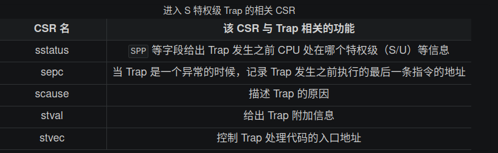
特权级切换的硬件控制机制
当 CPU 执行完一条指令并准备从用户特权级 陷入（ Trap ）到 S 特权级的时候，硬件会自动完成如下这些事情：
sstatus 的 SPP 字段会被修改为 CPU 当前的特权级（U/S）。
sepc 会被修改为 Trap 处理完成后默认会执行的下一条指令的地址。
scause/stval 分别会被修改成这次 Trap 的原因以及相关的附加信息。
CPU 会跳转到 stvec 所设置的 Trap 处理入口地址，并将当前特权级设置为 S ，然后从Trap 处理入口地址处开始执行。
而当 CPU 完成 Trap 处理准备返回的时候，需要通过一条 S 特权级的特权指令 sret 来完成，这一条指令具体完成以下功能：
CPU 会将当前的特权级按照 sstatus 的 SPP 字段设置为 U 或者 S ；
CPU 会跳转到 sepc 寄存器指向的那条指令，然后继续执行。
用户栈与内核栈
在 Trap 触发的一瞬间， CPU 会切换到 S 特权级并跳转到 stvec 所指示的位置。 但是在正式进入 S 特权级的 Trap 处理之前，我们必须保存原控制流的寄存器状态，这一般通过栈来完成。 但我们需要用专门为操作系统准备的内核栈，而不是应用程序运行时用到的用户栈。
我们声明两个类型 KernelStack 和 UserStack 分别表示用户栈和内核栈，它们都只是字节数组的简单包装：
#[repr(align(4096))]
struct KernelStack {
data: [u8; KERNEL_STACK_SIZE],
}
#[repr(align(4096))]
struct UserStack {
data: [u8; USER_STACK_SIZE],
}
static KERNEL_STACK: KernelStack = KernelStack {
data: [0; KERNEL_STACK_SIZE],
};
static USER_STACK: UserStack = UserStack {
data: [0; USER_STACK_SIZE],
};
两个栈以全局变量的形式实例化在批处理操作系统的 .bss 段中。
我们为两个类型实现了 get_sp 方法来获取栈顶地址。由于在 RISC-V 中栈是向下增长的， 我们只需返回包裹的数组的结尾地址，以用户栈类型 UserStack 为例：
impl KernelStack {
fn get_sp(&self) -> usize {
self.data.as_ptr() as usize + KERNEL_STACK_SIZE
}
pub fn push_context(&self, cx: TrapContext) -> &'static mut TrapContext {
let cx_ptr = (self.get_sp() - core::mem::size_of::<TrapContext>()) as *mut TrapContext;
unsafe {
*cx_ptr = cx;
}
unsafe { cx_ptr.as_mut().unwrap() }
}
}
impl UserStack {
fn get_sp(&self) -> usize {
self.data.as_ptr() as usize + USER_STACK_SIZE
}
}
换栈是非常简单的，只需将 sp 寄存器的值修改为 get_sp 的返回值即可。
接下来是 Trap 上下文，即在 Trap 发生时需要保存的物理资源内容，定义如下：
#[repr(C)]
pub struct TrapContext {
/// general regs[0..31]
pub x: [usize; 32],
/// CSR sstatus
pub sstatus: Sstatus,
/// CSR sepc
pub sepc: usize,
}
可以看到里面包含所有的通用寄存器 x0~x31 ，还有 sstatus 和 sepc 。
对于通用寄存器而言，两条控制流（应用程序控制流和内核控制流）运行在不同的特权级，所属的软件也可能由不同的编程语言编写，虽然在 Trap 控制流中只是会执行 Trap 处理 相关的代码，但依然可能直接或间接调用很多模块，因此很难甚至不可能找出哪些寄存器无需保存。既然如此我们就只能全部保存了。但这里也有一些例外， 如 x0 被硬编码为 0 ，它自然不会有变化；还有 tp(x4) 寄存器，除非我们手动出于一些特殊用途使用它，否则一般也不会被用到。虽然它们无需保存， 但我们仍然在 TrapContext 中为它们预留空间，主要是为了后续的实现方便。
对于 CSR 而言，我们知道进入 Trap 的时候，硬件会立即覆盖掉 scause/stval/sstatus/sepc 的全部或是其中一部分。scause/stval 的情况是：它总是在 Trap 处理的第一时间就被使用或者是在其他地方保存下来了，因此它没有被修改并造成不良影响的风险。 而对于 sstatus/sepc 而言，它们会在 Trap 处理的全程有意义（在 Trap 控制流最后 sret 的时候还用到了它们），而且确实会出现 Trap 嵌套的情况使得它们的值被覆盖掉。所以我们需要将它们也一起保存下来，并在 sret 之前恢复原样。
Trap管理
上下文保存与恢复
首先是具体实现 Trap 上下文保存和恢复的汇编代码。
在批处理操作系统初始化时，我们需要修改 stvec 寄存器来指向正确的 Trap 处理入口点。
global_asm!(include_str!("trap.S"));
/// initialize CSR `stvec` as the entry of `__alltraps`
pub fn init() {
extern "C" {
fn __alltraps();
}
unsafe {
stvec::write(__alltraps as usize, TrapMode::Direct);
}
}
这里我们引入了一个外部符号 __alltraps ，并将 stvec 设置为 Direct 模式指向它的地址。我们在 os/src/trap/trap.S 中实现 Trap 上下文保存/恢复的汇编代码，分别用外部符号 __alltraps 和 __restore 标记为函数，并通过 global_asm! 宏将 trap.S 这段汇编代码插入进来。
Trap 处理的总体流程如下：首先通过 __alltraps 将 Trap 上下文保存在内核栈上，然后跳转到使用 Rust 编写的 trap_handler 函数 完成 Trap 分发及处理。当 trap_handler 返回之后，使用 __restore 从保存在内核栈上的 Trap 上下文恢复寄存器。最后通过一条 sret 指令回到应用程序执行。
首先是保存 Trap 上下文的 __alltraps 的实现：
.altmacro
.macro SAVE_GP n
sd x\n, \n*8(sp)
.endm
.macro LOAD_GP n
ld x\n, \n*8(sp)
.endm
.section .text
.globl __alltraps
.globl __restore
.align 2
__alltraps:
csrrw sp, sscratch, sp
# now sp->kernel stack, sscratch->user stack
# allocate a TrapContext on kernel stack
addi sp, sp, -34*8
# save general-purpose registers
sd x1, 1*8(sp)
# skip sp(x2), we will save it later
sd x3, 3*8(sp)
# skip tp(x4), application does not use it
# save x5~x31
.set n, 5
.rept 27
SAVE_GP %n
.set n, n+1
.endr
# we can use t0/t1/t2 freely, because they were saved on kernel stack
csrr t0, sstatus
csrr t1, sepc
sd t0, 32*8(sp)
sd t1, 33*8(sp)
# read user stack from sscratch and save it on the kernel stack
csrr t2, sscratch
sd t2, 2*8(sp)
# set input argument of trap_handler(cx: &mut TrapContext)
mv a0, sp
call trap_handler
第 7 行我们使用 .align 将 __alltraps 的地址 4 字节对齐，这是 RISC-V 特权级规范的要求；
第 9 行的 csrrw 原型是 可以将 CSR 当前的值读到通用寄存器 中，然后将 通用寄存器
的值写入该 CSR 。因此这里起到的是交换 sscratch 和 sp 的效果。在这一行之前 sp 指向用户栈， sscratch 指向内核栈（原因稍后说明），现在 sp 指向内核栈， sscratch 指向用户栈。
第 12 行，我们准备在内核栈上保存 Trap 上下文，于是预先分配
字节的栈帧，这里改动的是 sp ，说明确实是在内核栈上。
第 13~24 行，保存 Trap 上下文的通用寄存器 x0~x31，跳过 x0 和 tp(x4)，原因之前已经说明。我们在这里也不保存 sp(x2)，因为它在第 9 行 后指向的是内核栈。用户栈的栈指针保存在 sscratch 中，必须通过 csrr 指令读到通用寄存器中后才能使用，因此我们先考虑保存其它通用寄存器，腾出空间。
我们要基于 sp 来找到每个寄存器应该被保存到的正确的位置。实际上，在栈帧分配之后，我们可用于保存 Trap 上下文的地址区间为 ， 按照 TrapContext 结构体的内存布局，基于内核栈的位置（sp所指地址）来从低地址到高地址分别按顺序放置 x0~x31这些通用寄存器，最后是 sstatus 和 sepc 。因此通用寄存器 xn 应该被保存在地址区间
。
为了简化代码，x5~x31 这 27 个通用寄存器我们通过类似循环的 .rept 每次使用 SAVE_GP 宏来保存，其实质是相同的。注意我们需要在 trap.S 开头加上 .altmacro 才能正常使用 .rept 命令。
第 25~28 行，我们将 CSR sstatus 和 sepc 的值分别读到寄存器 t0 和 t1 中然后保存到内核栈对应的位置上。指令 的功能就是将 CSR 的值读到寄存器
中。这里我们不用担心 t0 和 t1 被覆盖， 因为它们刚刚已经被保存了。
第 30~31 行专门处理 sp 的问题。首先将 sscratch 的值读到寄存器 t2 并保存到内核栈上，注意： sscratch 的值是进入 Trap 之前的 sp 的值，指向 用户栈。而现在的 sp 则指向内核栈。
第 33 行令 ，让寄存器 a0 指向内核栈的栈指针也就是我们刚刚保存的 Trap 上下文的地址， 这是由于我们接下来要调用 trap_handler 进行 Trap 处理，它的第一个参数 cx 由调用规范要从 a0 中获取。而 Trap 处理函数 trap_handler 需要 Trap 上下文的原因在于：它需要知道其中某些寄存器的值，比如在系统调用的时候应用程序传过来的 syscall ID 和 对应参数。我们不能直接使用这些寄存器现在的值，因为它们可能已经被修改了，因此要去内核栈上找已经被保存下来的值。
RISC-V 中读写 CSR 的指令是一类能不会被打断地完成多个读写操作的指令。这种不会被打断地完成多个操作的指令被称为 原子指令 (Atomic Instruction)。这里的 原子 的含义是"不可分割的最小个体"，也就是说指令的多个操作要么都不完成，要么全部完成，而不会处于某种中间状态。
当 trap_handler 返回之后会从调用 trap_handler 的下一条指令开始执行，也就是从栈上的 Trap 上下文恢复的 __restore ：
__restore:
# case1: start running app by __restore
# case2: back to U after handling trap
mv sp, a0
# now sp->kernel stack(after allocated), sscratch->user stack
# restore sstatus/sepc
ld t0, 32*8(sp)
ld t1, 33*8(sp)
ld t2, 2*8(sp)
csrw sstatus, t0
csrw sepc, t1
csrw sscratch, t2
# restore general-purpuse registers except sp/tp
ld x1, 1*8(sp)
ld x3, 3*8(sp)
.set n, 5
.rept 27
LOAD_GP %n
.set n, n+1
.endr
# release TrapContext on kernel stack
addi sp, sp, 34*8
# now sp->kernel stack, sscratch->user stack
csrrw sp, sscratch, sp
sret
第 8 行比较奇怪，我们暂且不管，假设它从未发生，那么 sp 仍然指向内核栈的栈顶。
第 11~24 行负责从内核栈顶的 Trap 上下文恢复通用寄存器和 CSR 。注意我们要先恢复 CSR 再恢复通用寄存器，这样我们使用的三个临时寄存器 才能被正确恢复。
在第 26 行之前，sp 指向保存了 Trap 上下文之后的内核栈栈顶， sscratch 指向用户栈栈顶。我们在第 26 行在内核栈上回收 Trap 上下文所 占用的内存，回归进入 Trap 之前的内核栈栈顶。第 27 行，再次交换 sscratch 和 sp，现在 sp 重新指向用户栈栈顶，sscratch 也依然保存 进入 Trap 之前的状态并指向内核栈栈顶。
在应用程序控制流状态被还原之后，第 28 行我们使用 sret 指令回到 U 特权级继续运行应用程序控制流。
trap分发
Trap 在使用 Rust 实现的 trap_handler 函数中完成分发和处理：
#[no_mangle]
/// handle an interrupt, exception, or system call from user space
pub fn trap_handler(cx: &mut TrapContext) -> &mut TrapContext {
let scause = scause::read(); // get trap cause
let stval = stval::read(); // get extra value
match scause.cause() {
Trap::Exception(Exception::UserEnvCall) => {
cx.sepc += 4;
cx.x[10] = syscall(cx.x[17], [cx.x[10], cx.x[11], cx.x[12]]) as usize;
}
Trap::Exception(Exception::StoreFault) | Trap::Exception(Exception::StorePageFault) => {
println!("[kernel] PageFault in application, kernel killed it.");
run_next_app();
}
Trap::Exception(Exception::IllegalInstruction) => {
println!("[kernel] IllegalInstruction in application, kernel killed it.");
run_next_app();
}
_ => {
panic!(
"Unsupported trap {:?}, stval = {:#x}!",
scause.cause(),
stval
);
}
}
cx
}
第 4 行声明返回值为 &mut TrapContext 并在第 25 行实际将传入的 cx 原样返回，因此在 __restore 的时候 a0 寄存器在调用 trap_handler 前后并没有发生变化，仍然指向分配 Trap 上下文之后的内核栈栈顶，和此时 sp 的值相同，我们
并不会有问题；
第 7 行根据 scause 寄存器所保存的 Trap 的原因进行分发处理。这里我们无需手动操作这些 CSR ，而是使用 Rust 第三方库 riscv 。
第 8~11 行，发现触发 Trap 的原因是来自 U 特权级的 Environment Call，也就是系统调用。这里我们首先修改保存在内核栈上的 Trap 上下文里面 sepc，让其增加 4。这是因为我们知道这是一个由 ecall 指令触发的系统调用，在进入 Trap 的时候，硬件会将 sepc 设置为这条 ecall 指令所在的地址（因为它是进入 Trap 之前最后一条执行的指令）。而在 Trap 返回之后，我们希望应用程序控制流从 ecall 的下一条指令 开始执行。因此我们只需修改 Trap 上下文里面的 sepc，让它增加 ecall 指令的码长，也即 4 字节。这样在 __restore 的时候 sepc 在恢复之后就会指向 ecall 的下一条指令，并在 sret 之后从那里开始执行。
用来保存系统调用返回值的 a0 寄存器也会同样发生变化。我们从 Trap 上下文取出作为 syscall ID 的 a7 和系统调用的三个参数 a0~a2 传给 syscall 函数并获取返回值。 syscall 函数是在 syscall 子模块中实现的。 这段代码是处理正常系统调用的控制逻辑。
第 12~20 行，分别处理应用程序出现访存错误和非法指令错误的情形。此时需要打印错误信息并调用 run_next_app 直接切换并运行下一个 应用程序。
第 21 行开始，当遇到目前还不支持的 Trap 类型的时候，批处理操作系统整个 panic 报错退出。
对于系统调用而言， syscall 函数并不会实际处理系统调用，而只是根据 syscall ID 分发到具体的处理函数：
/// handle syscall exception with `syscall_id` and other arguments
pub fn syscall(syscall_id: usize, args: [usize; 3]) -> isize {
match syscall_id {
SYSCALL_WRITE => sys_write(args[0], args[1] as *const u8, args[2]),
SYSCALL_EXIT => sys_exit(args[0] as i32),
_ => panic!("Unsupported syscall_id: {}", syscall_id),
}
}
这里我们会将传进来的参数 args 转化成能够被具体的系统调用处理函数接受的类型。它们的实现都非常简单：
const FD_STDOUT: usize=1;
/// write buf of length `len` to a file with `fd`
pub fn sys_write(fd: usize, buf: *const u8, len: usize) -> isize {
trace!("kernel: sys_write");
match fd {
FD_STDOUT => {
let slice = unsafe { core::slice::from_raw_parts(buf, len) };
let str = core::str::from_utf8(slice).unwrap();
print!("{}", str);
len as isize
}
_ => {
panic!("Unsupported fd in sys_write!");
}
}
}
sys_write 我们将传入的位于应用程序内的缓冲区的开始地址和长度转化为一个字符串 &str ，然后使用批处理操作系统已经实现的 print! 宏打印出来。这里我们并没有检查传入参数的安全性，存在安全隐患。
sys_exit 打印退出的应用程序的返回值并同样调用 run_next_app 切换到下一个应用程序。
执行应用程序
当批处理操作系统初始化完成，或者是某个应用程序运行结束或出错的时候，我们要调用 run_next_app 函数切换到下一个应用程序。此时 CPU 运行在 S 特权级，而它希望能够切换到 U 特权级。在 RISC-V 架构中，唯一一种能够使得 CPU 特权级下降的方法就是通过 Trap 返回系列指令，比如 sret 。事实上，在运行应用程序之前要完成如下这些工作：
跳转到应用程序入口点 0x80400000；
将使用的栈切换到用户栈；
在 __alltraps 时我们要求 sscratch 指向内核栈，这个也需要在此时完成；
从 S 特权级切换到 U 特权级。
它们可以通过复用 __restore 的代码来更容易的实现上述工作。我们只需要在内核栈上压入一个为启动应用程序而特殊构造的 Trap 上下文，再通过 __restore 函数，就能 让这些寄存器到达启动应用程序所需要的上下文状态。
impl TrapContext {
/// set stack pointer to x_2 reg (sp)
pub fn set_sp(&mut self, sp: usize) {
self.x[2] = sp;
}
/// init app context
pub fn app_init_context(entry: usize, sp: usize) -> Self {
let mut sstatus = sstatus::read(); // CSR sstatus
sstatus.set_spp(SPP::User); //previous privilege mode: user mode
let mut cx = Self {
x: [0; 32],
sstatus,
sepc: entry, // entry point of app
};
cx.set_sp(sp); // app's user stack pointer
cx // return initial Trap Context of app
}
}
为 TrapContext 实现 app_init_context 方法，修改其中的 sepc 寄存器为应用程序入口点 entry， sp 寄存器为我们设定的 一个栈指针，并将 sstatus 寄存器的 SPP 字段设置为 User 。
在 run_next_app 函数中我们能够看到
/// run next app
pub fn run_next_app() -> ! {
let mut app_manager = APP_MANAGER.exclusive_access();
let current_app = app_manager.get_current_app();
unsafe {
app_manager.load_app(current_app);
}
app_manager.move_to_next_app();
drop(app_manager);
// before this we have to drop local variables related to resources manually
// and release the resources
extern "C" {
fn __restore(cx_addr: usize);
}
unsafe {
__restore(KERNEL_STACK.push_context(TrapContext::app_init_context(
APP_BASE_ADDRESS,
USER_STACK.get_sp(),
)) as *const _ as usize);
}
panic!("Unreachable in batch::run_current_app!");
}
__restore 所做的事情是在内核栈上压入一个 Trap 上下文，其 sepc 是应用程序入口地址 0x80400000 ，其 sp 寄存器指向用户栈，其 sstatus 的 SPP 字段被设置为 User 。 push_context 的返回值是内核栈压入 Trap 上下文之后的栈顶，它会被作为 __restore 的参数（ 回看 __restore 代码 ，这时我们可以理解为何 __restore 函数的起始部分会完成 ），这使得在 __restore 函数中 sp 仍然可以指向内核栈的栈顶。这之后，就和执行一次普通的 __restore 函数调用一样了。
多道程序放置
在第二章中，内核让所有应用都共享同一个固定的起始地址。 正因如此，内存中同时最多只能驻留一个应用，
要一次加载运行多个程序，就要求每个用户程序被内核加载到内存中的起始地址都不同。 为此，我们编写脚本 user/build.py 为每个应用定制各自的起始地址。 它的思路很简单，对于每一个应用程序，使用 cargo rustc 单独编译， 用 -Clink-args=-Ttext=xxxx 选项指定链接时 .text 段的地址为 0x80400000 + app_id * 0x20000 。
多道程序加载
在第二章中负责应用加载和执行的子模块 batch 被拆分为 loader 和 task ， 前者负责启动时加载应用程序，后者负责切换和调度。
其中， loader 模块的 load_apps 函数负责将所有用户程序在内核初始化的时一并加载进内存。
#![allow(unused)] fn main() { pub fn load_apps() { extern "C" { fn _num_app(); } let num_app_ptr = _num_app as usize as *const usize; let num_app = get_num_app(); let app_start = unsafe { core::slice::from_raw_parts(num_app_ptr.add(1), num_app + 1) }; // clear i-cache first unsafe { asm!("fence.i"); } // load apps for i in 0..num_app { let base_i = get_base_i(i); // clear region (base_i..base_i + APP_SIZE_LIMIT) .for_each(|addr| unsafe { (addr as *mut u8).write_volatile(0) }); // load app from data section to memory let src = unsafe { core::slice::from_raw_parts(app_start[i] as *const u8, app_start[i + 1] - app_start[i]) }; let dst = unsafe { core::slice::from_raw_parts_mut(base_i as *mut u8, src.len()) }; dst.copy_from_slice(src); } } }
第 个应用被加载到以物理地址 base_i 开头的一段物理内存上，而 base_i 的计算方式如下：
#![allow(unused)] fn main() { fn get_base_i(app_id: usize) -> usize { APP_BASE_ADDRESS + app_id * APP_SIZE_LIMIT } }
我们可以在 config 子模块中找到这两个常数， APP_BASE_ADDRESS 被设置为 0x80400000 ， 而 APP_SIZE_LIMIT 和上一章一样被设置为 0x20000 。这种放置方式与 user/build.py 的实现一致。
任务切换
任务切换 ， 即应用在运行中主动或被动地交出 CPU 的使用权，内核可以选择另一个程序继续执行。 内核需要保证用户程序两次运行期间，任务上下文（如寄存器、栈等）保持一致。
任务切换的设计与实现
任务切换与上一章提及的 Trap 控制流切换相比，有如下异同：
与 Trap 切换不同，它不涉及特权级切换，部分由编译器完成；
与 Trap 切换相同，它对应用是透明的。
事实上，任务切换是来自两个不同应用在内核中的 Trap 控制流之间的切换。 当一个应用 Trap 到 S 态 OS 内核中进行进一步处理时， 其 Trap 控制流可以调用一个特殊的 __switch 函数。 在 __switch 返回之后，Trap 控制流将继续从调用该函数的位置继续向下执行。 而在调用 __switch 之后到返回前的这段时间里， 原 Trap 控制流 A 会先被暂停并被切换出去， CPU 转而运行另一个应用的 Trap 控制流 B 。 __switch 返回之后，原 Trap 控制流 A 才会从某一条 Trap 控制流 C 切换回来继续执行。
我们需要在 __switch 中保存 CPU 的某些寄存器，它们就是 任务上下文 (Task Context)。
下面我们给出 __switch 的实现：
.altmacro
.macro SAVE_SN n
sd s\n, (\n+2)*8(a0)
.endm
.macro LOAD_SN n
ld s\n, (\n+2)*8(a1)
.endm
.section .text
.globl \__switch
\__switch:
# \__switch(
# current_task_cx_ptr: *mut TaskContext,
# next_task_cx_ptr: *const TaskContext
# )
# save kernel stack of current task
sd sp, 8(a0)
# save ra & s0~s11 of current execution
sd ra, 0(a0)
.set n, 0
.rept 12
SAVE_SN %n
.set n, n + 1
.endr
# restore ra & s0~s11 of next execution
ld ra, 0(a1)
.set n, 0
.rept 12
LOAD_SN %n
.set n, n + 1
.endr
# restore kernel stack of next task
ld sp, 8(a1)
ret
它的两个参数分别是当前和即将被切换到的 Trap 控制流的 task_cx_ptr ，从 RISC-V 调用规范可知，它们分别通过寄存器 a0/a1 传入。
内核先把 current_task_cx_ptr 中包含的寄存器值逐个保存，再把 next_task_cx_ptr 中包含的寄存器值逐个恢复。
TaskContext 里包含的寄存器有：
#![allow(unused)] fn main() { #[repr(C)] /// task context structure containing some registers pub struct TaskContext { /// Ret position after task switching ra: usize, /// Stack pointer sp: usize, /// s0-11 register, callee saved s: [usize; 12], } }
s0~s11 是被调用者保存寄存器， __switch 是用汇编编写的，编译器不会帮我们处理这些寄存器。 保存 ra 很重要，它记录了 __switch 函数返回之后应该跳转到哪里继续执行。
我们将这段汇编代码 __switch 解释为一个 Rust 函数：
#![allow(unused)] fn main() { global_asm!(include_str!("switch.S")); extern "C" { /// Switch to the context of `next_task_cx_ptr`, saving the current context /// in `current_task_cx_ptr`. pub fn \__switch(current_task_cx_ptr: *mut TaskContext, next_task_cx_ptr: *const TaskContext); } }
我们会调用该函数来完成切换功能，而不是直接跳转到符号 __switch 的地址。 因此在调用前后，编译器会帮我们保存和恢复调用者保存寄存器。
管理多道程序
而内核为了管理任务，需要维护任务信息，相关内容包括：
任务运行状态：未初始化、准备执行、正在执行、已退出
任务控制块：维护任务状态和任务上下文
任务相关系统调用：程序主动暂停 sys_yield 和主动退出 sys_exit
yield调用
#![allow(unused)] fn main() { pub fn sys_yield() -> isize { syscall(SYSCALL_YIELD, [0, 0, 0]) } // yield 是 Rust 的关键字 pub fn yield_() -> isize { sys_yield() } }
任务控制块与任务运行状态
任务运行状态暂包括如下几种：
#![allow(unused)] fn main() { /// The status of a task #[derive(Copy, Clone, PartialEq)] pub enum TaskStatus { /// uninitialized UnInit, /// ready to run Ready, /// running Running, /// exited Exited, } }
任务状态外和任务上下文一并保存在名为 任务控制块 (Task Control Block) 的数据结构中：
#![allow(unused)] fn main() { #[derive(Copy, Clone)] pub struct TaskControlBlock { /// The task status in it's lifecycle pub task_status: TaskStatus, /// The task context pub task_cx: TaskContext, } }
任务管理器
内核需要一个全局的任务管理器来管理这些任务控制块：
#![allow(unused)] fn main() { pub struct TaskManager { /// total number of tasks num_app: usize, /// use inner value to get mutable access inner: UPSafeCell<TaskManagerInner>, } /// Inner of Task Manager pub struct TaskManagerInner { /// task list tasks: [TaskControlBlock; MAX_APP_NUM], /// id of current `Running` task current_task: usize, } }
这里用到了变量与常量分离的编程风格：字段 num_app 表示应用数目，它在 TaskManager 初始化后将保持不变； 而包裹在 TaskManagerInner 内的任务控制块数组 tasks，以及正在执行的应用编号 current_task 会在执行过程中变化。
初始化 TaskManager 的全局实例 TASK_MANAGER：
#![allow(unused)] fn main() { lazy_static! { /// Global variable: TASK_MANAGER pub static ref TASK_MANAGER: TaskManager = { let num_app = get_num_app(); let mut tasks = [TaskControlBlock { task_cx: TaskContext::zero_init(), task_status: TaskStatus::UnInit, }; MAX_APP_NUM]; for (i, task) in tasks.iter_mut().enumerate() { task.task_cx = TaskContext::goto_restore(init_app_cx(i)); task.task_status = TaskStatus::Ready; } TaskManager { num_app, inner: unsafe { UPSafeCell::new(TaskManagerInner { tasks, current_task: 0, }) }, } }; } }
第 5 行：调用 loader 子模块提供的 get_num_app 接口获取链接到内核的应用总数；
第 10~12 行：依次对每个任务控制块进行初始化，将其运行状态设置为 Ready ，并在它的内核栈栈顶压入一些初始化 上下文，然后更新它的 task_cx 。一些细节我们会稍后介绍。
从第 14 行开始：创建 TaskManager 实例并返回。
实现sys_yield和sys_exit
sys_yield 的实现用到了 task 子模块提供的 suspend_current_and_run_next 接口，这个接口如字面含义，就是暂停当前的应用并切换到下个应用。
#![allow(unused)] fn main() { /// current task gives up resources for other tasks pub fn sys_yield() -> isize { trace!("kernel: sys_yield"); suspend_current_and_run_next(); 0 } }
sys_exit 基于 task 子模块提供的 exit_current_and_run_next 接口，它的含义是退出当前的应用并切换到下个应用：
#![allow(unused)] fn main() { use crate::task::exit_current_and_run_next; pub fn sys_exit(exit_code: i32) -> ! { println!("[kernel] Application exited with code {}", exit_code); exit_current_and_run_next(); panic!("Unreachable in sys_exit!"); } }
那么 suspend_current_and_run_next 和 exit_current_and_run_next 各是如何实现的呢？
#![allow(unused)] fn main() { /// Suspend the current 'Running' task and run the next task in task list. pub fn suspend_current_and_run_next() { mark_current_suspended(); run_next_task(); } /// Exit the current 'Running' task and run the next task in task list. pub fn exit_current_and_run_next() { mark_current_exited(); run_next_task(); } }
它们都是先修改当前应用的运行状态，然后尝试切换到下一个应用。修改运行状态比较简单，实现如下：
#![allow(unused)] fn main() { impl TaskManager{ /// Change the status of current `Running` task into `Ready`. fn mark_current_suspended(&self) { let mut inner = self.inner.exclusive_access(); let current = inner.current_task; inner.tasks[current].task_status = TaskStatus::Ready; } } }
以 mark_current_suspended 为例。首先获得里层 TaskManagerInner 的可变引用，然后修改任务控制块数组 tasks 中当前任务的状态。
再看 run_next_task 的实现：
#![allow(unused)] fn main() { /// Find next task to run and return task id. /// /// In this case, we only return the first `Ready` task in task list. fn find_next_task(&self) -> Option<usize> { let inner = self.inner.exclusive_access(); let current = inner.current_task; (current + 1..current + self.num_app + 1) .map(|id| id % self.num_app) .find(|id| inner.tasks[*id].task_status == TaskStatus::Ready) } /// Switch current `Running` task to the task we have found, /// or there is no `Ready` task and we can exit with all applications completed fn run_next_task(&self) { if let Some(next) = self.find_next_task() { let mut inner = self.inner.exclusive_access(); let current = inner.current_task; inner.tasks[next].task_status = TaskStatus::Running; inner.current_task = next; let current_task_cx_ptr = &mut inner.tasks[current].task_cx as *mut TaskContext; let next_task_cx_ptr = &inner.tasks[next].task_cx as *const TaskContext; drop(inner); // before this, we should drop local variables that must be dropped manually unsafe { \__switch(current_task_cx_ptr, next_task_cx_ptr); } // go back to user mode } else { panic!("All applications completed!"); } } }
run_next_task 会调用 find_next_task 方法尝试寻找一个运行状态为 Ready 的应用并获得其 ID 。 如果找不到， 说明所有应用都执行完了， find_next_task 将返回 None ，内核 panic 退出。 如果能够找到下一个可运行应用，我们就调用 __switch 切换任务。
切换任务之前，我们要手动 drop 掉我们获取到的 TaskManagerInner 可变引用。 因为函数还没有返回， inner 不会自动销毁。我们只有令 TASK_MANAGER 的 inner 字段回到未被借用的状态，下次任务切换时才能再借用。
我们可以总结一下应用的运行状态变化图：
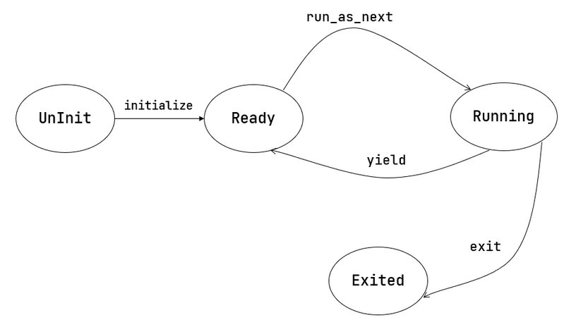
第一次进入用户态
我们在第二章中介绍过 CPU 第一次从内核态进入用户态的方法，只需在内核栈上压入构造好的 Trap 上下文， 然后 __restore 即可。本章要在此基础上做一些扩展。
在初始化任务控制块时，我们是这样做的：
#![allow(unused)] fn main() { for (i, task) in tasks.iter_mut().enumerate() { task.task_cx = TaskContext::goto_restore(init_app_cx(i)); task.task_status = TaskStatus::Ready; } }
init_app_cx 在 loader 子模块中定义，它向内核栈压入了一个 Trap 上下文，并返回压入 Trap 上下文后 sp 的值。 这个 Trap 上下文的构造方式与第二章相同。
goto_restore 保存传入的 sp，并将 ra 设置为 __restore 的入口地址，构造任务上下文后返回。这样，任务管理器中各个应用的任务上下文就得到了初始化。
#![allow(unused)] fn main() { impl TaskContext { /// Create a new empty task context pub fn zero_init() -> Self { Self { ra: 0, sp: 0, s: [0; 12], } } /// Create a new task context with a trap return addr and a kernel stack pointer pub fn goto_restore(kstack_ptr: usize) -> Self { extern "C" { fn \__restore(); } Self { ra: \__restore as usize, sp: kstack_ptr, s: [0; 12], } } } }
在 rust_main 中我们调用 task::run_first_task 来执行第一个应用：
#![allow(unused)] fn main() { fn run_first_task(&self) -> ! { let mut inner = self.inner.exclusive_access(); let task0 = &mut inner.tasks[0]; task0.task_status = TaskStatus::Running; let next_task_cx_ptr = &task0.task_cx as *const TaskContext; drop(inner); let mut _unused = TaskContext::zero_init(); // before this, we should drop local variables that must be dropped manually unsafe { __switch(&mut _unused as *mut TaskContext, next_task_cx_ptr); } panic!("unreachable in run_first_task!"); } }
我们显式声明了一个 _unused 变量，并将它的地址作为第一个参数传给 __switch ， 声明此变量的意义仅仅是为了避免其他数据被覆盖。
在 __switch 中恢复 sp 后， sp 将指向 init_app_cx 构造的 Trap 上下文，后面就回到第二章的情况了。 此外， __restore 的实现需要做出变化：它 不再需要 在开头 mv sp, a0 了。因为在 __switch 之后，sp 就已经正确指向了我们需要的 Trap 上下文地址。
分时多任务系统
现代的任务调度算法基本都是抢占式的，它要求每个应用只能连续执行一段时间，然后内核就会将它强制性切换出去。 一般将 时间片 (Time Slice) 作为应用连续执行时长的度量单位，每个时间片可能在毫秒量级。 简单起见，我们使用 时间片轮转算法 (RR, Round-Robin) 来对应用进行调度。
时钟中断与计时器
实现调度算法需要计时。RISC-V 要求处理器维护时钟计数器 mtime，还有另外一个 CSR mtimecmp 。 一旦计数器 mtime 的值超过了 mtimecmp，就会触发一次时钟中断。
运行在 M 特权级的 SEE 已经预留了相应的接口，基于此编写的 get_time 函数可以取得当前 mtime 计数器的值；
#![allow(unused)] fn main() { /// Get the current time in ticks pub fn get_time() -> usize { time::read() } }
在 10 ms 后设置时钟中断的代码如下：
#![allow(unused)] fn main() { /// The number of ticks per second const TICKS_PER_SEC: usize = 100; #[allow(dead_code)] /// The number of milliseconds per second const MSEC_PER_SEC: usize = 1000; /// The number of microseconds per second #[allow(dead_code)] const MICRO_PER_SEC: usize = 1_000_000; /// Set the next timer interrupt pub fn set_next_trigger() { set_timer(get_time() + CLOCK_FREQ / TICKS_PER_SEC); } /// use sbi call to set timer pub fn set_timer(timer: usize) { sbi_call(SBI_SET_TIMER, timer, 0, 0); } }
第 5 行， sbi 子模块有一个 set_timer 调用，用来设置 mtimecmp 的值。
第 14 行， timer 子模块的 set_next_trigger 函数对 set_timer 进行了封装， 它首先读取当前 mtime 的值，然后计算出 10ms 之内计数器的增量，再将 mtimecmp 设置为二者的和。 这样，10ms 之后一个 S 特权级时钟中断就会被触发。
至于增量的计算方式， CLOCK_FREQ 是一个预先获取到的各平台不同的时钟频率，单位为赫兹，也就是一秒钟之内计数器的增量。 它可以在 config 子模块中找到。10ms 的话只需除以常数 TICKS_PER_SEC 也就是 100 即可。
后面可能还有一些计时的需求，我们再设计一个函数：
#![allow(unused)] fn main() { /// get current time in microseconds #[allow(dead_code)] pub fn get_time_us() -> usize { time::read() * MICRO_PER_SEC / CLOCK_FREQ } }
timer 子模块的 get_time_us 可以以微秒为单位返回当前计数器的值。
新增一个系统调用，使应用能获取当前的时间：
#![allow(unused)] fn main() { /// get time with second and microsecond pub fn sys_get_time(ts: *mut TimeVal, _tz: usize) -> isize { trace!("kernel: sys_get_time"); let us = get_time_us(); unsafe { *ts = TimeVal { sec: us / 1_000_000, usec: us % 1_000_000, }; } 0 } }
结构体 TimeVal 的定义如下，内核只需调用 get_time_us 即可实现该系统调用。
#![allow(unused)] fn main() { #[repr(C)] #[derive(Debug)] pub struct TimeVal { pub sec: usize, pub usec: usize, } }
嵌套中断问题
默认情况下，当 Trap 进入某个特权级之后，在 Trap 处理的过程中同特权级的中断都会被屏蔽。
当 Trap 发生时，sstatus.sie 会被保存在 sstatus.spie 字段中，同时 sstatus.sie 置零， 这也就在 Trap 处理的过程中屏蔽了所有 S 特权级的中断；
当 Trap 处理完毕 sret 的时候， sstatus.sie 会恢复到 sstatus.spie 内的值。
也就是说，如果不去手动设置 sstatus CSR ，在只考虑 S 特权级中断的情况下，是不会出现 嵌套中断 (Nested Interrupt) 的。
抢占式调度
有了时钟中断和计时器，抢占式调度就很容易实现了：
#![allow(unused)] fn main() { /// trap handler #[no_mangle] pub fn trap_handler(cx: &mut TrapContext) -> &mut TrapContext { let scause = scause::read(); // get trap cause let stval = stval::read(); // get extra value // trace!("into {:?}", scause.cause()); match scause.cause() { Trap::Exception(Exception::UserEnvCall) => { // jump to next instruction anyway cx.sepc += 4; // get system call return value cx.x[10] = syscall(cx.x[17], [cx.x[10], cx.x[11], cx.x[12]]) as usize; } Trap::Exception(Exception::StoreFault) | Trap::Exception(Exception::StorePageFault) => { println!("[kernel] PageFault in application, bad addr = {:#x}, bad instruction = {:#x}, kernel killed it.", stval, cx.sepc); exit_current_and_run_next(); } Trap::Exception(Exception::IllegalInstruction) => { println!("[kernel] IllegalInstruction in application, kernel killed it."); exit_current_and_run_next(); } Trap::Interrupt(Interrupt::SupervisorTimer) => { set_next_trigger(); suspend_current_and_run_next(); } _ => { panic!( "Unsupported trap {:?}, stval = {:#x}!", scause.cause(), stval ); } } cx } }
我们只需在 trap_handler 函数下新增一个分支，触发了 S 特权级时钟中断时，重新设置计时器， 调用 suspend_current_and_run_next 函数暂停当前应用并切换到下一个。
为了避免 S 特权级时钟中断被屏蔽，我们需要在执行第一个应用前调用 enable_timer_interrupt() 设置 sie.stie， 使得 S 特权级时钟中断不会被屏蔽；再设置第一个 10ms 的计时器。
#![allow(unused)] fn main() { //main.rs中的rust_main trap::enable_timer_interrupt(); timer::set_next_trigger(); }
enable_timer_interrupt的实现。
#![allow(unused)] fn main() { /// enable timer interrupt in supervisor mode pub fn enable_timer_interrupt() { unsafe { sie::set_stimer(); } } }
就这样，我们实现了时间片轮转任务调度算法。 power 系列用户程序可以验证我们取得的成果：这些应用并没有主动 yield， 内核仍能公平地把时间片分配给它们。
作业
题目
获取任务信息
ch3 中，我们的系统已经能够支持多个任务分时轮流运行，我们希望引入一个新的系统调用 sys_task_info 以获取当前任务的信息，定义如下：
fn sys_task_info(ti: *mut TaskInfo) -> isize;
syscall ID: 410
查询当前正在执行的任务信息，任务信息包括任务控制块相关信息（任务状态）、任务使用的系统调用及调用次数、系统调用时刻距离任务第一次被调度时刻的时长（单位ms）。
思路
系统调用获取当前正在运行的任务的TaskInfo, 类似于xv6当中的myproc()调用。
通过TaskManager来获取当前正在运行的任务，然后填充这一部分的信息。
具体流程：
-
TaskManager中的inner包含了所有的tasks和正在运行的current_task，通过这里获得当前运行任务。
-
status赋值，syscall_num赋值
这里，syscall_num需要新开一个数组，在TaskControlBlock之中，[u32;MAX_SYSCALL_NUM];
需要实现syscall_num，需要给每一个系统调用自增，因此需要给TaskManager实现一个increase_syscall的函数，接受一个syscall_id : usize，给TaskControlBlock自增。
#![allow(unused)] fn main() { ///WARNING: 返回引用还是拷贝？ ///应该返回拷贝，引用应该由调用者自行处理 pub fn get_current_task(&self) -> TaskControlBlock { let inner = self.inner.exclusive_access(); let current_task_id = inner.current_task; inner.tasks[current_task_id] } fn increase_syscall(&self, sys_call_id: usize) { let mut inner = self.inner.exclusive_access(); let current_task = inner.current_task; inner.tasks[current_task].syscall_times[sys_call_id] += 1; } /// 增加系统调用次数，传入一个SYSCALL 的id pub fn increase_syscall_number(syscall_id: usize) { TASK_MANAGER.increase_syscall(syscall_id); } pub fn sys_task_info(ti: *mut TaskInfo) -> isize { trace!("kernel: sys_task_info"); increase_syscall_number(SYSCALL_TASK_INFO); if ti.is_null() { return -1; } let current_task = TASK_MANAGER.get_current_task(); unsafe { (*ti).status = current_task.task_status; (*ti).syscall_times = current_task.syscall_times; (*ti).time = get_time_ms(); }; 0 } }
注意
syscall中的时间调用应该返回get_time_ms()而不是原始时间。
简答作业
1
ch2b_bad_address.rs
ch2b_bad_address.rs中访问0x0并且进行写操作会导致Page Fault。
0x0是未映射的内存区域，没有关联到任何物理页，因此会导致Page Fault。
如果该代码运行在用户态，那么尝试访问 0x0 会立即导致操作系统抛出 Page Fault，因为用户态程序无权访问此地址。即使在内核态，如果该地址未被映射（如没有正确初始化页表），也会触发 Page Fault。操作系统需要显式映射地址空间，才能进行合法的读写。
ch2b_bad_instructions.rs
会发生IllegalInstruction。
sret是RISC-V架构的一条特权指令，用于从S态返回U态。
只有在 S态下才能合法执行 sret 指令。当前状态为U态，因此无法执行，因为权限不足。
ch2b_bad_register.rs
发生IllegalInstruction。
csrr用于从控制状态寄存器读取数据，status是一个特权寄存器，只能在S态下访问，如果在用户态下访问就会触发异常。
2
1
a0代表了sp的值，也就是当前的内核态指针。
__restore用于：1.从用户态陷入内核态，处理系统调用或者恢复上下文。2.内核态中处理异常后恢复之前的上下文。
2
sstatus、sepc 和 sscratch。
sstatus用于存储当前的信息，spec用来存储程序计数器的地址，sscratch保存用户栈指针，用于正确切换用户栈。
3
x2对应的是sp，恢复上下文时需要保证状态正正确以便于从内核栈切换到用户栈，恢复过程在__alltraps中分配了新的内核栈。
x4对应的是tp,用于保存线程指针，应用程序并不使用这个指针因此可以跳过。
4
csrrw将特定的CSR与一个通用寄存器的值进行交换，在这条指令执行之后，sp被更新为原来存储在sscratch中的值，切换到用户栈。
sscratch则交换为内核栈指针的值，此时，sscratch仍然保留着用户栈的地址信息。
5
sret。sret使用S态向U态切换的指令，处理器会根据保存在sstatus, sepc, sscratch中的值进行切换。
__restore中，执行csrw恢复了sstatus, sepc, sscratch的值，sstatus中的特定位决定处理器的执行模式。
sepc中存的是用户程序恢复时的执行地址，处理器将在这个地址继续执行。
sret执行后，处理器会读取sstatus的状态信息，根据设置的模式进行切换。如果状态信息指示进入用户态，处理器就切换到用户模式，执行sepc指定的地址处的指令。
6
sp被更新为原本的sscratch中的值，也就是栈指针指向用户栈，sscratch保存的是原本的sp的值，保留切换之前的内核栈信息。
7
在执行了csrrw sp, sscratch, sp之后用户态触发了陷入内核态的操作，也就是调用 __alltraps 时就触发了切换。
- 在完成本次实验的过程（含此前学习的过程）中，我曾分别与 以下各位 就（与本次实验相关的）以下方面做过交流，还在代码中对应的位置以注释形式记录了具体的交流对象及内容：
无。
- 此外，我也参考了 以下资料 ，还在代码中对应的位置以注释形式记录了具体的参考来源及内容：
-
我独立完成了本次实验除以上方面之外的所有工作，包括代码与文档。 我清楚地知道，从以上方面获得的信息在一定程度上降低了实验难度，可能会影响起评分。
-
我从未使用过他人的代码，不管是原封不动地复制，还是经过了某些等价转换。 我未曾也不会向他人（含此后各届同学）复制或公开我的实验代码，我有义务妥善保管好它们。 我提交至本实验的评测系统的代码，均无意于破坏或妨碍任何计算机系统的正常运转。 我清楚地知道，以上情况均为本课程纪律所禁止，若违反，对应的实验成绩将按"-100"分计。
rCore第四章作业
spawn实现
如果不考虑其他因素，其实spawn类似于vfork+exec。
假定fork采用的是直接复制的策略，那vfork就是采用的阻塞父进程执行、获得父进程地址空间的引用、子进程运行、执行完成、恢复父进程。
fork 调用
主要部分是调用TaskControlBlock::fork, 返回父进程的TaskControlBlock的拷贝，并分配一个新的Pid。
Task部分各个结构的关系
TaskControlBlock
TaskControlBlock 代表一个任务或进程的控制块，用于存储任务的基本信息和状态。它包含了所有不会在运行时改变的内容，如进程ID (pid) 和内核栈 (kernel_stack)。此外，它还包含一个可变的 inner 字段，该字段封装了实际的任务状态信息：
pid：任务的唯一标识符。
kernel_stack：内核栈，用于保存该任务在内核态运行的栈信息。
inner：包含该任务的动态状态信息，用于存储在运行中可能变化的内容，如内存空间、任务上下文、进程树信息等。
TaskControlBlockInner
TaskControlBlockInner 是 TaskControlBlock 的内部状态结构体，用于存储运行期间动态变化的内容，如任务的上下文、内存管理、父子关系等。每个 TaskControlBlockInner 都包含以下字段：
trap_cx_ppn：存储陷入上下文（Trap Context）的物理页号，用于保存用户态的CPU上下文。
base_size：应用程序的基本大小，用于约束任务在内存中的地址空间。
task_cx：任务上下文，表示当前任务的 CPU 状态。
task_status：当前任务的状态（如 Ready、Running、Zombie）。
memory_set：用于管理该任务的地址空间。
parent 和 children：当前任务的父子进程关系。
exit_code：任务退出时的状态码。
heap_bottom 和 program_brk：用于管理堆内存的范围。
TaskManager
负责调度所有准备好运行的Task，它维护了一个 ready_queue 队列，包含了所有准备好运行的任务的 TaskControlBlock，从中取出任务并将其交给调度器：
ready_queue：一个队列，存储处于“Ready”状态的任务。
add 和 fetch：add 将任务添加到 ready_queue 中，fetch 从队列中取出任务进行调度。
文件系统
目录项
目录项
对于文件而言，它的内容在文件系统或内核看来没有任何既定的格式，只是一个字节序列。目录的内容却需要遵从一种特殊的格式，它可以看成一个目录项的序列，每个目录项都是一个二元组，包括目录下文件的文件名和索引节点编号。
#![allow(unused)] fn main() { // easy-fs/src/layout.rs const NAME_LENGTH_LIMIT: usize = 27; #[repr(C)] pub struct DirEntry { name: [u8; NAME_LENGTH_LIMIT + 1], inode_number: u32, } pub const DIRENT_SZ: usize = 32; impl DirEntry { pub fn empty() -> Self; pub fn new(name: &str, inode_number: u32) -> Self; pub fn name(&self) -> &str; pub fn inode_number(&self) -> u32 } }
在从目录中读取目录项，或将目录项写入目录时，需要将目录项转化为缓冲区（即字节切片）的形式来符合 read_at OR write_at 接口的要求
#![allow(unused)] fn main() { // easy-fs/src/layout.rs impl DirEntry { pub fn as_bytes(&self) -> &[u8] { unsafe { core::slice::from_raw_parts( self as *const _ as usize as *const u8, DIRENT_SZ, ) } } pub fn as_bytes_mut(&mut self) -> &mut [u8] { unsafe { core::slice::from_raw_parts_mut( self as *mut _ as usize as *mut u8, DIRENT_SZ, ) } } } }
重新学习数据结构与算法
データ構造とアルゴリズムを再学習する
目录
- 1005 k次取反后最大化的数组和
- 45 跳跃游戏 2
- 134 加油站
- 135 分发糖果
- 406 根据身高重建队列
- 452 最少数量的箭引爆气球
- 435 无重叠区间
- 763 划分字母区间
- 56 合并区间
- 738 单调递增的数字
- 968 监控二叉树
- 455 分发饼干
- 871 最低加油次数
- 1090 受标签影响的最大值
- 3255 长度为k的子数组的能量值2
- UNSOLVED 2071 你可以安排的最多任务数目
- 658 找到K个最接近的元素
- 632 最小区间
- 409 最长回文串
- 410 分割数组的最大值
1005 k次取反后最大化的数组和
给你一个整数数组 nums 和一个整数 k ，按以下方法修改该数组：
选择某个下标 i 并将 nums[i] 替换为 -nums[i] 。
重复这个过程恰好 k 次。可以多次选择同一个下标 i 。
以这种方式修改数组后，返回数组 可能的最大和 。
Click to expand
class Solution {
public:
int largestSumAfterKNegations(vector<int>& nums, int k) {
sort(nums.begin(),nums.end(),[](int a,int b){
return abs(a)>abs(b);
});
for(int i=0;i<nums.size();i++){
if(nums[i]<0&&k>0){
nums[i]=-nums[i];
k--;
}
}
if(k%2==1) nums[nums.size()-1]*=-1;
int result=0;
for(auto& a: nums){
result+=a;
}
return result;
}
};
45 跳跃游戏 2
给定一个长度为 n 的 0 索引整数数组 nums。初始位置为 nums[0]。
每个元素 nums[i] 表示从索引 i 向前跳转的最大长度。换句话说，如果你在 nums[i] 处，你可以跳转到任意 nums[i + j] 处:
0 <= j <= nums[i]
i + j < n
返回到达 nums[n - 1] 的最小跳跃次数。生成的测试用例可以到达 nums[n - 1]。
Click to expand
class Solution {
public:
int jump(vector<int>& nums) {
if (nums.size() == 1) {
return 0;
}
int cur_dist = 0;
int ans = 0;
int next_dist = 0;
for (int i = 0; i < nums.size(); i++) {
next_dist = max(next_dist, nums[i] + i);
if (i == cur_dist) {
if (cur_dist != nums.size() - 1) {
ans++;
cur_dist = next_dist;
if (next_dist >= nums.size() - 1)
break;
} else {
break;
}
}
}
return ans;
}
};
Click to expand
class Solution {
public:
int jump(vector<int>& nums) {
int ans=0;
int cur_right=0;
int next_right=0;
for(int i=0;i+1<nums.size();i++){
next_right=max(next_right,i+nums[i]);
if(i==cur_right){
cur_right=next_right;
ans++;
}
}
return ans;
}
};
134 加油站
在一条环路上有 n 个加油站，其中第 i 个加油站有汽油 gas[i] 升。
你有一辆油箱容量无限的的汽车，从第 i 个加油站开往第 i+1 个加油站需要消耗汽油 cost[i] 升。你从其中的一个加油站出发，开始时油箱为空。
给定两个整数数组 gas 和 cost ，如果你可以按顺序绕环路行驶一周，则返回出发时加油站的编号，否则返回 -1 。如果存在解，则 保证 它是 唯一 的
Click to expand
class Solution {
public:
int canCompleteCircuit(vector<int>& gas, vector<int>& cost) {
int curSum = 0;
int totalSum = 0;
int start = 0;
for (int i = 0; i < gas.size(); i++) {
curSum += gas[i] - cost[i];
totalSum += gas[i] - cost[i];
if (curSum < 0) {
// 当前累加rest[i]和 curSum一旦小于0
start = i + 1;// 起始位置更新为i+1
curSum = 0;// curSum从0开始
}
}
if (totalSum < 0) return -1; // 说明怎么走都不可能跑一圈了
return start;
}
};
135 分发糖果
n 个孩子站成一排。给你一个整数数组 ratings 表示每个孩子的评分。
你需要按照以下要求，给这些孩子分发糖果：
每个孩子至少分配到 1 个糖果。
相邻两个孩子评分更高的孩子会获得更多的糖果。
请你给每个孩子分发糖果，计算并返回需要准备的 最少糖果数目 。
思路：
这道题目一定是要确定一边之后,再确定另一边,例如比较每一个孩子的左边,然后再比较右边,如果两边一起考虑一定会顾此失彼。
先确定右边评分大于左边的情况(也就是从前向后遍历)此时局部最优:只要右边评分比左边大,右边的孩子就多一个糖果,全局最优:相邻的孩子中,评分高的右孩子获得比左边孩子更多的糖果局部最优可以推出全局最优。 如果ratings[i] > ratings[i - 1] 那么[i]的糖 一定要比[i - 1]的糖多一个,所以贪心:candyVec[i] = candyVec[i - 1] + 1
再确定左孩子大于右孩子的情况(从后向前遍历)
遍历顺序这里有同学可能会有疑问,为什么不能从前向后遍历呢?
因为如果从前向后遍历,根据 ratings[i + 1] 来确定 ratings[i] 对应的糖果,那么每次都不能利用上前一次的比较结果了。
所以确定左孩子大于右孩子的情况一定要从后向前遍历!如果 ratings[i] > ratings[i + 1],此时candyVeci就有两个选择了,一个是candyVec[i +1] + 1(从右边这个加1得到的糖果数量),一个是candyVeci。 那么又要贪心了,局部最优:取candyVec[i + 1] + 1 和 candyVec[i] 最大的糖果数量,保证第i个小孩的糖果数量即 大于左边的也大于右边的。全局最优:相邻的孩子中,评分高的孩子获得更多的糖果。 局部最优可以推出全局最优。 所以就取candyVec[i + 1] + 1 和 candyVec[i] 最大的糖果数量,candyVec[i]只有取最大的才能既保持对左边 candyVec[i - 1]的糖果多,也比右边candyVec[i + 1]的糖果多。
Click to expand
class Solution {
public:
int candy(vector<int>& ratings) {
vector<int> candyVec(ratings.size(),1);
//从前向后
for(int i=1;i<ratings.size();i++){
if(ratings[i]>ratings[i-1]) candyVec[i]=candyVec[i-1]+1;
}
//从后向前
for(int i=ratings.size()-2;i>=0;i--){
if(ratings[i]>ratings[i+1]){
candyVec[i]=max(candyVec[i],candyVec[i+1]+1);
}
}
return accumulate(candyVec.begin(), candyVec.end(),0);
}
};
406 根据身高重建队列
假设有打乱顺序的一群人站成一个队列，数组 people 表示队列中一些人的属性（不一定按顺序）。每个 people[i] = [hi, ki] 表示第 i 个人的身高为 hi ，前面 正好 有 ki 个身高大于或等于 hi 的人。
请你重新构造并返回输入数组 people 所表示的队列。返回的队列应该格式化为数组 queue ，其中 queue[j] = [hj, kj] 是队列中第 j 个人的属性（queue[0] 是排在队列前面的人）。
思路：
按照身高排序之后,优先按身高高的people的k来插入,后序插入节点也不会影响前面已经插入的节点,最终按照k 的规则完成了队列。 所以在按照身高从大到小排序后: 局部最优:优先按身高高的people的k来插入。插入操作过后的people满足队列属性 全局最优:最后都做完插入操作,整个队列满足题目队列属性
Click to expand
class Solution {
public:
vector<vector<int>> reconstructQueue(vector<vector<int>>& people) {
auto cmp=[](vector<int>& a,vector<int>& b)->bool{
if(a[0]==b[0]) return a[1]<b[1];
return a[0]>b[0];
};
sort(people.begin(),people.end(),cmp);
vector<vector<int>> queue;
for(int i=0;i<people.size();i++){
int position=people[i][1];
queue.insert(queue.begin()+position, people[i]);
}
return queue;
}
};
452 最少数量的箭引爆气球
有一些球形气球贴在一堵用 XY 平面表示的墙面上。墙面上的气球记录在整数数组 points ，其中points[i] = [xstart, xend] 表示水平直径在 xstart 和 xend之间的气球。你不知道气球的确切 y 坐标。
一支弓箭可以沿着 x 轴从不同点 完全垂直 地射出。在坐标 x 处射出一支箭，若有一个气球的直径的开始和结束坐标为 xstart，xend， 且满足 xstart ≤ x ≤ xend，则该气球会被 引爆 。可以射出的弓箭的数量 没有限制 。 弓箭一旦被射出之后，可以无限地前进。
给你一个数组 points ，返回引爆所有气球所必须射出的 最小 弓箭数 。
Click to expand
class Solution {
public:
int findMinArrowShots(vector<vector<int>>& points) {
auto cmp=[](vector<int>& a,vector<int>& b)->bool{
return a[0]<b[0];
};
if(points.size()==0) return 0;
sort(points.begin(),points.end(),cmp);
int result=1;
for(int i=1;i<points.size();i++){
if(points[i][0]>points[i-1][1]){
result++;
}else{
points[i][1]=min(points[i-1][1],points[i][1]);
}
}
return result;
}
};
435 无重叠区间
给定一个区间的集合 intervals ，其中 intervals[i] = [starti, endi] 。返回 需要移除区间的最小数量，使剩余区间互不重叠 。
Click to expand
class Solution {
public:
int eraseOverlapIntervals(vector<vector<int>>& intervals) {
auto cmp=[](vector<int>& a,vector<int>& b)->bool{
return a[1]<b[1];
};
sort(intervals.begin(),intervals.end(),cmp);
int count=1;
int end=intervals[0][1];
for(int i=1;i<intervals.size();i++){
if(intervals[i][0]>=end){
end=intervals[i][1];
count++;
}
}
return intervals.size()-count;
}
};
763 划分字母区间
给你一个字符串 s 。我们要把这个字符串划分为尽可能多的片段，同一字母最多出现在一个片段中。
注意，划分结果需要满足：将所有划分结果按顺序连接，得到的字符串仍然是 s 。
返回一个表示每个字符串片段的长度的列表。
Click to expand
class Solution {
public:
vector<int> partitionLabels(string s) {
int hash[27]{};
for(int i=0;i<s.size();i++){
hash[s[i]-'a']=i;
}
vector<int> result;
int left=0,right=0;
for(int i=0;i<s.size();i++){
right=max(right,hash[s[i]-'a']);
if(i==right){
result.push_back(right-left+1);
left=i+1;
}
}
return result;
}
};
56 合并区间
以数组 intervals 表示若干个区间的集合，其中单个区间为 intervals[i] = [starti, endi] 。请你合并所有重叠的区间，并返回 一个不重叠的区间数组，该数组需恰好覆盖输入中的所有区间 。
Click to expand
class Solution {
public:
vector<vector<int>> merge(vector<vector<int>>& intervals) {
auto cmp=[](vector<int>& a,vector<int>& b)->bool{
return a[0]<b[0];
};
sort(intervals.begin(),intervals.end(),cmp);
auto left=intervals[0][0];
auto right=intervals[0][1];
vector<vector<int>> result;
for(int i=1;i<intervals.size();i++){
if(intervals[i][0]>right){
result.push_back({left,right});
left=intervals[i][0];
right=intervals[i][1];
}
right=max(right,intervals[i][1]);
}
result.push_back({left,right});
return result;
}
};
738 单调递增的数字
当且仅当每个相邻位数上的数字 x 和 y 满足 x 小于等于 y 时，我们称这个整数是单调递增的。
给定一个整数 n ，返回 小于或等于 n 的最大数字，且数字呈 单调递增 。
Click to expand
class Solution {
public:
int monotoneIncreasingDigits(int n) {
auto num=to_string(n);
int flag=num.size();
for(int i=num.size()-1;i>0;i--){
if(num[i-1]>num[i]){
flag=i;
num[i-1]--;
}
}
for(int i=flag;i<num.size();i++){
num[i]='9';
}
return stoi(num);
}
};
968 监控二叉树
给定一个二叉树，我们在树的节点上安装摄像头。
节点上的每个摄影头都可以监视其父对象、自身及其直接子对象。
计算监控树的所有节点所需的最小摄像头数量。
所以我们要从下往上看,局部最优:让叶子节点的父节点安摄像头,所用摄像头最少,整体最优:全部摄像头数量 所用最少!
Click to expand
class Solution {
int result=0;
int traversal(TreeNode *cur){
if(!cur) return 2;
int left=traversal(cur->left);
int right=traversal(cur->right);
if(left==2&&right==2) return 0;
else if(left==0||right==0){
result++;
return 1;
}else return 2;
}
public:
int minCameraCover(TreeNode* root) {
if(traversal(root)==0){//root无覆盖
result++;
}
return result;
}
};
455 分发饼干
假设你是一位很棒的家长，想要给你的孩子们一些小饼干。但是，每个孩子最多只能给一块饼干。
对每个孩子 i，都有一个胃口值 g[i]，这是能让孩子们满足胃口的饼干的最小尺寸；并且每块饼干 j，都有一个尺寸 s[j] 。如果 s[j] >= g[i]，我们可以将这个饼干 j 分配给孩子 i ，这个孩子会得到满足。你的目标是满足尽可能多的孩子，并输出这个最大数值。
Click to expand
class Solution {
public:
int findContentChildren(vector<int>& g, vector<int>& s) {
int ans=0;
ranges::sort(g);
ranges::sort(s);
int m=g.size();
int n=s.size();
for(int i=0,j=0;i<m&&j<n;i++,j++){
while(j<n&&g[i]>s[j]){
j++;
}
if(j<n) ans++;
}
return ans;
}
};
871 最低加油次数
汽车从起点出发驶向目的地，该目的地位于出发位置东面 target 英里处。
沿途有加油站，用数组 stations 表示。其中 stations[i] = [positioni, fueli] 表示第 i 个加油站位于出发位置东面 positioni 英里处，并且有 fueli 升汽油。
假设汽车油箱的容量是无限的，其中最初有 startFuel 升燃料。它每行驶 1 英里就会用掉 1 升汽油。当汽车到达加油站时，它可能停下来加油，将所有汽油从加油站转移到汽车中。
为了到达目的地，汽车所必要的最低加油次数是多少？如果无法到达目的地，则返回 -1 。
注意：如果汽车到达加油站时剩余燃料为 0，它仍然可以在那里加油。如果汽车到达目的地时剩余燃料为 0，仍然认为它已经到达目的地。
思路：
当汽车行驶到第 i 个加油站时，视作获取了一个装有 fueli升汽油的油桶。
在后续的行驶过程中，可以在没油时，把油桶中的油加到汽车中。
选哪个（哪些）油桶？
为了让加油次数尽量少，贪心地选油量多的油桶。
由于有添加和删除操作，用最大堆维护这些油桶。
Click to expand
class Solution {
public:
int minRefuelStops(int target, int startFuel, vector<vector<int>>& stations) {
stations.push_back({target,0});
int ans=0,pre_position=0,cur_fuel=startFuel;
priority_queue<int> fuel_heap;
for(auto& station:stations){
int position=station[0];
cur_fuel-=(position-pre_position);
while(!fuel_heap.empty()&&cur_fuel<0){
cur_fuel+=fuel_heap.top();
fuel_heap.pop();
ans++;
}
if(cur_fuel<0){
return -1;
}
fuel_heap.push(station[1]);
pre_position=position;
}
return ans;
}
};
1090 受标签影响的最大值
以两个整数数组 values 和 labels 给定 n 个项的值和标签，并且给出两个整数 numWanted 和 useLimit 。
你的任务是从这些项中找到一个值的和 最大 的子集使得：
项的数量 最多 为 numWanted。
相同标签的项的数量 最多 为 useLimit。
返回最大的和。
Click to expand
class Solution {
public:
int largestValsFromLabels(vector<int>& values, vector<int>& labels, int numWanted, int useLimit) {
int n=values.size();
vector<pair<int,int>> pairs(n);
for(int i=0;i<n;++i){
pairs[i]={-values[i],labels[i]};
}
sort(pairs.begin(),pairs.end());
unordered_map<int,int> cnt;
int ans=0,num=0;
for(int i=0;i<n&&num<numWanted;i++){
int v=-pairs[i].first,l=pairs[i].second;
if(cnt[l]<useLimit){
++cnt[l];
++num;
ans+=v;
}
}
return ans;
}
};
3255 长度为k的子数组的能量值2
给你一个长度为 n 的整数数组 nums 和一个正整数 k 。
一个数组的 能量值 定义为：
如果 所有 元素都是依次 连续 且 上升 的，那么能量值为 最大 的元素。
否则为 -1 。
你需要求出 nums 中所有长度为 k 的 子数组 的能量值。
请你返回一个长度为 n - k + 1 的整数数组 results ，其中 results[i] 是子数组 nums[i..(i + k - 1)] 的能量值。
Click to expand
class Solution {
public:
vector<int> resultsArray(vector<int>& nums, int k) {
vector<int> ans(nums.size()-k+1,-1);
int cnt=0;
for(int i=0;i<nums.size();i++){
cnt=i==0||nums[i]==nums[i-1]+1?cnt+1:1;
if(cnt>=k){
ans[i-k+1]=nums[i];
}
}
return ans;
}
};
UNSOLVED 2071 你可以安排的最多任务数目
给你 n 个任务和 m 个工人。每个任务需要一定的力量值才能完成，需要的力量值保存在下标从 0 开始的整数数组 tasks 中，第 i 个任务需要 tasks[i] 的力量才能完成。每个工人的力量值保存在下标从 0 开始的整数数组 workers 中，第 j 个工人的力量值为 workers[j] 。每个工人只能完成 一个 任务，且力量值需要 大于等于 该任务的力量要求值（即 workers[j] >= tasks[i] ）。
除此以外，你还有 pills 个神奇药丸，可以给 一个工人的力量值 增加 strength 。你可以决定给哪些工人使用药丸，但每个工人 最多 只能使用 一片 药丸。
给你下标从 0 开始的整数数组tasks 和 workers 以及两个整数 pills 和 strength ，请你返回 最多 有多少个任务可以被完成。
Click to expand
class Solution {
public:
int maxTaskAssign(vector<int>& tasks, vector<int>& workers, int pills, int strength) {
int n=tasks.size(),m=workers.size();
ranges::sort(tasks);
ranges::sort(workers);
auto check=[&](int mid)->bool{
int p=pills;
multiset<int> ws;
for(int i=m-mid;i<m;i++){
ws.insert(workers[i]);
}
for(int i=mid-1;i>=0;i--){
if(auto it=prev(ws.end());*it>=tasks[i]){
ws.erase(it);
}else{
if(!p){
return false;
}
auto rep=ws.lower_bound(tasks[i]-strength);
if(rep==ws.end()){
return false;
}
--p;
ws.erase(rep);
}
}
return true;
};
int left=1,right=min(m,n),ans=0;
while(left<=right){
int mid=(left+right)/2;
if(check(mid)){
ans=mid;
left=mid+1;
}else{
right=mid-1;
}
}
return ans;
}
};
658 找到K个最接近的元素
给定一个 排序好 的数组 arr ，两个整数 k 和 x ，从数组中找到最靠近 x（两数之差最小）的 k 个数。返回的结果必须要是按升序排好的。
整数 a 比整数 b 更接近 x 需要满足：
|a - x| < |b - x| 或者
|a - x| == |b - x| 且 a < b
Click to expand
class Solution {
public:
vector<int> findClosestElements(vector<int>& arr, int k, int x) {
ranges::sort(arr,[&](int a,int b){
return abs(a-x)==abs(b-x)?
a<b:
abs(a-x)<abs(b-x);
});
sort(arr.begin(),arr.begin()+k);
return vector(arr.begin(),arr.begin()+k);
}
};
632 最小区间
你有 k 个 非递减排列 的整数列表。找到一个 最小 区间，使得 k 个列表中的每个列表至少有一个数包含在其中。
我们定义如果 b-a < d-c 或者在 b-a == d-c 时 a < c，则区间 [a,b] 比 [c,d] 小。
Click to expand
class Solution {
public:
vector<int> smallestRange(vector<vector<int>>& nums) {
int rangeLeft=0,rangeRight=INT_MAX;
int size=nums.size();
vector<int> next(size);
auto cmp=[&](const int u,const int v){
return nums[u][next[u]]>nums[v][next[v]];
};
priority_queue<int,vector<int>,decltype(cmp)> pq(cmp);
int minValue=0,maxValue=INT_MIN;
for(int i=0;i<size;i++){
pq.emplace(i);
maxValue=max(maxValue,nums[i][0]);
}
while(true){
int row=pq.top();
pq.pop();
minValue=nums[row][next[row]];
if(maxValue-minValue<rangeRight-rangeLeft){
rangeLeft=minValue;
rangeRight=maxValue;
}
if(next[row]==nums[row].size()-1){
break;
}
++next[row];
maxValue=max(maxValue,nums[row][next[row]]);
pq.emplace(row);
}
return {rangeLeft,rangeRight};
}
};
409 最长回文串
给定一个包含大写字母和小写字母的字符串 s ，返回 通过这些字母构造成的 最长的 回文串 的长度。
在构造过程中，请注意 区分大小写 。比如 "Aa" 不能当做一个回文字符串。
Click to expand
class Solution {
public:
int longestPalindrome(string s) {
unordered_map<char,int> count;
int ans=0;
for(char c:s){
++count[c];
}
for(auto p:count){
auto [_,v]=p;
ans+=v/2*2;
if(v%2==1 and ans%2==0){
++ans;
}
}
return ans;
}
};
410 分割数组的最大值
给定一个非负整数数组 nums 和一个整数 k ，你需要将这个数组分成 k 个非空的连续子数组，使得这 k 个子数组各自和的最大值 最小。
返回分割后最小的和的最大值。
子数组 是数组中连续的部份。
Click to expand
class Solution {
public:
bool check(vector<int>& nums,int x,int m){
long long sum=0;
int cnt=1;
for(int i=0;i<nums.size();i++){
if(nums[i]+sum>x){
cnt++;
sum=nums[i];
}else{
sum+=nums[i];
}
}
return cnt<=m;
}
int splitArray(vector<int>& nums, int k) {
long long left=0,right=0;
for(int i=0;i<nums.size();i++){
right+=nums[i];
if(left<nums[i]){
left=nums[i];
}
}
while(left<right){
long long mid=(left+right)>>1;
if(check(nums,mid,k)){
right=mid;
}else{
left=mid+1;
}
}
return left;
}
};
- 983 最低票价
- 组合总和 4
- 1928 规定时间内到达终点的最小花费
- LCP 09 最小跳跃次数
- 790 多米诺和托米诺平铺
- 96 不同的二叉搜索树
- 32 最长有效括号
- 322 零钱兑换
- 375 猜数字大小 2
- 213 打家劫舍2
- 3193 统计逆序对的数量
- 3180 执行操作可获得的最大总奖励 1
- 3181 执行操作可获得的最大总奖励 2
- 5 最长回文子串
- 3259 最多能量
- 72 编辑距离
- UNRESOLVED 638大礼包
- 1326灌溉花园的最少水龙头数目
- 152 乘积最大子数组
- 1547 UNSOLVED切棍子的最小成本
- 718 最长重复子数组
- 410分割数组的最大值
- 403 青蛙过河
- 416 分割等和子集
- UNSOLVED 329矩阵中的最长递增路径
- 1621大小为K的不重叠线段的数目
- 312 戳气球
- UNSOLVED 1735生成乘积数组的方案数
- UNSOLVED 3250单调数组对的数目
- 2464 有效分割中的最少子数组数目
- 935 骑士拨号器
983 最低票价
在一个火车旅行很受欢迎的国度，你提前一年计划了一些火车旅行。在接下来的一年里，你要旅行的日子将以一个名为 days 的数组给出。每一项是一个从 1 到 365 的整数。
火车票有 三种不同的销售方式 ：
一张 为期一天 的通行证售价为 costs[0] 美元；
一张 为期七天 的通行证售价为 costs[1] 美元；
一张 为期三十天 的通行证售价为 costs[2] 美元。
通行证允许数天无限制的旅行。 例如，如果我们在第 2 天获得一张 为期 7 天 的通行证，那么我们可以连着旅行 7 天：第 2 天、第 3 天、第 4 天、第 5 天、第 6 天、第 7 天和第 8 天。
返回 你想要完成在给定的列表 days 中列出的每一天的旅行所需要的最低消费 。
Click to expand
class Solution {
public:
int mincostTickets(vector<int>& days, vector<int>& costs) {
array<int, 366> dp; // dp[i]表示本年度第i天出游的花费
int last = min(costs[0], min(costs[1], costs[2]));
if (days.size() == 1) {
return last;
}
dp[days[0]] = last;
for (int i = days[0]; i <= days[1]; i++) {
dp[i] = last;
}
int index = 1;
for (int i = days[1]; i < 366; i++) {
if (i == days[index]) { // 这一天需要去旅游
index++;
if (i >= 30) { // 从30天前，7天前，1天前
dp[i] =
min(dp[i - 30] + costs[2],
min(dp[i - 7] + costs[1], dp[i - 1] + costs[0]));
} else if (i >= 7) {
dp[i] = min(
min(dp[i - 7] + costs[1], dp[i - 1] + costs[0]),
costs[2]); // 要么从七天前或者一天前或者涵盖在30天之内
} else {
dp[i] = min(dp[i - 1] + costs[0], min(costs[2], costs[1]));
}
last = dp[i]; // 最近一天总共花了多少钱
} else { // 不用旅游的花费
dp[i] = last;
}
if (index == days.size()) {
return dp[i];
}
}
return dp[365];
}
};
组合总和 4
给定一个由 不同 正整数组成的数组 nums ，和一个目标整数 target 。请从 nums 中找出并返回总和为 target 的元素组合的个数。数组中的数字可以在一次排列中出现任意次，但是顺序不同的序列被视作不同的组合。
Click to expand
class Solution {
public:
int combinationSum4(vector<int>& nums, int target) {
vector<int> dp(target+1,0);
dp[0]=1;
for(int i=1;i<=target;i++){
for(auto& num: nums){
if(num<=i&& dp[i - num] < INT_MAX - dp[i]){
dp[i]+=dp[i-num];
}
}
}
return dp[target];
}
};
1928 规定时间内到达终点的最小花费
一个国家有 n 个城市，城市编号为 0 到 n - 1 ，题目保证 所有城市 都由双向道路 连接在一起 。道路由二维整数数组 edges 表示，其中 edges[i] = [xi, yi, timei] 表示城市 xi 和 yi 之间有一条双向道路，耗费时间为 timei 分钟。两个城市之间可能会有多条耗费时间不同的道路，但是不会有道路两头连接着同一座城市。
每次经过一个城市时，你需要付通行费。通行费用一个长度为 n 且下标从 0 开始的整数数组 passingFees 表示，其中 passingFees[j] 是你经过城市 j 需要支付的费用。
一开始，你在城市 0 ，你想要在 maxTime 分钟以内 （包含 maxTime 分钟）到达城市 n - 1 。旅行的 费用 为你经过的所有城市 通行费之和 （包括 起点和终点城市的通行费）。
给你 maxTime，edges 和 passingFees ，请你返回完成旅行的 最小费用 ，如果无法在 maxTime 分钟以内完成旅行，请你返回 -1 。
Click to expand
class Solution {
public:
int minCost(int maxTime, vector<vector<int>>& edges, vector<int>& passingFees) {
int n=passingFees.size();//城市总数
vector<vector<int>> dp(maxTime+1,vector<int>(n,INT_MAX/2));//dp[t][i]表示t分钟到达城市i的最少通行费总和
dp[0][0]=passingFees[0];
for(int t=1;t<=maxTime;t++){
for(const auto& edge: edges){
int i=edge[0],j=edge[1],cost=edge[2];
if(cost<=t){//因为是双向道路，所以i, j之间可以互相到达
dp[t][i]=min(dp[t][i],dp[t-cost][j]+passingFees[i]);
dp[t][j]=min(dp[t][j],dp[t-cost][i]+passingFees[j]);
}
}
}
int ans=INT_MAX/2;
for(int i=1;i<=maxTime;i++){//找到到达n-1城市的最小值
ans=min(ans,dp[i][n-1]);
}
return ans==INT_MAX/2?-1:ans;
}
};
LCP 09 最小跳跃次数
为了给刷题的同学一些奖励，力扣团队引入了一个弹簧游戏机。游戏机由 N 个特殊弹簧排成一排，编号为 0 到 N-1。初始有一个小球在编号 0 的弹簧处。若小球在编号为 i 的弹簧处，通过按动弹簧，可以选择把小球向右弹射 jump[i] 的距离，或者向左弹射到任意左侧弹簧的位置。也就是说，在编号为 i 弹簧处按动弹簧，小球可以弹向 0 到 i-1 中任意弹簧或者 i+jump[i] 的弹簧（若 i+jump[i]>=N ，则表示小球弹出了机器）。小球位于编号 0 处的弹簧时不能再向左弹。
为了获得奖励，你需要将小球弹出机器。请求出最少需要按动多少次弹簧，可以将小球从编号 0 弹簧弹出整个机器，即向右越过编号 N-1 的弹簧。
思路：
从右向左计算dp值(从后向前)，当前位置如果为i 则它如果直接跳到右边（前面）去就是dp[jump[i]+i]+1（这个值已经计算过了），计算出当前位置dp[i]之后，当前位置i可以影响 i+1到dp[j] >= dp[i]+1位置上的值（因为某个位置可以跳到左边任意位置）注意遍历到dp[j]>=dp[i]+1即可。
Click to expand
class Solution {
public:
int minJump(vector<int>& jump) {
int n=jump.size();
vector<int> dp(n);
dp[n-1]=1;
for(int i=n-2;i>=0;i--){
dp[i]=(i+jump[i]>=n)?1: dp[jump[i]+i]+1;
for(int j=i+1;j<n&&dp[j]>=dp[i]+1;++j){
dp[j]=dp[i]+1;
}
}
return dp[0];
}
};
790 多米诺和托米诺平铺
有两种形状的瓷砖：一种是 2 x 1 的多米诺形，另一种是形如 "L" 的托米诺形。两种形状都可以旋转。
给定整数 n ，返回可以平铺 2 x n 的面板的方法的数量。返回对 109 + 7 取模 的值。
平铺指的是每个正方形都必须有瓷砖覆盖。两个平铺不同，当且仅当面板上有四个方向上的相邻单元中的两个，使得恰好有一个平铺有一个瓷砖占据两个正方形。
Click to expand
class Solution {
public:
int numTilings(int n) {
vector<long> dp(n+1,0);
if(n==1) return 1;
if(n==2) return 2;
constexpr static int mod=1e9+7;
dp[0]=1;
dp[1]=1;
dp[2]=2;
for(int i=3;i<=n;i++){
dp[i]=(dp[i-1]*2+dp[i-3])%mod;
}
return dp[n];
}
};
96 不同的二叉搜索树
给定一个整数 n,求以 1 ... n 为节点组成的二叉搜索树有多少种?
同义题：给定n,求所有二叉树的形状
Click to expand
class Solution {
public:
int numTrees(int n) {
vector<int> dp(n + 1);
dp[0] = 1;
for (int i = 1; i <= n; i++) {
for (int j = 1; j <= i; j++) {
dp[i] += dp[j - 1] * dp[i - j];
}
}
return dp[n];
}
};
32 最长有效括号
给你一个只包含 '(' 和 ')' 的字符串，找出最长有效（格式正确且连续）括号 子串 的长度。
Click to expand
class Solution {
public:
int longestValidParentheses(string s) {
int maxans = 0, n = s.length();
vector<int> dp(n, 0);
for (int i = 1; i < n; i++) {
if (s[i] == ')') {
if (s[i - 1] == '(') {
dp[i] = (i >= 2 ? dp[i - 2] : 0) + 2;
} else if (i - dp[i - 1] > 0 && s[i - dp[i - 1] - 1] == '(') {
dp[i] = dp[i - 1] + ((i - dp[i - 1]) >= 2 ? dp[i - dp[i - 1] - 2] : 0) + 2;
}
maxans = max(maxans, dp[i]);
}
}
return maxans;
}
};
322 零钱兑换
给你一个整数数组 coins ，表示不同面额的硬币；以及一个整数 amount ，表示总金额。
计算并返回可以凑成总金额所需的 最少的硬币个数 。如果没有任何一种硬币组合能组成总金额，返回 -1 。
你可以认为每种硬币的数量是无限的。
Click to expand
class Solution {
public:
int coinChange(vector<int>& coins, int amount) {
vector<int> dp(amount+1,INT_MAX);
dp[0]=0;
for(int i=0;i<coins.size();i++){
for(int j=coins[i];j<=amount;j++){
if(dp[j-coins[i]]!=INT_MAX){
dp[j]=min(dp[j-coins[i]]+1,dp[j]);
}
}
}
return dp[amount]>amount? -1: dp[amount];
}
};
375 猜数字大小 2
我们正在玩一个猜数游戏，游戏规则如下：
我从 1 到 n 之间选择一个数字。
你来猜我选了哪个数字。
如果你猜到正确的数字，就会 赢得游戏 。
如果你猜错了，那么我会告诉你，我选的数字比你的 更大或者更小 ，并且你需要继续猜数。
每当你猜了数字 x 并且猜错了的时候，你需要支付金额为 x 的现金。如果你花光了钱，就会 输掉游戏 。
给你一个特定的数字 n ，返回能够 确保你获胜 的最小现金数，不管我选择那个数字 。
为了将支付的金额最小化，除了需要将每次支付的金额控制在较低值以外，还需要在猜数字的过程中缩小所选数字的范围。当猜了数字 x 并且猜错时，会知道 x 比所选数字大还是小。如果 x 比所选数字大，则任何比 x 大的数字一定都比所选数字大，因此应该在比 x 小的数字中继续猜数字。如果 x 比所选数字小，同理可知应该在比 x 大的数字中继续猜数字。
用 f(i,j) 表示在范围 [i,j] 内确保胜利的最少金额，目标是计算 f(1,n)。
假设第一次猜的数字是 x 并且猜错，则需要支付金额 x，当 x 大于所选数字时，为了确保胜利还需要支付的金额是 f(1,x−1)，当 x 小于所选数字时，为了确保胜利还需要支付的金额是 f(x+1,n)。为了在任何情况下都能确保胜利，应考虑最坏情况，计算 f(1,n) 时应取上述两者的最大值：f(1,n)=x+max(f(1,x−1),f(x+1,n))。
为了将确保胜利的金额最小化，需要遍历从 1 到 n 的所有可能的 x，使得 f(1,n) 的值最小：
f(1,n)=min{x+max(f(1,x−1),f(x+1,n))} (1≤x≤n)
由于 f(1,x−1) 和 f(x+1,n) 都是比原始问题 f(1,n) 规模更小的问题，因此可以使用动态规划的方法求解。
动态规划的状态为 f(i,j)，表示在范围 [i,j] 内确保胜利的最少金额。
当 i=j 时范围 [i,j] 只包含 1 个数字，所选数字一定是范围内的唯一的数字，不存在猜错的情况，因此 f(i,j)=0；当 i>j 时范围 [i,j] 不存在，因此 f(i,j)=0。综合上述两种情况可知，动态规划的边界情况是：当 i≥j 时，f(i,j)=0。
当 i<j 时，在范围 [i,j] 内第一次猜的数字可能是该范围内的任何一个数字。在第一次猜的数字是 k 的情况下（i≤k≤j），在范围 [i,j] 内确保胜利的最少金额是 k+max(f(i,k−1),f(k+1,j))。需要遍历全部可能的 k 找到在范围 [i,j] 内确保胜利的最少金额，因此状态转移方程如下：
f(i,j)=(i≤k≤j) min{k+max(f(i,k−1),f(k+1,j))}
Click to expand
//逆序
class Solution {
public:
int getMoneyAmount(int n) {
vector<vector<int>> dp(n+1,vector<int>(n+1));
for(int i=n-1;i>=1;i--){
for(int j=i+1;j<=n;j++){
dp[i][j]=j+dp[i][j-1];
for(int k=i;k<j;k++){
dp[i][j]=min(dp[i][j],k+max(dp[i][k-1],dp[k+1][j]));
}
}
}
return dp[1][n];
}
};
//正序
class Solution {
public:
int getMoneyAmount(int n) {
vector<vector<int>> dp(n+2,vector<int>(n+2));
for(int l=2;l<=n;l++){
for(int i=1;i+l<=n+1;i++){
int j=i+l-1;
int minCost=INT_MAX;
for(int k=i;k<=j;k++){
int cost=k+max(dp[i][k-1],dp[k+1][j]);
minCost=min(cost,minCost);
}
dp[i][j]=minCost;
}
}
return dp[1][n];
}
};
213 打家劫舍2
你是一个专业的小偷，计划偷窃沿街的房屋，每间房内都藏有一定的现金。这个地方所有的房屋都 围成一圈 ，这意味着第一个房屋和最后一个房屋是紧挨着的。同时，相邻的房屋装有相互连通的防盗系统，如果两间相邻的房屋在同一晚上被小偷闯入，系统会自动报警 。
给定一个代表每个房屋存放金额的非负整数数组，计算你 在不触动警报装置的情况下 ，今晚能够偷窃到的最高金额。
Click to expand
class Solution {
public:
int rob_helper(vector<int>& nums,int start,int end){
int first=nums[start],second=max(nums[start],nums[start+1]);
for(int i=start+2;i<=end;i++){
int tmp=second;
second=max(nums[i]+first,second);
first=tmp;
}
return second;
}
int rob(vector<int>& nums) {
if(nums.size()==1) return nums[0];
if(nums.size()==2) return max(nums[0],nums[1]);
return max(rob_helper(nums,0,nums.size()-2),rob_helper(nums,1,nums.size()-1));
}
};
3193 统计逆序对的数量
给你一个整数 n 和一个二维数组 requirements ，其中 requirements[i] = [endi, cnti] 表示这个要求中的末尾下标和 逆序对 的数目。
整数数组 nums 中一个下标对 (i, j) 如果满足以下条件，那么它们被称为一个 逆序对 ：
i < j 且 nums[i] > nums[j]
请你返回 [0, 1, 2, ..., n - 1] 的 排列 perm 的数目，满足对 所有 的 requirements[i] 都有 perm[0..endi] 恰好有 cnti 个逆序对。
由于答案可能会很大，将它对 109 + 7 取余 后返回。
class Solution {
static constexpr int MOD=1'000'000'007;
public:
int numberOfPermutations(int n, vector<vector<int>>& requirements) {
vector<int> req(n,-1);
req[0]=0;
for(auto& p: requirements){
req[p[0]]=p[1];
}
if(req[0]){
return 0;
}
int m=ranges::max(req);
vector<vector<int>> memo(n,vector<int>(m+1,-1));
auto dfs=[&](auto &&dfs,int i,int j)->int{
if(i==0) return 1;//边界条件
int &res=memo[i][j];
if(res!=-1) return res;
res=0;
if(int r=req[i-1];r>=0){
if(j>=r&&j-i<=r){
res=dfs(dfs,i-1,r);
}
}else{
for(int k=0;k<=min(i,j);k++) res=(res+dfs(dfs,i-1,j-k))%MOD;
}
return res;
};
return dfs(dfs,n-1,req[n-1]);
}
};
3180 执行操作可获得的最大总奖励 1
给你一个整数数组 rewardValues，长度为 n，代表奖励的值。
最初，你的总奖励 x 为 0，所有下标都是 未标记 的。你可以执行以下操作 任意次 ：
从区间 [0, n - 1] 中选择一个 未标记 的下标 i。
如果 rewardValues[i] 大于 你当前的总奖励 x，则将 rewardValues[i] 加到 x 上（即 x = x + rewardValues[i]），并 标记 下标 i。
以整数形式返回执行最优操作能够获得的 最大 总奖励。
class Solution {
public:
int maxTotalReward(vector<int>& rewardValues) {
ranges::sort(rewardValues);
int m=rewardValues.back();
vector<int> dp(2*m);
dp[0]=1;
for(int x: rewardValues){
for(int k=2*x-1;k>=x;k--){
if(dp[k-x]){
dp[k]=1;
}
}
}
int res=0;
for(int i=0;i<dp.size();i++){
if(dp[i]){
res=i;
}
}
return res;
}
};
3181 执行操作可获得的最大总奖励 2
给你一个整数数组 rewardValues，长度为 n，代表奖励的值。
最初，你的总奖励 x 为 0，所有下标都是 未标记 的。你可以执行以下操作 任意次 ：
从区间 [0, n - 1] 中选择一个 未标记 的下标 i。
如果 rewardValues[i] 大于 你当前的总奖励 x，则将 rewardValues[i] 加到 x 上（即 x = x + rewardValues[i]），并 标记 下标 i。
以整数形式返回执行最优操作能够获得的 最大 总奖励。
思路：
定义 f[i][j] 表示能否从 rewardValues 的前 i 个数中得到总奖励 j。
设 rewardValues 的第 i 个数为 v，考虑 v 选或不选：
不选 v，问题变成能否从前 i−1 个数中得到总奖励 j，即 f[i][j]=f[i−1][j]。
选 v，问题变成能否从前 i−1 个数中得到总奖励 j−v，即 f[i][j]=f[i−1][j−v]，前提是 j 满足 j≥v 且 j−v<v，即 v≤j<2v。
选或不选满足其一即可，所以有 f[i][j]=f[i−1][j]|f[i−1][j−v]
其中 ∨ 即编程语言中的 ||。
初始值 f[0][0]=true。
答案为最大的满足 f[n][j]=true 的 j。
上面的转移方程，先去掉第一个维度，得到 f[j]=f[j]∨f[j−v]，其中 v≤j<2v。
进一步地，把一维数组压缩成一个二进制数 f，其中二进制从低到高第 j 位为 1 表示 f[j]=true，为 0 表示 f[j]=false。转换后 ∨ 就是或运算（OR）了。
比如 v=3，我们会把：
f[0] OR 到 f[3] 中；
f[1] OR 到 f[4] 中；
f[2] OR 到 f[5] 中。
这相当于取 f 的低 v 位，再左移 v 位，然后 OR 到 f 中，即编程语言中的 f |= (f & ((1 << v) - 1)) << v，具体来说：
(1 << v) - 1 会得到一个低 v 位全为 1 的二进制数。
f & ((1 << v) - 1) 得到 f 的低 v 位。
(f & ((1 << v) - 1)) << v 把 f & ((1 << v) - 1) 左移 v 位。
最后与 f 计算按位或，更新到 f 中，即 f |= (f & ((1 << v) - 1)) << v。
初始值 f=1。
答案为 f 的最高位，即 f 的二进制长度减一。
class Solution {
public:
int maxTotalReward(vector<int>& rewardValues) {
ranges::sort(rewardValues);
rewardValues.erase(unique(rewardValues.begin(),rewardValues.end()),rewardValues.end());
bitset<100000> f{1};
for(int v: rewardValues){
int shift=f.size()-v;
//先左移shift再右移shift, 把所有>= v的比特位置0
// f|=f<<shift>>shift<<v
f|=f<<shift >> (shift-v);
}
for(int i=rewardValues.back()*2-1;;i--){
if(f.test(i)) return i;
}
}
};
5 最长回文子串
给你一个字符串 s，找到 s 中最长的回文子串。
class Solution {
public:
string longestPalindrome(string s) {
int n=s.length();
if (n<2) return s;
int maxLen=1;
int begin=0;
vector<vector<bool>> dp(n,vector<bool>(n,true));// dp[i][j]表示s[i..j]是否为回文串
for(int l=2;l<=n;l++){
for(int i=0;i<n;i++){
int j=l+i-1;
if(j>=n) break;
if(s[i]!=s[j]){
dp[i][j]=false;
}else{
if(j-i<3){
dp[i][j]=true;
}else{
dp[i][j]=dp[i+1][j-1];
}
}
if(dp[i][j]&&j-i+1>maxLen){
maxLen=j-i+1;
begin=i;
}
}
}
return s.substr(begin,maxLen);
}
};
3259 最多能量
来自未来的体育科学家给你两个整数数组 energyDrinkA 和 energyDrinkB，数组长度都等于 n。这两个数组分别代表 A、B 两种不同能量饮料每小时所能提供的强化能量。
你需要每小时饮用一种能量饮料来 最大化 你的总强化能量。然而，如果从一种能量饮料切换到另一种，你需要等待一小时来梳理身体的能量体系（在那个小时里你将不会获得任何强化能量）。
返回在接下来的 n 小时内你能获得的 最大 总强化能量。
注意 你可以选择从饮用任意一种能量饮料开始。
Click to expand
class Solution {
public:
long long maxEnergyBoost(vector<int>& energyDrinkA, vector<int>& energyDrinkB) {
int n=energyDrinkA.size();
vector<array<long long,2>> dp(n+2);
for(int i=0;i<n;i++){
dp[i+2][0]=max(dp[i+1][0],dp[i][1])+energyDrinkA[i];
dp[i+2][1]=max(dp[i][0],dp[i+1][1])+energyDrinkB[i];
}
return ranges::max(dp.back());
}
};
72 编辑距离
给你两个单词 word1 和 word2， 请返回将 word1 转换成 word2 所使用的最少操作数 。
你可以对一个单词进行如下三种操作：
插入一个字符
删除一个字符
替换一个字符
class Solution {
public:
int minDistance(string word1, string word2) {
int n=word1.length();
int m=word2.length();
vector<vector<int>> memo(n,vector<int>(m,-1));
auto dfs=[&](auto&& dfs,int i,int j)->int{
if(i<0){
return j+1;
}
if(j<0) return i+1;
int &res=memo[i][j];
if(res!=-1) return res;
if(word1[i]==word2[j]){
return res=dfs(dfs,i-1,j-1);
}
return res=min(min(dfs(dfs,i-1,j),dfs(dfs,i,j-1)),dfs(dfs,i-1,j-1))+1;
};
return dfs(dfs,n-1,m-1);
}
};
UNRESOLVED 638 大礼包
在 LeetCode 商店中， 有 n 件在售的物品。每件物品都有对应的价格。然而，也有一些大礼包，每个大礼包以优惠的价格捆绑销售一组物品。
给你一个整数数组 price 表示物品价格，其中 price[i] 是第 i 件物品的价格。另有一个整数数组 needs 表示购物清单，其中 needs[i] 是需要购买第 i 件物品的数量。
还有一个数组 special 表示大礼包，special[i] 的长度为 n + 1 ，其中 special[i][j] 表示第 i 个大礼包中内含第 j 件物品的数量，且 special[i][n] （也就是数组中的最后一个整数）为第 i 个大礼包的价格。
返回 确切 满足购物清单所需花费的最低价格，你可以充分利用大礼包的优惠活动。你不能购买超出购物清单指定数量的物品，即使那样会降低整体价格。任意大礼包可无限次购买。
class Solution {
public:
map<vector<int>, int> memo;
int shoppingOffers(vector<int>& price, vector<vector<int>>& special, vector<int>& needs) {
int n = price.size();
// 过滤不需要计算的大礼包，只保留需要计算的大礼包
vector<vector<int>> filterSpecial;
for (auto & sp : special) {
int totalCount = 0, totalPrice = 0;
for (int i = 0; i < n; ++i) {
totalCount += sp[i];
totalPrice += sp[i] * price[i];
}
if (totalCount > 0 && totalPrice > sp[n]) {
filterSpecial.emplace_back(sp);
}
}
return dfs(price, special, needs, filterSpecial, n);
}
// 记忆化搜索计算满足购物清单所需花费的最低价格
int dfs(vector<int> price,const vector<vector<int>> & special, vector<int> curNeeds, vector<vector<int>> & filterSpecial, int n) {
if (!memo.count(curNeeds)) {
int minPrice = 0;
for (int i = 0; i < n; ++i) {
minPrice += curNeeds[i] * price[i]; // 不购买任何大礼包，原价购买购物清单中的所有物品
}
for (auto & curSpecial : filterSpecial) {
int specialPrice = curSpecial[n];
vector<int> nxtNeeds;
for (int i = 0; i < n; ++i) {
if (curSpecial[i] > curNeeds[i]) { // 不能购买超出购物清单指定数量的物品
break;
}
nxtNeeds.emplace_back(curNeeds[i] - curSpecial[i]);
}
if (nxtNeeds.size() == n) { // 大礼包可以购买
minPrice = min(minPrice, dfs(price, special, nxtNeeds, filterSpecial, n) + specialPrice);
}
}
memo[curNeeds] = minPrice;
}
return memo[curNeeds];
}
};
1326 灌溉花园的最少水龙头数目
在 x 轴上有一个一维的花园。花园长度为 n，从点 0 开始，到点 n 结束。
花园里总共有 n + 1 个水龙头，分别位于 [0, 1, ..., n] 。
给你一个整数 n 和一个长度为 n + 1 的整数数组 ranges ，其中 ranges[i] （下标从 0 开始）表示：如果打开点 i 处的水龙头，可以灌溉的区域为 [i - ranges[i], i + ranges[i]] 。
请你返回可以灌溉整个花园的 最少水龙头数目 。如果花园始终存在无法灌溉到的地方，请你返回 -1 。
Click to expand
class Solution {
public:
int minTaps(int n, vector<int>& ranges) {
vector<int> right_most(n+1);
for(int i=0;i<=n;i++){
int r=ranges[i];
//减少一次判断
if (i>r) right_most[i-r]=i+r;//i-r处能到达的最右端必然是i+r
else right_most[0]=max(right_most[0],i+r);
}
int ans=0;
int cur_right=0;//已经建造的桥的右端点
int next_right=0;//下一座桥的右端点的最大值
for(int i=0;i<n;i++){//如果走到n-1时没有返回-1, 那么必然可以到达n
next_right=max(next_right,right_most[i]);
if(i==cur_right){//到达已建造的桥的右端点
if(i==next_right) return -1;//无论怎么造桥，都无法从i到i+1
cur_right=next_right;//造一座桥
ans++;
}
}
return ans;
}
};
152 乘积最大子数组
给你一个整数数组 nums ，请你找出数组中乘积最大的非空连续 子数组 （该子数组中至少包含一个数字），并返回该子数组所对应的乘积。
测试用例的答案是一个 32-位 整数。
class Solution {
public:
int maxProduct(vector<int>& nums) {
int n=nums.size();
vector<int> f_max(n),f_min(n);
f_max[0]=f_min[0]=nums[0];
for(int i=1;i<n;i++){
int x=nums[i];
f_max[i]=max({f_max[i-1]*x,f_min[i-1]*x,x});
f_min[i]=min({f_max[i-1]*x,f_min[i-1]*x,x});
}
return ranges::max(f_max);
}
};
1547 UNSOLVED 切棍子的最小成本
给你一个整数数组 cuts ，其中 cuts[i] 表示你需要将棍子切开的位置。
你可以按顺序完成切割，也可以根据需要更改切割的顺序。
每次切割的成本都是当前要切割的棍子的长度，切棍子的总成本是历次切割成本的总和。对棍子进行切割将会把一根木棍分成两根较小的木棍（这两根木棍的长度和就是切割前木棍的长度）。请参阅第一个示例以获得更直观的解释。
返回切棍子的 最小总成本 。
class Solution {
public:
int minCost(int n, vector<int>& cuts) {
cuts.emplace_back(0);
cuts.emplace_back(n);
ranges::sort(cuts);
int m=cuts.size();
vector<vector<int>> memo(m,vector<int>(m));
auto dfs=[&](auto&& dfs,int i,int j)->int{
if(i+1==j){
return 0;
}
int &res=memo[i][j];
if(res){
return res;
}
res=INT_MAX;
for(int k=i+1;k<j;k++){
res=min(res,dfs(dfs,i,k)+dfs(dfs,k,j));
}
res+=cuts[j]-cuts[i];
return res;
};
return dfs(dfs,0,m-1);
}
};
718 最长重复子数组
给两个整数数组 nums1 和 nums2 ，返回 两个数组中 公共的 、长度最长的子数组的长度 。
class Solution {
public:
int findLength(vector<int>& nums1, vector<int>& nums2) {
int n=nums1.size();
int m=nums2.size();
vector<vector<int>> dp(n+1,vector<int>(m+1));
int result=0;
for(int i=1;i<=n;i++){
for(int j=1;j<=m;j++){
if(nums1[i-1]==nums2[j-1]){
dp[i][j]=dp[i-1][j-1]+1;
}
if(dp[i][j]>result) result=dp[i][j];
}
}
return result;
}
};
410 分割数组的最大值
给定一个非负整数数组 nums 和一个整数 k ，你需要将这个数组分成 k 个非空的连续子数组，使得这 k 个子数组各自和的最大值 最小。
返回分割后最小的和的最大值。
子数组 是数组中连续的部份。
思路
「将数组分割为 m 段，求......」是动态规划题目常见的问法。
本题中，我们可以令 f[i][j] 表示将数组的前 i 个数分割为 j 段所能得到的最大连续子数组和的最小值。在进行状态转移时，我们可以考虑第 j 段的具体范围，即我们可以枚举 k，其中前 k 个数被分割为 j−1 段，而第 k+1 到第 i 个数为第 j 段。此时，这 j 段子数组中和的最大值，就等于 f[k][j−1] 与 sub(k+1,i) 中的较大值，其中 sub(i,j) 表示数组 nums 中下标落在区间 [i,j] 内的数的和。
由于我们要使得子数组中和的最大值最小，因此可以列出如下的状态转移方程： f[i][j]=k=min{max(f[k][j−1],sub(k+1,i))}
对于状态 f[i][j]，由于我们不能分出空的子数组，因此合法的状态必须有 i≥j。对于不合法（i<j）的状态，由于我们的目标是求出最小值，因此可以将这些状态全部初始化为一个很大的数。在上述的状态转移方程中，一旦我们尝试从不合法的状态 f[k][j−1] 进行转移，那么 max(⋯) 将会是一个很大的数，就不会对最外层的 min{⋯} 产生任何影响。
此外，我们还需要将 f[0][0] 的值初始化为 0。在上述的状态转移方程中，当 j=1 时，唯一的可能性就是前 i 个数被分成了一段。如果枚举的 k=0，那么就代表着这种情况；如果 k=0，对应的状态 f[k][0] 是一个不合法的状态，无法进行转移。因此我们需要令 f[0][0]=0。
最终的答案即为 f[n][m]。
class Solution {
public:
int splitArray(vector<int>& nums, int k) {
int n=nums.size();
vector<vector<long long>> f(n+1,vector<long long>(k+1,LLONG_MAX));
vector<long long> sub(n+1,0);
for(int i=0;i<n;i++){
sub[i+1]=sub[i]+nums[i];
}
f[0][0]=0;
for(int i=1;i<=n;i++){
for(int j=1;j<=min(i,k);j++){
for(int k=0;k<i;k++){
f[i][j]=min(f[i][j],max(f[k][j-1],sub[i]-sub[k]));
}
}
}
return (int)f[n][k];
}
};
403 青蛙过河
一只青蛙想要过河。 假定河流被等分为若干个单元格，并且在每一个单元格内都有可能放有一块石子（也有可能没有）。 青蛙可以跳上石子，但是不可以跳入水中。
给你石子的位置列表 stones（用单元格序号 升序 表示）， 请判定青蛙能否成功过河（即能否在最后一步跳至最后一块石子上）。开始时， 青蛙默认已站在第一块石子上，并可以假定它第一步只能跳跃 1 个单位（即只能从单元格 1 跳至单元格 2 ）。
如果青蛙上一步跳跃了 k 个单位，那么它接下来的跳跃距离只能选择为 k - 1、k 或 k + 1 个单位。 另请注意，青蛙只能向前方（终点的方向）跳跃。
我们也可以使用动态规划的方法，令 dp[i][k] 表示青蛙能否达到「现在所处的石子编号」为 i 且「上一次跳跃距离」为 k 的状态。
这样我们可以写出状态转移方程：
dp[i][k]=dp[j][k−1]⋁dp[j][k]⋁dp[j][k+1]
式中 j 代表了青蛙的「上一次所在的石子编号」，满足 stones[i]−stones[j]=k。
和方法一相同，状态转移的初始条件为 dp[0][0]=true，表示：「现在所处的石子编号」为 0（石子从 0 开始编号），「上一次跳跃距离」为 0（这样可以保证青蛙的第一次跳跃距离为 1）。当我们找到一个 dp[n−1][k] 为真时，我们就知道青蛙可以到达终点（第 n−1 个石子）。
具体地，对于第 i 个石子，我们首先枚举所有的 j（即上一次所在的石子编号），那么「上一次跳跃距离」k 即为 stones[i]−stones[j]。如果在第 j 个石子上，青蛙的「上一次跳跃距离」可以为 k−1,k,k+1 三者之一，那么我们此时的方案即为合法方案。因此我们只需要检查 dp[j][k−1],dp[j][k],dp[j][k+1] 是否有至少一个为真即可。
为了优化程序运行速度，我们还将推出两个结论，并做出优化：
「现在所处的石子编号」为 i 时，「上一次跳跃距离」k 必定满足 k≤i。
当青蛙位于第 0 个石子上时，青蛙的上一次跳跃距离限定为 0，之后每次跳跃，青蛙所在的石子编号至少增加 1，而每次跳跃距离至多增加 1。
跳跃 m 次后，青蛙「现在所处的石子编号」i≥m，「上一次跳跃距离」k≤m，因此 k≤i。
这样我们可以将状态数约束在 O(n2)。
我们可以从后向前枚举「上一次所在的石子编号」j，当「上一次跳跃距离」k 超过了 j+1 时，我们即可以停止跳跃，因为在第 j 个石子上我们至多只能跳出 j+1 的距离。
当第 i 个石子与第 i−1 个石子距离超过 i 时，青蛙必定无法到达终点。
由结论 1 可知，当青蛙到达第 i−1 个石子时，它的「上一次跳跃距离」至多为 i−1，因此青蛙在第 i 个石子上最远只能跳出 i 的距离。
而距离第 i−1 个石子最近的石子即为第 i 个石子，它们的距离超过了青蛙当前能跳出的最远距离，因此青蛙无路可跳。
因此我们可以提前检查是否有相邻的石子不满足条件，如果有，我们可以提前返回 false。
class Solution {
public:
bool canCross(vector<int>& stones) {
int n=stones.size();
vector<vector<int>> dp(n,vector<int>(n));
dp[0][0]=true;
for(int i=1;i<n;++i){
if(stones[i]-stones[i-1]>i){
return false;
}
}
for(int i=1;i<n;i++){
for(int j=i-1;j>=0;j--){
int k=stones[i]-stones[j];
if(k>j+1) break;
dp[i][k]=dp[j][k-1]||dp[j][k]||dp[j][k+1];
if(i==n-1&&dp[i][k]){return true;}
}
}
return false;
}
};
416 分割等和子集
给你一个 只包含正整数 的 非空 数组 nums 。请你判断是否可以将这个数组分割成两个子集，使得两个子集的元素和相等。
class Solution {
public:
bool canPartition(vector<int>& nums) {
int target=accumulate(nums.begin(),nums.end(),0);
if(target&1) return false;
target/=2;
int dp[20001]{};
for(int i=0;i<nums.size();i++){
for(int j=target;j>=nums[i];j--){
dp[j]=max(dp[j],dp[j-nums[i]]+nums[i]);
}
}
return dp[target]==target;
}
};
UNSOLVED 329 矩阵中的最长递增路径
给定一个 m x n 整数矩阵 matrix ，找出其中 最长递增路径 的长度。
对于每个单元格，你可以往上，下，左，右四个方向移动。 你 不能 在 对角线 方向上移动或移动到 边界外（即不允许环绕）。
class Solution {
static constexpr array<int,4>dx={0,1,0,-1},dy={1,0,-1,0};
int rows,columns;
public:
int longestIncreasingPath(vector<vector<int>>& matrix) {
if(matrix.size()==0||matrix[0].size()==0) return 0;
rows=matrix.size();
columns=matrix[0].size();
vector<vector<int>> memo(rows,vector<int>(columns));
int ans=0;
for(int i=0;i<rows;++i){
for(int j=0;j<columns;j++){
ans=max(ans,dfs(matrix,i,j,memo));
}
}
return ans;
}
int dfs(vector<vector<int>>& matrix,int row,int column,vector<vector<int>> &memo){
if(memo[row][column]!=0){
return memo[row][column];
}
++memo[row][column];
for(int i=0;i<4;i++){
int x=dx[i],y=dy[i];
int newRow=row+x,newColumn=column+y;
if(newRow>=0&&newRow<rows&&newColumn>=0&&newColumn<columns&&matrix[newRow][newColumn]>matrix[row][column]){
memo[row][column]=max(memo[row][column],dfs(matrix,newRow,newColumn,memo)+1);
}
}
return memo[row][column];
}
};
1621 大小为K的不重叠线段的数目
给你一维空间的 n 个点，其中第 i 个点（编号从 0 到 n-1）位于 x = i 处，请你找到 恰好 k 个不重叠 线段且每个线段至少覆盖两个点的方案数。线段的两个端点必须都是 整数坐标 。这 k 个线段不需要全部覆盖全部 n 个点，且它们的端点 可以 重合。
请你返回 k 个不重叠线段的方案数。由于答案可能很大，请将结果对 109 + 7 取余 后返回。
思路与算法
记 f[i][j] 表示使用 0 .. i 的点构造了 j 条线段的方案数。我们需要区分第 j 条线段的右端点是否就是 i，因此可以考虑把 f[i][j] 拆分成两个状态：
f[i][j][0] 表示第 j 条线段的右端点不是 i，也就是说我们没有办法继续延长第 j 条线段；
f[i][j][1] 表示第 j 条线段的右端点就是 i，也就是说我们可以选择是否继续延长第 j 条线段。
如何进行状态转移呢？
首先考虑 f[i][j][0]，因为第 j 条线段的右端点不是 i，因此第 i 个点没有用上，那么 0 .. i-1 的点构造了 j 条线段，即 f[i][j][0]=f[i−1][j][0]+f[i−1][j][1]
再考虑 f[i][j][1]，因为第 j 条线段的右端点就是 i，因此有两种情况：
第 j 条线段长度为 1，那么 0 .. i-1 的点构造了 j−1 条线段，即
f[i][j][1]=f[i−1][j−1][0]+f[i−1][j−1][1]
第 j 条线段长度大于 1，那么删去第 j 条线段 i-1 .. i 的这一部分，0 .. i-1 的点仍然构造了 j 条线段，并且点 i−1 是属于第 j 条线段的，即
f[i][j][1]=f[i−1][j][1]
加上边界条件 f[0][0][0]=1，最终答案即为 f[n−1][k][0]+f[n−1][k][1]。
class Solution {
static constexpr int mod=1e9+7;
int f[1000][1001][2];
public:
int numberOfSets(int n, int k) {
memset(f,0,sizeof(f));
f[0][0][0]=1;
for(int i=1;i<n;++i){
for(int j=0;j<=k;j++){
f[i][j][0]=(f[i-1][j][0]+f[i-1][j][1])%mod;
f[i][j][1]=f[i-1][j][1];
if(j>0){
f[i][j][1]+=f[i-1][j-1][0];
f[i][j][1]%=mod;
f[i][j][1]+=f[i-1][j-1][1];
f[i][j][1]%=mod;
}
}
}
return (f[n-1][k][0]+f[n-1][k][1])%mod;
}
};
312 戳气球
有 n 个气球，编号为0 到 n - 1，每个气球上都标有一个数字，这些数字存在数组 nums 中。
现在要求你戳破所有的气球。戳破第 i 个气球，你可以获得 nums[i - 1] * nums[i] * nums[i + 1] 枚硬币。 这里的 i - 1 和 i + 1 代表和 i 相邻的两个气球的序号。如果 i - 1或 i + 1 超出了数组的边界，那么就当它是一个数字为 1 的气球。
求所能获得硬币的最大数量。
记忆化搜索
思路
我们观察戳气球的操作，发现这会导致两个气球从不相邻变成相邻，使得后续操作难以处理。于是我们倒过来看这些操作，将全过程看作是每次添加一个气球。我们定义方法 solve，令 solve(i,j) 表示将开区间 (i,j) 内的位置全部填满气球能够得到的最多硬币数。由于是开区间，因此区间两端的气球的编号就是 i 和 j，对应着 val[i] 和 val[j]。
当 i≥j−1 时，开区间中没有气球，solve(i,j) 的值为 0；
当 i<j−1 时，我们枚举开区间 (i,j) 内的全部位置 mid，令 mid 为当前区间第一个添加的气球，该操作能得到的硬币数为 val[i]×val[mid]×val[j]。同时我们递归地计算分割出的两区间对 solve(i,j) 的贡献，这三项之和的最大值，即为 solve(i,j) 的值。这样问题就转化为求 solve(i,mid) 和 solve(mid,j) ，可以写出方程：

为了防止重复计算，我们存储 solve 的结果，使用记忆化搜索的方法优化时间复杂度。
class Solution {
vector<vector<int>> rec;
vector<int> val;
public:
int solve(int left,int right){
if(left>=right-1) return 0;
if(rec[left][right]!=-1) return rec[left][right];
for(int i=left+1;i<right;i++){
int sum=val[left]*val[i]*val[right];
sum+=solve(left,i)+solve(i,right);
rec[left][right]=max(rec[left][right],sum);
}
return rec[left][right];
}
int maxCoins(vector<int>& nums) {
int n=nums.size();
val.resize(n+2);
for(int i=1;i<=n;i++){
val[i]=nums[i-1];
}
val[0]=val[n+1]=1;
rec.resize(n+2,vector<int>(n+2,-1));
return solve(0,n+1);
}
};
动态规划
class Solution {
public:
int maxCoins(vector<int>& nums) {
int n=nums.size();
vector<vector<int>> dp(n+2,vector<int>(n+2));
vector<int> val(n+2);
val[0]=val[n+1]=1;
copy(nums.begin(),nums.end(),val.begin()+1);
for(int L=3;L<=n+2;L++){
for(int i=0,j=i+L-1;j<n+2;++i,++j){
for(int k=i+1;k<j;++k){
dp[i][j]=max(dp[i][j],val[i]*val[k]*val[j]+dp[i][k]+dp[k][j]);
}
}
}
return dp[0][n+1];
}
};
UNSOLVED 1735 生成乘积数组的方案数
给你一个二维整数数组 queries ，其中 queries[i] = [ni, ki] 。第 i 个查询 queries[i] 要求构造长度为 ni 、每个元素都是正整数的数组，且满足所有元素的乘积为 ki ，请你找出有多少种可行的方案。由于答案可能会很大，方案数需要对 109 + 7 取余 。
请你返回一个整数数组 answer，满足 answer.length == queries.length ，其中 answer[i]是第 i 个查询的结果。
class Solution {
static constexpr int MOD=1e9+7;
vector<vector<int>> dp;
public:
void init(){
dp[0][0]=1;
for(int i=1;i<10013;i++){
dp[i][0]=1;
for(int j=1;j<14;j++){
dp[i][j]=(dp[i-1][j]+dp[i-1][j-1])%MOD;
}
}
}
vector<int> waysToFillArray(vector<vector<int>>& queries) {
dp=vector<vector<int>>(10013,vector<int>(14));
init();
vector<int> ans;
for(auto &q: queries){
int n=q[0],k=q[1];
long long res=1;
for(int i=2;i*i<=k;i++){//i是k的质因子
if(k%i==0){
int e=1;
for(k/=i;k%i==0;k/=i){
e++;//统计质因子
}
res=res*dp[e+n-1][e]%MOD;
}
}
if(k>1) res=res*n%MOD;
ans.emplace_back(res);
}
return ans;
}
};
UNSOLVED 3250 单调数组对的数目
给你一个长度为 n 的 正 整数数组 nums 。
如果两个 非负 整数数组 (arr1, arr2) 满足以下条件，我们称它们是 单调 数组对：
两个数组的长度都是 n 。
arr1 是单调 非递减 的，换句话说 arr1[0] <= arr1[1] <= ... <= arr1[n - 1] 。
arr2 是单调 非递增 的，换句话说 arr2[0] >= arr2[1] >= ... >= arr2[n - 1] 。
对于所有的 0 <= i <= n - 1 都有 arr1[i] + arr2[i] == nums[i] 。
请你返回所有 单调 数组对的数目。
由于答案可能很大，请你将它对 109 + 7 取余 后返回。
[思路](https://leetcode.cn/problems/find-the-count-of-monotonic-pairs-ii/solutions/2876190/qian-zhui-he-you-hua-dppythonjavacgo-by-3biek/)
class Solution {
static constexpr int MOD=1e9+7;
public:
int countOfPairs(vector<int>& nums) {
int n=nums.size();
int m=ranges::max(nums);
vector f(n,vector<long long>(m+1));
vector<long long> s(m+1);//存放前缀和
fill(f[0].begin(),f[0].begin()+nums[0]+1,1);
for(int i=1;i<n;i++){
partial_sum(f[i-1].begin(),f[i-1].end(),s.begin());// 计算保存上一层的前缀和
for(int j=0;j<=nums[i];j++){
int max_k=j+min(nums[i-1]-nums[i],0);
f[i][j]=max_k>=0?s[max_k]%MOD:0;
}
}
return reduce(f[n-1].begin(),f[n-1].begin()+nums[n-1]+1,0LL)%MOD;
}
};
2464 有效分割中的最少子数组数目
给定一个整数数组 nums。
如果要将整数数组 nums 拆分为 子数组 后是 有效的，则必须满足:
每个子数组的第一个和最后一个元素的最大公约数 大于 1，且
nums 的每个元素只属于一个子数组。
返回 nums 的 有效 子数组拆分中的 最少 子数组数目。如果不能进行有效的子数组拆分，则返回 -1。
注意:
两个数的 最大公约数 是能整除两个数的最大正整数。
子数组 是数组中连续的非空部分。
dp[i]: 以i为结尾能划分的最少子数组数量。
class Solution {
public:
int validSubarraySplit(vector<int>& nums) {
int n=nums.size();
vector<int> dp(n+1,1e9);
dp[0]=0;
for(int i=1;i<=n;i++){
for(int j=i;j!=0;j--){
if(__gcd(nums[i-1],nums[j-1])>1) dp[i]=min(dp[i],dp[j-1]+1);
}
}
return dp[n]==1e9?-1:dp[n];
}
};
935 骑士拨号器
象棋骑士有一个独特的移动方式，它可以垂直移动两个方格，水平移动一个方格，或者水平移动两个方格，垂直移动一个方格(两者都形成一个 L 的形状)。
我们有一个象棋骑士和一个电话垫（参考拨号键盘），骑士只能站在一个数字单元格上(即蓝色单元格)。
给定一个整数 n，返回我们可以拨多少个长度为 n 的不同电话号码。
你可以将骑士放置在任何数字单元格上，然后你应该执行 n - 1 次移动来获得长度为 n 的号码。所有的跳跃应该是有效的骑士跳跃。
因为答案可能很大，所以输出答案模 10e9 + 7.
#![allow(unused)] fn main() { use std::collections::HashMap; const NEXT: &[&[usize]]=&[ &[4,6], &[6,8], &[7,9], &[4,8], &[0,3,9], &[], &[1,7,0], &[2,6], &[1,3], &[2,4] ]; const MOD: i32=1_000_000_007; impl Solution { fn dfs(i:usize,j:usize,memo:&mut HashMap<(usize,usize),i32>)->i32{ if i==0{ return 1; } if let Some(&res)=memo.get(&(i,j)){ return res; } let mut res=0; for &k in NEXT[j]{ res=(res+Self::dfs(i-1,k,memo))%MOD; } memo.insert((i,j),res); res } pub fn knight_dialer(n: i32) -> i32 { if n==1{ return 10; } let mut memo=HashMap:: new(); let mut ans=0; for i in 0..10{ ans=(ans+Self::dfs((n-1) as usize,i,&mut memo))%MOD; } ans } } }
- 102 二叉树层序遍历
- 199 二叉树的右视图
- 637 二叉树的层平均值
- 429 N叉树的层序遍历
- 116 填充每一个节点的下一个右侧节点指针
- 117 填充下一个右侧节点2
- 对称二叉树
- 1597 根据中缀表达式构造二叉表达式树
- 103 二叉树的锯齿形层序遍历
- 426 将二叉树转化为排序的双向链表
- 297 二叉树的序列化和反序列化
- 863 二叉树中所有距离为K的节点
- 543 二叉树的直径
- 124 二叉树中的最大路径和
- 2246 相邻字符不同的最长路径
- 114 二叉树展开为链表
- 437 路径总和 3
- 208 实现 Trie(前缀树)
- 236二叉树的最近公共祖先
- 3249 统计好节点的数目
102 二叉树层序遍历
Click to expand
class Solution {
vector<vector<int>> level_order;
public:
vector<vector<int>> levelOrder(TreeNode* root) {
std::list<TreeNode*> list;
if(root!=nullptr)
list.push_back(root);
while(list.size()){
int size=list.size();
vector<int> vec;
for(int i=0;i<size;i++){
auto node=list.front();
list.pop_front();
vec.push_back(node->val);
if(node->left) list.push_back(node->left);
if(node->right) list.push_back(node->right);
}
level_order.emplace_back(vec);
}
return level_order;
}
};
199 二叉树的右视图
给定一个二叉树的 根节点 root，想象自己站在它的右侧，按照从顶部到底部的顺序，返回从右侧所能看到的节点值
Click to expand
class Solution {
public:
vector<int> rightSideView(TreeNode *root) {
if(root==nullptr) return {};
vector<vector<int>> levelOrder;
queue<TreeNode *> que;
que.push(root);
while (!que.empty()) {
int n = que.size();
levelOrder.push_back(vector<int>());
for (int i = 0; i < n; i++) {
auto node = que.front();
que.pop();
levelOrder.back().push_back(node->val);
if (node->left) que.push(node->left);
if (node->right) que.push(node->right);
}
}
vector<int> ans;
for (auto i : levelOrder) {
ans.push_back(i.back());
}
return ans;
}
};
637 二叉树的层平均值
Click to expand
class Solution {
public:
vector<double> averageOfLevels(TreeNode* root) {
vector<double> ans;
std::queue<TreeNode*> que;
if(root!=nullptr) que.push(root);
while(que.size()){
int size=que.size();
double level_sum=0;
for(int i=0;i<size;i++){
auto node=que.front();
que.pop();
level_sum+=node->val;
if(node->left) que.push(node->left);
if(node->right) que.push(node->right);
}
ans.push_back((double)(level_sum/size));
}
return ans;
}
};
429 N叉树的层序遍历
Click to expand
class Solution {
public:
vector<vector<int>> levelOrder(Node* root) {
vector<vector<int>> level_order;
std::queue<Node*> que;
if(root) que.push(root);
while(que.size()){
int n=que.size();
vector<int> level;
for(int i=0;i<n;i++){
auto node=que.front();
que.pop();
level.push_back(node->val);
for(auto each: node->children){
que.push(each);
}
}
level_order.emplace_back(std::move(level));
}
return level_order;
}
};
116 填充每一个节点的下一个右侧节点指针
给定一个 完美二叉树 ，其所有叶子节点都在同一层，每个父节点都有两个子节点。二叉树定义如下：
struct Node { int val; Node *left; Node *right; Node *next; }
填充它的每个 next 指针，让这个指针指向其下一个右侧节点。如果找不到下一个右侧节点，则将 next 指针设置为 NULL。
Click to expand
class Solution {
public:
Node* connect(Node* root) {
if (root == nullptr) return root;
queue<Node*> Q;
Q.push(root);
while (!Q.empty()) {
int size = Q.size();
for (int i = 0; i < size; i++) {
auto node = Q.front();
Q.pop();
if (i < size - 1) { // 连接
node->next = Q.front();
}
if (node->left) Q.push(node->left);
if (node->right) Q.push(node->right);
}
}
return root;
}
};
117 填充下一个右侧节点 2
给定一个二叉树：
struct Node { int val; Node *left; Node *right; Node *next; }
填充它的每个 next 指针，让这个指针指向其下一个右侧节点。如果找不到下一个右侧节点，则将 next 指针设置为 NULL 。
初始状态下，所有 next 指针都被设置为 NULL 。
Click to expand
class Solution {
public:
Node* connect(Node* root) {
if (root == nullptr) return root;
queue<Node*> q;
q.push(root);
while (!q.empty()) {
int n = q.size();
Node* last = nullptr;
for (int i = 1; i <= n; i++) {
auto f = q.front();
q.pop();
if (f->left) q.push(f->left);
if (f->right) q.push(f->right);
if (i != 1) last->next = f;
last = f;
}
}
return root;
}
};
对称二叉树
Click to expand
class Solution {
bool checker(TreeNode* left,TreeNode *right){
if(!left&&!right) return true;
if(left&&right)
return left->val==right->val&&checker(left->left,right->right)&&checker(left->right, right->left);
return false;
}
public:
bool isSymmetric(TreeNode* root) {
return checker(root,root);
}
};
1597 根据中缀表达式构造二叉表达式树
二叉表达式树 是一种表达算术表达式的二叉树。二叉表达式树中的每一个节点都有零个或两个子节点。 叶节点（有 0 个子节点的节点）表示操作数，非叶节点（有 2 个子节点的节点）表示运算符： '+' （加）、 '-' （减）、 '*' （乘）和 '/' （除）。
对于每一个运算符为 o 的非叶节点，对应的 中缀表达式 为 (A o B)，其中 A 是左子树所表达的表达式， B 是右子树所表达的表达式。
给定一个 中缀表达式 字符串 s，其中包含操作数、上面提到的运算符，以及括号 '(' 与 ')' 。
返回一个有效的 二叉表达式树，其 中序遍历 序列对应表达式 s 消除括号后的序列（详情参见下面的示例）。
注意，表达式的一般解析顺序适用于 s，即优先解析括号内的表达式，然后解析乘除法，最后解析加减法。
同时，操作数在 s 和树的中序遍历中 出现顺序相同 。
Click to expand
class Solution {
stack<Node*> nums;
stack<char> ops;
std::map<char,int> priority{
{'(',4},
{'*',3},
{'/',3},
{'+',2},
{'-',2},
{')',1}
};
void pop_up(){
auto right=nums.top();
nums.pop();
auto left=nums.top();
nums.pop();
nums.push(new Node(ops.top(),left,right));
ops.pop();
}
public:
Node* expTree(string s) {
for(auto& c:s){
if(isdigit(c)){
nums.push(new Node(c));
}else{
if(ops.empty()||priority[ops.top()]<priority[c]){
ops.push(c);
}else{
while(!ops.empty()&&ops.top()!='('&&priority[ops.top()]>=priority[c]){
pop_up();
}
if(c!=')') ops.push(c);
else ops.pop();
}
}
}
while(!ops.empty()) pop_up();
return nums.top();
}
};
103 二叉树的锯齿形层序遍历
给你二叉树的根节点 root ，返回其节点值的 锯齿形层序遍历 。（即先从左往右，再从右往左进行下一层遍历，以此类推，层与层之间交替进行）。
Click to expand
class Solution {
vector<vector<int>> ans;
public:
vector<vector<int>> zigzagLevelOrder(TreeNode* root) {
bool level_order=true;
queue<TreeNode*> que;
if(root) que.push(root);
while(que.size()){
int size=que.size();
deque<int> vec;
for(int i=0;i<size;i++){
auto node=que.front();
que.pop();
if(level_order)
vec.push_back(node->val);
else vec.push_front(node->val);
if(node->left) que.push(node->left);
if(node->right) que.push(node->right);
}
level_order=!level_order;
ans.emplace_back(vector<int>{vec.begin(),vec.end()});
}
return ans;
}
};
426 将二叉树转化为排序的双向链表
将一个 二叉搜索树 就地转化为一个 已排序的双向循环链表 。
对于双向循环列表，你可以将左右孩子指针作为双向循环链表的前驱和后继指针，第一个节点的前驱是最后一个节点，最后一个节点的后继是第一个节点。
特别地，我们希望可以 原地 完成转换操作。当转化完成以后，树中节点的左指针需要指向前驱，树中节点的右指针需要指向后继。还需要返回链表中最小元素的指针。
Click to expand
class Solution {
Node *first,*last;
void helper(Node* node){
if(node){
helper(node->left);
if(last){
last->right=node;
node->left=last;
}else{
first=node;
}
last=node;
helper(node->right);
}
}
public:
Node* treeToDoublyList(Node* root) {
if(root==nullptr){
return root;
}
helper(root);
last->right=first;
first->left=last;
return first;
}
};
297 二叉树的序列化和反序列化
序列化是将一个数据结构或者对象转换为连续的比特位的操作，进而可以将转换后的数据存储在一个文件或者内存中，同时也可以通过网络传输到另一个计算机环境，采取相反方式重构得到原数据。
请设计一个算法来实现二叉树的序列化与反序列化。这里不限定你的序列 / 反序列化算法执行逻辑，你只需要保证一个二叉树可以被序列化为一个字符串并且将这个字符串反序列化为原始的树结构。
提示: 输入输出格式与 LeetCode 目前使用的方式一致，详情请参阅 LeetCode 序列化二叉树的格式。你并非必须采取这种方式，你也可以采用其他的方法解决这个问题。
Click to expand
class Codec {
public:
void reserialize(TreeNode* root,string &str){
if(root==nullptr){
str+="Null,";
}else{
str+=to_string(root->val)+",";
reserialize(root->left, str);
reserialize(root->right,str);
}
}
// Encodes a tree to a single string.
string serialize(TreeNode* root) {
string ret;
reserialize(root, ret);
return ret;
}
TreeNode *rdeserialize(list<string>& data){
if(data.front()=="Null"){
data.erase(data.begin());
return nullptr;
}
auto root=new TreeNode(stoi(data.front()));
data.erase(data.begin());
root->left=rdeserialize(data);
root->right=rdeserialize(data);
return root;
}
// Decodes your encoded data to tree.
TreeNode* deserialize(string data) {
list<string> data_list;
string str;
for(auto&& ch: data){
if(ch==','){
data_list.emplace_back(std::move(str));
}else{
str.push_back(move(ch));
}
}
if(!str.empty()){
data_list.emplace_back(std::move(str));
}
return rdeserialize(data_list);
}
};
863 二叉树中所有距离为K的节点
给定一个二叉树（具有根结点 root）， 一个目标结点 target ，和一个整数值 k ，返回到目标结点 target 距离为 k 的所有结点的值的数组。
答案可以以 任何顺序 返回。
思路：
保存一个节点的父节点，左右和父节点三次调用。
Click to expand
/**
* Definition for a binary tree node.
* struct TreeNode {
* int val;
* TreeNode *left;
* TreeNode *right;
* TreeNode(int x) : val(x), left(NULL), right(NULL) {}
* };
*/
class Solution {
vector<int> ans;
unordered_map<int,TreeNode *> parent_node;
int deps=0;
void parent(TreeNode *node){
if(node==nullptr) return;
if(node->left){
parent_node[node->left->val]=node;
parent(node->left);
}
if(node->right){
parent_node[node->right->val]=node;
parent(node->right);
}
}
void find_ans(TreeNode *root,TreeNode* target,int cur){
if(root==nullptr){
return;
}
if(cur==deps){
ans.emplace_back(root->val);
return;
}
if(root->left!=target){
find_ans(root->left,root,cur+1);
}
if(root->right!=target){
find_ans(root->right,root,cur+1);
}
if(parent_node[root->val]!=target){
find_ans(parent_node[root->val],root,cur+1);
}
}
public:
vector<int> distanceK(TreeNode* root, TreeNode* target, int k) {
deps=k;
parent(root);
find_ans(target,nullptr,0);
return ans;
}
};
543 二叉树的直径
给你一棵二叉树的根节点，返回该树的 直径 。
二叉树的 直径 是指树中任意两个节点之间最长路径的 长度 。这条路径可能经过也可能不经过根节点 root 。
两节点之间路径的 长度 由它们之间边数表示。
Click to expand
class Solution {
public:
int diameterOfBinaryTree(TreeNode* root) {
int ans=0;
auto dfs=[&](auto&& dfs,TreeNode* node)->int{
if(!node) return -1;
int l_len=dfs(dfs,node->left)+1;
auto r_len=dfs(dfs,node->right)+1;
ans=max(ans,l_len+r_len);
return max(l_len,r_len);
};
dfs(dfs,root);
return ans;
}
};
124 二叉树中的最大路径和
二叉树中的 路径 被定义为一条节点序列，序列中每对相邻节点之间都存在一条边。同一个节点在一条路径序列中 至多出现一次 。该路径 至少包含一个 节点，且不一定经过根节点。
路径和 是路径中各节点值的总和。
给你一个二叉树的根节点 root ，返回其 最大路径和 。
Click to expand
class Solution {
public:
int maxPathSum(TreeNode* root) {
int ans=INT_MIN;
auto dfs=[&](auto&& dfs,TreeNode* node)->int{
if(!node) return 0;//没有节点
int l_val=dfs(dfs,node->left);//左子树最大链和
int r_val=dfs(dfs,node->right);//右子树最大链和
ans=max(ans,l_val+r_val+node->val);//两条链拼成路径
return max(max(l_val,r_val)+node->val,0);//当前子树最大链和
};
dfs(dfs,root);
return ans;
}
};
2246 相邻字符不同的最长路径
给你一棵 树（即一个连通、无向、无环图），根节点是节点 0 ，这棵树由编号从 0 到 n - 1 的 n 个节点组成。用下标从 0 开始、长度为 n 的数组 parent 来表示这棵树，其中 parent[i] 是节点 i 的父节点，由于节点 0 是根节点，所以 parent[0] == -1 。
另给你一个字符串 s ，长度也是 n ，其中 s[i] 表示分配给节点 i 的字符。
请你找出路径上任意一对相邻节点都没有分配到相同字符的 最长路径 ，并返回该路径的长度。
如果没有相邻节点的限制，那么本题求的就是树的直径上的点的个数，见 1245. 树的直径。
考虑用树形 DP 求直径。枚举子树 x 的所有子树 y，维护从 x 出发的最长路径 maxLen，那么可以更新答案为从 y 出发的最长路径加上 maxLen，再加上 1（边 x−y），即合并从 x 出发的两条路径。递归结束时返回 maxLen。
对于本题的限制，我们可以在从子树 y 转移过来时，仅考虑从满足 s[y]=s[x] 的子树 y 转移过来，所以对上述做法加个 if 判断就行了。
由于本题求的是点的个数，所以答案为最长路径的长度加一。
Click to expand
class Solution {
public:
int longestPath(vector<int>& parent, string s) {
int n=parent.size();
vector<vector<int>> g(n);
for(int i=1;i<n;i++){
g[parent[i]].emplace_back(i);
}
int ans=0;
auto dfs=[&](auto&& dfs,int x)->int{
int maxLen=0;
for(int y:g[x]){
int len=dfs(dfs,y)+1;
if(s[y]!=s[x]){
ans=max(ans,maxLen+len);
maxLen=max(maxLen,len);
}
}
return maxLen;
};
dfs(dfs,0);
return ans+1;
}
};
114 二叉树展开为链表
给你二叉树的根结点 root ，请你将它展开为一个单链表：
展开后的单链表应该同样使用 TreeNode ，其中 right 子指针指向链表中下一个结点，而左子指针始终为 null 。
展开后的单链表应该与二叉树 先序遍历 顺序相同。
Click to expand
class Solution {
public:
void flatten(TreeNode* root) {
if(root==nullptr) return;
auto subFlatten=[](auto&& subFlatten,TreeNode* node)->TreeNode*{
TreeNode* left=node->left;
TreeNode* right=node->right;
auto last=node;
node->left=nullptr;
if(left){
node->right=left;
last=subFlatten(subFlatten,left);
}
if(right){
last->right=right;
last=subFlatten(subFlatten,right);
}
return last;
};
subFlatten(subFlatten, root);
}
};
437 路径总和 3
给定一个二叉树的根节点 root ，和一个整数 targetSum ，求该二叉树里节点值之和等于 targetSum 的 路径 的数目。
路径 不需要从根节点开始，也不需要在叶子节点结束，但是路径方向必须是向下的（只能从父节点到子节点）。
Click to expand
class Solution {
public:
int pathSum(TreeNode* root, int targetSum) {
int ans=0;
unordered_map<long long,int> cnt{{0,1}};
auto dfs=[&](auto&& dfs,TreeNode* node,long long s){
if(!node) return;
s+=node->val;
ans+=cnt.contains(s-targetSum)?cnt[s-targetSum]:0;
cnt[s]++;
dfs(dfs,node->left,s);
dfs(dfs,node->right,s);
cnt[s]--;
};
dfs(dfs,root,0);
return ans;
}
};
208 实现 Trie (前缀树)
Trie（发音类似 "try"）或者说 前缀树 是一种树形数据结构，用于高效地存储和检索字符串数据集中的键。这一数据结构有相当多的应用情景，例如自动补全和拼写检查。
请你实现 Trie 类：
Trie() 初始化前缀树对象。
void insert(String word) 向前缀树中插入字符串 word 。
boolean search(String word) 如果字符串 word 在前缀树中，返回 true（即，在检索之前已经插入）；否则，返回 false 。
boolean startsWith(String prefix) 如果之前已经插入的字符串 word 的前缀之一为 prefix ，返回 true ；否则，返回 false 。
思路
Trie，又称前缀树或字典树，是一棵有根树，其每个节点包含以下字段：
指向子节点的指针数组 children。对于本题而言，数组长度为 26，即小写英文字母的数量。此时 children[0] 对应小写字母 a，children[1] 对应小写字母 b，…，children[25] 对应小写字母 z。
布尔字段 isEnd，表示该节点是否为字符串的结尾。
插入字符串
我们从字典树的根开始，插入字符串。对于当前字符对应的子节点，有两种情况：
子节点存在。沿着指针移动到子节点，继续处理下一个字符。
子节点不存在。创建一个新的子节点，记录在 children 数组的对应位置上，然后沿着指针移动到子节点，继续搜索下一个字符。
重复以上步骤，直到处理字符串的最后一个字符，然后将当前节点标记为字符串的结尾。
查找前缀
我们从字典树的根开始，查找前缀。对于当前字符对应的子节点，有两种情况：
子节点存在。沿着指针移动到子节点，继续搜索下一个字符。
子节点不存在。说明字典树中不包含该前缀，返回空指针。
重复以上步骤，直到返回空指针或搜索完前缀的最后一个字符。
若搜索到了前缀的末尾，就说明字典树中存在该前缀。此外，若前缀末尾对应节点的 isEnd 为真，则说明字典树中存在该字符串。
Click to expand
class Trie {
vector<Trie *> children;
bool isEnd;
Trie *searchPrefix(string prefix){
Trie *node=this;
for(char ch: prefix){
ch-='a';
if(node->children[ch]==nullptr){
return nullptr;
}
node=node->children[ch];
}
return node;
}
public:
Trie(): children(26),isEnd(false) {
}
void insert(string word) {
Trie *node=this;
for(char ch: word){
ch-='a';
if(node->children[ch]==nullptr){
node->children[ch]=new Trie();
}
node=node->children[ch];
}
node->isEnd=true;
}
bool search(string word) {
Trie *node=this->searchPrefix(word);
return node!=nullptr && node->isEnd;
}
bool startsWith(string prefix) {
return this->searchPrefix(prefix)!=nullptr;
}
};
236 二叉树的最近公共祖先
给定一个二叉树, 找到该树中两个指定节点的最近公共祖先。
百度百科中最近公共祖先的定义为："对于有根树 T 的两个节点 p、q，最近公共祖先表示为一个节点 x，满足 x 是 p、q 的祖先且 x 的深度尽可能大（一个节点也可以是它自己的祖先）。"
Click to expand
class Solution {
public:
TreeNode* lowestCommonAncestor(TreeNode* root, TreeNode* p, TreeNode* q) {
if(!root){
return nullptr;
}
if(root==q||root==p){
return root;
}
auto left=lowestCommonAncestor(root->left,p,q);
auto right=lowestCommonAncestor(root->right,p,q);
if(left&&right){
return root;
}
return left?left:(right?right:nullptr);
}
};
3249 统计好节点的数目
现有一棵 无向 树，树中包含 n 个节点，按从 0 到 n - 1 标记。树的根节点是节点 0 。给你一个长度为 n - 1 的二维整数数组 edges，其中 edges[i] = [ai, bi] 表示树中节点 ai 与节点 bi 之间存在一条边。
如果一个节点的所有子节点为根的 子树 包含的节点数相同，则认为该节点是一个 好节点。
返回给定树中 好节点 的数量。
子树 指的是一个节点以及它所有后代节点构成的一棵树。
Click to expand
class Solution {
public:
int countGoodNodes(vector<vector<int>>& edges) {
int n=edges.size()+1;
vector<vector<int>> g(n);
for(auto& e:edges){
int x=e[0],y=e[1];
g[x].emplace_back(y);
g[y].emplace_back(x);
}
int ans=0;
auto dfs=[&](auto &&dfs,int x,int fa)->int{
int size=1,sz0=0;
bool ok=true;
for(int y: g[x]){
if(y==fa) continue;
int sz=dfs(dfs,y,x);
if(sz0==0){
sz0=sz;
}else if(sz!=sz0){
ok=false;
}
size+=sz;
}
ans+=ok;
return size;
};
dfs(dfs,0,-1);
return ans;
}
};
- 153寻找旋转排序数组中的最小值
- 2187完成旅途的最少时间
- 2529正整数和负整数的最大计数
- 2563统计公平数对的数目
- 2576求出最多标记下标
- 正方形的最多点数
- 33搜索旋转排序数组
- 852山脉数组的峰顶索引
- LCR 170交易逆序对的总数
- 4 UNSOLVED寻找两个正序数组的中位数
- 162 寻找峰值
- 403 青蛙过河
- 378-有序矩阵中第K小的元素
153 寻找旋转排序数组中的最小值
已知一个长度为 n 的数组，预先按照升序排列，经由 1 到 n 次 旋转 后，得到输入数组。例如，原数组 nums = [0,1,2,4,5,6,7] 在变化后可能得到：
若旋转 4 次，则可以得到 [4,5,6,7,0,1,2]
若旋转 7 次，则可以得到 [0,1,2,4,5,6,7]
注意，数组 [a[0], a[1], a[2], ..., a[n-1]] 旋转一次 的结果为数组 [a[n-1], a[0], a[1], a[2], ..., a[n-2]] 。
给你一个元素值 互不相同 的数组 nums ，它原来是一个升序排列的数组，并按上述情形进行了多次旋转。请你找出并返回数组中的 最小元素 。
你必须设计一个时间复杂度为 O(log n) 的算法解决此问题。
Click to expand
class Solution {
public:
int findMin(vector<int>& nums) {
int left = 0, right = nums.size() - 1;
if(right==0) return nums.front();
while(left<right){
int mid=(left+right)/2;
if(nums[mid]<nums[right]){
right=mid;
}else{
left=mid+1;
}
}
return nums[left];
}
};
2187 完成旅途的最少时间
给你一个数组 time ，其中 time[i] 表示第 i 辆公交车完成 一趟旅途 所需要花费的时间。
每辆公交车可以 连续 完成多趟旅途，也就是说，一辆公交车当前旅途完成后，可以 立马开始 下一趟旅途。每辆公交车 独立 运行，也就是说可以同时有多辆公交车在运行且互不影响。
给你一个整数 totalTrips ，表示所有公交车 总共 需要完成的旅途数目。请你返回完成 至少 totalTrips 趟旅途需要花费的 最少 时间。
Click to expand
class Solution {
public:
long long minimumTime(vector<int>& time, int totalTrips) {
auto check=[&](long long x)->bool{
long long sum=0;
for(auto& t: time){
sum+=x/t;
if(sum>=totalTrips){
return true;
}
}
return false;
};
long long min_t=ranges::min(time);
long long left=min_t-1;//循环不变量
long long right=totalTrips*min_t;
while(left+1<right){
auto mid=(right+left)/2;
(check(mid)?right:left)=mid;
}
return right;
}
};
2529 正整数和负整数的最大计数
给你一个按 非递减顺序 排列的数组 nums ，返回正整数数目和负整数数目中的最大值。
换句话讲，如果 nums 中正整数的数目是 pos ，而负整数的数目是 neg ，返回 pos 和 neg二者中的最大值。
注意：0 既不是正整数也不是负整数。
Click to expand
class Solution {
public:
int maximumCount(vector<int>& nums) {
int neg=0,pos=0;
int left=0,right=nums.size()-1;
auto lowerBound=[&](vector<int>& num,int val)->int{
int l=0,r=num.size();
while(l<r){
int m=(r+l)/2;
if(nums[m]>=val){
r=m;
}else if(nums[m]<val){
l=m+1;
}
}
return l;
};
left=lowerBound(nums,0);
right=lowerBound(nums,1);
return max(left,(int)nums.size()-right);
}
};
2563 统计公平数对的数目
给你一个下标从 0 开始、长度为 n 的整数数组 nums ，和两个整数 lower 和 upper ，返回 公平数对的数目 。
如果 (i, j) 数对满足以下情况，则认为它是一个 公平数对 ：
0 <= i < j < n，且
lower <= nums[i] + nums[j] <= upper
Click to expand
class Solution {
public:
long long countFairPairs(vector<int>& nums, int lower, int upper) {
long long ans=0;
ranges::sort(nums);
for(int i=0;i<nums.size();++i){
auto l=lower_bound(nums.begin(),nums.begin()+i,lower-nums[i]);
auto r=upper_bound(nums.begin(),nums.begin()+i,upper-nums[i]);
ans+=r-l;
}
return ans;
}
};
2576 求出最多标记下标
给你一个下标从 0 开始的整数数组 nums 。
一开始，所有下标都没有被标记。你可以执行以下操作任意次：
选择两个 互不相同且未标记 的下标 i 和 j ，满足 2 * nums[i] <= nums[j] ，标记下标 i 和 j 。
请你执行上述操作任意次，返回 nums 中最多可以标记的下标数目。
Click to expand
class Solution {
public:
int maxNumOfMarkedIndices(vector<int>& nums) {
ranges::sort(nums);
int n=nums.size();
int l=0,r=n/2;
auto check=[&](int m){
for(int i=0;i<m;i++){
if(nums[i]*2>nums[n-m+i]){
return false;
}
}
return true;
};
while(l<r){
int m=r+l+1>>1;
if(check(m)){
l=m;
}else{
r=m-1;
}
}
return l*2;
}
};
正方形的最多点数
给你一个二维数组 points 和一个字符串 s ，其中 points[i] 表示第 i 个点的坐标，s[i] 表示第 i 个点的 标签 。
如果一个正方形的中心在 (0, 0) ，所有边都平行于坐标轴，且正方形内 不 存在标签相同的两个点，那么我们称这个正方形是 合法 的。
请你返回 合法 正方形中可以包含的 最多 点数。
注意：
如果一个点位于正方形的边上或者在边以内，则认为该点位于正方形内。
正方形的边长可以为零。
Click to expand
class Solution {
public:
int maxPointsInsideSquare(vector<vector<int>>& points, string s) {
int ans=0;
auto check=[&](int size)->bool{
int vis=0;
for(int i=0;i<points.size();i++){
if(abs(points[i][0])<=size && abs(points[i][1])<=size){
auto c=s[i]-'a';
if(vis>>c&1){//c在集合中
return false;
}
vis|=1<<c;
}
}
ans=__builtin_popcount(vis);
return true;
};
int left=-1,right=1'000'000'001;
while(left+1<right){
int mid=(left+right)/2;
(check(mid)?left:right)=mid;
}
return ans;
}
};
这个解法使用了位运算
33 搜索旋转排序数组
整数数组 nums 按升序排列，数组中的值 互不相同 。
在传递给函数之前，nums 在预先未知的某个下标 k（0 <= k < nums.length）上进行了 旋转，使数组变为 [nums[k], nums[k+1], ..., nums[n-1], nums[0], nums[1], ..., nums[k-1]]（下标 从 0 开始 计数）。例如， [0,1,2,4,5,6,7] 在下标 3 处经旋转后可能变为 [4,5,6,7,0,1,2] 。
给你 旋转后 的数组 nums 和一个整数 target ，如果 nums 中存在这个目标值 target ，则返回它的下标，否则返回 -1 。
你必须设计一个时间复杂度为 O(log n) 的算法解决此问题。
Click to expand
class Solution {
public:
int search(vector<int>& nums, int target) {
int left=0,right=nums.size()-1;
while(left<=right){
int mid=(right-left)/2+left;
if(nums[mid]==target) return mid;
if(nums[0]<=nums[mid]){
if(nums[0]<=target&&target<nums[mid]) right=mid-1;
else left=mid+1;
}else{
if(nums[mid]<target&&target<=nums.back()) left=mid+1;
else right=mid-1;
}
}
return -1;
}
};
852 山脉数组的峰顶索引
给定一个长度为 n 的整数 山脉 数组 arr ，其中的值递增到一个 峰值元素 然后递减。
返回峰值元素的下标。
你必须设计并实现时间复杂度为 O(log(n)) 的解决方案。
记满足题目要求的下标 i 为 ians。我们可以发现：
当 i<ians 时，arri<arri+1 恒成立；
当 i≥ians 时，arri>arri+1 恒成立。
因此 ians 即为「最小的满足 arri>arri+1 的下标 i，我们可以用二分查找的方法来找出 ians。
Click to expand
class Solution {
public:
int peakIndexInMountainArray(vector<int>& arr) {
int left = 1, right = arr.size() - 2, ans = 0;
while (left <= right) {
int mid = (right - left) / 2 + left;
if (arr[mid] > arr[mid + 1]) {
ans = mid;
right = mid - 1;
} else {
left = mid + 1;
}
}
return ans;
}
};
LCR 170 交易逆序对的总数
在股票交易中，如果前一天的股价高于后一天的股价，则可以认为存在一个「交易逆序对」。请设计一个程序，输入一段时间内的股票交易记录 record，返回其中存在的「交易逆序对」总数。
思路： 归并排序
Click to expand
class Solution {
public:
int mergeSort(vector<int>& record, vector<int>& tmp, int l, int r) {
if (l >= r) {
return 0;
}
int mid = (l + r) / 2;
int inv_count = mergeSort(record, tmp, l, mid) + mergeSort(record, tmp, mid + 1, r);
int i = l, j = mid + 1, pos = l;
while (i <= mid && j <= r) {
if (record[i] <= record[j]) {
tmp[pos] = record[i];
++i;
inv_count += (j - (mid + 1));
}
else {
tmp[pos] = record[j];
++j;
}
++pos;
}
for (int k = i; k <= mid; ++k) {
tmp[pos++] = record[k];
inv_count += (j - (mid + 1));
}
for (int k = j; k <= r; ++k) {
tmp[pos++] = record[k];
}
copy(tmp.begin() + l, tmp.begin() + r + 1, record.begin() + l);
return inv_count;
}
int reversePairs(vector<int>& record) {
int n = record.size();
vector<int> tmp(n);
return mergeSort(record, tmp, 0, n - 1);
}
};
4 UNSOLVED 寻找两个正序数组的中位数
给定两个大小分别为 m 和 n 的正序（从小到大）数组 nums1 和 nums2。请你找出并返回这两个正序数组的 中位数 。
算法的时间复杂度应该为 O(log (m+n)) 。
Click to expand
class Solution {
public:
int getKthElement(const vector<int>& nums1, const vector<int>& nums2, int k) {
int m = nums1.size(), n = nums2.size();
int index1 = 0, index2 = 0;
while (true) {
if (index1 == m) return nums2[index2 + k - 1];
if (index2 == n) return nums1[index1 + k - 1];
if (k == 1) return std::min(nums1[index1], nums2[index2]);
int newindex1 = std::min(index1 + k / 2 - 1, m - 1);
int newindex2 = std::min(index2 + k / 2 - 1, n - 1);
int pivot1 = nums1.at(newindex1);
int pivot2 = nums2.at(newindex2);
if (pivot2 >= pivot1) {
k -= newindex1 - index1 + 1;
index1 = newindex1 + 1;
} else {
k -= newindex2 - index2 + 1;
index2 = newindex2 + 1;
}
}
}
double findMedianSortedArrays(vector<int>& nums1, vector<int>& nums2) {
int totallen = nums1.size() + nums2.size();
if (totallen % 2 == 1)
return getKthElement(nums1, nums2, (totallen + 1) / 2);
else
return getKthElement(nums1, nums2, totallen / 2) / 2.0 +
getKthElement(nums1, nums2, totallen / 2 + 1) / 2.0;
}
};
给定一个包含 [0, n] 中 n 个数的数组 nums ，找出 [0, n] 这个范围内没有出现在数组中的那个数。
Click to expand
class Solution {
public:
int missingNumber(vector<int>& nums) {
ranges::sort(nums);
int left=0,right=nums.size()-1;
while(left<=right){
int mid=(left+right)/2;
if(mid<nums[mid]){
right=mid-1;
}else{
left=mid+1;
}
}
return left;
}
};
162 寻找峰值
峰值元素是指其值严格大于左右相邻值的元素。
给你一个整数数组 nums，找到峰值元素并返回其索引。数组可能包含多个峰值，在这种情况下，返回 任何一个峰值 所在位置即可。
你可以假设 nums[-1] = nums[n] = -∞ 。
你必须实现时间复杂度为 O(log n) 的算法来解决此问题。
Click to expand
class Solution {
public:
int findPeakElement(vector<int>& nums) {
int left=0,right=nums.size()-1;
while(left+1<right){
int mid=(left+right)/2;
if(nums[mid-1]<nums[mid]){
left=mid;
}else{
right=mid;
}
}
return nums[left]>nums[right]?left:right;
}
};
给你一个区间数组 intervals ，其中 intervals[i] = [starti, endi] ，且每个 starti 都 不同 。
区间 i 的 右侧区间 可以记作区间 j ，并满足 startj >= endi ，且 startj 最小化 。注意 i 可能等于 j 。
返回一个由每个区间 i 的 右侧区间 在 intervals 中对应下标组成的数组。如果某个区间 i 不存在对应的 右侧区间 ，则下标 i 处的值设为 -1 。
Click to expand
class Solution {
public:
vector<int> findRightInterval(vector<vector<int>>& intervals) {
vector<pair<int, int>> startIntervals;
int n = intervals.size();
for (int i = 0; i < n; i++) {
startIntervals.push_back({intervals[i][0], i});
}
std::sort(startIntervals.begin(), startIntervals.end());
vector<int> ans(n, -1);
for (int i = 0; i < n; i++) {
auto it = std::lower_bound(startIntervals.begin(), startIntervals.end(),
std::make_pair(intervals[i][1], 0));
if (it != startIntervals.end()) {
ans[i] = it->second;
}
}
return ans;
}
};
403 青蛙过河
一只青蛙想要过河。 假定河流被等分为若干个单元格，并且在每一个单元格内都有可能放有一块石子（也有可能没有）。 青蛙可以跳上石子，但是不可以跳入水中。
给你石子的位置列表 stones（用单元格序号 升序 表示）， 请判定青蛙能否成功过河（即能否在最后一步跳至最后一块石子上）。开始时， 青蛙默认已站在第一块石子上，并可以假定它第一步只能跳跃 1 个单位（即只能从单元格 1 跳至单元格 2 ）。
如果青蛙上一步跳跃了 k 个单位，那么它接下来的跳跃距离只能选择为 k - 1、k 或 k + 1 个单位。 另请注意，青蛙只能向前方（终点的方向）跳跃。
思路及算法
最直接的想法是使用深度优先搜索的方式尝试所有跳跃方案，直到我们找到一组可行解为止。但是不加优化的该算法的时间复杂度在最坏情况下是指数级的，因此考虑优化。
注意到当青蛙每次能够跳跃的距离仅取决于青蛙的「上一次跳跃距离」。而青蛙此后能否到达终点，只和它「现在所处的石子编号」以及「上一次跳跃距离」有关。因此我们可以将这两个维度综合记录为一个状态。使用记忆化搜索的方式优化时间复杂度。
具体地，当青蛙位于第 i 个石子，上次跳跃距离为 lastDis 时，它当前能够跳跃的距离范围为 [lastDis−1,lastDis+1]。我们需要分别判断这三个距离对应的三个位置是否存在石子。注意到给定的石子列表为升序，所以我们可以利用二分查找来优化查找石子的时间复杂度。每次我们找到了符合要求的位置，我们就尝试进行一次递归搜索即可。
为了优化编码，我们可以认为青蛙的初始状态为：「现在所处的石子编号」为 0（石子从 0 开始编号），「上一次跳跃距离」为 0（这样可以保证青蛙的第一次跳跃距离为 1）。
class Solution {
public:
vector<unordered_map<int,int>> rec;
bool dfs(vector<int>& stones,int i,int lastDis){
if(i==stones.size()-1){
return true;
}
if(rec[i].count(lastDis)){
return rec[i][lastDis];
}
for(int curDis=lastDis-1;curDis<=lastDis+1;curDis++){
if(curDis>0){
int j=lower_bound(stones.begin(),stones.end(),curDis+stones[i])-stones.begin();
if(j!=stones.size()&&stones[j]==curDis+stones[i]&&dfs(stones,j,curDis)){
return rec[i][lastDis]=true;
}
}
}
return rec[i][lastDis]=false;
}
bool canCross(vector<int>& stones) {
int n=stones.size();
rec.resize(n);
return dfs(stones,0,0);
}
};
378 有序矩阵中第K小的元素
给你一个 n x n 矩阵 matrix ，其中每行和每列元素均按升序排序，找到矩阵中第 k 小的元素。 请注意，它是 排序后 的第 k 小元素，而不是第 k 个 不同 的元素。
你必须找到一个内存复杂度优于 O(n2) 的解决方案。
class Solution {
public:
int kthSmallest(vector<vector<int>>& matrix, int k) {
int left=matrix[0][0];
int right=matrix.back().back();
int row=matrix.size();
int col=matrix[0].size();
while(left<right){
int mid=left+(right-left)/2;
int count=noBiggerThanMid(matrix, mid, row,col);
if(count<k){
left=mid+1;
}else{
right=mid;
}
}
return right;
}
int noBiggerThanMid(vector<vector<int>> &mat,int mid,int row,int col){
int i=row-1;
int j=0;
int count=0;
while(i>=0&&j<col){
if(mat[i][j]<=mid){
count+=i+1;
j++;
}else{
i--;
}
}
return count;
}
};
74 搜索二维矩阵
给你一个满足下述两条属性的 m x n 整数矩阵：
每行中的整数从左到右按非严格递增顺序排列。
每行的第一个整数大于前一行的最后一个整数。
给你一个整数 target ，如果 target 在矩阵中，返回 true ；否则，返回 false 。
#![allow(unused)] fn main() { impl Solution { pub fn search_matrix(matrix: Vec<Vec<i32>>, target: i32) -> bool { let mut n=matrix.len(); let mut m=matrix[0].len(); let mut low=0; let mut high=n*m; while low<high{ let mid:usize=(high-low)/2+low; let x=matrix[mid/m][mid%m]; if x==target{ return true; } if x>target{ high=mid; }else{ low=mid+1; } } return false; } } }
4 寻找两个正序数组的中位数
给定两个大小分别为 m 和 n 的正序（从小到大）数组 nums1 和 nums2。请你找出并返回这两个正序数组的 中位数 。
算法的时间复杂度应该为 O(log (m+n)) 。
Code
Code
class Solution {
public:
double findMedianSortedArrays(vector<int>& nums1, vector<int>& nums2) {
if(nums1.size()>nums2.size()){
swap(nums1,nums2);
}
int m=nums1.size();
int n=nums2.size();
nums1.insert(nums1.begin(),INT_MIN);
nums2.insert(nums2.begin(), INT_MIN);
nums1.push_back(INT_MAX);
nums2.push_back(INT_MAX);
int i=0,j=(m+n+1)/2;
while(true){
if(nums1[i]<=nums2[j+1]&&nums1[i+1]>nums2[j]){
int max1=max(nums1[i],nums2[j]);
int min2=min(nums1[i+1],nums2[j+1]);
return (m+n)%2?max1:(max1+min2)/2.0;
}
i++;
j--;
}
}
};
- 遍历集合
- 枚举集合
- 2595 奇偶位数
- 476 数字的补数
- 338 比特位统计
- 3226 使两个整数相等的位更改次数
- 461 汉明距离
- 868 二进制间距
- 3211 生成不含相邻零的二进制字符串
- 2917 找出数组中的K-or值
- 693 交替位二进制数
- 1486 数组异或操作
- 2433 找出前缀异或的原始数组
- 1310 子数组异或查询
- 2683 相邻值的按位异或
- 2429 最小异或
- 2997 使数组异或和等于K的最少操作次数
- 2980 检查按位或是否存在尾随0
- 1318 或运算的最小翻转次数
- 2419 按位于最大的最长子数组
- 2401 最长优雅子数组
- 3171 找到按位或最接近K的子数组
- 1521 找到最接近目标值的函数值
- 3158 求出出现两次数字的XOR值
- 构造最小位运算数组1
- 3191 使二进制数组全部等于1的最少操作次数1
- 3192 使二进制数组全部等于1的最少次数 2
- 49 字母异位词分组
- 128 连续最长序列
在集合论中，有交集 ∩∩、并集 ∪∪、包含于 ⊆⊆ 等等概念。如果编程实现「求两个哈希表的交集」，需要一个一个地遍历哈希表中的元素。那么，有没有效率更高的做法呢？
该二进制登场了。
集合可以用二进制表示，二进制从低到高第 ii 位为 11 表示 ii 在集合中，为 00 表示 ii 不在集合中。例如集合 {0,2,3}{0,2,3} 可以用二进制数 1101(2)1101(2) 表示；反过来，二进制数 1101(2)1101(2) 就对应着集合 {0,2,3}{0,2,3}。
例如集合 {0,2,3}{0,2,3} 可以压缩成 20+22+23=1320+22+23=13，也就是二进制数 1101(2)。
利用位运算「并行计算」的特点，我们可以高效地做一些和集合有关的运算。按照常见的应用场景，可以分为以下四类：
集合与集合
集合与元素
遍历集合
枚举集合

遍历集合
设元素范围从 00 到 n−1n−1，枚举范围中的元素 ii，判断 ii 是否在集合 ss 中。
Click to expand
for(int i=0;i<n;i++){
if((s>>i)&1){//i在s中
}
}
也可以直接遍历集合 ss 中的元素：不断地计算集合最小元素、去掉最小元素，直到集合为空。
Click to expand
for(int t=s;t;t&=t-1){
int i=__builtin_ctz(i);
}
枚举集合
设元素范围从 00 到 n−1n−1，从空集 ∅∅ 枚举到全集 UU：
Click to expand
for(int s=0;s< (1<<n);s++){
}
枚举非空子集
设集合为 ss，从大到小枚举 ss 的所有非空子集 subsub：
Click to expand
for (int sub = s; sub; sub = (sub - 1) & s) {
// 处理 sub 的逻辑
}
枚举超集
如果 TT 是 SS 的子集，那么称 SS 是 TT 的超集（superset）。
枚举超集的原理和上文枚举子集是类似的，这里通过或运算保证枚举的集合 SS 一定包含集合 TT 中的所有元素。
枚举 SS，满足 SS 是 TT 的超集，也是全集 U={0,1,2,⋯ ,n−1}U={0,1,2,⋯,n−1} 的子集。
Click to expand
for (int s = t; s < (1 << n); s = (s + 1) | t) {
// 处理 s 的逻辑
}
2595 奇偶位数
给你一个 正 整数 n 。
用 even 表示在 n 的二进制形式（下标从 0 开始）中值为 1 的偶数下标的个数。
用 odd 表示在 n 的二进制形式（下标从 0 开始）中值为 1 的奇数下标的个数。
返回整数数组 answer ，其中 answer = [even, odd] 。
常规解法
Click to expand
class Solution {
public:
vector<int> evenOddBit(int n) {
vector<int> ans(2);
for(int i=0;n;i^=1,n>>=1){
ans[i]+=n&1;
}
return ans;
}
};
位掩码+库函数
利用位掩码 0x55555555（二进制的 010101⋯），取出偶数下标比特和奇数下标比特，分别用库函数统计 1 的个数。
本题由于 n 范围比较小，取 0x5555 作为位掩码。
Click to expand
class Solution {
public:
vector<int> evenOddBit(int n) {
constexpr int MASK=0x5555;
return {__builtin_popcount(n&MASK),__builtin_popcount(n&(MASK>>1))};
}
};
476 数字的补数
对整数的二进制表示取反（0 变 1 ，1 变 0）后，再转换为十进制表示，可以得到这个整数的补数。
例如，整数 5 的二进制表示是 "101" ，取反后得到 "010" ，再转回十进制表示得到补数 2 。
给你一个整数 num ，输出它的补数。
Click to expand
class Solution {
public:
int findComplement(int num) {
return ~num&((1L<<(32-__builtin_clz(num)))-1);
}
};
338 比特位统计
给你一个整数 n ，对于 0 <= i <= n 中的每个 i ，计算其二进制表示中 1 的个数 ，返回一个长度为 n + 1 的数组 ans 作为答案。
动态规划做法
Click to expand
class Solution {
public:
vector<int> countBits(int n) {
vector<int> bits(n + 1);
for (int i = 1; i <= n; i++) {
bits[i] = bits[i >>1] + (i&1);
}
return bits;
}
};
库函数做法
Click to expand
class Solution {
public:
vector<int> countBits(int n) {
vector<int> ans;
for(int i=0;i<=n;i++){
ans.emplace_back(__builtin_popcount(i));
}
return ans;
}
};
3226 使两个整数相等的位更改次数
给你两个正整数 n 和 k。
你可以选择 n 的 二进制表示 中任意一个值为 1 的位，并将其改为 0。
返回使得 n 等于 k 所需要的更改次数。如果无法实现，返回 -1。
Click to expand
class Solution {
public:
int minChanges(int n, int k) {
return (n&k)!=k?-1: (__builtin_popcount(n^k));
}
};
461 汉明距离
两个整数之间的 汉明距离 指的是这两个数字对应二进制位不同的位置的数目。
给你两个整数 x 和 y，计算并返回它们之间的汉明距离。
Click to expand
public:
int hammingDistance(int x, int y) {
return __builtin_popcount(x^y);
}
};
868 二进制间距
给定一个正整数 n，找到并返回 n 的二进制表示中两个 相邻 1 之间的 最长距离 。如果不存在两个相邻的 1，返回 0 。
如果只有 0 将两个 1 分隔开（可能不存在 0 ），则认为这两个 1 彼此 相邻 。两个 1 之间的距离是它们的二进制表示中位置的绝对差。例如，"1001" 中的两个 1 的距离为 3 。
Click to expand
class Solution {
public:
int binaryGap(int n) {
int last=-1;
int ans=0;
for(int i=0;n;i++){
if(n&1){
if(last!=-1){
ans=max(ans,i-last);
}
last=i;
}
n>>=1;
}
return ans;
}
};
3211 生成不含相邻零的二进制字符串
给你一个正整数 n。
如果一个二进制字符串 x 的所有长度为 2 的 子字符串 中包含 至少 一个 "1"，则称 x 是一个 有效 字符串。
返回所有长度为 n 的 有效 字符串，可以以任意顺序排列。
Click to expand
class Solution {
public:
vector<string> validStrings(int n) {
vector<string> ans;
int mask=(1<<n)-1;
for(int i=0;i<(1<<n);i++){
int x=mask^i;
if(((x>>1)&x)==0){
ans.push_back(bitset<18>(i).to_string().substr(18-n));
}
}
return ans;
}
};
2917 找出数组中的K-or值
给你一个整数数组 nums 和一个整数 k 。让我们通过扩展标准的按位或来介绍 K-or 操作。在 K-or 操作中，如果在 nums 中，至少存在 k 个元素的第 i 位值为 1 ，那么 K-or 中的第 i 位的值是 1 。
返回 nums 的 K-or 值。
Click to expand
class Solution {
public:
int findKOr(vector<int>& nums, int k) {
int ans=0;
for(int i=0;i<32;i++){
int count=0;
for(auto num: nums){
if(num&(1<<i)){
count++;
}
}
if(count>=k){
ans+=1<<i;
}
}
return ans;
}
};
693 交替位二进制数
给定一个正整数，检查它的二进制表示是否总是 0、1 交替出现：换句话说，就是二进制表示中相邻两位的数字永不相同。
Click to expand
class Solution {
public:
bool hasAlternatingBits(int n) {
bool tail=n&1;
bool last=n&1;
n>>=1;
while(n){
tail=(last^(n&1));
if(!tail){
return false;
}
last=n&1;
n>>=1;
}
return tail;
}
};
# 2657 找到两个数组的前缀公共数组
注意__builtin_popcountll是对于long long类型的
```cpp
</details>
class Solution {
public:
vector<int> findThePrefixCommonArray(vector<int>& A, vector<int>& B) {
vector<int> ans;
long long setA=0;
long long setB=0;
int n=A.size();
for(int i=0;i<n;i++){
setA|=1LL<<A[i];
setB|=1LL<<B[i];
ans.push_back(__builtin_popcountll(setA&setB));
}
return ans;
}
};
<details><summary>Click to expand</summary>
1486 数组异或操作
给你两个整数，n 和 start 。
数组 nums 定义为：nums[i] = start + 2*i（下标从 0 开始）且 n == nums.length 。
请返回 nums 中所有元素按位异或（XOR）后得到的结果。
利用异或的性质
</details>
class Solution {
public:
vector<int> decode(vector<int>& encoded, int first) {
int n=encoded.size()+1;
vector<int> ans(n);
ans[0]=first;
for(int i=1;i<n;i++){
ans[i]=ans[i-1]^encoded[i-1];
}
return ans;
}
};
<details><summary>Click to expand</summary>
2433 找出前缀异或的原始数组
给你一个长度为 n 的 整数 数组 pref 。找出并返回满足下述条件且长度为 n 的数组 arr ：
pref[i] = arr[0] ^ arr[1] ^ ... ^ arr[i].
注意 ^ 表示 按位异或（bitwise-xor）运算。
可以证明答案是 唯一 的。
</details>
class Solution {
public:
vector<int> findArray(vector<int>& pref) {
int n=pref.size();
vector<int> ans(n);
ans[0]=pref[0];
int first=0;
for(int i=0;i<n;i++){
int tmp=first^pref[i];
ans[i]=tmp;
first ^=tmp;
}
return ans;
}
};
<details><summary>Click to expand</summary>
1310 子数组异或查询
有一个正整数数组 arr，现给你一个对应的查询数组 queries，其中 queries[i] = [Li, Ri]。
对于每个查询 i，请你计算从 Li 到 Ri 的 XOR 值（即 arr[Li] xor arr[Li+1] xor ... xor arr[Ri]）作为本次查询的结果。
并返回一个包含给定查询 queries 所有结果的数组。
</details>
class Solution {
public:
vector<int> xorQueries(vector<int>& arr, vector<vector<int>>& queries) {
int n=arr.size();
vector<int> xors(n+1);
for(int i=0;i<n;i++){
xors[i+1]=xors[i]^arr[i];
}
int m=queries.size();
vector<int> ans(m);
for(int i=0;i<m;i++){
ans[i]=xors[queries[i][0]]^xors[queries[i][1]+1];
}
return ans;
}
};
<details><summary>Click to expand</summary>
2683 相邻值的按位异或
下标从 0 开始、长度为 n 的数组 derived 是由同样长度为 n 的原始 二进制数组 original 通过计算相邻值的 按位异或（⊕）派生而来。
特别地，对于范围 [0, n - 1] 内的每个下标 i ：
如果 i = n - 1 ，那么 derived[i] = original[i] ⊕ original[0]
否则 derived[i] = original[i] ⊕ original[i + 1]
给你一个数组 derived ，请判断是否存在一个能够派生得到 derived 的 有效原始二进制数组 original 。
如果存在满足要求的原始二进制数组，返回 true ；否则，返回 false 。
二进制数组是仅由 0 和 1 组成的数组。

</details>
class Solution {
public:
bool doesValidArrayExist(vector<int>& derived) {
int tmp=0;
for(int &x: derived){
tmp^=x;
}
return tmp==0;
}
};
<details><summary>Click to expand</summary>
2429 最小异或
给你两个正整数 num1 和 num2 ，找出满足下述条件的正整数 x ：
x 的置位数和 num2 相同，且
x XOR num1 的值 最小
注意 XOR 是按位异或运算。
返回整数 x 。题目保证，对于生成的测试用例， x 是 唯一确定 的。
整数的 置位数 是其二进制表示中 1 的数目。
基本思路：
x 的置位数和 num2相同，意味着 x 的二进制表示中有 c2 个 1，我们需要合理地分配这 c2个 1。
为了让异或和尽量小，这些 1 应当从高位到低位匹配 num1 中的 1；如果匹配完了还有多余的 1，那么就从低位到高位把 0 改成 1。
分类讨论：
如果 c2≥n1，x 只能是 2^c2−1，任何其他方案都会使异或和变大；
如果 c2=c1，那么 x=num1；
如果 c2<c1，那么将 num1的最低的 c1−c2 个 1 变成 0，其结果就是 x；
如果 c2>c1，那么将 num1 的最低的 c2−c1 个 0 变成 1，其结果就是 x；
</details>
class Solution {
public:
int minimizeXor(int num1, int num2) {
int c1=__builtin_popcount(num1);
int c2=__builtin_popcount(num2);
for(;c2<c1;++c2) num1&=num1-1;
for(;c2>c1;--c2) num1|=num1+1;
return num1;
}
};
<details><summary>Click to expand</summary>
2997 使数组异或和等于K的最少操作次数
给你一个下标从 0 开始的整数数组 nums 和一个正整数 k 。
你可以对数组执行以下操作 任意次 ：
选择数组里的 任意 一个元素，并将它的 二进制 表示 翻转 一个数位，翻转数位表示将 0 变成 1 或者将 1 变成 0 。
你的目标是让数组里 所有 元素的按位异或和得到 k ，请你返回达成这一目标的 最少 操作次数。
注意，你也可以将一个数的前导 0 翻转。比方说，数字 (101)2 翻转第四个数位，得到 (1101)2 。
思路：
设 x=s⊕k，我们把 nums 中的任意数字的某个比特位翻转，那么 x 的这个比特位也会翻转。要让 x=0，就必须把 x 中的每个 1 都翻转，所以 x 中的 1 的个数就是我们的操作次数。
</details>
class Solution {
public:
int minOperations(vector<int>& nums, int k) {
for(auto &e:nums){
k^=e;
}
return __builtin_popcount(k);
}
};
<details><summary>Click to expand</summary>
2980 检查按位或是否存在尾随0
给你一个 正整数 数组 nums 。
你需要检查是否可以从数组中选出 两个或更多 元素，满足这些元素的按位或运算（ OR）结果的二进制表示中 至少 存在一个尾随零。
例如，数字 5 的二进制表示是 "101"，不存在尾随零，而数字 4 的二进制表示是 "100"，存在两个尾随零。
如果可以选择两个或更多元素，其按位或运算结果存在尾随零，返回 true；否则，返回 false 。
</details>
class Solution {
public:
bool hasTrailingZeros(vector<int>& nums) {
auto size=nums.size();
for(auto& num:nums){
size-=num%2;
}
return size>=2;
}
};
<details><summary>Click to expand</summary>
1318 或运算的最小翻转次数
给你三个正整数 a、b 和 c。
你可以对 a 和 b 的二进制表示进行位翻转操作，返回能够使按位或运算 a OR b == c 成立的最小翻转次数。
「位翻转操作」是指将一个数的二进制表示任何单个位上的 1 变成 0 或者 0 变成 1 。
由于在或（OR）运算中，二进制表示的每一位都是独立的，即修改 a 或 b 二进制表示中的第 i 位，只会影响 a OR b 中第 i 位的值，因此我们可以依次枚举并考虑每一位。注意到 a、b 和 c 均小于 10^9，它们的二进制表示最多有 30 位（包含 31 个二进制位的数最小为 2^30 = 1073741824，已经大于 10^9），因此我们只需要从低位到高位枚举这 30 位即可。
设 a、b 和 c 二进制表示的第 i 位分别为 bit_a、bit_b 和 bit_c，根据 bit_c 的值，会有以下两种情况：
若 bit_c 的值为 0，那么 bit_a 和 bit_b 必须都为 0，需要的翻转次数为 bit_a + bit_b；
若 bit_c 的值为 1，那么 bit_a 和 bit_b 中至少有一个为 1，只有当它们都为 0 时，才需要 1 次翻转；
我们将每一位的翻转次数进行累加，在枚举完所有位之后，就得到了最小翻转次数。
</details>
class Solution {
public:
int minFlips(int a, int b, int c) {
int ans=0;
for(int i=0;i<31;i++){
int bit_a=(a>>i)&1;
int bit_b=(b>>i)&1;
int bit_c=(c>>i)&1;
if(bit_c==0){
ans+=bit_a+bit_b;
}else{
ans+=(bit_a+bit_b==0);
}
}
return ans;
}
};
<details><summary>Click to expand</summary>
2419 按位于最大的最长子数组
给你一个长度为 n 的整数数组 nums 。
考虑 nums 中进行 按位与（bitwise AND）运算得到的值 最大 的 非空 子数组。
换句话说，令 k 是 nums 任意 子数组执行按位与运算所能得到的最大值。那么，只需要考虑那些执行一次按位与运算后等于 k 的子数组。
返回满足要求的 最长 子数组的长度。
数组的按位与就是对数组中的所有数字进行按位与运算。
子数组 是数组中的一个连续元素序列。
</details>
class Solution {
public:
int longestSubarray(vector<int>& nums) {
int max_=ranges::max(nums);
int ans=0,cnt=0;
for (auto& x: nums){
if (x==max_){
cnt+=1;
ans=max(ans,cnt);
}else{
cnt=0;
}
}
return ans;
}
};
<details><summary>Click to expand</summary>
2401 最长优雅子数组
给你一个由 正 整数组成的数组 nums 。
如果 nums 的子数组中位于 不同 位置的每对元素按位 与（AND）运算的结果等于 0 ，则称该子数组为 优雅 子数组。
返回 最长 的优雅子数组的长度。
子数组 是数组中的一个 连续 部分。
注意：长度为 1 的子数组始终视作优雅子数组。
</details>
class Solution {
public:
int longestNiceSubarray(vector<int>& nums) {
int ans=0;
for(int i=0;i<nums.size();i++){
int or_num=0,j=i;
while(j>=0&&(or_num&nums[j])==0){
or_num|=nums[j--];
}
ans=max(ans,i-j);
}
return ans;
}
};
<details><summary>Click to expand</summary>
3171 找到按位或最接近K的子数组
给你一个数组 nums 和一个整数 k 。你需要找到 nums 的一个 子数组 ，满足子数组中所有元素按位或运算 OR 的值与 k 的 绝对差 尽可能 小 。换言之，你需要选择一个子数组 nums[l..r] 满足 |k - (nums[l] OR nums[l + 1] ... OR nums[r])| 最小。
请你返回 最小 的绝对差值。
子数组 是数组中连续的 非空 元素序列。
把二进制数看成集合，两个数的 OR 就是两个集合的并集。
把 nums[i] 对应的集合记作 Ai。
i=1 时，我们会把 A0到 A1 的并集记录在 A0 中，也就是把 A1 并入 A0。所以 A1 必然是 A0 的子集，即 A0⊇A1。
i=2 时，我们会把 A2 并入 A1 和 A0，所以有 A0⊇A1⊇A2。
i=3 时，我们会把 A3 并入 A2、A1 和 A0，所以有 A0⊇A1⊇A2⊇A3。
一般地，上述代码的内层循环结束时，有 A0⊇A1⊇A2⊇⋯⊇Ai。
想一想，如果 Ai 是 Aj 的子集，那么内层循环还需要继续跑吗？
不需要。如果 Ai 已经是 Aj 的子集，那么 Ai 必然也是更左边的 A0,A1,A2,⋯,Aj−1 的子集。既然 Ai 都已经是这些集合的子集了，那么并入操作不会改变这些集合。
所以当我们发现 Ai 是 Aj 的子集时，就可以退出内层循环了。
具体到代码，对于两个二进制数 a 和 b，如果 a ∣ b=a，那么 b 对应的集合是 a 对应的集合的子集。
</details>
class Solution {
public:
int minimumDifference(vector<int>& nums, int k) {
int ans=INT_MAX;
for(int i=0;i<nums.size();i++){
int x=nums[i];
ans=min(ans,abs(x-k));
for(int j=i-1;j>=0&&(nums[j]|x)!=nums[j];j--){
nums[j]|=x;
ans=min(ans,abs(nums[j]-k));
}
}
return ans;
}
};
<details><summary>Click to expand</summary>
1521 找到最接近目标值的函数值
</details>
func(arr,l,r){
if(r<l) return -10000000
}
ans=arr[l]
for(i=l+1;i<=r;i++) ans=ans&arr[i]
return ans
}
<details><summary>Click to expand</summary>
Winston 构造了一个如上所示的函数 func 。他有一个整数数组 arr 和一个整数 target ，他想找到让 |func(arr, l, r) - target| 最小的 l 和 r 。
请你返回 |func(arr, l, r) - target| 的最小值。
请注意， func 的输入参数 l 和 r 需要满足 0 <= l, r < arr.length 。
思路：
把二进制数看成集合，两个数的 AND 就是两个集合的交集。
对于两个二进制数 a 和 b，如果 a&b=a，从集合的角度上看，a 对应的集合是 b 对应的集合的子集。或者说，b 对应的集合是 a 对应的集合的超集。
据此我们可以提出如下优化（把 target 记作 k）：
仍然是从左到右正向遍历 arr，对于 x=arr[i]，从 i−1 开始倒着遍历 arr[j]：
如果 arr[j]&x=arr[j]，说明 arr[j] 可以变小（求交集后，集合元素只会减少不会变多），更新 arr[j]=arr[j]&x。
否则 arr[j]&x=arr[j]，从集合的角度看，此时 x 不仅是 arr[j] 的超集，同时也是 arr[k] (k<j) 的超集（因为前面的循环保证了每个集合都是其左侧相邻集合的超集）。在 A⊆B 的前提下，A∩B=A，所以后续的循环都不会改变元素值，退出内层循环。具体例子可以看 视频讲解 第四题。
在循环中，用 ∣arr[j]−k∣ 更新答案的最小值。
注意单个元素也可以组成子数组，用 ∣arr[i]−k∣ 更新答案的最小值。
</details>
class Solution {
public:
int closestToTarget(vector<int>& arr, int target) {
int ans=INT_MAX;
for(int i=0;i<arr.size();i++){
int x=arr[i];
ans=min(ans,abs(x-target));
for(int j=i-1;j>=0&&((arr[j]&x)!=arr[j]);j--){
arr[j]&=x;
ans=min(ans,abs(arr[j]-target));
}
}
return ans;
}
};
<details><summary>Click to expand</summary>
3158 求出出现两次数字的XOR值
给你一个数组 nums ，数组中的数字 要么 出现一次，要么 出现两次。
请你返回数组中所有出现两次数字的按位 XOR 值，如果没有数字出现过两次，返回 0 。
</details>
class Solution {
public:
int duplicateNumbersXOR(vector<int>& nums) {
if(nums.size()==1) return 0;
long long set=0LL;
int x_or=0;
for(auto& num: nums){
if((set>>num)&1){
if(x_or==0) x_or=num;
else x_or^=num;
}
set|=(1LL<<num);
}
return x_or;
}
};
<details><summary>Click to expand</summary>
构造最小位运算数组1
给你一个长度为 n 的 质数 数组 nums 。你的任务是返回一个长度为 n 的数组 ans ，对于每个下标 i ，以下 条件 均成立：
ans[i] OR (ans[i] + 1) == nums[i]
除此以外，你需要 最小化 结果数组里每一个 ans[i] 。
如果没法找到符合 条件 的 ans[i] ，那么 ans[i] = -1 。
质数 指的是一个大于 1 的自然数，且它只有 1 和自己两个因数。
思路：
例如 x=100111，那么 x ∣ (x+1)=100111 ∣ 101000=101111。
可以发现，x ∣ (x+1) 的本质是把二进制最右边的 0 置为 1。
反过来，如果我们知道了 x ∣ (x+1) 的结果 101111，那么对应的 x 只能是这些：
100111。
101011。
101101。
101110。
其中最小的是 100111，也就是把 101111 最右边的 0 的右边的 1 置为 0。
</details>
class Solution {
public:
vector<int> minBitwiseArray(vector<int>& nums) {
for(auto& x:nums){
if(x==2){
x=-1;
}else{
int t=~x;
x^=(t&-t)>>1;
}
}
return nums;
}
};
<details><summary>Click to expand</summary>
3191 使二进制数组全部等于1的最少操作次数1
给你一个二进制数组 nums 。
你可以对数组执行以下操作 任意 次（也可以 0 次）：
选择数组中 任意连续 3 个元素，并将它们 全部反转 。
反转 一个元素指的是将它的值从 0 变 1 ，或者从 1 变 0 。
请你返回将 nums 中所有元素变为 1 的 最少 操作次数。如果无法全部变成 1 ，返回 -1 。
</details>
class Solution {
public:
int minOperations(vector<int>& nums) {
int n=nums.size();
int ans=0;
for(int i=0;i<n-2;i++){
if(nums[i]==0){
nums[i+1]^=1;
nums[i+2]^=1;
ans++;
}
}
return nums[n-2]&&nums[n-1]? ans:-1;
}
};
<details><summary>Click to expand</summary>
3192 使二进制数组全部等于1的最少次数 2
给你一个二进制数组 nums 。
你可以对数组执行以下操作 任意 次（也可以 0 次）：
选择数组中 任意 一个下标 i ，并将从下标 i 开始一直到数组末尾 所有 元素 反转 。
反转 一个元素指的是将它的值从 0 变 1 ，或者从 1 变 0 。
请你返回将 nums 中所有元素变为 1 的 最少 操作次数。
思路：
由于 nums[i] 会被发生在 i 左侧的操作影响，我们先从最左边的 nums[0] 开始思考。
讨论是否要在 i=0 处操作：
如果 nums[0]=1，不需要操作，问题变成剩下 n−1 个数的子问题。
如果 nums[0]=0，一定要操作，问题变成剩下 n−1 个数（在操作次数是 1 的情况下）的子问题。
对后续元素来说，由于反转偶数次等于没反转，所以只需考虑操作次数的奇偶性。
一般地，设遍历到 x=nums[i] 时，之前执行了 k 次操作，分类讨论：
如果 x=0 且 k 是奇数，或者 x=1 且 k 是偶数，那么这 k 次操作执行完后 nums[i] 变成 1。所以如果 x=kmod2，则不需要操作。
如果 x=0 且 k 是偶数，或者 x=1 且 k 是奇数，那么这 k 次操作执行完后 nums[i] 变成 0。所以如果 x=kmod2，则一定要操作。
</details>
class Solution {
public:
int minOperations(vector<int>& nums) {
int ans=0;
for(auto &x:nums){
if(x==(ans&1)){
ans++;
}
}
return ans;
}
};
<details><summary>Click to expand</summary>
49 字母异位词分组
给你一个字符串数组，请你将 字母异位词 组合在一起。可以按任意顺序返回结果列表。
字母异位词 是由重新排列源单词的所有字母得到的一个新单词。
</details>
class Solution {
public:
vector<vector<string>> groupAnagrams(vector<string>& strs) {
unordered_map<string,vector<string>> sorted_str;
for(auto& v: strs){
string key=v;
ranges::sort(key);
sorted_str[key].emplace_back(v);
}
vector<vector<string>> ans;
for(auto& each: sorted_str){
ans.emplace_back(each.second);
}
return ans;
}
};
<details><summary>Click to expand</summary>
128 连续最长序列
给定一个未排序的整数数组 nums ，找出数字连续的最长序列（不要求序列元素在原数组中连续）的长度。
请你设计并实现时间复杂度为 O(n) 的算法解决此问题。
</details>
class Solution {
public:
int longestConsecutive(vector<int>& nums) {
unordered_set<int> set;
for_each(nums.begin(),nums.end(),[&](int &i){
set.insert(i);
});
int ans=0;
for(const auto& num: set){
int current=1;
if(!set.contains(num-1)){
int current_num=num;
while(set.count(++current_num)){
current++;
}
ans=max(ans,current);
}
}
return ans;
}
};
<details><summary>Click to expand</summary>
- 77 组合
- 39 组合总和
- 17 电话号码的字母组合
- 216 组合总和
- 40 组合总和2
- 131 分割回文串
- 93 复原IP地址
- 78 子集
- 90 子集2
- 491 非递减子序列
- 46 全排列
- 47 全排列2
- 332 重新安排行程
- 51 N皇后
- 37 解数独
- 980 不同路径 3
- 752 打开转盘锁
- 1239 串联字符串的最大长度
- 22 括号生成
- 79 单词搜索
- 502 N皇后2
77 组合
\textcolor{red}{链接}
经典的组合数目题目，就是用递归+回溯，添加一个节点到path然后递归。
示例代码：
Click to expand
class Solution {
public:
vector<vector<int>> result;
vector<int> path;
void helper(int &n,int& k,int startIndex){
if(path.size()==k){
result.emplace_back(path);
return;
}
for(int i=startIndex;i<=n-(k-path.size())+1;i++){
path.emplace_back(i);
helper(n,k,i+1);
path.pop_back();
}
}
vector<vector<int>> combine(int n, int k) {
helper(n,k,1);
return result;
}
};
39 组合总和
与上述基本相同，注意的是同一个可以被多次计算。
Click to expand
class Solution {
public:
vector<vector<int>> result;
vector<int> path;
void backtracking(vector<int>& candidates,int target,int sum,int startIndex){
if(sum>target){
return;
}
if(sum==target){
result.emplace_back(path);
}
for(int i=startIndex;i<candidates.size();i++){
sum+=candidates[i];
path.emplace_back(candidates[i]);
backtracking(candidates,target,sum,i);
sum-=candidates[i];
path.pop_back();
}
return;
}
vector<vector<int>> combinationSum(vector<int>& candidates, int target) {
backtracking(candidates,target,0,0);
return result;
}
};
Click to expand
class Solution {
public:
vector<vector<int>> result;
vector<int> path;
void backtracking(vector<int>& candidates,int target,int sum,int startIndex){
if(sum==target){
result.emplace_back(path);
}
for(int i=startIndex;i<candidates.size()&&sum+candidates[i]<=target;i++){
sum+=candidates[i];
path.emplace_back(candidates[i]);
backtracking(candidates,target,sum,i);
sum-=candidates[i];
path.pop_back();
}
return;
}
vector<vector<int>> combinationSum(vector<int>& candidates, int target) {
ranges::sort(candidates.begin(),candidates.end());
backtracking(candidates,target,0,0);
return result;
}
};
17 电话号码的字母组合
Click to expand
class Solution {
public:
vector<string> ans;
std::string path;
unordered_map<char,string> key_to_map{
{'2',"abc"},
{'3',"def"},
{'4',"ghi"},
{'5',"jkl"},
{'6',"mno"},
{'7',"pqrs"},
{'8',"tuv"},
{'9',"wxyz"}
};
void backtracking(string& digits,int startIndex){
if(path.length()==digits.length()){
ans.emplace_back(path);
return;
}
auto map_=key_to_map[digits[startIndex]];
for(int i=0;i<map_.length();i++){
path.push_back(map_[i]);
backtracking(digits,startIndex+1);
path.pop_back();
}
return;
}
vector<string> letterCombinations(string digits) {
if(digits.length()==0){
return vector<string>{};
}
backtracking(digits,0);
return ans;
}
};
216 组合总和
Click to expand
class Solution {
public:
vector<vector<int>> result;
vector<int> path;
void backtracking(int targetSum,int k,int sum,int startIndex){
if(path.size()==k){
if(targetSum==sum){
result.emplace_back(path);
}
return;
}
for(int i=startIndex;i<=9&&sum+i<=targetSum;i++){
sum+=i;
path.emplace_back(i);
backtracking(targetSum,k,sum,i+1);
path.pop_back();
sum-=i;
}
}
vector<vector<int>> combinationSum3(int k, int n) {
backtracking(n,k,0,1);
return result;
}
};
40 组合总和2
Click to expand
class Solution {
public:
vector<vector<int>> result;
vector<int> path;
void backtracking(vector<int>& candidates,int target,int targetSum,int startIndex,int n,vector<bool>& used){
if(targetSum>target){
return;
}
if(target==targetSum){
result.emplace_back(path);
return;
}
for(int i=startIndex;i<n;i++){
if(i>0&&candidates[i]==candidates[i-1]&&used[i-1]==false){
continue;
}
used[i]=true;
targetSum+=candidates[i];
path.push_back(candidates[i]);
backtracking(candidates,target,targetSum,i+1,n,used);
used[i]=false;
targetSum-=candidates[i];
path.pop_back();
}
}
vector<vector<int>> combinationSum2(vector<int>& candidates, int target) {
sort(candidates.begin(),candidates.end());
vector<bool> used(candidates.size(),false);
backtracking(candidates,target,0,0,candidates.size(),used);
return result;
}
};
131 分割回文串
Click to expand
class Solution {
public:
vector<vector<string>> result;
vector<string> path;
bool is_palindrome(const std::string& str,int start,int end){
for(int i=start,j=end;i<j;i++,j--){
if(str[i]!=str[j]){
return false;
}
}
return true;
}
void backtracking(const std::string& s,int startIndex){
if(startIndex>=s.size()){
result.emplace_back(path);
return;
}
for(int i=startIndex;i<s.size();i++){
if(is_palindrome(s, startIndex,i)){
auto str=s.substr(startIndex,i-startIndex+1);
path.emplace_back(str);
}else{
continue;
}
backtracking(s, i+1);
path.pop_back();
}
}
vector<vector<string>> partition(string s) {
backtracking(s,0);
return result;
}
};
93 复原IP地址
Click to expand
class Solution {
public:
vector<string> result;
bool is_valid(string& s,int startIndex,int end){
if(startIndex>end){
return false;
}
if(s[startIndex]=='0'&&startIndex!=end){
return false;
}
int num=0;
for(int i=startIndex;i<=end;i++){
if(s[i]>'9'||s[i]<'0'){
return false;
}
num=num*10+(s[i]-'0');
if(num>255){
return false;
}
}
return true;
}
void backtracking(string& s,int startIndex,int pointNum){
if(pointNum==3){
if(is_valid(s,startIndex,s.size()-1)){
result.emplace_back(s);
}
return;
}
for(int i=startIndex;i<s.size();i++){
if(is_valid(s,startIndex,i)){
s.insert(s.begin()+i+1,'.');
pointNum++;
backtracking(s,i+2,pointNum);
s.erase(s.begin()+i+1);
pointNum--;
}else{
break;
}
}
}
vector<string> restoreIpAddresses(string s) {
backtracking(s,0,0);
return result;
}
};
78 子集
Click to expand
class Solution {
public:
vector<vector<int>> result;
vector<int> path;
void backtracking(vector<int>& nums,int startIndex){
result.emplace_back(path);
if(startIndex>=nums.size()){
return;
}
for(int i=startIndex;i<nums.size();i++){
path.push_back(nums[i]);
backtracking(nums,i+1);
path.pop_back();
}
}
vector<vector<int>> subsets(vector<int>& nums) {
backtracking(nums, 0);
return result;
}
};
子集是收集树形结构中树的所有节点的结果。
而组合问题、分割问题是收集树形结构中叶子节点的结果。
90 子集2
参考前面的组合总和2, 排序+判断数组
Click to expand
class Solution {
public:
vector<vector<int>> result;
vector<int> path;
void backtracking(vector<int>& nums,int startIndex,vector<bool> &used){
result.emplace_back(path);
for(int i=startIndex;i<nums.size();i++){
if(i>0&&nums[i]==nums[i-1]&&used[i-1]==false){
continue;
}
used[i]=true;
path.push_back(nums[i]);
backtracking(nums,i+1,used);
path.pop_back();
used[i]=false;
}
}
vector<vector<int>> subsetsWithDup(vector<int>& nums) {
sort(nums.begin(),nums.end());
vector<bool> used(nums.size());
backtracking(nums,0,used);
return result;
}
};
491 非递减子序列
描述：
给你一个整数数组 nums ，找出并返回所有该数组中不同的递增子序列，递增子序列中 至少有两个元素 。你可以按 任意顺序 返回答案。
数组中可能含有重复元素，如出现两个整数相等，也可以视作递增序列的一种特殊情况。
Click to expand
class Solution {
public:
vector<vector<int>> result;
vector<int> path;
void backtracking(vector<int>& nums,int startIndex){
if(path.size()>1){
result.emplace_back(path);
}
int uset[201]{};
for(int i=startIndex;i<nums.size();i++){
if((path.size()&&nums[i]<path.back())||uset[nums[i]+100]>0){
continue;
}
path.push_back(nums[i]);
uset[nums[i]+1]++;
backtracking(nums,i+1);
path.pop_back();
}
}
vector<vector<int>> findSubsequences(vector<int>& nums) {
backtracking(nums,0);
return result;
}
};
46 全排列
要点在于，需要注意到重复元素
Click to expand
class Solution {
public:
vector<vector<int>> result;
vector<int> path;
void backtracking(vector<int>& nums,int startIndex,vector<bool>& used){
if(path.size()==nums.size()){
result.emplace_back(path);
return;
}
for(int i=0;i<nums.size();i++){
if(used[i]){
continue;
}
used[i]=true;
path.push_back(nums[i]);
backtracking(nums,i+1,used);
used[i]=false;
path.pop_back();
}
}
vector<vector<int>> permute(vector<int>& nums) {
vector<bool> used(nums.size());
backtracking(nums, 0,used);
return result;
}
};
47 全排列2
给定一个可包含重复数字的序列 nums ，按任意顺序 返回所有不重复的全排列。
Click to expand
class Solution {
public:
vector<vector<int>> result;
vector<int> path;
void backtracking(vector<int>& nums,int startIndex,vector<bool>& used){
if(path.size()==nums.size()){
result.emplace_back(path);
return;
}
for(int i=0;i<nums.size();i++){
if(i>0&&nums[i]==nums[i-1]&&used[i-1]==false){
continue;
}
if(used[i]){
continue;
}
used[i]=true;
path.push_back(nums[i]);
backtracking(nums,i+1,used);
path.pop_back();
used[i]=false;
}
}
vector<vector<int>> permuteUnique(vector<int>& nums) {
sort(nums.begin(),nums.end());
vector<bool> used(nums.size());
backtracking(nums, 0, used);
return result;
}
};
332 重新安排行程
描述：
给你一份航线列表 tickets ，其中 tickets[i] = [fromi, toi] 表示飞机出发和降落的机场地点。请你对该行程进行重新规划排序。
所有这些机票都属于一个从 JFK（肯尼迪国际机场）出发的先生，所以该行程必须从 JFK 开始。如果存在多种有效的行程，请你按字典排序返回最小的行程组合。
例如，行程 ["JFK", "LGA"] 与 ["JFK", "LGB"] 相比就更小，排序更靠前。
假定所有机票至少存在一种合理的行程。且所有的机票 必须都用一次 且 只能用一次。
Click to expand
class Solution {
//出发机场->到达机场->航班次数
std::unordered_map<string,map<string,int>> targets;
public:
bool backtracking(int ticketNum,vector<string>& result){
if(result.size()==ticketNum+1){
return true;
}
for(auto& target:targets[result.back()]){
if(target.second>0){//说明有达到的路线
result.push_back(target.first);
target.second--;
if(backtracking(ticketNum,result)){
return true;
}
result.pop_back();
target.second++;
}
}
return false;
}
vector<string> findItinerary(vector<vector<string>>& tickets) {
vector<string> result;
for(const auto& vec: tickets){
targets[vec[0]][vec[1]]++;
}
result.push_back("JFK");
backtracking(tickets.size(),result);
return result;
}
};
重点在于找到合适的描述字典序排序的容器。
51 N皇后
按照国际象棋的规则，皇后可以攻击与之处在同一行或同一列或同一斜线上的棋子。
n 皇后问题 研究的是如何将 n 个皇后放置在 n×n 的棋盘上，并且使皇后彼此之间不能相互攻击。
给你一个整数 n ，返回所有不同的 n 皇后问题 的解决方案。
每一种解法包含一个不同的 n 皇后问题 的棋子放置方案，该方案中 'Q' 和 '.' 分别代表了皇后和空位。
Click to expand
class Solution {
vector<vector<string>> result;
bool is_valid(int row,int col,vector<string>& chessboard,int n){
int count=0;
for(int i=0;i<row;i++){
if(chessboard[i][col]=='Q'){return false;}
}
for(int i=row-1,j=col-1;i>=0&&j>=0;i--,j--){
if(chessboard[i][j]=='Q') return false;
}
for(int i=row-1,j=col+1;i>=0&& j<n;i--,j++){
if(chessboard[i][j]=='Q') return false;
}
return true;
}
void backtracking(int n,int row,vector<string>& chessboard){
if(row==n){
result.emplace_back(chessboard);
return ;
}
for(int col=0;col<n;col++){
if(is_valid(row,col,chessboard,n)){
chessboard[row][col]='Q';//放置皇后
backtracking(n,row+1,chessboard);
chessboard[row][col]='.';//撤销皇后
}
}
}
public:
vector<vector<string>> solveNQueens(int n) {
vector<string> chessboard(n,std::string(n,'.'));
backtracking(n, 0,chessboard);
return result;
}
};
37 解数独
编写一个程序，通过填充空格来解决数独问题。
数独的解法需 遵循如下规则：
数字 1-9 在每一行只能出现一次。
数字 1-9 在每一列只能出现一次。
数字 1-9 在每一个以粗实线分隔的 3x3 宫内只能出现一次。（请参考示例图）
数独部分空格内已填入了数字，空白格用 '.' 表示。
Click to expand
class Solution {
public:
bool backtracking(vector<vector<char>>& board){
for(int i=0;i<board.size();i++){
for(int j=0;j<board[0].size();j++){
if(board[i][j]!='.')continue;
for(char k='1';k<='9';k++){
if(is_valid(i,j,k,board)){
board[i][j]=k;
if(backtracking(board)) return true;
board[i][j]='.';
}
}
return false;
}
}
return true;
}
bool is_valid(int row,int col,char val,vector<vector<char>>& board){
for(int i=0;i<9;i++){
if(board[row][i]==val){
return false;
}
}
for(int i=0;i<9;i++){
if(board[i][col]==val){
return false;
}
}
int startRow=(row/3)*3;
int startCol=(col/3)*3;
for(int i=startRow;i<startRow+3;i++){
for(int j=startCol;j<startCol+3;j++){
if(board[i][j]==val){
return false;
}
}
}
return true;
}
void solveSudoku(vector<vector<char>>& board) {
backtracking(board);
}
};
980 不同路径 3
在二维网格 grid 上，有 4 种类型的方格：
1 表示起始方格。且只有一个起始方格。
2 表示结束方格，且只有一个结束方格。
0 表示我们可以走过的空方格。
-1 表示我们无法跨越的障碍。
返回在四个方向（上、下、左、右）上行走时，从起始方格到结束方格的不同路径的数目。
每一个无障碍方格都要通过一次，但是一条路径中不能重复通过同一个方格。
Click to expand
class Solution {
public:
int dfs(int x,int y,int left,vector<vector<int>>& grid){
if(x<0||y<0||x>=grid.size()||y>=grid[0].size()||grid[x][y]<0){
return 0;
}
if(grid[x][y]==2){
return left==0;
}
grid[x][y]=-1;
int ans=dfs(x+1,y,left-1,grid)+dfs(x-1,y,left-1,grid)+dfs(x,y+1,left-1,grid)+dfs(x,y-1,left-1,grid);
grid[x][y]=0;
return ans;
}
int uniquePathsIII(vector<vector<int>>& grid) {
int sx,sy,left;
for(int i=0;i<grid.size();i++){
for(int j=0;j<grid[0].size();j++){
if(grid[i][j]==1){
sx=i;
sy=j;
}
if(grid[i][j]==0){
left++;
}
}
}
return dfs(sx,sy,left,grid);
}
};
752 打开转盘锁
你有一个带有四个圆形拨轮的转盘锁。每个拨轮都有10个数字： '0', '1', '2', '3', '4', '5', '6', '7', '8', '9' 。每个拨轮可以自由旋转：例如把 '9' 变为 '0'，'0' 变为 '9' 。每次旋转都只能旋转一个拨轮的一位数字。
锁的初始数字为 '0000' ，一个代表四个拨轮的数字的字符串。
列表 deadends 包含了一组死亡数字，一旦拨轮的数字和列表里的任何一个元素相同，这个锁将会被永久锁定，无法再被旋转。
字符串 target 代表可以解锁的数字，你需要给出解锁需要的最小旋转次数，如果无论如何不能解锁，返回 -1 。
广度优先搜索：
Click to expand
class Solution {
public:
int openLock(vector<string>& deadends, string target) {
if (target == "0000")
return 0;
auto prev_char = [](char c) -> char { return c == '0' ? '9' : c - 1; };
auto next_char = [](char c) -> char { return c == '9' ? '0' : c + 1; };
auto next_status = [&](string& status) -> array<string, 8> {
array<string, 8> next_stat;
for (int i = 0; i < 4; i++) {
char num = status[i];
status[i] = prev_char(num);
next_stat[i * 2] = status;
status[i] = next_char(num);
next_stat[i * 2 + 1] = status;
status[i] = num;
}
return next_stat;
};
unordered_set<string> dead{deadends.begin(), deadends.end()};
if (dead.count(target) || dead.count("0000")) {
return -1;
}
queue<pair<string, int>> q;
q.emplace("0000", 0);
unordered_set<string> seen = {"0000"};
while (!q.empty()) {
auto [status, step] = q.front();
q.pop();
for (auto&& next_stat : next_status(status)) {
if (!seen.count(next_stat) && !dead.count(next_stat)) {
if (next_stat == target) {
return step + 1;
}
q.emplace(next_stat, step + 1);
seen.insert(move(next_stat));
}
}
}
return -1;
}
};
1239 串联字符串的最大长度
给定一个字符串数组 arr，字符串 s 是将 arr 的含有 不同字母 的 子序列 字符串 连接 所得的字符串。
请返回所有可行解 s 中最长长度。
子序列是一种可以从另一个数组派生而来的数组，通过删除某些元素或不删除元素而不改变其余元素的顺序。
Click to expand
class Solution {
public:
int maxLength(vector<string>& arr) {
vector<int> masks;
for(string &s: arr){
int mask=0;
for(auto ch: s){
ch-='a';
if((mask>>ch)&1){//mask中已经有ch, 说明s含有重复字母，无法构成可行解
mask=0;
break;
}
mask|=1<<ch;
}
if(mask>0) masks.push_back(mask);
}
int ans=0;
function<void(int,int)> backtracking=[&](int pos,int mask){
if(pos==masks.size()){
ans=max(ans,__builtin_popcount(mask));
return;
}
if((mask&masks[pos])==0){//mask和masks[pos]，没有公共元素
backtracking(pos+1,mask|masks[pos]);
}
backtracking(pos+1,mask);
};
backtracking(0,0);
return ans;
}
};
22 括号生成
数字 n 代表生成括号的对数，请你设计一个函数，用于能够生成所有可能的并且 有效的 括号组合。
Click to expand
class Solution {
vector<string> ans;
void backtracking(string& cur,int open,int close,int n){
if(cur.size()==n*2){
ans.emplace_back(cur);
return;
}
if(open<n){
cur.push_back('(');
backtracking(cur,open+1,close,n);
cur.pop_back();
}
if(close<open){
cur.push_back(')');
backtracking(cur,open,close+1,n);
cur.pop_back();
}
}
public:
vector<string> generateParenthesis(int n) {
string cur;
backtracking(cur, 0,0, n);
return ans;
}
};
79 单词搜索
给定一个 m x n 二维字符网格 board 和一个字符串单词 word 。如果 word 存在于网格中，返回 true ；否则，返回 false 。
单词必须按照字母顺序，通过相邻的单元格内的字母构成，其中"相邻"单元格是那些水平相邻或垂直相邻的单元格。同一个单元格内的字母不允许被重复使用。
Click to expand
class Solution {
constexpr static array<int, 4> dx = {0, 1, 0, -1};
constexpr static array<int, 4> dy = {1, 0, -1, 0};
public:
bool exist(vector<vector<char>>& board, string word) {
int n = board.size();
int m = board[0].size();
auto dfs = [&](auto&& dfs, int i, int j, int index) {
if (board[i][j] != word[index])
return false;
if (index + 1 == word.length())
return true;
board[i][j] = 0;
for (int s = 0; s < 4; s++) {
int x = i + dx[s], y = j + dy[s];
if (x >= 0 && x < n && y >= 0 && y < m &&
dfs(dfs, x, y, index + 1)) {
return true;
}
}
board[i][j] = word[index];
return false;
};
for (int i = 0; i < n; i++) {
for (int j = 0; j < m; j++) {
if (dfs(dfs, i, j, 0)) {
return true;
}
}
}
return false;
}
};
502 N 皇后 2
n 皇后问题 研究的是如何将 n 个皇后放置在 n × n 的棋盘上，并且使皇后彼此之间不能相互攻击。
给你一个整数 n ，返回 n 皇后问题 不同的解决方案的数量。
DFS+位运算剪枝
使用常规深度优先一层层搜索 使用三个整形分别标记每一层哪些格子可以放置皇后，这三个整形分别代表列、左斜下、右斜下（col, ld, rd），二进制位为 1 代表不能放置，0 代表可以放置 核心两个位运算：
x & -x 代表除最后一位 1 保留，其它位全部为 0
x & (x - 1) 代表将最后一位 1 变成 0
class Solution {
int res=0;
public:
int totalNQueens(int n) {
dfs(n,0,0,0,0);
return res;
}
void dfs(int n,int row,int col,int ld,int rd){
if(row>=n){
res++;
return;
}
int bits=~(col|ld|rd)&((1<<n)-1);
while(bits>0){
int pick=bits&-bits;
dfs(n,row+1,col|pick,(ld|pick)<<1,(rd|pick)>>1);
bits&=bits-1;
}
}
};
回溯
皇后不能放置到有皇后的列/左对角线/右对角线。
col表示列，diag1表示右对角线，diag2表示左对角线。
class Solution {
public:
int totalNQueens(int n) {
int ans=0;
vector<int> col(n),diag1(n*2-1),diag2(n*2-1);
auto dfs=[&](auto&& dfs,int r){
if(r==n){
ans++;
return;
}
for(int c=0;c<n;c++){
int rc=r-c+n-1;
if(!col[c]&&!diag1[c+r]&&!diag2[rc]){
col[c]=diag1[c+r]=diag2[rc]=true;
dfs(dfs,r+1);
col[c]=diag1[c+r]=diag2[rc]=false;
}
}
};
dfs(dfs,0);
return ans;
}
};
红黑树
红黑树的结构复杂，但它的操作有着良好的最坏情况运行时间，并且在实践中高效：它可以在 O ( log n ) 时间内完成查找、插入和删除，这里的 n 是树中元素的数目。
结构
红黑树是每个节点都带有颜色属性的二叉查找树，颜色为红色或黑色。在二叉查找树强制一般要求以外，对于任何有效的红黑树我们增加了如下的额外要求：
-
节点是红色或黑色。
-
根是黑色。
-
所有叶子都是黑色（叶子是NIL节点）。
-
每个红色节点必须有两个黑色的子节点。（或者说从每个叶子到根的所有路径上不能有两个连续的红色节点。）（或者说不存在两个相邻的红色节点，相邻指两个节点是父子关系。）（或者说红色节点的父节点和子节点均是黑色的。）
-
从任一节点到其每个叶子的所有简单路径都包含相同数目的黑色节点。
特点
这些约束确保了红黑树的关键特性：从根到叶子的最长的可能路径不多于最短的可能路径的两倍长。结果是这个树大致上是平衡的。因为操作比如插入、删除和查找某个值的最坏情况时间都要求与树的高度成比例，这个在高度上的理论上限允许红黑树在最坏情况下都是高效的，而不同于普通的二叉查找树。
操作
因为每一个红黑树也是一个特化的二叉查找树，因此红黑树上的只读操作与普通二叉查找树上的只读操作相同。然而，在红黑树上进行插入操作和删除操作会导致不再符合红黑树的性质。恢复红黑树的性质需要少量O ( log n ) 的颜色变更（实际是非常快速的）和不超过三次树旋转（对于插入操作是两次）。虽然插入和删除很复杂，但操作时间仍可以保持为 O ( log n ) 次。
插入
我们首先以二叉查找树的方法增加节点并标记它为红色。（如果设为黑色，就会导致根到叶子的路径上有一条路上，多一个额外的黑节点，这个是很难调整的。但是设为红色节点后，可能会导致出现两个连续红色节点的冲突，那么可以通过颜色调换（color flips）和树旋转来调整。）下面要进行什么操作取决于其他临近节点的颜色。同人类的家族树中一样，我们将使用术语叔父节点来指一个节点的父节点的兄弟节点。注意：
性质1和性质3总是保持着。
性质4只在增加红色节点、重绘黑色节点为红色，或做旋转时受到威胁。
性质5只在增加黑色节点、重绘红色节点为黑色，或做旋转时受到威胁。
删除
如果需要删除的节点有两个儿子，那么问题可以被转化成删除另一个只有一个儿子的节点的问题（为了表述方便，这里所指的儿子，为非叶子节点的儿子）。对于二叉查找树，在删除带有两个非叶子儿子的节点的时候，我们要么找到它左子树中的最大元素、要么找到它右子树中的最小元素，并把它的值转移到要删除的节点中（如在这里所展示的那样）。我们接着删除我们从中复制出值的那个节点，它必定有少于两个非叶子的儿子。因为只是复制了一个值（没有复制颜色），不违反任何性质，这就把问题简化为如何删除最多有一个儿子的节点的问题。它不关心这个节点是最初要删除的节点还是我们从中复制出值的那个节点。
如果我们删除一个红色节点（此时该节点的儿子将都为叶子节点），它的父亲和儿子一定是黑色的。所以我们可以简单的用它的黑色儿子替换它，并不会破坏性质3和性质4。通过被删除节点的所有路径只是少了一个红色节点，这样可以继续保证性质5。另一种简单情况是在被删除节点是黑色而它的儿子是红色的时候。如果只是去除这个黑色节点，用它的红色儿子顶替上来的话，会破坏性质5，但是如果我们重绘它的儿子为黑色，则曾经通过它的所有路径将通过它的黑色儿子，这样可以继续保持性质5。
需要进一步讨论的是在要删除的节点和它的儿子二者都是黑色的时候，这是一种复杂的情况（这种情况下该节点的两个儿子都是叶子节点，否则若其中一个儿子是黑色非叶子节点，另一个儿子是叶子节点，那么从该节点通过非叶子节点儿子的路径上的黑色节点数最小为2，而从该节点到另一个叶子节点儿子的路径上的黑色节点数为1，违反了性质5）。我们首先把要删除的节点替换为它的儿子。出于方便，称呼这个儿子为N（在新的位置上），称呼它的兄弟（它父亲的另一个儿子）为S。在下面的示意图中，我们还是使用P称呼N的父亲，SL称呼S的左儿子，SR称呼S的右儿子。
实现
左旋
左旋的目的是将一个节点 x 向下移动，使得它的右子节点 y 取代它成为新的父节点。具体来说，x 的右子树被提升，而 x 变为右子树的新左子节点。
假设节点 x 和它的右子节点 y 在左旋之前的关系如下：
x
\
y
/ \
A B
经过旋转：
y
/ \
x B
/
A
代码：
Click to expand
void RedBlackTree::leftRotate(Node *x) {
if (x == nullptr || x->right == nullptr)
return;
Node *y = x->right;//获取右子节点
x->right = y->left;//重新链接x的右子节点
if (y->left != nullptr)//如果y的左子节点存在，就更新他的父节点
y->left->parent = x;
//更新y,x的父节点
y->parent = x->parent;
if (x->parent == nullptr)//如果x是根节点，就更新根节点为y
root = y;
else if (x == x->parent->left)
x->parent->left = y;
else
x->parent->right = y;
y->left = x;//将x设置为Y的左子节点
x->parent = y;
}
右旋逻辑相同
插入修复
当在红黑树中插入一个新节点时，如果红黑树的性质被破坏，需要通过调整颜色和旋转来恢复平衡。
代码：
Click to expand
void RedBlackTree::fixInsert(Node *z) {
while (z != root && z->parent->color == RED) {//终止条件：z已经是根节点或者z的父节点是黑色
if (z->parent == z->parent->parent->left) {//父节点是左子节点的情况
Node *y = z->parent->parent->right;//如果x的叔叔节点存在且为红色，这时叔叔，父亲，祖父构成'red-red-red'的结构
if (y != nullptr && y->color == RED) {//处理方法
z->parent->color = BLACK;//父节点和叔叔节点改为黑色
y->color = BLACK;
z->parent->parent->color = RED;//祖父节点改为红色
z = z->parent->parent;//将z上移到祖父节点继续检查
} else {//叔叔节点不存在或者是黑色
if (z == z->parent->right) {//如果z是父节点的右子节点
z = z->parent;
leftRotate(z);//左旋，使z转换为父节点的左子节点
}
z->parent->color = BLACK;//将z的父节点染为黑色
z->parent->parent->color = RED;//将祖父节点染色为红色
rightRotate(z->parent->parent);//对祖父节点右旋，调整平衡
}
} else {//父节点是右节点的情况
Node *y = z->parent->parent->left;//对称处理
if (y != nullptr && y->color == RED) {
z->parent->color = BLACK;
y->color = BLACK;
z->parent->parent->color = RED;
z = z->parent->parent;
} else {
if (z == z->parent->left) {
z = z->parent;
rightRotate(z);
}
z->parent->color = BLACK;
z->parent->parent->color = RED;
leftRotate(z->parent->parent);
}
}
}
root->color = BLACK;
}
节点移植
该函数主要用于删除操作中的辅助步骤，它将树中的一个节点 u 替换为另一个节点 v，并维护父节点与子节点之间的关系。具体作用是将 u 的位置让给 v，使得树的结构能够继续保持。
代码：
Click to expand
void RedBlackTree::transplant(Node *u, Node *v) {
if (u->parent == nullptr) {//u若为根节点，直接替换根节点为b
root = v;
} else if (u == u->parent->left) {//判断u是左子节点还是右子节点
u->parent->left = v;//如果u是父节点的左子，设置v为该位置
} else {
u->parent->right = v;
}
if (v != nullptr)
v->parent = u->parent;//如果 v 不为空（即 v 不是 nullptr），需要更新 v 的父节点指向 u 的父节点，确保 v 正确接替了 u 的位置。
}
删除
代码：
Click to expand
void RedBlackTree::deleteNode(Node *z) {
if (z == nullptr)
return;
Node *y = z;//记录要删除的节点
Node *x = nullptr;
Color y_original_color = y->color;
if (z->left == nullptr) {//如果没有左子节点
x = z->right;//用右节点替换他
transplant(z, z->right);
} else if (z->right == nullptr) {//对称
x = z->left;
transplant(z, z->left);
} else {//有两个子节点的情况
y = minimum(z->right);//找到z右子树最小节点作为替换节点
y_original_color = y->color;
x = y->right;//x是y的右字节点，用来替代y的位置
if (y->parent == z) {//y是z的直接子节点，就直接设置x为y的子节点
if (x != nullptr)
x->parent = y; // Check if x is not nullptr before assigning parent
} else {//y不是z的子节点
if (x != nullptr)//先用y的右子节点替换y自己，在用y替换z
x->parent = y->parent; // Check if x and y->parent are not nullptr
// before assigning parent
transplant(y, y->right);
if (y->right != nullptr)
y->right->parent =
y; // Check if y->right is not nullptr before assigning parent
y->right = z->right;
if (y->right != nullptr)
y->right->parent =
y; // Check if y->right is not nullptr before assigning parent
}
transplant(z, y);
y->left = z->left;
if (y->left != nullptr)
y->left->parent =
y; // Check if y->left is not nullptr before assigning parent
y->color = z->color;
}
if (y_original_color == BLACK && x != nullptr) // Check if x is not nullptr
fixDelete(x);//平衡修复
delete z; // Free memory allocated for the deleted node
}
插入
代码：
Click to expand
void RedBlackTree::insert(int val) {
Node *newNode = new Node(val);//创建一个新节点
Node *y = nullptr;//记录父节点，寻找用来插入位置的父节点
auto x = root;//遍历树
while (x != nullptr) {
y = x;
if (newNode->data < x->data)
x = x->left;
else
x = x->right;
}
newNode->parent = y;//插入新节点
if (y == nullptr)//空的则为根节点
root = newNode;
else if (newNode->data < y->data)
y->left = newNode;
else
y->right = newNode;
fixInsert(newNode);//修复插入
}
- 2 两数之和
- 24两两交换链表中的节点
- 25 K个一组反转链表
- 92 反转链表
- 61 旋转链表
- 82删除链表中的重复元素2
- 86 分割链表
- 109有序链表转换二叉搜索树
- 141 环形链表
- 142 环形链表 2
- 143 重排链表
- 148 排序链表
- 160 相交链表
- 移除链表元素
- 138 随即链表的复制
- 328 奇偶链表
- 725 分割链表
- 23 合并K个升序链表
- 234 回文链表
- 19删除链表的倒数第n个节点
2 两数之和
给你两个 非空 的链表，表示两个非负的整数。它们每位数字都是按照 逆序 的方式存储的，并且每个节点只能存储 一位 数字。
请你将两个数相加，并以相同形式返回一个表示和的链表。
你可以假设除了数字 0 之外，这两个数都不会以 0 开头。
Click to expand
class Solution {
public:
ListNode* addTwoNumbers(ListNode* l1, ListNode* l2) {
ListNode dummy;
auto cur=&dummy;
int carry=0;
while(l1||l2||carry){
int sum=carry+(l1?l1->val:0)+(l2?l2->val:0);
cur=cur->next=new ListNode(sum%10);
carry=sum/10;
if(l1) l1=l1->next;
if(l2) l2=l2->next;
}
return dummy.next;
}
};
递归法
Click to expand
class Solution {
public:
// l1 和 l2 为当前遍历的节点，carry 为进位
ListNode* addTwoNumbers(ListNode* l1, ListNode* l2, int carry = 0) {
if (l1 == nullptr && l2 == nullptr) { // 递归边界：l1 和 l2 都是空节点
return carry ? new ListNode(carry) : nullptr; // 如果进位了，就额外创建一个节点
}
if (l1 == nullptr) { // 如果 l1 是空的，那么此时 l2 一定不是空节点
swap(l1, l2); // 交换 l1 与 l2，保证 l1 非空，从而简化代码
}
int sum = carry + l1->val + (l2 ? l2->val : 0); // 节点值和进位加在一起
l1->val = sum % 10; // 每个节点保存一个数位
l1->next = addTwoNumbers(l1->next, (l2 ? l2->next : nullptr), sum / 10); // 进位
return l1;
}
};
24 两两交换链表中的节点
给你一个链表，两两交换其中相邻的节点，并返回交换后链表的头节点。你必须在不修改节点内部的值的情况下完成本题（即，只能进行节点交换）。
Click to expand
class Solution {
public:
ListNode* swapPairs(ListNode* head) {
if(head==nullptr||head->next==nullptr){
return head;
}
auto newHead=head->next;
head->next=swapPairs(newHead->next);
newHead->next=head;
return newHead;
}
};
25 K个一组反转链表
给你链表的头节点 head ，每 k 个节点一组进行翻转，请你返回修改后的链表。
k 是一个正整数，它的值小于或等于链表的长度。如果节点总数不是 k 的整数倍，那么请将最后剩余的节点保持原有顺序。
你不能只是单纯的改变节点内部的值，而是需要实际进行节点交换。
Click to expand
class Solution {
public:
ListNode* reverseKGroup(ListNode* head, int k) {
int n=0;
for(auto cur=head;cur!=nullptr;cur=cur->next){
n++;
}
ListNode dummy{0,head};
auto p0=&dummy;
ListNode* pre=nullptr;
auto cur=head;
for(;n>=k;n-=k){
for(int i=0;i<k;i++){
auto nxt=cur->next;
cur->next=pre;
pre=cur;
cur=nxt;
}
auto nxt=p0->next;
p0->next->next=cur;
p0->next=pre;
p0=nxt;
}
return dummy.next;
}
};
92 反转链表
给你单链表的头指针 head 和两个整数 left 和 right ，其中 left <= right 。请你反转从位置 left 到位置 right 的链表节点，返回 反转后的链表 。
Click to expand
class Solution {
public:
ListNode* reverseBetween(ListNode* head, int left, int right) {
auto dummy=std::make_shared<ListNode>(0,head);
auto p0=dummy.get();
for(int i=0;i<left-1;i++){
p0=p0->next;
}
ListNode* pre=nullptr;
ListNode* cur=p0->next;
for(int i=0;i<right-left+1;i++){
auto next=cur->next;
cur->next=pre;
pre=cur;
cur=next;
}
p0->next->next=cur;
p0->next=pre;
return dummy->next;
}
};
61 旋转链表
给你一个链表的头节点 head ，旋转链表，将链表每个节点向右移动 k 个位置。
Click to expand
class Solution {
public:
ListNode* rotateRight(ListNode* head, int k) {
if(!head||!head->next) return head;
auto getTail=head;
int n=0;
while(true){
n++;
if(getTail->next==nullptr){
break;
}
getTail=getTail->next;
}
int add=n-k%n;
if(add==n) return head;
getTail->next=head;//拼成环，在合适位置断开
auto cur=head;
while(add--){
getTail=getTail->next;
}
auto ret=getTail->next;
getTail->next=nullptr;
return ret;
}
};
82 删除链表中的重复元素2
给定一个已排序的链表的头 head ， 删除原始链表中所有重复数字的节点，只留下不同的数字 。返回 已排序的链表 。
注意是删除重复元素不是去重。
Click to expand
class Solution {
public:
ListNode* deleteDuplicates(ListNode* head) {
ListNode dummy{0,head};
auto cur=&dummy;
while(cur->next&&cur->next->next){
int val=cur->next->val;
if(cur->next->next->val==val){
while(cur->next&& cur->next->val==val){
cur->next=cur->next->next;
}
}else{
cur=cur->next;
}
}
return dummy.next;
}
};
86 分割链表
给你一个链表的头节点 head 和一个特定值 x ，请你对链表进行分隔，使得所有 小于 x 的节点都出现在 大于或等于 x 的节点之前。
你应当 保留 两个分区中每个节点的初始相对位置。
Click to expand
class Solution {
public:
ListNode* partition(ListNode* head, int x) {
ListNode *small=new ListNode();
ListNode *large=new ListNode();
auto small_cur=small;
auto large_cur=large;
for(auto cur=head;cur!=nullptr;cur=cur->next){
if(cur->val<x){
small_cur->next=cur;
small_cur=small_cur->next;
}
else{
large_cur->next=cur;
large_cur=large_cur->next;
}
}
small_cur->next=large->next;
large_cur->next=nullptr;
return small->next;
}
};
109 有序链表转换二叉搜索树
给定一个单链表的头节点 head ，其中的元素 按升序排序 ，将其转换为平衡二叉搜索树。
Click to expand
class Solution {
public:
ListNode* find_mid(ListNode* left,ListNode* right){
auto fast=left;
auto slow=left;
while(fast!=right&&fast->next!=right){
fast=fast->next->next;
slow=slow->next;
}
return slow;
}
TreeNode* build_tree(ListNode* left,ListNode* right){
if(left==right){
return nullptr;
}
auto mid=find_mid(left,right);
auto root=new TreeNode(mid->val);
root->left=build_tree(left,mid);
root->right=build_tree(mid->next,right);
return root;
}
TreeNode* sortedListToBST(ListNode* head) {
return build_tree(head,nullptr);
}
};
141 环形链表
给你一个链表的头节点 head ，判断链表中是否有环。
如果链表中有某个节点，可以通过连续跟踪 next 指针再次到达，则链表中存在环。 为了表示给定链表中的环，评测系统内部使用整数 pos 来表示链表尾连接到链表中的位置（索引从 0 开始）。注意：pos 不作为参数进行传递 。仅仅是为了标识链表的实际情况。
如果链表中存在环 ，则返回 true 。 否则，返回 false 。
Click to expand
class Solution {
public:
bool hasCycle(ListNode *head) {
if(head==nullptr||head->next==nullptr) return false;
auto fast=head->next;
auto slow=head;
while(slow!=fast){
if(fast==nullptr||fast->next==nullptr) return false;
fast=fast->next->next;
slow=slow->next;
}
return 1;
}
};
142 环形链表 2
给定一个链表的头节点 head ，返回链表开始入环的第一个节点。 如果链表无环，则返回 null。
如果链表中有某个节点，可以通过连续跟踪 next 指针再次到达，则链表中存在环。 为了表示给定链表中的环，评测系统内部使用整数 pos 来表示链表尾连接到链表中的位置（索引从 0 开始）。如果 pos 是 -1，则在该链表中没有环。注意：pos 不作为参数进行传递，仅仅是为了标识链表的实际情况。
不允许修改 链表。
Click to expand
class Solution {
public:
ListNode* detectCycle(ListNode* head) {
if (head == nullptr || head->next == nullptr)
return nullptr;
auto fast = head;
auto slow = head;
while (fast && fast->next) {
slow = slow->next;
fast = fast->next->next;
if (slow == fast) {
while (slow != head) {
slow = slow->next;
head = head->next;
}
return slow;
}
}
return nullptr;
}
};
143 重排链表
给定一个单链表 L 的头节点 head ，单链表 L 表示为：
L0 → L1 → ... → Ln - 1 → Ln
请将其重新排列后变为：
L0 → Ln → L1 → Ln - 1 → L2 → Ln - 2 → ...
不能只是单纯的改变节点内部的值，而是需要实际的进行节点交换。
Click to expand
class Solution {
public:
void reorderList(ListNode* head) {
std::vector<ListNode*> list;
while(head){
list.push_back(head);
head=head->next;
}
int i=0,j=list.size()-1;
while(i<j){
list[i]->next=list[j];
i++;
if(i==j){
break;
}
list[j]->next=list[i];
j--;
}
list[i]->next=nullptr;
head=list[0];
}
};
148 排序链表
给你链表的头结点 head ，请将其按 升序 排列并返回 排序后的链表 。
Click to expand
class Solution {
public:
ListNode* sortList(ListNode* head) {
return sortList(head,nullptr);
}
ListNode* sortList(ListNode *head,ListNode *tail){
if(head==nullptr) return head;
if(head->next==tail){
head->next=nullptr;
return head;
}
ListNode *slow=head,*fast=head;
while (fast!=tail)
{
slow=slow->next;
fast=fast->next;
if(fast!=tail) fast=fast->next;
/* code */
}
auto mid=slow;
return merge(sortList(head,mid),sortList(mid,tail));
}
ListNode *merge(ListNode* head1,ListNode* head2){
ListNode* dummyHead=new ListNode(0);
auto temp=dummyHead,t1=head1,t2=head2;
while (t1!=nullptr&&t2!=nullptr)
{
if(t1->val<=t2->val){
temp->next=t1;
t1=t1->next;
}else{
temp->next=t2;
t2=t2->next;
}
temp=temp->next;
/* code */
}
if(t1!=nullptr){
temp->next=t1;
}else if(t2!=nullptr){
temp->next=t2;
}
return dummyHead->next;
}
};
160 相交链表
给你两个单链表的头节点 headA 和 headB ，请你找出并返回两个单链表相交的起始节点。如果两个链表不存在相交节点，返回 null 。
Click to expand
class Solution {
public:
ListNode *getIntersectionNode(ListNode *headA, ListNode *headB) {
if(headA==nullptr||headB==nullptr) return nullptr;
auto t1=headA,t2=headB;
while(t1!=t2){
t1=t1==nullptr?headB:t1->next;
t2=t2==nullptr?headA:t2->next;
}
return t1;
}
};
移除链表元素
给你一个链表的头节点 head 和一个整数 val ，请你删除链表中所有满足 Node.val == val 的节点，并返回 新的头节点 。
Click to expand
class Solution {
public:
ListNode* removeElements(ListNode* head, int val) {
ListNode dummy{0};
auto cur=&dummy;
while(head){
while(head&&head->val==val){
head=head->next;
}
cur->next=head;
cur=cur->next;
if(head)
head=head->next;
}
return dummy.next;
}
};
138 随即链表的复制
给你一个长度为 n 的链表，每个节点包含一个额外增加的随机指针 random ，该指针可以指向链表中的任何节点或空节点。
构造这个链表的 深拷贝。 深拷贝应该正好由 n 个 全新 节点组成，其中每个新节点的值都设为其对应的原节点的值。新节点的 next 指针和 random 指针也都应指向复制链表中的新节点，并使原链表和复制链表中的这些指针能够表示相同的链表状态。复制链表中的指针都不应指向原链表中的节点 。
例如，如果原链表中有 X 和 Y 两个节点，其中 X.random --> Y 。那么在复制链表中对应的两个节点 x 和 y ，同样有 x.random --> y 。
返回复制链表的头节点。
用一个由 n 个节点组成的链表来表示输入/输出中的链表。每个节点用一个 [val, random_index] 表示：
val：一个表示 Node.val 的整数。
random_index：随机指针指向的节点索引（范围从 0 到 n-1）；如果不指向任何节点，则为 null 。
你的代码 只 接受原链表的头节点 head 作为传入参数。
Click to expand
class Solution {
public:
unordered_map<Node*,Node*> cache;
Node* copyRandomList(Node* head) {
if(head==nullptr) return nullptr;
if(!cache.count(head)){
Node* newHead=new Node(head->val);
cache[head]=newHead;
newHead->next=copyRandomList(head->next);
newHead->random=copyRandomList(head->random);
}
return cache[head];
}
};
328 奇偶链表
给定单链表的头节点 head ，将所有索引为奇数的节点和索引为偶数的节点分别组合在一起，然后返回重新排序的列表。
第一个节点的索引被认为是 奇数 ， 第二个节点的索引为 偶数 ，以此类推。
请注意，偶数组和奇数组内部的相对顺序应该与输入时保持一致。
你必须在 O(1) 的额外空间复杂度和 O(n) 的时间复杂度下解决这个问题。
Click to expand
class Solution {
public:
ListNode* oddEvenList(ListNode* head) {
if(head==nullptr) return head;
auto evenHead=head->next;
auto odd=head;
auto even=evenHead;
while(even!=nullptr&&even->next!=nullptr){
odd->next=even->next;
odd=odd->next;
even->next=odd->next;
even=even->next;
}
odd->next=evenHead;
return head;
}
};
725 分割链表
给你一个头结点为 head 的单链表和一个整数 k ，请你设计一个算法将链表分隔为 k 个连续的部分。
每部分的长度应该尽可能的相等：任意两部分的长度差距不能超过 1 。这可能会导致有些部分为 null 。
这 k 个部分应该按照在链表中出现的顺序排列，并且排在前面的部分的长度应该大于或等于排在后面的长度。
返回一个由上述 k 部分组成的数组。
Click to expand
class Solution {
public:
vector<ListNode*> splitListToParts(ListNode* head, int k) {
int count=0;
auto tmp=head;
while(tmp&&++count) tmp=tmp->next;
int per=count/k,remainder=count%k;
vector<ListNode*> ans(k);
auto cur=head;
for(int i=0;i<k&&cur!=nullptr;i++){
ans[i]=cur;
int parSize=per+(i<remainder?1:0);
for(int j=1;j<parSize;j++) cur=cur->next;
auto next=cur->next;
cur->next=nullptr;
cur=next;
}
return ans;
}
};
23 合并K个升序链表
给你一个链表数组，每个链表都已经按升序排列。
请你将所有链表合并到一个升序链表中，返回合并后的链表。
思路：链表上的归并排序
Click to expand
class Solution {
public:
ListNode* mergeTwoList(ListNode* a, ListNode* b) {
ListNode dummy{0};
auto p0 = &dummy;
while (a && b) {
if (a->val < b->val) {
p0->next = a;
a = a->next;
} else {
p0->next = b;
b = b->next;
}
p0 = p0->next;
}
if (a) {
p0->next = a;
} else {
p0->next = b;
}
return dummy.next;
}
ListNode* mergeKLists(vector<ListNode*>& lists, int i, int j) {
if (i >= j)
return nullptr;
int m = j - i;
if (m == 0)
return nullptr;
if (m == 1)
return lists[i];
auto a = mergeKLists(lists, i, i + m / 2);
auto b = mergeKLists(lists, i + m / 2, j);
return mergeTwoList(a, b);
}
ListNode* mergeKLists(vector<ListNode*>& lists) {
return mergeKLists(lists, 0, lists.size());
}
};
234 回文链表
给你一个单链表的头节点 head ，请你判断该链表是否为 回文链表 。如果是，返回 true ；否则，返回 false
Click to expand
class Solution {
public:
bool isPalindrome(ListNode* head) {
vector<int> num;
while(head){
num.emplace_back(head->val);
head=head->next;
}
for(int i=0,j=num.size()-1;i<j;i++,j--){
if(num[i]!=num[j]){
return false;
}
}
return true;
}
};
19 删除链表的倒数第n个节点
给你一个链表，删除链表的倒数第 n 个结点，并且返回链表的头结点。
Click to expand
class Solution {
public:
ListNode* removeNthFromEnd(ListNode* head, int n) {
ListNode dummy{0,head};
auto cur=head;
auto ptr=&dummy;
for(int i=0;i<n;i++){
cur=cur->next;
}
while(cur){
cur=cur->next;
ptr=ptr->next;
}
ptr->next=ptr->next->next;
return dummy.next;
}
};
347 前K个高频元素
给你一个整数数组 nums 和一个整数 k ，请你返回其中出现频率前 k 高的元素。你可以按 任意顺序 返回答案。
Click to expand
class Solution {
public:
vector<int> topKFrequent(vector<int>& nums, int k) {
unordered_map<int,int> mp;
priority_queue<pair<int,int>> pq;
vector<int> ans;
for(int i=0;i<nums.size();i++){
if(mp.find(nums[i])==mp.end()){
mp.insert({nums[i],1});
}else{
mp[nums[i]]++;
}
}
for(auto it=mp.begin();it!=mp.end();it++){
pq.emplace(it->second,it->first);
}
while(k--){
ans.push_back(pq.top().second);
pq.pop();
}
return ans;
}
};
中位数是有序整数列表中的中间值。如果列表的大小是偶数，则没有中间值，中位数是两个中间值的平均值。
例如 arr = [2,3,4] 的中位数是 3 。
例如 arr = [2,3] 的中位数是 (2 + 3) / 2 = 2.5 。
实现 MedianFinder 类:
MedianFinder() 初始化 MedianFinder 对象。
void addNum(int num) 将数据流中的整数 num 添加到数据结构中。
double findMedian() 返回到目前为止所有元素的中位数。与实际答案相差 10-5 以内的答案将被接受。
Click to expand
class MedianFinder {
priority_queue<int,vector<int>,greater<>> queMax;
priority_queue<int,vector<int>,less<>> queMin;
public:
MedianFinder() {
}
void addNum(int num) {
if(queMin.empty()||num<=queMin.top()){
queMin.push(num);
if(queMin.size()>queMax.size()+1){
queMax.push(queMin.top());
queMin.pop();
}
}else{
queMax.push(num);
if(queMax.size()>queMin.size()){
queMin.push(queMax.top());
queMax.pop();
}
}
}
double findMedian() {
if(queMin.size()>queMax.size()){
return queMin.top();
}
return (queMin.top()+queMax.top())/2.0;
}
};
373 查找和最小的K对数字
给定两个以 非递减顺序排列 的整数数组 nums1 和 nums2 , 以及一个整数 k 。
定义一对值 (u,v)，其中第一个元素来自 nums1，第二个元素来自 nums2 。
请找到和最小的 k 个数对 (u1,v1), (u2,v2) ... (uk,vk) 。
Click to expand
class Solution {
public:
vector<vector<int>> kSmallestPairs(vector<int>& nums1, vector<int>& nums2, int k) {
auto cmp=[&](const pair<int,int>& a,const pair<int,int>& b){
return nums1[a.first]+nums2[a.second]>nums1[b.first]+nums2[b.second];
};
int m=nums1.size();
int n=nums2.size();
vector<vector<int>> ans;
priority_queue<pair<int,int>,vector<pair<int,int>> ,decltype(cmp)> pq(cmp);
for(int i=0;i<min(k,m);i++){
pq.emplace(i,0);
}
while(k-->0&&pq.size()){
auto [x,y]=pq.top();
pq.pop();
ans.emplace_back(initializer_list<int>{nums1[x],nums2[y]});
if(y+1<n){
pq.emplace(x,y+1);
}
}
return ans;
}
};
264 丑数 2
给你一个整数 n ，请你找出并返回第 n 个 丑数 。
丑数 就是质因子只包含 2、3 和 5 的正整数。
Click to expand
class Solution {
public:
int nthUglyNumber(int n) {
array<int, 3> factors = {2, 3, 5};
unordered_set<long> seen;
priority_queue<long, vector<long>, greater<>> heap;
seen.insert(1L);
heap.push(1L);
int ugly = 0;
for (int i = 0; i < n; i++) {
long curr = heap.top();
heap.pop();
ugly = (int)curr;
for (auto fac : factors) {
long next = curr * fac;
if (!seen.contains(next)) {
seen.insert(next);
heap.push(next);
}
}
}
return ugly;
}
};
3266 K次乘运算后的最终数组 2
给你一个整数数组 nums ，一个整数 k 和一个整数 multiplier 。
你需要对 nums 执行 k 次操作，每次操作中：
找到 nums 中的 最小 值 x ，如果存在多个最小值，选择最 前面 的一个。
将 x 替换为 x * multiplier 。
k 次操作以后，你需要将 nums 中每一个数值对 109 + 7 取余。
请你返回执行完 k 次乘运算以及取余运算之后，最终的 nums 数组。
核心观察：对于两个数 x 和 y，如果 x 在 y 左边，且 x≤y 以及 x⋅multiplier>y，那么我们会先操作 x，然后操作 y。由于 x⋅multiplier≤y⋅multiplier，这意味着下一次一定会操作 x。继续推导下去，后面的操作顺序一定是 y,x,y,x,⋯
这意味着当两个数接近时，我们会交替操作这两个数，而不会连续操作同一个数。
对于更多的数的情况也同理，当这些数接近时，我们会按照从小到大的顺序依次操作这些数。
那么，首先用最小堆手动模拟操作，直到原数组的最大值 mx 成为这 n 个数的最小值。根据上面的结论，后面的操作就不需要手动模拟了。
设此时还剩下 k 次操作，那么：
对于前 kmodn 小的数，还可以再操作 ⌊nk⌋+1 次。
其余元素，还可以再操作 ⌊nk⌋ 次。
class Solution {
constexpr static int MOD=1e9+7;
long long pow(long long x,int n){
long long res=1;
for(;n;n/=2){
if(n%2){
res=res*x%MOD;
}
x=x*x%MOD;
}
return res;
}
public:
vector<int> getFinalState(vector<int>& nums, int k, int multiplier) {
if(multiplier==1){
return move(nums);
}
int n=nums.size();
int mx=ranges::max(nums);
vector<pair<long long,int>> h(n);
for(int i=0;i<n;i++){
h[i]={nums[i],i};
}
ranges::make_heap(h,greater<>());
for(;k&&h[0].first<mx;k--){
ranges::pop_heap(h,greater<>());
h.back().first*=multiplier;
ranges::push_heap(h,greater<>());
}
ranges::sort(h);
for(int i=0;i<n;i++){
auto &[x,j]=h[i];
nums[j]=x%MOD*pow(multiplier,k/n+(i<k%n))%MOD;
}
return move(nums);
}
};
1705 吃苹果的最大数目
有一棵特殊的苹果树，一连 n 天，每天都可以长出若干个苹果。在第 i 天，树上会长出 apples[i] 个苹果，这些苹果将会在 days[i] 天后（也就是说，第 i + days[i] 天时）腐烂，变得无法食用。也可能有那么几天，树上不会长出新的苹果，此时用 apples[i] == 0 且 days[i] == 0 表示。
你打算每天 最多 吃一个苹果来保证营养均衡。注意，你可以在这 n 天之后继续吃苹果。
给你两个长度为 n 的整数数组 days 和 apples ，返回你可以吃掉的苹果的最大数目。
code
code
基于这样的假设：如果A天和B天都有苹果且A天保质期较段就优先吃A天的。
<class Solution {
public:
int eatenApples(vector<int>& apples, vector<int>& days) {
int ans=0;
priority_queue<pair<int,int>,vector<pair<int,int>>,std::greater<>> pq;
for(int i=0;i<apples.size()||!pq.empty();i++){
while(!pq.empty()&&pq.top().first==i){
pq.pop();
}
if(i<apples.size()&&apples[i]){
pq.emplace(i+days[i],apples[i]);
}
if(!pq.empty()){
ans++;
auto [rotten_day,num]=pq.top();
pq.pop();
if(num>1){
pq.emplace(rotten_day,num-1);
}
}
}
return ans;
}
};
什么是SkipList
在计算机科学中，跳跃列表是一种数据结构。它使得包含n个元素的有序序列的查找和插入操作的平均时间复杂度都是 $ O(log(n)) $ 复杂度。
快速的查询效果是通过维护一个多层次的链表实现的，且与前一层（下面一层）链表元素的数量相比，每一层链表中的元素的数量更少（见右下角示意图）。一开始时，算法在最稀疏的层次进行搜索，直至需要查找的元素在该层两个相邻的元素中间。这时，算法将跳转到下一个层次，重复刚才的搜索，直到找到需要查找的元素为止。跳过的元素的方法可以是随机性选择[2]或确定性选择[3]，其中前者更为常见。
在查找目标元素时，从顶层列表、头元素起步。算法沿着每层链表搜索，直至找到一个大于或等于目标的元素，或者到达当前层列表末尾。如果该元素等于目标元素，则表明该元素已被找到；如果该元素大于目标元素或已到达链表末尾，则退回到当前层的上一个元素，然后转入下一层进行搜索。
跳跃列表不像平衡树等数据结构那样提供对最坏情况的性能保证：由于用来建造跳跃列表采用随机选取元素进入更高层的方法，在小概率情况下会生成一个不平衡的跳跃列表（最坏情况例如最底层仅有一个元素进入了更高层，此时跳跃列表的查找与普通列表一致）。但是在实际中它通常工作良好，随机化平衡方案也比平衡二叉查找树等数据结构中使用的确定性平衡方案容易实现。跳跃列表在并行计算中也很有用：插入可以在跳跃列表不同的部分并行地进行，而不用对数据结构进行全局的重新平衡。
为什么Redis用SkipList?
Redis 只有 Zset 对象的底层实现用到了跳表，跳表的优势是能支持平均 O(logN) 复杂度的节点查找。
zset 结构体里有两个数据结构：一个是跳表，一个是哈希表。这样的好处是既能进行高效的范围查询，也能进行高效单点查询。
Click to expand
typedef struct zset {
dict *dict;
zskiplist *zsl;
} zset;
Zset 对象能支持范围查询（如 ZRANGEBYSCORE 操作），这是因为它的数据结构设计采用了跳表，而又能以常数复杂度获取元素权重（如 ZSCORE 操作），这是因为它同时采用了哈希表进行索引。
可能很多人会奇怪，为什么我开头说 Zset 对象的底层数据结构是「压缩列表」或者「跳表」，而没有说哈希表呢？
Zset 对象在使用跳表作为数据结构的时候，是使用由「哈希表+跳表」组成的 struct zset，但是我们讨论的时候，都会说跳表是 Zset 对象的底层数据结构，而不会提及哈希表，是因为 struct zset 中的哈希表只是用于以常数复杂度获取元素权重，大部分操作都是跳表实现的。
Zset 对象要同时保存「元素」和「元素的权重」，对应到跳表节点结构里就是 sds 类型的 ele 变量和 double 类型的 score 变量。每个跳表节点都有一个后向指针（struct zskiplistNode *backward），指向前一个节点，目的是为了方便从跳表的尾节点开始访问节点，这样倒序查找时很方便。
跳表是一个带有层级关系的链表，而且每一层级可以包含多个节点，每一个节点通过指针连接起来，实现这一特性就是靠跳表节点结构体中的zskiplistLevel 结构体类型的 level 数组。
level 数组中的每一个元素代表跳表的一层，也就是由 zskiplistLevel 结构体表示，比如 leve[0] 就表示第一层，leve[1] 就表示第二层。zskiplistLevel 结构体里定义了「指向下一个跳表节点的指针」和「跨度」，跨度时用来记录两个节点之间的距离。
第一眼看到跨度的时候，以为是遍历操作有关，实际上并没有任何关系，遍历操作只需要用前向指针（struct zskiplistNode *forward）就可以完成了。
跨度实际上是为了计算这个节点在跳表中的排位。具体怎么做的呢？
因为跳表中的节点都是按序排列的，那么计算某个节点排位的时候，从头节点到该结点的查询路径上，将沿途访问过的所有层的跨度累加起来，得到的结果就是目标节点在跳表中的排位。
Click to expand
typedef struct zskiplist {
struct zskiplistNode *header, *tail;
unsigned long length;
int level;
} zskiplist;
跳表的头尾节点，便于在O(1)时间复杂度内访问跳表的头节点和尾节点；
跳表的长度，便于在O(1)时间复杂度获取跳表节点的数量；
跳表的最大层数，便于在O(1)时间复杂度获取跳表中层高最大的那个节点的层数量；
跳表节点查询过程
查找一个跳表节点的过程时，跳表会从头节点的最高层开始，逐一遍历每一层。在遍历某一层的跳表节点时，会用跳表节点中的 SDS 类型的元素和元素的权重来进行判断，共有两个判断条件：
如果当前节点的权重「小于」要查找的权重时，跳表就会访问该层上的下一个节点。
如果当前节点的权重「等于」要查找的权重时，并且当前节点的 SDS 类型数据「小于」要查找的数据时，跳表就会访问该层上的下一个节点。
如果上面两个条件都不满足，或者下一个节点为空时，跳表就会使用目前遍历到的节点的 level 数组里的下一层指针，然后沿着下一层指针继续查找，这就相当于跳到了下一层接着查找。
- 三数之和为0
- 16 最接近的三数之和
- 3309 连接二进制表示可形成的最大数值
- 18 四数之和
- 259 较小的三数之和
- 88 合并两个有序数组
- 31 下一个排列
- 5 最长回文子串
- 186 反转字符串中的单词2
- 415 字符串相加
- 盛最多水的容器
- 26 删除有序数组中的重复项
- 165 比较版本号
- 3239 最少翻转次数使二进制矩阵回文I
- 11 盛水最多的容器
- 1847 最近的房间
三数之和为0
Click to expand
class Solution {
public:
vector<vector<int>> threeSum(vector<int>& nums) {
int n=nums.size();
sort(nums.begin(),nums.end());
vector<vector<int>> ans;
for(int first=0;first<n;first++){
if(first>0&&nums[first]==nums[first-1]){
continue;
}
int third=n-1;
int target=-nums[first];
for(int second=first+1;second<n;second++){
if(second>first+1&&nums[second]==nums[second-1]){
continue;
}
while(second<third&&nums[second]+nums[third]>target){
--third;
}
if(second==third){
break;
}
if(nums[second]+nums[third]==target){
ans.emplace_back(vector<int>{nums[first],nums[second],nums[third]});
}
}
}
return ans;
}
};
16 最接近的三数之和
给你一个长度为 n 的整数数组 nums 和 一个目标值 target。请你从 nums 中选出三个整数，使它们的和与 target 最接近。
返回这三个数的和。
假定每组输入只存在恰好一个解。
Click to expand
class Solution {
public:
int threeSumClosest(vector<int>& nums, int target) {
ranges::sort(nums);
int ans=0;
int n=nums.size();
int minDiff=INT_MAX;
for(int first=0;first<n;++first){
if(first>0&&nums[first]==nums[first-1]) continue;
int third=n-1;
int second=first+1;
while(second<third){
int sum=nums[first]+nums[second]+nums[third];
if(sum==target) return target;
if(abs(sum-target)<minDiff) {minDiff=abs(sum-target);ans=sum;}
if(sum>target){
int k=third-1;
while(second<k&&nums[k]==nums[third]) --k;
third=k;
}else {
int k=second+1;
while(k<third&&nums[k]==nums[second]) ++k;
second=k;
}
if(second==third) break;
}
}
return ans;
}
};
3309 连接二进制表示可形成的最大数值
给你一个长度为 3 的整数数组 nums。
现以某种顺序 连接 数组 nums 中所有元素的 二进制表示 ，请你返回可以由这种方法形成的 最大 数值。
注意 任何数字的二进制表示 不含 前导零。
Click to expand
class Solution {
public:
int maxGoodNumber(vector<int>& nums) {
ranges::sort(nums,[](int a,int b){
int a_log=log2(a)+1;
int b_log=log2(b)+1;
return a*(pow(2,b_log)-1)>b*(pow(2,a_log)-1);
});
int ans=0;
for(auto& each: nums){
ans=ans<<(__lg(each)+1)|each;
}
return ans;
}
};
18 四数之和
给你一个由 n 个整数组成的数组 nums ，和一个目标值 target 。请你找出并返回满足下述全部条件且不重复的四元组 [nums[a], nums[b], nums[c], nums[d]] （若两个四元组元素一一对应，则认为两个四元组重复）：
0 <= a, b, c, d < n
a、b、c 和 d 互不相同
nums[a] + nums[b] + nums[c] + nums[d] == target
Click to expand
class Solution {
public:
vector<vector<int>> fourSum(vector<int>& nums, int target) {
ranges::sort(nums);
vector<vector<int>> ans;
int n = nums.size();
for (int a = 0; a < n - 3; a++) {
long long x = nums[a];
if (a > 0 && x == nums[a - 1])
continue;
if (x + nums[a + 1] + nums[a + 2] + nums[a + 3] > target)
break;
if (x + nums[n - 3] + nums[n - 2] + nums[n - 1] < target)
continue;
for (int b = a + 1; b < n - 2; b++) {
long long y = nums[b];
if (b > a + 1 && y == nums[b - 1])
continue;
if (x + y + nums[b + 1] + nums[b + 2] > target) break;
if (x + y + nums[n - 2] + nums[n - 1] < target) continue;
int c=b+1,d=n-1;
while(c<d){
long long s=x+y+nums[c]+nums[d];
if(s>target) d--;
else if(s<target) cpp;
else{
ans.emplace_back(vector<int>{(int)x,(int)y,nums[c],nums[d]});
for(cpp;c<d&&nums[c]==nums[c-1];c++);
for(d--;c<d&&nums[d]==nums[d+1];d--);
}
}
}
}
return ans;
}
};
259 较小的三数之和
给定一个长度为 n 的整数数组和一个目标值 target ，寻找能够使条件 nums[i] + nums[j] + nums[k] < target 成立的三元组 i, j, k 个数（0 <= i < j < k < n）。
Click to expand
class Solution {
public:
int threeSumSmaller(vector<int>& nums, int target) {
int n=nums.size();
ranges::sort(nums);
int ans=0;
for(int first=0;first<n-2;first++){
int second=first+1;
int third=n-1;
while(second<third){
if(nums[first]+nums[second]+nums[third]>=target) third--;
else {
ans+=third-second;
second++;
}
}
}
return ans;
}
};
88 合并两个有序数组
给你两个按 非递减顺序 排列的整数数组 nums1 和 nums2，另有两个整数 m 和 n ，分别表示 nums1 和 nums2 中的元素数目。
请你 合并 nums2 到 nums1 中，使合并后的数组同样按 非递减顺序 排列。
注意：最终，合并后数组不应由函数返回，而是存储在数组 nums1 中。为了应对这种情况，nums1 的初始长度为 m + n，其中前 m 个元素表示应合并的元素，后 n 个元素为 0 ，应忽略。nums2 的长度为 n 。
思路：这道题需要从后向前排序
Click to expand
class Solution {
public:
void merge(vector<int>& nums1, int m, vector<int>& nums2, int n) {
int p1=m-1,p2=n-1,p=m+n-1;
while(p2>=0){
if(p1>=0&&nums1[p1]>nums2[p2]){
nums1[p--]=nums1[p1--];
}else{
nums1[p--]=nums2[p2--];
}
}
}
};
31 下一个排列
整数数组的一个 排列 就是将其所有成员以序列或线性顺序排列。
例如，arr = [1,2,3] ，以下这些都可以视作 arr 的排列：[1,2,3]、[1,3,2]、[3,1,2]、[2,3,1] 。
整数数组的 下一个排列 是指其整数的下一个字典序更大的排列。更正式地，如果数组的所有排列根据其字典顺序从小到大排列在一个容器中，那么数组的 下一个排列 就是在这个有序容器中排在它后面的那个排列。如果不存在下一个更大的排列，那么这个数组必须重排为字典序最小的排列（即，其元素按升序排列）。
例如，arr = [1,2,3] 的下一个排列是 [1,3,2] 。
类似地，arr = [2,3,1] 的下一个排列是 [3,1,2] 。
而 arr = [3,2,1] 的下一个排列是 [1,2,3] ，因为 [3,2,1] 不存在一个字典序更大的排列。
给你一个整数数组 nums ，找出 nums 的下一个排列。
必须 原地 修改，只允许使用额外常数空间。
思路：
我们希望下一个数 比当前数大，这样才满足 "下一个排列" 的定义。因此只需要 将后面的「大数」与前面的「小数」交换，就能得到一个更大的数。比如 123456，将 5 和 6 交换就能得到一个更大的数 123465。 我们还希望下一个数 增加的幅度尽可能的小，这样才满足"下一个排列与当前排列紧邻"的要求。为了满足这个要求，我们需要：
在 尽可能靠右的低位 进行交换，需要 从后向前 查找
将一个 尽可能小的「大数」 与前面的「小数」交换。比如 123465，下一个排列应该把 5 和 4 交换而不是把 6 和 4 交换
将「大数」换到前面后，需要将「大数」后面的所有数 重置为升序，升序排列就是最小的排列。以 123465 为例：首先按照上一步，交换 5 和 4，得到 123564；然后需要将 5 之后的数重置为升序，得到 123546。显然 123546 比 123564 更小，123546 就是 123465 的下一个排列
Click to expand
class Solution {
public:
void nextPermutation(vector<int>& nums) {
if (nums.size() <= 1)
return;
int i = nums.size() - 2, j = nums.size() - 1;
while (i >= 0 && nums[i] >= nums[j]) {
i--, j--;
}
if (i >= 0) {
int k = nums.size() - 1;
while (nums[i] >= nums[k]) {
k--;
}
swap(nums[i], nums[k]);
}
reverse(nums.begin() + j, nums.end());
}
};
5 最长回文子串
给你一个字符串 s，找到 s 中最长的回文子串。
Click to expand
class Solution {
public:
string longestPalindrome(string s) {
int len=1;
int max_len=0;
int left_max=0,right_max=0;
int right_ans=0;
int left_ans=0;
for(int mid=0;mid<s.length();mid++){
left_max=mid-1;
right_max=mid+1;
while(left_max>=0&&s[left_max]==s[mid]){
len++;
left_max--;
}
while(right_max<s.length()&&s[mid]==s[right_max]){
len++;
right_max++;
}
while(left_max>=0&&right_max<s.length()&&s[left_max]==s[right_max]){
len+=2;
left_max--;
right_max++;
}
if(len>max_len){
max_len=len;
left_ans=left_max;
right_ans=right_max;
}
len=1;
}
return s.substr(left_ans+1, max_len);
}
};
186 反转字符串中的单词2
给你一个字符数组 s ，反转其中 单词 的顺序。
单词 的定义为：单词是一个由非空格字符组成的序列。s 中的单词将会由单个空格分隔。
必须设计并实现 原地 解法来解决此问题，即不分配额外的空间。
Click to expand
class Solution {
public:
void reverseWords(vector<char>& s) {
if(s.size()==2) return;
ranges::reverse(s);
int n=s.size();
int prev_blancket=0;
for(int i=0;i<=n;i++){
if(i==n||s[i]==' '){
reverse(s.begin()+prev_blancket,s.begin()+i);
prev_blancket=i+1;
}
}
}
};
415 字符串相加
给定两个字符串形式的非负整数 num1 和num2 ，计算它们的和并同样以字符串形式返回。
你不能使用任何內建的用于处理大整数的库（比如 BigInteger）， 也不能直接将输入的字符串转换为整数形式。
Click to expand
class Solution {
public:
string addStrings(string num1, string num2) {
int i=num1.length()-1;
int j=num2.length()-1;
int carry=0;
string ans;
while(i>=0||j>=0||carry){
int x=i>=0?num1[i--]-'0':0;
int y=j>=0?num2[j--]-'0':0;
int result=x+y+carry;
ans.push_back(result%10+'0');
carry=result/10;
}
ranges::reverse(ans);
return ans;
}
};
盛最多水的容器
给定一个长度为 n 的整数数组 height 。有 n 条垂线，第 i 条线的两个端点是 (i, 0) 和 (i, height[i]) 。
找出其中的两条线，使得它们与 x 轴共同构成的容器可以容纳最多的水。
返回容器可以储存的最大水量。
Click to expand
class Solution {
public:
int maxArea(vector<int>& height) {
int left=0,right=height.size()-1;
int ans=0;
while(left<right){
ans=max(ans,(right-left)*(min(height[left],height[right])));
if(height[left]>height[right]){
right--;
}else{
left++;
}
}
return ans;
}
};
26 删除有序数组中的重复项
给你一个 非严格递增排列 的数组 nums ，请你 原地 删除重复出现的元素，使每个元素 只出现一次 ，返回删除后数组的新长度。元素的 相对顺序 应该保持 一致 。然后返回 nums 中唯一元素的个数。
考虑 nums 的唯一元素的数量为 k ，你需要做以下事情确保你的题解可以被通过：
更改数组 nums ，使 nums 的前 k 个元素包含唯一元素，并按照它们最初在 nums 中出现的顺序排列。nums 的其余元素与 nums 的大小不重要。 返回 k 。
Click to expand
class Solution {
public:
int removeDuplicates(vector<int>& nums) {
int fast=1;
int slow=1;
int n=nums.size();
if(n<1){
return n;
}
while(fast<n){
if(nums[fast]!=nums[fast-1]){
nums[slow]=nums[fast];
slow++;
}
fast++;
}
return slow;
}
};
165 比较版本号
给你两个 版本号字符串 version1 和 version2 ，请你比较它们。版本号由被点 '.' 分开的修订号组成。修订号的值 是它 转换为整数 并忽略前导零。
比较版本号时，请按 从左到右的顺序 依次比较它们的修订号。如果其中一个版本字符串的修订号较少，则将缺失的修订号视为 0。
返回规则如下：
如果 version1 < version2 返回 -1， 如果 version1 > version2 返回 1， 除此之外返回 0。
Click to expand
class Solution {
public:
int compareVersion(string version1, string version2) {
int n=version1.length();
int m=version2.length();
int i=0,j=0;
while(i<n||j<m){
long long x=0;
for(;i<n&&version1[i]!='.';++i){
x=x*10+version1[i]-'0';
}
++i;
long long y=0;
for(;j<m&&version2[j]!='.';++j){
y=y*10+version2[j]-'0';
}
++j;
if(x!=y){
return x>y?1:-1;
}
}
return 0;
}
};
如果在将所有大写字符转换为小写字符、并移除所有非字母数字字符之后，短语正着读和反着读都一样。则可以认为该短语是一个 回文串 。 字母和数字都属于字母数字字符。
给你一个字符串 s，如果它是 回文串 ，返回 true ；否则，返回 false 。
Click to expand
class Solution {
public:
bool isPalindrome(string s) {
for(int i=0;i<s.length();){
if(s[i]>='A'&&s[i]<='Z'){
s[i]+=32;
}
if((s[i]>='a'&&s[i]<='z')||(s[i]>='0'&&s[i]<='9')){
i++;
continue;
}else{
s.erase(i, 1);
}
}
int left=0,right=s.length()-1;
while(left<right){
if(s[left++]!=s[right--]){
return false;
}
}
return true;
}
};
3239 最少翻转次数使二进制矩阵回文 I
给你一个 m x n 的二进制矩阵 grid 。
如果矩阵中一行或者一列从前往后与从后往前读是一样的，那么我们称这一行或者这一列是 回文 的。
你可以将 grid 中任意格子的值 翻转 ，也就是将格子里的值从 0 变成 1 ，或者从 1 变成 0 。
请你返回 最少 翻转次数，使得矩阵 要么 所有行是 回文的 ，要么所有列是 回文的 。
Click to expand
class Solution {
public:
int minFlips(vector<vector<int>>& grid) {
int m=grid.size();
int n=grid[0].size();
int diff_row=0;
for(auto& row:grid){
for(int j=0;j<n/2;j++){
diff_row+=row[j]!=row[n-1-j];
}
}
int diff_col=0;
for(int j=0;j<n;j++){
for(int i=0;i<m/2;i++){
diff_col+=grid[i][j]!=grid[m-1-i][j];
}
}
return min(diff_col,diff_row);
}
};
给你一个 m x n 的二进制矩阵 grid 。
如果矩阵中一行或者一列从前往后与从后往前读是一样的，那么我们称这一行或者这一列是 回文 的。
你可以将 grid 中任意格子的值 翻转 ，也就是将格子里的值从 0 变成 1 ，或者从 1 变成 0 。
请你返回 最少 翻转次数，使得矩阵中 所有 行和列都是 回文的 ，且矩阵中 1 的数目可以被 4 整除 。
Click to expand
class Solution {
public:
int minFlips(vector<vector<int>>& grid) {
int m=grid.size();
int n=grid[0].size();
int ans=0;
for(int i=0;i<m/2;i++){
for(int j=0;j<n/2;j++){
int cnt1=grid[i][j]+grid[i][n-1-j]+grid[m-1-i][j]+grid[m-1-i][n-1-j];
ans+=min(cnt1,4-cnt1);
}
}
if(m%2&&n%2){
ans+=grid[m/2][n/2];
}
int diff=0,cnt1=0;
if(m%2){
for(int j=0;j<n/2;j++){
if(grid[m/2][j]!=grid[m/2][n-1-j]) diff++;
else cnt1+=grid[m/2][j]*2;
}
}
if(n%2){
for(int i=0;i<m/2;i++){
if(grid[i][n/2]!=grid[m-1-i][n/2]){
diff++;
}else{
cnt1+=grid[i][n/2]*2;
}
}
}
return ans+(diff?diff:cnt1%4);
}
};
11 盛水最多的容器
给定一个长度为 n 的整数数组 height 。有 n 条垂线，第 i 条线的两个端点是 (i, 0) 和 (i, height[i]) 。
找出其中的两条线，使得它们与 x 轴共同构成的容器可以容纳最多的水。
返回容器可以储存的最大水量。
class Solution {
public:
int maxArea(vector<int>& height) {
int left=0,right=height.size()-1;
int ans=0;
while(left<right){
ans=max(ans,(right-left)*(min(height[left],height[right])));
if(height[left]>height[right]){
right--;
}else{
left++;
}
}
return ans;
}
};
1847 UNSOLVED 最近的房间
一个酒店里有 n 个房间，这些房间用二维整数数组 rooms 表示，其中 rooms[i] = [roomIdi, sizei] 表示有一个房间号为 roomIdi 的房间且它的面积为 sizei 。每一个房间号 roomIdi 保证是 独一无二 的。
同时给你 k 个查询，用二维数组 queries 表示，其中 queries[j] = [preferredj, minSizej] 。第 j 个查询的答案是满足如下条件的房间 id ：
房间的面积 至少 为 minSizej ，且
abs(id - preferredj) 的值 最小 ，其中 abs(x) 是 x 的绝对值。
如果差的绝对值有 相等 的，选择 最小 的 id 。如果 没有满足条件的房间 ，答案为 -1 。
请你返回长度为 k 的数组 answer ，其中 answer[j] 为第 j 个查询的结果。
class Solution {
public:
vector<int> closestRoom(vector<vector<int>>& rooms,
vector<vector<int>>& queries) {
// 按照 size 从大到小排序
ranges::sort(rooms, {}, [](auto& a) { return -a[1]; });
int q = queries.size();
vector<int> query_ids(q);
iota(query_ids.begin(), query_ids.end(), 0);
// 按照 minSize 从大到小排序
ranges::sort(query_ids, {}, [&](int i) { return -queries[i][1]; });
vector<int> ans(q, -1);
set<int> room_ids;
int j = 0;
for (int i : query_ids) {
int preferred_id = queries[i][0], min_size = queries[i][1];
while (j < rooms.size() && rooms[j][1] >= min_size) {
room_ids.insert(rooms[j][0]);
j++;
}
int diff = INT_MAX;
auto it = room_ids.lower_bound(preferred_id);
if (it != room_ids.begin()) {
auto p = prev(it);
diff = preferred_id - *p; // 左边的差
ans[i] = *p;
}
if (it != room_ids.end() &&
*it - preferred_id < diff) { // 右边的差更小
ans[i] = *it;
}
}
return ans;
}
};
- 3 无重复字符的最长子串
- 1446 连续字符
- 316 去除重复字母
- 239 滑动窗口最大值
- 76 最小覆盖子串
- 3258 统计满足K约束的子字符串的数量1
- 30 串联所有单词的子串
- UNSOLVED 658 找到K个最接近的元素
3 无重复字符的最长子串
给定一个字符串 s ，请你找出其中不含有重复字符的最长子串的长度。
Click to expand
class Solution {
public:
int lengthOfLongestSubstring(string s) {
int n=s.length();
int ans=0;
int left=0;
unordered_map<char,int> window;
for(int right=0;right<n;right++){
char c=s[right];
while(window.count(c)){
window.erase(s[left++]);
}
window[c]++;
ans=max(ans,right-left+1);
}
return ans;
}
};
1446 连续字符
给你一个字符串 s ，字符串的「能量」定义为：只包含一种字符的最长非空子字符串的长度。
请你返回字符串 s 的 能量。
Click to expand
class Solution {
public:
int maxPower(string s) {
unordered_map<char,int> window;
int left=0;
int ans=0;
for(int right=0;right<s.length();right++){
window[s[right]]++;
while(window.size()>1){
if(--window[s[left]]==0){
window.erase(s[left]);
}
left++;
}
ans=max(ans,right-left+1);
}
return ans;
}
};
316 去除重复字母
给你一个字符串 s ，请你去除字符串中重复的字母，使得每个字母只出现一次。需保证 返回结果的 字典序 最小（要求不能打乱其他字符的相对位置）。
Click to expand
class Solution {
public:
string removeDuplicateLetters(string s) {
array<int,26> left,in_ans;
for(auto c: s){
left[c-'a']++;//统计每个字母的出现次数
}
string ans;
for(auto c: s){
left[c-'a']--;
if(in_ans[c-'a']) continue;//ans不能有重复字母
while(!ans.empty()&&c<ans.back()&&left[ans.back()-'a']){//(x=ans.back())，如果c<x且右边还有x, 就可以把x去掉，因为后面可以重新把x加到ans中
in_ans[ans.back()-'a']=false;//标记x不在ans中
ans.pop_back();
}
ans+=c;//把c加载ans末尾
in_ans[c-'a']=true;//把c加到ans中
}
return ans;
}
};
239 滑动窗口最大值
给你一个整数数组 nums，有一个大小为 k 的滑动窗口从数组的最左侧移动到数组的最右侧。你只可以看到在滑动窗口内的 k 个数字。滑动窗口每次只向右移动一位。
返回 滑动窗口中的最大值 。
Click to expand
class Solution {
public:
vector<int> maxSlidingWindow(vector<int>& nums, int k) {
int max_num=INT_MIN;
vector<int> ans;
deque<int> q;
for(int i=0;i<nums.size();i++){
//元素进入队尾
while(!q.empty()&&nums[q.back()]<=nums[i]){
q.pop_back();
}
//离开队首
q.push_back(i);
while(i-q.front()>=k){
q.pop_front();
}
if(i>=k-1){
ans.emplace_back(nums[q.front()]);
}
}
return ans;
}
};
76 最小覆盖子串
给你一个字符串 s 、一个字符串 t 。返回 s 中涵盖 t 所有字符的最小子串。如果 s 中不存在涵盖 t 所有字符的子串，则返回空字符串 "" 。
Click to expand
class Solution {
public:
string minWindow(string s, string t) {
array<int,128> need;
for(auto&c: t){
need[c]++;
}
int r=0,l=0,n=s.length();
int dist=t.length();
int start=0,size=INT_MAX;
while(r<n){
char c=s[r];
if(need[c]>0){
dist--;
}
need[c]--;
if(dist==0){
while(l<r&&need[s[l]]<0) need[s[l++]]++;
if(size>r-l+1){
size=r-l+1;
start=l;
}
need[s[l++]]++;
dist++;
}
r++;
}
return size==INT_MAX?"":s.substr(start,size);
}
};
3258 统计满足K约束的子字符串的数量1
给你一个 二进制 字符串 s 和一个整数 k。
如果一个 二进制字符串 满足以下任一条件，则认为该字符串满足 k 约束：
字符串中 0 的数量最多为 k。
字符串中 1 的数量最多为 k。
返回一个整数，表示 s 的所有满足 k 约束 的子字符串的数量。
Click to expand
class Solution {
public:
int countKConstraintSubstrings(string s, int k) {
int left=0;
int ans=0;
int cnt[2]{};
for(int i=0;i<s.length();i++){
cnt[s[i]&1]++;
while(cnt[0]>k&&cnt[1]>k){
cnt[s[left++]&1]--;
}
ans+=i-left+1;
}
return ans;
}
};
30 串联所有单词的子串
给定一个字符串 s 和一个字符串数组 words。 words 中所有字符串 长度相同。
s 中的 串联子串 是指一个包含 words 中所有字符串以任意顺序排列连接起来的子串。
例如，如果 words = ["ab","cd","ef"]， 那么 "abcdef"， "abefcd"，"cdabef"， "cdefab"，"efabcd"， 和 "efcdab" 都是串联子串。 "acdbef" 不是串联子串，因为他不是任何 words 排列的连接。
返回所有串联子串在 s 中的开始索引。你可以以 任意顺序 返回答案。
Click to expand
class Solution {
public:
vector<int> findSubstring(string &s, vector<string> &words) {
vector<int> res;
int m = words.size(), n = words[0].size(), ls = s.size();
for (int i = 0; i < n && i + m * n <= ls; ++i) {
unordered_map<string, int> differ;
for (int j = 0; j < m; ++j) {
++differ[s.substr(i + j * n, n)];
}
for (string &word: words) {
if (--differ[word] == 0) {
differ.erase(word);
}
}
for (int start = i; start < ls - m * n + 1; start += n) {
if (start != i) {
string word = s.substr(start + (m - 1) * n, n);
if (++differ[word] == 0) {
differ.erase(word);
}
word = s.substr(start - n, n);
if (--differ[word] == 0) {
differ.erase(word);
}
}
if (differ.empty()) {
res.emplace_back(start);
}
}
}
return res;
}
};
UNSOLVED 658 找到K个最接近的元素
给定一个 排序好 的数组 arr ，两个整数 k 和 x ，从数组中找到最靠近 x（两数之差最小）的 k 个数。返回的结果必须要是按升序排好的。
整数 a 比整数 b 更接近 x 需要满足：
|a - x| < |b - x| 或者
|a - x| == |b - x| 且 a < b
Click to expand
class Solution {
public:
vector<int> smallestRange(vector<vector<int>>& nums) {
int n = nums.size();
unordered_map<int, vector<int>> indices;
int xMin = INT_MAX, xMax = INT_MIN;
for (int i = 0; i < n; ++i) {
for (const int& x: nums[i]) {
indices[x].push_back(i);
xMin = min(xMin, x);
xMax = max(xMax, x);
}
}
vector<int> freq(n);
int inside = 0;
int left = xMin, right = xMin - 1;
int bestLeft = xMin, bestRight = xMax;
while (right < xMax) {
++right;
if (indices.count(right)) {
for (const int& x: indices[right]) {
++freq[x];
if (freq[x] == 1) {
++inside;
}
}
while (inside == n) {
if (right - left < bestRight - bestLeft) {
bestLeft = left;
bestRight = right;
}
if (indices.count(left)) {
for (const int& x: indices[left]) {
--freq[x];
if (freq[x] == 0) {
--inside;
}
}
}
++left;
}
}
}
return {bestLeft, bestRight};
}
};
146 LRU缓存
定义
LRU是Least Recently Used的缩写，即最近最少使用，是一种常用的页面置换算法，选择最近最久未使用的页面予以淘汰。该算法赋予每个页面一个访问字段，用来记录一个页面自上次被访问以来所经历的时间 t，当须淘汰一个页面时，选择现有页面中其 t 值最大的，即最近最少使用的页面予以淘汰。
实现
Click to expand
struct Node{
int key,val;
Node *prev,*next;
};
class LRUCache {
int capacity;
Node *dummy;
std::unordered_map<int,Node* > node_map;
void remove(Node *x){
x->prev->next=x->next;
x->next->prev=x->prev;
}
void push_front(Node *x){
x->prev=dummy;
x->next=dummy->next;
dummy->next->prev=x;
dummy->next=x;
}
Node *get_node(int k){
auto iter=node_map.find(k);
if(iter!=node_map.end())[[likely]]{
auto node=iter->second;
remove(node);
push_front(node);
return node;
}
return nullptr;
}
public:
LRUCache(int capacity):capacity(capacity),dummy(new Node()) {
dummy->next=dummy;
dummy->prev=dummy;
}
int get(int key) {
auto node=get_node(key);
if(node) return node->val;
return -1;
}
void put(int key, int value) {
auto node=get_node(key);
if(node){
node->val=value;
return;
}
node_map[key]=node=new Node(key,value);
push_front(node);
if(node_map.size()>capacity){
auto node=dummy->prev;
node_map.erase(node->key);
remove(node);
delete node;
}
}
};
LFU Cache
一个缓存结构需要实现如下功能。
set(key, value)：将记录(key, value)插入该结构
get(key)：返回key对应的value值
但是缓存结构中最多放K条记录，如果新的第K+1条记录要加入，就需要根据策略删掉一条记录，然后才能把新记录加入。这个策略为：在缓存结构的K条记录中，哪一个key从进入缓存结构的时刻开始，被调用set或者get的次数最少，就删掉这个key的记录； 如果调用次数最少的key有多个，上次调用发生最早的key被删除 这就是LFU缓存替换算法。实现这个结构，K作为参数给出。
实现
class Solution {
private:
typedef list<vector<int> >
vecList; //定义元素为向量的双向链表，向量里为[频次，键，值]
unordered_map<int, vecList> freq_map; //建立频次到双向链表的哈希表
unordered_map<int, vecList::iterator>
key_map; //建立键到双向链表迭代器的哈希表（迭代器可以简单理解为在双向链表中的指针类，通过它可以得到里面的元素）
int least = 0; //记录当前最小频次
int K; //记录缓存剩余容量
void refresh_key(vecList::iterator vList_it, int key,
int value) { //更新和加入新key都会刷新
int num =
(*vList_it)[0]; //这里迭代器解引用（类似指针）取下标得到频次
freq_map[num].erase(
vList_it); //在该频次下的双向链表中擦除迭代器指向位置中的元素
if (freq_map[num].empty()) { //如果双向链表被擦空了
freq_map.erase(num); //删除该频次的映射
if (least == num)
least++; //如果当前频次为最小频次，最小频次加一
}
freq_map[num + 1].push_front({num + 1, key, value}); //插入频次加一的双向链表表头（若无此映射会自动创建空双向链表）
key_map[key] = freq_map[num +
1].begin(); //更新键到双向链表迭代器的映射
}
void set(int key, int value) {
auto it = key_map.find(key); //寻找是否存在该键
if (it != key_map.end()) //找到时
refresh_key(it->second, key, value); //更新频次和值
else { //若找不到
if (K == 0) { //满容量时
int old_key = freq_map[least].back()[1]; //取频次最低的键
freq_map[least].pop_back(); //将该键从对应频次的双向链表末位弹出
if (freq_map[least].empty()) freq_map.erase(
least); //如果双向链表为空则删除
key_map.erase(old_key); //擦除键到迭代器的映射
} else K--; //若有空闲则直接加入，容量减1
least = 1; //最小频次刷新为1
freq_map[1].push_front({1, key, value}); //在频次1的双向链表表头插入该键
key_map[key] =
freq_map[1].begin(); //建立该键到双向链表迭代器的映射
}
}
int get(int key) {
auto it = key_map.find(key); //寻找是否存在该键
if (it != key_map.end()) { //找到时
auto vList_it = it->second; //取双向链表迭代器
int value = (*vList_it)[2]; //解引用得到值
refresh_key(vList_it, key, value); //更新频次（这里值其实不变）
return value; //返回查询值
} else return -1; //找不到返回-1
}
public:
vector<int> LFU(vector<vector<int> >& operators, int k) {
K = k; //变为私有成员变量方便操作
vector<int> res; //记录结果
for (auto& vec : operators) {
if (vec[0] == 1) set(vec[1], vec[2]);
else res.push_back(get(vec[1]));
}
return res;
}
};
Clocking Cache
时钟置换算法是一种性能和开销较均衡的算法，又称CLOCK算法，或最近未用算法（NRU，Not Recently Used）。
实现
简单的CLOCK 算法实现方法：为每个页面设置一个访问位，再将内存中的页面都通过链接指针链接成 一个循环队列。当某页被访问时，其访问位置为1。当需要淘汰一个页面时，只需检查页的访问位。 如果是0，就选择该页换出；如果是1，则将它置为0，暂不换出，继续检查下一个页面，若第一轮扫描中所有页面都是1，则将这些页面的访问位依次置为0后，再进行第二轮扫描（第二轮扫描中一定会有访问位为0的页面，因此简单的CLOCK 算法选择一个淘汰页面最多会经过两轮扫描）
代码
Click to expand
struct NodeType: u8 {
const EMPTY = 0b00001;
const HOT = 0b00010;
const COLD = 0b00100;
const TEST = 0b01000;
const MASK = Self::EMPTY.bits() | Self::HOT.bits() | Self::COLD.bits() | Self::TEST.bits();
const REFERENCE = 0b10000;
}
这个 NodeType 结构体的作用是为时钟算法提供节点状态的表示和管理。通过使用位标志，算法可以有效地存储和处理节点的多种状态。使用位运算提高了存储效率，并简化了状态的检查和更新。
Click to expand
struct Node<K, V> {
key: MaybeUninit<K>,
value: Option<V>,
node_type: NodeType,
}
key: MaybeUninit<K>{=html}: MaybeUninit
是一个用于未初始化数据的类型，意味着 key
字段在创建时可能还未被初始化。这在需要优化性能或控制初始化时很有用。
value: Option<V>{=html}: Option 是 Rust
中的一个枚举，表示可能存在的值或不存在的值。这里的 value 字段可以是一个
V 类型的值，或者是 None，表示该节点可能没有值。
node_type: NodeType: node_type 字段是前面提到的 NodeType 枚举，用于标识该节点的状态，比如是否为空、热、冷、测试或引用。
Click to expand
pub struct ClockProCache<K, V> {
capacity: usize,
test_capacity: usize,
cold_capacity: usize,
map: HashMap<K, Token>,
ring: TokenRing,
nodes: Vec<Node<K, V>>,
hand_hot: Token,
hand_cold: Token,
hand_test: Token,
count_hot: usize,
count_cold: usize,
count_test: usize,
inserted: u64,
evicted: u64,
}
ClockProCache 结构体实现了一种基于时钟算法的缓存，使用多种容量控制和节点管理策略，允许在不同频率的访问模式下高效地存储和检索数据。通过将热、冷和测试节点分开管理，它能够优化缓存命中率并有效处理数据。
B树
WAL
记录根节点偏移量，实现如下：
Click to expand
pub struct Wal {
file: File,
}
impl Wal {
pub fn new(parent_directoy: PathBuf) -> Result<Self, Error> {
let fd = OpenOptions::new()
.create(true)
.read(true)
.write(true)
.truncate(true)
.open(parent_directoy.join("wal"))?;
Ok(Self { file: fd })
}
pub fn get_root(&mut self) -> Result<Offset, Error> {//读取偏移量
let mut buff: [u8; PTR_SIZE] = [0x00; PTR_SIZE];
let file_len = self.file.seek(SeekFrom::End(0))? as usize;
let mut root_offset: usize = 0;
if file_len > 0 {
root_offset = (file_len / PTR_SIZE - 1) * PTR_SIZE;
}
self.file.seek(SeekFrom::Start(root_offset as u64))?;
self.file.read_exact(&mut buff)?;
Offset::try_from(buff)
}
pub fn set_root(&mut self, offset: Offset) -> Result<(), Error> {//设置偏移量
self.file.seek(SeekFrom::End(0))?;
self.file.write_all(&offset.0.to_be_bytes())?;
Ok(())
}
}
Pager页面管理
负责管理文件中的页面（即数据块），并提供从磁盘读取和写入页面的接口。
get_page
Click to expand
pub fn get_page(&mut self, offset: &Offset) -> Result<Page, Error> {
let mut page: [u8; PAGE_SIZE] = [0x00; PAGE_SIZE];
self.file.seek(SeekFrom::Start(offset.0 as u64))?;
self.file.read_exact(&mut page)?;
Ok(Page::new(page))
}
从磁盘上的特定偏移量读取一个页面。B+ 树的节点通常被存储在磁盘上的不同页面中，因此当需要访问特定节点时，Pager 会从磁盘中读取相应的页面。偏移量 Offset 指向页面在文件中的位置。
write_page
Click to expand
pub fn write_page(&mut self, page: Page) -> Result<Offset, Error> {
self.file.seek(SeekFrom::Start(self.curser as u64))?;
self.file.write_all(&page.get_data())?;
let res = Offset(self.curser);
self.curser += PAGE_SIZE;
Ok(res)
}
将页面写入磁盘文件的当前游标位置，并返回该页面的偏移量（Offset）。在 B+ 树的插入或删除操作后，节点可能会发生变动，此时 Pager 会将变动后的节点（即页面）写入磁盘。这个函数通常在插入新节点或页面时使用，并自动将页面顺序写入磁盘。
write_page_at_offset
Click to expand
pub fn write_page_at_offset(&mut self, page: Page, offset: &Offset) -> Result<(), Error> {
self.file.seek(SeekFrom::Start(offset.0 as u64))?;
self.file.write_all(&page.get_data())?;
Ok(())
在给定的偏移量 Offset 上写入页面。用于覆盖磁盘中某个位置的页面数据。B+ 树中如果某个页面（节点）需要更新，而位置已经确定，则通过这个函数覆盖原有页面的数据。
page
insert_byte_at_offset
Click to expand
pub fn insert_bytes_at_offset(
&mut self,
bytes: &[u8],
offset: usize,
end_offset: usize,
size: usize,
) -> Result<(), Error> {
// This Should not occur - better verify.
if end_offset + size > self.data.len() {
return Err(Error::UnexpectedError);
}
for idx in (offset..=end_offset).rev() {
self.data[idx + size] = self.data[idx]
}
self.data[offset..offset + size].clone_from_slice(bytes);
Ok(())
}
在指定offset处插入size大小的bytes。
node
定义：
Click to expand
pub struct Node {
pub node_type: NodeType,
pub is_root: bool,
pub parent_offset: Option<Offset>,
}
split
Click to expand
pub fn split(&mut self, b: usize) -> Result<(Key, Node), Error> {
match self.node_type {
NodeType::Internal(ref mut children, ref mut keys) => {
// Populate siblings keys.
let mut sibling_keys = keys.split_off(b - 1);
// Pop median key - to be added to the parent..
let median_key = sibling_keys.remove(0);
// Populate siblings children.
let sibling_children = children.split_off(b);
Ok((
median_key,
Node::new(
NodeType::Internal(sibling_children, sibling_keys),
false,
self.parent_offset.clone(),
),
))
}
NodeType::Leaf(ref mut pairs) => {
// Populate siblings pairs.
let sibling_pairs = pairs.split_off(b);
// Pop median key.
let median_pair = pairs.get(b - 1).ok_or(Error::UnexpectedError)?.clone();
Ok((
Key(median_pair.key),
Node::new(
NodeType::Leaf(sibling_pairs),
false,
self.parent_offset.clone(),
),
))
}
NodeType::Unexpected => Err(Error::UnexpectedError),
}
}
}
节点分裂操作。
BTree
BTree
Click to expand
pub struct BTree {
pager: Pager,
b: usize,
wal: Wal,
}
B树Builder
Click to expand
pub struct BTreeBuilder {
/// Path to the tree file.
path: &'static Path,
/// The BTree parameter, an inner node contains no more than 2*b-1 keys and no less than b-1 keys
/// and no more than 2*b children and no less than b children.
b: usize,
}
BTree操作
判断node有没有满
Click to expand
fn is_node_full(&self, node: &Node) -> Result<bool, Error> {
match &node.node_type {
NodeType::Leaf(pairs) => Ok(pairs.len() == (2 * self.b)),
NodeType::Internal(_, keys) => Ok(keys.len() == (2 * self.b - 1)),
NodeType::Unexpected => Err(Error::UnexpectedError),
}
}
插入
插入的逻辑（不包含实际操作）
Click to expand
pub fn insert(&mut self, kv: KeyValuePair) -> Result<(), Error> {
let root_offset = self.wal.get_root()?;
let root_page = self.pager.get_page(&root_offset)?;
let new_root_offset: Offset;
let mut new_root: Node;
let mut root = Node::try_from(root_page)?;
if self.is_node_full(&root)? {//节点满了，需要分裂
// split the root creating a new root and child nodes along the way.
new_root = Node::new(NodeType::Internal(vec![], vec![]), true, None);
// write the new root to disk to aquire an offset for the new root.
new_root_offset = self.pager.write_page(Page::try_from(&new_root)?)?;
// set the old roots parent to the new root.
root.parent_offset = Some(new_root_offset.clone());
root.is_root = false;
// split the old root.
let (median, sibling) = root.split(self.b)?;//分裂，返回中位值和新创建的兄弟节点
// write the old root with its new data to disk in a *new* location.
let old_root_offset = self.pager.write_page(Page::try_from(&root)?)?;
// write the newly created sibling to disk.
let sibling_offset = self.pager.write_page(Page::try_from(&sibling)?)?;
// update the new root with its children and key.
new_root.node_type =
NodeType::Internal(vec![old_root_offset, sibling_offset], vec![median]);
// write the new_root to disk.
self.pager
.write_page_at_offset(Page::try_from(&new_root)?, &new_root_offset)?;
} else {
new_root = root.clone();
new_root_offset = self.pager.write_page(Page::try_from(&new_root)?)?;
}
// continue recursively.
self.insert_non_full(&mut new_root, new_root_offset.clone(), kv)?;//分裂后就不再满了
// finish by setting the root to its new copy.
self.wal.set_root(new_root_offset)
}
插入非满的节点
Click to expand
fn insert_non_full(
&mut self,
node: &mut Node,
node_offset: Offset,
kv: KeyValuePair,
) -> Result<(), Error> {
match &mut node.node_type {
NodeType::Leaf(ref mut pairs) => {
let idx = pairs.binary_search(&kv).unwrap_or_else(|x| x);
pairs.insert(idx, kv);
self.pager
.write_page_at_offset(Page::try_from(&*node)?, &node_offset)
}
NodeType::Internal(ref mut children, ref mut keys) => {
let idx = keys
.binary_search(&Key(kv.key.clone()))
.unwrap_or_else(|x| x);
let child_offset = children.get(idx).ok_or(Error::UnexpectedError)?.clone();
let child_page = self.pager.get_page(&child_offset)?;
let mut child = Node::try_from(child_page)?;
// Copy each branching-node on the root-to-leaf walk.
// write_page appends the given page to the db file thus creating a new node.
let new_child_offset = self.pager.write_page(Page::try_from(&child)?)?;
// Assign copied child at the proper place.
children[idx] = new_child_offset.to_owned();
if self.is_node_full(&child)? {
// split will split the child at b leaving the [0, b-1] keys
// while moving the set of [b, 2b-1] keys to the sibling.
let (median, mut sibling) = child.split(self.b)?;
self.pager
.write_page_at_offset(Page::try_from(&child)?, &new_child_offset)?;
// Write the newly created sibling to disk.
let sibling_offset = self.pager.write_page(Page::try_from(&sibling)?)?;
// Siblings keys are larger than the splitted child thus need to be inserted
// at the next index.
children.insert(idx + 1, sibling_offset.clone());
keys.insert(idx, median.clone());
// Write the parent page to disk.
self.pager
.write_page_at_offset(Page::try_from(&*node)?, &node_offset)?;
// Continue recursively.
if kv.key <= median.0 {
self.insert_non_full(&mut child, new_child_offset, kv)
} else {
self.insert_non_full(&mut sibling, sibling_offset, kv)
}
} else {
self.pager
.write_page_at_offset(Page::try_from(&*node)?, &node_offset)?;
self.insert_non_full(&mut child, new_child_offset, kv)
}
}
NodeType::Unexpected => Err(Error::UnexpectedError),
}
}
搜索
搜索一个节点
Click to expand
fn search_node(&mut self, node: Node, search: &str) -> Result<KeyValuePair, Error> {
match node.node_type {
NodeType::Internal(children, keys) => {
let idx = keys
.binary_search(&Key(search.to_string()))
.unwrap_or_else(|x| x);
// Retrieve child page from disk and deserialize.
let child_offset = children.get(idx).ok_or(Error::UnexpectedError)?;
let page = self.pager.get_page(child_offset)?;
let child_node = Node::try_from(page)?;
self.search_node(child_node, search)
}
NodeType::Leaf(pairs) => {
if let Ok(idx) =
pairs.binary_search_by_key(&search.to_string(), |pair| pair.key.clone())
{
return Ok(pairs[idx].clone());
}
Err(Error::KeyNotFound)
}
NodeType::Unexpected => Err(Error::UnexpectedError),
}
}
删除
删除的逻辑
Click to expand
pub fn delete(&mut self, key: Key) -> Result<(), Error> {
let root_offset = self.wal.get_root()?;
let root_page = self.pager.get_page(&root_offset)?;
// Shadow the new root and rewrite it.
let mut new_root = Node::try_from(root_page)?;
let new_root_page = Page::try_from(&new_root)?;
let new_root_offset = self.pager.write_page(new_root_page)?;
self.delete_key_from_subtree(key, &mut new_root, &new_root_offset)?;
self.wal.set_root(new_root_offset)
}
从子树删除一个key
Click to expand
fn delete_key_from_subtree(
&mut self,
key: Key,
node: &mut Node,
node_offset: &Offset,
) -> Result<(), Error> {
match &mut node.node_type {
NodeType::Leaf(ref mut pairs) => {
let key_idx = pairs
.binary_search_by_key(&key, |kv| Key(kv.key.clone()))
.map_err(|_| Error::KeyNotFound)?;
pairs.remove(key_idx);
self.pager
.write_page_at_offset(Page::try_from(&*node)?, node_offset)?;
// Check for underflow - if it occures,
// we need to merge with a sibling.
// this can only occur if node is not the root (as it cannot "underflow").
// continue recoursively up the tree.
self.borrow_if_needed(node.to_owned(), &key)?;
}
NodeType::Internal(children, keys) => {
let node_idx = keys.binary_search(&key).unwrap_or_else(|x| x);
// Retrieve child page from disk and deserialize,
// copy over the child page and continue recursively.
let child_offset = children.get(node_idx).ok_or(Error::UnexpectedError)?;
let child_page = self.pager.get_page(child_offset)?;
let mut child_node = Node::try_from(child_page)?;
// Fix the parent_offset as the child node is a child of a copied parent
// in a copy-on-write root to leaf traversal.
// This is important for the case of a node underflow which might require a leaf to root traversal.
child_node.parent_offset = Some(node_offset.to_owned());
let new_child_page = Page::try_from(&child_node)?;
let new_child_offset = self.pager.write_page(new_child_page)?;
// Assign the new pointer in the parent and continue reccoursively.
children[node_idx] = new_child_offset.to_owned();
self.pager
.write_page_at_offset(Page::try_from(&*node)?, node_offset)?;
return self.delete_key_from_subtree(key, &mut child_node, &new_child_offset);
}
NodeType::Unexpected => return Err(Error::UnexpectedError),
}
Ok(())
}
合并
Click to expand
fn merge(&self, first: Node, second: Node) -> Result<Node, Error> {
match first.node_type {
NodeType::Leaf(first_pairs) => {
if let NodeType::Leaf(second_pairs) = second.node_type {
let merged_pairs: Vec<KeyValuePair> = first_pairs
.into_iter()
.chain(second_pairs.into_iter())
.collect();
let node_type = NodeType::Leaf(merged_pairs);
Ok(Node::new(node_type, first.is_root, first.parent_offset))
} else {
Err(Error::UnexpectedError)
}
}
NodeType::Internal(first_offsets, first_keys) => {
if let NodeType::Internal(second_offsets, second_keys) = second.node_type {
let merged_keys: Vec<Key> = first_keys
.into_iter()
.chain(second_keys.into_iter())
.collect();
let merged_offsets: Vec<Offset> = first_offsets
.into_iter()
.chain(second_offsets.into_iter())
.collect();
let node_type = NodeType::Internal(merged_offsets, merged_keys);
Ok(Node::new(node_type, first.is_root, first.parent_offset))
} else {
Err(Error::UnexpectedError)
}
}
NodeType::Unexpected => Err(Error::UnexpectedError),
}
}
- 200 岛屿数量
- 310 最小高度树
- 1436 旅行终点站
- 1293 网格中的最短路径
- 801 找到最终的安全状态
- 841 钥匙与房间
- 797 所有可能路径
- 2093 前往目标城市的最小费用
- 1192 查找集群内的关键连接
- 127 单词接龙
- 218 扫描线问题
- 505 迷宫2
- 1557 可以到达所有点的最少点数目
- 864 获取所有钥匙的最短路径
- 721 账户合并
- 839 相似字符串组
- 210 课程表2
- 269 火星词典
- 1203 项目管理
- 1857 有向图中最大颜色值
- 994. 腐烂的橘子
- 684. 冗余连接
- 685 冗余连接2
- 499 迷宫3
- 1168 水资源分配优化
- 1489. 找到最小生成树里的关键边和伪关键边
- UNSOLVED 936 戳印序列
- 133 克隆图
- 785 判断二分图
- UNSOLVED 787 K 站中转内最便宜的航班
- 741 网络延迟时间
- 85 最大矩形
200 岛屿数量
给你一个由 '1'（陆地）和 '0'（水）组成的的二维网格，请你计算网格中岛屿的数量。
岛屿总是被水包围，并且每座岛屿只能由水平方向和/或竖直方向上相邻的陆地连接形成。
此外，你可以假设该网格的四条边均被水包围。
Click to expand
class Solution {
constexpr static array<int, 4> dx{1, 0, -1, 0};
constexpr static array<int, 4> dy{0, 1, 0, -1};
public:
int numIslands(vector<vector<char>>& grid) {
int n = grid.size(), m = grid[0].size();
int ans = 0;
std::function<void(int, int)> dfs = [&](int x, int y) {
grid[x][y] = '0';
for (int i = 0; i < 4; i++) {
int nx = x + dx[i];
int ny = y + dy[i];
if (nx >= 0 && nx < n && ny >= 0 && ny < m &&
grid[nx][ny] == '1') {
dfs(nx, ny);
}
}
};
for (int x = 0; x < n; x++) {
for (int y = 0; y < m; y++) {
if (grid[x][y] == '1') {
ans++;
dfs(x, y);
}
}
}
return ans;
}
};
310 最小高度树
树是一个无向图，其中任何两个顶点只通过一条路径连接。 换句话说，任何一个没有简单环路的连通图都是一棵树。
给你一棵包含 n 个节点的树，标记为 0 到 n - 1 。给定数字 n 和一个有 n - 1 条无向边的 edges 列表（每一个边都是一对标签），其中 edges[i] = [ai, bi] 表示树中节点 ai 和 bi 之间存在一条无向边。
可选择树中任何一个节点作为根。当选择节点 x 作为根节点时，设结果树的高度为 h 。在所有可能的树中，具有最小高度的树（即，min(h)）被称为 最小高度树 。
请你找到所有的 最小高度树 并按 任意顺序 返回它们的根节点标签列表。 树的 高度 是指根节点和叶子节点之间最长向下路径上边的数量。
广度优先搜索法：
Click to expand
class Solution {
public:
int findLongestNode(int u, vector<int>& parent,
vector<vector<int>>& graph) {
int n = graph.size();
queue<int> qu;
vector<bool> visited(n);
qu.emplace(u);
visited[u] = true;
int node = -1;
while (!qu.empty()) {
int curr = qu.front();
qu.pop();
node = curr;
for (auto& v : graph[curr]) {
if (!visited[v]) {
visited[v] = true;
parent[v] = curr;
qu.emplace(v);
}
}
}
return node;
}
vector<int> findMinHeightTrees(int n, vector<vector<int>>& edges) {
if (n == 1)
return {0};
vector<vector<int>> graph(n);
for (auto& each : edges) {
graph[each[0]].emplace_back(each[1]);
graph[each[1]].emplace_back(each[0]);
}
vector<int> parent(n, -1);
int x = findLongestNode(0, parent, graph);
int y = findLongestNode(x, parent, graph);
vector<int> path;
parent[x] = -1;
while (y != -1) {
path.emplace_back(y);
y = parent[y];
}
int m = path.size();
if (m & 1) {
return {path[m / 2]};
} else {
return {path[m / 2 - 1], path[m / 2]};
}
}
};
拓扑排序解法：
Click to expand
class Solution {
vector<vector<int>> graph;
vector<int> degree;
public:
vector<int> findMinHeightTrees(int n, vector<vector<int>>& edges) {
degree.resize(n);
graph.resize(n);
for (auto& each : edges) {
graph[each[0]].emplace_back(each[1]);
graph[each[1]].emplace_back(each[0]);
degree[each[0]]++;
degree[each[1]]++;
}
queue<int> qu;
vector<int> ans;
for (int i = 0; i < n; i++) {
if (degree[i] == 1)
qu.push(i);
}
int remainNodes = n;
while (remainNodes > 2) {
int size = qu.size();
remainNodes -= size;
for (int i = 0; i < size; i++) {
int curr = qu.front();
qu.pop();
for (auto& v : graph[curr]) {
if (--degree[v] == 1) {
qu.emplace(v);
}
}
}
}
while (!qu.empty()) {
ans.emplace_back(qu.front());
qu.pop();
}
return ans;
}
};
1436 旅行终点站
给你一份旅游线路图，该线路图中的旅行线路用数组 paths 表示，其中 paths[i] = [cityAi, cityBi] 表示该线路将会从 cityAi 直接前往 cityBi 。请你找出这次旅行的终点站，即没有任何可以通往其他城市的线路的城市。
题目数据保证线路图会形成一条不存在循环的线路，因此恰有一个旅行终点站。
Click to expand
class Solution {
public:
string destCity(vector<vector<string>>& paths) {
unordered_map<string, int> degree;
unordered_map<string, vector<string>> graph;
for (auto& edge : paths) {
graph[edge[0]].emplace_back(edge[1]);
if (degree.find(edge[0]) == degree.end()) {
degree[edge[0]] = 0;
}
degree[edge[1]]++;
}
queue<string> que;
for (auto& each : degree) {
if (each.second == 0) {
que.emplace(each.first);
}
}
string ans;
while (que.size()) {
int size = que.size();
for (int i = 0; i < size; i++) {
auto cur = que.front();
ans = cur;
que.pop();
for (auto& each : graph[cur]) {
if (--degree[each] == 0) {
que.emplace(each);
}
}
}
}
return ans;
}
};
1293 网格中的最短路径
给你一个 m * n 的网格，其中每个单元格不是 0（空）就是 1（障碍物）。每一步，您都可以在空白单元格中上、下、左、右移动。
如果您 最多 可以消除 k 个障碍物，请找出从左上角 (0, 0) 到右下角 (m-1, n-1) 的最短路径，并返回通过该路径所需的步数。如果找不到这样的路径，则返回 -1 。
Click to expand
class Solution {
using triple = std::array<int, 3>;
static constexpr std::array<int, 4> dx = {1, 0, -1, 0}, dy = {0, 1, 0, -1};
public:
int shortestPath(vector<vector<int>>& grid, int k) {
int n = grid.size();
int m = grid[0].size();
if (m == 1 && n == 1)
return 0;
k = min(k, m + n - 3);
vector<vector<vector<bool>>> visited(
n, vector<vector<bool>>(m, vector<bool>(k + 1, false)));
queue<triple> q;
q.emplace(array{0, 0, k});
visited[0][0][k] = true;
for (int step = 1; q.size() > 0; step++) {
int cnt_size = q.size();
for (int i = 0; i < cnt_size; i++) {
auto [x, y, rest] = q.front();
q.pop();
for (int j = 0; j < 4; j++) {
int nx = x + dx[j];
int ny = y + dy[j];
if (nx >= 0 && nx < n && ny >= 0 && ny < m) {
if (grid[nx][ny] == 0 && !visited[nx][ny][rest]) {
if (nx == n - 1 && ny == m - 1) {
return step;
}
q.emplace(array{nx, ny, rest});
visited[nx][ny][rest] = true;
} else if (grid[nx][ny] == 1 && rest > 0 &&
!visited[nx][ny][rest - 1]) {
q.emplace(array{nx, ny, rest - 1});
visited[nx][ny][rest - 1] = true;
}
}
}
}
}
return -1;
}
};
801 找到最终的安全状态
有一个有 n 个节点的有向图，节点按 0 到 n - 1 编号。图由一个 索引从 0 开始 的 2D 整数数组 graph表示， graph[i]是与节点 i 相邻的节点的整数数组，这意味着从节点 i 到 graph[i]中的每个节点都有一条边。
如果一个节点没有连出的有向边，则该节点是 终端节点 。如果从该节点开始的所有可能路径都通向 终端节点 ，则该节点为 安全节点 。
返回一个由图中所有 安全节点 组成的数组作为答案。答案数组中的元素应当按 升序 排列。
Click to expand
class Solution {
public:
vector<int> eventualSafeNodes(vector<vector<int>>& graph) {
int n=graph.size();
vector<int> color(n,0);
function<bool(int)> safe=[&](int x)->bool{
if(color[x]>0){
return color[x]==2;
}
color[x]=1;
for(auto& y:graph[x]){
if(!safe(y)) return false;
}
color[x]=2;
return true;
};
vector<int> ans;
for(int i=0;i<n;i++){
if(safe(i)) ans.emplace_back(i);
}
return ans;
}
};
841 钥匙与房间
有 n 个房间，房间按从 0 到 n - 1 编号。最初，除 0 号房间外的其余所有房间都被锁住。你的目标是进入所有的房间。然而，你不能在没有获得钥匙的时候进入锁住的房间。
当你进入一个房间，你可能会在里面找到一套 不同的钥匙，每把钥匙上都有对应的房间号，即表示钥匙可以打开的房间。你可以拿上所有钥匙去解锁其他房间。
给你一个数组 rooms 其中 rooms[i] 是你进入 i 号房间可以获得的钥匙集合。如果能进入 所有 房间返回 true，否则返回 false。
Click to expand
class Solution {
public:
bool canVisitAllRooms(vector<vector<int>>& rooms) {
int n=rooms.size();
vector<int> room_id(n,0);
function<void(int)> next_foor=[&](int n){
room_id[n]=1;
for(auto& y:rooms[n]){
if(!room_id[y]) next_foor(y);
}
};
next_foor(0);
for(int i=0;i<n;i++){
if(room_id[i]==0) return false;
}
return true;
}
};
797 所有可能路径
给你一个有 n 个节点的 有向无环图（DAG），请你找出所有从节点 0 到节点 n-1 的路径并输出（不要求按特定顺序）
graph[i] 是一个从节点 i 可以访问的所有节点的列表（即从节点 i 到节点 graph[i][j]存在一条有向边）。
Click to expand
class Solution {
public:
vector<vector<int>> allPathsSourceTarget(vector<vector<int>>& graph) {
int n=graph.size();
vector<vector<int>> result;
vector<int> path;
function<void(int)> find_path=[&](int x){
if(x==n-1){
result.emplace_back(path);
return;
}
for(auto & n: graph[x]){
path.emplace_back(n);
find_path(n);
path.pop_back();
}
};
path.push_back(0);
find_path(0);
return result;
}
};
2093 前往目标城市的最小费用
一组公路连接 n 个城市，城市编号为从 0 到 n - 1 。 输入包含一个二维数组 highways ，其中 highways[i] = [city1i, city2i, tolli] 表示有一条连接城市 city1i 和 city2i 的双向公路，允许汽车缴纳值为 tolli 的费用从 city1i 前往 city2i 或 从 city2i 前往 city1i 。
另给你一个整数 discounts 表示你最多可以使用折扣的次数。你可以使用一次折扣使通过第 ith 条公路的费用降低至 tolli / 2（向下取整）。 最多只可使用 discounts 次折扣， 且 每条公路最多只可使用一次折扣 。
返回从城市0 前往城市 n - 1 的 最小费用 。如果不存在从城市0 前往城市 n - 1 的路径，返回 -1 。
分层图最短路问题。
Click to expand
class Solution {
public:
int minimumCost(int n, vector<vector<int>>& highways, int discounts) {
vector<vector<vector<int>>> graph(n);
for(auto& v: highways){
graph[v[0]].emplace_back(vector{v[1],v[2]});
graph[v[1]].emplace_back(vector{v[0],v[2]});
}
priority_queue<vector<int>,vector<vector<int>> ,greater<vector<int>>> pq;
vector<vector<int>> dist(n,vector(discounts+1,INT_MAX));
dist[0][0]=0;
pq.push({0,0,0});
while(!pq.empty()){
auto t=pq.top();
pq.pop();
int w=t[0],u=t[1],cnt=t[2];
if(w>dist[u][cnt]) continue;
if(cnt<discounts&&dist[u][cnt+1]>w){//同一个节点，不同的折扣层次
dist[u][cnt+1]=w;
pq.push({w,u,cnt+1});
}
for(auto& e: graph[u]){//遍历相邻的点
int v=e[0],d=e[1];
if(dist[v][cnt]>w+d){//同层不打折
dist[v][cnt]=w+d;
pq.push({w+d,v,cnt});
}
if(cnt<discounts&&dist[v][cnt+1]>w+d/2){//下一层且打折
dist[v][cnt+1]=w+d/2;
pq.push({w+d/2,v,cnt+1});
}
}
}
return dist[n-1][discounts]==INT_MAX? -1: dist[n-1][discounts];
}
};
1192 查找集群内的关键连接
力扣数据中心有 n 台服务器，分别按从 0 到 n-1 的方式进行了编号。它们之间以 服务器到服务器 的形式相互连接组成了一个内部集群，连接是无向的。用 connections 表示集群网络，connections[i] = [a, b] 表示服务器 a 和 b 之间形成连接。任何服务器都可以直接或者间接地通过网络到达任何其他服务器。
关键连接 是在该集群中的重要连接，假如我们将它移除，便会导致某些服务器无法访问其他服务器。
请你以任意顺序返回该集群内的所有 关键连接 。
思路：
Click to expand
class Solution {
public:
vector<vector<int>> criticalConnections(int n,
vector<vector<int>>& connections) {
vector<vector<int>> graph(n);
for (auto& con : connections) {
int u = con.at(0);
int v = con.at(1);
graph[u].push_back(v);
graph[v].push_back(u);
}
vector<vector<int>> ans;
vector<int> time(n);//dfs过程中，初次访问某个节点时的时间戳
vector<int> low(n);//每个节点的最小追溯值
int num{0};//自增数字，用来赋值给节点的时间戳
dfs(0, 0, graph, time, low, ans, num);//从顶点0开始，并认为其前去节点是0
return ans;
}
void dfs(int u, int pa, vector<vector<int>>& graph, vector<int>& time,
vector<int>& low, vector<vector<int>>& ans, int& num) {
low[u] = time[u] = ++num;
for (auto v : graph[u]) {
if (time[v] == 0) { // 发现新节点v
dfs(v, u, graph, time, low, ans, num);
low[u] = min(low[u], low[v]);
if (low[v] > time[u]) { // 发现桥边，添加到结果集
ans.emplace_back(vector{u, v});
}
} else if (
time[v] < time[u] &&
v !=
pa) { // v在u之前已经被访问过了，因为是无向图，u可以反向访问到其dfs搜索树上的父节点，此时需要跳过
low[u] = min(low[u], time[v]);
}
}
}
};
127 单词接龙
字典 wordList 中从单词 beginWord 到 endWord 的 转换序列 是一个按下述规格形成的序列 beginWord -> s1 -> s2 -> ... -> sk：
每一对相邻的单词只差一个字母。 对于 1 <= i <= k 时，每个 si 都在 wordList 中。注意， beginWord 不需要在 wordList 中。
给你两个单词 beginWord 和 endWord 和一个字典 wordList ，返回 从 beginWord 到 endWord 的 最短转换序列 中的 单词数目 。如果不存在这样的转换序列，返回 0。
Click to expand
class Solution {
unordered_map<string,int> wordId;
vector<vector<int>> graph;
int nodeNum=0;
void addWord(string& str){
if(!wordId.count(str)){
wordId[str]=nodeNum++;
graph.emplace_back();
}
}
void addEdge(string& word){
addWord(word);
int id1=wordId[word];
for(char& it: word){
char tmp=it;
it='*';
addWord(word);
int id2=wordId[word];
graph[id1].push_back(id2);
graph[id2].push_back(id1);
it=tmp;
}
}
public:
int ladderLength(string beginWord, string endWord, vector<string>& wordList) {
for(auto& word: wordList){
addEdge(word);
}
addEdge(beginWord);
if(!wordId.count(endWord)){
return 0;
}
vector<int> dis(nodeNum,INT_MAX);
int beginId=wordId[beginWord];
int endId=wordId[endWord];
dis[beginId]=0;
queue<int> que;
que.push(beginId);
while(!que.empty()){
int x=que.front();
que.pop();
if(x==endId){
return dis[endId]/2+1;
}
for(auto& it: graph[x]){
if(dis[it]==INT_MAX){
dis[it]=dis[x]+1;
que.push(it);
}
}
}
return 0;
}
};
218 扫描线问题
城市的 天际线 是从远处观看该城市中所有建筑物形成的轮廓的外部轮廓。给你所有建筑物的位置和高度，请返回 由这些建筑物形成的 天际线 。
每个建筑物的几何信息由数组 buildings 表示，其中三元组 buildings[i] = [lefti, righti, heighti] 表示：
lefti 是第 i 座建筑物左边缘的 x 坐标。
righti 是第 i 座建筑物右边缘的 x 坐标。
heighti 是第 i 座建筑物的高度。
你可以假设所有的建筑都是完美的长方形，在高度为 0 的绝对平坦的表面上。
天际线 应该表示为由 "关键点" 组成的列表，格式 [[x1,y1],[x2,y2],...] ，并按 x 坐标 进行 排序 。关键点是水平线段的左端点。列表中最后一个点是最右侧建筑物的终点，y 坐标始终为 0 ，仅用于标记天际线的终点。此外，任何两个相邻建筑物之间的地面都应被视为天际线轮廓的一部分。
注意：输出天际线中不得有连续的相同高度的水平线。例如 [...[2 3], [4 5], [7 5], [11 5], [12 7]...] 是不正确的答案；三条高度为 5 的线应该在最终输出中合并为一个：[...[2 3], [4 5], [12 7], ...]
思路：
Click to expand
class Solution {
public:
vector<vector<int>> getSkyline(vector<vector<int>>& buildings) {
auto cmp = [](const pair<int, int>& a,
const pair<int, int>& b) -> bool {
return a.second < b.second;
};
priority_queue<pair<int,int>,vector<pair<int,int>> ,decltype(cmp)> que(cmp);
vector<int> boundaries;
for(auto& building: buildings){
boundaries.emplace_back(building[0]);
boundaries.emplace_back(building[1]);
}
ranges::sort(boundaries);
vector<vector<int>> ans;
int n=buildings.size();
int idx=0;
for(auto& boundary: boundaries){
while(idx<n && buildings[idx][0]<=boundary){
que.emplace(buildings[idx][1],buildings[idx][2]);
idx++;
}
while(!que.empty()&&que.top().first<=boundary){
que.pop();
}
int maxn=que.empty()?0:que.top().second;
if(ans.size()==0||maxn!=ans.back()[1]){
ans.push_back({boundary,maxn});
}
}
return ans;
}
};
505 迷宫2
迷宫中有一个球，它有空地 (表示为 0) 和墙 (表示为 1)。球可以向上、向下、向左或向右滚过空地，但直到撞上墙之前它都不会停止滚动。当球停止时，它才可以选择下一个滚动方向。
给定 m × n 的迷宫(maze)，球的起始位置 (start = [startrow, startcol]) 和目的地 (destination = [destinationrow, destinationcol])，返回球在目的地 (destination) 停止的最短距离。如果球不能在目的地 (destination) 停止，返回 -1。
距离是指球从起始位置 ( 不包括 ) 到终点 ( 包括 ) 所经过的空地数。
你可以假设迷宫的边界都是墙 。
Click to expand
class Solution {
public:
int shortestDistance(vector<vector<int>>& maze, vector<int>& start, vector<int>& destination) {
int ans=INT_MAX;
int n=maze.size();
int m=maze.front().size();
vector<vector<int>> graph(n,vector<int>(m,INT_MAX));
graph[start[0]][start[1]]=0;
queue<pair<int,int>> que;
que.emplace(start[0],start[1]);
while(!que.empty()){
auto [x,y]=que.front();
que.pop();
for(auto [dx,dy]: vector<pair<int,int>>{{1,0},{-1,0},{0,1},{0,-1}}){
auto nx=x+dx;
auto ny=y+dy;
int step=1;
while(nx>=0&&nx<n&&ny>=0&&ny<m&&maze[nx][ny]==0){
nx+=dx;
ny+=dy;
step++;
}
nx-=dx;
ny-=dy;
step--;
if(graph[x][y]+step<graph[nx][ny]){
graph[nx][ny]=graph[x][y]+step;
que.emplace(nx,ny);
}
}
}
if(graph[destination[0]][destination[1]]==INT_MAX) return -1;
return graph[destination[0]][destination[1]];
}
};
1557 可以到达所有点的最少点数目
给你一个 有向无环图 ， n 个节点编号为 0 到 n-1 ，以及一个边数组 edges ，其中 edges[i] = [fromi, toi] 表示一条从点 fromi 到点 toi 的有向边。
找到最小的点集使得从这些点出发能到达图中所有点。题目保证解存在且唯一。
你可以以任意顺序返回这些节点编号。
思路：
寻找入度为零的节点就完事。
Click to expand
class Solution {
public:
vector<int> findSmallestSetOfVertices(int n, vector<vector<int>>& edges) {
vector<int> inDegree(n + 1, 0);
vector<int> outDegree(n + 1, 0);
for (auto&& k : edges) {
inDegree[k[1]]++;
outDegree[k[0]]++;
}
vector<int> ans;
for (int i = 0; i < n; i++) {
if (inDegree[i] == 0 && outDegree[i] != 0) ans.push_back(i);
}
return ans;
}
};
864 获取所有钥匙的最短路径
给定一个二维网格 grid ，其中：
'.' 代表一个空房间
'#' 代表一堵墙
'@' 是起点
小写字母代表钥匙
大写字母代表锁
我们从起点开始出发，一次移动是指向四个基本方向之一行走一个单位空间。我们不能在网格外面行走，也无法穿过一堵墙。如果途经一个钥匙，我们就把它捡起来。除非我们手里有对应的钥匙，否则无法通过锁。
假设 k 为 钥匙/锁 的个数，且满足 1 <= k <= 6，字母表中的前 k 个字母在网格中都有自己对应的一个小写和一个大写字母。换言之，每个锁有唯一对应的钥匙，每个钥匙也有唯一对应的锁。另外，代表钥匙和锁的字母互为大小写并按字母顺序排列。
返回获取所有钥匙所需要的移动的最少次数。如果无法获取所有钥匙，返回 -1 。
Click to expand
class Solution {
static constexpr array<int,4> dx={0,1,0,-1};
static constexpr array<int,4> dy={1,0,-1,0};
public:
int shortestPathAllKeys(vector<string>& grid) {
int n=grid.size(),m=grid[0].size();
int sx=0,sy=0;
unordered_map<char,int> key_to_idx;
for(int i=0;i<n;i++){
for(int j=0;j<m;j++){
if(grid[i][j]=='@'){
sx=i;sy=j;
}else if(islower(grid[i][j])){
if(!key_to_idx.count(grid[i][j])){
int idx=key_to_idx.size();
key_to_idx[grid[i][j]]=idx;
}
}
}
}
queue<tuple<int,int,int>> q;
vector<vector<vector<int>>> dist(n,vector<vector<int>>(m,vector<int>(1<<key_to_idx.size(),-1)));
q.emplace(sx,sy,0);
dist[sx][sy][0]=0;
while(!q.empty()){
auto [x,y,mask]=q.front();
q.pop();
for(int i=0;i<4;i++){
int nx=x+dx[i];
int ny=y+dy[i];
if(nx>=0&&nx<n&&ny>=0&&ny<m&&grid[nx][ny]!='#'){
if(grid[nx][ny]=='.'||grid[nx][ny]=='@'){
if(dist[nx][ny][mask]==-1){
dist[nx][ny][mask]=dist[x][y][mask]+1;
q.emplace(nx,ny,mask);
}
}else if(islower(grid[nx][ny])){
int idx=key_to_idx[grid[nx][ny]];
if(dist[nx][ny][mask|1<<idx]==-1){
dist[nx][ny][mask|(1<<idx)]=dist[x][y][mask]+1;
if((mask|(1<<idx))==(1<<key_to_idx.size())-1){
return dist[nx][ny][mask|(1<<idx)];
}
q.emplace(nx,ny,mask|(1<<idx));
}
}else{
int idx=key_to_idx[tolower(grid[nx][ny])];
if((mask&(1<<idx))&&dist[nx][ny][mask]==-1){
dist[nx][ny][mask]=dist[x][y][mask]+1;
q.emplace(nx,ny,mask);
}
}
}
}
}
return -1;
}
};
721 账户合并
给定一个列表 accounts，每个元素 accounts[i] 是一个字符串列表，其中第一个元素 accounts[i][0] 是 名称 (name)，其余元素是 emails 表示该账户的邮箱地址。
现在，我们想合并这些账户。如果两个账户都有一些共同的邮箱地址，则两个账户必定属于同一个人。请注意，即使两个账户具有相同的名称，它们也可能属于不同的人，因为人们可能具有相同的名称。一个人最初可以拥有任意数量的账户，但其所有账户都具有相同的名称。
合并账户后，按以下格式返回账户：每个账户的第一个元素是名称，其余元素是 按字符 ASCII 顺序排列 的邮箱地址。账户本身可以以 任意顺序 返回。
Click to expand
class UnionFind{
vector<int> parent;
public:
UnionFind(int n){
parent.resize(n);
iota(parent.begin(),parent.end(),0);
}
void unionSet(int i1,int i2){
parent[find(i2)]=find(i1);
}
int find(int index){
if(parent[index]!=index){
parent[index]=find(parent[index]);
}
return parent[index];
}
};
class Solution {
public:
vector<vector<string>> accountsMerge(vector<vector<string>>& accounts) {
map<string,string> emailToName;
map<string,int> emailToIndex;
int emailsCount=0;
for(auto& a: accounts){
auto name=a[0];
int size=a.size();
for(int i=1;i<size;i++){
string& email=a[i];
if(!emailToIndex.count(email)){
emailToIndex[email]=emailsCount++;
emailToName[email]=name;
}
}
}
UnionFind uf(emailsCount);
for(auto &account: accounts){
string& firstEmail=account[1];
int firstIndex=emailToIndex[firstEmail];
int size=account.size();
for(int i=2;i<size;i++){
string& nextEmail=account[i];
int nextIndex=emailToIndex[nextEmail];
uf.unionSet(firstIndex, nextIndex);
}
}
map<int,vector<string>> indexToEmails;
for(auto &[email,_]: emailToIndex){
int index=uf.find(emailToIndex[email]);
vector<string>& account=indexToEmails[index];
account.emplace_back(email);
indexToEmails[index]=account;
}
vector<vector<string>> merged;
for(auto& [_,emails]: indexToEmails){
ranges::sort(emails);
string& name=emailToName[emails[0]];
vector<string> account;
account.emplace_back(name);
for(auto& email: emails){
account.emplace_back(email);
}
merged.emplace_back(account);
}
return merged;
}
};
839 相似字符串组
如果交换字符串 X 中的两个不同位置的字母，使得它和字符串 Y 相等，那么称 X 和 Y 两个字符串相似。如果这两个字符串本身是相等的，那它们也是相似的。
例如，"tars" 和 "rats" 是相似的 (交换 0 与 2 的位置)； "rats" 和 "arts" 也是相似的，但是 "star" 不与 "tars"，"rats"，或 "arts" 相似。
总之，它们通过相似性形成了两个关联组：{"tars", "rats", "arts"} 和 {"star"}。注意，"tars" 和 "arts" 是在同一组中，即使它们并不相似。形式上，对每个组而言，要确定一个单词在组中，只需要这个词和该组中至少一个单词相似。
给你一个字符串列表 strs。列表中的每个字符串都是 strs 中其它所有字符串的一个字母异位词。请问 strs 中有多少个相似字符串组？
Click to expand
class Solution {
vector<int> parent;
int find(int index) {
if (parent[index] != index) {
parent[index] = find(parent[index]);
}
return parent[index];
}
bool check(string& a, string& b) {
int num = 0;
for (int i = 0; i < a.size(); i++) {
if (a[i] != b[i]) {
num++;
}
if (num > 2)
return false;
}
return true;
}
public:
int numSimilarGroups(vector<string>& strs) {
int n = strs.size();
int m = strs[0].length();
parent.resize(n);
iota(parent.begin(), parent.end(), 0);
for (int i = 0; i < n; i++) {
for (int j = i + 1; j < n; j++) {
int find_i = find(i), find_j = find(j);
if (find_i == find_j)
continue;
if (check(strs[i], strs[j])) {
parent[find_i] = find_j;
}
}
}
int ret = 0;
for (int i = 0; i < n; i++) {
if (parent[i] == i)
ret++;
}
return ret;
}
};
210 课程表2
现在你总共有 numCourses 门课需要选，记为 0 到 numCourses - 1。给你一个数组 prerequisites ，其中 prerequisites[i] = [ai, bi] ，表示在选修课程 ai 前 必须 先选修 bi 。
例如，想要学习课程 0 ，你需要先完成课程 1 ，我们用一个匹配来表示：[0,1] 。
返回你为了学完所有课程所安排的学习顺序。可能会有多个正确的顺序，你只要返回 任意一种 就可以了。如果不可能完成所有课程，返回 一个空数组 。
Click to expand
class Solution {
public:
vector<int> findOrder(int numCourses, vector<vector<int>>& prerequisites) {
vector<int> count(numCourses);
vector<vector<int>> graph(numCourses);
for(auto& each: prerequisites){
count[each[0]]++;
graph[each[1]].emplace_back(each[0]);
}
queue<int> que;
vector<int> ans;
for(int i=0;i<numCourses;i++){
if(count[i]==0) {que.emplace(i);ans.push_back(i);}
}
if(que.empty()){
return {};
}
int visited=0;
while(!que.empty()){
auto top=que.front();
que.pop();
visited++;
for(auto& each: graph[top]){
if(--count[each]==0){
que.emplace(each);
ans.push_back(each);
}
}
}
return numCourses==visited?ans:vector<int>{};
}
};
269 火星词典
现有一种使用英语字母的火星语言，这门语言的字母顺序对你来说是未知的。
给你一个来自这种外星语言字典的字符串列表 words ，words 中的字符串已经 按这门新语言的 字典序 进行了排序 。
如果这种说法是错误的，并且给出的 words 不能对应任何字母的顺序，则返回 "" 。
否则，返回一个按新语言规则的 字典递增顺序 排序的独特字符串。如果有多个解决方案，则返回其中 任意一个 。
思路：
words中的字符串按照字典序排序，就说明对于相邻的字符串a,b, 其中第一个不相同的字符a[i], b[i]就表示他们在图中的位置，前者在后者之上。
Click to expand
class Solution {
unordered_map<char,vector<char>> edges;
unordered_map<char,int> indegree;
bool valid=true;
public:
void add_edge(string& a,string& b){
int len1=a.length(),len2=b.length();
int len=min(len1,len2);
int index=0;
while(index<len){
auto c1=a[index],c2=b[index];
if(c1!=c2){
edges[c1].emplace_back(c2);
indegree[c2]++;
break;
}
index++;
}
if(index==len&&len1>len2) valid=false;//不满足任何字母顺序
}
string alienOrder(vector<string>& words) {
int len=words.size();
for(auto& word:words){
for(auto& c: word){
if(edges.count(c)==0){
edges[c]=vector<char>();
}
}
}
for(int i=1;i<len;i++){
add_edge(words[i-1],words[i]);
}
if(!valid) return "";
queue<char> que;
for(auto& [u,_]: edges){//如果u这个点的入度为0
if(!indegree.count(u)) que.emplace(u);
}
string order;
while(!que.empty()){
auto u=que.front();
que.pop();
order.push_back(u);
for(auto& v: edges[u]){
if(--indegree[v]==0){
que.emplace(v);
}
}
}
return order.size()==edges.size()? order: "";
}
};
1203 项目管理
有 n 个项目，每个项目或者不属于任何小组，或者属于 m 个小组之一。group[i] 表示第 i 个项目所属的小组，如果第 i 个项目不属于任何小组，则 group[i] 等于 -1。项目和小组都是从零开始编号的。可能存在小组不负责任何项目，即没有任何项目属于这个小组。
请你帮忙按要求安排这些项目的进度，并返回排序后的项目列表：
同一小组的项目，排序后在列表中彼此相邻。
项目之间存在一定的依赖关系，我们用一个列表 beforeItems 来表示，其中 beforeItems[i] 表示在进行第 i 个项目前（位于第 i 个项目左侧）应该完成的所有项目。
如果存在多个解决方案，只需要返回其中任意一个即可。如果没有合适的解决方案，就请返回一个 空列表 。
思路：
这道题实际上有两个拓扑关系：
-
组内的每一个item之间存在拓扑关系
-
每一个组之间因为item的关系也会存在依赖关系
将每一个group[i]为-1的item设置为一个独立的groupId, 然后先将每一个组之间进行排序，再对每一个组进行排序。
Click to expand
class Solution {
vector<int> topSort(vector<int>& indegree, vector<vector<int>>& graph,
vector<int>& items) {
queue<int> que;
vector<int> sorted;
for (auto& item : items) {
if (indegree[item] == 0) {
que.push(item);
}
}
while (!que.empty()) {
auto top = que.front();
que.pop();
sorted.emplace_back(top);
for (auto& each : graph[top]) {
if (--indegree[each] == 0) {
que.emplace(each);
}
}
}
return sorted.size() == items.size() ? sorted : vector<int>{};
}
public:
vector<int> sortItems(int n, int m, vector<int>& group,
vector<vector<int>>& beforeItems) {
vector<vector<int>> groupItem(n + m);
vector<vector<int>> groupGraph(m + n);
vector<vector<int>> itemGraph(n);
vector<int> groupDegree(n + m);
vector<int> itemIndegree(n);
vector<int> id(n + m);
iota(id.begin(), id.end(), 0);
int leftId = m;
// 给没有分配组的item分配一个groupId(视为每个一组)
for (int i = 0; i < n; i++) {
if (group[i] == -1) {
group[i] = (leftId++);
}
groupItem[group[i]].emplace_back(i);
}
// 依赖关系建图
for (int i = 0; i < n; i++) {
auto& curGroup = group[i];
for (auto& item : beforeItems[i]) {
int beforeGroupItemId = group[item];
if (beforeGroupItemId == curGroup) {
itemIndegree[i] += 1;
itemGraph[item].emplace_back(i);
} else {
groupDegree[curGroup] += 1;
groupGraph[beforeGroupItemId].emplace_back(curGroup);
}
}
}
// 组间拓扑关系排序
vector<int> groupTopSorted = topSort(groupDegree, groupGraph, id);
if (groupTopSorted.size() == 0) {
return vector<int>();
}
vector<int> ans;
// 组内拓扑关系排序
for (auto& curGroupId : groupTopSorted) {
int size = groupItem[curGroupId].size();
if (size == 0)
continue;
vector<int> res =
topSort(itemIndegree, itemGraph, groupItem[curGroupId]);
if (res.size() == 0) {
return {};
}
for (auto& item : res) {
ans.emplace_back(item);
}
}
return ans;
}
};
1857 有向图中最大颜色值
给你一个 有向图 ，它含有 n 个节点和 m 条边。节点编号从 0 到 n - 1 。
给你一个字符串 colors ，其中 colors[i] 是小写英文字母，表示图中第 i 个节点的 颜色 （下标从 0 开始）。同时给你一个二维数组 edges ，其中 edges[j] = [aj, bj] 表示从节点 aj 到节点 bj 有一条 有向边 。
图中一条有效 路径 是一个点序列 x1 -> x2 -> x3 -> ... -> xk ，对于所有 1 <= i < k ，从 xi 到 xi+1 在图中有一条有向边。路径的 颜色值 是路径中 出现次数最多 颜色的节点数目。
请你返回给定图中有效路径里面的 最大颜色值 。如果图中含有环，请返回 -1 。
思路：
拓扑排序上进行动态规划。
Click to expand
class Solution {
public:
int largestPathValue(string colors, vector<vector<int>>& edges) {
int n=colors.length();
vector<vector<int>> graph(n);
//邻接表
//入度
vector<int> indegree(n);
for(auto&& edge: edges){
++indegree[edge[1]];
graph[edge[0]].emplace_back(edge[1]);
}
//记录拓扑排序过程中遇到的节点个数
//如果found的值不是n, 说明途中存在环
int found=0;
vector<array<int,26>> f(n);
queue<int> que;
for(int i=0;i<n;i++){
if(!indegree[i]) que.push(i);
}
while(!que.empty()){
++found;
int u=que.front();
que.pop();
++f[u][colors[u]-'a'];
for(auto& v: graph[u]){
--indegree[v];
for(int c=0;c<26;cpp){
f[v][c]=max(f[v][c],f[u][c]);
}
if(!indegree[v]) que.push(v);
}
}
if(found!=n) return -1;
int ans=0;
for(int i=0;i<n;i++) ans=max(ans,ranges::max(f[i]));
return ans;
}
};
994. 腐烂的橘子
在给定的 m x n 网格 grid 中，每个单元格可以有以下三个值之一：
值 0 代表空单元格；
值 1 代表新鲜橘子；
值 2 代表腐烂的橘子。
每分钟，腐烂的橘子 周围 4 个方向上相邻 的新鲜橘子都会腐烂。
返回 直到单元格中没有新鲜橘子为止所必须经过的最小分钟数。如果不可能，返回 -1 。
Click to expand
class Solution {
constexpr static array<int,4> dx={0,1,0,-1};
constexpr static array<int,4> dy={1,0,-1,0};
public:
int orangesRotting(vector<vector<int>>& grid) {
int cnt=0;
int m=grid.size();
int n=grid[0].size();
vector<vector<int>> dis(m,vector<int>(n,-1));
queue<pair<int,int>> que;
for(int i=0;i<m;i++){
for(int j=0;j<n;j++){
if(grid[i][j]==2){
que.emplace(i,j);
dis[i][j]=0;
}else if(grid[i][j]==1){
cnt+=1;
}
}
}
int ans=0;
while(que.size()){
auto [r,c]=que.front();
que.pop();
for(int i=0;i<4;++i){
int nr=r+dx[i];
int nc=c+dy[i];
if(nr<0||nr>=m||nc<0||nc>=n||~dis[nr][nc]||!grid[nr][nc]){
continue;
}
dis[nr][nc]=dis[r][c]+1;
que.emplace(nr,nc);
if(grid[nr][nc]==1){
cnt-=1;
ans=dis[nr][nc];
if(!cnt) break;
}
}
}
return cnt?-1:ans;
}
};
684. 冗余连接
树可以看成是一个连通且 无环 的 无向 图。
给定往一棵 n 个节点 (节点值 1～n) 的树中添加一条边后的图。添加的边的两个顶点包含在 1 到 n 中间，且这条附加的边不属于树中已存在的边。图的信息记录于长度为 n 的二维数组 edges ，edges[i] = [ai, bi] 表示图中在 ai 和 bi 之间存在一条边。
请找出一条可以删去的边，删除后可使得剩余部分是一个有着 n 个节点的树。如果有多个答案，则返回数组 edges 中最后出现的那个。
Click to expand
class UnionSet{
public:
vector<int> parent;
UnionSet(int n){
parent.resize(n);
iota(parent.begin(),parent.end(),0);
}
void us_union(int index1,int index2){
parent[find(index1)]=find(index2);
}
int find(int index){
return parent[index]!=index?(parent[index]=find(parent[index])):parent[index];
}
};
class Solution {
public:
vector<int> findRedundantConnection(vector<vector<int>>& edges) {
int nodeCount=edges.size();
UnionSet us(nodeCount);
for(auto& edge: edges){
int n1=edge[0]-1,n2=edge[1]-1;
if(us.find(n1)!=us.find(n2)) us.us_union(n1, n2);
else return edge;
}
return {};
}
};
685 冗余连接2
在本问题中，有根树指满足以下条件的 有向 图。该树只有一个根节点，所有其他节点都是该根节点的后继。该树除了根节点之外的每一个节点都有且只有一个父节点，而根节点没有父节点。
输入一个有向图，该图由一个有着 n 个节点（节点值不重复，从 1 到 n）的树及一条附加的有向边构成。附加的边包含在 1 到 n 中的两个不同顶点间，这条附加的边不属于树中已存在的边。
结果图是一个以边组成的二维数组 edges 。 每个元素是一对 [ui, vi]，用以表示 有向 图中连接顶点 ui 和顶点 vi 的边，其中 ui 是 vi 的一个父节点。
返回一条能删除的边，使得剩下的图是有 n 个节点的有根树。若有多个答案，返回最后出现在给定二维数组的答案。
Click to expand
class Solution {
class UF{
vector<int> parents;
public:
UF(int n){
parents.resize(n);
iota(parents.begin(),parents.end(),0);
}
int find(int index){
return index==parents[index]?index: parents[index]=find(parents[index]);
}
void merge(int u,int v){
parents[find(u)]=find(v);
}
};
public:
vector<int> findRedundantDirectedConnection(vector<vector<int>>& edges) {
int n=edges.size();
UF uf(n+1);
auto parent=vector<int>(n+1);
iota(parent.begin(),parent.end(),0);
int conflict=-1;
int cycle=-1;
for(int i=0;i<n;i++){
auto edge=edges[i];
int node1=edge[0],node2=edge[1];
//说明node2有两个父节点，当前边node1->node2为冲突边
if(parent[node2]!=node2){
conflict=i;
}else{
parent[node2]=node1;
//在并查集中查找node1, node2的祖先，如果祖先相同，说明这条边导致环路出现；否则将node1, node2合并
if(uf.find(node2)==uf.find(node1)){
cycle=i;
}else{
uf.merge(node1, node2);
}
}
}
if(conflict<0){
return edges[cycle];
}else{
auto conflictEdge=edges[conflict];
if(cycle>=0){
return vector<int>{parent[conflictEdge[1]],conflictEdge[1]};
}else{
return conflictEdge;
}
}
}
};
499 迷宫3
由空地和墙组成的迷宫中有一个球。球可以向上（u）下（d）左（l）右（r）四个方向滚动，但在遇到墙壁前不会停止滚动。当球停下时，可以选择下一个方向。迷宫中还有一个洞，当球运动经过洞时，就会掉进洞里。
给定球的起始位置，目的地和迷宫，找出让球以最短距离掉进洞里的路径。 距离的定义是球从起始位置（不包括）到目的地（包括）经过的空地个数。通过'u', 'd', 'l' 和 'r'输出球的移动方向。 由于可能有多条最短路径， 请输出字典序最小的路径。如果球无法进入洞，输出"impossible"。
迷宫由一个0和1的二维数组表示。 1表示墙壁，0表示空地。你可以假定迷宫的边缘都是墙壁。起始位置和目的地的坐标通过行号和列号给出。
Click to expand
class Solution {
public:
class node {
public:
node(int row,int col,int dist,string path):row(row),col(col),dist(dist),path(path){}
bool operator< (const node& other) const{
return dist > other.dist;
}
int row,col,dist;
string path;
};
private:
//下左右上
int dir[4][2] = {{1,0},{0,-1},{0,1},{-1,0}};
char dict[4] = {'d','l','r','u'};
public:
string findShortestWay(vector<vector<int>>& maze, vector<int>& ball, vector<int>& hole) {
int mazeRow = maze.size();
int mazeCol = maze[0].size();
int INF = mazeRow * mazeCol;
priority_queue<node> pq;
vector<vector<int>> dist(mazeRow,vector<int>(mazeCol,INF));
vector<vector<string>> paths(mazeRow,vector<string>(mazeCol));
pq.push(node(ball[0],ball[1],0,""));
dist[ball[0]][ball[1]] = 0;
while(pq.size()){
auto [row,col,curDist,path] = pq.top();
pq.pop();
if(row == hole[0] && col == hole[1] ){
return paths[row][col];
}
if(curDist > dist[row][col] || (curDist == dist[row][col] && path != paths[row][col])) continue;
for(int i = 0;i < 4;i++){
int nextRow = row + dir[i][0];
int nextCol = col + dir[i][1];
int nextDist = curDist;
while(nextRow >=0 && nextRow < mazeRow && nextCol >= 0 && nextCol < mazeCol && maze[nextRow][nextCol] == 0){
nextDist++;
if(nextRow == hole[0] && nextCol == hole[1]) {
nextRow += dir[i][0];
nextCol += dir[i][1];
break;
}
nextRow += dir[i][0];
nextCol += dir[i][1];
}
nextRow -= dir[i][0];
nextCol -= dir[i][1];
if((nextDist < dist[nextRow][nextCol])||(nextDist == dist[nextRow][nextCol]&&paths[nextRow][nextCol] > path+dict[i] )) {
dist[nextRow][nextCol] = nextDist;
paths[nextRow][nextCol] = path + dict[i];
pq.push(node(nextRow,nextCol,nextDist,path+dict[i]));
}
}
}
return "impossible";
}
};
1168 水资源分配优化
村里面一共有 n 栋房子。我们希望通过建造水井和铺设管道来为所有房子供水。
对于每个房子 i，我们有两种可选的供水方案：一种是直接在房子内建造水井，成本为 wells[i - 1] （注意 -1 ，因为 索引从0开始 ）；另一种是从另一口井铺设管道引水，数组 pipes 给出了在房子间铺设管道的成本，其中每个 pipes[j] = [house1j, house2j, costj] 代表用管道将 house1j 和 house2j连接在一起的成本。连接是双向的。
请返回 为所有房子都供水的最低总成本 。
概述 由于问题描述涉及到连接房子（顶点）使用管道（边），我们可以确定这个问题与图论问题有关。本题要求为所有房子都供水的最低总成本，我们把房子看成是图的节点，管道看成是图的边，那么这题很显然就是最小生成树的问题。唯一的区别是可以直接在房子内造水井。 关于 MST 问题，存在几种经典的算法。 特别地，我们将展示其中的两种，即 Prim 的算法和 Kruskal 的算法，这两种算法可以说是最受欢迎的，并且在面试中可行。 简单介绍 首先，让我们介绍最小生成树的问题。 给定一个 连通、 边加权 的 无向 图，最小生成树是一组 子集 的边，它连接所有的顶点，同时这些边的总权重在所有可能的子集中是最小的。我们可以从上述定义和我们这里的问题中找到一些相似性。 具体来说，我们可以将每个房子视为图中的一个顶点，而房子之间的管道视为图中的边。然而，它们之间有一个主要的 差异。 在我们的问题中，每个顶点和每个边都有一个成本。 而在 MST 的设置中，只有边与成本相关联。为了弥合这个 差距，就如提示所建议的，技巧是在现有图中添加 一个虚拟顶点。随着顶点的增加，我们还在虚拟顶点和其余顶点之间添加了边。 最后，我们将每个顶点的成本重新分配给对应的新增边。
Click to expand
class Solution {
constexpr static int MAX_N = 10005;
int f[10005];
void init() {
for (int i = 0; i < MAX_N; ++i)
f[i] = i;
}
int find(int x) { return x == f[x] ? x : f[x] = find(f[x]); }
void merge(int u, int v) { f[find(u)] = find(v); }
public:
int minCostToSupplyWater(int n, vector<int>& wells,
vector<vector<int>>& pipes) {
init();
for (int i = 1; i <= n; ++i)
pipes.push_back(vector<int>({0, i, wells[i - 1]}));
sort(pipes.begin(), pipes.end(),
[](const vector<int>& u, const vector<int>& v) {
return u[2] < v[2];
});
int ret = 0;
for (auto u : pipes) {
if (find(u[0]) != find(u[1])) {
merge(u[0], u[1]);
ret += u[2];
}
}
return ret;
}
};
1489. 找到最小生成树里的关键边和伪关键边
给你一个 n 个点的带权无向连通图，节点编号为 0 到 n-1 ，同时还有一个数组 edges ，其中 edges[i] = [fromi, toi, weighti] 表示在 fromi 和 toi 节点之间有一条带权无向边。最小生成树 (MST) 是给定图中边的一个子集，它连接了所有节点且没有环，而且这些边的权值和最小。
请你找到给定图中最小生成树的所有关键边和伪关键边。如果从图中删去某条边，会导致最小生成树的权值和增加，那么我们就说它是一条关键边。伪关键边则是可能会出现在某些最小生成树中但不会出现在所有最小生成树中的边。
请注意，你可以分别以任意顺序返回关键边的下标和伪关键边的下标。
Click to expand
// 并查集模板
class UnionFind {
public:
vector<int> parent;
vector<int> size;
int n;
// 当前连通分量数目
int setCount;
public:
UnionFind(int _n): n(_n), setCount(_n), parent(_n), size(_n, 1) {
iota(parent.begin(), parent.end(), 0);
}
int findset(int x) {
return parent[x] == x ? x : parent[x] = findset(parent[x]);
}
bool unite(int x, int y) {
x = findset(x);
y = findset(y);
if (x == y) {
return false;
}
if (size[x] < size[y]) {
swap(x, y);
}
parent[y] = x;
size[x] += size[y];
--setCount;
return true;
}
bool connected(int x, int y) {
x = findset(x);
y = findset(y);
return x == y;
}
};
class Solution {
public:
vector<vector<int>> findCriticalAndPseudoCriticalEdges(int n, vector<vector<int>>& edges) {
int m = edges.size();
for (int i = 0; i < m; ++i) {
edges[i].push_back(i);
}
sort(edges.begin(), edges.end(), [](const auto& u, const auto& v) {
return u[2] < v[2];
});
// 计算 value
UnionFind uf_std(n);
int value = 0;
for (int i = 0; i < m; ++i) {
if (uf_std.unite(edges[i][0], edges[i][1])) {
value += edges[i][2];
}
}
vector<vector<int>> ans(2);
for (int i = 0; i < m; ++i) {
// 判断是否是关键边
UnionFind uf(n);
int v = 0;
for (int j = 0; j < m; ++j) {
if (i != j && uf.unite(edges[j][0], edges[j][1])) {
v += edges[j][2];
}
}
if (uf.setCount != 1 || (uf.setCount == 1 && v > value)) {
ans[0].push_back(edges[i][3]);
continue;
}
// 判断是否是伪关键边
uf = UnionFind(n);
uf.unite(edges[i][0], edges[i][1]);
v = edges[i][2];
for (int j = 0; j < m; ++j) {
if (i != j && uf.unite(edges[j][0], edges[j][1])) {
v += edges[j][2];
}
}
if (v == value) {
ans[1].push_back(edges[i][3]);
}
}
return ans;
}
};
UNSOLVED 936 戳印序列
你想要用小写字母组成一个目标字符串 target。
开始的时候，序列由 target.length 个 '?' 记号组成。而你有一个小写字母印章 stamp。
在每个回合，你可以将印章放在序列上，并将序列中的每个字母替换为印章上的相应字母。你最多可以进行 10 * target.length 个回合。
举个例子，如果初始序列为 "?????"，而你的印章 stamp 是 "abc"，那么在第一回合，你可以得到 "abc??"、"?abc?"、"??abc"。（请注意，印章必须完全包含在序列的边界内才能盖下去。）
如果可以印出序列，那么返回一个数组，该数组由每个回合中被印下的最左边字母的索引组成。如果不能印出序列，就返回一个空数组。
例如，如果序列是 "ababc"，印章是 "abc"，那么我们就可以返回与操作 "?????" -> "abc??" -> "ababc" 相对应的答案 [0, 2]；
另外，如果可以印出序列，那么需要保证可以在 10 * target.length 个回合内完成。任何超过此数字的答案将不被接受。
思路
我们记字母印章长度为 m ，目标字符串长度为 n 。我们拿字母印章在目标字符串上进行滑动，那么在目标字符串中总共将会有 n−m+1 个窗口。另外，我们将逆序操作过程中所得到的各窗口的起始端点值记录在列表 ans 中，最后只需将 ans 反转即可得到答案。
那么我们可以将本题和拓扑排序的相关概念进行映射：
「入度」：每个窗口中对应字符不相同的总数，起始默认为 m。当入度为 0 时，说明这个窗口的所有字符都与目标字符串相对应，我们就可以把这个窗口放入到队列（不一定是 FIFO 的队列，任意容器均可）中。
「边」：对于目标字符串的每个位置上，有不一致字符的窗口。我们用邻接表的方式存储边，如果一个滑动窗口的某一个字符与目标字符串不一致，那么我们就连一条边。
至此，我们通过拓扑排序，就可以得到最终的结果了：
遍历一遍所有的窗口，如果该位置上的字符与目标字符不一致，那么我们在邻接表中连接一条边；相反如果字符一致，那么该窗口的入度减 1。
当某个窗口的入度为 0 时，那么这个窗口的所有字符都与目标字符串相对应，我们可以将该窗口的起始端点放入到队列中。
将队列中的窗口依次出队，每次出队时，我们在 ans 列表中记录该窗口的起始端点。
我们可以想象该窗口中的字符全部替换为 '*' ，表示可以匹配任意字符。那么我们可以从邻接表中将之前与该位置不同的窗口的入度都减 1。
重复（2），直到队列为空。
当队列为空时，判断 ans 的长度是否与 n−m+1 相等，相等则完成了拓扑排序；不相等则说明无法印出目标字符串。
如果完成了拓扑排序，那么 ans 的长度一定是小于 10∗n 的，符合题目要求，我们只需返回逆序的 ans 即可（逆序分析）。相反，我们返回一个空列表。
Click to expand
class Solution {
public:
vector<int> movesToStamp(string stamp, string target) {
auto m=stamp.size();
auto n=target.size();
vector<int> inDegreee(n-m+1,m);
vector<vector<int>> edges(n);
vector<int> seen(n);
vector<int> q;
for(auto i=0;i<n-m+1;i++){
for(auto j=0;j<m;j++){
if(target[i+j]==stamp[j]){
inDegreee[i]-=1;
if(inDegreee[i]==0) q.emplace_back(i);
}else{
edges[i+j].emplace_back(i);
}
}
}
vector<int> ans;
while(!q.empty()){
int cur=q.back();
q.pop_back();
ans.emplace_back(cur);
for(size_t i=0;i<m;i++){
if(!seen[cur+i]){
seen[cur+i]=true;
for(auto &&edge: edges[cur+i]){
inDegreee[edge]-=1;
if(inDegreee[edge]==0) q.emplace_back(edge);
}
}
}
}
if(ans.size()<n-m+1) return {};
ranges::reverse(ans);
return ans;
}
};
133 克隆图
给你无向 连通 图中一个节点的引用，请你返回该图的 深拷贝（克隆）。
图中的每个节点都包含它的值 val（int） 和其邻居的列表（list[Node]）。 Node定义如下：
Click to expand
class Node {
public int val;
public List<Node> neighbors;
}
Click to expand
class Solution {
public:
unordered_map<Node *,Node*> visited;
Node* cloneGraph(Node* node) {
if(!node) return node;
if(visited.find(node)!=visited.end()) return visited[node];
Node *cloneNode=new Node(node->val);
visited[node]=cloneNode;
for(auto& nodes: node->neighbors) cloneNode->neighbors.emplace_back(cloneGraph(nodes));
return cloneNode;
}
};
785 判断二分图
存在一个 无向图 ，图中有 n 个节点。其中每个节点都有一个介于 0 到 n - 1 之间的唯一编号。给你一个二维数组 graph ，其中 graph[u] 是一个节点数组，由节点 u 的邻接节点组成。形式上，对于 graph[u] 中的每个 v ，都存在一条位于节点 u 和节点 v 之间的无向边。该无向图同时具有以下属性：
不存在自环（graph[u] 不包含 u）。
不存在平行边（graph[u] 不包含重复值）。
如果 v 在 graph[u] 内，那么 u 也应该在 graph[v] 内（该图是无向图）
这个图可能不是连通图，也就是说两个节点 u 和 v 之间可能不存在一条连通彼此的路径。
二分图 定义：如果能将一个图的节点集合分割成两个独立的子集 A 和 B ，并使图中的每一条边的两个节点一个来自 A 集合，一个来自 B 集合，就将这个图称为 二分图 。
如果图是二分图，返回 true ；否则，返回 false 。
Click to expand
class Solution {
public:
bool isBipartite(vector<vector<int>>& graph) {
int n=graph.size();
vector<int> node_color(n,0);
bool valid=true;
function<void(int,int)> dfs=[&](int i,int color){
node_color[i]=color;
int cur_color=color==1?2:1;
for(auto n:graph[i]){
if(node_color[n]==0){
dfs(n,cur_color);
if(!valid) return;
}else if(node_color[n]!=cur_color){
valid=false;
return;
}
}
};
for(int i=0;i<n;i++){
if(node_color[i]==0){
dfs(i,1);
}
}
return valid;
}
};
UNSOLVED 787 K 站中转内最便宜的航班
有 n 个城市通过一些航班连接。给你一个数组 flights ，其中 flights[i] = [fromi, toi, pricei] ，表示该航班都从城市 from[i] 开始，以价格 price[i] 抵达 to[i]。
现在给定所有的城市和航班，以及出发城市 src 和目的地 dst，你的任务是找到出一条最多经过 k 站中转的路线，使得从 src 到 dst 的 价格最便宜 ，并返回该价格。 如果不存在这样的路线，则输出 -1。
Click to expand
class Solution {
public:
int findCheapestPrice(int n, vector<vector<int>>& flights, int src, int dst,
int k) {
vector<vector<int>> dp(k + 2, vector<int>(n, INT_MAX / 2));
dp[0][src] = 0;
int res = INT_MAX / 2;
for (int t = 1; t <= k + 1; t++) {
for (const auto& flight : flights) {
int from = flight[0], to = flight[1], cost = flight[2];
dp[t][to] = std::min(dp[t][to], dp[t - 1][from] + cost);
if (to == dst) res = std::min(res, dp[t][to]);
}
}
return res == INT_MAX / 2 ? -1 : res;
}
};
741 网络延迟时间
有 n 个网络节点，标记为 1 到 n。
给你一个列表 times，表示信号经过 有向 边的传递时间。 times[i] = (ui, vi, wi)，其中 ui 是源节点，vi 是目标节点， wi 是一个信号从源节点传递到目标节点的时间。
现在，从某个节点 K 发出一个信号。需要多久才能使所有节点都收到信号？如果不能使所有节点收到信号，返回 -1 。
class Solution {
public:
int networkDelayTime(vector<vector<int>>& times, int n, int k) {
vector<vector<int>> graph(n,vector<int>(n,INT_MAX/2));
for(auto &t: times){
graph[t[0]-1][t[1]-1]=t[2];
}
vector<int> dis(n,INT_MAX/2),done(n);
dis[k-1]=0;
while(true){
int x=-1;
for(int i=0;i<n;i++){
if(!done[i]&&(x<0||dis[i]<dis[x])){
x=i;
}
}
if(x<0){
return ranges::max(dis);
}
if(dis[x]==INT_MAX/2){//节点无法到达
return -1;
}
done[x]=true;
for(int y=0;y<n;y++){
dis[y]=min(dis[y],dis[x]+graph[x][y]);
}
}
}
};
85 最大矩形
给定一个仅包含 0 和 1 、大小为 rows x cols 的二维二进制矩阵，找出只包含 1 的最大矩形，并返回其面积。
柱状图
class Solution {
public:
int maximalRectangle(vector<vector<char>>& matrix) {
int m=matrix.size();
if(m==0){
return 0;
}
int n=matrix[0].size();
vector<vector<int>> left(m,vector<int>(n,0));
for(int i=0;i<m;i++){
for(int j=0;j<n;j++){
if(matrix[i][j]=='1'){
left[i][j]=(j==0?0:left[i][j-1])+1;
}
}
}
int ret=0;
for(int i=0;i<m;i++){
for(int j=0;j<n;j++){
if(matrix[i][j]=='0'){
continue;
}
int width=left[i][j];
int area=width;
for(int k=i-1;k>=0;k--){
width=min(width,left[k][j]);
area=max(area,(i-k+1)*width);
}
ret=max(ret,area);
}
}
return ret;
}
};
单调栈
class Solution {
public:
int maximalRectangle(vector<vector<char>>& matrix) {
int m = matrix.size();
if (m == 0) {
return 0;
}
int n = matrix[0].size();
vector<vector<int>> left(m, vector<int>(n, 0));
for (int i = 0; i < m; i++) {
for (int j = 0; j < n; j++) {
if (matrix[i][j] == '1') {
left[i][j] = (j == 0 ? 0: left[i][j - 1]) + 1;
}
}
}
int ret = 0;
for (int j = 0; j < n; j++) { // 对于每一列，使用基于柱状图的方法
vector<int> up(m, 0), down(m, 0);
stack<int> stk;
for (int i = 0; i < m; i++) {
while (!stk.empty() && left[stk.top()][j] >= left[i][j]) {
stk.pop();
}
up[i] = stk.empty() ? -1 : stk.top();
stk.push(i);
}
stk = stack<int>();
for (int i = m - 1; i >= 0; i--) {
while (!stk.empty() && left[stk.top()][j] >= left[i][j]) {
stk.pop();
}
down[i] = stk.empty() ? m : stk.top();
stk.push(i);
}
for (int i = 0; i < m; i++) {
int height = down[i] - up[i] - 1;
int area = height * left[i][j];
ret = max(ret, area);
}
}
return ret;
}
};
394 字符串解码
给定一个经过编码的字符串，返回它解码后的字符串。
编码规则为: k[encoded_string]，表示其中方括号内部的 encoded_string 正好重复 k 次。注意 k 保证为正整数。
你可以认为输入字符串总是有效的；输入字符串中没有额外的空格，且输入的方括号总是符合格式要求的。
此外，你可以认为原始数据不包含数字，所有的数字只表示重复的次数 k ，例如不会出现像 3a 或 2[4] 的输入。
Click to expand
class Solution {
public:
string getDigits(string& s, size_t& ptr) {
string ret = "";
while (isdigit(s[ptr])) {
ret.push_back(s[ptr++]);
}
return ret;
}
string getString(vector<string>& v) {
string ret;
for (const auto& s : v) {
ret += s;
}
return ret;
}
string decodeString(string s) {
vector<string> stk;
size_t ptr = 0;
while (ptr < s.size()) {
char cur = s[ptr];
if (isdigit(cur)) {
string digits = getDigits(s, ptr);
stk.push_back(digits);
} else if (isalnum(cur) || cur == '[') {
stk.push_back(string(1, s[ptr++]));
} else {
++ptr;
vector<string> sub;
while (stk.back() != "[") {
sub.push_back(stk.back());
stk.pop_back();
}
reverse(sub.begin(), sub.end());
stk.pop_back();
int repTime = stoi(stk.back());
stk.pop_back();
string t, o = getString(sub);
while (repTime--)
t += o;
stk.push_back(t);
}
}
return getString(stk);
}
};
71 简化路径
给你一个字符串 path ，表示指向某一文件或目录的 Unix 风格 绝对路径 （以 '/' 开头），请你将其转化为 更加简洁的规范路径。
在 Unix 风格的文件系统中规则如下：
一个点 '.' 表示当前目录本身。
此外，两个点 '..' 表示将目录切换到上一级（指向父目录）。
任意多个连续的斜杠（即，'//' 或 '///'）都被视为单个斜杠 '/'。
任何其他格式的点（例如，'...' 或 '....'）均被视为有效的文件/目录名称。
返回的 简化路径 必须遵循下述格式：
始终以斜杠 '/' 开头。
两个目录名之间必须只有一个斜杠 '/' 。
最后一个目录名（如果存在）不能 以 '/' 结尾。
此外，路径仅包含从根目录到目标文件或目录的路径上的目录（即，不含 '.' 或 '..'）。
返回简化后得到的 规范路径 。
Click to expand
class Solution {
public:
string simplifyPath(string path) {
vector<string> str_st;
auto split=[](const string& s,char delim)->vector<string>{
vector<string> res;
string cur;
for(auto ch: s){
if(ch==delim){
res.emplace_back(move(cur));
}else{
cur+=ch;
}
}
res.emplace_back(move(cur));
return res;
};
vector<string> names=split(path,'/');
for(auto& name: names){
if(name==".."){
if(str_st.size()) str_st.pop_back();
}
else if(!name.empty()&&name!="."){
str_st.push_back(name);
}
}
string ans;
if(str_st.empty()){
ans="/";
}else{
for(auto& name: str_st){
ans+="/"+move(name);
}
}
return ans;
}
};
1006 笨阶乘
通常，正整数 n 的阶乘是所有小于或等于 n 的正整数的乘积。例如，factorial(10) = 10 * 9 * 8 * 7 * 6 * 5 * 4 * 3 * 2 * 1。
相反，我们设计了一个笨阶乘 clumsy：在整数的递减序列中，我们以一个固定顺序的操作符序列来依次替换原有的乘法操作符：乘法(*)，除法(/)，加法(+)和减法(-)。
例如，clumsy(10) = 10 * 9 / 8 + 7 - 6 * 5 / 4 + 3 - 2 * 1。然而，这些运算仍然使用通常的算术运算顺序：我们在任何加、减步骤之前执行所有的乘法和除法步骤，并且按从左到右处理乘法和除法步骤。
另外，我们使用的除法是地板除法（floor division），所以 10 * 9 / 8 等于 11。这保证结果是一个整数。
实现上面定义的笨函数：给定一个整数 N，它返回 N 的笨阶乘。
还有数学解法。
Click to expand
class Solution {
public:
int clumsy(int n) {
stack<int> st;
st.push(n);
n--;
int index=0;
while(n>0){
if(index%4==0){
st.top()*=n;
}else if(index%4==1){
st.top()/=n;
}else if(index%4==2){
st.push(n);
}else{
st.push(-n);
}
index++;
n--;
}
int sum=0;
while(!st.empty()){
sum+=st.top();
st.pop();
}
return sum;
}
};
155 最小栈
设计一个支持 push ，pop ，top 操作，并能在常数时间内检索到最小元素的栈。
实现 MinStack 类:
MinStack() 初始化堆栈对象。
void push(int val) 将元素val推入堆栈。
void pop() 删除堆栈顶部的元素。
int top() 获取堆栈顶部的元素。
int getMin() 获取堆栈中的最小元素。
Click to expand
class MinStack {
stack<int> x_stack;
stack<int> min_stack;
public:
MinStack() {
min_stack.emplace(INT_MAX);
}
void push(int val) {
x_stack.emplace(val);
min_stack.emplace(min(min_stack.top(),val));
}
void pop() {
x_stack.pop();
min_stack.pop();
}
int top() {
return x_stack.top();
}
int getMin() {
return min_stack.top();
}
};
739 每日温度
给定一个整数数组 temperatures ，表示每天的温度，返回一个数组 answer ，其中 answer[i] 是指对于第 i 天，下一个更高温度出现在几天后。如果气温在这之后都不会升高，请在该位置用 0 来代替。
思路
可以维护一个存储下标的单调栈，从栈底到栈顶的下标对应的温度列表中的温度依次递减。如果一个下标在单调栈里，则表示尚未找到下一次温度更高的下标。
正向遍历温度列表。对于温度列表中的每个元素 temperatures[i]，如果栈为空，则直接将 i 进栈，如果栈不为空，则比较栈顶元素 prevIndex 对应的温度 temperatures[prevIndex] 和当前温度 temperatures[i]，如果 temperatures[i] > temperatures[prevIndex]，则将 prevIndex 移除，并将 prevIndex 对应的等待天数赋为 i - prevIndex，重复上述操作直到栈为空或者栈顶元素对应的温度小于等于当前温度，然后将 i 进栈。
Click to expand
class Solution {
public:
vector<int> dailyTemperatures(vector<int>& temperatures) {
int n=temperatures.size();
vector<int> ans(n);
stack<int> s;
for(int i=0;i<n;i++){
while(!s.empty()&&temperatures[i]>temperatures[s.top()]){
int previousIndex=s.top();
ans[previousIndex]=i-previousIndex;
s.pop();
}
s.push(i);
}
return ans;
}
};
84 最大矩形
给定 n 个非负整数，用来表示柱状图中各个柱子的高度。每个柱子彼此相邻，且宽度为 1 。
求在该柱状图中，能够勾勒出来的矩形的最大面积。
思路：假设 h=heights[i] 是矩形的高度，那么矩形的宽度最大是多少？我们需要知道：
在 i 左侧的小于 h 的最近元素的下标 left，如果不存在则为 −1。求出了 left，那么 left+1 就是在 i 左侧的大于等于 h 的最近元素的下标。 在 i 右侧的小于 h 的最近元素的下标 right，如果不存在则为 n。求出了 right，那么 right−1 就是在 i 右侧的大于等于 h 的最近元素的下标。
Click to expand
class Solution {
public:
int largestRectangleArea(vector<int>& heights) {
int n=heights.size();
vector<int> left(n,-1);
stack<int> st;
for(int i=0;i<n;i++){
while(!st.empty()&&heights[i]<=heights[st.top()]){
st.pop();
}
if(!st.empty()){
left[i]=st.top();
}
st.push(i);
}
vector<int> right(n,n);
st=stack<int>();
for(int i=n-1;i>=0;i--){
while(!st.empty()&&heights[i]<=heights[st.top()]){
st.pop();
}
if(!st.empty()){
right[i]=st.top();
}
st.push(i);
}
int ans=0;
for(int i=0;i<n;i++){
ans=max(ans,heights[i]*(right[i]-left[i]-1));
}
return ans;
}
};
402 移掉K位数字
给你一个以字符串表示的非负整数 num 和一个整数 k ，移除这个数中的 k 位数字，使得剩下的数字最小。请你以字符串形式返回这个最小的数字。
Click to expand
class Solution {
public:
string removeKdigits(string num, int k) {
vector<char> s;
int remain=num.length()-k;
for(auto ch: num){
while(k&&s.size()&&s.back()>ch){
s.pop_back();
k-=1;
}
s.push_back(ch);
}
for(;k>0;--k){
s.pop_back();
}
string ans="";
bool isLeadingZero=true;
for(auto ch: s){
if(isLeadingZero&&ch=='0') continue;
isLeadingZero=false;
ans+=ch;
}
return ans==""?"0":ans;
}
};
UNSOLVED 321 拼接最大数
给你两个整数数组 nums1 和 nums2，它们的长度分别为 m 和 n。数组 nums1 和 nums2 分别代表两个数各位上的数字。同时你也会得到一个整数 k。
请你利用这两个数组中的数字中创建一个长度为 k <= m + n 的最大数，在这个必须保留来自同一数组的数字的相对顺序。
返回代表答案的长度为 k 的数组。
Click to expand
class Solution {
vector<int> nums1;
vector<int> nums2;
int findMaxIndex(vector<int> &nums,int idx,int len){
int maxIdx=idx;
for(int i=idx;i<nums.size()-len;i++){
if(nums[i]>nums[maxIdx]){
maxIdx=i;
}
}
return maxIdx;
}
public:
void bfs(vector<int>& rst,int k){
set<pair<int,int>> s1;
s1.insert(make_pair(0,0));
while(k){
int maxNum=-1;
set<pair<int,int>> s2;
for(auto& p:s1){
auto [idx1,idx2]=p;
int len1=max(0,k-((int)nums2.size()-idx2)-1);
int maxIdx1=findMaxIndex(nums1, idx1,len1);
int maxNum1=maxIdx1>=nums1.size()?-1:nums1[maxIdx1];
if(maxNum1>maxNum){
s2.clear();
s2.insert(make_pair(maxIdx1+1,idx2));
maxNum=maxNum1;
}else if(maxNum1==maxNum){
s2.insert(make_pair(maxIdx1+1,idx2));
}
int len2=max(0,k-((int)nums1.size()-idx1)-1);
int maxIdx2=findMaxIndex(nums2,idx2,len2);
int maxNum2=maxIdx2>=nums2.size()?-1:nums2[maxIdx2];
if (maxNum2 > maxNum){
s2.clear();
s2.insert(make_pair(idx1, maxIdx2 + 1));
maxNum = maxNum2;
}
else if (maxNum2 == maxNum){
s2.insert(make_pair(idx1, maxIdx2 + 1));
}
}
s1.swap(s2);
rst.push_back(maxNum);
--k;
}
}
vector<int> maxNumber(vector<int>& n1, vector<int>& n2, int k) {
nums1.swap(n1);
nums2.swap(n2);
vector<int> rst;
bfs(rst,k);
return rst;
}
};
UNSOLVED 3165 不包含相邻元素的子序列的最大和
给你一个整数数组 nums 和一个二维数组 queries，其中 queries[i] = [posi, xi]。
对于每个查询 i，首先将 nums[posi] 设置为 xi，然后计算查询 i 的答案，该答案为 nums 中 不包含相邻元素 的 子序列 的 最大 和。
返回所有查询的答案之和。
由于最终答案可能非常大，返回其对 109 + 7 取余 的结果。
子序列 是指从另一个数组中删除一些或不删除元素而不改变剩余元素顺序得到的数组。
Click to expand
class SegNode {
public:
long long v00, v01, v10, v11;
SegNode() { v00 = v01 = v10 = v11 = 0; }
long long best() { return v11; }
void set(long long v) {
v00 = v01 = v10 = 0;
v11 = max(v, 0LL);
}
};
class SegTree {
vector<SegNode> tree;
int n;
public:
void internal_init(const vector<int>& nums, int x, int l, int r) {
if (l == r) {
tree[x].set(nums[l - 1]);
return;
}
int mid = (l + r) / 2;
internal_init(nums, x * 2, l, mid);
internal_init(nums, x * 2 + 1, mid + 1, r);
pushup(x);
}
void internal_update(int x, int l, int r, int pos, int v) {
if (l > pos || r < pos) {
return;
}
if (l == r) {
tree[x].set(v);
return;
}
int mid = (l + r) / 2;
internal_update(x * 2, l, mid, pos, v);
internal_update(x * 2 + 1, mid + 1, r, pos, v);
pushup(x);
}
void pushup(int x) {
int l = x * 2, r = x * 2 + 1;
tree[x].v00 = max(tree[l].v00 + tree[r].v10, tree[l].v01 + tree[r].v00);
tree[x].v01 = max(tree[l].v00 + tree[r].v11, tree[l].v01 + tree[r].v01);
tree[x].v10 = max(tree[l].v10 + tree[r].v10, tree[l].v11 + tree[r].v00);
tree[x].v11 = max(tree[l].v10 + tree[r].v11, tree[l].v11 + tree[r].v01);
}
SegTree(int n) : n(n), tree(n * 4 + 1) {}
void init(const vector<int>& nums) { internal_init(nums, 1, 1, n); }
void update(int x, int v) { internal_update(1, 1, n, x + 1, v); }
long long query() { return tree[1].best(); }
};
class Solution {
constexpr static int mod = 1e9 + 7;
public:
int maximumSumSubsequence(vector<int>& nums, vector<vector<int>>& queries) {
int n = nums.size();
SegTree tree(n);
tree.init(nums);
int ans = 0;
for (const auto& q : queries) {
tree.update(q[0], q[1]);
ans = ((long long)ans + tree.query()) % mod;
}
return ans;
}
};
3291 形成目标字符串需要的最少字符串数 1
给你一个字符串数组 words 和一个字符串 target。
如果字符串 x 是 words 中 任意 字符串的前缀，则认为 x 是一个 有效 字符串。
现计划通过 连接 有效字符串形成 target ，请你计算并返回需要连接的 最少 字符串数量。如果无法通过这种方式形成 target，则返回 -1。
class Solution {
public:
int minValidStrings(vector<string>& words, string target) {
auto prefix_function = [](const string& word, const string& target) -> vector<int> {
string s = word + '#' + target;
int n = s.size();
vector<int> pi(n, 0);
for (int i = 1; i < n; i++) {
int j = pi[i - 1];
while (j > 0 && s[i] != s[j]) {
j = pi[j - 1];
}
if (s[i] == s[j]) {
j++;
}
pi[i] = j;
}
return pi;
};
int n = target.size();
vector<int> back(n, 0);
for (const string& word : words) {
vector<int> pi = prefix_function(word, target);
int m = word.size();
for (int i = 0; i < n; i++) {
back[i] = max(back[i], pi[m + 1 + i]);
}
}
vector<int> dp(n + 1, 0);
for (int i = 1; i <= n; i++) {
dp[i] = 1e9;
}
for (int i = 0; i < n; i++) {
dp[i + 1] = dp[i + 1 - back[i]] + 1;
if (dp[i + 1] > n) {
return -1;
}
}
return dp[n];
}
};
- 295 数据流的中文数
- 42 接雨水
- 3162优质数对的总数1
- LCR 170交易逆序对的总数
- 3200三角形的最大高度
- 71 简化路径
- 54 螺旋矩阵
- 164 最大间距
- 910 最小差值1
- 31 下一个排列
- 287 寻找重复数
- 41缺失的第一个正数
- 3233统计不是特殊数字的数字数量
- 1739 放置盒子
- 407 接雨水 2
- 408 有效单词缩写
- 3208 交替数组
- UNSOLVED 3209 子数组按位与值为 K的数目
- 782 变为棋盘
295 数据流的中文数
中位数是有序整数列表中的中间值。如果列表的大小是偶数，则没有中间值，中位数是两个中间值的平均值。
例如 arr = [2,3,4] 的中位数是 3 。
例如 arr = [2,3] 的中位数是 (2 + 3) / 2 = 2.5 。
实现 MedianFinder 类:
MedianFinder() 初始化 MedianFinder 对象。
void addNum(int num) 将数据流中的整数 num 添加到数据结构中。
double findMedian() 返回到目前为止所有元素的中位数。与实际答案相差 10-5 以内的答案将被接受。
Click to expand
class MedianFinder {
priority_queue<int,vector<int>,greater<>> queMax;
priority_queue<int,vector<int>,less<>> queMin;
public:
MedianFinder() {
}
void addNum(int num) {
if(queMin.empty()||num<=queMin.top()){
queMin.push(num);
if(queMax.size()+1<queMin.size()){
queMax.push(queMin.top());
queMin.pop();
}
}else{
queMax.push(num);
if(queMin.size()<queMax.size()){
queMin.push(queMax.top());
queMax.pop();
}
}
}
double findMedian() {
if(queMin.size()>queMax.size()){
return queMin.top();
}
return (queMin.top()+queMax.top())/2.0;
}
};
42 接雨水
给定 n 个非负整数表示每个宽度为 1 的柱子的高度图，计算按此排列的柱子，下雨之后能接多少雨水。
Click to expand
class Solution {
public:
int trap(vector<int>& height) {
vector<int> left_max(height.size(),0);
vector<int> right_max(height.size(),0);
for(int i=1;i<height.size();i++){
left_max[i]=std::max(height[i-1],left_max[i-1]);
}
for(int i=height.size()-1;i>0;i--){
right_max[i-1]=std::max(right_max[i],height[i]);
}
int sum=0;
for(int i=1;i<height.size();i++){
int min_=(std::min(left_max[i],right_max[i]));
if(min_>height[i]) sum+=(min_-height[i]);
}
return sum;
}
};
3162 优质数对的总数1
给你两个整数数组 nums1 和 nums2，长度分别为 n 和 m。同时给你一个正整数 k。
如果 nums1[i] 可以被 nums2[j] * k 整除，则称数对 (i, j) 为 优质数对（0 <= i <= n - 1, 0 <= j <= m - 1）。
返回 优质数对 的总数。
Click to expand
class Solution {
public:
long long numberOfPairs(vector<int>& nums1, vector<int>& nums2, int k) {
unordered_map<int, int> cnt;
for (int x : nums1) {
if (x % k) {
continue;
}
x /= k;
for (int d = 1; d * d <= x; d++) { // 枚举因子
if (x % d) {
continue;
}
cnt[d]++; // 统计因子
if (d * d < x) {
cnt[x / d]++; // 因子总是成对出现
}
}
}
long long ans = 0;
for (int x : nums2) {
ans += cnt.contains(x) ? cnt[x] : 0;
}
return ans;
}
};
LCR 170 交易逆序对的总数
在股票交易中，如果前一天的股价高于后一天的股价，则可以认为存在一个「交易逆序对」。请设计一个程序，输入一段时间内的股票交易记录 record，返回其中存在的「交易逆序对」总数。
思路：
- 归并排序
Click to expand
class Solution {
public:
int mergeSort(vector<int>& record,vector<int>& tmp,int l,int r){
if(l>=r) return 0;
int mid=(l+r)/2;
int inv_count=mergeSort(record,tmp,l,mid)+mergeSort(record,tmp,mid+1,r);
int i=l,j=mid+1,pos=l;
while(i<=mid&&j<=r){
if(record[i]<=record[j]){
tmp[pos]=record[i++];
inv_count+=(j-(mid+1));
}else{
tmp[pos]=record[j++];
}
++pos;
}
for(int k=i;k<=mid;k++){
tmp[pos++]=record[k];
inv_count+=(j-(mid+1));
}
for(int k=j;k<=r;k++){
tmp[pos++]=record[k];
}
copy(tmp.begin()+l,tmp.begin()+r+1,record.begin()+l);
return inv_count;
}
int reversePairs(vector<int>& record) {
int n=record.size();
vector<int> tmp(n);
return mergeSort(record,tmp,0,n-1);
}
};
- 树状数组
前置知识
「树状数组」是一种可以动态维护序列前缀和的数据结构，它的功能是：
单点更新 update(i, v)： 把序列 i 位置的数加上一个值 v，这题 v=1
区间查询 query(i)： 查询序列 [1⋯i] 区间的区间和，即 i 位置的前缀和
修改和查询的时间代价都是 O(logn)，其中 n 为需要维护前缀和的序列的长度。
记题目给定的序列为 a，我们规定 ai 的取值集合为 a 的「值域」。我们用桶来表示值域中的每一个数，桶中记录这些数字出现的次数。假设a={5,5,2,3,6}，那么遍历这个序列得到的桶是这样的：
index -> 1 2 3 4 5 6 7 8 9 value -> 0 1 1 0 2 1 0 0 0
我们可以看出它第 i−1 位的前缀和表示「有多少个数比 i 小」。那么我们可以从后往前遍历序列 a，记当前遍历到的元素为 ai，我们把 ai 对应的桶的值自增 1，把 i−1 位置的前缀和加入到答案中算贡献。为什么这么做是对的呢，因为我们在循环的过程中，我们把原序列分成了两部分，后半部部分已经遍历过（已入桶），前半部分是待遍历的（未入桶），那么我们求到的 i−1 位置的前缀和就是「已入桶」的元素中比 ai大的元素的总和，而这些元素在原序列中排在 ai 的后面，但它们本应该排在 ai 的前面，这样就形成了逆序对。
我们显然可以用数组来实现这个桶，可问题是如果 ai 中有很大的元素，比如 109，我们就要开一个大小为 109 的桶，内存中是存不下的。这个桶数组中很多位置是 0，有效位置是稀疏的，我们要想一个办法让有效的位置全聚集到一起，减少无效位置的出现，这个时候我们就需要用到一个方法------离散化。
离散化一个序列的前提是我们只关心这个序列里面元素的相对大小，而不关心绝对大小（即只关心元素在序列中的排名）；离散化的目的是让原来分布零散的值聚集到一起，减少空间浪费。那么如何获得元素排名呢，我们可以对原序列排序后去重，对于每一个 ai 通过二分查找的方式计算排名作为离散化之后的值。当然这里也可以不去重，不影响排名。
Click to expand
class BIT{
vector<int> tree;
int n;
public :
BIT( int _n): n(_n),tree(_n+1){
}
static int lowbit(int x){
return x&(-x);
}
int query(int x){
int ret=0;
while(x){
ret+=tree[x];
x-=lowbit(x);
}
return ret;
}
void update(int x){
while(x<=n){
++tree[x];
x+=lowbit(x);
}
}
};
class Solution {
public:
int reversePairs(vector<int>& record) {
int n=record.size();
vector<int> tmp=record;
//离散化
sort(tmp.begin(),tmp.end());
for(auto& num: record){
num=lower_bound(tmp.begin(),tmp.end(),num)-tmp.begin()+1;
}
//树状数组统计逆序对
BIT bit(n);
int ans=0;
for(int i=n-1;i>=0;--i){
ans+=bit.query(record[i]-1);
bit.update(record[i]);
}
return ans;
}
};
3200 三角形的最大高度
给你两个整数 red 和 blue，分别表示红色球和蓝色球的数量。你需要使用这些球来组成一个三角形，满足第 1 行有 1 个球，第 2 行有 2 个球，第 3 行有 3 个球，依此类推。
每一行的球必须是 相同 颜色，且相邻行的颜色必须 不同。
返回可以实现的三角形的 最大 高度。
Click to expand
class Solution {
public:
int maxHeight(int a,int b){
for(int i=1;;i++){
if(i%2==1) {
a-=i;
if(a<0){
return i-1;
}
}
else{
b-=i;
if(b<0) return i-1;
}
}
}
int maxHeightOfTriangle(int red, int blue) {
return max(maxHeight(red,blue),maxHeight(blue,red));
}
};
71 简化路径
给你一个字符串 path ，表示指向某一文件或目录的 Unix 风格 绝对路径 （以 '/' 开头），请你将其转化为 更加简洁的规范路径。
在 Unix 风格的文件系统中规则如下：
一个点 '.' 表示当前目录本身。
此外，两个点 '..' 表示将目录切换到上一级（指向父目录）。
任意多个连续的斜杠（即，'//' 或 '///'）都被视为单个斜杠 '/'。
任何其他格式的点（例如，'...' 或 '....'）均被视为有效的文件/目录名称。
返回的 简化路径 必须遵循下述格式：
始终以斜杠 '/' 开头。
两个目录名之间必须只有一个斜杠 '/' 。
最后一个目录名（如果存在）不能 以 '/' 结尾。
此外，路径仅包含从根目录到目标文件或目录的路径上的目录（即，不含 '.' 或 '..'）。
返回简化后得到的 规范路径 。
Click to expand
class Solution {
public:
string simplifyPath(string path) {
vector<string> str_st;
auto split=[](const string& s,char delim)->vector<string>{
vector<string> res;
string cur;
for(auto ch: s){
if(ch==delim){
res.emplace_back(move(cur));
}else{
cur+=ch;
}
}
res.emplace_back(move(cur));
return res;
};
vector<string> names=split(path,'/');
for(auto& name: names){
if(name==".."){
if(str_st.size()) str_st.pop_back();
}
else if(!name.empty()&&name!="."){
str_st.push_back(name);
}
}
string ans;
if(str_st.empty()){
ans="/";
}else{
for(auto& name: str_st){
ans+="/"+move(name);
}
}
return ans;
}
};
54 螺旋矩阵
给你一个 m 行 n 列的矩阵 matrix ，请按照 顺时针螺旋顺序 ，返回矩阵中的所有元素。
注意，dx, dy有顺序要求。
Click to expand
class Solution {
constexpr static array<int,4> dy={1,0,-1,0};
constexpr static array<int,4> dx={0,1,0,-1};
vector<int> ans;
int n,m,pos=0;
void dfs(int x,int y,vector<vector<int>>& matrix){
if(x<0||y<0||x>=m||y>=n||matrix[x][y]==INT_MAX) return;
ans.emplace_back(matrix[x][y]);
matrix[x][y]=INT_MAX;
int nx=x+dx[pos],ny=y+dy[pos];
if(nx<0||ny<0||nx>=m||ny>=n||matrix[nx][ny]==INT_MAX){
pos=(pos+1)%4;
nx=x+dx[pos];
ny=y+dy[pos];
}
dfs(nx,ny,matrix);
}
public:
vector<int> spiralOrder(vector<vector<int>>& matrix) {
m=matrix.size();
n=matrix[0].size();
dfs(0,0,matrix);
return ans;
}
};
164 最大间距
给定一个无序的数组 nums，返回 数组在排序之后，相邻元素之间最大的差值 。如果数组元素个数小于 2，则返回 0 。
您必须编写一个在「线性时间」内运行并使用「线性额外空间」的算法。
思路：
看示例 1，想象有一根木棍，其左端点位置为 1，右端点位置为 9，长度为 9−1=8。我们在位置 3 和 6 处各切一刀，分成 3 个小木棍。问：最长小木棍的长度是多少？ 下界
最长小木棍的长度，至少是多少？
设 n 为 nums 的长度，m 为 nums 的最小值，M 为 nums 的最大值。
m=M 时，直接返回 0；m+1=M 时，直接返回 1。下面讨论 m+1<M 的情况，注意这意味着 n≥2。
木棍的长度为 M−m，我们要切 n−2 刀，分成 n−1 个小木棍，那么小木棍的平均长度为(M-m)/(n-1)。
由于最大值不低于平均值（见下面答疑），所以最长小木棍的长度至少为 n−1M−m。由于小木棍的长度是整数，所以最长小木棍的长度至少为 d=(M-m+n-1)/(n-1)的下取整。
怎么利用「答案至少为 d」这一性质呢？
如果把两两之差小于 d 的数，分到同一组（桶）中，那么答案一定不会是同一个桶内的两数之差，而是不同的桶的两数之差！
示例 1 的 nums=[3,6,9,1]，分到三个桶中：第一个桶装入 1 和 3，第二个桶装入 6，第三个桶装入 9。答案一定不会是第一个桶的两数之差，因为 3−1=2<d=3。所以我们只需要考虑不同的桶之间的两数之差。由于题目要计算的是排序后相邻元素之间的差值，所以应当取第一个桶的最大值，和第二个桶的最小值作差；取第二个桶的最大值，和第三个桶的最小值作差；依此类推。这些差值中的最大值即为答案。对于示例 1 来说，答案为 max(6−3,9−6)=3。
一般地，从 m 开始，把元素值在 m,m+1,⋯,m+d−1 中的数分到第一个桶，把元素值在 m+d,m+d+1,⋯,m+2d−1 中的数分到第二个桶，依此类推。
Click to expand
class Solution {
public:
int maximumGap(vector<int>& nums) {
auto [m,M]=ranges::minmax(nums);
if(M-m<=1) return M-m;
int n=nums.size();
int d=(M-m+n-2)/(n-1);//答案至少是d
vector<pair<int,int>> buckets((M-m)/d+1,{INT_MAX,INT_MIN});
for(int x: nums){
auto& [mn,mx]=buckets[(x-m)/d];//这里要引用
mn=min(mn,x);//维护桶内元素的最小值和最大值
mx=max(mx,x);
}
int ans=0;
int pre_max=INT_MAX;
for(auto [mn,mx]: buckets){
if(mn!=INT_MAX){//非空桶
ans=max(ans,mn-pre_max);//桶内最小值，减去上一个非空桶的最大值
pre_max=mx;
}
}
return ans;
}
};
910 最小差值1
给你一个整数数组 nums，和一个整数 k 。
对于每个下标 i（0 <= i < nums.length），将 nums[i] 变成 nums[i] + k 或 nums[i] - k 。
nums 的 分数 是 nums 中最大元素和最小元素的差值。
在更改每个下标对应的值之后，返回 nums 的最小 分数 。
Click to expand
class Solution {
public:
int smallestRangeII(vector<int>& nums, int k) {
ranges::sort(nums);
int ans=nums.back()-nums.front();
for(int i=1;i<nums.size();++i){
int mx=max(nums[i-1]+k,nums.back()-k);
int mn=min(nums[0]+k,nums[i]-k);
ans=min(ans,mx-mn);
}
return ans;
}
};
31 下一个排列
整数数组的一个 排列 就是将其所有成员以序列或线性顺序排列。
例如，arr = [1,2,3] ，以下这些都可以视作 arr 的排列：[1,2,3]、[1,3,2]、[3,1,2]、[2,3,1] 。
整数数组的 下一个排列 是指其整数的下一个字典序更大的排列。更正式地，如果数组的所有排列根据其字典顺序从小到大排列在一个容器中，那么数组的 下一个排列 就是在这个有序容器中排在它后面的那个排列。如果不存在下一个更大的排列，那么这个数组必须重排为字典序最小的排列（即，其元素按升序排列）。
例如，arr = [1,2,3] 的下一个排列是 [1,3,2] 。
类似地，arr = [2,3,1] 的下一个排列是 [3,1,2] 。
而 arr = [3,2,1] 的下一个排列是 [1,2,3] ，因为 [3,2,1] 不存在一个字典序更大的排列。
给你一个整数数组 nums ，找出 nums 的下一个排列。
必须 原地 修改，只允许使用额外常数空间。
Click to expand
class Solution {
public:
void nextPermutation(vector<int>& nums) {
int i=nums.size()-2;
while(i>=0&&nums[i]>=nums[i+1]){
i--;
}
if(i>=0){
int j=nums.size()-1;
while(j>=0&&nums[i]>=nums[j]){
j--;
}
swap(nums[i],nums[j]);
}
reverse(nums.begin()+i+1,nums.end());
}
};
287 寻找重复数
给定一个包含 n + 1 个整数的数组 nums ，其数字都在 [1, n] 范围内（包括 1 和 n），可知至少存在一个重复的整数。
假设 nums 只有 一个重复的整数 ，返回 这个重复的数 。
你设计的解决方案必须 不修改 数组 nums 且只用常量级 O(1) 的额外空间。
思路和算法
这个方法我们来将所有数二进制展开按位考虑如何找出重复的数，如果我们能确定重复数每一位是 1 还是 0 就可以按位还原出重复的数是什么。
考虑第 i 位，我们记 nums 数组中二进制展开后第 i 位为 1 的数有 x 个，数字 [1,n] 这 n 个数二进制展开后第 i 位为 1 的数有 y 个，那么重复的数第 i 位为 1 当且仅当 x>y。
Click to expand
class Solution {
public:
int findDuplicate(vector<int>& nums) {
int n=nums.size(),ans=0;
int bit_max=31;
while(!((n-1)>>bit_max)){
bit_max-=1;
}
for(int bit=0;bit<=bit_max;++bit){
int x=0,y=0;
for(int i=0;i<n;i++){
if(nums[i]&(1<<bit)){
x+=1;
}
if(i>=1&&(i&(1<<bit))){
y+=1;
}
}
if(x>y){
ans|=1<<bit;
}
}
return ans;
}
};
41 缺失的第一个正数
给你一个未排序的整数数组 nums ，请你找出其中没有出现的最小的正整数。 请你实现时间复杂度为 O(n) 并且只使用常数级别额外空间的解决方案。
Click to expand
class Solution {
public:
int firstMissingPositive(vector<int>& nums) {
int n=nums.size();
for(int& num:nums){
if(num<=0) num=n+1;
}
for(int i=0;i<n;i++){
int num=abs(nums[i]);
if(num<=n) nums[num-1]=-abs(nums[num-1]);
}
for(int i=0;i<n;i++){
if(nums[i]>0){
return i+1;
}
}
return n+1;
}
};
给你两个 正 整数 x 和 y ，分别表示价值为 75 和 10 的硬币的数目。
Alice 和 Bob 正在玩一个游戏。每一轮中，Alice 先进行操作，Bob 后操作。每次操作中，玩家需要拿出价值 总和 为 115 的硬币。如果一名玩家无法执行此操作，那么这名玩家 输掉 游戏。
两名玩家都采取 最优 策略，请你返回游戏的赢家。
Click to expand
class Solution {
public:
string losingPlayer(int x, int y) {
return min(x,y/4)%2?"Alice":"Bob";
}
};
你想要用小写字母组成一个目标字符串 target。
开始的时候，序列由 target.length 个 '?' 记号组成。而你有一个小写字母印章 stamp。
在每个回合，你可以将印章放在序列上，并将序列中的每个字母替换为印章上的相应字母。你最多可以进行 10 * target.length 个回合。
举个例子，如果初始序列为 "?????"，而你的印章 stamp 是 "abc"，那么在第一回合，你可以得到 "abc??"、"?abc?"、"??abc"。（请注意，印章必须完全包含在序列的边界内才能盖下去。）
如果可以印出序列，那么返回一个数组，该数组由每个回合中被印下的最左边字母的索引组成。如果不能印出序列，就返回一个空数组。
例如，如果序列是 "ababc"，印章是 "abc"，那么我们就可以返回与操作 "?????" -> "abc??" -> "ababc" 相对应的答案 [0, 2]；
另外，如果可以印出序列，那么需要保证可以在 10 * target.length 个回合内完成。任何超过此数字的答案将不被接受。
Click to expand
class Solution {
public:
vector<int> movesToStamp(string stamp, string target) {
auto m=stamp.size();
auto n=target.size();
vector<int> inDegreee(n-m+1,m);
vector<vector<int>> edges(n);
vector<int> seen(n);
vector<int> q;
for(auto i=0;i<n-m+1;i++){
for(auto j=0;j<m;j++){
if(target[i+j]==stamp[j]){
inDegreee[i]-=1;
if(inDegreee[i]==0) q.emplace_back(i);
}else{
edges[i+j].emplace_back(i);
}
}
}
vector<int> ans;
while(!q.empty()){
int cur=q.back();
q.pop_back();
ans.emplace_back(cur);
for(size_t i=0;i<m;i++){
if(!seen[cur+i]){
seen[cur+i]=true;
for(auto &&edge: edges[cur+i]){
inDegreee[edge]-=1;
if(inDegreee[edge]==0) q.emplace_back(edge);
}
}
}
}
if(ans.size()<n-m+1) return {};
ranges::reverse(ans);
return ans;
}
};
给出集合 [1,2,3,...,n]，其所有元素共有 n! 种排列。
按大小顺序列出所有排列情况，并一一标记，当 n = 3 时, 所有排列如下：
"123"
"132"
"213"
"231"
"312"
"321"
给定 n 和 k，返回第 k 个排列。
Click to expand
class Solution {
public:
string getPermutation(int n, int k) {
vector<int> s(n);
iota(s.begin(),s.end(),1);
for(int i=0;i<k-1;i++){
next_permutation(s.begin(),s.end());
}
string ans;
for(auto t:s){
ans+=to_string(t);
}
return ans;
}
};
3233 统计不是特殊数字的数字数量
给你两个 正整数 l 和 r。对于任何数字 x，x 的所有正因数（除了 x 本身）被称为 x 的 真因数。
如果一个数字恰好仅有两个 真因数，则称该数字为 特殊数字。例如：
数字 4 是 特殊数字，因为它的真因数为 1 和 2。
数字 6 不是 特殊数字，因为它的真因数为 1、2 和 3。
返回区间 [l, r] 内 不是 特殊数字 的数字数量。
class Solution {
public:
int nonSpecialCount(int l, int r) {
int n=sqrt(r);
vector<int> v(n+1);
int res=r-l+1;
for(int i=2;i<=n;i++){
if(v[i]==0){
if(i*i>=l&&i*i<=r){
res--;
}
}
for(int j=i*i;j<=n;j+=i){
v[j]=1;
}
}
return res;
}
};
1739 放置盒子
有一个立方体房间，其长度、宽度和高度都等于 n 个单位。请你在房间里放置 n 个盒子，每个盒子都是一个单位边长的立方体。放置规则如下：
你可以把盒子放在地板上的任何地方。
如果盒子 x 需要放置在盒子 y 的顶部，那么盒子 y 竖直的四个侧面都 必须 与另一个盒子或墙相邻。
给你一个整数 n ，返回接触地面的盒子的 最少 可能数量。
class Solution {
public:
int minimumBoxes(int n) {
int ans = 0, max_n = 0;
for (int i = 1; max_n + ans + i <= n; ++i) {
ans += i;
max_n += ans;
}
for (int j = 1; max_n < n; ++j) {
++ans;
max_n += j;
}
return ans;
}
};
407 接雨水 2
给你一个 m x n 的矩阵，其中的值均为非负整数，代表二维高度图每个单元的高度，请计算图中形状最多能接多少体积的雨水。
思路： 哪个格子的接水量，在一开始就能确定？
最外面一圈的格子是无法接水的。
假设 (0,1) 的高度是最外面一圈的格子中最小的，且高度等于 5，那么和它相邻的 (1,1)，我们能知道：
(1,1) 的水位不能超过 5，否则水会从 (0,1) 流出去。
(1,1) 的水位一定可以等于 5，这是因为 (0,1) 的高度是最外面一圈的格子中最小的，(1,1) 的水不可能从其他地方流出去。
我们从最外面一圈的格子开始。想象成一个木桶，最外面一圈格子的高度视作木板的高度。
接着上面的讨论：
如果 (1,1) 的高度 ≥5，那么 (0,1) 这块木板就没用了，我们去掉 (0,1) 这块木板，改用 (1,1) 这块木板。
如果 (1,1) 的高度 <5，假设我们接的不是水，是水泥。那么把 (1,1) 的高度填充为 5，仍然可以去掉 (0,1) 这块木板，改用 (1,1) 这块（填充水泥后）高为 5 的木板水泥板。
继续，从当前木板中，找到一根最短的木板。假设 (1,1) 是当前所有木板中最短的，那么其邻居 (1,2) 和 (2,1) 的水位就是 (1,1) 的高度，因为超过 (1,1) 高度的水会流出去。然后，去掉 (1,1) 这块木板，改用 (1,2) 和 (2,1) 这两块木板。依此类推。
由于每次都要找最短的木板，所以用一个最小堆维护木板的高度。按照上述做法，不断循环，直到堆为空。
class Solution {
static constexpr int dxy[4][2]={{1,0},{-1,0},{0,1},{0,-1}};
public:
int trapRainWater(vector<vector<int>>& heightMap) {
int m=heightMap.size(),n=heightMap[0].size();
priority_queue<tuple<int,int,int>,vector<tuple<int,int,int>>,greater<>> pq;
for(int i=0;i<m;i++){
for(int j=0;j<n;j++){
if(i==0||i==m-1||j==0||j==n-1){
pq.emplace(heightMap[i][j],i,j);
heightMap[i][j]=-1;//标记(i,j)，表示访问过
}
}
}
int ans=0;
while(!pq.empty()){
auto [min_height,i,j]=pq.top();
pq.pop();
for(auto& [dx,dy]:dxy){
int x=i+dx,y=j+dy;//(x,y)的邻居
if(x>=0&&x<m&&y>=0&&y<n&&heightMap[x][y]>=0){//(x,y)没有访问过
//如果(x,y)的高度小于min_height,那么接水量为min_height-heightMap[x][y]
ans+=max(min_height-heightMap[x][y],0);
//给木桶新增一块高为max(heightMap[x][y],min_height)的木板
pq.emplace(max(min_height,heightMap[x][y]),x,y);
heightMap[x][y]=-1;
}
}
}
return ans;
}
};
408 有效单词缩写
字符串可以用 缩写 进行表示，缩写 的方法是将任意数量的 不相邻 的子字符串替换为相应子串的长度。例如，字符串 "substitution" 可以缩写为（不止这几种方法）：
"s10n" ("s ubstitutio n")
"sub4u4" ("sub stit u tion")
"12" ("substitution")
"su3i1u2on" ("su bst i t u ti on")
"substitution" (没有替换子字符串)
下列是不合法的缩写：
"s55n" ("s ubsti tutio n"，两处缩写相邻)
"s010n" (缩写存在前导零)
"s0ubstitution" (缩写是一个空字符串)
给你一个字符串单词 word 和一个缩写 abbr ，判断这个缩写是否可以是给定单词的缩写。
子字符串是字符串中连续的非空字符序列。
class Solution {
public:
bool validWordAbbreviation(string word, string abbr) {
int len=abbr.size();
int wordLen=word.size();
int abbrLen=0,num=0;
for(int i=0;i<len;i++){
if(abbr[i]>='a'&&abbr[i]<='z'){
abbrLen+=num+1;
num=0;
if(abbrLen>wordLen||abbr[i]!=word[abbrLen-1]){
return false;
}
}else{
if(!num&&abbr[i]=='0'){
return false;
}
num=num*10+abbr[i]-'0';
}
}
return abbrLen+num==wordLen;
}
};
3208 交替数组
给你一个整数数组 colors 和一个整数 k ，colors表示一个由红色和蓝色瓷砖组成的环，第 i 块瓷砖的颜色为 colors[i] ：
colors[i] == 0 表示第 i 块瓷砖的颜色是 红色 。
colors[i] == 1 表示第 i 块瓷砖的颜色是 蓝色 。
环中连续 k 块瓷砖的颜色如果是 交替 颜色（也就是说除了第一块和最后一块瓷砖以外，中间瓷砖的颜色与它 左边 和 右边 的颜色都不同），那么它被称为一个 交替 组。
请你返回 交替 组的数目。
注意 ，由于 colors 表示一个 环 ，第一块 瓷砖和 最后一块 瓷砖是相邻的。
class Solution {
public:
int numberOfAlternatingGroups(vector<int>& colors, int k) {
int n=colors.size();
int ans=0,cnt=0;
for(int i=0;i<n*2;i++){
if(i>0&&colors[i%n]==colors[(i-1)%n]){
cnt=0;
}
cnt++;
ans+=i>=n&&cnt>=k;
}
return ans;
}
};
UNSOLVED 3209 子数组按位与值为 K 的数目
给你一个整数数组 nums 和一个整数 k ，请你返回 nums 中有多少个子数组满足：子数组中所有元素按位 AND 的结果为 k 。
class Solution {
public:
long long countSubarrays(vector<int>& nums, int k) {
long long ans=0;
for(int i=0;i<nums.size();i++){
int x=nums[i];
for(int j=i-1;j>=0&&(nums[j]&x)!=nums[j];j--){
nums[j]&=x;
}
ans+=upper_bound(nums.begin(),nums.begin()+i+1,k)-lower_bound(nums.begin(),nums.begin()+i+1,k);
}
return ans;
}
};
782 变为棋盘
一个 n x n 的二维网络 board 仅由 0 和 1 组成 。每次移动，你能交换任意两列或是两行的位置。
返回 将这个矩阵变为 “棋盘” 所需的最小移动次数 。如果不存在可行的变换，输出 -1。
“棋盘” 是指任意一格的上下左右四个方向的值均与本身不同的矩阵。
思路 board 要能变成棋盘，有两个必要条件：
只有两种行：A 行是从 0101⋯ 交换得到的，也就是说，A 行中的 0 的个数和 1 的个数相差至多为 1；B 行是从 1010⋯ 交换得到的，和 A 行完全相反。
这两种行的个数相差至多为 1。
不能变成棋盘的情况
核心思路：统计 A 行和 B 行的个数。统计的过程中，如果发现有一行既不是 A 行也不是 B 行，直接返回 −1。统计结束后，如果发现 A 行和 B 行的个数相差超过 1，也返回 −1。
可以用哈希表统计。但是，没有这个必要。
以 board 第一行（或者任意一行）为参照物。
统计 board 第一行中的 0 和 1 的个数，如果 0 和 1 的个数相差超过 1，说明这一行既不是 A 行也不是 B 行，无论如何交换，绝不可能得到棋盘，返回 −1。
对于其余行 board[i]，首先比较 board[i][0] 和 board[0][0]：
相同：那么 board[i] 必须和 board[0] 完全相同，即对于任意 j，board[i][j]=board[0][j] 成立。若不满足，返回 −1。
不同：那么 board[i] 必须和 board[0] 完全不同，即对于任意 j，board[i][j]=board[0][j] 成立。若不满足，返回 −1。
如果没有返回 −1，那么说明只有 A 行和 B 行。我们也只需统计 board[i][0]（第一列）的 0 和 1 的个数，就知道有多少个 A 行和 B 行。如果 0 和 1 的个数相差超过 1，那么返回 −1。（代码实现时，关于第一列的判断可以放在前面）
如果上述情况都没有返回 −1，那么 board 一定可以变成棋盘，方法如下。 最小交换次数
比如把 s=001110 通过交换元素，变成 t=010101。这其中 s[i]=t[i] 出现了 4 次。我们需要让 s 中的 0 在偶数下标上，1 在奇数下标上。那么把奇数上的 0 和偶数上的 1 交换，就可以满足要求，所以只需要 24=2 次交换。一般地，有如下定理。
定理：如果有 diff 个位置与目标值不同，那么只需交换 2diff 次。
证明：首先 2diff 是交换次数的下界。下面证明可以只用 2diff 次交换。
不失一般性，假设要把 s 通过交换，变成 t=010101⋯。注意这意味着当 n 是奇数时，0 的个数更多。
如果 n 是偶数，那么恰好有 2n 个 0，2n 个 1，2n 个偶数下标，2n 个奇数下标。设有 k 个 0 在奇数下标上，那么有 2n−k 个 1 在奇数下标上，所以有 2n−(2n−k)=k 个 1 在偶数下标上，所以只需 k 次交换。注意这意味着 diff=2k，所以 diff 必定是偶数。
如果 n 是奇数，0 的个数比 1 的多 1，那么有 2n−1+1 个 0 和 2n−1 个奇数下标，所以必然存在一个 0 在偶数下标上（也就是在正确的位置上），去掉这个 0，变成 n 是偶数的情况，结论同上。
根据该定理，得到如下计算方法：
如果 n 是偶数，那么可以交换成 010101⋯，也可以交换成 101010⋯，设交换成 t=010101⋯ 的 s[i]=t[i] 的个数为 diff，那么交换成 t′=101010⋯ 的 s[i]=t′[i] 的个数为 n−diff，二者取最小值，最小交换次数为 2min(diff,n−diff)。
如果 n 是奇数，那么 t 是唯一的，最小交换次数为 2diff。
答案是第一行的最小交换次数，加上第一列的最小交换次数。
交换完成后，就得到了棋盘。
class Solution {
public:
int movesToChessboard(vector<vector<int>>& board) {
int n=board.size();
auto& first_row=board[0];
vector<int> first_col(n);
int row_cnt[2]{},col_cnt[2]{};
for(int i=0;i<n;i++){
row_cnt[first_row[i]]++;
first_col[i]=board[i][0];
col_cnt[first_col[i]]++;
}
if(abs(row_cnt[0]-row_cnt[1])>1||abs(col_cnt[0]-col_cnt[1])>1){
return -1;
}
for(auto& row:board){
bool same=row[0]==first_row[0];
for(int i=0;i<n;i++){
if((row[i]==first_row[i])!=same){
return -1;
}
}
}
auto min_swap=[&](vector<int>& arr,int cnt[2]){
int x0=cnt[1]>cnt[0];
int diff=0;
for(int i=0;i<n;i++){
diff+=i%2^arr[i]^x0;
}
return n%2?diff/2:min(diff,n-diff)/2;
};
return min_swap(first_row,row_cnt)+min_swap(first_col,col_cnt);
}
};
933 最近的请求次数
写一个 RecentCounter 类来计算特定时间范围内最近的请求。
请你实现 RecentCounter 类：
RecentCounter() 初始化计数器，请求数为 0 。
int ping(int t) 在时间 t 添加一个新请求，其中 t 表示以毫秒为单位的某个时间，并返回过去 3000 毫秒内发生的所有请求数（包括新请求）。确切地说，返回在 [t-3000, t] 内发生的请求数。
保证 每次对 ping 的调用都使用比之前更大的 t 值。
Click to expand
class RecentCounter {
queue<int> q;
public:
RecentCounter() {
}
int ping(int t) {
q.push(t);
while(q.front()<t-3000){
q.pop();
}
return q.size();
}
};
219 存在重复元素 2
给你一个整数数组 nums 和一个整数 k ，判断数组中是否存在两个 不同的索引 i 和 j ，满足 nums[i] == nums[j] 且 abs(i - j) <= k 。如果存在，返回 true ；否则，返回 false 。
Click to expand
class Solution {
public:
bool containsNearbyDuplicate(vector<int>& nums, int k) {
unordered_map<int,int> dict;
int n=nums.size();
for(int i=0;i<n;i++){
int num=nums[i];
if(dict.count(num)&&i-dict[num]<=k){
return true;
}
dict[num]=i;
}
return false;
}
};
280 摆动序列
给你一个的整数数组 nums, 将该数组重新排序后使 nums[0] <= nums[1] >= nums[2] <= nums[3]...
输入数组总是有一个有效的答案。
Click to expand
class Solution {
public:
void wiggleSort(vector<int>& nums) {
ranges::sort(nums);
for(int i=1;i<nums.size()-1;i+=2){
swap(nums[i],nums[i+1]);
}
}
};
324 摆动序列 2
给你一个整数数组 nums，将它重新排列成 nums[0] < nums[1] > nums[2] < nums[3]... 的顺序。
你可以假设所有输入数组都可以得到满足题目要求的结果。
Click to expand
class Solution {
public:
void wiggleSort(vector<int>& nums) {
int n=nums.size();
vector<int> arr=nums;
ranges::sort(arr);
int x=(n+1)/2;
for(int i=0,j=x-1,k=n-1;i<n;i+=2,j--,k--){
nums[i]=arr[j];
if(i+1<n){
nums[i+1]=arr[k];
}
}
}
};
给你一个整数数组 nums 以及两个整数 lower 和 upper 。求数组中，值位于范围 [lower, upper] （包含 lower 和 upper）之内的 区间和的个数 。
区间和 S(i, j) 表示在 nums 中，位置从 i 到 j 的元素之和，包含 i 和 j (i ≤ j)。
Click to expand
class Solution {
public:
int countRangeSum(vector<int>& nums, int lower, int upper) {
long s=0;
vector<long> sum{0};
for(auto& v:nums){
s+=v;
sum.emplace_back(s);
}
function<int(int,int,int,int)> countRangeSumRecur=[&](int lower,int upper,int left,int right)->int{
if(left==right) return 0;
int mid=(left+right)/2;
int n1=countRangeSumRecur(lower,upper,left,mid);
int n2=countRangeSumRecur(lower,upper,mid+1,right);
int ret=n1+n2;
int i=left;
int l=mid+1;
int r=mid+1;
while(i<=mid){
while(l<=right&&sum[l]-sum[i]<lower) l++;
while(r<=right&&sum[r]-sum[i]<=upper) r++;
ret+=(r-l);
i++;
}
vector<long> sorted(right-left+1);
int p1=left,p2=mid+1;
int p=0;
while(p1<=mid||p2<=right){
if(p1>mid) sorted[p++]=sum[p2++];
else if(p2>right) sorted[p++]=sum[p1++];
else {
if(sum[p1]<sum[p2]) sorted[p++]=sum[p1++];
else sorted[p++]=sum[p2++];
}
}
for(int i=0;i<sorted.size();i++) sum[left+i]=sorted[i];
return ret;
};
return countRangeSumRecur(lower,upper,0,sum.size()-1);
}
};
给定一个数组 nums ，如果 i < j 且 nums[i] > 2*nums[j] 我们就将 (i, j) 称作一个重要翻转对。
你需要返回给定数组中的重要翻转对的数量。
Click to expand
class Solution {
public:
int reversePairsRecur(vector<int>& nums,int left,int right){
if(left==right){
return 0;
}else{
int mid=(left+right)/2;
//n1,n2是左右部分的翻转对数量
int n1=reversePairsRecur(nums,left,mid);
int n2=reversePairsRecur(nums,mid+1,right);
int ret=n1+n2;
//统计跨越左右部分的翻转对数量
int i=left;//统计下标对的数量
int j=mid+1;
while(i<=mid){
while(j<=right&&(long long)nums[i]>2*(long long)nums[j]) j++;
ret+=(j-mid-1);
i++;
}
//随后合并两个排序数组
vector<int> sorted(right-left+1);
int p1=left;
int p2=mid+1;
int p=0;
while(p1<=mid||p2<=right){
if(p1>mid){
sorted[p++]=nums[p2++];
}else if(p2>right){
sorted[p++]=nums[p1++];
}else{
if(nums[p1]<nums[p2]){
sorted[p++]=nums[p1++];
}else{
sorted[p++]=nums[p2++];
}
}
}
for(int i=0;i<sorted.size();i++){
nums[left+i]=sorted[i];
}
return ret;
}
}
int reversePairs(vector<int>& nums) {
if(nums.size()==0) return 0;
return reversePairsRecur(nums,0,nums.size()-1);
}
};
179 最大数
给定一组非负整数 nums，重新排列每个数的顺序（每个数不可拆分）使之组成一个最大的整数。
注意：输出结果可能非常大，所以你需要返回一个字符串而不是整数。
class Solution {
public:
string largestNumber(vector<int>& nums) {
sort(nums.begin(),nums.end(),[](int a,int b){
auto s1=to_string(a);
auto s2=to_string(b);
return s1+s2>s2+s1;
});
if(nums[0]==0){
return "0";
}
string ret;
for(auto &x: nums){
ret+=to_string(x);
}
return ret;
}
};
912 排序数组
给你一个整数数组 nums，请你将该数组升序排列。
你必须在 不使用任何内置函数 的情况下解决问题，时间复杂度为 O(nlog(n))，并且空间复杂度尽可能小。
选择排序
class Solution {
public:
vector<int> sortArray(vector<int>& nums) {
int n=nums.size();
for(int i=0;i<n-1;i++){
int minIndex=i;
for(int j=i+1;j<n;j++){
if(nums[j]<nums[minIndex]){
minIndex=j;
}
}
std::swap(nums[i],nums[minIndex]);
}
return nums;
}
};
插入排序
class Solution {
public:
vector<int> sortArray(vector<int>& nums) {
int n=nums.size();
for(int i=1;i<n;i++){
int tmp=nums[i];
int j=i;
while(j>0&&nums[j-1]>tmp){
nums[j]=nums[j-1];
j--;
}
nums[j]=tmp;
}
return nums;
}
};
归并排序
class Solution {
public:
void mergeSort(vector<int> &nums,int left,int right){
if(left<right){
int mid=left+(right-left)/2;
mergeSort(nums,left,mid);
mergeSort(nums,mid+1,right);
mergeTwo(nums,left,mid,right);
}
}
void mergeTwo(vector<int> &nums,int left,int mid,int right){
vector<int> temp(right-left+1);
int i=left;
int j=mid+1;
int k=0;
while(i<=mid&&j<=right){
if(nums[i]<=nums[j]){
temp[k++]=nums[i++];
}else{
temp[k++]=nums[j++];
}
}
while(i<=mid){
temp[k++]=nums[i++];
}
while(j<=right){
temp[k++]=nums[j++];
}
for(k=0;k<temp.size();++k){
nums[left+k]=temp[k];
}
}
vector<int> sortArray(vector<int>& nums) {
mergeSort(nums,0,nums.size()-1);
return nums;
}
};
快速排序
class Solution {
public:
int partition(vector<int>& arr,int low,int high){
int pivot=arr[high];
int i=low-1;
for(int j=low;j<high;++j){
if(arr[j]<=pivot){
++i;
swap(arr[i],arr[j]);
}
}
swap(arr[i+1],arr[high]);
return i+1;
}
void qsort(vector<int>& arr,int low,int high){
if(low<high){
int pivotIndex=partition(arr,low,high);
qsort(arr,low,pivotIndex-1);
qsort(arr,pivotIndex+1,high);
}
}
vector<int> sortArray(vector<int>& nums) {
qsort(nums,0,nums.size()-1);
return nums;
}
};
堆排序
class Solution {
public:
void heapify(vector<int> &nums){
int n=nums.size();
for(int i=(n-1)/2;i>=0;i--){
shiftDown(nums,i,n-1);
}
}
void shiftDown(vector<int> &nums,int k,int end){
while(2*k+1<=end){
int j=2*k+1;
if(j+1<=end&&nums[j+1]>nums[j]){
j++;
}
if(nums[j]>nums[k]){
swap(nums[j],nums[k]);
}else{
break;
}
k=j;
}
}
vector<int> sortArray(vector<int>& nums) {
int n=nums.size();
heapify(nums);
for(int i=n-1;i>=1;){
swap(nums[0],nums[i]);
i--;
shiftDown(nums, 0, i);
}
return nums;
}
};
基数排序
class Solution {
// 主方法，用于对包含负数的数组进行排序
public int[] sortArray(int[] nums) {
// 找到数组中的最小值和最大值
int min = Integer.MAX_VALUE;
int max = Integer.MIN_VALUE;
for (int num : nums) {
min = Math.min(min, num);
max = Math.max(max, num);
}
// 计算偏移量，使得所有数变为非负整数
int offset = -min + 1;
int[] tempNums = new int[nums.length];
for (int i = 0; i < nums.length; i++) {
tempNums[i] = nums[i] + offset;
}
// 对转换后的非负整数数组进行基数排序
radixSort(tempNums, 10);
// 恢复原始值
for (int i = 0; i < nums.length; i++) {
nums[i] = tempNums[i] - offset;
}
return nums;
}
// 基数排序方法，使用给定的基数对数组进行排序
private void radixSort(int[] nums, int base) {
// 找到数组中的最大值
int max = findMax(nums);
// 计算最大值的位数
int maxDigits = countDigits(max, base);
// 对每一位进行计数排序
for (int d = 0; d < maxDigits; d++) {
countingSort(nums, base, d);
}
}
// 辅助方法，找到数组中的最大值
private int findMax(int[] nums) {
int max = nums[0];
for (int num : nums) {
if (num > max) {
max = num;
}
}
return max;
}
// 辅助方法，计算一个数的位数
private int countDigits(int num, int base) {
int count = 0;
while (num > 0) {
num /= base;
count++;
}
return count;
}
// 计数排序方法，对数组中的某一位进行排序
private void countingSort(int[] nums, int base, int digit) {
int n = nums.length;
int[] output = new int[n];
int[] count = new int[base];
// 初始化计数数组
for (int i = 0; i < base; i++) {
count[i] = 0;
}
// 计算每个桶中的元素数量
for (int i = 0; i < n; i++) {
int digitValue = getDigit(nums[i], base, digit);
count[digitValue]++;
}
// 修改计数数组，使其包含位置索引
for (int i = 1; i < base; i++) {
count[i] += count[i - 1];
}
// 构建输出数组
for (int i = n - 1; i >= 0; i--) {
int digitValue = getDigit(nums[i], base, digit);
output[count[digitValue] - 1] = nums[i];
count[digitValue]--;
}
// 将排序后的值复制回原数组
for (int i = 0; i < n; i++) {
nums[i] = output[i];
}
}
// 辅助方法，获取一个数的某一位的值
private int getDigit(int num, int base, int digit) {
for (int d = 0; d < digit; d++) {
num /= base;
}
return num % base;
}
}
UNSOLVED 2343 裁剪数字后查询第K小的数字
给你一个下标从 0 开始的字符串数组 nums ，其中每个字符串 长度相等 且只包含数字。
再给你一个下标从 0 开始的二维整数数组 queries ，其中 queries[i] = [ki, trimi] 。对于每个 queries[i] ，你需要：
将 nums 中每个数字 裁剪 到剩下 最右边 trimi 个数位。
在裁剪过后的数字中，找到 nums 中第 ki 小数字对应的 下标 。如果两个裁剪后数字一样大，那么下标 更小 的数字视为更小的数字。
将 nums 中每个数字恢复到原本字符串。
请你返回一个长度与 queries 相等的数组 answer，其中 answer[i]是第 i 次查询的结果。
提示：
裁剪到剩下最右边 x 个数位的意思是不断删除最左边的数位，直到剩下 x 个数位。
nums 中的字符串可能会有前导 0 。
直接排序
class Solution {
public:
vector<int> smallestTrimmedNumbers(vector<string>& nums, vector<vector<int>>& queries) {
vector<int> ans(queries.size());
int n = nums.size(), m = nums[0].length();
int idx[n];
for (int i = 0; i < queries.size(); ++i) {
auto &q = queries[i];
iota(idx, idx + n, 0);
stable_sort(idx, idx + n, [&](int a, int b) {
auto &s = nums[a], &t = nums[b];
for (int j = m - q[1]; j < m; ++j)
if (s[j] != t[j]) return s[j] < t[j];
return false;
});
ans[i] = idx[q[0] - 1];
}
return ans;
}
};
2931 购买物品的最大开销
给你一个下标从 0 开始大小为 m _ n 的整数矩阵 values ，表示 m 个不同商店里 m _ n 件不同的物品。每个商店有 n 件物品，第 i 个商店的第 j 件物品的价值为 values[i][j] 。除此以外，第 i 个商店的物品已经按照价值非递增排好序了，也就是说对于所有 0 <= j < n - 1 都有 values[i][j] >= values[i][j + 1] 。
每一天，你可以在一个商店里购买一件物品。具体来说，在第 d 天，你可以：
选择商店 i 。
购买数组中最右边的物品 j ，开销为 values[i][j] * d 。换句话说，选择该商店中还没购买过的物品中最大的下标 j ，并且花费 values[i][j] * d 去购买。
注意，所有物品都视为不同的物品。比方说如果你已经从商店 1 购买了物品 0 ，你还可以在别的商店里购买其他商店的物品 0 。
请你返回购买所有 m * n 件物品需要的 最大开销 。
class Solution {
public:
long long maxSpending(vector<vector<int>>& values) {
int m=values.size();
int n=values[0].size();
vector<int> a;
a.reserve(m*n);
for(auto& row:values){
a.insert(a.end(),row.begin(),row.end());
}
ranges::sort(a);
long long ans=0;
for(int i=0;i<a.size();i++){
ans+=(long long)a[i]*(i+1);
}
return ans;
}
};
1387 将整数按权重排序
我们将整数 x 的 权重 定义为按照下述规则将 x 变成 1 所需要的步数：
如果 x 是偶数，那么 x = x / 2
如果 x 是奇数，那么 x = 3 * x + 1
比方说，x=3 的权重为 7 。因为 3 需要 7 步变成 1 （3 --> 10 --> 5 --> 16 --> 8 --> 4 --> 2 --> 1）。
给你三个整数 lo， hi 和 k 。你的任务是将区间 [lo, hi] 之间的整数按照它们的权重 升序排序 ，如果大于等于 2 个整数有 相同 的权重，那么按照数字自身的数值 升序排序 。
请你返回区间 [lo, hi] 之间的整数按权重排序后的第 k 个数。
注意，题目保证对于任意整数 x （lo <= x <= hi） ，它变成 1 所需要的步数是一个 32 位有符号整数。
code
code
class Solution {
unordered_map<int, int> cache;
public:
int getKth(int lo, int hi, int k) {
std::function<int(int)> recur = [&](int x) -> int {
if (x == 1) {
return 0;
}
if (cache.contains(x)) {
return cache[x];
}
if (x % 2) {
cache[x] = recur( (x * 3 + 1) / 2) + 2;
return cache[x];
}
return cache[x] = recur( x / 2) + 1;
};
vector<int> nums(hi-lo+1);
iota(nums.begin(),nums.end(),lo);
ranges::stable_sort(nums,{},recur);
return nums[k-1];
}
};
855 考场就坐
在考场里，有 n 个座位排成一行，编号为 0 到 n - 1。
当学生进入考场后，他必须坐在离最近的人最远的座位上。如果有多个这样的座位，他会坐在编号最小的座位上。(另外，如果考场里没有人，那么学生就坐在 0 号座位上。)
设计一个模拟所述考场的类。
实现 ExamRoom 类：
ExamRoom(int n) 用座位的数量 n 初始化考场对象。
int seat() 返回下一个学生将会入座的座位编号。
void leave(int p) 指定坐在座位 p 的学生将离开教室。保证座位 p 上会有一位学生。
code
code
int size_n;
int dist(const pair<int, int>& p) {
auto [l, r] = p;
if (l == -1 || r == size_n)
return r - l - 1;
return (r - l) >> 1;
}
struct cmp {
bool operator()(const pair<int, int>& a, const pair<int, int>& b) const{
int d1 = dist(a), d2 = dist(b);
return d1 == d2 ? a.first < b.first : d1 > d2;
}
};
class ExamRoom {
private:
set<pair<int, int>, cmp> ts;
unordered_map<int, int> left;
unordered_map<int, int> right;
int n;
void add(pair<int, int> s) {
ts.insert(s);
right[s.first] = s.second;
left[s.second] = s.first;
}
void del(pair<int, int> s) {
ts.erase(s);
left.erase(s.second);
right.erase(s.first);
}
public:
ExamRoom(int n) {
size_n = n;
this->n = n;
add({-1,n});
}
int seat() {
auto s = *ts.begin();
int p = (s.first + s.second) >> 1;
if (s.first == -1) {
p = 0;
} else if (s.second == n) {
p = n - 1;
}
del(s);
add({s.first, p});
add({p, s.second});
return p;
}
void leave(int p) {
int l = left[p], r = right[p];
del({l, p});
del({p, r});
add({l, r});
}
};
1366 通过投票对团队排名
现在有一个特殊的排名系统，依据参赛团队在投票人心中的次序进行排名，每个投票者都需要按从高到低的顺序对参与排名的所有团队进行排位。
排名规则如下：
参赛团队的排名次序依照其所获「排位第一」的票的多少决定。如果存在多个团队并列的情况，将继续考虑其「排位第二」的票的数量。以此类推，直到不再存在并列的情况。
如果在考虑完所有投票情况后仍然出现并列现象，则根据团队字母的字母顺序进行排名。
给你一个字符串数组 votes 代表全体投票者给出的排位情况，请你根据上述排名规则对所有参赛团队进行排名。
请你返回能表示按排名系统 排序后 的所有团队排名的字符串。
code
code
class Solution {
public:
string rankTeams(vector<string>& votes) {
int n = votes[0].size();
vector ans{26, vector<int>(n)};
for (auto& str : votes) {
for (int i = 0; i < n; i++) {
ans[str[i] - 'A'][i]--;
}
}
string& res = votes[0];
ranges::sort(res, {},
[&](char c) { return make_pair(ans[c - 'A'], c); });
return res;
}
};
UNSOLVED 3244 新增道路查询后的最短距离 2
给你一个整数 n 和一个二维整数数组 queries。
有 n 个城市，编号从 0 到 n - 1。初始时，每个城市 i 都有一条单向道路通往城市 i + 1（ 0 <= i < n - 1）。
queries[i] = [ui, vi] 表示新建一条从城市 ui 到城市 vi 的单向道路。每次查询后，你需要找到从城市 0 到城市 n - 1 的最短路径的长度。
所有查询中不会存在两个查询都满足 queries[i][0] < queries[j][0] < queries[i][1] < queries[j][1]。
返回一个数组 answer，对于范围 [0, queries.length - 1] 中的每个 i，answer[i] 是处理完前 i + 1 个查询后，从城市 0 到城市 n - 1 的最短路径的长度。
Click to expand
class Solution {
public:
vector<int> shortestDistanceAfterQueries(int n, vector<vector<int>>& queries) {
vector<int> fa(n-1);
iota(fa.begin(),fa.end(),0);
auto find=[&](int x)->int{
int rt=x;
while(fa[rt]!=rt){
rt=fa[rt];
}
while(fa[x]!=rt){
int tmp=fa[x];
fa[x]=rt;
x=tmp;
}
return rt;
};
vector<int> ans(queries.size());
int cnt=n-1;
for(int qi=0;qi<queries.size();qi++){
int l=queries[qi][0],r=queries[qi][1]-1;
int fr=find(r);
for(int i=find(l);i<r;i=find(i+1)){
fa[i]=fr;
cnt--;
}
ans[qi]=cnt;
}
return ans;
}
};
952按公因数计算最大组件大小
给定一个由不同正整数的组成的非空数组 nums ，考虑下面的图：
有 nums.length 个节点，按从 nums[0] 到 nums[nums.length - 1] 标记；
只有当 nums[i] 和 nums[j] 共用一个大于 1 的公因数时，nums[i] 和 nums[j]之间才有一条边。
返回 图中最大连通组件的大小 。
class DjSet{
vector<int> parent;
vector<int> rank;
public:
DjSet(int n){
parent.resize(n);
rank.resize(n);
iota(parent.begin(),parent.end(),0);
}
int find(int x){
if(parent[x]!=x){
parent[x]=find(parent[x]);
}
return parent[x];
}
void compress(int a,int b){
int pa=find(a);
int pb=find(b);
if(pa!=pb){
if(rank[pa]>rank[pb]){
parent[pb]=pa;
}else if(rank[pa]<rank[pb]){
parent[pa]=pb;
}else{
parent[pb]=pa;
rank[pa]++;
}
}
}
};
class Solution {
public:
int largestComponentSize(vector<int>& nums) {
int m=ranges::max(nums);
DjSet dj(m+1);
for(int num:nums){
for(int i=2;i*i<=num;i++){
if(num%i==0){
dj.compress(num, i);
dj.compress(num, num/i);
}
}
}
vector<int> counts(m+1);
int ans=0;
for(int num:nums){
int root=dj.find(num);
counts[root]++;
ans=max(ans,counts[root]);
}
return ans;
}
};
3235 判断矩形的两个角落是否可达
给你两个正整数 xCorner 和 yCorner 和一个二维整数数组 circles ，其中 circles[i] = [xi, yi, ri] 表示一个圆心在 (xi, yi) 半径为 ri 的圆。
坐标平面内有一个左下角在原点，右上角在 (xCorner, yCorner) 的矩形。你需要判断是否存在一条从左下角到右上角的路径满足：路径 完全 在矩形内部，不会 触碰或者经过 任何 圆的内部和边界，同时 只 在起点和终点接触到矩形。
如果存在这样的路径，请你返回 true ，否则返回 false 。
Click to expand
class Solution {
public:
bool in_circle(long long ox,long long oy,long long r,long long x,long long y){
return (ox-x)*(ox-x)+(oy-y)*(oy-y)<=r*r;
}
bool canReachCorner(int xCorner, int yCorner, vector<vector<int>>& circles) {
int n=circles.size();
vector<int> vis(n);
auto dfs=[&](auto&& dfs,int i)->bool{
long long x1=circles[i][0],y1=circles[i][1],r1=circles[i][2];
//圆i是否与矩形右边界/下边界相交相切
if(y1<=yCorner&&abs(x1-xCorner)<=r1||x1<=xCorner&&y1<=r1||x1>xCorner&&in_circle(x1, y1, r1, xCorner, 0)){
return true;
}
vis[i]=true;
for(int j=0;j<n;j++){
long long x2=circles[j][0],y2=circles[j][1],r2=circles[j][2];
if(!vis[j]&&(x1-x2)*(x1-x2)+(y1-y2)*(y1-y2)<=(r1+r2)*(r1+r2)
&& x1*r2+x2*r1<(r1+r2)*xCorner
&& y1*r2+y2*r1<(r1+r2)*yCorner
&&dfs(dfs,j)){
return true;
}
}
return false;
};
for(int i=0;i<n;i++){
long long x=circles[i][0],y=circles[i][1],r=circles[i][2];
if(in_circle(x,y,r,0,0)||in_circle(x,y,r,xCorner,yCorner)||
!vis[i] && (x<=xCorner && abs(y-yCorner)<=r ||
y<=yCorner && x<=r || y>yCorner && in_circle(x,y,r,0,yCorner))&&dfs(dfs,i)){
return false;
}
}
return true;
}
};
386 字典序排数
给你一个整数 n ，按字典序返回范围 [1, n] 内所有整数。
你必须设计一个时间复杂度为 O(n) 且使用 O(1) 额外空间的算法。
Click to expand
class Solution {
public:
vector<int> lexicalOrder(int n) {
int number=1;
vector<int> ans(n);
for(int i=0;i<n;i++){
ans[i]=number;
if(number*10<=n){
number*=10;
}else{
while(number%10==9||number+1>n){
number/=10;
}
number++;
}
}
return ans;
}
};
486 预测赢家
给你一个整数数组 nums 。玩家 1 和玩家 2 基于这个数组设计了一个游戏。
玩家 1 和玩家 2 轮流进行自己的回合，玩家 1 先手。开始时，两个玩家的初始分值都是 0 。每一回合，玩家从数组的任意一端取一个数字（即，nums[0] 或 nums[nums.length - 1]），取到的数字将会从数组中移除（数组长度减 1 ）。玩家选中的数字将会加到他的得分上。当数组中没有剩余数字可取时，游戏结束。
如果玩家 1 能成为赢家，返回 true 。如果两个玩家得分相等，同样认为玩家 1 是游戏的赢家，也返回 true 。你可以假设每个玩家的玩法都会使他的分数最大化。
Click to expand
class Solution {
public:
bool predictTheWinner(vector<int>& nums) {
function<int(int,int,int)> dfs=[&](int start,int end,int turn){
if(start==end){
return nums[start]*turn;
}
int scoreStat=nums[start]*turn+dfs(start+1,end,-turn);
int scoreEnd=nums[end]*turn+dfs(start,end-1,-turn);
return max(scoreStat*turn,scoreEnd*turn)*turn;
};
return dfs(0,nums.size()-1,1)>=0;
}
};
365 水壶问题
有两个水壶，容量分别为 x 和 y 升。水的供应是无限的。确定是否有可能使用这两个壶准确得到 target 升。
你可以：
装满任意一个水壶
清空任意一个水壶
将水从一个水壶倒入另一个水壶，直到接水壶已满，或倒水壶已空。
Click to expand
class Solution {
public:
bool canMeasureWater(int x, int y, int target) {
stack<pair<int,int>> stk;
stk.emplace(0,0);
auto hasher=[](const pair<int,int> &o){
return hash<int>()(o.first)^hash<int>()(o.second);
};
unordered_set<pair<int,int>,decltype(hasher)> seen(0,hasher);
while(stk.size()){
if(seen.count(stk.top())){
stk.pop();
continue;
}
seen.emplace(stk.top());
auto [remain_x,remain_y]=stk.top();
stk.pop();
if(remain_x==target||remain_y==target||remain_x+remain_y==target){
return true;
}
stk.emplace(x,remain_y);
stk.emplace(remain_x,y);
stk.emplace(0,remain_y);
stk.emplace(remain_x,0);
stk.emplace(remain_x-min(remain_x,y-remain_y),remain_y+min(remain_x,y-remain_y));
stk.emplace(remain_x+min(remain_y,x-remain_x),remain_y-min(remain_y,x-remain_x));
}
return false;
}
};
130 被围绕的区域
给你一个 m x n 的矩阵 board ，由若干字符 'X' 和 'O' 组成，捕获 所有 被围绕的区域：
连接：一个单元格与水平或垂直方向上相邻的单元格连接。
区域：连接所有 'O' 的单元格来形成一个区域。
围绕：如果您可以用 'X' 单元格 连接这个区域，并且区域中没有任何单元格位于 board 边缘，则该区域被 'X' 单元格围绕。
通过将输入矩阵 board 中的所有 'O' 替换为 'X' 来 捕获被围绕的区域。
Click to expand
class Solution {
public:
void solve(vector<vector<char>>& board) {
int n=board.size();
int m=board[0].size();
if(n==0) return;
auto dfs=[&](auto&& dfs,int x,int y){
if(x<0||x>=n||y<0||y>=m||board[x][y]!='O'){
return;
}
board[x][y]='A';
dfs(dfs,x+1,y);
dfs(dfs,x-1,y);
dfs(dfs,x,y-1);
dfs(dfs,x,y+1);
};
for(int i=0;i<n;i++){
dfs(dfs,i,0);
dfs(dfs,i,m-1);
}
for(int j=0;j<m;j++){
dfs(dfs,0,j);
dfs(dfs,n-1,j);
}
for(int i=0;i<n;i++){
for(int j=0;j<m;j++){
if(board[i][j]=='A'){
board[i][j]='O';
}else if(board[i][j]=='O'){
board[i][j]='X';
}
}
}
}
};
529 UNSOLVED 扫地雷
给你一个大小为 m x n 二维字符矩阵 board ，表示扫雷游戏的盘面，其中：
'M' 代表一个 未挖出的 地雷，
'E' 代表一个 未挖出的 空方块，
'B' 代表没有相邻（上，下，左，右，和所有4个对角线）地雷的 已挖出的 空白方块，
数字（'1' 到 '8'）表示有多少地雷与这块 已挖出的 方块相邻，
'X' 则表示一个 已挖出的 地雷。
给你一个整数数组 click ，其中 click = [clickr, clickc] 表示在所有 未挖出的 方块（'M' 或者 'E'）中的下一个点击位置（clickr 是行下标，clickc 是列下标）。
根据以下规则，返回相应位置被点击后对应的盘面：
如果一个地雷（'M'）被挖出，游戏就结束了- 把它改为 'X' 。
如果一个 没有相邻地雷 的空方块（'E'）被挖出，修改它为（'B'），并且所有和其相邻的 未挖出 方块都应该被递归地揭露。
如果一个 至少与一个地雷相邻 的空方块（'E'）被挖出，修改它为数字（'1' 到 '8' ），表示相邻地雷的数量。
如果在此次点击中，若无更多方块可被揭露，则返回盘面。
Click to expand
class Solution {
constexpr static array<int,8> dx={1,0,-1,0,1,1,-1,-1},dy={0,1,0,-1,-1,1,-1,1};
public:
void dfs(vector<vector<char>>& board,int x,int y){
int cnt=0;
for(int i=0;i<8;i++){
int tx=x+dx[i];
int ty=y+dy[i];
if(tx<0||tx>=board.size()||ty<0||ty>=board[0].size()){
continue;
}
cnt+=board[tx][ty]=='M';
}
if(cnt>0){
board[x][y]=cnt+'0';
}else{
board[x][y]='B';
for(int i=0;i<8;i++){
int tx=x+dx[i];
int ty=y+dy[i];
if(tx<0||tx>=board.size()||ty<0||ty>=board[0].size()||board[tx][ty]!='E'){
continue;
}
dfs(board,tx,ty);
}
}
}
vector<vector<char>> updateBoard(vector<vector<char>>& board, vector<int>& click) {
int x=click[0];
int y=click[1];
if(board[x][y]=='M'){
board[x][y]='X';
}else{
dfs(board,x,y);
}
return board;
}
};
2056 棋盘上有效移动组合的数目
有一个 8 x 8 的棋盘，它包含 n 个棋子（棋子包括车，后和象三种）。给你一个长度为 n 的字符串数组 pieces ，其中 pieces[i] 表示第 i 个棋子的类型（车，后或象）。除此以外，还给你一个长度为 n 的二维整数数组 positions ，其中 positions[i] = [ri, ci] 表示第 i 个棋子现在在棋盘上的位置为 (ri, ci) ，棋盘下标从 1 开始。
棋盘上每个棋子都可以移动 至多一次 。每个棋子的移动中，首先选择移动的 方向 ，然后选择 移动的步数 ，同时你要确保移动过程中棋子不能移到棋盘以外的地方。棋子需按照以下规则移动：
车可以 水平或者竖直 从 (r, c) 沿着方向 (r+1, c)，(r-1, c)，(r, c+1) 或者 (r, c-1) 移动。
后可以 水平竖直或者斜对角 从 (r, c) 沿着方向 (r+1, c)，(r-1, c)，(r, c+1)，(r, c-1)，(r+1, c+1)，(r+1, c-1)，(r-1, c+1)，(r-1, c-1) 移动。
象可以 斜对角 从 (r, c) 沿着方向 (r+1, c+1)，(r+1, c-1)，(r-1, c+1)，(r-1, c-1) 移动。
移动组合 包含所有棋子的 移动 。每一秒，每个棋子都沿着它们选择的方向往前移动 一步 ，直到它们到达目标位置。所有棋子从时刻 0 开始移动。如果在某个时刻，两个或者更多棋子占据了同一个格子，那么这个移动组合 不有效 。
请你返回 有效 移动组合的数目。
注意：
初始时，不会有两个棋子 在 同一个位置 。
有可能在一个移动组合中，有棋子不移动。
如果两个棋子 直接相邻 且两个棋子下一秒要互相占据对方的位置，可以将它们在同一秒内 交换位置 。
class Solution {
struct Move{
int x0,y0;
int dx,dy;
int step;
};
constexpr static auto DIRS= array<pair<int,int>,8>{{
{-1,0},{1,0},{0,-1},{0,1},{1,1},{-1,1},{-1,-1},{1,-1}
}};
unordered_map<char,vector<pair<int,int>>> PIECE_DIRS={
{'r',{DIRS.begin(),DIRS.begin()+4}},
{'b',{DIRS.begin()+4,DIRS.end()}},
{'q',{DIRS.begin(),DIRS.end()}}
};
public:
vector<Move> generate_moves(int x0,int y0,vector<pair<int,int>>& dirs){
const int SIZE=8;
vector<Move> moves={{x0,y0,0,0,0}};
for(auto [dx,dy]:dirs){
int x=x0+dx,y=y0+dy;
for(int step=1;x>0&&x<=SIZE&&y>0&&y<=SIZE;step++){
moves.emplace_back(x0,y0,dx,dy,step);
x+=dx;
y+=dy;
}
}
return moves;
}
bool is_valid(Move& m1,Move& m2){
int x1=m1.x0,y1=m1.y0;
int x2=m2.x0,y2=m2.y0;
for(int i=0;i<max(m1.step,m2.step);++i){
if(i<m1.step){
x1+=m1.dx;
y1+=m1.dy;
}
if(i<m2.step){
x2+=m2.dx;
y2+=m2.dy;
}
if(x1==x2 && y1==y2){
return false;
}
}
return true;
}
int countCombinations(vector<string>& pieces, vector<vector<int>>& positions) {
int n=pieces.size();
vector<vector<Move>> all_moves(n);
for(int i=0;i<n;i++){
all_moves[i]=generate_moves(positions[i][0], positions[i][1],PIECE_DIRS[pieces[i][0]]);
}
vector<Move> path(n);
int ans=0;
auto dfs=[&](auto&& dfs,int i)->void{
if(i==n){
ans++;
return;
}
for(auto& move1: all_moves[i]){
bool ok=true;
for(int j=0;j<i;j++){
if(!is_valid(move1,path[j])){
ok=false;
break;
}
}
if(ok){
path[i]=move1;
dfs(dfs,i+1);
}
}
};
dfs(dfs,0);
return ans;
}
};
688 骑士落在棋盘上的概率 (#688-骑士落在棋盘上的概率)
在一个 n x n 的国际象棋棋盘上，一个骑士从单元格 (row, column) 开始，并尝试进行 k 次移动。行和列是 从 0 开始 的，所以左上单元格是 (0,0) ，右下单元格是 (n - 1, n - 1) 。
象棋骑士有8种可能的走法，如下图所示。每次移动在基本方向上是两个单元格，然后在正交方向上是一个单元格。
每次骑士要移动时，它都会随机从8种可能的移动中选择一种(即使棋子会离开棋盘)，然后移动到那里。
骑士继续移动，直到它走了 k 步或离开了棋盘。
返回 骑士在棋盘停止移动后仍留在棋盘上的概率 。
class Solution {
static constexpr array<pair<int, int>, 8> DIRS = {{{2, 1},
{1, 2},
{-1, 2},
{-2, 1},
{-2, -1},
{-1, -2},
{1, -2},
{2, -1}}};
public:
double knightProbability(int n, int k, int row, int column) {
vector<vector<vector<double>>> memo(
k + 1, vector<vector<double>>(n, vector<double>(n)));
auto dfs = [&](auto&& dfs, int k, int i, int j) -> double {
if (i < 0 || i >= n || j < 0 || j >= n) {
return 0;
}
if (k == 0)
return 1;
double& res = memo[k][i][j];
if (res) { // 之前已经算过
return res;
}
for (auto& [dx, dy] : DIRS) {
res += dfs(dfs, k - 1, i + dx, j + dy);
}
res /= 8;
return res;
};
return dfs(dfs, k, row, column);
}
};
#![allow(unused)] fn main() { use std::cell::RefCell; use std::rc::Rc; impl Solution { pub fn knight_probability(n: i32, k: i32, row: i32, column: i32) -> f64 { let dirs = [ (2, 1), (1, 2), (-1, 2), (-2, 1), (-2, -1), (-1, -2), (1, -2), (2, -1), ]; // 创建一个 3D 动态数组用于记忆化存储 let mut memo = vec![vec![vec![None; n as usize]; n as usize]; (k + 1) as usize]; // 定义递归函数 fn dfs( n: i32, k: i32, i: i32, j: i32, dirs: &[(i32, i32)], memo: &mut Vec<Vec<Vec<Option<f64>>>>, ) -> f64 { // 边界检查 if i < 0 || i >= n || j < 0 || j >= n { return 0.0; } if k == 0 { return 1.0; } // 检查是否已经计算过 if let Some(res) = memo[k as usize][i as usize][j as usize] { return res; } // 计算当前状态的概率 let mut res = 0.0; for &(dx, dy) in dirs { res += dfs(n, k - 1, i + dx, j + dy, dirs, memo); } res /= 8.0; // 存入记忆化数组 memo[k as usize][i as usize][j as usize] = Some(res); res } // 调用递归函数 dfs(n, k, row, column, &dirs, &mut memo) } } }
3243 新增道路查询后的最短距离 1
给你一个整数 n 和一个二维整数数组 queries。
有 n 个城市，编号从 0 到 n - 1。初始时，每个城市 i 都有一条单向道路通往城市 i + 1（ 0 <= i < n - 1）。
queries[i] = [ui, vi] 表示新建一条从城市 ui 到城市 vi 的单向道路。每次查询后，你需要找到从城市 0 到城市 n - 1 的最短路径的长度。
返回一个数组 answer，对于范围 [0, queries.length - 1] 中的每个 i，answer[i] 是处理完前 i + 1 个查询后，从城市 0 到城市 n - 1 的最短路径的长度。
Click to expand
class Solution {
public:
vector<int> shortestDistanceAfterQueries(int n, vector<vector<int>>& queries) {
vector<vector<int>> graph(n);
for(int i=0;i<n-1;i++){
graph[i].emplace_back(i+1);
}
vector<int> res;
for(auto& query: queries){
graph[query[0]].emplace_back(query[1]);
res.emplace_back(bfs(n,graph));
}
return res;
}
int bfs(int n,vector<vector<int>>& nums){
vector<int> dist(n,-1);
queue<int> q;
q.push(0);
dist[0]=0;
while(q.size()){
int x=q.front();
q.pop();
for(auto y: nums[x]){
if(dist[y]>=0) continue;
q.push(y);
dist[y]=dist[x]+1;
}
}
return dist.back();
}
};
496 下一个最大元素1
nums1 中数字 x 的 下一个更大元素 是指 x 在 nums2 中对应位置 右侧 的 第一个 比 x 大的元素。
给你两个 没有重复元素 的数组 nums1 和 nums2 ，下标从 0 开始计数，其中nums1 是 nums2 的子集。
对于每个 0 <= i < nums1.length ，找出满足 nums1[i] == nums2[j] 的下标 j ，并且在 nums2 确定 nums2[j] 的 下一个更大元素 。如果不存在下一个更大元素，那么本次查询的答案是 -1 。
返回一个长度为 nums1.length 的数组 ans 作为答案，满足 ans[i] 是如上所述的 下一个更大元素 。
class Solution {
public:
vector<int> nextGreaterElement(vector<int>& nums1, vector<int>& nums2) {
unordered_map<int, int> nums1_to_index;
for (int i = 0; i < nums1.size(); i++) {
nums1_to_index[nums1[i]] = i;
}
int n = nums1.size();
vector<int> ans(n, -1);
stack<int> inc_stack;
for (auto x : nums2) {
while (!inc_stack.empty() && inc_stack.top() < x) {
ans[nums1_to_index[inc_stack.top()]] = x;
inc_stack.pop();
}
if (nums1_to_index.contains(x)) {
inc_stack.emplace(x);
}
}
return ans;
}
};
503 下一个更大元素 2
给定一个循环数组 nums （ nums[nums.length - 1] 的下一个元素是 nums[0] ），返回 nums 中每个元素的 下一个更大元素 。
数字 x 的 下一个更大的元素 是按数组遍历顺序，这个数字之后的第一个比它更大的数，这意味着你应该循环地搜索它的下一个更大的数。如果不存在，则输出 -1 。
class Solution {
public:
vector<int> nextGreaterElements(vector<int>& nums) {
int n=nums.size();
vector<int> ans(n,-1);
stack<int> st;
for(int i=0;i<2*n;i++){
int x=nums[i%n];
while(!st.empty()&&x>nums[st.top()]){
ans[st.top()]=x;
st.pop();
}
if(i<n){
st.push(i);
}
}
return ans;
}
};
239 滑动窗口的最大值
给你一个整数数组 nums，有一个大小为 k 的滑动窗口从数组的最左侧移动到数组的最右侧。你只可以看到在滑动窗口内的 k 个数字。滑动窗口每次只向右移动一位。
返回 滑动窗口中的最大值 。
单调队列板子题，背住。
入（元素进入队尾，同时维护队列单调性）
出（元素离开队首）
记录/维护答案（根据队首）
class Solution {
public:
vector<int> maxSlidingWindow(vector<int>& nums, int k) {
vector<int> ans;
deque<int> q;
for(int i=0;i<nums.size();i++){
while(q.size()&&nums[q.back()]<=nums[i]){
q.pop_back();
}
q.push_back(i);
while(i-q.front()>=k){
q.pop_front();
}
if(i>=k-1){
ans.emplace_back(nums[q.front()]);
}
}
return ans;
}
};
1438 绝对差不超过限制的最长连续子数组
给你一个整数数组 nums ，和一个表示限制的整数 limit，请你返回最长连续子数组的长度，该子数组中的任意两个元素之间的绝对差必须小于或者等于 limit 。
如果不存在满足条件的子数组，则返回 0 。
维护两个单调队列，一个存最大值，一个存最小值。
class Solution {
public:
int longestSubarray(vector<int>& nums, int limit) {
deque<int> q1, q2;
int ans = 0;
int l = 0;
for (int i = 0; i < nums.size(); i++) {
// 入队
while (q1.size() && nums[q1.back()] < nums[i]) {
q1.pop_back();
}
q1.push_back(i);
while (q2.size() && nums[q2.back()] > nums[i]) {
q2.pop_back();
}
q2.push_back(i);
// 出队
while (q1.size() && q2.size() &&
abs(nums[q1.front()] - nums[q2.front()]) > limit) {
if (nums[q1.front()] == nums[l])
q1.pop_front();
if (nums[q2.front()] == nums[l])
q2.pop_front();
l += 1;
}
ans = max(ans, i - l + 1);
}
return ans;
}
};
UNSOLVED 2398 预算内的最多机器人数目
有 n 个机器人，给你两个下标从 0 开始的整数数组 chargeTimes 和 runningCosts ，两者长度都为 n 。第 i 个机器人充电时间为 chargeTimes[i] 单位时间，花费 runningCosts[i] 单位时间运行。再给你一个整数 budget 。
运行 k 个机器人 总开销 是 max(chargeTimes) + k * sum(runningCosts) ，其中 max(chargeTimes) 是这 k 个机器人中最大充电时间，sum(runningCosts) 是这 k 个机器人的运行时间之和。
请你返回在 不超过 budget 的前提下，你 最多 可以 连续 运行的机器人数目为多少。
题目要求机器人连续运行，看成一个连续子数组，题目要求计算最长子数组长度。
枚举子数组右端点 right，我们需要知道此时左端点 left 的最小值，这样子数组尽量长。
由于有 budget 的限制，所以 right 越大，left 也越大，有单调性，可以用滑动窗口解决。
本题的一种做法是二分答案，这样就转换成了固定长度的 239 题。
但实际上不用二分，在 239 题的基础上，把定长滑窗改为不定长滑窗，套路如下：
入：chargeTimes[right] 进入窗口时，弹出队尾的 ≤chargeTimes[right] 的元素。
出：如果总开销超过 budget，则不断移出左端点，直到总开销不超过 budget。特别地，如果左端点恰好等于队首，则弹出队首。
更新答案：用窗口长度 right−left+1 更新答案的最大值。
⚠注意：为了方便判断队首是否要出队，单调队列中保存的是下标。
class Solution {
public:
int maximumRobots(vector<int>& chargeTimes, vector<int>& runningCosts, long long budget) {
int ans=0,left=0;
long long sum=0;
deque<int> q;
for(int right=0;right<chargeTimes.size();right++){
//1.入
while(q.size()&&chargeTimes[right]>=chargeTimes[q.back()]){
q.pop_back();
}
q.push_back(right);
sum+=runningCosts[right];
//2. 出
while(q.size()&&chargeTimes[q.front()]+(right-left+1)*sum>budget){
if(q.front()==left){
q.pop_front();
}
sum-=runningCosts[left++];
}
ans=max(ans,right-left+1);
}
return ans;
}
};
204 计数质数
给定整数 n ，返回 所有小于非负整数 n 的质数的数量 。
class Solution {
public:
int countPrimes(int n) {
vector<int> isPrime(n,1);
int ans=0;
for(int i=2;i<n;i++){
if(isPrime[i]){
ans+=1;
if((long long)i*i<n){
for(int j=i*i;j<n;j+=i){
isPrime[j]=0;
}
}
}
}
return ans;
}
};
2183 统计可以被K整除的下标对的数量
给你一个下标从 0 开始、长度为 n 的整数数组 nums 和一个整数 k ，返回满足下述条件的下标对 (i, j) 的数目：
0 <= i < j <= n - 1 且
nums[i] * nums[j] 能被 k 整除。
class Solution {
public:
long long countPairs(vector<int>& nums, int k) {
vector<int> divisors;
for(int d=1;d*d<=k;++d){//预处理所有k的因子
if(k%d==0){
divisors.emplace_back(d);
if(d*d<k) divisors.emplace_back(k/d);
}
}
long long ans=0;
unordered_map<int,int> cnt;
for(int v:nums){
ans+=cnt[k/gcd(v,k)];
for(int d:divisors){
if(v%d==0) ++cnt[d];
}
}
return ans;
}
};
或者
数学
class Solution {
public:
long long coutPairs(vector<int>& nums, int k) {
unordered_map<int, int> freq;
for (int num: nums) {
++freq[gcd(num, k)];
}
long long ans = 0;
for (auto&& [x, occx]: freq) {
for (auto&& [y, occy]: freq) {
if (static_cast<long long>(x) * y % k == 0) {
ans += static_cast<long long>(occx) * occy;
}
}
}
for (int num: nums) {
if (static_cast<long long>(num) * num % k == 0) {
--ans;
}
}
return ans / 2;
}
};
3001 捕获黑皇后所需要的最少移动次数
现有一个下标从 1 开始的 8 x 8 棋盘，上面有 3 枚棋子。
给你 6 个整数 a 、b 、c 、d 、e 和 f ，其中：
(a, b) 表示白色车的位置。
(c, d) 表示白色象的位置。
(e, f) 表示黑皇后的位置。
假定你只能移动白色棋子，返回捕获黑皇后所需的最少移动次数。
请注意：
车可以向垂直或水平方向移动任意数量的格子，但不能跳过其他棋子。
象可以沿对角线方向移动任意数量的格子，但不能跳过其他棋子。
如果车或象能移向皇后所在的格子，则认为它们可以捕获皇后。
皇后不能移动。
class Solution {
public:
bool in_between(int l,int m,int r){
return min(l,r)< m && m<max(l,r);
}
int minMovesToCaptureTheQueen(int a, int b, int c, int d, int e, int f) {
if(a==e&&(c!=e||!in_between(b, d, f))
||b==f&&(d!=f||!in_between(a,c,e))
|| c+d==e+f&&(a+b!=e+f||!in_between(c,a,e))
||c-d==e-f&&(a-b!=e-f||!in_between(c,a,e))){
return 1;
}
return 2;
}
};
507 完美数
对于一个 正整数，如果它和除了它自身以外的所有 正因子 之和相等，我们称它为 「完美数」。
给定一个 整数 n， 如果是完美数，返回 true；否则返回 false。
class Solution {
public:
bool checkPerfectNumber(int num) {
if(num==1){
return false;
}
int sum=1;
for(int d=2;d*d<=num;++d){
if(num%d==0){
sum+=d;
if(d*d<num){
sum+=num/d;
}
}
}
return sum==num;
}
};
Aho-Corasick Algorithm
字符串搜索算法：用于在输入的一串字符串中匹配有限组“字典”中的子串。
它与普通字符串匹配的不同点在于同时与所有字典串进行匹配。
算法均摊情况下具有近似于线性的时间复杂度，约为字符串的长度加所有匹配的数量。然而由于需要找到所有匹配数，如果每个子串互相匹配（如字典为a，aa，aaa，aaaa，输入的字符串为aaaa），算法的时间复杂度会近似于匹配的二次函数。
该算法主要依靠构造一个有限状态机（类似于在一个trie树中添加失配指针）来实现。这些额外的失配指针允许在查找字符串失败时进行回退（例如设Trie树的单词cat匹配失败，但是在Trie树中存在另一个单词cart，失配指针就会指向前缀ca），转向某前缀的其他分支，免于重复匹配前缀，提高算法效率。
前缀函数
一个长度为n的字符串s，前缀函数就是一个长度为n的数组n。其中n[i]的定义：
如果字串t[0..i]有一对相等的真前缀和真后缀：s[0..k-1]和s[i-(k-1)..i]，那么n[i]就是这个相等的真前缀的长度k，即n[i]=k。
如果有不止一对相等的，那么n[i]就是其中最长的那一对的长度。
如果没有相等的，那么n[i]就是0。
规定: n[0]=0。
朴素实现：
vector<int> prefix_function(string s) {
int n = (int)s.length();
vector<int> pi(n);
for (int i = 1; i < n; i++)
for (int j = i; j >= 0; j--)
if (s.substr(0, j) == s.substr(i - j + 1, j)) {
pi[i] = j;
break;
}
return pi;
}
这个算法的时间复杂度是O(n^3)。
第一个优化：
相邻的前缀函数值至多增加1。所以当移动到下一个位置时，前缀函数的值要么增加一，要么维持不变，要么减少。
这时的实现：
vector<int> prefix_function(string s) {
int n = (int)s.length();
vector<int> pi(n);
for (int i = 1; i < n; i++)
for (int j = pi[i - 1] + 1; j >= 0; j--) // improved: j=i => j=pi[i-1]+1
if (s.substr(0, j) == s.substr(i - j + 1, j)) {
pi[i] = j;
break;
}
return pi;
}
这里，再计算每一个n[i]时，最好的情况是第一次字符串比较就完成匹配。
由此我们可以得出字符串比较次数最多的一种情况：至少 1 次字符串比较次数的消耗和最多 n-2 次比较次数的积累，此时字符串比较次数为 n-1 + n-2 = 2n-3。
可见经过此次优化，计算前缀函数只需要进行 O(n) 次字符串比较，总复杂度降为了 O(n^2) 。
第二个优化：
当s[i+1]!=s[n[i]]时怎么跳转，也就是失配时怎么跳转。
失配时，我们希望找到对于字串s[0..i]仅次于n[i]的第二长度j, 使得在位置i的前缀性质仍然能够保持，也就是s[0..j-1]=s[i-j+1..i。
如果我们找到这样的j，那么仅需要比较s[i+1]和s[j]，就有n[i+1]=j+1。否则就需要找到字串s[0..i]仅次于j的第二长度k, 使得前缀树的性质能够保持，反复之后，如果s[i+1]!=s[0]。，则n[i+1]=0。
这是可以注意到：
因为s[0..n[i]-1]=s[i-n[i]+1..i]，所以对于s[0..i]的第二长度j，有如下性质：
s[0..j-1]=s[i-k+1..i]=s[n[i]-j..n[i]-1]。
也就是说，j等价于字串s[n[i]-1]的前缀函数值，即j=n[n[i]-1]；同理，次于j的第二长度k=n[j-1]。
因此就可以得到转移方程：
\( j^{n}=n[j^{n-1}-1] \)
最终实现：
vector<int> prefix_function(string s) {
int n = (int)s.length();
vector<int> pi(n);
for (int i = 1; i < n; i++) {
int j = pi[i - 1];
while (j > 0 && s[i] != s[j]) j = pi[j - 1];
if (s[i] == s[j]) j++;
pi[i] = j;
}
return pi;
}
这是一个 在线 算法，即其当数据到达时处理它——举例来说，你可以一个字符一个字符的读取字符串，立即处理它们以计算出每个字符的前缀函数值。该算法仍然需要存储字符串本身以及先前计算过的前缀函数值，但如果我们已经预先知道该字符串前缀函数的最大可能取值 [M] ，那么我们仅需要存储该字符串的前 [M + 1] 个字符以及对应的前缀函数值。
应用
Knuth-Morris-Pratt算法
过程
给定一个文本 [t] 和一个字符串 [s] ，我们尝试找到并展示 [s] 在 [t] 中的所有出现（occurrence）。
为了简便起见，我们用 [n] 表示字符串 [s] 的长度，用 [m] 表示文本 [t] 的长度。
我们构造一个字符串 [s + # + t] ，其中 [#] 为一个既不出现在 [s] 中也不出现在 [t] 中的分隔符。接下来计算该字符串的前缀函数。现在考虑该前缀函数除去最开始 [n + 1] 个值（即属于字符串 [s] 和分隔符的函数值）后其余函数值的意义。
根据定义，n[i]为右端点在i且同时为一个前缀的最长真子串的长度，其值为与s的前缀相同且右端点位于i的最长子串的长度。
由于分隔符的存在，该长度不可能超过 n。而如果等式 n[i] = n 成立，则意味着 [s] 完整出现在该位置（即其右端点位于位置 [i] ）。注意该位置的下标是对字符串 [s + # + t] 而言的。
因此如果在某一处位置i有n[i]==n出现，则字符串s在字符串t的i-(n-1)-(n+1)=i-2*n的位置出现。
正如在前缀函数的计算中已经提到的那样，如果我们知道前缀函数的值永远不超过一特定值，那么我们不需要存储整个字符串以及整个前缀函数，而只需要二者开头的一部分。在我们这种情况下这意味着只需要存储字符串 [s + #] 以及相应的前缀函数值即可。我们可以一次读入字符串 [t] 的一个字符并计算当前位置的前缀函数值。
实现如下：
vector<int> find_occurrences(string text, string pattern) {
string cur = pattern + '#' + text;
int sz1 = text.size(), sz2 = pattern.size();
vector<int> v;
vector<int> lps = prefix_function(cur);
for (int i = sz2 + 1; i <= sz1 + sz2; i++) {
if (lps[i] == sz2) v.push_back(i - 2 * sz2);
}
return v;
}
字符串的周期
对于字符串s和0 < p < |s|，如果s[i]=s[i+p]对0到|s|-p-1的i都成立，就称p是s的周期。
对于字符串s和0<=r<=|s| , 若s长度为r的前缀和长度为r的后缀相等，就称s长度为r的前缀是s的Border。
简单来说，一个“border”是指既是一个前缀又是一个后缀的非空子串，但不包括整个字符串本身。
由s有长度为r的border可以推导出|s|-r是s的周期。
根据前缀函数的定义，可以得到s所有的border长度，即n[n-1], n[n[n-1]-1]。
所以根据前缀函数可以在 O(n) 的时间内计算出 [s] 所有的周期。
AC自动机
AC 自动机本质上是 Trie 上的自动机。
建立一个AC自动机有两个步骤：
-
基础的Trie结构：将所有的模式构建成一个Trie；
-
KMP的思想：对Trie上的所有节点构造失配指针。
建立完毕后，就可以利用它进行多模式匹配。
Fisher-Yates shuffle
又称为洗牌算法。这个算法生成的随机排列是等概率的，并且非常高效。
伪代码表述：
-- To shuffle an array a of n elements (indices 0..n-1): for i from n−1 downto 1 do j ← random integer such that 0 ≤ j ≤ i exchange a[j] and a[i]
C++实现
template<typename T>
void Shuffle(T& container){
std::random_device rd;//获取随机数生成器
std::mt19937 gen(rd());//Mersenne Twister生成器
//洗牌算法
for(int i=container.size()-1;i>=0;i--){
//生成[0,i]范围的随机数
std::uniform_int_distribution<std::size_t> dis(0,i);
//交换当前元素和随机索引的元素
std::swap(container[i],container[dis(gen)]);
}
}
Inside-out Algorithm
"inside-out"算法的核心思想是逐步生成一个随机排列。每次将当前元素放置到一个随机位置，生成的数组会在每一步保证是部分随机排列。
遍历数组的每个位置 ii：
生成一个随机索引 jj，其中 j∈[0,i]j∈[0,i]。
如果 j≠ij=i，则将索引 jj 的元素放入位置 ii。
将当前元素存放到随机索引 jj。
最终生成一个完全随机的数组。
C++实现
// The "inside-out" shuffle algorithm
template <typename Container>
void InsideOutShuffle(Container& container) {
// Random number generator
std::random_device rd; // Seed
std::mt19937 gen(rd()); // Mersenne Twister PRNG
// Inside-out algorithm
for (std::size_t i = 0; i < container.size(); ++i) {
// Generate a random index from [0, i]
std::uniform_int_distribution<std::size_t> dis(0, i);
std::size_t rand_index = dis(gen);
if (rand_index != i) {
// Place the current element into the randomly chosen earlier position
container[i] = container[rand_index];
}
// The current position becomes a new unique random element
container[rand_index] = i;
}
}
Sattolo's algorithm
实现：
from random import randrange
def sattolo_cycle(items) -> None:
"""Sattolo's algorithm."""
i = len(items)
while i > 1:
i = i - 1
j = randrange(i) # 0 <= j <= i-1
items[j], items[i] = items[i], items[j]
其他Shuffle算法
Naive 的方法
from random import randrange
def naive_shuffle(items) -> None:
"""A naive method. This is an example of what not to do -- use Fisher-Yates instead."""
n = len(items)
for i in range(n):
j = randrange(n) # 0 <= j <= n-1
items[j], items[i] = items[i], items[j]
线性同余方法 LCG
这是一个产生伪随机数的方法。
根据以下的递归式产生：
N[j+1]=(A*N[j]+B) (mod M)
LCG的周期最大为 M ，但大部分情况都会少于M。要令LCG达到最大周期，应符合以下条件：
-
B, M互质；
-
M的所有质因数都能整除A-1；
-
若M是4的倍数，A-1也是；
-
A, B, N[0]都比M小；
-
A, B是正整数。
C++实现
X 是随机数序列。 aa 是乘数 (multiplier)。 cc 是增量 (increment)。 mm 是模数 (modulus)，决定周期。 X[0] 是种子 (seed)。
#include <iostream>
#include <vector>
#include <limits> // for std::numeric_limits
class LinearCongruentialGenerator {
private:
uint64_t a; // 乘数
uint64_t c; // 增量
uint64_t m; // 模数
uint64_t seed; // 当前种子（状态）
public:
// 构造函数，初始化参数
LinearCongruentialGenerator(uint64_t multiplier, uint64_t increment, uint64_t modulus, uint64_t initial_seed)
: a(multiplier), c(increment), m(modulus), seed(initial_seed) {}
// 生成下一个随机数
uint64_t next() {
seed = (a * seed + c) % m;
return seed;
}
// 生成范围内的随机数 [min, max]
uint64_t nextInRange(uint64_t min, uint64_t max) {
return min + next() % (max - min + 1);
}
};
int main() {
// LCG 参数 (a, c, m)
// 使用 glibc 参数示例：a = 1103515245, c = 12345, m = 2^31
uint64_t a = 1103515245;
uint64_t c = 12345;
uint64_t m = static_cast<uint64_t>(1) << 31; // 2^31
uint64_t seed = 42; // 初始种子
LinearCongruentialGenerator lcg(a, c, m, seed);
// 生成 10 个随机数
std::cout << "10 个随机数：" << std::endl;
for (int i = 0; i < 10; ++i) {
std::cout << lcg.next() << " ";
}
std::cout << std::endl;
// 生成范围内的随机数
std::cout << "范围内随机数 (10-100): " << lcg.nextInRange(10, 100) << std::endl;
return 0;
}
梅森旋转算法
Mersenne Twister这个名字来自周期长度取自梅森質數的这样一个事实。这个算法通常使用两个相近的变体，不同之处在于使用了不同的梅森素数。一个更新的和更常用的是MT19937, 32位字长。还有一个变种是64位版的MT19937-64。对于一个k位的长度，Mersenne Twister会在 [ 0 , 2^k − 1 ] 的区间之间生成离散型均匀分布的随机数。
优点
最为广泛使用Mersenne Twister的一种变体是MT19937，可以产生32位整数序列。具有以下的优点：
周期非常长，达到219937−1。尽管如此长的周期并不必然意味着高质量的伪随机数，但短周期（比如许多旧版本软件包提供的2^32）确实会带来许多问题。
在1 ≤ k ≤ 623的维度之间都可以均等分布。
除了在统计学意义上的不正确的随机数生成器以外，在所有伪随机数生成器法中是最快的（当时）
缺点
为了性能，这个算法付出了巨大的空间成本（当时而言）：需要 2.5 KiB 的缓存空间。2011年，松本真和西村拓士针对这一问题提出了一个更小的版本，仅占127 bits的 TinyMT （Tiny Mersenne Twister）。
算法细节
整个算法主要分为三个阶段：
第一阶段：获得基础的梅森旋转链；
第二阶段：对于旋转链进行旋转算法；
第三阶段：对于旋转算法所得的结果进行处理；
算法实现的过程中，参数的选取取决于梅森素数，故此得名。
python实现:
def _int32(x):
return int(0xFFFFFFFF & x)
class MT19937:
def __init__(self, seed):
self.mt = [0] * 624
self.mt[0] = seed
self.mti = 0
for i in range(1, 624):
self.mt[i] = _int32(1812433253 * (self.mt[i - 1] ^ self.mt[i - 1] >> 30) + i)
def extract_number(self):
if self.mti == 0:
self.twist()
y = self.mt[self.mti]
y = y ^ y >> 11
y = y ^ y << 7 & 2636928640
y = y ^ y << 15 & 4022730752
y = y ^ y >> 18
self.mti = (self.mti + 1) % 624
return _int32(y)
def twist(self):
for i in range(0, 624):
y = _int32((self.mt[i] & 0x80000000) + (self.mt[(i + 1) % 624] & 0x7fffffff))
self.mt[i] = (y >> 1) ^ self.mt[(i + 397) % 624]
if y % 2 != 0:
self.mt[i] = self.mt[i] ^ 0x9908b0df
什么是布隆过滤器
布隆过滤器（英語：Bloom Filter）是1970年由伯頓·霍華德·布隆（Burton Howard Bloom）提出的。它实际上是一个很长的二进制向量和一系列随机映射函数。布隆过滤器可以用于检索一个元素是否在一个集合中。它的优点是空间效率和查询时间都远远超过一般的算法，缺点是有一定的误识别率和删除困难。
原理
当一个元素被加入集合时，通过K个散列函数将这个元素映射成一个位数组中的K个点，把它们置为1。检索时，我们只要看看这些点是不是都是1就（大约）知道集合中有没有它了：如果这些点有任何一个0，则被检元素一定不在；如果都是1，则被检元素很可能在。这就是布隆过滤器的基本思想。所以布隆过滤器可能会产生假阳性（误报），但不会产生假阴性（漏报）。
优点
相比于其它的数据结构，布隆过滤器在空间和时间方面都有巨大的优势。布隆过滤器存储空间和插入/查询时间都是常数（ O ( k ) {\displaystyle O(k)}）。另外，散列函数相互之间没有关系，方便由硬件并行实现。布隆过滤器不需要存储元素本身，在某些对保密要求非常严格的场合有优势。
布隆过滤器可以表示全集，其它任何数据结构都不能；
k和m相同，使用同一组散列函数的两个布隆过滤器的交并运算可以使用位操作进行。
缺点
但是布隆过滤器的缺点和优点一样明显。误算率是其中之一。随着存入的元素数量增加，误算率随之增加。但是如果元素数量太少，则使用散列表足矣。
另外，一般情况下不能从布隆过滤器中删除元素。我们很容易想到把位数组变成整数数组，每插入一个元素相应的计数器加1, 这样删除元素时将计数器减掉就可以了。然而要保证安全地删除元素并非如此简单。首先我们必须保证删除的元素的确在布隆过滤器里面。这一点单凭这个过滤器是无法保证的。另外计数器回绕也会造成问题。
在降低误算率方面，有不少工作，使得出现了很多布隆过滤器的变种。
响应式编程第一站，由于Java课要写Java, 但是又很tmd讨厌Java, 故准备一晚上速通一下。
- 基础知识
- 操作符
基础知识
Observable和Subscriber
Observable提供了subscribe方法，当有Subscriber通过subscribe方法订阅到Observable时，Observable就可以向Subscriber发送数据流。
响应式编程中的事件分为三类：普通，错误，结束。
onNext: 普通事件
onError: 异常/错误处理
onComplete: 在Observable发送完所有数据并且没有错误，就需要调用这个方法来向Subscriber发送结束事件
Single单个数据的生产者
Single一次只产生一个数据（或者错误事件）。
Completable单个事件的生产者
Completable只会发送错误和结束的事件，而不发送数据。
Completable通过CompletableSubscriber的onComplete（处理顺利完成的工作，发送结束事件），onError（异常），onSubscribe( Subscription d)调用此接口返回一个Subscription对象，取消对Completable的订阅。
操作符
创建Observable操作符
一般不推荐直接用create操作符，优先使用其他的。
range
range操作符创建的Observable会发送一个范围(n,m)内的数据。
注意是从n到n+m-1
defer & just
defer的作用是，只有当Subscriber来订阅的时候才会创建一个新的Observable对象，也就是每一次订阅都会得到一个刚创建的最新的Observable对象。
just操作符接收某个对象作为输入，然后会创建一个发送该对象的Observable。
defer每次订阅都会得到Observable发送的一个全新的当前时间，just创建的即使订阅多次也都会发送出和首次订阅一样的数据。
from
from接受一个对象作为参数发送数据，会迭代得将数据发送。
interval
interval创建的Observable对象会从0开始，每隔一段时间发送一个数字，这个对象运行在computation scheduler中。
repeat和timer
repeat可以让Observable对象重复发送N次。
timer会在指定时间后发送一个数字0。
转化Observable的操作符
buffer
将数据按照规定的大小做缓存，当缓存的数据量达到设置的上线后就将数据作为一个集合发送出去。
还允许设置跳过的数目，可以加入一个skip参数。还可以通过时间等规则来缓存。
flatMap
可以将数据根据自定义的规则进行转化再发送出去，就是将这个Observable转化为多个以源Observable发送的数据为源数据的Observable，然后将这些Observable发送的数据整合并发送。
groupBy
可以将源Observable发送的数据按照key来拆分成晓得Observable， 然后这些小的Observable分别发送，作用类似于SQL的groupBy。
map
map将源Observable发送的数据按照给定的函数进行转化，并将转化后的数据发送出来。不同于flatMap，map会对数据直接进行函数转化，输入和输出是一对一的关系；而flatmap会将每个数据作为输入来创建一个新的Observable，并将所有的Observable组合起来发送数据，输入和输出是一对多的关系。
cast
cast操作符将Observable发送的数据强制转化为另一种类型。
类似于Java中的cast方法。
scan
对一个序列的数据应用同一个函数进行计算，并把函数的结果发送出去，作为下一个数据应用这个函数时的第一个参数使用。
window
类似于buffer，区别在于buffer将收集到的数据打包作为一个整体发送，如发送一个List；而window发送的是一些小的Observable对象，每个Observable对象包含window操作符规定的窗口中收集到的数据，然后由这些小的Observable对象将其内部包含的数据一个个发送出来。
过滤操作符
debounce
debounce用来做限流，throttleWithTime通过时间限流，每一次接收到Observable就会进行计时，如果在设定的时间内又收到了数据就抛弃上一个数据，并重新计时。
debounce既可以根据时间进行过滤（如上），也可以传入一个函数进行限流。
distinct
去重，用来过滤数据。
distinctUntilChanged用来过滤连续的重复数据。
elementAt
智慧过滤出来源Observable发送出来的顺序为N的数据，同数组的下标一样，N从0开始。
filter
根据一个函数进行过滤操作。
first和last
first返回第一条或者满足条件的第一条数据，last返回最后一条或者满足条件的最后一条数据。
skip, take, skipLast, takeLast
skip用来将源Observable发送的数据过滤掉前n项，take则是只取前n项。
sample和throttleFirst
sample会指定一段时间，在每段时长结束的时候发送源Observable发送的最新数据，其余的都会被过滤掉。
也就是说不管源Observable发送了多少数据，只有最后一个数据才能通过sample的过滤。
throttleFirst则是取规定时间段内的第一个数据。
组合操作符
combineLatest
两个前提：
-
所有要组合的Observable都发送过数据，所以只要有任何Observable还未发送数据，combineLatest就不会开始发送组合的数据。
-
满足1的前提下，任何一个Observable发送一个数据，combineLatest就将所有的Observable最新发送的数据按照提供的函数组装起来发送出去。
join和groupJoin
join根据时间窗口来组合两个Observable发送的数据，groupJoin与join基本相同，只是通过groupJoin的操作符组合后，发送出来的是一个个小的Observable，每个Observable里面包含了一轮组合数据。
merge和mergeDelayError
merge操作将多个Observable发送的数据整合起来，对外就是一个Observable发送的数据一样。
但是发送的数据可能是由交错的，用concat可以没有交错。
startWith
在源Observable前面插入一些数据，还可以把Iterable和Observable插入进去，如果插入的是Observable，则这个Observable发送的数据会插入到源Observable要发送的数据的前面。
switch
源Observable发送出来的数据可能是一个个小的Observable，如果订阅者只对小的Observable所发出的数据感兴趣，就需要使用switch操作符。
zip和zipWith
zip操作将多个Observable发送的数据按照顺序组合，不同于join, join可以把每个数据组合多次，而zip每个数据只能组合一次，而且都是有序的。
错误处理操作符
onErrorReturn
发生错误时，让Observable发送一个预先定义好的数据并停止继续发送数据，正常结束整个过程。
OnErrorResumeNext
错误发生时，创建另一个Observable来代替当前的Observable并继续发送数据。
辅助操作符
delay
发送数据的时机延后一段时间。
do
给Observable的生命周期加上一系列的回调监听。
materialize和dematerialize
将OnNext, OnError和onComplete转化为一个Notification对象并按照原来顺序发送出来。
using
创建一个在Observable生命周期存活的资源。
条件操作
all
对所有数据进行判断。
amb
将至多9各Observable结合起来，进行竞争。哪个Observable先发送了数据，就继续发送这个Observable的数据，其他的数据都会被丢弃。
contains
判断Observable是否包含某一个数据。
isEmpty
判断Observable是否已经发送过数据，发送过就返回false。
sequenceEqual
用来判断两个Observable发送的数据序列是否相同。
skipUntil和skipWhile
根据条件跳过一些数据，skipUntil是根据一个标志Observable来判断的，当这个标志Observable没有发送数据时，所有源Observable就跳过；当标志Observable发送了一个数据之后，则开始正常发送数据。
skipWhile则是根据一个函数来判断是否跳过数据。
takeUntil和takeWhile
与skipWhile和skipUntil功能完全相反。
聚合操作符
concat
将多个Observable结合成一个并发送数据，严格按照先后顺序。
count
统计源Observable究竟发送了多少个数据，最后将数目发送出来。
reduce
应用一个函数接受Observable发送的数据和函数的结算结果，作为下一次计算的参数，并输出最后的结果。
collect
类似于reduce但是目的不同，collect用来将源Observable发送的数据存在一个数据结构中，最后将这个数据结构发送出来。
需要使用两个函数作为参数（第一个函数产生收集数据结构的函数，第二个用来将上面函数产生的数据结构和Observable发送的数据作为参数，且会将源Observable发送的数据存入到这个数据结构中）
Connectable Observable相关的操作符
并不是在订阅者订阅时才发送数据，而是只要对其应用connect操作符就开始发送数据，所以如果在对其应用connect操作符之前进行订阅的花，并不会让他发送数据。
publish和connect
publish可以将一个普通的Observable转化为一个Connectable Observable，如果发送数据已经开始了在进行订阅的话，就只能接受以后发送的数据。
connect是用来出发Connectable Observable发送数据的，应用connect操作符后会返回一个Subscription对象，通过这个Subscription对象，我们可以调用其unsubscribe方法中止数据发送。
refCount
将一个Connectable Observable转化为一个普通的Observable，这个时候如果有订阅者就会触发数据的发送。
replay
返回一个Connectable Observable并且可以缓存其发送过的数据。
使用Scheduler进行线程调度
Scheduler类型
computation
适用于CPU相关的任务，不适合会造成阻塞的任务。
newThread
每一次都会新建一个线程，适合工作时间长并且总数少的任务。
io
io Scheduler可以被回收利用，内部会维持一个线程池，当io Scheduler用于处理任务时，首先会在线程池中寻找空闲线程，否则就创建一个新的线程，并放入池中。
io Scheduler一般用于IO密集型任务。
immediate
立即执行的任务，用Inner表示用immediate Scheduler来执行的人物。
trampoline
等待当前线程上之前的任务都执行结束之后再开始执行的任务。
from
一个工厂方法，可以自己定义Scheduler。
什么是emitter
某种程度上，emitter是一个消息传递，发送方的线程传递信息只有被消费掉才能继续执行，因此，对于数据生产方，如果有锁，就应该先把锁释放掉再发送数据。
虽然是RxJava, 但是Spring也可以很Reactive, 对吧
JpaRepository和CrudRepository之间的区别
JpaRepository拓展了PagingAndSortingRepository, 而PagingAndSortingRepository又拓展了CrudRepository。
CrudRepository 主要提供 CRUD （增删改查）功能； PagingAndSortingRepository 提供了执行分页和排序数据的方法； JpaRepository 则提供了一些与 JPA 相关的方法，比如刷新持久性上下文和删除批处理中的记录；
Spring Data 核心库提供了两个基本接口：
CrudRepository - CRUD （增删改查）方法；
PagingAndSortingRepository - 扩展 CrudRepository，主要是分页和排序方法；
Sealed Class
密封类(Sealed Classes)，这个概念在许多语言中都存在。例如，在 C#中的密封类表示表明该类是最终类（不可被继承）；在 Scala 中密封类表示 case 类的子类只能限定在当前源文件中定义；在 Kotlin 中密封类要求其子类只能在当前源文件中定义。
那么密封类的密封概念就比较清晰了，即：限制类的继承。
为什么需要密封类？
对于面向对象语言来说，对象间的继承、实现关系是为了对类能力的扩展和增强。但是当这种增强的能力无法被原系统支持的时候，则会导致系统出现不可预见的异常逻辑。
所以为了避免开发人员错误地重用一些代码，我们需要对类的继承扩展能力进行限制，以确系统的可控。那种控制需要满足两种条件:
我们需要对继承关系进行限制
当我们突破限制的时候需要显示的进行，让用户知晓潜在的风险。
其中第一点是对无序扩展的限制，第二点是在需要进行扩展的时候，仍然可以基于其一种扩展能力，但是风险并不通过提供能力的组件承担，而是用进行声明的用户进行承担。
显然这两种能力中，第一种能力是必须的，第二种能力是扩展的。在第一节中的三种语言中实现的密封类都是实现了第一种控制需求，并没有对第二种进行扩展。
密封类
首先 Java 中密封类(Sealed Classes)的核心是: 通过 sealed 修饰符来描述某个类为密封类，同时使用 permits 关键字来制定可以继承或实现该类的类型有哪些。注意 sealed 可以修饰的是类(class)或者接口(interface)，所以 permits 关键字的位置应该在 extends 或者 implements 之后。
密封类的子类
密封类：
public sealed class dogServiceImpl implements dogService permits moreDogService {
@Override public void doSomething() { }}
final修饰的密封类：
public final class dogServiceImpl implements dogService {
@Override public void doSomething() { }}
使用non-sealed修饰的密封类：
public non-sealed class dogServiceImpl implements dogService {
@Override public void doSomething() { }
static class bigDogExtend extends dogServiceImpl { }}
首先，对于密封类来说，其子类如果仍然是密封的类，说明由下游调用方继续提供密封保障。而如果是最终态类的话，则指定类已经形成完全密封，所以满足密封保障。而第三种使用non-sealed关键字对类进行显式的声明其不进行密封，这种情况下由下游调用方承担打破密封的风险。。
从密封性的角度上来说，sealed 子类传递了密封性；final 的子类确认密封性；non-sealed 显式放弃密封性。
我们可以发现，第三种 non-sealed 类型的关键字便为用户提供了一种可以当用户认同风险的情况下突破限制的手段，所以我们认为在密封灵活性的方面 Sealed Classes 能力在保持密封特性的前提下提供了极大的扩展性。
对类的继承，子类必须为 permits 关键字声明类的直接实现类。
密封类不支持匿名类与函数式接口。
什么是线程池
线程池（Thread Pool）是一种基于池化思想管理线程的工具，经常出现在多线程服务器中，如MySQL。
线程过多会带来额外的开销，其中包括创建销毁线程的开销、调度线程的开销等等，同时也降低了计算机的整体性能。线程池维护多个线程，等待监督管理者分配可并发执行的任务。这种做法，一方面避免了处理任务时创建销毁线程开销的代价，另一方面避免了线程数量膨胀导致的过分调度问题，保证了对内核的充分利用。
而本文描述线程池是JDK中提供的ThreadPoolExecutor类。
当然，使用线程池可以带来一系列好处：
降低资源消耗：通过池化技术重复利用已创建的线程，降低线程创建和销毁造成的损耗。
提高响应速度：任务到达时，无需等待线程创建即可立即执行。
提高线程的可管理性：线程是稀缺资源，如果无限制创建，不仅会消耗系统资源，还会因为线程的不合理分布导致资源调度失衡，降低系统的稳定性。使用线程池可以进行统一的分配、调优和监控。
提供更多更强大的功能：线程池具备可拓展性，允许开发人员向其中增加更多的功能。比如延时定时线程池ScheduledThreadPoolExecutor，就允许任务延期执行或定期执行。
线程池解决了什么问题？
线程池解决的核心问题就是资源管理问题。在并发环境下，系统不能够确定在任意时刻中，有多少任务需要执行，有多少资源需要投入。
-
频繁申请/销毁资源和调度资源，将带来额外的消耗，可能会非常巨大。
-
对资源无限申请缺少抑制手段，易引发系统资源耗尽的风险。
-
系统无法合理管理内部的资源分布，会降低系统的稳定性。
池化策略还有内存池、连接池、实例池等。
线程池核心设计与实现
ThreadPoolExecutor实现的顶层接口是Executor，顶层接口Executor提供了一种思想：将任务提交和任务执行进行解耦。用户无需关注如何创建线程，如何调度线程来执行任务，用户只需提供Runnable对象，将任务的运行逻辑提交到执行器(Executor)中，由Executor框架完成线程的调配和任务的执行部分。ExecutorService接口增加了一些能力：（1）扩充执行任务的能力，补充可以为一个或一批异步任务生成Future的方法；（2）提供了管控线程池的方法，比如停止线程池的运行。AbstractExecutorService则是上层的抽象类，将执行任务的流程串联了起来，保证下层的实现只需关注一个执行任务的方法即可。最下层的实现类ThreadPoolExecutor实现最复杂的运行部分，ThreadPoolExecutor将会一方面维护自身的生命周期，另一方面同时管理线程和任务，使两者良好的结合从而执行并行任务。
ThreadPoolExecutor是如何运行，如何同时维护线程和执行任务的呢？其运行机制如下图所示：
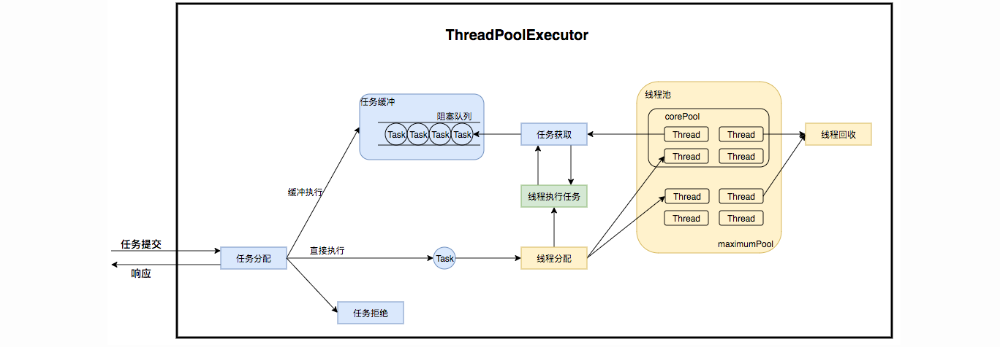
线程池在内部实际上构建了一个生产者消费者模型，将线程和任务两者解耦，并不直接关联，从而良好的缓冲任务，复用线程。线程池的运行主要分成两部分：任务管理、线程管理。任务管理部分充当生产者的角色，当任务提交后，线程池会判断该任务后续的流转：（1）直接申请线程执行该任务；（2）缓冲到队列中等待线程执行；（3）拒绝该任务。线程管理部分是消费者，它们被统一维护在线程池内，根据任务请求进行线程的分配，当线程执行完任务后则会继续获取新的任务去执行，最终当线程获取不到任务的时候，线程就会被回收。
接下来，我们会按照以下三个部分去详细讲解线程池运行机制：
线程池如何维护自身状态。
线程池如何管理任务。
线程池如何管理线程。
生命周期管理
线程池运行的状态，并不是用户显式设置的，而是伴随着线程池的运行，由内部来维护。线程池内部使用一个变量维护两个值：运行状态(runState)和线程数量 (workerCount)。在具体实现中，线程池将运行状态(runState)、线程数量 (workerCount)两个关键参数的维护放在了一起。
private final AtomicInteger ctl = new AtomicInteger(ctlOf(RUNNING, 0));
ctl这个AtomicInteger类型，是对线程池的运行状态和线程池中有效线程的数量进行控制的一个字段， 它同时包含两部分的信息：线程池的运行状态 (runState) 和线程池内有效线程的数量 (workerCount)，高3位保存runState，低29位保存workerCount，两个变量之间互不干扰。用一个变量去存储两个值，可避免在做相关决策时，出现不一致的情况，不必为了维护两者的一致，而占用锁资源。通过阅读线程池源代码也可以发现，经常出现要同时判断线程池运行状态和线程数量的情况。线程池也提供了若干方法去供用户获得线程池当前的运行状态、线程个数。这里都使用的是位运算的方式，相比于基本运算，速度也会快很多。
关于内部封装的获取生命周期状态、获取线程池线程数量的计算方法如以下代码所示：
private static int runStateOf(int c) { return c & ~CAPACITY; } //计算当前运行状态
private static int workerCountOf(int c) { return c & CAPACITY; } //计算当前线程数量
private static int ctlOf(int rs, int wc) { return rs | wc; } //通过状态和线程数生成ctl
ThreadPoolExecutor的运行状态有5种，分别为：
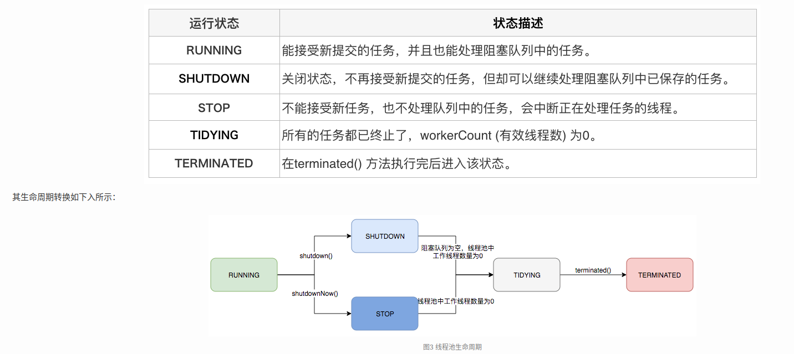
任务执行机制
任务调度是线程池的主要入口，当用户提交了一个任务，接下来这个任务将如何执行都是由这个阶段决定的。了解这部分就相当于了解了线程池的核心运行机制。
首先，所有任务的调度都是由execute方法完成的，这部分完成的工作是：检查现在线程池的运行状态、运行线程数、运行策略，决定接下来执行的流程，是直接申请线程执行，或是缓冲到队列中执行，亦或是直接拒绝该任务。其执行过程如下：
-
首先检测线程池运行状态，如果不是RUNNING，则直接拒绝，线程池要保证在RUNNING的状态下执行任务。
-
如果workerCount < corePoolSize，则创建并启动一个线程来执行新提交的任务。
-
如果workerCount >= corePoolSize，且线程池内的阻塞队列未满，则将任务添加到该阻塞队列中。
-
如果workerCount >= corePoolSize && workerCount < maximumPoolSize，且线程池内的阻塞队列已满，则创建并启动一个线程来执行新提交的任务。
-
如果workerCount >= maximumPoolSize，并且线程池内的阻塞队列已满, 则根据拒绝策略来处理该任务, 默认的处理方式是直接抛异常。
任务缓冲
任务缓冲模块是线程池能够管理任务的核心部分。线程池的本质是对任务和线程的管理，而做到这一点最关键的思想就是将任务和线程两者解耦，不让两者直接关联，才可以做后续的分配工作。线程池中是以生产者消费者模式，通过一个阻塞队列来实现的。阻塞队列缓存任务，工作线程从阻塞队列中获取任务。
阻塞队列(BlockingQueue)是一个支持两个附加操作的队列。这两个附加的操作是：在队列为空时，获取元素的线程会等待队列变为非空。当队列满时，存储元素的线程会等待队列可用。阻塞队列常用于生产者和消费者的场景，生产者是往队列里添加元素的线程，消费者是从队列里拿元素的线程。阻塞队列就是生产者存放元素的容器，而消费者也只从容器里拿元素。
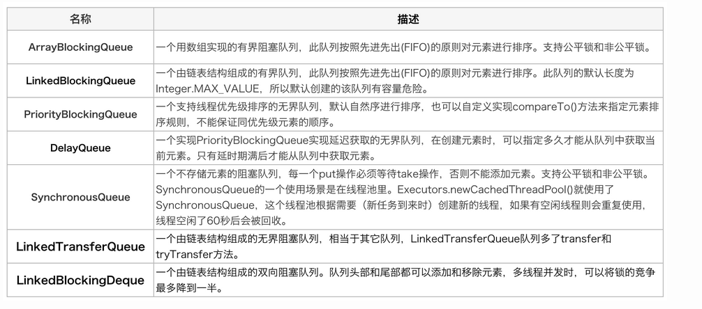
任务申请
任务的执行有两种可能：一种是任务直接由新创建的线程执行。另一种是线程从任务队列中获取任务然后执行，执行完任务的空闲线程会再次去从队列中申请任务再去执行。第一种情况仅出现在线程初始创建的时候，第二种是线程获取任务绝大多数的情况。
线程需要从任务缓存模块中不断地取任务执行，帮助线程从阻塞队列中获取任务，实现线程管理模块和任务管理模块之间的通信。这部分策略由getTask方法实现：

getTask这部分进行了多次判断，为的是控制线程的数量，使其符合线程池的状态。如果线程池现在不应该持有那么多线程，则会返回null值。工作线程Worker会不断接收新任务去执行，而当工作线程Worker接收不到任务的时候，就会开始被回收。
任务拒绝
任务拒绝模块是线程池的保护部分，线程池有一个最大的容量，当线程池的任务缓存队列已满，并且线程池中的线程数目达到maximumPoolSize时，就需要拒绝掉该任务，采取任务拒绝策略，保护线程池。
拒绝策略是一个接口，其设计如下：
public interface RejectedExecutionHandler {
void rejectedExecution(Runnable r, ThreadPoolExecutor executor);
}

Worker 线程管理
Worker线程
线程池为了掌握线程的状态并维护线程的生命周期，设计了线程池内的工作线程Worker。
private final class Worker extends AbstractQueuedSynchronizer implements Runnable{
final Thread thread;//Worker持有的线程
Runnable firstTask;//初始化的任务，可以为null
}
Worker这个工作线程，实现了Runnable接口，并持有一个线程thread，一个初始化的任务firstTask。thread是在调用构造方法时通过ThreadFactory来创建的线程，可以用来执行任务；firstTask用它来保存传入的第一个任务，这个任务可以有也可以为null。如果这个值是非空的，那么线程就会在启动初期立即执行这个任务，也就对应核心线程创建时的情况；如果这个值是null，那么就需要创建一个线程去执行任务列表（workQueue）中的任务，也就是非核心线程的创建。
线程池需要管理线程的生命周期，需要在线程长时间不运行的时候进行回收。线程池使用一张Hash表去持有线程的引用，这样可以通过添加引用、移除引用这样的操作来控制线程的生命周期。这个时候重要的就是如何判断线程是否在运行。
Worker是通过继承AQS，使用AQS来实现独占锁这个功能。没有使用可重入锁ReentrantLock，而是使用AQS，为的就是实现不可重入的特性去反应线程现在的执行状态。
1.lock方法一旦获取了独占锁，表示当前线程正在执行任务中。 2.如果正在执行任务，则不应该中断线程。 3.如果该线程现在不是独占锁的状态，也就是空闲的状态，说明它没有在处理任务，这时可以对该线程进行中断。 4.线程池在执行shutdown方法或tryTerminate方法时会调用interruptIdleWorkers方法来中断空闲的线程，interruptIdleWorkers方法会使用tryLock方法来判断线程池中的线程是否是空闲状态；如果线程是空闲状态则可以安全回收。
Worker线程增加
增加线程是通过线程池中的addWorker方法，该方法的功能就是增加一个线程，该方法不考虑线程池是在哪个阶段增加的该线程，这个分配线程的策略是在上个步骤完成的，该步骤仅仅完成增加线程，并使它运行，最后返回是否成功这个结果。addWorker方法有两个参数：firstTask、core。firstTask参数用于指定新增的线程执行的第一个任务，该参数可以为空；core参数为true表示在新增线程时会判断当前活动线程数是否少于corePoolSize，false表示新增线程前需要判断当前活动线程数是否少于maximumPoolSize。
Worker线程回收
线程池中线程的销毁依赖JVM自动的回收，线程池做的工作是根据当前线程池的状态维护一定数量的线程引用，防止这部分线程被JVM回收，当线程池决定哪些线程需要回收时，只需要将其引用消除即可。Worker被创建出来后，就会不断地进行轮询，然后获取任务去执行，核心线程可以无限等待获取任务，非核心线程要限时获取任务。当Worker无法获取到任务，也就是获取的任务为空时，循环会结束，Worker会主动消除自身在线程池内的引用。
try {
while (task != null || (task = getTask()) != null) {
//执行任务
}
} finally {
processWorkerExit(w, completedAbruptly);//获取不到任务时，主动回收自己
}
线程回收的工作是在processWorkerExit方法完成的。
Worker线程执行任务
在Worker类中的run方法调用了runWorker方法来执行任务，runWorker方法的执行过程如下：
-
while循环不断地通过getTask()方法获取任务。
-
getTask()方法从阻塞队列中取任务。
-
如果线程池正在停止，那么要保证当前线程是中断状态，否则要保证当前线程不是中断状态。
-
执行任务。
-
如果getTask结果为null则跳出循环，执行processWorkerExit()方法，销毁线程。
线程池的替代方案
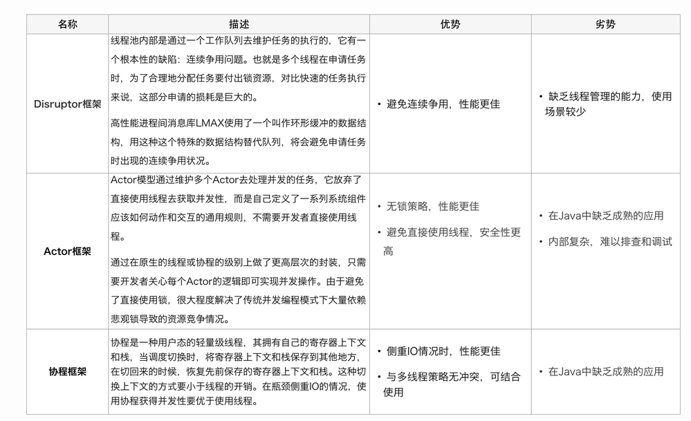
线程池调参
public ThreadPoolExecutor(int corePoolSize,
int maximumPoolSize,
long keepAliveTime,
TimeUnit unit,
BlockingQueue<Runnable> workQueue,
ThreadFactory threadFactory,
RejectedExecutionHandler handler) {
//...
}
corePoolSize: 线程池中长期存活的线程数。
maximumPoolSize: 最大允许的线程数。
keepAliveTime: 空闲线程存活时间，有TimeUnit描述。
BlockingQueue: 线程池存放任务的队列，存储线程池的所有待执行任务。
ThreadFactory: 创建线程时使用的工厂方法，可以设置线程的优先级。
RejectedExecutionHandler: 当线程池的任务超出线程池队列可以存储的最大值之后，执行的策略。
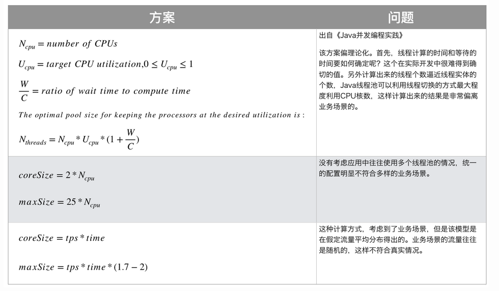
第三阶段
这里是一些ArceOS的内容，包括架构、系统调用等。
系统调用
axstd
ArceOS标准库，封装了系统调用。
File
#![allow(unused)] fn main() { pub struct File { inner: api::AxFileHandle, } }
File对Read, Write, Seek方法的支持通过实现这三个Trait来实现。
MetaData
#![allow(unused)] fn main() { pub struct Metadata(api::AxFileAttr); }
封装系统调用的vfs的VfsNodeAttr。
提供了对is_dir, is_file, len等方法的支持。
OpenOptions
#![allow(unused)] fn main() { pub struct OpenOptions(api::AxOpenOptions); }
提供了对文件权限的封装。
Thread
#![allow(unused)] fn main() { pub struct Thread { id: ThreadId, } }
通过一个Builder从而实现Thread Factory。
#![allow(unused)] fn main() { pub struct Builder { // A name for the thread-to-be, for identification in panic messages name: Option<String>, // The size of the stack for the spawned thread in bytes stack_size: Option<usize>, } }
核心是spawn方法：
#![allow(unused)] fn main() { pub fn spawn<F, T>(self, f: F) -> io::Result<JoinHandle<T>> where F: FnOnce() -> T, F: Send + 'static, T: Send + 'static, { unsafe { self.spawn_unchecked(f) } } unsafe fn spawn_unchecked<F, T>(self, f: F) -> io::Result<JoinHandle<T>> where F: FnOnce() -> T, F: Send + 'static, T: Send + 'static, { let name = self.name.unwrap_or_default(); let stack_size = self .stack_size .unwrap_or(arceos_api::config::TASK_STACK_SIZE); let my_packet = Arc::new(Packet { result: UnsafeCell::new(None), }); let their_packet = my_packet.clone(); let main = move || { let ret = f(); // SAFETY: `their_packet` as been built just above and moved by the // closure (it is an Arc<...>) and `my_packet` will be stored in the // same `JoinHandle` as this closure meaning the mutation will be // safe (not modify it and affect a value far away). unsafe { *their_packet.result.get() = Some(ret) }; drop(their_packet); }; let task = api::ax_spawn(main, name, stack_size); Ok(JoinHandle { thread: Thread::from_id(task.id()), native: task, packet: my_packet, }) } }
通过JoinHandle来实现thread的join 和 handle 方法。
#![allow(unused)] fn main() { pub struct JoinHandle<T> { native: AxTaskHandle, thread: Thread, packet: Arc<Packet<T>>, } }
Stdio
#![allow(unused)] fn main() { /// A handle to the standard input stream of a process. pub struct Stdin { inner: &'static Mutex<BufReader<StdinRaw>>, } /// A locked reference to the [`Stdin`] handle. pub struct StdinLock<'a> { inner: MutexGuard<'a, BufReader<StdinRaw>>, } impl Stdin { /// Locks this handle to the standard input stream, returning a readable /// guard. /// /// The lock is released when the returned lock goes out of scope. The /// returned guard also implements the [`Read`] and [`BufRead`] traits for /// accessing the underlying data. pub fn lock(&self) -> StdinLock<'static> { // Locks this handle with 'static lifetime. This depends on the // implementation detail that the underlying `Mutex` is static. StdinLock { inner: self.inner.lock(), } } /// Locks this handle and reads a line of input, appending it to the specified buffer. #[cfg(feature = "alloc")] pub fn read_line(&self, buf: &mut String) -> io::Result<usize> { self.inner.lock().read_line(buf) } } }
这是Stdin的设计，重点在于StdinLock，这在先前的rCoreOS并不存在。
同时，Read 给Stdin和StdinLock都实现了。
#![allow(unused)] fn main() { impl BufRead for StdinLock<'_> { fn fill_buf(&mut self) -> io::Result<&[u8]> { self.inner.fill_buf() } fn consume(&mut self, n: usize) { self.inner.consume(n) } #[cfg(feature = "alloc")] fn read_until(&mut self, byte: u8, buf: &mut Vec<u8>) -> io::Result<usize> { self.inner.read_until(byte, buf) } #[cfg(feature = "alloc")] fn read_line(&mut self, buf: &mut String) -> io::Result<usize> { self.inner.read_line(buf) } } }
BufRead是拥有内部缓冲区的Reader，能够提供在Read之外的操作。
Net模块
ArceOS中实现了（部分的）网络协议栈。
ScoketAddr
#![allow(unused)] fn main() { pub trait ToSocketAddrs { /// Returned iterator over socket addresses which this type may correspond to. type Iter: Iterator<Item = SocketAddr>; /// Converts this object to an iterator of resolved [`SocketAddr`]s. fn to_socket_addrs(&self) -> io::Result<Self::Iter>; } }
用于IP之间的转换。
Tcp
#![allow(unused)] fn main() { /// A TCP stream between a local and a remote socket. pub struct TcpStream(AxTcpSocketHandle); /// A TCP socket server, listening for connections. pub struct TcpListener(AxTcpSocketHandle); }
两个系统调用都实现了Read那几个Trait。
#![allow(unused)] fn main() { impl TcpStream { /// Opens a TCP connection to a remote host. /// /// `addr` is an address of the remote host. Anything which implements /// [`ToSocketAddrs`] trait can be supplied for the address; see this trait /// documentation for concrete examples. /// /// If `addr` yields multiple addresses, `connect` will be attempted with /// each of the addresses until a connection is successful. If none of /// the addresses result in a successful connection, the error returned from /// the last connection attempt (the last address) is returned. pub fn connect<A: ToSocketAddrs>(addr: A) -> io::Result<TcpStream> { super::each_addr(addr, |addr: io::Result<&SocketAddr>| { let addr = addr?; let socket = api::ax_tcp_socket(); api::ax_tcp_connect(&socket, *addr)?; Ok(TcpStream(socket)) }) } /// Returns the socket address of the local half of this TCP connection. pub fn local_addr(&self) -> io::Result<SocketAddr> { api::ax_tcp_socket_addr(&self.0) } /// Returns the socket address of the remote peer of this TCP connection. pub fn peer_addr(&self) -> io::Result<SocketAddr> { api::ax_tcp_peer_addr(&self.0) } /// Shuts down the connection. pub fn shutdown(&self) -> io::Result<()> { api::ax_tcp_shutdown(&self.0) } } }
Udp
#![allow(unused)] fn main() { /// A UDP socket. pub struct UdpSocket(AxUdpSocketHandle); }
基本方法都是一样的，实现的差别在底层。
Mutex
#![allow(unused)] fn main() { pub struct Mutex<T: ?Sized> { wq: AxWaitQueueHandle, owner_id: AtomicU64, data: UnsafeCell<T>, } }
维护一个wait queue和一个持有这id，用来保证原子性。owner_id通过current_task 的id来维护。方法中有一个force_unlock并不常见。
Process
只有一个exit()的syscall。
Time
#![allow(unused)] fn main() { pub struct Instant(AxTimeValue); }
实现了now, duration_since, elapsed等方法。
并且实现了加减。
axalloc
#![allow(unused)] fn main() { pub struct GlobalAllocator { balloc: SpinNoIrq<DefaultByteAllocator>, palloc: SpinNoIrq<BitmapPageAllocator<PAGE_SIZE>>, } }
全局分配器，提供了一个balloc（字节分配器），palloc（页面分配器）。
SpinNoIrq表示无中断锁，这是用来确保线程安全的。
#![allow(unused)] fn main() { pub struct GlobalPage { start_vaddr: VirtAddr, num_pages: usize, } }
全局页面，标记一组连续页面。
采用的是bitmap allocator。
axdma
ALLOCATOR 是一个静态变量，使用 SpinNoIrq 锁来确保线程安全。
DmaAllocator 是具体的DMA分配器实现。
#![allow(unused)] fn main() { pub unsafe fn alloc_coherent(&mut self, layout: Layout) -> AllocResult<DMAInfo> { if layout.size() >= PAGE_SIZE_4K { self.alloc_coherent_pages(layout) } else { self.alloc_coherent_bytes(layout) } } }
alloc_coherent 方法根据请求的内存大小选择不同的分配策略：
如果请求的内存大小大于等于一页（4KB），调用 alloc_coherent_pages。
否则，调用 alloc_coherent_bytes。
axfs
root中的init_rootfs方法：
#![allow(unused)] fn main() { pub(crate) fn init_rootfs(disk: crate::dev::Disk) { cfg_if::cfg_if! { if #[cfg(feature = "myfs")] { // override the default filesystem let main_fs = fs::myfs::new_myfs(disk); } else if #[cfg(feature = "fatfs")] { static FAT_FS: LazyInit<Arc<fs::fatfs::FatFileSystem>> = LazyInit::new(); FAT_FS.init_once(Arc::new(fs::fatfs::FatFileSystem::new(disk))); FAT_FS.init(); let main_fs = FAT_FS.clone(); } } let mut root_dir = RootDirectory::new(main_fs); #[cfg(feature = "devfs")] root_dir .mount("/dev", mounts::devfs()) .expect("failed to mount devfs at /dev"); #[cfg(feature = "ramfs")] root_dir .mount("/tmp", mounts::ramfs()) .expect("failed to mount ramfs at /tmp"); // Mount another ramfs as procfs #[cfg(feature = "procfs")] root_dir // should not fail .mount("/proc", mounts::procfs().unwrap()) .expect("fail to mount procfs at /proc"); // Mount another ramfs as sysfs #[cfg(feature = "sysfs")] root_dir // should not fail .mount("/sys", mounts::sysfs().unwrap()) .expect("fail to mount sysfs at /sys"); ROOT_DIR.init_once(Arc::new(root_dir)); CURRENT_DIR.init_once(Mutex::new(ROOT_DIR.clone())); *CURRENT_DIR_PATH.lock() = "/".into(); } }
用于将Disk进行初始化。
重点是RootDirectory Crate, mount方法。
挂载点
#![allow(unused)] fn main() { struct MountPoint { path: &'static str, fs: Arc<dyn VfsOps>, } }
根目录
#![allow(unused)] fn main() { struct RootDirectory { main_fs: Arc<dyn VfsOps>, mounts: Vec<MountPoint>, } }
File
#![allow(unused)] fn main() { /// An opened file object, with open permissions and a cursor. pub struct File { node: WithCap<VfsNodeRef>, is_append: bool, offset: u64, } }
这个File表示一个文件对象。WithCap表示这个类型拥有一些Capability：
#![allow(unused)] fn main() { pub struct Cap: u32 { /// Readable access. const READ = 1 << 0; /// Writable access. const WRITE = 1 << 1; /// Executable access. const EXECUTE = 1 << 2; } }
目录
#![allow(unused)] fn main() { /// An opened directory object, with open permissions and a cursor for /// [`read_dir`](Directory::read_dir). pub struct Directory { node: WithCap<VfsNodeRef>, entry_idx: usize, } }
Networking
包括一些实验课代码
RDMA?
remote direct memory access, 远程DMA, 类比rpc, 从一台主机直接访问远程主机的指定内存位置。
Wikipidia
In computing, remote direct memory access (RDMA) is a direct memory access from the memory of one computer into that of another without involving either one's operating system.
This permits high-throughput, low-latency networking, which is especially useful in massively parallel computer clusters.
简单说，就是从一台电脑直接访问另一台电脑的内存而不需要经过另一台电脑的操作系统。
这允许了高吞吐、低延迟的网络，适用于大规模并行计算机集群。
RDMA 通过使网络适配器能够直接将数据从网络传输到应用内存，或者从应用内存直接传输到网络，支持零拷贝网络通信，消除了在应用内存与操作系统中的数据缓冲区之间复制数据的需求。这样的传输不需要 CPU、缓存或上下文切换执行任何工作，并且传输过程可以与其他系统操作并行进行。这减少了消息传输的延迟。
这种策略带来了几个问题，主要是目标节点不会接收到请求完成的通知（单边通信）。
应用
RDMA-over-Converged-Ethernet（RoCE）现在能够在有损或无损基础设施上运行。
iWARP通过使用TCP/IP作为传输协议，在物理层实现了以太网RDMA的实现，将RDMA的性能和低延迟优势与低成本、基于标准的解决方案结合在一起。
RDMA联盟和DAT协作组在开发供标准化组织如互联网工程任务组和互连软件协会考虑的RDMA协议和API方面发挥了关键作用。
硬件供应商已经开始研发更高容量的基于RDMA的网络适配器，据报道速率可达100 Gbit/s。软件供应商，如IBM、Red Hat和Oracle公司，在他们的最新产品中支持这些API，而且自2013年起，工程师们已经开始开发实现在以太网上运行的RDMA网络适配器。Red Hat Enterprise Linux和Red Hat Enterprise MRG均支持RDMA。Microsoft通过SMB Direct在Windows Server 2012中支持RDMA。VMware ESXi自2015年起也支持RDMA。
应用程序通过最初为InfiniBand协议设计的明确定义的API来访问控制结构（尽管这些API可以用于任何底层的RDMA实现）。使用发送队列和完成队列，应用程序通过向提交队列（SQ）提交工作队列条目（WQEs）并从完成队列（CQ）接收响应通知来执行RDMA操作。
Data Plane Development Kit
概述
在X86结构中，处理数据包的传统方式是CPU中断方式，即网卡驱动接收到数据包后通过中断通知CPU处理，然后由CPU拷贝数据并交给协议栈。在数据量大时，这种方式会产生大量CPU中断，导致CPU无法运行其他程序。
而DPDK则采用轮询方式实现数据包处理过程：DPDK重载了网卡驱动，该驱动在收到数据包后不中断通知CPU，而是将数据包通过零拷贝技术存入内存，这时应用层程序就可以通过DPDK提供的接口，直接从内存读取数据包。
DPDK通过EAL(Environment Abstraction Layer)为特定的硬件/软件环境创建了库。通过EAL隐藏实现细节并提供标准接口。
通过DPDK一个人可以完全在用户空间而不用内核和内核到用户的拷贝来实现低开销的,流水线，事件驱动的模型。
库
DPDK包含一系列data plane libraries和优化的网络适配器：
队列管理器：实现了无锁队列
缓冲区管理器：预先分配固定大小的缓冲区，用于存储网络数据包
内存管理器：内存中分配对象池，并使用环形结构存储空闲对象，确保对象均匀分布于所有DRAM通道上，一优化内存访问模式，提高内存利用率和性能。
轮询模式驱动程序：设计为无需异步通知即可工作，可以通过定期检查网络接口控制器的状态来获取数据包，而不是依赖中断。减少了中断处理的开销，提高了数据包处理的速度。
- Direct Data Placement over Reliable Transports
Direct Data Placement over Reliable Transports
前置内容：
- ULP(Upper Layer Protocol): 并不是某一个协议，而是特指传输层之上的协议，如应用层协议。
- LLP(Lower Layer Protocol): 也不是一个协议，而是指传输层及以下的协议。
介绍
DDP使得ULP能够向数据接收器发送数据，从而不用把数据放置在中间缓冲区，因此当数据到达数据接收器时，网络接口可以直接将数据放置在ULP的缓冲区中，使得接收器消耗的内存带宽大大低于缓冲模型。
此外，与CPU移动数据相比，这样做使得网络协议消耗更少的CPU周期。
DDP保留了ULP记录边界，提供用于传输ULP消息的各种数据传输机制和完成机制。
架构的目标
-
Tagged Buffer Model: 提供一个缓冲区，使得本地能向远程标记一个缓冲区，以便远程对等方可以通过网络直接将数据放入远程放入指定位置的缓冲区中。
-
Untagged Buffer Model: 提供第二个接受缓冲区，保留来自对等方的ULP消息边界，并保证本地缓冲区匿名（未标记）。
-
为两种缓冲区提供可靠的顺序交付语义。
-
提供ULP消息的分段和重新组装。
-
允许ULP缓冲区用作中心组装缓冲区，无需复制。这要求协议将包含在传入DDP段中的ULP有效负载的数据放置与完成的ULP消息的数据交付分开。
-
如果LLP在一个LLP连接中支持多个LLP流，就在每一个LLP流上提供上述功能，并使该功能能够在每个LLP流的基础上导出到ULP。
协议概述
DDP支持两种基本的数据传输模型------Tagged Buffer Model和Untagged Buffer Model。
标记缓冲区数据传输模型（Tagged Buffer Model）要求数据接收器向数据源发送ULP缓冲区的标识符，称为转向标签（Steering TAg/STag）。STag使用ULP定义的方法传输到数据源。一旦数据源ULP具有目标ULP缓冲区的STag，它可以通过将STag指定给DDP来请求DDP将ULP数据发送到目标ULP缓冲区。请注意，标记的缓冲区不必从ULP缓冲区开始填充。ULP数据源可以向ULP缓冲区提供任意偏移量。
未标记缓冲区数据传输模型（Untagged Buffer Model）允许数据传输发生，而无需数据接收器向数据源播发ULP缓冲区。数据接收器可以将一系列接收ULP缓冲区排队。来自数据源的未标记DDP消息消耗数据接收器处的未标记缓冲区。因为DDP是面向消息的，所以即使数据源发送的DDP消息有效负载小于接收ULP缓冲区，部分填充的接收ULP缓冲区也会传递到ULP。如果数据源发送的DDP消息有效负载大于接收ULP缓冲区，则会导致错误。
Tagged Buffer Model与Untagged Buffer Model之间的关键区别
-
对于Tagged Buffer Model, 数据源指定接收到的哪个标记缓冲区将用于特定的标记DDP消息（sender-based ULP Buffer management）；对于Untagged Buffer Model, 数据接收器指定接受未标记DDP消息时使用Untagged Budder的顺序（receiver-based ULP Buffer management）。
-
对于标记缓冲区模型，数据接收器的ULP必须通过ULP特定的机制在数据传送之前向数据源播发指定的ULP缓冲区；对于未标记缓冲区，数据传输可以在没有端到端显示ULP缓冲区播发的情况下发生。有流量控制问题。
-
对于缓冲区，DDP消息可以从标记缓冲区的任意偏移量为目标；未标记缓冲区中DDP消息只能从偏移量0开始。
-
标记缓冲区模型允许多个DDP消息以单个ULP缓冲区播发的标记缓冲区为目标。未标记缓冲区模型要求为每个以未标记缓冲区为目标的DDP消息关联接收ULP缓冲区。
两种数据传输模型都将ULP消息放入DDP消息中，然后将每个DDP消息分为DDP段，这是用来适应LLP的最大上层协议数据单元(Maxmum Upper Layer Protocol Data Uni, MULPDU)的，因此，ULP可以发布任意大小的ULP消息，包含2^32-1个ULP有效负载八位字节，并且DDP将ULP消息分为DDP段，这些段在数据接收器重新组装。
DDP为ULP提供顺序交付，但是DDP区分了数据交付和数据放置(Data Dilivery和Data Placement)。DDP在每一个DDP段中提供足够信息，允许每一个入站DDP段有效载荷中的ULP有效载荷直接放入正确的ULP缓冲区，即使DDP段到达时无序。因此，DDP允许在ULP缓冲区内将DDP消息的DDP段中包含的ULP有效负载重新组装为ULP消息，从而消除了从重新组装缓冲区到ULP缓冲区的传统拷贝。
在下面的情况中，DDP消息的有效负载被传送到ULP:
-
DDP消息的所有段都被完全接收，并且DDP消息的有效负载已经被放入到相关的ULP缓冲区中。
-
已经放置了所有先前的DDP消息并且所有的DDP消息传递都已经执行。
DDP下的LLP可能支持每个连接的单个LLP数据流或每个连接的多个LLP数据流，在这两种情况下，指定DDP时，每个DDP都是杜立德并且映射到单个LLP流。在一个特定DDP流中，LLP流被要求提供一个有序可靠的交付。注意DDP并没有DDP流之间的顺序保证。
DDP协议可能会在可靠交付LLP或不可靠交付LLP上运行，但在这个规范中要求可靠有序的LLP交付。
DDP分层
DDP要求独立于LLP, 但是是被设计用来和其他几个协议一同工作的。
DDP支持任何ULP的直接数据放置功能，但是经过设计可以与RDMAP配合使用，并且是iWARP组件的一部分。
+-------------------+
| |
| RDMA ULP |
| |
+-+-+-+-+-+-+-+-+-+-+-+-+-+-+-+-+-+-+-+
| | |
| ULP | RDMAP |
| | |
+-+-+-+-+-+-+-+-+-+-+-+-+-+-+-+-+-+-+-+
| |
| DDP protocol |
| |
+-+-+-+-+-+-+-+-+-+-+-+-+-+-+-+-+-+-+-+
| | |
| MPA | |
| | |
| | |
+-+-+-+-+-+-+-+-+-+ SCTP |
| | |
| TCP | |
| | |
+-+-+-+-+-+-+-+-+-+-+-+-+-+-+-+-+-+-+-+
如果DDP分层在RDMAP之下，MPA和TCP之上，则相应的报头和有效载荷如下所示（注：为清楚起见，包括MPA报头和CRC，但未显示帧标记）：
0 1 2 3
0 1 2 3 4 5 6 7 8 9 0 1 2 3 4 5 6 7 8 9 0 1 2 3 4 5 6 7 8 9 0 1
+-+-+-+-+-+-+-+-+-+-+-+-+-+-+-+-+-+-+-+-+-+-+-+-+-+-+-+-+-+-+-+-+
| |
// TCP Header //
| |
+-+-+-+-+-+-+-+-+-+-+-+-+-+-+-+-+-+-+-+-+-+-+-+-+-+-+-+-+-+-+-+-+
| MPA Header | |
+-+-+-+-+-+-+-+-+-+-+-+-+-+-+-+-+ +
| |
// DDP Header //
| |
+-+-+-+-+-+-+-+-+-+-+-+-+-+-+-+-+-+-+-+-+-+-+-+-+-+-+-+-+-+-+-+-+
| |
// RDMAP Header //
| |
+-+-+-+-+-+-+-+-+-+-+-+-+-+-+-+-+-+-+-+-+-+-+-+-+-+-+-+-+-+-+-+-+
| |
// //
// RDMAP ULP Payload //
// //
| |
+-+-+-+-+-+-+-+-+-+-+-+-+-+-+-+-+-+-+-+-+-+-+-+-+-+-+-+-+-+-+-+-+
| MPA CRC |
+-+-+-+-+-+-+-+-+-+-+-+-+-+-+-+-+-+-+-+-+-+-+-+-+-+-+-+-+-+-+-+-+
术语汇编
General（通用的）
Advertisement: 通知远程对等方本地RDMA缓冲区可用的行为。节点通过通知其RDMA/DDP对等方已标记的缓冲区标识符（STag、基址、长度），为传入的RDMA读或RDMA写访问提供RDMA缓冲区。RDMA/DDP没有定义标记缓冲区信息的播发，而是留给ULP。一种典型的方法是，本地对等方将标记缓冲区的引导标记、地址和长度嵌入到发送给远程对等方的发送消息中。
Data Sink: 数据接收器，接收数据有效负载的对等方。请注意，可以要求数据接收器发送和接收RDMA/DDP消息以传输数据有效负载。
ULP: Upper Layer Protocol。当前引用的协议层之上的协议层，RDMA/DDP的ULP应当是操作系统，应用，适配层或者专有设备。注意RDMA/DDP文档并不指定一个ULP，文档提供了一组语义，允许ULP设计为可以利用RDMA/DDP协议。
ULP Message: ULP消息，转递给特定协议层进行传输的ULP数据，数据边界在通过iWARO传输时被保留。
ULP Payload: ULP有效负载，包含在单个协议段或数据包的ULP数据。
LLP
LLP: Lower Layer Protocol. 当前引用的协议层之下的协议层，例如对于DDP, LLP是SCTP, DDP Adaption, MPA或者其他传输层协议。对于RDMA, LLP就是DDP。
LLP Connection: 对应于两个节点上对等LLP层之间的LLP传输级别连接。
LLP Stream: 对应于两个节点上对等LLP层之间的单个LLP传输级流。一个或者多个LLP流可以映射到一个传输级LLP连接。对于每个连接支持多个流的传输协议（例如，SCTP），LLP流对应于一个传输级流。
MULPDU: 最大上层协议数据单元（MULPDU）。DDP可以传递给LLP进行传输的记录的当前最大大小。
ULPDU: ULPDU-上层协议数据单元。MPA以上层定义的数据记录。
Direct Data Placement (DDP)
Data Placement(Placement, Placed, Places): 对于DDP这个词专门描述DDP写入数据缓冲区的过程，DDP段（DDP Segment）携带放置信息，接受DDP实现可以用这个放置信息来执行DDP段ULP有效载荷的数据放置。
DDP Abortive Teardown: DDP拆除。尝试关闭DDP流而不去关闭正在进行中或者挂起的DDP消息。
DDP Graceful Teardown: 关闭DDP流的行为，同时要允许所有正在进行和挂起的DDP消息成功完成。
DDP Control Field: DDP标头中的固定8位的字段。
DDP Header: 所有DDP段中存在的标头，包含控制和放置的字段，用于定义DDP段中携带的ULP有效负载的最终放置位置。
DDP Message: DDP 消息/报文，ULP定义的数据交换单元，细分为一个或多个DDP段。这种分段可能由多重原因引起，包括遵从底层传输协议的最大分段大小而进行的分段。
DDP Segment: DDP段，DDP协议的最小数据单元，包括DDP标头和ULP有效负载。DDP段的大小应适合较低层协议MULPDU。
DDP流-DDP消息序列：顺序由LLP定义。对于SCTP, DDP流直接映射到SCTP流，对于MPA, 一个DDP流直接映射到TCP连接，并且支持单个DDP流。注意DDP在DDP流之间没有顺序保证。
DDP Stream Identifier (ID): 对一个DDP Stream的标识符。
Direct Data Placement: 一种机制，能够让DDP段中的数据直接放入到最终的内存位置而不需要ULP的处理。即便没有顺序到达也有可能发生。乱序放置的支持可能需要Data Sink将LLP和DDP作为一个数据块的方式来支持。
Direct Data Placement Protocol (DDP): 一种传输协议，通过将显示内存缓冲区方式信息与LLP有效负载单元关联，支持直接数据放置。
Message Offset (MO): 对于DDP Untagged Buffer Model（未标识缓冲区）, 指定从DDP消息开始的偏移量（以八个字节为单位）。
Message Sequence Number (MSN): 对于Untagged Buffer Model, 指定一个伴随着每一个DDP Message递增的序列号。
Protection Domain (PD): 关联DDP流和STag的机制，在此基础上，如果STag和DDP流具有相同的保护域标识符，则STag在DDP流上的使用是有效的。
Queue Number (QN): 对于DDP未标记缓冲区模型，标识DDP段的目标数据接收器队列。
Steering Tag (STag/转向标记): 节点上标记缓冲区的标识符，在协议规范中定义有效。
Tagged Buffer: 标记缓冲区，通过交换STag. 标记的偏移量和长度显示地通告远程对等方的缓冲区。
Tagged Buffer Model: DDP数据传输模型，用于将标记缓冲区从本地对等点传输到远程对等点。
Tagged DDP Message: 以Tagged Buffer为目标的DDP消息。
Tagged Offset (TO): 节点上标记的缓冲区内的偏移量。
ULP Buffer: DDP层上拥有的缓冲区，作为标记缓冲区或者未标记ULP缓冲区播发给DDP层。
ULP Message Length: ULP Payload包含的DDP消息的总长度，按照8字节对齐。
Untagged Buffer: 并没有显式地通告给远程对等方的缓冲区。
Untagged Buffer Model: 一个DDP数据传输模型，用来将未标记缓冲区从本地对等方发送到远程对等方。
Untagged DDP Message: 一个以Untagged Buffer为目标的DDP消息。
LLP可靠传输的要求 Reliable Delivery LLP Requirements
任何一个能够用作LLP到DDP的协议都必须满足下面的条件：
- LLP必须对外暴露MULPDU和MULPDU的修改。
这样做以便DDP层可移植性与MULPDU对齐的分段，并且可以随着MULPDU的变化而调整。在MULPDU变更期间如何处理未完成请求的包含在下面。
- 人如果MULPDU发生变化，先前已经被DDP发送给LLP的DDP段不可以被LLP要求重新分段。
需要注意的是，在某些极端情况下，LLP 广播的 MULPDU 值可能会比先前提交的 DDP 段发送请求队列清空的速度更频繁地发生变化。
在这种极端情况下，LLP 的发送队列中可能会包含多个 DDP 消息，而这些消息对应的 MULPDU 值在消息提交后已多次更新。因此，队列中的 DDP 段与 LLP 当前的 MULPDU 值之间可能不存在任何直接关联。
-
LLP必须确保，如果他收到一个DDP段，就必须可靠地将其发送到接收方；或者在传输未完成时，返回一个错误状态，说明传输失败。
-
LLP必须在数据接收端（Data Sink）保留 DDP 段（DDP Segment）和消息（Message）的边界。
-
LLP可能会乱序的把到达的段提供给Placement, 但是必须提供发送方指明的顺序。
-
LLP（Lower Layer Protocol，下层协议）必须为至少覆盖 DDP 段（DDP Segment）的数据提供一个强校验机制，其强度至少相当于 CRC32-C。现有的一些数据完整性校验方法被认为不足以满足要求，而直接内存传输语义需要比简单的校验和（如 checksum）更强的校验机制。
-
在接收数据时，LLP必须提供接收到的DDP段的长度，这确保了 DDP 不需要在其报头中携带长度字段。
-
如果 LLP不支持独立于其他 LLP 流（LLP Stream）拆除某个 LLP 流的功能，并且某个特定的 DDP 流（DDP Stream）发生错误，则 LLP 必须将相关的 LLP 流标记为错误状态的 LLP 流。在 DDP 请求拆除相关的 DDP 流后，LLP 必须禁止在该 LLP 流上进行任何进一步的数据传输。
-
对于一个特定的LLP Stream, 这个LLP就必须提供一种机制来推断这个LLP Stream已经被正确拆除/切断/关闭(teardown)。对于一个特定的LLP Connection, 这个LLP必须提供正确判断LLP Connection是否被合理关闭的机制。
-
对于一个特定的 LLP 连接（LLP Connection），当所有的 LLP 流（LLP Streams）要么被正常关闭，要么被标记为错误状态时，LLP 连接必须被拆除。
-
LLP在将所有先前的 DDP 段（DDP Segments）及其相关的顺序信息传递给 DDP 层之后，必须确保不会将重复的 DDP 段传递给 DDP 层。
头部格式 Header Format
DDP有两种头部格式，一个是到Tagged Buffer的数据放置，另一个是到Untagged Buffer的数据放置。
DDP Control Field
DDP Header前8个bit携带的是两个格式共有的控制位，如下所示： 0 1 2 3 0 1 2 3 4 5 6 7 8 9 0 1 2 3 4 5 6 7 8 9 0 1 2 3 4 5 6 7 8 9 0 1 +-+-+-+-+-+-+-+-+ |T|L| Rsvd |DV | +-+-+-+-+-+-+-+-+
Figure 3: DDP Control Field
偏移了16位从而容纳MPA中的头部。只有当DDP建立在MPA上才有这个头部。
T - Tagged flag: 1bit
指明是Tagged还是Untagged Buffer Model. 如果是1, 携带这个DDP段的ULP Payload必须放置到Tagged Buffer内，否则放到Untagged Buffer内。
L - Last flag: 1bit
指明了这个DDP段是不是当前的DDP Message的最后一个段。最后一段必须设置为1，别的段都不能设置为1。
同时，L设置为1的DDP Segment必须在所有当前DDP Message里面其他DDP Segment都被提交到LLP之后才能被提交。对Untagged DDP Message来说，DDP Segment（L字段设置为1的）必须携带最高的MO。
如果L 被设置为1, 这个DDP 消息负载在以下情况之后就要被交付：
-
所有DDP段和先前的DDP消息都完成放置，并且
-
每一个DDP消息都已经完成了交付。
如果L设置为0, 那么当前DDP段是一个中间DDP段。
Rsvd - Reserved: 4bits
留着给未来使用，必须被设置为0。
DV - Direct Data Placement Protocol Version: 2bits
标明版本号，这一位必须设置为1，用来确定使用的标准。每一个DDP段必须拥有同样的DV值。
DDP Tagged Buffer Model Header
如下是所有目标为Tagged Buffer的DDP段的首部：
0 1 2 3 0 1 2 3 4 5 6 7 8 9 0 1 2 3 4 5 6 7 8 9 0 1 2 3 4 5 6 7 8 9 0 1 +-+-+-+-+-+-+-+-+-+-+-+-+-+-+-+-+ |T|L| Rsvd | DV| RsvdULP | +-+-+-+-+-+-+-+-+-+-+-+-+-+-+-+-+-+-+-+-+-+-+-+-+-+-+-+-+-+-+-+-+ | STag | +-+-+-+-+-+-+-+-+-+-+-+-+-+-+-+-+-+-+-+-+-+-+-+-+-+-+-+-+-+-+-+-+ | | + TO + | | +-+-+-+-+-+-+-+-+-+-+-+-+-+-+-+-+-+-+-+-+-+-+-+-+-+-+-+-+-+-+-+-+
T被设置为1。
RsvdULP - Reserved for use by the ULP: 8bits
RsvdULP 字段对于 DDP 协议是不可见的，可以由 ULP（Upper Layer Protocol）以任何方式进行结构化。在 数据源（Data Source）处，DDP 必须将 RsvdULP 字段 设置为 ULP 指定的值，并且该字段从 数据源 到 数据接收端（Data Sink）在传输过程中不得修改。在 数据接收端，当 DDP 消息 被交付时，DDP 必须将 RsvdULP 字段 提供给 ULP。每个特定 DDP 消息 内的所有 DDP 段必须包含该字段的相同值。数据源必须确保每个特定 DDP 消息 中的所有 DDP 段都包含相同的 RsvdULP 字段 值。
STag - Steering Tag: 32bits
Steering Tag用于标识 数据接收端（Data Sink）的 Tagged 缓冲区。STag 必须对该 DDP 流（DDP Stream）有效。STag 与 DDP 流 之间的关联机制超出了 DDP 协议规范的范围。在 数据源处，DDP 必须将 STag 字段 设置为 ULP指定的值。在 数据接收端（Data Sink），当 ULP 消息 被交付时，DDP 必须提供 STag 字段。每个特定 DDP 消息 中的所有 DDP 段必须包含该字段的相同值，并且必须是由 ULP 提供的值。数据源必须确保每个特定 DDP 消息 中的所有 DDP 段 都包含相同的 STag 字段 值。
TO - Tagged Offset: 64bits
Tagged Offset指定了 数据接收端Tagged 缓冲区内的偏移量，以字节为单位，表示 DDP 段中包含的ULP Payload开始放置的位置。一个 DDP 消息可以从 Tagged 缓冲区中的任意TO位置开始。
DDP Untagged Buffer Model Header
下图是Untagged Buffer中必须用的DDP段，包括上面定义的DDP Control Field。
0 1 2 3 0 1 2 3 4 5 6 7 8 9 0 1 2 3 4 5 6 7 8 9 0 1 2 3 4 5 6 7 8 9 0 1 +-+-+-+-+-+-+-+-+-+-+-+-+-+-+-+-+ |T|L| Rsvd | DV| RsvdULP[0:7] | +-+-+-+-+-+-+-+-+-+-+-+-+-+-+-+-+-+-+-+-+-+-+-+-+-+-+-+-+-+-+-+-+ | RsvdULP[8:39] | +-+-+-+-+-+-+-+-+-+-+-+-+-+-+-+-+-+-+-+-+-+-+-+-+-+-+-+-+-+-+-+-+ | QN | +-+-+-+-+-+-+-+-+-+-+-+-+-+-+-+-+-+-+-+-+-+-+-+-+-+-+-+-+-+-+-+-+ | MSN | +-+-+-+-+-+-+-+-+-+-+-+-+-+-+-+-+-+-+-+-+-+-+-+-+-+-+-+-+-+-+-+-+ | MO | +-+-+-+-+-+-+-+-+-+-+-+-+-+-+-+-+-+-+-+-+-+-+-+-+-+-+-+-+-+-+-+-+
T是0
RsvdULP - 给ULP保留的字段: 40bits
RsvdULP 字段对于 DDP 协议是不可见的，可以由 ULP以任何方式进行结构化。在 数据源处，DDP 必须将 RsvdULP 字段 设置为 ULP 指定的值，并且该字段在从 数据源 到 数据接收端的传输过程中不得被修改。在 数据接收端，当 ULP 消息被交付时，DDP 必须将 RsvdULP 字段 提供给 ULP。
每个特定 DDP 消息中的所有 DDP 段必须包含相同的 RsvdULP 字段值。然而，在 数据接收端，DDP 实现不要求验证每个 DDP 段中的 RsvdULP 字段值是否一致。当 ULP 消息被交付时，DDP 可以从接收到的任何一个 DDP 段中提取该字段的值并提供给 ULP。
QN - Queue Number: 32 bits
QN 用来标识这个header引用的数据接收器的Untagged Buffer queue。一个特定的DDP消息中每一个DDP 段内都要有一个相同的QN并且要有数据源的ULP提供。数据源必须确保DDP消息中每一个DDP段的包含相同的值。
MSN - Message Sequence Number: 32 bits
消息序列号（Message Sequence Number, MSN）用于指定一个序列号。对于目标是特定 DDP 流中Queue Number的每个 DDP 消息，该序列号必须以 2³² 为模，每次递增 1。MSN 的初始值必须为 1。当 MSN 的值达到 0xFFFFFFFF 时，必须回绕至 0。
在一个特定 DDP 消息中的所有 DDP 段必须包含该字段的相同值。数据源必须确保每个特定 DDP 消息中的所有 DDP 段具有相同的 MSN 字段值。
MO - Message Offset: 32 bits
消息偏移量（Message Offset, MO）指定了以字节为单位的偏移量，表示从由该 DDP 段关联的 DDP 流（DDP Stream）上的消息序列号（MSN）和队列编号（Queue Number）标识的 DDP 消息起始位置的偏移量。DDP 层必须将引用 DDP 消息第一个字节的 MO 设置为 0。
DDP段格式 DDP Segment Format
每一个DDO段都要包含DDP头部，也要包含ULP Payload。DDP Segment格式如下：
+-+-+-+-+-+-+-+-+-+-+-+-+-+-+-+-+-+-+-+-+-+-+-+-+
| DDP | |
| Header| ULP Payload (if any) |
| | |
+-+-+-+-+-+-+-+-+-+-+-+-+-+-+-+-+-+-+-+-+-+-+-+-+
数据传输 Data Transfer
DDP支持多段DDP消息，每一个DDP消息都是由一个或多个DDP段组成的。每一个DDP段包含一个DDP首部，每一个DDP首部包含有接收方所需要的用于放置包含在DDP段中的ULP Payload的信息。
DDP Tagged Or Untagged Buffer Models
两种基本的缓冲区模型：Tagged Buffer Model和Untagged Buffer Model。
Tagged Buffer Model
Tagged Buffer Model用于 数据源将 DDP 消息传输到 数据接收端的一个 Tagged 缓冲区中，而该缓冲区在此之前已经通过某种机制向 数据源进行了声明（Advertised）。一个 STag（Steering Tag）用于标识特定的 Tagged 缓冲区。在使用 Tagged 缓冲区模型放置 DDP 消息时，STag 用于标识缓冲区，TO（Tagged 偏移量）用于标识缓冲区内的偏移位置，ULP 负载（ULP Payload）将传输到此位置。用于声明 Tagged 缓冲区的协议不在本规范的范围内（即，与 ULP 相关）。一个 DDP 消息可以从 Tagged 缓冲区中的任意 TO 位置开始。
此外，一个 Tagged 缓冲区可能会被多次写入。这可能出于错误恢复的目的，或者因为在某种 ULP 特定同步机制之后缓冲区被重新使用。
Untagged Buffer Model
Untagged Buffer Model用于 数据源（Data Source）将 DDP 消息传输到 数据接收端（Data Sink）的一个排队的缓冲区中。
DDP 队列号（DDP Queue Number）由 ULP（Upper Layer Protocol）用于将 ULP 消息划分到不同的接收缓冲队列中。例如，如果支持两个队列，ULP 可以使用一个队列来处理从应用层传递给它的缓冲区，而另一个队列则用于仅由 ULP 专用的控制消息所消耗的缓冲区。这种机制允许在使用非标记缓冲区时，将 ULP 控制消息与不透明的 ULP 负载分离开。
DDP 消息序列号（DDP Message Sequence Number）可以被 数据接收端用来标识特定的非标记缓冲区。用于传递排队缓冲区数量的协议超出了本规范的范围。同样，缓冲区队列的具体实现方式也不在本规范的范围之内。
DDP消息的分段和重组 Segmentation and Reassembly of a DDP Message
在数据源，DDP层必须ULP消息中的数据分组成一系列DDP段，这些DDP 段要包含一个DDP首部和ULP Payload,并且必须不超过由LLP告知的MULPDU值。ULP消息的长度必须比2^32短。
数据源必须发送ULP消息中包含的所有数据，数据接收方的DDP层必须将所有接收到的DDP段的ULP Payload放入到ULP缓冲区中。
数据源处的DDP 消息分组是通过唯一地标识一个DDP消息（与ULP消息一一对应），然后对其中每一个DDP段的ULP消息指定一个1字节的偏移量。
对于一个Untagged DDP Message, QN和MSN的结合唯一地标识一个一个DDP消息。每个Untagged DDP Message里面的1字节偏移量是MO字段。对于Untagged DDP消息的每一个DDP段，MO字段必须被设置为从关联的ULP消息中的第一个字节（被设置为0）到DDP段中的ULP有效负载的第一个字节的偏移量。
举个例子，如果ULP Untagged Message有2048个字节，而MULPDU是1500字节，数据源就会生成两个DDP段，其中一个的MO=0, 包含1482个字节的ULP Payload，第二个则包含MO=1048，包含566和字节的ULP Payload。在这里，第一部分的DDP Segment是：
1048=1500(MULPDU)-18(DDP 头部)
对于一个Tagged DDO Message, 其中的STag和TO与LLP的有序传输特性结合起来，用来处理ULP消息的分包与重组。因为初始的1字节偏移量(TO字段)可以是非0的，因此在一般情况下，如果没有额外的ULP消息，就没有办法恢复ULP消息的边界。
实现细节：对于某些ULP的实现，例如RDMAP，就选择了不直接支持Tagged DDP Message中ULP消息边界的恢复。例如，即使数据接收方已经告知了一个单独的大Tagged Buffer来接受数据传输，在本地对等方的数据源也可能会用小的缓冲区。这种情况下，这个ULP可能会选择为多个连续的ULP消息使用相同的STag。因此，一个非零初始化的TO和STag的复用会让ULP根据ULP特定地实现分组和重组。具体内容可以看RDMAP。
另一种不同的实现可以使用Untagged DDP消息(在Tagged DDP Message之后发送)，用来表明这个标记的STag的初始TO。此外，另一种ULP的实现可以选择将TO初始化为0，这样就不需要额外的消息来传送Tagged DDP Message中的初始TO。
无论ULP是否选择在数据接收器处恢复Tagged DDP消息的原始ULP消息边界，DDP都支持Tagged DDP消息的分段和重新组装。STag用于标识数据接收器处的ULP缓冲区，to用于标识STag引用的ULP缓冲区内的一个字节偏移量。数据源的ULP必须指定ULP消息传递给DDP时的STag和起始TO。
对于Tagged DDP消息的每个DDP段，TO必须设置为从相关ULP消息中的第一个字节到DDP段中包含的ULP有效负载中的第一个字节的1字节偏移量，加上分配给相关ULP消息中第一个字节的TO。
例如，如果ULP标记的消息为2048个字节，起始TO为16384，MULPDU为1500个字节，则数据源将生成两个DDP段：一个TO=16384，包含ULP有效负载的前1486个字节；另一个TO=17870，包含ULP有效负载的562个字节。在此示例中，第一个DDP段的ULP有效负载量计算为： 1486 = 1500 (MULPDU) - 14 (for the DDP Header)
允许使用长度为零的DDP消息，并且必须仅使用一个DDP段。只有DDP控制和RsvdULP字段必须对长度为零的标记DDP段有效。对于长度为零的标记DDP消息，不得检查STag和TO字段。
对于未标记或标记的DDP消息，数据接收器无需验证是否已接收到整个ULP消息。
DDP消息之间的顺序 Ordering Among DDP Messages
通过DDP传输的消息之间的顺序必须遵循下面的规则：
在数据源：
-
DDP消息必须按照提交到DDP层的顺序发送出去。
-
传输一个Untagged DDP消息的一个段应该用一个递增的MO，传输一个Tagged DDP消息应该用一个递增的TO顺序。
在数据接收方：
-
可能会乱序执行DDP段的放置。
-
可能会不止一次对一个DDP段进行放置。
-
必须把一个DDP消息至多一次交付给ULP。
-
必须按照发送给数据源的顺序把DDP消息交付给ULP。
DDP消息的完成与交付 DDP Message Completion and Delivery
在数据源，当一个可靠有序的LLP传输将要发生时，就认为DDP消息的传输已经结束。请注意，在数据源或者数据接收处限制LLP缓冲数据。因此，在数据源处，DDP消息的完成并不意味着数据接收方已经接收到消息。
在数据接收方，只有在满足以下所有条件时，DDP必须交付一个DDP消息：
-
DDP消息最后一个DDP段的Last被设置
-
一个DDP消息的所有DDP段已经被放置
-
所有先前的DDP消息已经被放置
4.每一个先前的DDP消息都已经被交付到ULP
在数据接收方，当一个Untagged DDP消息交付时，DDP必须提供ULP消息的长度给ULP。ULP消息的长度可能是通过把最后一个DDP段MO和ULP Payload长度相加计算出来的（这是在Untagged DDP Message中的）。
DDP流的设置和拆除 DDP Stream Setup and Teardown
这一部分描述了与DDP Stream建立与拆除相关的LLP问题。
DDP Stream Setup
ULP被预期使用本文之外的机制来建立LLP连接，而这个LLP连接会支持一个或多个LLP流（MPA/TCP或者SCTP）。LLP在设置好LLP流之后，他会在一个合适时机在特定的LLP流上支持一个DDP Stream。
ULP需要在启用LLP流的两个端点，以便在两个方向上能够同时进行DDP 数据传输。这是必要的，正是这样数据接收段才能合理地辨认出DDP段。
DDP Stream Teardown
DDP不能独立启动流的拆卸。DDP只可以相应一个由LLP拆除的流或者处理一个来自ULP拆除一个流的请求。DDP流拆卸会关闭两个端点上的功能。对于面向连接的LLP, DDO流拆卸可能会导致底层LLp连接的拆卸。
DDP Graceful Teardown
DDP拆卸发生在DDP流两端同时发生是由ULP来保证的。只有这样数据接收方才能停止去尝试翻译DDP段。
如果本地对等方指示正常拆除，本地对等方的DDP层要确保所有ULP数据能够在底层LLP流和连接拆除之前传输所有的ULP数据，并且任何之后的本地对等方数据传输请求都要返回错误。
如果本地对等方的DDP层在接收到LLP正常关闭的请求之后，任何在这个请求之后接收到的数据都被认为是错误并且必须导致这个DDP流被终止拆除。
如果本地对等方LLP支持半关闭LLP流，在接收到DDP流的LLP正常关闭的请求之后，DDP应该向ULP指示半关闭的状态，并且继续正常处理越界的数据传输请求。这个事件发生之后，当本地对等ULP请求正常关闭，DDP必须给LLP指示它应当对LLP流的另一方执行正常关闭。
如果本地对等方LLP支持半关闭LLP流，那么在DDP流受到ULP正常关闭的请求时，DDP应该保持LLP流另一方启用数据接收。
DDP Abortive Teardown
正如前面所提到的，DDP并不能杜立德终结一个DDP流。因此，任何下面的发生在DDP流的致命错误都会导致DDP推断出ULP发生了致命错误：
-
底层的LLP连接或者LLP流已经丢失
-
底层的LLP报告了一个致命错误
-
DDP头部有一个或多个无效字段。
如果LLP向ULP指示发生了致命错误，DDP层需要向DDP报告这个错误（看下面的DDP Error Numbers）并且用一个错误完成所有的未完成的ULP请求。如果一个底层LLP流仍然完好，则在致命错误指示给ULP之后，DDP应该继续允许ULP去传输额外的DDP消息给正在进行的半连接。这使得ULP能够向远程对等方传输错误。在指示出ULP的致命错误发生后，DDP流必须不能被终止直到本地对等方的ULP指示给DDP层，一个DDP连接应该被终止拆卸。
错误语义 Error Semantics
所有报告给DDP的LLP错误都应该被传输给ULP。
Errors Detected at the Data Sink
对于所有的非零长Untagged DDP 段，这个DDP段都应该在放置前先验证：
1, 对于当前流，QN是合法的。
- QN和MSN都有允许放置Payload的缓冲区。
实现者注意：DDP的实现应该考虑将缺乏关联缓冲区作为系统错误。DDP实现可能会尝试从系统错误中恢复，通过尝试ULP透明的方式。DDP实现不应该保证系统错误频繁/重复的发生。如果没有关联的缓冲区，DDP实现可能会选择禁用接受流并且向数据接收方的ULP报告一个错误
-
MO落在与Untagged Buffer相关联的合法偏移量区间内。
-
DDP段有效负载的长度之和与MO都要落入到Untagged Buffer相关联的合法偏移量区间中。
-
对于QN定义的队列，Message Sequence Number（MSN）要落入到合法的MSN中。合法区间定义为特定QN的第一个可用缓冲区的MSN值到最后一个可用缓冲区值之间。
实现者注意：对于一个典型的QN，MSN的下限由已完成的DDP消息定义。上限由可用于这个队列的可用缓冲区数量来定义。两个数字都是动态的，伴随着新的DDP消息的接受和完成与新的缓冲区的添加。由ULP来确保有足够的缓冲区来处理DDP段。
对于非零长的Tagged DDP段，这个DDP段都应该在放置前先验证：
-
STag应该是对于这个流有效的。
-
这个STag有一个允许放置Payload的关联缓冲区。
-
TO落入到由STag注册的合法区间中。
-
DDP 段的payload的长度和与TO落入到由STag注册的合法区间中。
-
DDP段有效负载的长度综合和TO不回绕。
如果DDO曾检测到任何上述错误的发生，就必须停止放置剩余的DDP段并且向ULP报告错误。如果可以，DDP层应该在错误报告中包含DDP首部、错误类型和DDP段的长度。
DDP必须静默丢弃任何后续传入的DDP段。由于这些错误中的每一个都表示了发送ULP或者协议的失败，DDP应该让ULP发送额外的DDP消息在关闭DDP流之前。
DDP Error Numbers
下面是报告错误给ULP的错误码，对应前面枚举的错误。每一个错误都分割成4比特的错误类型和8比特的错误码。
Error Error Type Code Description
0x0 0x00 Local Catastrophic
0x1 Tagged Buffer Error 0x00 Invalid STag 0x01 Base or bounds violation 0x02 STag not associated with DDP Stream 0x03 TO wrap 0x04 Invalid DDP version
0x2 Untagged Buffer Error 0x01 Invalid QN 0x02 Invalid MSN - no buffer available 0x03 Invalid MSN - MSN range is not valid 0x04 Invalid MO 0x05 DDP Message too long for available buffer 0x06 Invalid DDP version
0x3 Rsvd Reserved for the use by the LLP
安全考虑 Security Consideration
这一部分讨论每一个协议特定的担忧和将DDP与现有安全机制结合使用。对DDP实现的安全要求在这一部分的结尾提供。更详细的安全问题可以在RDMASEC中讨论过。
对RDDP相关的讨论在RFC 2401中。
Protocol-Specific Security Consideration
DDP对主动第三方干扰的脆弱性不比通过传输协议（如TCP和SCTP over IP）运行的任何其他协议大。
第三方通过向网络中注入发送到DDP数据接收器的伪造数据包，可以发动各种攻击，利用DDP特定的行为。
由于DDP直接或间接地公开线路上的内存地址，因此在放置任何数据之前，必须验证每个DDP段中携带的放置信息，包括无效的STag和字节级的基数和边界检查。
例如，第三方对手可能会注入看似有效DDP段的随机数据包，并损坏DDP数据接收器上的内存。由于DDP是独立于IP传输协议的，因此可以使用诸如IPsec之类的通信安全机制来防止此类攻击。
Association of an STag and a DDP Stream
有几种机制将STag和DDP流关联起来。此关联所需的两种机制是保护域（Protection Domain, PD）关联和DDP流关联（DDP Stream associtaion）。
在保护域（PD）关联下，将创建唯一的保护域标识符（PD ID），并在本地使用该标识符将STag与一组DDP流关联。在该机制下，仅允许在与STag具有相同PD ID的DDP流上使用STag。用于网络上Tagged DDP消息的传入DDP段。
DDP流，如果DDP流的PD ID与标记的DDP消息所针对的STag的PD ID不同，则不放置DDP段，并且DDP层必须向ULP显示本地错误。请注意，PD ID是本地定义的，不能由远程对等方直接操作。
在DDP流关联下，DDP流由唯一的DDP流标识符（ID）在本地标识。 STag通过使用DDP流ID与DDP流相关联。 在这种情况下，对于DDP流上Tagged DDP消息的传入DDP段，如果DDP流的DDP流ID与标记的DDP消息所针对的STag的DDP流ID不同，然后不放置DDP段，DDP层必须向ULP显示局部错误。
请注意，DDP流ID是本地定义的，不能由远程对等方直接操作。
ULP应将STag与至少一个DDP流相关联。DDP必须支持保护域关联和DDP流关联机制，以关联STag和DDP流。
Security Requirements
[RDMASEC]定义了RDMAP/DDP的安全模型和一般假设。本小节规定了DDP实施的安全要求。有关DDP实现的攻击类型、攻击者类型、信任模型和资源共享的更多详细信息，请参阅RDMASEC。
DDP有几种机制来处理一些攻击。这些攻击包括但不限于：
-
与未经授权或未经验证的端点的连接。
-
劫持DDP流。
-
尝试从未经授权的内存区域读取或写入。
-
另一个应用程序在多用户操作系统的流中注入RDMA消息。
DDP依赖LLP建立LLP流，DDP消息将通过该流进行传输。DDP本身不验证任一端点的LLP流的有效性。ULP负责验证LLP流。由于DDP的性质，这是非常可取的。
劫持DDP流需要劫持底层LLP流。这需要了解告知缓冲区（Advertised Buffer），以便直接将数据放入用户缓冲区。因此，这受到上述相同技术的限制，以防止尝试从未经授权的内存区域读取或写入。
DDP不需要节点打开其缓冲区以抵御DDP流上的任意攻击。它只能在ULP已启用并授权的范围内访问ULP内存。STag访问控制模型在RDMASEC中定义。具体的安全行动包括：
-
STAG仅在ULP建立的确切字节范围内有效。DDP必须为ULP提供一种机制，以建立和撤销与STag引用的ULP缓冲区相关联的TO范围。
-
STAG仅在ULP确定的期限内有效。ULP可根据其自身的上层协议要求随时撤销这些协议。DDP必须为ULP提供建立和撤销STag有效性的机制。
-
DDP必须为ULP提供一种机制，以传递STag和特定DDP流之间的关联。
-
ULP只能将内存暴露给远程访问，直到它本身已经可以访问该内存为止。
-
如果STag在DDP流上无效，DDP必须将无效访问尝试传递给ULP。ULP可提供用于终止DDP流的机制。
此外，DDP提供了一种机制，可以直接将传入的有效负载放置在用户模式ULP缓冲区中。这避免了以前的解决方案依赖于为传入有效负载公开系统缓冲区的风险。
对于DDP实现，必须提供两个组件：支持RDMA的NIC（RNIC）和特权资源管理器（PRM）。
RNIC 要求
RNIC必须实现DDP wire协议并执行以下描述的安全语义。
-
RNIC必须确保特定保护域中的特定DDP流不能访问不同保护域中的STag。
-
RNIC必须确保，如果STag的作用域限于单个DDP流，则其他DDP流不能使用该STag。
-
RNIC必须确保远程对等方无法访问STag启用远程访问时指定的缓冲区之外的内存。
-
RNIC必须为ULP提供一种机制，以建立和撤销ULP缓冲区与STag和范围的关联。
-
RNIC必须为ULP提供一种机制，以建立和撤销对STag引用的ULP缓冲区的读、写或读写访问。
-
RNIC必须确保ULP撤销STag的远程访问权限后，网络接口不能再修改播发缓冲区。
-
RNIC不得允许固件直接从不受信任的本地对等方或远程对等方加载到RNIC上，除非对等方经过适当的身份验证（通过本规范范围外的机制。该机制可能需要验证远程ULP有权执行更新），更新是通过一个安全协议完成的，比如IPsec。
Privileged Resources Manager Requirement (PRM)
PRM必须实现下面描述的安全语义。
-
所有可能影响其他ULP的与RNIC引擎的非特权ULP交互必须使用特权资源管理器作为代理来完成。
-
稀缺资源的所有ULP资源分配请求也必须使用特权资源管理器完成。
-
特权资源管理器不得假定不同的ULP共享部分互信，除非有机制确保ULP确实共享部分互信。
-
如果支持非特权ULP，特权资源管理器必须验证非特权ULP有权访问特定数据缓冲区，然后才能允许ULP有权访问的STag与特定数据缓冲区关联。
-
特权资源管理器应防止本地对等方分配超过其公平份额的资源。如果RNIC提供跨多个DDP流共享接收缓冲区的能力，则RNIC和特权资源的组合。
Manager必须能够检测远程对等方是否试图消耗超过其公平份额的资源，以便本地对等方可以应用对策来检测和防止攻击。
Security Services for DDP
DDP使用基于IP的网络服务；因此，所有交换的DDP段都容易受到欺骗、篡改和信息泄露攻击。如果DDP流可能受到模拟攻击或流劫持攻击，强烈建议对DDP流进行身份验证、完整性保护并防止重播攻击。它可以使用保密保护来防止窃听。
Available Security Services
IPsec可用于防止上述数据包注入攻击。由于IPsec设计用于保护任意IP数据包流，包括数据包丢失的数据流，因此DDP可以在IPsec上运行而无需任何更改。
DDP安全还可以从为基于TCP或SCTP的ULP[TLS]提供的SSL或TLS安全服务以及在传输协议下提供的DTLS[DTLS]安全服务中获益。有关这些方法的进一步讨论以及为RDDP协议选择IPsec安全服务的基本原理，请参见[RDMASEC]。
DDP的IPSEC要求
IPsec数据包按照接收顺序进行处理（例如，完整性检查并可能解密），DDP数据接收器将以与不安全IP数据包中包含的DDP段相同的方式处理这些数据包中包含的解密DDP段。
IP存储工作组定义了IP存储的标准IPsec要求[RFC3723]。本规范的部分内容适用于DDP。特别是，IPsec服务的兼容实现必须满足[RFC3723]第2.3节中概述的要求。在不复制[RFC3723]中的详细讨论的情况下，这包括以下要求：
-
实现必须支持IPsec ESP[RFC2406]，以及IPsec的重播保护机制。使用ESP时，必须使用每包数据源身份验证、完整性和重播保护。
-
它必须在隧道模式下支持ESP，并且可以在传输模式下实施ESP。
-
它必须支持IKE[RFC2409]，以便使用IPsec DOI[RFC2407]进行对等身份验证、安全关联协商和密钥管理。
-
它不能将收到IKE delete消息解释为中断DDP流的原因。由于IPsec加速硬件可能只能处理有限数量的活动IPsec安全关联（SA），因此如果活动继续，空闲SA可能会动态关闭，并重新启动新SA。
-
它必须支持使用预共享密钥的对等身份验证，并且可能支持使用数字签名的基于证书的对等身份验证。不应使用使用公钥加密方法[RFC2409]的对等身份验证。
-
它必须支持IKE主模式，并且应该支持攻击模式。当任一对等方使用动态分配的IP地址时，不应使用带有预共享密钥身份验证的IKE主模式。
-
必须适当限制对本地存储的秘密信息（用于数字签名的预共享或私钥）的访问，因为泄露秘密信息会使IKE/IPsec协议的安全属性无效。
-
它必须遵循[RFC3723]第2.3.4节关于IKE参数设置的指南，以实现高水平的互操作性，而无需大量配置。
此外，DDP IPsec服务的实施和部署应遵循[RFC3723]第5节中概述的安全注意事项。
RFC5040
乐观并发控制
在关系数据库管理系统里，乐观并发控制（又名"乐观锁"，Optimistic Concurrency Control，缩写"OCC"）是一种并发控制的方法。它假设多用户并发的事务在处理时不会彼此互相影响，各事务能够在不产生锁的情况下处理各自影响的那部分数据。在提交数据更新之前，每个事务会先检查在该事务读取数据后，有没有其他事务又修改了该数据。如果其他事务有更新的话，正在提交的事务会进行回滚。
乐观并发控制多数用于数据竞争(data race)不大、冲突较少的环境中，这种环境中，偶尔回滚事务的成本会低于读取数据时锁定数据的成本，因此可以获得比其他并发控制方法更高的吞吐量。
乐观并发控制的阶段
乐观并发控制的事务包括以下阶段：
读取：事务将数据读入，这时系统会给事务分派一个时间戳。
校验：事务执行完毕后，进行提交。这时同步校验所有事务，如果事务所读取的数据在读取之后又被其他事务修改，则产生冲突，事务被中断(回滚)。
写入：通过校验阶段后，将更新的数据写入数据库。
优势与不足
乐观并发控制相信事务之间的数据竞争(data race)的概率是比较小的，因此尽可能直接做下去，直到提交的时候才去锁定，所以不会产生任何锁和死锁。但如果直接简单这么做，还是有可能会遇到不可预期的结果，例如两个事务都读取了数据库的某一行，经过修改以后写回数据库，这时就遇到了问题。
悲观并发控制
在关系数据库管理系统里，悲观并发控制（又名"悲观锁"，Pessimistic Concurrency Control，缩写"PCC"）是一种并发控制的方法。它可以阻止一个事务以影响其他用户的方式来修改数据。如果一个事务执行的操作读某行数据应用了锁，那只有当这个事务把锁释放，其他事务才能够执行与该锁冲突的操作。
悲观并发控制主要用于数据争用激烈的环境，以及发生并发冲突时使用锁保护数据的成本要低于回滚事务的成本的环境中。
优势与不足
悲观并发控制实际上是"先取锁再访问"的保守策略，为数据处理的安全提供了保证。但是在效率方面，处理加锁的机制会让数据库产生额外的开销，还有增加产生死锁的机会；另外，在只读型事务处理中由于不会产生冲突，也没必要使用锁，这样做只能增加系统负载；还有会降低了并行性，一个事务如果锁定了某行数据，其他事务就必须等待该事务处理完才可以处理那行数据。
InfluxDB: Why Time Series
不懂，学学
什么是时序数据？
时序数据与一般的数据之间的区别在于，时序数据永远是关于时间的问题。
最简单的判断方法就是判断自变量是不是时间。
常见的有股市数据等。
常见的时序数据有两种形式，标准/非标准。
标准的数据包括从软硬件中定期采集的数据；非标准的常常是事件驱动的数据。
时序数据的使用场景
DevOps监控
流量监控、数据存储等
实时分析
OLAP类业务
IoT
物联网需求。
InfluxDB数据模型
InfluxDB发送数据的协议如下：
<measurement>{=html}, <tag set>{=html} <field set>{=html}
<timestamp>{=html}
measurement是一个字符串，tag set是一组键值对，所有的值都是字符串，field set是彝族键值对，值是int64, float64, bool或者字符串。
measurement和tag set都保存在倒排索引中。
在硬盘上，数据是按照列式格式，其中时间、测量值、标签集和字段集按照连续的块进行存储。标签和字段的数量没有限制。其他时间序列解决方案不支持多个字段，这会导致在传输共享标签集的数据时，其网络协议变得臃肿。此外，大多数其他时间序列解决方案仅支持 float64 类型的值，这意味着用户无法将额外的元数据与时间序列数据一同编码。
数据库怎么能不是天生分布式的呢？
趁着比赛热乎劲学学分布式原理
Raft算法初览
Raft算法是一种Multi-Paxos算法，增加了如日志必须是连续的、只支持领导者、跟随者和候选人三种状态。
一句话概括 Raft 算法,我觉得是这样的:从本质上说,Raft 算法是通过一切以领导者为准 的方式,实现一系列值的共识和各节点日志的一致。这句话比较抽象,我来做个比喻,领导者就是 Raft 算法中的霸道总裁,通过霸道的"一切以我为准"的方式,决定了日志中命令的值,也实现 了各节点日志的一致。
成员
成员身份,又叫做服务器节点状态。
Raft 算法支持领导者 (Leader),跟随者 (Follower),候选人 (Candidate) 三种 状态。
跟随者:就相当于普通群众,默默地接收和处理来自领导者的消息,当等待领导者心跳信息超时的时候,就主动站出来,推荐自己当候选人。
候选人:候选人将向其他节点发送请求投票(RequestVote)RPC 消息,通知其他节点来投票,如果赢得了大多数选票,就晋升当领导者。
领导者:蛮不讲理的霸道总裁,一切以我为准,平常的主要工作内容就是 3 部分,处理写请求、管理日志复制和不断地发送心跳信息,通知其他节点"我是领导者,我还活着,你们现在不要发起新的选举,找个新领导者来替代我。"
选举领导者的过程
初始状态下，所有节点都是跟随者状态。
Raft 算法实现了随机超时时间的特性。也就是说,每个节点等待领导者节点心跳信息的超时时间间隔是随机的。
因此，由于集群中存在一个节点心跳超时，发起选举请求。
假定有A, B, C三个节点，A节点心跳超时，这个时候,节点A 就增加自己的任期编号,并推举自己为候选人,先给自己投一张选票,再向其他节点发送请求投票 RPC 消息,请他们选举自己为领导者。
如果其他节点接收到候选人 A 的请求投票 RPC 消息,在编号为 1 的这届任期内,也还没有进行过投票,那么它将把选票投给节点 A,并增加自己的任期编号。
如果候选人在选举超市时间内赢得大多数的选票,它就会成为本届任期内的新的领导者。
节点A 当选领导者后,他将周期性地发送心跳消息,通知其他服务器我是领导者,阻止跟随者发起新的选举,篡权。
可能的问题
节点间如何通讯？
在Raft 算法中,服务器节点间的沟通联络采用的是远程过程调用(RPC),在领导者选举中,需要用到这样两类的 RPC:
-
请求投票: 候选人在选举期间发起，通知各节点进行投票。
-
日志复制: 领导者发起，用来复制日志和提供心跳信息。只能由领导者发起。
什么是任期？
议会选举中的领导者是有任期的,领导者任命到期后,要重新开会再次选举。Raft算法中的领导者也是有任期的,每个任期由单调递增的数字(任期编号)标识,比如节点期编号是 1。任期编号是随着选举的举行而变化的,这是在说下面几点。
跟随者在等待领导者心跳信息超时后,推举自己为候选人时,会增加自己的任期号,比如节点A的当前任期编号为 0,那么在推举自己为候选人时,会将自己的任期编号增加为 1。如果一个服务器节点,发现自己的任期编号比其他节点小,那么它会更新自己的编号到较大的编号值。比如节点B 的任期编号是 0,当收到来自节点 A 的请求投票 RPC 消息时,因为消息中包含了节点 A的任期编号,且编号为 1,那么节点 B 将把自己的任期编号更新为 1。
Raft 算法中的任期不只是时间段,而且任期编号的大小,会影响领导者选举和请求的处理。 在Raft 算法中约定,如果一个候选人或者领导者,发现自己的任期编号比其他节点小,那么它会立即恢复成跟随者状态。比如分区错误恢复后,任期编号为 3 的领导者节点 B,收到来自新领导者的、包含任期编号为4 的心跳消息,那么节点 B 将立即恢复成跟随者状态。还约定如果一个节点接收到一个包含较小的任期编号值的请求，那么他会直接拒绝这个请求，比如节点C 的任期编号为 4,收到包含任期编号为 3 的请求投票 RPC 消息,那么它将拒绝这个消息。
选举规则
-
领导者周期性地向所有跟随者发送心跳消息(即不包含日志项的日志复制RPC 消息),通知大家我是领导者,阻止跟随者发起新的选举。
-
如果在指定时间内,跟随者没有接收到来自领导者的消息,那么它就认为当前没有领导者推举自己为候选人,发起领导者选举。
-
在一次选举中,赢得大多数选票的候选人,将晋升为领导者。
-
在一个任期内,领导者一直都会是领导者,直到它自身出现问题(比如宕机),或者因为网络延迟,其他节点发起一轮新的选举。
-
在一次选举中,每一个服务器节点最多会对一个任期编号投出一张选票,并且按照"先来先服务"的原则进行投票。比如节点 C 的任期编号为 3,先收到了 1 个包含任期编号为 4 的投票请求(来自节点 A),然后又收到了 1 个包含任期编号为 4 的投票请求(来自节点 B)。那么节点 C 将会把唯一一张选票投给节点 A,当再收到节点 B 的投票请求 RPC 消息时,对于编号为 4 的任期,已没有选票可投了。
-
当任期编号相同时,日志完整性高的跟随者(也就是最后一条日志项对应的任期编号值更大,索引号更大),拒绝投票给日志完整性低的候选人。比如节点 B、C 的任期编号都是 3,节点 B的最后一条日志项对应的任期编号为 3,而节点 C 为 2,那么当节点 C 请求节点 B 投票给自己时,节点 B 将拒绝投票。
选举是跟随者发起的,推举自己为候选人;大多数选票是指集群成员半数以上的选票;大多数选票规则的目标,是为了保证在一个给定的任期内最多只有一个领导者。
如何理解随即超时时间？
在多个候选人同时发起选举,导致选票被瓜分的情况下,Raft 利用随机超时时间解决选举无效的问题。
在 Raft 算法中,随机超时时间是有 2 种含义的:
-
跟随者等待领导者心跳信息超时的时间间隔,是随机的;
-
当没有候选人赢得过半票数,选举无效了,这时需要等待一个随机时间间隔,也就是说,等待选举超时的时间间隔,是随机的。
Raft日志
格式:主要包含用户指定的数据,也就是指令(Command),还包含一些附加信息,比如索引值 (Log index)、任期编号(Term)。那你该怎么理解这些信息呢?
指令:一条由客户端请求指定的、状态机需要执行的指令。你可以将指令理解成客户端指定的数据。
索引值:日志项对应的整数索引值。它其实就是用来标识日志项的,是一个连续的、单调递增的整数号码。任期编号:创建这条日志项的领导者的任期编号。
如何复制日志？
可以理解为一个优化的二阶段提交,减少了一半的往返消息,也就是降低了一半的消息延迟。
首先,领导者进入第一阶段,通过日志复制(AppendEntries)RPC 消息,将日志项复制到集群其他节点上。
接着,如果领导者接收到大多数的"复制成功"响应后,它将日志项提交到它的状态机,并返回成功给客户端。如果领导者没有接收到大多数的"复制成功"响应,那么就返回错误给客户端。
领导者将日志提交到状态机，怎么不通知跟随者提交日志项呢？
这是Raft 中的一个优化,领导者不直接发送消息通知其他节点提交指定日志项。
因为领导者的日志复制 RPC 消息或心跳消息,包含了当前最大的,将会被提交的日志项索引值。所以通过日志复制 RPC 消息或心跳消息,跟随者就可以知道领导者的日志提交位置信息。
因此,当其他节点接受领导者的心跳消息,或者新的日志复制 RPC 消息后,就会将这条日志项提交到它的状态机。而这个优化,降低了处理客户端请求的延迟,将二阶段提交优化为了一段提交,降低了一半的消息延迟。
-
接收到客户端请求后,领导者基于客户端请求中的指令,创建一个新日志项,并附加到本地日志中。
-
领导者通过日志复制 RPC,将新的日志项复制到其他的服务器。
-
当领导者将日志项,成功复制到大多数的服务器上的时候,领导者会将这条日志项提交到它的状态机中。
-
领导者将执行的结果返回给客户端。
-
当跟随者接收到心跳信息,或者新的日志复制 RPC 消息后,如果跟随者发现领导者已经提交了某条日志项,而它还没提交,那么跟随者就将这条日志项提交到本地的状态机中。
如何保证日志的一致？
Raft 是通过以领导者的日志为准,来实现各节点日志的一致的。
首先,领导者通过日志复制 RPC 的一致性检查,找到跟随者节点上,与自己相同日志项的最大索引值。也就是说,这个索引值之前的日志,领导者和跟随者是一致的,之后的日志是不一致的了。
然后,领导者强制跟随者更新覆盖的不一致日志项,实现日志的一致。
领导者通过日志复制 RPC 一致性检查,找到跟随者节点上与自己相同日志项的最大索引值,然后复制并更新覆盖该索引值之后的日志项,实现了各节点日志的一致。需要你注意的是,跟随者中的不一致日志项会被领导者的日志覆盖,而且领导者从来不会覆盖或者删除自己的日志。
总结
在 Raft 中,副本数据是以日志的形式存在的,其中日志项中的指令表示用户指定的数据。
兰伯特的 Multi-Paxos 不要求日志是连续的,但在 Raft 中日志必须是连续的。而且在Raft 中,日志不仅是数据的载体,日志的完整性还影响领导者选举的结果。也就是说,日志完整性最高的节点才能当选领导者。Raft 是通过以领导者的日志为准,来实现日志的一致的。
Raft成员变更
Note :脑裂，指多个领导者的情况。
成员变更时,最大的风险是可能出现两个领导者:
比如在进行成员变更时,节点A、B、C 之间发生了分区错误,节点 A、B 组成旧配置中"大多数",也就是变更前的 3 节点集群中的"大多数",那么这时的领导者(节点 A)依旧是领导者。
另一方面,节点 C 和新节点 D、E 组成了新配置的"大多数",也就是变更后的 5 节点集群中的"大多数",它们可能会选举出新的领导者(比如节点 C)。那么这时,就出现了同时存在 2 个领导者的情况。
解决方法： 单节点变更
单节点变更,就是通过一次变更一个节点实现成员变更。如果需要变更多个节点,那你需要执行多次单节点变更。比如将3 节点集群扩容为 5 节点集群,这时你需要执行 2 次单节点变更,先将 3 节点集群变更为 4 节点集群,然后再将 4 节点集群变更为 5 节点集群。
过程
假定 A 是领导者:
目前的集群配置为 [A, B, C],我们先向集群中加入节点 D,这意味着新配置为 [A, B, C,D]。成员变更,是通过这么两步实现的:
-
领导者（节点A）向新节点（节点D）同步数据；
-
领导者（节点A）将新配置[A,B,C,D]作为一个日志项，复制到新配置中所有节点（A,B,C,D）上，然后将新配置的日志项提交到本地状态机，完成单节点变更。
在正常情况下,不管旧的集群配置是怎么组成的,旧配置的"大多数"和新配置的"大多数"都会有一个节点是重叠的。也就是说,不会同时存在旧配置和新配置 2 个"大多数":
分区错误、节点故障等情况下,如果我们并发执行单节点变更,那么就可能出现一次单节点变更尚未完成,新的单节点变更又在执行,导致集群出现 2 个领导者的情况。
LSM Tree
Log-structured Merge Tree, BigTable...
什么是LSM Tree?
Log-Structured Merge Tree, 是一种分层，有序，面向磁盘的数据结构，其核心思想是充分了利用了，磁盘批量的顺序写要远比随机写性能高出很多。
相对于RB-Tree, B-Tree, 所有的修改操作都是惰性的。
LSM-Tree对于以下情况非常适用：
-
数据在持久化存储上是不可变的，这使得并发控制更加简单。可以将后台任务（如压缩操作）卸载到远程服务器执行。直接从云原生存储系统（如 S3）中存储和服务数据也是可行的。
-
更改压缩算法可以使存储引擎在读取、写入和空间放大之间找到平衡。LSM 树结构非常灵活，通过调整压缩参数，我们可以针对不同的工作负载优化 LSM 结构。
一个LSM Storage Engine
-
WAL日志机制，用来做数据持久化。
-
硬盘上的SST(Sorted String Tables)，用来保持LSM Tree的结构。
-
Mem-Tables。是驻留在内存中的数据结构，用于暂存小的写入操作。小写入会被批量写入 Mem-table，等 Mem-table 满了后再刷新到磁盘生成新的 SST 文件。这种方式可以提高写入性能并减少磁盘 I/O 开销。
通常要提供以下操作：
-
Put(Key, Value);
-
Delete(Key);
-
Get(Key);
-
Scan(Range);
为了处理持久化，通常还会有:
Sync()，用来保存sync之前的所有操作都落盘。
Mem Tables
Mem Tables适用于处理Batch Write批量写的。
用SkipList实现Mem Table
用cross-beam的SkipList来实现，因为cross-beam的SkipList支持无锁并发。并且都支持insert, get和iter。
Click to expand
#![allow(unused)] fn main() { pub struct MemTable { map: Arc<SkipMap<Bytes, Bytes>>, wal: Option<Wal>, id: usize, approximate_size: Arc<AtomicUsize>, } }
Click to expand
#![allow(unused)] fn main() { /// Get a value by key. pub fn get(&self, key: &[u8]) -> Option<Bytes> { self.map.get(key).map(|e| e.value().clone()) } }
get通过在SkipMap中寻找key来获取对应的值。
Click to expand
#![allow(unused)] fn main() { pub fn put(&self, key: &[u8], value: &[u8]) -> Result<()> { //预估总长度 let estimated_size = key.len() + value.len(); //向SkipMap中插入键值对 self.map .insert(Bytes::copy_from_slice(key), Bytes::copy_from_slice(value)); //原子变量执行原子操作 self.approximate_size .fetch_add(estimated_size, std::sync::atomic::Ordering::Relaxed); // WAL需要放入，实际上应该先做WAL if let Some(ref wal) = self.wal { wal.put(key, value)?; } Ok(()) } }
注意，Mem Table不提供delete方法，在这里如果一个键对应的值是空的就视为被删除了。
一个MemTable的实现
Click to expand
#![allow(unused)] fn main() { /// Represents the state of the storage engine. #[derive(Clone)] pub struct LsmStorageState { /// The current memtable. pub memtable: Arc<MemTable>, /// Immutable memtables, from latest to earliest. pub imm_memtables: Vec<Arc<MemTable>>, /// L0 SSTs, from latest to earliest. pub l0_sstables: Vec<usize>, /// SsTables sorted by key range; L1 - L_max for leveled compaction, or tiers for tiered /// compaction. pub levels: Vec<(usize, Vec<usize>)>, /// SST objects. pub sstables: HashMap<usize, Arc<SsTable>>, } }
在lsm_storage.rs中有两个表示存储引擎的结构：MiniLSM和LsmStorageInner。MiniLSM是对于LsmStorageInner的一层封装。
LsmStorageInner存储了当前的LSM存储引擎的结构。需要在LsmStorageInner中实现get, put和delete方法
冻结一个MemTable
当一个MemTable的容量达到上限的时候就要把这个MemTable冻结起来。
在这里需要实现一个freeze_memtable的函数，这里有一些会造成性能问题的操作需要注意。
注意看第三部分，里面解释了freeze_memtable的合适做法。
Leveled Compaction 分层压缩
展开查看
广泛应用于分布式数据库（如 RocksDB 和 LevelDB）。这种策略通过将数据分层组织并压缩，优化了查询性能和存储空间利用率。
LSM Tree的基本结构：
在 LSM 树中，数据首先写入内存表（memtable），然后定期刷新到磁盘，形成不可变的文件（称为 SSTable）。这些文件按照不同的层次组织，每一层存储一定范围的数据。
Leveled Compaction的核心思想：
将数据组织成多层（Levels），每一层具有以下特性：
-
分层结构：从L0到Ln层级逐渐增加。
-
层的大小递增：每一层的存储容量比上一层更大，通常是上一层的 10 倍。
-
数据范围无重叠：L0 层的数据可能有重叠，因为它直接存储从内存刷盘的多个 SSTable 文件；L1 及以上，每个 SSTable 文件存储的数据范围不重叠，便于快速定位。
数据流动的过程：
写入L0: 数据首先写入内存（memtable），然后刷新到磁盘生成 L0 层的 SSTable。
L0到L1的压缩: 当 L0 层文件数量超过阈值（比如 4 个文件），触发压缩操作；将 L0 中的所有文件与 L1 中的文件进行合并，写入新的 L1 文件，确保 L1 中的数据范围不重叠。
更高层次的压缩: 当 L1 的大小超过限制，触发向 L2 层的压缩；同样遵循合并并去重的逻辑，确保 L2 中的数据范围不重叠；这种过程会依次向更高层流动。
优点
高效的点查询：从 L1 层开始，各层的文件之间数据范围不重叠，可以通过范围查找快速定位目标 SSTable；性能比Size-Tiered Compaction更好。
压缩节省空间：每次压缩会移除重复数据，确保存储效率。
适合读密集的场景：由于数据范围清晰，适合有大量点查询或者范围查询的场景。
缺点
高压缩成本：压缩需要将多个文件合并成一个文件；对写入性能有一定影响。
高存储抖动：在压缩过程中，大量数据被压缩。
具体资料可见RocksDB Wiki
Tiered Compaction 分级压缩
具体信息
与 Leveled Compaction 不同，Tiered Compaction 优先优化写入性能，通过将小文件简单归并，减少写入阻塞。它通常用于写密集型工作负载，比如日志存储或批量写入的场景。
核心概念：在 Tiered Compaction 中，数据分为多个层（Tiers），每一层都包含一组 SSTable 文件。这些文件内的数据范围可以重叠，层与层之间也可能有重叠。Tiered Compaction 的压缩操作是基于文件数量而不是数据范围重叠触发的。
数据流动的过程：
写入数据到内存：
-
新数据首先写入内存；memtable满了之后，刷盘生成一个新的SSTable，这些文件直接写入L0。
-
L0层的文件合并，当 L0 层的文件数量超过预设的阈值（如 4 个文件），触发压缩操作。压缩的方式是将这些文件简单合并，生成更大的文件，写入下一层（L1 层）。L1 层的文件通常存储更多数据，其大小和数量的阈值也更高。
-
当某一层的文件数量超过阈值时，这些文件会被合并为更大的文件并移到下一层；合并时只是将文件归并到一起，不一定消除重复数据，也不保证数据范围不重叠。
优点
高写入性能：Tiered Compaction 避免了频繁的合并和去重操作，写入过程简单高效。写密集型的场景中，可以显著减少写阻塞。
实现简单：不需要维护分割的逻辑，只要根据文件数量就可以压缩。
缺点
查询效率低：因为文件和层之间可能有重叠，点查询或范围查询时需要检查更多的 SSTable 文件。随着层数增加，文件数量可能显著增多，查询成本上升。
空间利用率低：重复文件的压缩。
读放大效应：由于需要扫描多个文件才能找到目标数据，读放大现象（读取无关数据的比例）更加明显。
适用场景
Tiered Compaction 更适合 写密集型 场景，如：
日志存储（Log Store）：需要快速写入大量日志数据。
数据流处理：实时接收和存储大量数据。
数据备份：批量导入数据的情况。
不适合查询密集型场景，因为查询效率较低。
一些思考题
为什么Mem Table不需要一个delete API?
LSM Tree的核心思想是追加写入，所有数据的修改都是通过追加写入的方式实现的。
删除操作不会真的从mem table中添加或者在磁盘中删除，而是通过一个特殊标记（通常叫做tombstone）来实现逻辑上的删除。
Memtable能不能用除了SkipList之外的数据结构？
当然可以，B-Tree或者RB Tree甚至哈希表都没问题。
SkipList优点：
简单且高效的实现 跳表是通过多层链表实现的，结构简单，代码易于实现，插入和删除操作相对直观。 时间复杂度接近于平衡树，通常为 O(logn)O(logn)。
顺序存储，支持范围查询 跳表的本质是有序的，能够高效支持范围查询（Range Query），这是 LSM 树的重要需求之一。 例如：在查询 [key1, key2] 范围内的所有数据时，可以从 key1 开始沿链表逐步查找，直到 key2。
并发支持较好 跳表在设计上天然支持分层，允许更高效的并发控制。通过对不同层加锁，可以实现高效的多线程读写。
内存管理友好 跳表的节点是链表形式，支持按需动态分配内存。相比需要预分配大量内存的哈希表，它的内存使用更加灵活。
缺点：
随机访问性能逊色
跳表的查找性能虽然接近于 O(logn)O(logn)，但由于需要依赖链表的逐节点跳转，其常数时间成本高于树结构。
内存使用较高
跳表需要为每个节点维护多层索引，额外的指针占用会增加内存开销。对于大规模数据，内存使用可能成为瓶颈。
不支持快速点查（点查询）
相比哈希表，跳表无法快速查找到某个键的值。对于以点查询为主的场景，性能可能不足。
实现复杂性随着优化增加
基础跳表简单，但为了支持并发或更高性能，通常需要增加锁机制或实现无锁设计，这会显著提高实现复杂性。
Mem Table Iterator
这一部分需要实现Scan函数，Scan函数会通过一个迭代器API按顺序返回一组键值对。
所有的LSM 迭代器都要实现StorageIterator这一个Trait，也就是实现key, value, next和is_valid这四个函数。
实现Memtable Iterator
next用来移动到下一个位置，is_valid返回迭代器是否走到终点，当is_valid为真时可以继续移动。
当迭代器无法有效避免用户滥用迭代器时，有FusedIterator会阻塞next调用。
对于memtable iterator, 迭代器并没有与之关联的生命周期，不向SkipMap的iter API会返回带有生命周期的迭代器。
如果迭代器并没有生命周期的泛型参数，我们就要保证任何时候，在迭代器被使用时，对应的SKipList中的对象不会被释放。唯一能保证这点的就是用Arc<SkipMap>{=html}。
因此MemtableIterator就要如下定义：
#![allow(unused)] fn main() { pub struct MemtableIterator { map: Arc<SkipMap<Bytes, Bytes>>, iter: SkipMapRangeIter<'???>, } }
这里，我们怎么表达迭代器和map有一样的生命周期呢？这就是Rust语言中的一个技巧型的特质：Self-referential Structure。
这里的常见实现方案有Pin和ouroboros。 最终的实现：
#![allow(unused)] fn main() { #[self_referencing] pub struct MemTableIterator { /// Stores a reference to the skipmap. map: Arc<SkipMap<Bytes, Bytes>>, /// Stores a skipmap iterator that refers to the lifetime of `MemTableIterator` itself. #[borrows(map)] #[not_covariant] iter: SkipMapRangeIter<'this>, /// Stores the current key-value pair. item: (Bytes, Bytes), } }
对于几个API的实现如下：
#![allow(unused)] fn main() { impl MemTableIterator { fn entry_to_item(entry: Option<Entry<'_, Bytes, Bytes>>) -> (Bytes, Bytes) { entry .map(|x| (x.key().clone(), x.value().clone())) .unwrap_or_else(|| (Bytes::from_static(&[]), Bytes::from_static(&[]))) } } impl StorageIterator for MemTableIterator { type KeyType<'a> = KeySlice<'a>; fn value(&self) -> &[u8] { &self.borrow_item().1[..] } fn key(&self) -> KeySlice { KeySlice::from_slice(&self.borrow_item().0[..]) } fn is_valid(&self) -> bool { !self.borrow_item().0.is_empty() } fn next(&mut self) -> Result<()> { let entry = self.with_iter_mut(|iter| MemTableIterator::entry_to_item(iter.next())); self.with_mut(|x| *x.item = entry); Ok(()) } } }
Merge Iterator
Merge Iterator的主要作用是合并多个有序的迭代器，并为调用方提供一个统一的、案件排序的视图。以便同时查询多个Memtables或者SSTable的内容。
管理的内容：
-
多个有序迭代器。MergeIterator可以管理一组已经按键排序的迭代器；每个迭代器代表一个数据来源。
-
优先队列：他维护一个二叉堆，用于追踪当前各个迭代器中键值最小的项；如果同一个键在多个迭代器中出现，MergeIterator可以根据规则选择优先级最高的。
-
当前结果项：记录当前选中的键值对，每次调用next时，更新当前项并保证堆的正确性。
如果next返回一个错误，就说明这个项已经不再有效，这时需要从堆里面取出这个元素。
对应的实现如下：
#![allow(unused)] fn main() { /// Merge multiple iterators of the same type. If the same key occurs multiple times in some /// iterators, prefer the one with smaller index. pub struct MergeIterator<I: StorageIterator> { iters: BinaryHeap<HeapWrapper<I>>, current: Option<HeapWrapper<I>>, } impl<I: StorageIterator> MergeIterator<I> { pub fn create(iters: Vec<Box<I>>) -> Self { if iters.is_empty() { return Self { iters: BinaryHeap::new(), current: None, }; }; let mut heap = BinaryHeap::new(); if iters.iter().all(|x| !x.is_valid()) { //全部有效，选择最后一个作为当前的 let mut iters = iters; return Self { iters: heap, current: Some(HeapWrapper(0, iters.pop().unwrap())), }; } for (idx, iter) in iters.into_iter().enumerate() { if iter.is_valid() { heap.push(HeapWrapper(idx, iter)); } } let current = heap.pop().unwrap(); Self { iters: heap, current: Some(current), } } } impl<I: 'static + for<'a> StorageIterator<KeyType<'a> = KeySlice<'a>>> StorageIterator for MergeIterator<I> { type KeyType<'a> = KeySlice<'a>; fn key(&self) -> KeySlice { self.current.as_ref().unwrap().1.key() } fn value(&self) -> &[u8] { self.current.as_ref().unwrap().1.value() } fn is_valid(&self) -> bool { self.current .as_ref() .map(|x| x.1.is_valid()) .unwrap_or(false) } fn next(&mut self) -> Result<()> { let current = self.current.as_mut().unwrap(); while let Some(mut inner_iter) = self.iters.peek_mut() { if inner_iter.1.key() == current.1.key() { //第一种情况，调用next的时候发生错误 if let e @ Err(_) = inner_iter.1.next() { PeekMut::pop(inner_iter); return e; } // 第二种情况，iter不再有效 if !inner_iter.1.is_valid() { PeekMut::pop(inner_iter); } } else { break; } } current.1.next()?; //如果不再有效，就从堆里面弹出并选择下一个 if !current.1.is_valid() { if let Some(iter) = self.iters.pop() { *current = iter; } return Ok(()); } //否则，与当前堆的顶部进行比较，如果current较小就要交换 if let Some(mut inner_iter) = self.iters.peek_mut() { if *current < *inner_iter { std::mem::swap(&mut *inner_iter, current); } } Ok(()) } fn num_active_iterators(&self) -> usize { self.iters .iter() .map(|x| x.1.num_active_iterators()) .sum::<usize>() + self .current .as_ref() .map(|x| x.1.num_active_iterators()) .unwrap_or(0) } } }
LSM Iterator + Fused Iterator {#lsm-iterator--fused-iterator}
在LSM Tree的内部，用LSM Iterator作为迭代器，当更多的迭代器加入到系统中是需要修改树的结构。
目前的定义如下：
#![allow(unused)] fn main() { type LsmIterator=MergeIterator<MemTableIterator>; }
为了提高安全性和避免滥用，还需要一层FusedIterator的封装，确保无效的迭代器不会用key, value或者next方法。
LsmIterator用于遍历LSM Tree，对LSM Tree的数据进行统一抽象，提供一个简单的接口用于查询数据，同时支持对删除标记（空值）和边界约束的处理。
核心功能：
-
封装合并后的迭代器：LsmIteratorInner负责从数据源中合并有序数据；LsmIterator封装了它，加入了额外的逻辑，比如过滤删除标记和边界检查。
-
处理删除标记：删除标记在LSM树中用作逻辑删除的标识，通常以空值表示；move_to_non_delete方法会跳过所有包含删除标记的键，确保数据是有效的。
-
支持查询边界：end_bound用来表示查询终止的条件，并且检查是否越过边界。
-
统一接口：通过实现StorageIterator Trait，提供了key, next, value和num_active_iterators的接口。
具体实现：
#![allow(unused)] fn main() { /// Represents the internal type for an LSM iterator. This type will be changed across the tutorial for multiple times. type LsmIteratorInner = MergeIterator<MemTableIterator>; pub struct LsmIterator { inner: LsmIteratorInner, end_bound: Bound<Bytes>, is_valid: bool, } impl LsmIterator { pub(crate) fn new(iter: LsmIteratorInner, end_bound: Bound<Bytes>) -> Result<Self> { let mut iter = Self { is_valid: iter.is_valid(), inner: iter, end_bound, }; iter.move_to_non_delete()?; Ok(iter) } fn next_inner(&mut self) -> Result<()> { self.inner.next()?; if !self.inner.is_valid() { self.is_valid = false; return Ok(()); } match self.end_bound.as_ref() { Bound::Unbounded => {} Bound::Included(key) => self.is_valid = self.inner.key().raw_ref() <= key.as_ref(), Bound::Excluded(key) => self.is_valid = self.inner.key().raw_ref() < key.as_ref(), } Ok(()) } fn move_to_non_delete(&mut self) -> Result<()> { while self.is_valid() && self.inner.value().is_empty() { self.next_inner()?; } Ok(()) } } impl StorageIterator for LsmIterator { type KeyType<'a> = &'a [u8]; fn is_valid(&self) -> bool { self.is_valid } fn key(&self) -> &[u8] { self.inner.key().raw_ref() } fn value(&self) -> &[u8] { self.inner.value() } fn next(&mut self) -> Result<()> { self.next_inner()?; self.move_to_non_delete()?; Ok(()) } fn num_active_iterators(&self) -> usize { self.inner.num_active_iterators() } } }
相对而言，FusedIterator的实现要简单很多。
#![allow(unused)] fn main() { pub struct FusedIterator<I: StorageIterator> { iter: I, has_errored: bool, } impl<I: StorageIterator> FusedIterator<I> { pub fn new(iter: I) -> Self { Self { iter, has_errored: false, } } } impl<I: StorageIterator> StorageIterator for FusedIterator<I> { type KeyType<'a> = I::KeyType<'a> where Self: 'a; fn is_valid(&self) -> bool { !self.has_errored && self.iter.is_valid() } fn key(&self) -> Self::KeyType<'_> { if !self.is_valid() { panic!("invalid access to the underlying iterator"); } self.iter.key() } fn value(&self) -> &[u8] { if !self.is_valid() { panic!("invalid access to the underlying iterator"); } self.iter.value() } fn next(&mut self) -> Result<()> { if self.has_errored { bail!("the iterator is tainted"); } if self.iter.is_valid() { if let Err(e) = self.iter.next() { self.has_errored = true; return Err(e); } } Ok(()) } } }
Concat Iterator
用于将多个不重叠键区间的SsTable拼接成一个连续的、有序的键值对流。
主要用于 LSM Tree 等多层存储结构的场景：
-
顺序扫描：合并多个SsTable，实现按键顺序的高效遍历。
-
范围查询：支持从特定键开始的快速查找与遍历。
-
减少资源消耗：延迟初始化迭代器，避免不必要的计算。
Merge Two Iterator
用于合并两个不同类型的迭代器，并对他们的键值对进行去重和优先级控制。具体来说，如果两个迭代器中存在相同的键（key），那么结果中只会保留一个键值对，并优先选择 A 的条目。
核心功能：
-
合并两个迭代器：该迭代器将两个类型为StorageIterator的迭代器A和B合并为一个迭代器；保证合并后的迭代器输出键值对是按顺序的。
-
去重逻辑：如果两个迭代器的当前键相同，就只保留一个条目，优先选择A。
-
动态选择数据源：由choose_a来控制选择的数据源。
思考题
使用Merge Iterator的时间/空间复杂度是多大？
初始化时，将所有有效的迭代器（O(k)，其中 k 是迭代器数量）插入到一个二叉堆中。
每次插入操作的时间复杂度是 O(log k)，因此总时间复杂度为：
O(k * log k)
假定总数据量为N, 每个键最多出现N次，则遍历的时间复杂度为O(n * log k)。
空间复杂度为O(k)。
这种复杂度对于合并多个有序迭代器的场景（例如 LSM Tree 的多层合并）是高效的，尤其是当 k 比较小（通常是 LSM Tree 的层数）时。
Block
这一部分是用来构建LSM Tree在磁盘上的部分的，先前已经编写了在内存中的部分，这里需要处理日志有关的逻辑。
磁盘结构的基础就是Block, 一个Block通常是4 KB, Block中存放的是有序的键值对。
一个SST(Sorted String Table)由多个Block构成的，当MemTables的数量超过限制时，MemTable就会被落盘设置为SST。
BlockBuilder实现
#![allow(unused)] fn main() { /// Builds a block. pub struct BlockBuilder { /// Offsets of each key-value entries. offsets: Vec<u16>, /// All serialized key-value pairs in the block. data: Vec<u8>, /// The expected block size. block_size: usize, /// The first key in the block first_key: KeyVec, } fn compute_overlap(first_key: KeySlice, key: KeySlice) -> usize { let mut i = 0; loop { if i >= first_key.len() || i >= key.len() { break; } if first_key.raw_ref()[i] != key.raw_ref()[i] { break; } i += 1; } i } impl BlockBuilder { /// Creates a new block builder. pub fn new(block_size: usize) -> Self { Self { offsets: Vec::new(), data: Vec::new(), block_size, first_key: KeyVec::new(), } } fn estimated_size(&self) -> usize { SIZEOF_U16 + self.offsets.len() * SIZEOF_U16 + self.data.len() } /// Adds a key-value pair to the block. Returns false when the block is full. #[must_use] pub fn add(&mut self, key: KeySlice, value: &[u8]) -> bool { assert!(!key.is_empty(), "key must not be empty"); if self.estimated_size() + key.len() + value.len() + SIZEOF_U16 * 3 > self.block_size && !self.is_empty() { return false; } self.offsets.push(self.data.len() as u16); let overlap = compute_overlap(self.first_key.as_key_slice(), key); self.data.put_u16(overlap as u16); self.data.put_u16((key.len() - overlap) as u16); self.data.put(&key.raw_ref()[overlap..]); self.data.put_u16(value.len() as u16); self.data.put(value); if self.first_key.is_empty() { self.first_key = key.to_key_vec(); } true } /// Check if there is no key-value pair in the block. pub fn is_empty(&self) -> bool { self.offsets.is_empty() } /// Finalize the block. pub fn build(self) -> Block { if self.is_empty() { panic!("block should not be empty"); } Block { data: self.data, offsets: self.offsets, } } } }
这一部分涉及到每一个Block的磁盘格式布局，如下：
----------------------------------------------------------------------------------------------------
| Data Section | Offset Section | Extra |
----------------------------------------------------------------------------------------------------
| Entry #1 | Entry #2 | ... | Entry #N | Offset #1 | Offset #2 | ... | Offset #N | num_of_elements |
----------------------------------------------------------------------------------------------------
每一个Entry的布局如下：
-----------------------------------------------------------------------
| Entry #1 | ... |
-----------------------------------------------------------------------
| key_len (2B) | key (keylen) | value_len (2B) | value (varlen) | ... |
-----------------------------------------------------------------------
具体实现体现在add部分。
BlockIterator 实现
上一部分实现了一个磁盘块的编码，现在要实现迭代，这样就可以在磁盘中寻找key/value。
BlockIterator的代码实现：
#![allow(unused)] fn main() { /// Iterates on a block. pub struct BlockIterator { /// The internal `Block`, wrapped by an `Arc` block: Arc<Block>, /// The current key, empty represents the iterator is invalid key: KeyVec, /// the current value range in the block.data, corresponds to the current key value_range: (usize, usize), /// Current index of the key-value pair, should be in range of [0, num_of_elements) idx: usize, /// The first key in the block first_key: KeyVec, } impl Block { fn get_first_key(&self) -> KeyVec { let mut buf = &self.data[..]; buf.get_u16(); let key_len = buf.get_u16(); let key = &buf[..key_len as usize]; KeyVec::from_vec(key.to_vec()) } } impl BlockIterator { fn new(block: Arc<Block>) -> Self { Self { block, key: KeyVec::new(), value_range: (0, 0), idx: 0, first_key: KeyVec::new(), } } /// Creates a block iterator and seek to the first entry. pub fn create_and_seek_to_first(block: Arc<Block>) -> Self { let mut iter = Self::new(block); iter.seek_to_first(); iter } /// Creates a block iterator and seek to the first key that >= `key`. pub fn create_and_seek_to_key(block: Arc<Block>, key: KeySlice) -> Self { let mut iter = Self::new(block); iter.seek_to_key(key); iter } /// Returns the key of the current entry. pub fn key(&self) -> KeySlice { debug_assert!(!self.key.is_empty(), "invalid iterator"); self.key.as_key_slice() } /// Returns the value of the current entry. pub fn value(&self) -> &[u8] { debug_assert!(!self.key.is_empty(), "invalid iteraator"); &self.block.data[self.value_range.0..self.value_range.1] } /// Returns true if the iterator is valid. /// Note: You may want to make use of `key` pub fn is_valid(&self) -> bool { !self.key.is_empty() } /// Seeks to the first key in the block. pub fn seek_to_first(&mut self) { self.seek_to(0); } /// 找到这个块中第idx个键 fn seek_to(&mut self, idx: usize) { if idx >= self.block.offsets.len() { self.key.clear(); self.value_range = (0, 0); return; } let offset = self.block.offsets[idx] as usize; self.idx = idx; } /// Move to the next key in the block. pub fn next(&mut self) { self.idx += 1; self.seek_to(self.idx); } fn seek_to_offset(&mut self, offset: usize) { let mut entry = &self.block.data[offset..]; let overlap_len = entry.get_u16() as usize; let key_len = entry.get_u16() as usize; let key = &entry[..key_len]; self.key.clear(); self.key.append(&self.first_key.raw_ref()[..overlap_len]); self.key.append(key); entry.advance(key_len); let value_len = entry.get_u16() as usize; let value_offset_begin = offset + SIZEOF_U16 + 3 * SIZEOF_U16 + key_len; let value_offset_end = value_offset_begin + value_len; self.value_range = (value_offset_begin, value_offset_end); entry.advance(value_len); } /// Seek to the first key that >= `key`. /// Note: You should assume the key-value pairs in the block are sorted when being added by /// callers. pub fn seek_to_key(&mut self, key: KeySlice) { let mut low = 0; let mut high = self.block.offsets.len(); while low < high { let mid = low + (high - low) / 2; self.seek_to(mid); assert!(self.is_valid()); match self.key().cmp(&key) { std::cmp::Ordering::Less => low = mid + 1, Ordering::Greater => high = mid, Ordering::Equal => return, } } self.seek_to(low); } } }
BlockIterator可以用Arc<Block>{=html}的方式创建，当create_and_seek_to_first调用时，淡灰把当前迭代器放置到Block的第一个键的位置。当create_and_seek_to_key被调用时，迭代器会被放置到第一个Key>=指定值的位置。
当next调用时，迭代器会移动到下一个位置，如果到达末端，则key会被设置为空并且is_valid返回false。
思考题
- Block内查询一个Key的时间复杂度：
二分查找：查询键时会在block.offsets中通过二分查找找到目标键的索引。
增量压缩解码键：每次访问具体键时，需要对压缩存储的键进行解码。解码过程包括提取重叠部分（通过索引访问 first_key）和拼接差异部分。如果存储格式支持高效解码（例如简单拷贝），单次解码复杂度为 O(m)O(m)，其中 mm 是目标键的长度。
比较：O(m)。
所以是 O(m * log n)。
- 使用Byte和Arc
<u16>{=html}来取代原来的Block中的数据，将所有迭代器返回&[u8]的地方改成Byte，这样做的好处/坏处是什么？
优点
更高效的内存管理 使用 Arc<[u16]> 代替
Vec<u16>{=html}，可以减少对偏移表的内存分配与拷贝，特别是在多线程访问同一个
Block 时。Arc 提供了共享引用计数管理，避免了多次克隆偏移表带来的开销。
降低数据切片的拷贝成本 将数据接口改为 Byte 并通过 Byte::slice 返回切片，可以直接基于底层存储返回视图，避免了创建 &[u8] 切片时潜在的拷贝或生命周期管理问题。 例如，在需要频繁切片数据的场景下，这种方法可以提高性能。
更灵活的数据管理 Byte 是一个更高层的抽象，可以封装更多的功能（例如对齐检查、按需加载等），未来扩展性更好。 而 &[u8] 是固定的借用切片，无法扩展底层行为。
更简洁的多线程支持 Byte 和 Arc<[u16]> 的结合使得数据和元数据可以轻松共享到多线程环境，减少锁或拷贝的复杂度。
缺点
接口复杂度增加 Byte 的抽象层次较高，相比直接返回 &[u8]，可能导致接口和实现复杂度的增加。 调用者需要学习 Byte 的使用方法，并且可能需要处理不熟悉的问题（如 Byte::slice 的返回值处理、引用生命周期等）。
潜在性能开销 如果 Byte 的实现不是极度轻量（例如增加了很多元数据），可能会引入额外的性能开销，尤其是在高频调用（如迭代器的 key 和 value 方法）中。
生态兼容性问题 许多现有的 Rust 库和工具对 &[u8] 的支持非常成熟，使用 Byte 可能需要额外的适配工作，降低了与第三方库的兼容性。
依赖共享引用的开销 使用 Arc<[u16]> 虽然简化了多线程共享，但对于单线程场景或不需要共享的简单用例，引用计数的管理可能带来不必要的性能损耗。
SST: Sorted String Table
SST Builder
SST是存储在磁盘上的数据块和索引块的集合。通常，数据块都是懒加载的。
SST Builder类似于Block Builder, 调用者都使用add函数。在SST Builder需要维护一个BlockBuilder，并且在必要时需要分离Blocks，同时要维护BlockMeta（包含起始和终止Key和每个Block的偏移量）。
编码后的SST如下：
-------------------------------------------------------------------------------------------
| Block Section | Meta Section | Extra |
-------------------------------------------------------------------------------------------
| data block | ... | data block | metadata | meta block offset (u32) |
-------------------------------------------------------------------------------------------
实现如下：
#![allow(unused)] fn main() { /// Builds an SSTable from key-value pairs. pub struct SsTableBuilder { builder: BlockBuilder, first_key: KeyVec, last_key: KeyVec, data: Vec<u8>, pub(crate) meta: Vec<BlockMeta>, block_size: usize, key_hashes: Vec<u32>, } impl SsTableBuilder { /// Create a builder based on target block size. pub fn new(block_size: usize) -> Self { Self { data: Vec::new(), block_size, first_key: KeyVec::new(), last_key: KeyVec::new(), meta: Vec::new(), key_hashes: Vec::new(), builder: BlockBuilder::new(block_size), } } /// Adds a key-value pair to SSTable. /// /// Note: You should split a new block when the current block is full.(`std::mem::replace` may /// be helpful here) pub fn add(&mut self, key: KeySlice, value: &[u8]) { if self.first_key.is_empty() { self.first_key.set_from_slice(key); } self.key_hashes.push(farmhash::fingerprint32(key.raw_ref())); if self.builder.add(key, value) { self.last_key.set_from_slice(key); return; } self.finish_block(); assert!(self.builder.add(key, value)); self.first_key.set_from_slice(key); self.last_key.set_from_slice(key); } fn finish_block(&mut self) { let builder = std::mem::replace(&mut self.builder, BlockBuilder::new(self.block_size)); let encoded_block = builder.build().encode(); self.meta.push(BlockMeta { offset: self.data.len(), first_key: std::mem::take(&mut self.first_key).into_key_bytes(), last_key: std::mem::take(&mut self.last_key).into_key_bytes(), }); let checksum = crc32fast::hash(&encoded_block); self.data.extend(encoded_block); self.data.put_u32(checksum); } /// Get the estimated size of the SSTable. /// /// Since the data blocks contain much more data than meta blocks, just return the size of data /// blocks here. pub fn estimated_size(&self) -> usize { self.data.len() } /// Builds the SSTable and writes it to the given path. Use the `FileObject` structure to manipulate the disk objects. pub fn build( mut self, id: usize, block_cache: Option<Arc<BlockCache>>, path: impl AsRef<Path>, ) -> Result<SsTable> { self.finish_block(); let mut buf = self.data; let meta_offset = buf.len(); BlockMeta::encode_block_meta(&self.meta, &mut buf); buf.put_u32(meta_offset as u32); let bloom = Bloom::build_from_key_hashes( &self.key_hashes, Bloom::bloom_bits_per_key(self.key_hashes.len(), 0.01), ); let bloom_offset = buf.len(); bloom.encode(&mut buf); buf.put_u32(bloom_offset as u32); let file = FileObject::create(path.as_ref(), buf)?; Ok(SsTable { id, file, first_key: self.meta.first().unwrap().first_key.clone(), last_key: self.meta.first().unwrap().last_key.clone(), block_meta: self.meta, block_meta_offset: meta_offset, block_cache, bloom: Some(bloom), max_ts: 0, }) } #[cfg(test)] pub(crate) fn build_for_test(self, path: impl AsRef<Path>) -> Result<SsTable> { self.build(0, None, path) } } }
核心变量：
-
builder: BlockBuilder。用于填充当前正在填充的块。
-
first_key, last_key: 分别记录当前块的第一个和最后一个键，主要用于块元数据的生成。
-
data: Vec
<u8>{=html}: 存储所有已完成块的序列化数据和元数据。最终写入磁盘。 -
meta: Vec
<BlockMeta>{=html}: 存储每个块的元数据，用于在SSTable构建完成后写入表文件，用于快速查找目标块。 -
key_hashes: Vec
<u32>{=html}: 存储每个键的哈希值，主要用于构建布隆过滤器。
SST Iterator
这一部分就是在SST上能够像其他迭代器一样工作。这里有一个SsTableIterator要实现StorageIterator的Trait, 这样才能与其他迭代器一同使用。
这里的搜索算法大多为二分搜索（重点：Vec的partition_point方法是二分搜索）。
#![allow(unused)] fn main() { /// An iterator over the contents of an SSTable. pub struct SsTableIterator { table: Arc<SsTable>, blk_iter: BlockIterator, blk_idx: usize, } impl SsTableIterator { fn seek_to_first_inner(table: &Arc<SsTable>) -> Result<(usize, BlockIterator)> { Ok(( 0, BlockIterator::create_and_seek_to_first(table.read_block_cached(0)?), )) } /// Create a new iterator and seek to the first key-value pair in the first data block. pub fn create_and_seek_to_first(table: Arc<SsTable>) -> Result<Self> { let (blk_idx, blk_iter) = Self::seek_to_first_inner(&table)?; let iter = Self { blk_iter, table, blk_idx, }; Ok(iter) } /// Seek to the first key-value pair in the first data block. pub fn seek_to_first(&mut self) -> Result<()> { let (blk_idx, blk_iter) = Self::seek_to_first_inner(&self.table)?; self.blk_idx = blk_idx; self.blk_iter = blk_iter; Ok(()) } fn seek_to_key_inner(table: &Arc<SsTable>, key: KeySlice) -> Result<(usize, BlockIterator)> { let mut blk_idx = table.find_block_idx(key); let mut blk_iter = BlockIterator::create_and_seek_to_key(table.read_block_cached(blk_idx)?, key); if !blk_iter.is_valid() { blk_idx += 1; if blk_idx < table.num_of_blocks() { blk_iter = BlockIterator::create_and_seek_to_first(table.read_block_cached(blk_idx)?); } } Ok((blk_idx, blk_iter)) } /// Create a new iterator and seek to the first key-value pair which >= `key`. pub fn create_and_seek_to_key(table: Arc<SsTable>, key: KeySlice) -> Result<Self> { let (blk_idx, blk_iter) = Self::seek_to_key_inner(&table, key)?; let iter = Self { blk_iter, table, blk_idx, }; Ok(iter) } /// Seek to the first key-value pair which >= `key`. /// Note: You probably want to review the handout for detailed explanation when implementing /// this function. pub fn seek_to_key(&mut self, key: KeySlice) -> Result<()> { let (blk_idx, blk_iter) = Self::seek_to_key_inner(&self.table, key)?; self.blk_iter = blk_iter; self.blk_idx = blk_idx; Ok(()) } } impl StorageIterator for SsTableIterator { type KeyType<'a> = KeySlice<'a>; /// Return the `key` that's held by the underlying block iterator. fn key(&self) -> KeySlice { self.blk_iter.key() } /// Return the `value` that's held by the underlying block iterator. fn value(&self) -> &[u8] { self.blk_iter.value() } /// Return whether the current block iterator is valid or not. fn is_valid(&self) -> bool { self.blk_iter.is_valid() } /// Move to the next `key` in the block. /// Note: You may want to check if the current block iterator is valid after the move. fn next(&mut self) -> Result<()> { self.blk_iter.next(); if !self.blk_iter.is_valid() { self.blk_idx += 1; if self.blk_idx < self.table.num_of_blocks() { self.blk_iter = BlockIterator::create_and_seek_to_first( self.table.read_block_cached(self.blk_idx)?, ); } } Ok(()) } } }
这里，查找的block的布局如下：
--------------------------------------
| block 1 | block 2 | block meta |
--------------------------------------
| a, b, c | e, f, g | 1: a/c, 2: e/g |
--------------------------------------
这里，所有的block对应的区间都不重叠。但是如果seek_to_key(d)这样子做，就会到block 1的位置，然后要判断迭代器是否有效。
Block Cache
Block Cache是通过moka-rs来实现的。
#![allow(unused)] fn main() { pub type BlockCache = moka::sync::Cache<(usize, usize), Arc<Block>>; }
这里存的是(sst_id, block_id)的结构，可以用try_get_with来从缓存中获取。这里要是实现read_block_cached函数。
#![allow(unused)] fn main() { /// Read a block from disk, with block cache. (Day 4) pub fn read_block_cached(&self, block_idx: usize) -> Result<Arc<Block>> { if let Some(ref block_cache) = self.block_cache { let blk = block_cache .try_get_with((self.id, block_idx), || self.read_block(block_idx)) .map_err(|e| anyhow!("{}", e))?; Ok(blk) } else { self.read_block(block_idx) } } }
思考题
- 查找一个键的时间复杂度：
定位块（find_block_idx 方法）：
使用 partition_point 方法在 block_meta 中定位键所在的块。
由于 block_meta 是有序的，partition_point 使用的是二分查找算法。
时间复杂度为 O(log N)，其中 N 是数据块的数量。
在块内查找键：
SST 的实现假设每个块内部的键值对也是有序的，因此通常使用二分查找来定位键。
假设每个块中有 MM 个键值对，则在块内查找的时间复杂度为 O(log M)。
因此查找一个键的时间复杂度是 O( Log N + Log M )。
- 查找一个不存在的键时，光标停止的位置：
块查找阶段：
使用 partition_point 方法，找到第一个键大于目标键的块。
saturating_sub(1) 确保在目标块的范围内（防止越界）。
若键小于所有块的 first_key，则定位到第一个块。
块内查找阶段：
如果在块内查找不到目标键，通常光标会停在块中第一个比目标键大的位置，或者块的末尾。
因此，光标的位置取决于：
若键在某块范围内，则光标停在块内最接近目标键的位置。
若键比全表所有键都小，则光标停在第一个块。
若键比全表所有键都大，则光标停在最后一个块。
C++各种拾遗，学不完，根本学不完
重读<<C++程序设计语言>>
注：由于是重读，这里大多是一些拾遗。
采用格式：章节+页码+内容
41章并发
P280
"还请注意，只要你不向其他线程传递局部数据的指针，你的局部数据就不存在这里讨论的诸多问题。"
语言标准
concept
例子：
template <typename Lock>
concept is_lockable=requires(Lock &&lock){
lock.lock();
lock.unlock();
{lock.try_lock()}->std::convertible_to<bool>;
};
is_lockable 概念可以用来限制模板，使得只有那些具备 lock()、unlock() 和 try_lock() 成员函数，并且 try_lock() 返回类型可以转换为 bool 的类型才可以作为模板参数传递。这个概念通常用于多线程编程中，以确保模板只接受那些具有锁定功能的类型，比如 std::mutex 或 std::recursive_mutex。
限定类型。
std::ref
std::ref相当于告诉编译器这里要使用引用而不是按值传递，比如boost::asio::context就需要按引用。
std::ref 的作用是显式地告诉编译器传递引用，而不是尝试通过值传递。
asio::io_context 的拷贝构造函数被删除，不能被拷贝，只能通过引用或指针传递。
通过 std::ref，你成功避免了编译器试图调用已删除的拷贝构造函数。
std::cref
用于生成一个 std::reference_wrapper<const T>{=html} 对象，类似于
std::ref，但它为常量对象创建引用。
std::cref 允许你创建对 const 类型对象的引用包装器。
这个包装器可以用于那些期望传递对象而实际上需要传递常量引用的场景。
std::ignore
可用来忽略返回值，cppref解释：
- An object such that any value can be assigned to it with no effect.
- The type of std::ignore.
#include <iostream>
#include <set>
#include <string>
#include <tuple>
[[nodiscard]] int dontIgnoreMe()
{
return 42;
}
int main()
{
std::ignore = dontIgnoreMe();
std::set<std::string> set_of_str;
if (bool inserted{false};
std::tie(std::ignore, inserted) = set_of_str.insert("Test"),
inserted)
std::cout << "Value was inserted successfully.\n";
}
std::move_only_function::move_only_function
std::atomic
C++ 标准库中提供的原子类型模板，允许你对某些基本数据类型进行原子操作，确保在多线程环境中对这些变量的操作不会产生竞争条件（race condition）。std::atomic 提供了一系列原子操作，避免了对锁（如 std::mutex）的依赖，从而提高了并发性能。
基本操作
load()：读取变量的值。
store()：存储一个新值。
exchange()：交换变量值并返回旧值。
fetch_add() 和 fetch_sub()：原子加减操作。
compare_exchange_strong() 和 compare_exchange_weak()：比较并交换值。
compare_exchange_strong 和 compare_exchange_weak 用于原子的比较并交换操作。它们的用途是当且仅当原子的当前值与给定的预期值相等时，才更新为新值。否则，不做更新。
内存顺序
std::atomic
操作可以指定内存顺序，以控制操作的内存可见性。这些顺序包括：
std::memory_order_relaxed：无同步或顺序保证。
std::memory_order_acquire：确保此操作之前的所有读操作都不会被重排序。
std::memory_order_release：确保此操作之后的所有写操作都不会被重排序。
std::memory_order_acq_rel：结合了 acquire 和 release 的保证。
std::memory_order_seq_cst：最强的内存顺序，提供全局顺序保证。
std::chrono
获取当前时间点：system_clock::now() 返回当前的时间点，类型为 std::chrono::system_clock::time_point。
计算时间差：time_since_epoch() 返回自系统纪元以来到当前时间点的持续时间，类型为 system_clock::duration，表示的时长单位可能是秒、毫秒、微秒等。
时间单位转换：duration_cast<microseconds>{=html}(d) 将时间差 d
转换为以微秒为单位的持续时间。duration_cast
是一个模板函数，用于将时间持续时间转换为另一种时间单位。
获取微秒数：.count() 返回以 microseconds 表示的数值。
std::recursive_mutex
允许同一线程多次对互斥量加锁而不会导致死锁。它的主要用途是在递归函数或涉及到多次调用同一资源锁定的场景中。
典型用途：
递归函数中需要加锁的场景： 如果一个递归函数需要对某个共享资源进行加锁，而递归调用过程中又需要再次加锁，这时使用普通的 std::mutex 会导致死锁，而使用 std::recursive_mutex 则可以避免这种情况。
对象方法互相调用的场景： 如果类的多个方法之间相互调用，并且这些方法都需要对某些共享资源进行加锁，使用 std::recursive_mutex 可以避免同一线程在调用链中多次锁定同一互斥量时出现死锁。
std::chrono::high_resolution_clock
std::chrono::high_resolution_clock 是 C++ 标准库中的一个时钟类型，定义在
<chrono>{=html}
头文件中。它用于测量时间点，并提供高分辨率的时间精度，通常用于精确的时间测量，比如计算代码执行时间、性能分析等。
特点：
高分辨率：它通常提供比 system_clock 更高的精度，可以用于测量短时间间隔，如纳秒或微秒级的时间。
非系统时钟：high_resolution_clock 不是一个与系统时间同步的时钟，因此它通常不用于显示当前日期和时间，而是用于测量时间间隔。
实现细节：在不同的系统上，high_resolution_clock 可能映射到不同的实现。例如：
在某些实现中，它可能是 steady_clock，这意味着它不会受到系统时间调整的影响（如系统时间更新或闰秒）。
在其他实现中，它可能是 system_clock 的高精度版本。
用途：high_resolution_clock 常用于需要高精度的性能分析和时间测量。例如，测量一段代码执行的时间、计算函数的延迟等。
cxxabi abi::__cxa_demangle()
abi::__cxa_demangle() 是一个 GCC 和 Clang 提供的函数，用于将 C++ 编译器修饰过的名称（mangled name）还原为可读的、未修饰的函数名。
如果 abi::__cxa_demangle() 成功，还原后的名称会存储在返回的指针 v 中。
如果解析成功，函数将这个可读的函数名返回；否则返回原始字符串。
std::bitset
bitset存储二进制数位。
bitset就像一个bool类型的数组一样，但是有空间优化------bitset中的一个元素一般只占1 bit，相当于一个char元素所占空间的八分之一。
bitset中的每个元素都能单独被访问，例如对于一个叫做foo的bitset，表达式foo[3]访问了它的第4个元素，就像数组一样。
bitset有一个特性：整数类型和布尔数组都能转化成bitset。
bitset的大小在编译时就需要确定。如果你想要不确定长度的bitset，请使用（奇葩的）vector<bool>{=html}。
std::common_type
确定多个类型之间的公共类型。也就是给定类型之间转换结果最合适的类型。
规则：
-
如果所有类型 T1, T2, ..., Tn 是同一种类型，那么公共类型就是该类型。
-
如果可以找到一个类型 T，使得所有 T1, T2, ..., Tn 都可以隐式转换为 T，那么公共类型是 T。
-
如果前两条规则都失败，并且用户没有为类型定义隐式转换或者重载操作符，std::common_type 将导致编译错误。
一些库
测试
doctest
single-header, 开箱即用
gtest
功能丰富
rpc
json-rpc-cxx
学习ing, 功能相对简单，依赖简单。
neither
一个基于Either Type的函数式库，设计思路有点意思。
什么是多态？
不针对C++，而是一种类型论的概念。
Ad-hoc Polymorphism 特设多态
特设多态通过函数重载和运算符重载来实现，同一函数或运算符在不同的类型上有不同的行为。
C++中的运算符重载/函数重载，Haskell，都有这个机制。
Parametric Polymorphism 参数多态
参数多态允许函数或数据类型对任何类型的参数进行操作，而不依赖于具体的类型。在参数多态中，类型是参数化的，常用于泛型编程。
经典：C++的模板特殊化这样的类型多态（type polymorphism）表面上类似于参数多态并同时引入了特设多态。
Subtype Polymorphism 子类型多态
子类型多态，也称为包含多态，是指对象的某种子类型可以替代父类型使用。这通常涉及继承和接口，允许基于父类的接口调用子类的实现。
有点像里氏替换原则。
Row Polymorphism（行多态）
Row Polymorphism 是一种较为特殊的多态形式，通常用于记录类型（record types）或类似结构中。它允许在具有不完全相同字段的记录类型之间进行操作。不同于参数多态，Row Polymorphism 能够处理部分类型，即它允许记录类型的子集作为参数，而不要求记录类型完全匹配。
Row Polymorphism 允许函数作用于多个具有相同字段的记录类型，即使它们有额外的字段。
语言标准
for co_await
已经被移除标准：
The wording for co_await statement makes assumptions of what future asynchronous generator interface will be. Remove it for now as not to constraint the design space for asynchronous generators.
字符串字面量
对于一个字符串字面量，其类型为char[]，长度编译期可知。
字符串字面量是静态分配的，因此函数返回字符串字面量是很安全的行为。
C++提供了原始字符串，也就是R'str'。
指针与const
constexpr 提供的是（尽可能）编译期求值，指示或确保在编译期求值。
const 提供的是当前作用域内值不发生改变，主要任务是规定接口的不可修改性。
使用 const 会改变一种类型，所谓的改变并不是改变了常量的分配方式，而是限制了他的使用方式。
c++允许通过显示类型转换的方式显式地除掉对于指针指向常量的限制。
注意，const变量的存储是一个implementation detail.
GCC Compiler会把 read-only 变量，常数和跳转表放置在.text段中。
在局部const变量的情况下，存储在 stack segment （栈区）的写保护区。
对于全局初始化const变量，存储在 data segment 部分。
对于全局未初始化const变量，存放在 BSS segment（存放未初始化的全局/静态变量）。
右值引用
C++之所以设计了几种不同形式的引用，是为了支持对象的不同用法：
1.非const左值引用所引用的对象可以由用户写入内容。
2.const左值引用所引用的对象从用户的角度来看是不可修改的。
3.右值引用对应一个临时对象，用户可以修改这个对象，并且认定这个对象以后不会被用到了。
static
静态局部变量只在第一次调用时初始化，后续的函数调用会保留其值，而不会再次初始化。因此，这里涉及到函数的执行顺序和静态变量的特性。
类型双关
在 C++ 中，通过 union 实现类型双关（type punning）来将一种枚举类型转换为另一种，是一种不安全的做法，因为在 C++ 中，这种写法可能导致未定义行为。为实现安全的类型转换，推荐使用 static_cast 或其他显式转换方式。
杂项
forward declaration
为什么c/c++需要我们在调用前声明呢？
比如说:
void foo();
void test(){
foo();
}
void foo(){
xxx
}
这是历史问题，c/c++编译器被设计为single-pass, 当编译器需要链接符号时必须知道这个符号链接的对象是谁。
对于C#, java这样的two pass compiler来说，就不需要前向声明（但是仍然有两个包互相依赖的问题）
std::swap VS xor
由于现代处理器上的Tomasulo's algorithm算法的实现，std::swap的性能往往更佳。
该算法与之前同样用于实现指令流水线动态调度的计分板不同在于它使用了寄存器重命名机制。指令之间具有数据相关性（例如后条指令的源寄存器恰好是前条指令要写入的目标寄存器），进行动态调度时必须避免三类冒险：写后读（Read-after-Write, RAW）、写后写（Write-after-Write, WAW）、读后写（Write-after-Read, WAR）。[1]:90[2]:319-321第一种冒险也被称为真数据相关（true data dependence），而后两种冒险则并没有那么致命，它们可以由寄存器重命名来予以解决。[2]:321-322托马苏洛算法使用了一个共享数据总线（common data bus, CDB）将已计算出的值广播给所有需要这个值作为指令源操作数的保留站。该算法尽可能降低了使用计分板技术导致的流水线停顿，从而改善了并行计算的效率。
在指令的发射（issue）阶段，如果操作数和保留站都准备就绪，那么指令就可以直接发射并执行。如果操作数未就绪，则进入保留站的指令会跟踪即将产生这个所需操作数的那个功能单元。如果连可用的保留站功能单元都已经不够用，那么该指令必须被停顿。为了化解读后写（WAR）和写后写（WAW）冲突，需要在该阶段进行指令的寄存器重命名。从指令队列中取出下一条指令，如果其所用到的操作数目前位于寄存器中，那么如果与指令匹配的功能单元（这类处理器通常具有多个功能单元以发挥指令级并行的优势）当前可用，则发射该指令；否则，由于没有可用的功能单元，指令被停顿，直到保留站或缓存可用。尽管执行时可能并未按照指令代码的先后顺序，但是它们在发射过程还是按照原先的顺序。这是为了确保指令顺序执行时的一些现象，例如处理器异常，能够以顺序执行时的同样顺序出现。[1]:90-91下一个阶段为执行阶段。在该阶段，指令对应的操作被执行。执行前需要保证所有操作数可用，同时写后读（RAW）冲突已经被化解。系统通过计算有效地址来避免存储区的冲突，从而保证程序的正确性。最后的阶段为写结果阶段，算术逻辑单元（ALU）的计算结果被写回到寄存器，以及任何正在等待该结果的保留站中，如果是存储（store）指令，则写回到存储器中。
但是注意，这并不是绝对优势的。这里还要考虑指令重排带来的优化与影响（函数先后位置）。所以，编写简单的代码更重要
cbrt
cube root,开立方根。
sendot
sys/socket.h中的函数，用来将消息发送到dest_addr。被用于实现ping。
深度探索C++对象模型（总结篇）
C++自己的对象模式
C++对象采用一个连续的内存进行储存，一个内存大致会被分为两块，一块是数据本身的储存，一块是virtual table的储存
对于数据本身的存储
- static member和static function与nonstatic function一样，都单独的储存在属于他们的内存中。
- nonstatic member data一般会和虚函数表放在一起，可能会在虚函数表的前面或者后面。
对于virtual table的存储
-
virtual table里面储存大量的指针，这些指针包括
-
virtual 析构函数的指针
-
virtual member
-
每一个class 所关联的type-info指针
-
虚拟继承的关系
-
-
使用virtual table带来的好处与坏处
- 好处：真正使得virtual function得以实现，一并的也有virtual class（保证多次继承只有一个实例）
- 坏处：增加了访问成本，导致额外的时间与空间负担
-
一个object里面可以含有多个virtual table，这个情况就是在多重继承的情况下。
Data member
布局
- 对于nonstatic data member，他们会按照声明的顺序，依次进行创建和排列
- 对于no data member 的class，编译器回往里面塞上一个char，确保他占用一个字节的空间，在运行的时候，编译器也会为他合成出来对应的constructor和destructor
- 对于static 类型的数据，他只有一个实例，并且存在data segment中，如果去他的地址，得到的是对于数据类型的指针，而与其所在的对象毫无关联
- 对于function member，只有他们在需要的时候会被编译器合成出来，并且放在内存中，一般是与对应的class在连续的内存中
存取（通过指针和通过对象进行存取的区别）
- 对于static data member，无论是通过指针还是通过对象都是一样的，因为他是单独放在data segment中。
- 对于nonstatic data member
- 一般来说通过对象存取的本质是通过this指针完成
- 在内存上的时候，想要对一个nonstatic data member进行存取操作的时候，编译器需要将class object的起始地址加上data member的偏移位置
- 从时间上看，从对象的角度来说存取一个nonstatic data member，与C存取一个struct member是没有区别的
- 但是在与virtual class，virtual function来说，使用指针和使用class，存取速度就会有重大的差别，指针一般就会更加慢一些，class则不然，原因之一就是其使用了virtual table，其次就是因为编译时期我们不知道他到底是那种类型，需要在执行期间确定，也就是我们说的动态绑定
继承
- 一般来讲，非virtual的继承相对于比virtual的继承存取时间上不会增加额外的负担
- 对于单一或多次继承，without virtual
- 对于单一继承或者是多次继承，无论是继承几次，其访问时间上是不会有很多差异的，基本与C struct相同
- 对于单一继承或者是多次继承，在空间上，随着继承次数的增多，空间的变化往往要比class内部所含的数据所占的总内存要大，原因是他有需要用来进行内存对齐，填补的bytes
- 对于带有virtual function的继承
- 空间上，由于导入了一个和class有关的virtual table，用来存放他申明每一个virtual function，这样会导致空间的增加，
- 时间上，也是因为table 间接转换导致的效率低下也是可见的
- 他也带来的加上constructor和destcuctor，可以帮助他们设定vptr和销毁vptr
- 对于多重继承
- 对于多重继承，其时间上的差异与空间上的差异很多，因为它是有多个class继承到单一class的一个非自然继承
- 在内存上，对于一个多重派生对象，一般来讲将起始地址给定一个基本的base class，其后面的class都要加上或者减去一个对应的数字，用于修改地址
- 在时间上，多重继承的对象，使用指针和对象进行访问的时间与单一继承带有virtual访问的时间相似
- 对于虚拟继承
- 与多重继承不同，虚拟继承要支持一种share类型的存储方式（也就是所谓菱形储存）
- 布局的策略一般是先安排好 derived class 的不变部分，再安排其共享部分
效率
- 对于封装：对于封装如果把优化开关打开，封装就不会带来执行期间的效率成本
- 对于聚合：单一的聚合操作也是一样，在优化开关打开的情况下，聚合也不会带来执行期间的效率成本
- 对于继承：非virtual 的继承效率要远远好处virtual。
指针
- 取得一个nonstatic data member（例如：&A：：x）的地址，将会得到他在class 中的offset，
- 取一个绑定于真正class object身上的data member（例如&A.x )的地址，将会得到真正的地址
- 如果进行优化，那么在运行的时候，非virtual 继承使用指针或者是对象的存取效率是相同的
- virtual 继承随着虚拟函数增多而变大，额外的间接性会降低优化能力
Function
function的底层的调用方式
-
对于nonstatic member function：
- 效率上，他与nonmember function，static member具有相同的效率，原因是nonstatic member function会被转换为nonmember function。（this指针）
- 名称上，class内部的value和function会拥有独一无二的姓名，一般是class名字+变量名
-
对于virtual member function
-
对于一个指针去调用virtual member function，将会转化成指针指向对于的virtual table解引用再连接对应的成员指针
ptr->a()==(*ptr->vptr[1])(ptr); //其中，vptr也有可能有多个，并且可能会被重新转化成一个新的，独一无二的姓名 -
在多重继承之下，所有的指针问题都需要在执行期间进行操作
-
-
静态成员函数
- static memeber function的特性是没有this指针，因此他不能直接存取nonstatic members，不能被声明为const ,volatile,virtual，不需要经过class object才能调用（但是可以通过class object调用，这是允许的）
- 由于它缺乏this指针，因此差不多等同于nonmember function
-
inline函数
- 毫无疑问，inline函数能一定幅度提升函数性能，与之而来的付出代价是程序体积的增大
- 一般来说，编译器通过计算assignments，function call，virtual function calls的操作次数的综合计算inline函数的复杂性
Pointer-to-member-Function
- 对于一个nonmember function，static member function取地址的话，所取即所得
- 对于member function取地址的话并不是真实的地址，而是对应的offset（上面有写）
- 对于一个virtual member function取地址的话，得到的是virtual table的索引值。
Constructor ,Destructor,copy
default constructor
合成
- default constructor:对于default constructor，只有其在需要的时候才会出现，并不是所有的时候都会合成出来一个default constructor，甚至是class本身都没有指定的constructor的情况下
- 如果class 内部含有value且没有对应的default constructor，那么编译器会帮你合成一个，合成的时机是当真正要用到class 的时候
- 如果class 中声明，继承有virtual class/function，那么也编译器也会合成出default constructor，以便正确初始化class object 的vptr以及virtual table
- 编译器合成出来的default constructor不会显式设定class每一个data member的默认值，编译器合成出来的只是编译器需要的，与是否初始化毫无关系
调用
- 如果class A内含一个或者一个以上的member class objects，那么class A的每一个constructor都调用对应的default constructor，如果不想让A调用default constructor，那么记得在初始化列表中加入对应的初始化
- 如果设计者提供多个constructor，但是其中都没有default constructor的情况下，那么编译器会扩展每一个constructors，将用以所必要的default constructor加进去
- 不要把纯虚函数用在声明constructor上
什么时候使用初始化队列
- 当你初始化一个reference member时候
- 当你初始化一个const member时候
- 当你调用一个base class constructor，而他有参数的时候
- 当你调用一个member class的constructor，而它拥有一组参数时
- 注意：list 中的项目顺序是由class 中member 声明顺序决定的，不是由初始化队列中的排列顺序决定的
copy constructor
合成
- 所谓的default copy constructor，也就是bitwise copy，这就是默认的拷贝构造
- 在class 不展现bitwise copy的情况下，默认的copy constructor才会被编译器产生出来
调用
- 三种可能的调用动作：X xx=x，作为函数初值，return xx 1.如果一个类没有拷贝构造函数，但该类含有一个类类型的成员变量，类类型含有拷贝构造。
2.如果一个类CTBSon没有拷贝构造函数，但是有一个父类CTB，父类CTb含有拷贝构造函数。
3.如果一个类CTBSOn没有拷贝构造函数，但是该类定义了虚函数或者该类的父类定义了虚函数。
4.没有构造函数，但是该类含有虚基类。
什么时候不展现bitwise copy
- 当class 内含有一个member object但是后者class 声明有一个copy constructor时候。
- 当class 继承自一个base class 而后者存在一个copy constructor时
- 当class 声明了一个或多个virtual function时
- 当class 派生自一个继承串链，其中有一个或者多个virtual base class
destructror
- destructor：如果class 没有定义destructor，那么只有在class 内含有的member object 拥有destructor的情况下，编译器才会自动合成出一个，否则destructor被视为不需要，也就不需要合成
- destructor的调用顺序
- destructor的函数本体首先被执行
- 如果class 拥有member class object 而后者拥有destructor，那么他们会以其声明顺序相反顺序调用。
- 如果object内含一个vptr，现在被重新设定，指向适当的base class的virtual table
- 如果有任何直接上一层的nonvirtual base classes拥有destructor，他们会以声明的顺序相反的顺序进行调用
- 如果有任何virtual base classes拥有destructor，且目前这个class 是最尾端的class 那么他们会以其原来的构造顺序相反的顺序被调用
线性容器
array
固定长度的序列，array<T,size_t>，但是固定长度不代表内存分配在栈上。
cppreference介绍如下：
This container is an aggregate type with the same semantics as a struct holding a C-style array T[N] as its only non-static data member. Unlike a C-style array, it doesn't decay to T* automatically. As an aggregate type, it can be initialized with aggregate-initialization given at most N initializers that are convertible to T: std::array<int, 3> a = {1, 2, 3};.
这个容器与一个拥有T[N]作为成员的结构体语义相同。
vector
cppreference:
- std::vector is a sequence container that encapsulates dynamic size arrays.
- std::pmr::vector is an alias template that uses a polymorphic allocator.
对动态申请内存的封装。
deque
cppreference:
std::deque (double-ended queue) is an indexed sequence container that allows fast insertion and deletion at both its beginning and its end. In addition, insertion and deletion at either end of a deque never invalidates pointers or references to the rest of the elements.
As opposed to std::vector, the elements of a deque are not stored contiguously: typical implementations use a sequence of individually allocated fixed-size arrays, with additional bookkeeping, which means indexed access to deque must perform two pointer dereferences, compared to vector's indexed access which performs only one.
The storage of a deque is automatically expanded and contracted as needed. Expansion of a deque is cheaper than the expansion of a std::vector because it does not involve copying of the existing elements to a new memory location. On the other hand, deques typically have large minimal memory cost; a deque holding just one element has to allocate its full internal array (e.g. 8 times the object size on 64-bit libstdc++; 16 times the object size or 4096 bytes, whichever is larger, on 64-bit libc++).
这里就说了，deque用的是两个array和额外的标记，也就是说从下标访问deque需要执行两次指针解引用。
forward_list
单向链表
cppreference:
std::forward_list is a container that supports fast insertion and removal of elements from anywhere in the container. Fast random access is not supported. It is implemented as a singly-linked list. Compared to std::list this container provides more space efficient storage when bidirectional iteration is not needed.
Adding, removing and moving the elements within the list, or across several lists, does not invalidate the iterators currently referring to other elements in the list. However, an iterator or reference referring to an element is invalidated when the corresponding element is removed (via erase_after) from the list.
支持快速从容器任何位置的插入和删除。
list
双向链表
cppreference:
std::list is a container that supports constant time insertion and removal of elements from anywhere in the container. Fast random access is not supported. It is usually implemented as a doubly-linked list. Compared to std::forward_list this container provides bidirectional iteration capability while being less space efficient.
Adding, removing and moving the elements within the list or across several lists does not invalidate the iterators or references. An iterator is invalidated only when the corresponding element is deleted.
注意，forward_list, list虽然都是线性容器，但是不支持下标访问（没有重载），因此，要做到访问可以用std::advance作为解决方案。
插入和删除可以用迭代器+要插入的元素/要插入的范围来完成，会在对应的迭代器后面添加一个新的元素。
可以指定次数。
associative containers
关联容器
set
原型:
template<
class Key,
class Compare=std::less<Key>,
class Allocator=std::allocator<Key>
> class set;
暂时不考虑pmr。
cppreference:
std::set is an associative container that contains a sorted set of unique objects of type Key. Sorting is done using the key comparison function Compare. Search, removal, and insertion operations have logarithmic complexity. Sets are usually implemented as Red--black trees.
Everywhere the standard library uses the Compare requirements, uniqueness is determined by using the equivalence relation. In imprecise terms, two objects a and b are considered equivalent if neither compares less than the other: !comp(a, b) && !comp(b, a).
底层实现使用的是（自平衡二叉查找树）红黑树，但是标准委员会实际上并不要求实现细节的统一，而只要求实现行为的统一。
set保证元素的有序，这是因为红黑树是保证顺序的。
multiset
cppreference:
std::multiset is an associative container that contains a sorted set of objects of type Key. Unlike set, multiple keys with equivalent values are allowed. Sorting is done using the key comparison function Compare. Search, insertion, and removal operations have logarithmic complexity.
Everywhere the standard library uses the Compare requirements, equivalence is determined by using the equivalence relation as described on Compare. In imprecise terms, two objects a and b are considered equivalent if neither compares less than the other: !comp(a, b) && !comp(b, a).
注意，multiset也是红黑树，并且允许用count方法来统计键的数量。
map
原型:
template<
class Key,
class T,
class Compare=std::less<Key>,
class Allocator=std::allocator<std::pair<const Key, T>>
> class map;
cppreference:
std::map is a sorted associative container that contains key-value pairs with unique keys. Keys are sorted by using the comparison function Compare. Search, removal, and insertion operations have logarithmic complexity. Maps are usually implemented as Red--black trees.
Iterators of std::map iterate in ascending order of keys, where ascending is defined by the comparison that was used for construction. That is, given
m, a std::map
it_l and it_r, dereferenceable iterators to m, with it_l < it_r.
m.value_comp()(*it_l, *it_r) == true (least to greatest if using the default comparison).
Everywhere the standard library uses the Compare requirements, uniqueness is determined by using the equivalence relation. In imprecise terms, two objects a and b are considered equivalent (not unique) if neither compares less than the other: !comp(a, b) && !comp(b, a).
底层实现通常采用红黑树，每一个pair<K,V>中的K对应二叉树中的树节点的值，因此必须实现大小比较。
multimap
也是采用的红黑树实现，
无序关联型容器
unordered_set
注意，unordered_set不使用平衡二叉树，而是哈希表。
cppreference:
std::unordered_set is an associative container that contains a set of unique objects of type Key. Search, insertion, and removal have average constant-time complexity.
Internally, the elements are not sorted in any particular order, but organized into buckets. Which bucket an element is placed into depends entirely on the hash of its value. This allows fast access to individual elements, since once a hash is computed, it refers to the exact bucket the element is placed into.
Container elements may not be modified (even by non const iterators) since modification could change an element's hash and corrupt the container.
注意第三段说的，iterator指向的元素不可以被修改。
unordered_map
内部实现是哈希表。
原型:
template<
class Key,
class T,
class Hash = std::hash<Key>,
class KeyEqual = std::equal_to<Key>,
class Allocator = std::allocator<std::pair<const Key, T>>
> class unordered_map;
cppreference:
std::unordered_map is an associative container that contains key-value pairs with unique keys. Search, insertion, and removal of elements have average constant-time complexity.
Internally, the elements are not sorted in any particular order, but organized into buckets. Which bucket an element is placed into depends entirely on the hash of its key. Keys with the same hash code appear in the same bucket. This allows fast access to individual elements, since once the hash is computed, it refers to the exact bucket the element is placed into.
Two keys are considered equivalent if the map's key equality predicate returns true when passed those keys. If two keys are equivalent, the hash function must return the same value for both keys.
基本概念：
-
哈希函数：将键转化为整数索引；好的哈希函数应该尽可能均匀地分布键值，减少哈希冲突。
-
桶（bucket）：哈希表通常是用一个固定大小的桶，每个数组元素称为一个桶；每一个桶可以存储一个/多个键值对。
-
冲突解决：
链地址法：每个桶存储一个链表或类似的数据结构，用于处理冲突。
开放地址法：当发生冲突时，寻找下一个可用的桶位置。
unordered_multimap, unordered_multiset
都是用的哈希表来实现的。
通常是用链地址法处理冲突。
container adapter
一种设计模式，将现有容器包装成新的容器类型，通常用于实现stack, queue, priority_queue, flat_set, flat_map等。
stack
cppreference:
The std::stack class is a container adaptor that gives the programmer the functionality of a stack - specifically, a LIFO (last-in, first-out) data structure.
The class template acts as a wrapper to the underlying container - only a specific set of functions is provided. The stack pushes and pops the element from the back of the underlying container, known as the top of the stack.
一种LIFO数据结构的抽象，常用的实现方法有数组和链表。
deque
cppreference:
The std::queue class template is a container adaptor that gives the functionality of a queue - specifically, a FIFO (first-in, first-out) data structure.
The class template acts as a wrapper to the underlying container - only a specific set of functions is provided. The queue pushes the elements on the back of the underlying container and pops them from the front.
提供了一种FIFO的数据结构，也是数组/链表实现。
priority_queue
cppreference:
The priority queue is a container adaptor that provides constant time lookup of the largest (by default) element, at the expense of logarithmic insertion and extraction.
A user-provided Compare can be supplied to change the ordering, e.g. using std::greater
<T>{=html} would cause the smallest element to appear as the top().
Working with a priority_queue is similar to managing a heap in some random access container, with the benefit of not being able to accidentally invalidate the heap.
优先级队列通常使用堆（Heap）数据结构来实现，因为堆能够在 O(log n) 时间内完成插入和删除操作，同时能够在 O(1) 时间内找到优先级最高的元素。
使用数组实现堆
堆通常使用数组来实现，数组的索引关系可以表示树的结构。对于一个索引为 i 的节点：
其父节点的索引为 (i - 1) / 2。
其左子节点的索引为 2 * i + 1。
其右子节点的索引为 2 * i + 2。
堆的基本操作
插入操作（Push）：将新元素添加到数组的末尾，然后向上调整（Heapify Up）以保持堆的性质。
删除操作（Pop）：移除堆顶元素，将数组的最后一个元素移动到堆顶，然后向下调整（Heapify Down）以保持堆的性质。
构建堆：从数组构建堆的过程可以通过自底向上的方式来完成。
flat_set (since c++23)
cppreference:
he flat set is a container adaptor that gives the functionality of an associative container that stores a sorted set of unique objects of type Key. Sorting is done using the key comparison function Compare.
The class template flat_set acts as a wrapper to the underlying sorted container passed as object of type KeyContainer.
Everywhere the standard library uses the Compare requirements, uniqueness is determined by using the equivalence relation. Informally, two objects a and b are considered equivalent if neither compares less than the other: !comp(a, b) && !comp(b, a).
flat_set 的设计目的是提供一种类似于 std::set 的有序集合，但使用不同的内部实现来优化某些操作的性能。
内部实现：flat_set 内部使用一个动态数组（通常是 std::vector）来存储元素。这意味着元素是连续存储的，而不是像 std::set 那样使用红黑树。
排序：元素在插入时会自动排序，确保集合中的元素始终是有序的。
性能：由于使用数组实现，flat_set 在某些操作上可能会比 std::set 更快，尤其是在迭代和随机访问方面。但是，插入和删除操作的时间复杂度通常较高，为 O(n)，因为需要保持数组的有序性。
内存效率：由于使用连续的内存存储，flat_set 通常比 std::set 更节省内存。
views 视图
span
std::span 是一个非拥有、可变长的数组视图。它提供了一个安全的、非拥有的方式来引用一个数组或数组的一部分。std::span 可以用于函数参数，避免不必要的数据复制，提高性能。
非拥有：std::span 不拥有它引用的数据，因此数据必须在其生命周期内有效。
轻量级：std::span 只包含一个指针和一个大小，非常轻量。
类型安全：std::span 是类型安全的，可以避免类型错误。
灵活：可以引用任何连续的内存区域，包括数组、std::vector、std::array 等。
mdspan
std::mdspan 是 std::span 的多维扩展，用于表示多维数组视图。它提供了一种安全的、非拥有的方式来引用多维数组或数组的一部分。
特点
多维支持：std::mdspan 支持任意维度的数组视图。
灵活的布局：可以指定不同的内存布局，例如行优先（row-major）或列优先（column-major）。
类型安全：std::mdspan 是类型安全的，可以避免类型错误。
轻量级：std::mdspan 也只包含必要的信息，非常轻量。
numeric
partial_sum
std::partial_sum 会按照给定的范围，将每个位置的元素替换为从起始位置到当前位置所有元素的累积结果。
返回值：指向输出范围中最后一个元素的下一个位置。
namespace std {
template<class InputIt, class OutputIt>
OutputIt partial_sum(InputIt first, InputIt last, OutputIt d_first);
template<class InputIt, class OutputIt, class BinaryOperation>
OutputIt partial_sum(InputIt first, InputIt last, OutputIt d_first, BinaryOperation op);
}
典型应用场景
计算累积和：如统计总和的变化趋势。
模拟前缀数组：在算法问题中，用来快速处理子数组的和。
几何变换或积分计算：累积多步的计算结果。
自定义操作累积：使用自定义操作（如乘法、最大值等）进行更复杂的累计。
algorithm
fill
td::fill 将给定范围 [first, last) 中的每个元素都赋值为一个指定值。
std::reduce 用于将范围内的所有元素通过一个二元操作（默认加法）进行归约（reduce），类似于 std::accumulate，但可以并行执行。
返回值是规约后的结果。
Short String Optimization
短字符串优化，C++引入的一个重要优化。
我们看看一个典型的string需要哪些字段？
length, capacity, pointer, 其中，pointer8个字节，length, capacity各8个，这就24个字节了。（pointer指向堆上分配的内存）
这合理吗？假如我有一个std::string s="hello"的字符串，它本身只有6字节长（结尾用一个null），却要用24+6个字节来存放，这显然不合理。
所以，除了必要的length字段，别的几个字段都可以优化掉。
如此一来，就避免在堆上分配内存，直接管理了结构存储。
一个实现如下：
class string {
//
private:
size_type m_size;
union {
class {
// This is probably better designed as an array-like class
std::unique_ptr<char[]> m_data;
size_type m_capacity;
} m_large;
std::array<char, sizeof(m_large)> m_small;
};
};
实际的优化要比这复杂地多，因为还要考虑Copy-On-Write来实现额外的内务字段。
拓展
设想一下另一种场景，大量的小字符串，比较频繁的分配和回收，字符串有一定的相似度（即可能存在长字串的部分被匹配到新的更小的字符串的情况）
这时候或许可以考虑分配一块堆空间，然后自行控制每个字符串的分配。
可以考虑不采用 Ascii 方式存储字符串，而是转而使用头尾指针的方式。注意由于增加了一个额外的指针，所以有更多的管理消耗。但是这样做看似没能从去除字串零结尾的手法中获得利益，但却有利于表达部分匹配的字串片段。所以当整个字串集合中的部分匹配的状况较多时，这么做还是有益的。
如果想象一下扩大整体集合的规模，在大数据的场景中考虑，例如数亿篇文章中进行词汇反排，那么上述的方法仍然有一定的好处。
读书
笔试遇到Shuffle的题目，没有思路，后来发现这套书讲过洗牌算法，那就读一读罢。
算法
归纳法
- 整数的素因数分解定理
算术基本定理，又称为正整数的唯一分解定理，即：每个大于1的自然数，要么本身就是质数，要么可以写为2个或以上的质数的积，而且这些质因子按大小排列之后，写法仅有一种方式。
算术基本定理的最早证明是由欧几里得给出的。准确的说，欧几里得证明了在一般整环上看与算术基本定理等价的命题：若质数 p | ab，则不是 p | a，就是 p | b。然而，在欧几里得的时代，并没有发展出幂运算和指数的写法，甚至连四个整数的乘积这种算式都被认为是没有意义的，所以欧几里得并没有给出算术基本定理的现代陈述。
存在性：
用反证法：假设存在大于 1 的自然数不能写成质数的乘积，把最小的那个称为 n。
n 不可为质数，因为 n = n 可被写成质数的乘积。因此 n一定是合数，但每个合数都可以分解成两个严格小于自身而大于 1 的自然数的积。设 n = a × b ，则根据假设，由于 n 是最小的不能被写成质数乘积的自然数，所以 a = p 1 p 2 . . . p j 和 b = q 1 q 2 . . . q j 都能被写成质数的乘积。然而 n = a b = p 1 p 2 . . . p j q 1 q 2 . . . q j 也可以写成质数的乘积，由此产生矛盾，故大于 1 的自然数必可写成质数的乘积。
唯一性
欧几里得引理：若质数 p | a b ，则不是 p | a ，就是 p | b 。
引理的证明：若 p | a 则证明完毕。若 p ∤ a ，那么两者的最大公约数为1。根据贝祖等式，存在 ( m , n ) 使得 m a + n p = 1 。于是 b = b ( m a + n p ) = a b m + b n p 。 由于 p | a b ，上式右边两项都可以被p整除。所以 p | b 。
再用反证法：假设有些大于1的自然数可以以多于一种的方式写成多个质数的乘积，那么假设 n 是其中最小的一个。
首先 n 不是质数。将 n 用两种方法写出： n = p 1 p 2 p 3 ⋯ p r = q 1 q 2 q 3 ⋯ q s 。根据引理，质数 p 1 | q 1 q 2 q 3 ⋯ q s ，所以 q 1 , q 2 , q 3 ⋯ q s 中有一个能被 p 1 整除，不妨设为 q 1 。但 q 1 也是质数，因此 q 1 = p 1 。所以，比 n 小的正整数 n ′ = p 2 p 3 ⋯ p r 也可以写成 q 2 q 3 ⋯ q s 。这与 n 的最小性矛盾！
因此唯一性得证。
- Nicomachus定理：\( \sum_{i=1}^{n} x_i^{3}= (\sum_{i=1}^{n} x_i)^2 \)
MIX
A：累加器。5字节+1符号。
X：扩充，五字节+1符号。
I：变址寄存器，I1, I2, I3, I4, I5, I6各拥有两个字节+1个符号。
J：转移地址，2字节。
一个溢出开关，一个比较指示器（三个值，大于等于小于），内存和I/O。
教训
-
读一个算法不能只看，应该先对一些数据进行测试。
用Linux也得懂Linux
.MMM..:MMMMMMM
MMMMMMMMMMMMMMMMMM
MMMMMMMMMMMMMMMMMMMM.
MMMMMMMMMMMMMMMMMMMMMM
,MMMMMMMMMMMMMMMMMMMMMM:
MMMMMMMMMMMMMMMMMMMMMMMM
.MMMM' MMMMMMMMMMMMMMMMMMMMMM
MMMMMM
MMMMMMMMMMMMMMMMMMMM. MMMMMMMM MMMMMMMMMMMMMMMMMM . MMMMMMMMM. MMMMMMMMMMMMM'
MM.
MMMMMMMMMMM. MMMM
MMMMMMMMMMMMM. ,MMMMM. MMMMMMMMMMMMMMMMM. ,MMMMMMMM.
MMMMMMMMMMMMMMMMMMMMMMMMMMMMMMMMMMMM MMMMMMMMMMMMMMMMMMMMMMMMMMMMMMMMM:
MMMMMMMMMMMMMMMMMMMMMMMMMMMMMM
`MMMMMMMMMMMMMMMMMMMMMMMM:
``MMMMMMMMMMMMMMMMM'
Linux网络
NAPI(New API)是Linux内核针对网络数据传输做出的一个优化措施，其目的是在高负载的大数据传输时，网络驱动收到硬件中断后，通过poll(轮询)方式将传输过来的数据包统一处理， 在poll时通过禁止网络设备中断以减少硬件中断数量(Interrupt Mitigation)，从而实现更高的数据传输速率。
基于NAPI接口， 一般的网络传输(接收)有如下几个步骤：
网络设备驱动加载与初始化（配置IP等）
数据包从网络侧发送到网卡(Network Interface Controller, NIC)
通过DMA(Direct Memory Access)，将数据从网卡拷贝到内存的环形缓冲区(ring buffer)
数据从网卡拷贝到内存后, NIC产生硬件中断告知内核有新的数据包达到
内核收到中断后, 调用相应中断处理函数, 此时就会调用NAPI接口__napi_schedule开启poll线程（实际是触发一个软中断NET_RX_SOFTIRQ）(常规数据传输, 一般在处理NIC的中断时调用netif_rx_action处理网卡队列的数据）
ksoftirqd（每个CPU上都会启动一个软中断处理线程）收到软中断后被唤醒, 然后执行函数net_rx_action, 这个函数负责调用NAPI的poll接口来获取内存环形缓冲区的数据包
解除网卡ring buffer中的DMA内存映射(unmapped), 数据由CPU负责处理, netif_receive_skb传递回内核协议栈
如果内核支持数据包定向分发(packet steering)或者NIC本身支持多个接收队列的话, 从网卡过来的数据会在不同的CPU之间进行均衡, 这样可以获得更高的网络速率
网络协议栈处理数据包，并将其发送到对应应用的socket接收缓冲区
驱动加载与初始化
驱动的初始化首先要做的是注册一个pci设备驱动到内核，这样系统启动时会根据PCI的ID列表匹配到该网卡, 并执行设备枚举:
e1000_main.c
static int __init e1000_init_module(void)
{
int ret;
pr_info("%s - version %s\n", e1000_driver_string, e1000_driver_version);
pr_info("%s\n", e1000_copyright);
ret = pci_register_driver(&e1000_driver);
...
return ret;
}
module_init(e1000_init_module);
static struct pci_driver e1000_driver = {
.name = e1000_driver_name,
.id_table = e1000_pci_tbl,
.probe = e1000_probe,
.remove = e1000_remove,
#ifdef CONFIG_PM
/* Power Management Hooks */
.suspend = e1000_suspend,
.resume = e1000_resume,
#endif
.shutdown = e1000_shutdown,
.err_handler = &e1000_err_handler
};
匹配到网卡后， pci总线会调用驱动的probe函数， 大致会做如下几个事情：
调用alloc_etherdev 分配一个网络设备对象，并注册到系统中
通过netif_napi_add添加NAPI的poll接口
设置网卡寄存器IO映射内存区域, 用于配置网卡
static int e1000_probe(struct pci_dev *pdev, const struct pci_device_id *ent)
{
....
err = pci_request_selected_regions(pdev, bars, e1000_driver_name);
if (err)
goto err_pci_reg;
pci_set_master(pdev);
err = pci_save_state(pdev);
if (err)
goto err_alloc_etherdev;
err = -ENOMEM;
// 分配网络对象
netdev = alloc_etherdev(sizeof(struct e1000_adapter));
if (!netdev)
goto err_alloc_etherdev;
SET_NETDEV_DEV(netdev, &pdev->dev);
pci_set_drvdata(pdev, netdev);
adapter = netdev_priv(netdev);
adapter->netdev = netdev;
adapter->pdev = pdev;
adapter->msg_enable = netif_msg_init(debug, DEFAULT_MSG_ENABLE);
adapter->bars = bars;
adapter->need_ioport = need_ioport;
hw = &adapter->hw;
hw->back = adapter;
err = -EIO;
// 映射寄存器IO区域
hw->hw_addr = pci_ioremap_bar(pdev, BAR_0);
if (!hw->hw_addr)
goto err_ioremap;
if (adapter->need_ioport) {
for (i = BAR_1; i <= BAR_5; i++) {
if (pci_resource_len(pdev, i) == 0)
continue;
if (pci_resource_flags(pdev, i) & IORESOURCE_IO) {
hw->io_base = pci_resource_start(pdev, i);
break;
}
}
}
/* make ready for any if (hw->...) below */
err = e1000_init_hw_struct(adapter, hw);
if (err)
goto err_sw_init;
...
// 设置网络设备对象的操作接口
netdev->netdev_ops = &e1000_netdev_ops;
e1000_set_ethtool_ops(netdev);
netdev->watchdog_timeo = 5 * HZ;
// 添加napi的poll接口
netif_napi_add(netdev, &adapter->napi, e1000_clean, 64);
strncpy(netdev->name, pci_name(pdev), sizeof(netdev->name) - 1);
adapter->bd_number = cards_found;
/* setup the private structure */
err = e1000_sw_init(adapter);
if (err)
goto err_sw_init;
...
if (!is_valid_ether_addr(netdev->dev_addr))
e_err(probe, "Invalid MAC Address\n");
INIT_DELAYED_WORK(&adapter->watchdog_task, e1000_watchdog);
INIT_DELAYED_WORK(&adapter->fifo_stall_task,
e1000_82547_tx_fifo_stall_task);
INIT_DELAYED_WORK(&adapter->phy_info_task, e1000_update_phy_info_task);
INIT_WORK(&adapter->reset_task, e1000_reset_task);
...
/* initialize the wol settings based on the eeprom settings */
adapter->wol = adapter->eeprom_wol;
device_set_wakeup_enable(&adapter->pdev->dev, adapter->wol);
/* Auto detect PHY address */
if (hw->mac_type == e1000_ce4100) {
for (i = 0; i < 32; i++) {
hw->phy_addr = i;
e1000_read_phy_reg(hw, PHY_ID2, &tmp);
if (tmp == 0 || tmp == 0xFF) {
if (i == 31)
goto err_eeprom;
continue;
} else
break;
}
}
/* reset the hardware with the new settings */
e1000_reset(adapter);
// 设置网卡名字，注册网络设备对象
strcpy(netdev->name, "eth%d");
err = register_netdev(netdev);
if (err)
goto err_register;
...
/* carrier off reporting is important to ethtool even BEFORE open */
netif_carrier_off(netdev);
e_info(probe, "Intel(R) PRO/1000 Network Connection\n");
cards_found++;
return 0;
...
}
到这一步网卡还不是可用状态，需要通过用户配置网卡(开启网卡以及配置IP),
如ifconfig eth0 up/ifconfig eth0 <ip>{=html}.
设置网卡为UP时，会调用驱动的ndo_open函数：
请求硬件中断，并使能该中断
napi_enable开启napi
启动网络的发送队列，允许发送数据
static int e1000_open(struct net_device *netdev)
{
struct e1000_adapter *adapter = netdev_priv(netdev);
struct e1000_hw *hw = &adapter->hw;
int err;
netif_carrier_off(netdev);
/* allocate transmit descriptors */
err = e1000_setup_all_tx_resources(adapter);
/* allocate receive descriptors */
err = e1000_setup_all_rx_resources(adapter);
e1000_power_up_phy(adapter);
...
err = e1000_request_irq(adapter);
/* From here on the code is the same as e1000_up() */
clear_bit(__E1000_DOWN, &adapter->flags);
napi_enable(&adapter->napi);
e1000_irq_enable(adapter);
netif_start_queue(netdev);
/* fire a link status change interrupt to start the watchdog */
ew32(ICS, E1000_ICS_LSC);
return E1000_SUCCESS;
...
return err;
}
到此时网卡正常工作， 可以开始接发数据, 我们可以通过ifconfig ethX来查看当前网卡的状态. 接下来, 再来看看数据接收的具体流程。
网卡数据接收
网卡数据的接收大概有三个步骤：
网卡发送中断给驱动
驱动处理函数处理中断，并启动一个napi处理任务
发送接收数据的软中断NET_RX_SOFTIRQ
内核线程处理网络软中断，将数据包发送给上层协议栈
处理网卡中断
在网卡驱动初始化的过程，我们看到驱动会向内核请求中断, 并注册一个中断处理函数：
static int e1000_request_irq(struct e1000_adapter *adapter)
{
struct net_device *netdev = adapter->netdev;
irq_handler_t handler = e1000_intr;
int irq_flags = IRQF_SHARED;
err = request_irq(adapter->pdev->irq, handler, irq_flags, netdev->name,
netdev);
...
return err;
}
当网卡产生数据中断后，调用中断处理函数：
对于napi来说，首先要禁止当前网卡的中断，如果当前没有在运行的napi任务，则调度一个新的napi任务__napi_schedule：
static irqreturn_t e1000_intr(int irq, void *data)
{
...
/* disable interrupts, without the synchronize_irq bit */
ew32(IMC, ~0);
E1000_WRITE_FLUSH();
if (likely(napi_schedule_prep(&adapter->napi))) {
adapter->total_tx_bytes = 0;
adapter->total_tx_packets = 0;
adapter->total_rx_bytes = 0;
adapter->total_rx_packets = 0;
__napi_schedule(&adapter->napi);
} else {
/* this really should not happen! if it does it is basically a
* bug, but not a hard error, so enable ints and continue
*/
if (!test_bit(__E1000_DOWN, &adapter->flags))
e1000_irq_enable(adapter);
}
return IRQ_HANDLED;
}
启动napi任务，发送软中断
__napi_schedule在/kernel/net/core/dev.c中，其实际做了两件事：
将napi_struct添加到中断处理CPU的softnet_data对应的poll列表中
发出一个NET_RX_SOFTIRQ的软中断，让内核线程ksoftirqd来处理对应的该softirq软中断
void __napi_schedule(struct napi_struct *n)
{
unsigned long flags;
local_irq_save(flags);
____napi_schedule(this_cpu_ptr(&softnet_data), n);
local_irq_restore(flags);
}
static inline void ____napi_schedule(struct softnet_data *sd,
struct napi_struct *napi)
{
list_add_tail(&napi->poll_list, &sd->poll_list);
__raise_softirq_irqoff(NET_RX_SOFTIRQ);
}
__raise_softirq_irqoff函数在/kernel/softirq.c中定义，其作用就是将当前CPU对应的softirq状态标记为待运行状态：
void __raise_softirq_irqoff(unsigned int nr)
{
trace_softirq_raise(nr);
or_softirq_pending(1UL << nr);
}
处理网络软中断
内核在初始化的时候，每个CPU上都会启动一个专门的ksoftirqd%d（%d对应CPU的ID）内核线程用于处理CPU上的软中断（代码同样在softirq.c)中：
static struct smp_hotplug_thread softirq_threads = {
.store = &ksoftirqd,
.thread_should_run = ksoftirqd_should_run,
.thread_fn = run_ksoftirqd,
.thread_comm = "ksoftirqd/%u",
};
static __init int spawn_ksoftirqd(void)
{
register_cpu_notifier(&cpu_nfb);
BUG_ON(smpboot_register_percpu_thread(&softirq_threads));
return 0;
}
early_initcall(spawn_ksoftirqd);
每个内核线程ksoftirqd实际一直执行的是run_ksoftirqd函数：
static void run_ksoftirqd(unsigned int cpu)
{
local_irq_disable();
if (local_softirq_pending()) {
/*
* We can safely run softirq on inline stack, as we are not deep
* in the task stack here.
*/
__do_softirq();
local_irq_enable();
cond_resched_rcu_qs();
return;
}
local_irq_enable();
}
函数__do_softirq检查当前CPU所有待处理的软中断，并调用对应的处理函数softirq_action：
asmlinkage __visible void __softirq_entry __do_softirq(void)
{
...
while ((softirq_bit = ffs(pending))) {
unsigned int vec_nr;
int prev_count;
h += softirq_bit - 1;
vec_nr = h - softirq_vec;
...
h->action(h);
...
h++;
pending >>= softirq_bit;
}
...
}
而softirq_action实际是在网络模块初始化的时候注册的(查看/kernel/net/dev.c)中的函数net_dev_init，通过调用open_softirq告知内核启动网络数据传输的两个软中断：
static int __init net_dev_init(void)
{
...
if (register_pernet_subsys(&netdev_net_ops))
goto out;
/*
* Initialise the packet receive queues.
*/
for_each_possible_cpu(i) {
struct softnet_data *sd = &per_cpu(softnet_data, i);
skb_queue_head_init(&sd->input_pkt_queue);
skb_queue_head_init(&sd->process_queue);
INIT_LIST_HEAD(&sd->poll_list);
sd->output_queue_tailp = &sd->output_queue;
#ifdef CONFIG_RPS
sd->csd.func = rps_trigger_softirq;
sd->csd.info = sd;
sd->cpu = i;
#endif
sd->backlog.poll = process_backlog;
sd->backlog.weight = weight_p;
}
...
open_softirq(NET_TX_SOFTIRQ, net_tx_action);
open_softirq(NET_RX_SOFTIRQ, net_rx_action);
hotcpu_notifier(dev_cpu_callback, 0);
dst_subsys_init();
rc = 0;
}
也就说h->action 调用的实际是net_rx_action函数： 检查当前CPU的softnet_data的poll_list, 取出第一个设备的napi列表, 调用napi_poll获取对应网卡上的数据包，每个设备执行poll会受到两个参数的约束(确保不会占用过多的CPU资源):
netdev_budget_usecs: 每个设备能够处理的最大时间长度(默认是2000us)
netdev_budget: 单个设备一次能处理的最大包的配额(默认是300)
一旦超过给定的时间限制或者处理的包达到配额上限, 则直接退出;如果当前poll_list不为空, 则再次触发一个软中断.
static void net_rx_action(struct softirq_action *h)
{
struct softnet_data *sd = this_cpu_ptr(&softnet_data);
unsigned long time_limit = jiffies +
usecs_to_jiffies(netdev_budget_usecs);
int budget = netdev_budget;
LIST_HEAD(list);
LIST_HEAD(repoll);
local_irq_disable();
list_splice_init(&sd->poll_list, &list);
local_irq_enable();
for (;;) {
struct napi_struct *n;
if (list_empty(&list)) {
if (!sd_has_rps_ipi_waiting(sd) && list_empty(&repoll))
return;
break;
}
n = list_first_entry(&list, struct napi_struct, poll_list);
budget -= napi_poll(n, &repoll);
/* If softirq window is exhausted then punt.
* Allow this to run for 2 jiffies since which will allow
* an average latency of 1.5/HZ.
*/
if (unlikely(budget <= 0 ||
time_after_eq(jiffies, time_limit))) {
sd->time_squeeze++;
break;
}
}
local_irq_disable();
list_splice_tail_init(&sd->poll_list, &list);
list_splice_tail(&repoll, &list);
list_splice(&list, &sd->poll_list);
if (!list_empty(&sd->poll_list))
__raise_softirq_irqoff(NET_RX_SOFTIRQ);
net_rps_action_and_irq_enable(sd);
}
而napi_poll则调用最初网卡驱动注册的poll函数e1000_clean：
static int napi_poll(struct napi_struct *n, struct list_head *repoll)
{
void *have;
int work, weight;
list_del_init(&n->poll_list);
have = netpoll_poll_lock(n);
weight = n->weight;
/* This NAPI_STATE_SCHED test is for avoiding a race
* with netpoll's poll_napi(). Only the entity which
* obtains the lock and sees NAPI_STATE_SCHED set will
* actually make the ->poll() call. Therefore we avoid
* accidentally calling ->poll() when NAPI is not scheduled.
*/
work = 0;
if (test_bit(NAPI_STATE_SCHED, &n->state)) {
struct softnet_data *sd = this_cpu_ptr(&softnet_data);
sd->current_napi = n;
work = n->poll(n, weight);
trace_napi_poll(n);
}
...
return work;
}
函数e1000_clean调用clean_rx从网卡的DMA区域取出数据, 如果处理完成, 则重新开启设备中断:
static int e1000_clean(struct napi_struct *napi, int budget)
{
struct e1000_adapter *adapter = container_of(napi, struct e1000_adapter,
napi);
int tx_clean_complete = 0, work_done = 0;
tx_clean_complete = e1000_clean_tx_irq(adapter, &adapter->tx_ring[0]);
adapter->clean_rx(adapter, &adapter->rx_ring[0], &work_done, budget);
if (!tx_clean_complete)
work_done = budget;
/* If budget not fully consumed, exit the polling mode */
if (work_done < budget) {
if (likely(adapter->itr_setting & 3))
e1000_set_itr(adapter);
napi_complete_done(napi, work_done);
if (!test_bit(__E1000_DOWN, &adapter->flags))
e1000_irq_enable(adapter);
}
return work_done;
}
将skb_buff 发送给协议栈
e1000_clean_rx_irq不断的从网卡基于DMA地址从对应的内存环形缓冲区中获取网络数据包，并将数据包以sk_buff的形式传给协议栈进行处理. 简单来说, DMA地址就是外设(网卡)映射到内存的一个虚拟地址, 用于直接与内存(RAM)之间传送数据. 一般在驱动初始化的时候, 网卡通过dma_map_single为缓冲区的每个描述结构体中的数据映射到某个DMA地址, 网卡会把数据拷贝到该DMA地址;CPU收到中断后则数据交由CPU处理, 再通过dma_unmap_single清除掉这个DMA映射.
static bool e1000_clean_rx_irq(struct e1000_adapter *adapter,
struct e1000_rx_ring *rx_ring,
int *work_done, int work_to_do)
{
struct net_device *netdev = adapter->netdev;
struct pci_dev *pdev = adapter->pdev;
struct e1000_rx_desc *rx_desc, *next_rxd;
struct e1000_rx_buffer *buffer_info, *next_buffer;
u32 length;
unsigned int i;
int cleaned_count = 0;
bool cleaned = false;
unsigned int total_rx_bytes=0, total_rx_packets=0;
i = rx_ring->next_to_clean;
rx_desc = E1000_RX_DESC(*rx_ring, i);
buffer_info = &rx_ring->buffer_info[i];
while (rx_desc->status & E1000_RXD_STAT_DD) {
struct sk_buff *skb;
u8 *data;
u8 status;
if (*work_done >= work_to_do)
break;
(*work_done)++;
dma_rmb(); /* read descriptor and rx_buffer_info after status DD */
status = rx_desc->status;
length = le16_to_cpu(rx_desc->length);
data = buffer_info->rxbuf.data;
prefetch(data);
skb = e1000_copybreak(adapter, buffer_info, length, data);
if (!skb) {
unsigned int frag_len = e1000_frag_len(adapter);
skb = build_skb(data - E1000_HEADROOM, frag_len);
if (!skb) {
adapter->alloc_rx_buff_failed++;
break;
}
skb_reserve(skb, E1000_HEADROOM);
// 清除DMA地址的映射, 这时CPU开始接管相应的数据
dma_unmap_single(&pdev->dev, buffer_info->dma,
adapter->rx_buffer_len,
DMA_FROM_DEVICE);
buffer_info->dma = 0;
buffer_info->rxbuf.data = NULL;
}
if (++i == rx_ring->count) i = 0;
next_rxd = E1000_RX_DESC(*rx_ring, i);
prefetch(next_rxd);
next_buffer = &rx_ring->buffer_info[i];
cleaned = true;
cleaned_count++;
/* !EOP means multiple descriptors were used to store a single
* packet, if thats the case we need to toss it. In fact, we
* to toss every packet with the EOP bit clear and the next
* frame that _does_ have the EOP bit set, as it is by
* definition only a frame fragment
*/
if (unlikely(!(status & E1000_RXD_STAT_EOP)))
adapter->discarding = true;
if (adapter->discarding) {
/* All receives must fit into a single buffer */
netdev_dbg(netdev, "Receive packet consumed multiple buffers\n");
dev_kfree_skb(skb);
if (status & E1000_RXD_STAT_EOP)
adapter->discarding = false;
goto next_desc;
}
....
process_skb:
total_rx_bytes += (length - 4); /* don't count FCS */
total_rx_packets++;
if (likely(!(netdev->features & NETIF_F_RXFCS)))
/* adjust length to remove Ethernet CRC, this must be
* done after the TBI_ACCEPT workaround above
*/
length -= 4;
if (buffer_info->rxbuf.data == NULL)
skb_put(skb, length);
else /* copybreak skb */
skb_trim(skb, length);
/* Receive Checksum Offload */
e1000_rx_checksum(adapter,
(u32)(status) |
((u32)(rx_desc->errors) << 24),
le16_to_cpu(rx_desc->csum), skb);
e1000_receive_skb(adapter, status, rx_desc->special, skb);
next_desc:
rx_desc->status = 0;
/* return some buffers to hardware, one at a time is too slow */
if (unlikely(cleaned_count >= E1000_RX_BUFFER_WRITE)) {
adapter->alloc_rx_buf(adapter, rx_ring, cleaned_count);
cleaned_count = 0;
}
/* use prefetched values */
rx_desc = next_rxd;
buffer_info = next_buffer;
}
rx_ring->next_to_clean = i;
cleaned_count = E1000_DESC_UNUSED(rx_ring);
if (cleaned_count)
adapter->alloc_rx_buf(adapter, rx_ring, cleaned_count);
adapter->total_rx_packets += total_rx_packets;
adapter->total_rx_bytes += total_rx_bytes;
netdev->stats.rx_bytes += total_rx_bytes;
netdev->stats.rx_packets += total_rx_packets;
return cleaned;
}
e1000_receive_skb实际调用napi_gro_receive将数据发送出去：
static void e1000_receive_skb(struct e1000_adapter *adapter, u8 status,
__le16 vlan, struct sk_buff *skb)
{
skb->protocol = eth_type_trans(skb, adapter->netdev);
if (status & E1000_RXD_STAT_VP) {
u16 vid = le16_to_cpu(vlan) & E1000_RXD_SPC_VLAN_MASK;
__vlan_hwaccel_put_tag(skb, htons(ETH_P_8021Q), vid);
}
napi_gro_receive(&adapter->napi, skb);
}
函数napi_gro_receive首先会尝试通过GRO（Generic Receive Offload)的方式将数据发送出去，如果网卡本身不支持GRO则会直接将数据报传送给上层协议栈（简单来说GRO就是将数据包累积到一定数量后再传给上层，这样一次性的处理多个数据包从而提升效率）
// kernel/net/dev.c
gro_result_t napi_gro_receive(struct napi_struct *napi, struct sk_buff *skb)
{
trace_napi_gro_receive_entry(skb);
skb_gro_reset_offset(skb);
return napi_skb_finish(dev_gro_receive(napi, skb), skb);
}
EXPORT_SYMBOL(napi_gro_receive);
intel这个网卡没有开启GRO，所以实际dev_gro_receive直接返回了GRO_NORMAL，这样就通过netif_receive_skb_internal处理数据包：
static gro_result_t napi_skb_finish(gro_result_t ret, struct sk_buff *skb)
{
switch (ret) {
case GRO_NORMAL:
if (netif_receive_skb_internal(skb))
ret = GRO_DROP;
break;
case GRO_DROP:
kfree_skb(skb);
break;
case GRO_MERGED_FREE:
if (NAPI_GRO_CB(skb)->free == NAPI_GRO_FREE_STOLEN_HEAD)
napi_skb_free_stolen_head(skb);
else
__kfree_skb(skb);
break;
case GRO_HELD:
case GRO_MERGED:
break;
}
return ret;
}
对于多核系统来说，一般数据传输处理的CPU跟中断处理的CPU是一致的，后来随着网卡速度的提升，如果把网卡的数据都放到一个CPU处理的话，会导致CPU负载过大进而导致数据传输的延迟，因此有人提出了RPS(Receive packet steering, 就是将数据包的处理任务均衡的分配到各个CPU；要支持该特性，需要打开配置CONFIG_RPS， 同时在内核的配置中/sys/class/net/ethx/queues/rx-0/rps_cpus中将需要处理数据包的CPU设置为1， 这样在处理数据的时候就会将数据包先放到各个CPU的数据队列中进行处理。
这里假定该网卡没有配置RPS，接着会调用__netif_receive_skb处理网络数据。
static int netif_receive_skb_internal(struct sk_buff *skb)
{
int ret;
net_timestamp_check(netdev_tstamp_prequeue, skb);
if (skb_defer_rx_timestamp(skb))
return NET_RX_SUCCESS;
rcu_read_lock();
#ifdef CONFIG_RPS
if (static_key_false(&rps_needed)) {
struct rps_dev_flow voidflow, *rflow = &voidflow;
int cpu = get_rps_cpu(skb->dev, skb, &rflow);
if (cpu >= 0) {
ret = enqueue_to_backlog(skb, cpu, &rflow->last_qtail);
rcu_read_unlock();
return ret;
}
}
#endif
ret = __netif_receive_skb(skb);
rcu_read_unlock();
return ret;
}
__netif_receive_skb实际调用__netif_receive_skb_core处理数据：__netif_receive_skb_core调用内核初始化时注册的协议类型，并调用其回调函数，由相应的协议来处理该数据包
static int __netif_receive_skb(struct sk_buff *skb)
{
int ret;
if (sk_memalloc_socks() && skb_pfmemalloc(skb)) {
unsigned long pflags = current->flags;
/*
* PFMEMALLOC skbs are special, they should
* - be delivered to SOCK_MEMALLOC sockets only
* - stay away from userspace
* - have bounded memory usage
*
* Use PF_MEMALLOC as this saves us from propagating the allocation
* context down to all allocation sites.
*/
current->flags |= PF_MEMALLOC;
ret = __netif_receive_skb_core(skb, true);
tsk_restore_flags(current, pflags, PF_MEMALLOC);
} else
ret = __netif_receive_skb_core(skb, false);
return ret;
}
static int __netif_receive_skb_core(struct sk_buff *skb, bool pfmemalloc)
{
struct packet_type *ptype, *pt_prev;
rx_handler_func_t *rx_handler;
struct net_device *orig_dev;
bool deliver_exact = false;
int ret = NET_RX_DROP;
__be16 type;
net_timestamp_check(!netdev_tstamp_prequeue, skb);
trace_netif_receive_skb(skb);
orig_dev = skb->dev;
skb_reset_network_header(skb);
if (!skb_transport_header_was_set(skb))
skb_reset_transport_header(skb);
skb_reset_mac_len(skb);
pt_prev = NULL;
another_round:
skb->skb_iif = skb->dev->ifindex;
__this_cpu_inc(softnet_data.processed);
if (skb->protocol == cpu_to_be16(ETH_P_8021Q) ||
skb->protocol == cpu_to_be16(ETH_P_8021AD)) {
skb = skb_vlan_untag(skb);
if (unlikely(!skb))
goto out;
}
...
// 遍历已注册的协议，并调用其回调函数(一般是libpcap通过`AF_PACKET`传入的)
list_for_each_entry_rcu(ptype, &ptype_all, list) {
if (pt_prev)
ret = deliver_skb(skb, pt_prev, orig_dev);
pt_prev = ptype;
}
// 协议栈
list_for_each_entry_rcu(ptype, &skb->dev->ptype_all, list) {
if (pt_prev)
ret = deliver_skb(skb, pt_prev, orig_dev);
pt_prev = ptype;
}
skip_taps:
#ifdef CONFIG_NET_INGRESS
if (static_key_false(&ingress_needed)) {
skb = handle_ing(skb, &pt_prev, &ret, orig_dev);
if (!skb)
goto out;
if (nf_ingress(skb, &pt_prev, &ret, orig_dev) < 0)
goto out;
}
#endif
...
}
回调协议包 struct packet_type注册的回调函数，把sk_buff传给该协议层处理。
static inline int deliver_skb(struct sk_buff *skb,
struct packet_type *pt_prev,
struct net_device *orig_dev)
{
if (unlikely(skb_orphan_frags(skb, GFP_ATOMIC)))
return -ENOMEM;
atomic_inc(&skb->users);
return pt_prev->func(skb, skb->dev, pt_prev, orig_dev);
}
所有这些 struct packet_type实际都是在内核初始化的时候通过dev_add_pack注册的，有兴趣的可以跟踪下对应的代码逻辑。至此, 数据包从设备物理层L1传输到了链路层L2了,传输完成了第一步.
总的说来, NAPI针对高负载的数据通讯做了优化, 减少了物理中断数量, 同时又兼顾了各个物理设备在传输调度上的公平性.
,_---~~~~~----._
_,,_,*^____ _____``*g*\"*,
/ __/ /' ^. / \ ^@q f
[ @f | @)) | | @)) l 0 _/
\`/ \~____ / __ \_____/ \
| _l__l_ I
} [______] I
] | | | |
] ~ ~ |
| |
| |
Flutter, RN, Vue, QT...
GUI/TUI/Web...
跟人交互就是前端
Hybrid技术
H5 + 原生
这类框架主要原理就是将 App 中需要动态变动的内容通过HTML5（简称 H5）来实现，通过原生的网页加载控件WebView （Android）或 WKWebView（iOS）来加载（以后若无特殊说明，我们用WebView来统一指代 Android 和 iOS 中的网页加载控件）。这种方案中，H5 部分是可以随时改变而不用发版，动态化需求能满足；同时，由于 H5 代码只需要一次开发，就能同时在 Android 和 iOS 两个平台运行，这也可以减小开发成本，也就是说，H5 部分功能越多，开发成本就越小。我们称这种 H5 + 原生 的开发模式为混合开发 ，采用混合模式开发的App我们称之为混合应用或 HTMLybrid App ，如果一个应用的大多数功能都是 H5 实现的话，我们称其为 Web App 。
目前混合开发框架的典型代表有：Cordova、Ionic 。大多数 App 中都会有一些功能是 H5 开发的，至少目前为止，HTMLybrid App 仍然是最通用且最成熟的跨端解决方案。
在此，我们需要提一下小程序，目前国内各家公司小程序应用层的开发技术栈是 Web 技术栈，而底层渲染方式基本都是 WebView 和原生相结合的方式。
局限
原生开发可以访问平台所有功能，而混合开发中，H5代码是运行在 WebView 中，而 WebView 实质上就是一个浏览器内核，其 JavaScript 依然运行在一个权限受限的沙箱中，所以对于大多数系统能力都没有访问权限，如无法访问文件系统、不能使用蓝牙等。所以，对于 H5 不能实现的功能，就需要原生去做了。
混合框架一般都会在原生代码中预先实现一些访问系统能力的 API ， 然后暴露给 WebView 以供 JavaScript 调用。这样一来，WebView 中 JavaScript 与原生 API 之间就需要一个通信的桥梁，主要负责 JavaScript 与原生之间传递调用消息，而消息的传递必须遵守一个标准的协议，它规定了消息的格式与含义，我们把依赖于 WebView 的用于在 JavaScript 与原生之间通信并实现了某种消息传输协议的工具称之为 WebView JavaScript Bridge, 就是混合开发核心
React Native, Weex
本篇主要介绍一下 JavaScript开发 + 原生渲染 的跨平台框架原理。
React Native （简称 RN ）是 Facebook 于 2015 年 4 月开源的跨平台移动应用开发框架，是 Facebook 早先开源的 Web 框架 React 在原生移动应用平台的衍生产物，目前支持 iOS 和 Android 两个平台。RN 使用JSX 语言（扩展后的 JavaScript，主要是可以在 JavaScript 中写 HTML标签）和 CSS 来开发移动应用。因此，熟悉 Web 前端开发的技术人员只需很少的学习就可以进入移动应用开发领域。
由于 RN 和 React 原理相通，并且 Flutter在应用层也是受 React 启发，很多思想也都是相通的，因此，我们有必要深入了解一下React原理。
React原理
DOM树与控件树
文档对象模型（Document Object Model，简称DOM），是 W3C 组织推荐的处理可扩展标志语言的标准编程接口，一种独立于平台和语言的方式访问和修改一个文档的内容和结构。换句话说，这是表示和处理一个 HTML 或XML 文档的标准接口。简单来说，DOM 就是文档树，与用户界面控件树对应，在前端开发中通常指 HTML 对应的渲染树，但广义的 DOM 也可以指 Android 中的 XML 布局文件对应的控件树，而术语DOM操作就是指直接来操作渲染树（或控件树）， 因此，可以看到其实 DOM 树和控件树是等价的概念，只不过前者常用于 Web 开发中，而后者常用于原生开发中。
响应式编程
React 中提出一个重要思想：状态改变则UI随之自动改变。而 React 框架本身就是响应用户状态改变的事件而执行重新构建用户界面的工作，这就是典型的 响应式 编程范式，下面我们总结一下 React 中响应式原理：
开发者只需关注状态转移（数据），当状态发生变化，React 框架会自动根据新的状态重新构建UI。
React 框架在接收到用户状态改变通知后，会根据当前渲染树，结合最新的状态改变，通过 Diff 算法，计算出树中变化的部分，然后只更新变化的部分（DOM操作），从而避免整棵树重构，提高性能。
值得注意的是，在第二步中，状态变化后 React 框架并不会立即去计算并渲染 DOM 树的变化部分，相反，React会在 DOM 树的基础上建立一个抽象层，即虚拟DOM树，对数据和状态所做的任何改动，都会被自动且高效的同步到虚拟 DOM ，最后再批量同步到真实 DOM 中，而不是每次改变都去操作一下DOM。
为什么不能每次改变都直接去操作 DOM 树？这是因为在浏览器中每一次 DOM 操作都有可能引起浏览器的重绘或回流（重新排版布局，确定 DOM 节点的大小和位置）：
如果 DOM 只是外观风格发生变化，如颜色变化，会导致浏览器重绘界面。
如果 DOM 树的结构发生变化，如尺寸、布局、节点隐藏等导致，浏览器就需要回流。
而浏览器的重绘和回流都是比较昂贵的操作，如果每一次改变都直接对 DOM 进行操作，这会带来性能问题，而批量操作只会触发一次 DOM 更新，会有更高的性能。
React Native
上文已经提到 React Native 是 React 在原生移动应用平台的衍生产物，那两者主要的区别是什么呢？其实，主要的区别在于虚拟 DOM 映射的对象是什么。React中虚拟 DOM 最终会映射为浏览器 DOM 树，而 RN 中虚拟 DOM会通过 JavaScriptCore 映射为原生控件。
JavaScriptCore 是一个JavaScript解释器，它在React Native中主要有两个作用：
为 JavaScript 提供运行环境。
是 JavaScript 与原生应用之间通信的桥梁，作用和 JsBridge 一样，事实上，在 iOS 中，很多 JsBridge 的实现都是基于 JavaScriptCore 。
而 RN 中将虚拟 DOM 映射为原生控件的过程主要分两步：
布局消息传递； 将虚拟 DOM 布局信息传递给原生；
原生根据布局信息通过对应的原生控件渲染；
至此，React Native 便实现了跨平台。 相对于混合应用，由于React Native是 原生控件渲染，所以性能会比混合应用中 H5 好一些，同时 React Native 提供了很多原生组件对应的 Web 组件，大多数情况下开发者只需要使用 Web 技术栈 就能开发出 App。我们可以发现，这样也就做到了维护一份代码，便可以跨平台了。
Weex
Weex 是阿里巴巴于 2016 年发布的跨平台移动端开发框架，思想及原理和 React Native 类似，底层都是通过原生渲染的，不同是应用层开发语法 （即 DSL，Domain Specific Language）：Weex 支持 Vue 语法和 Rax 语法，Rax 的 DSL(Domain Specific Language) 语法是基于 React JSX 语法而创造，而 RN 的 DSL 是基于 React 的，不支持 Vue。
QT Mobile
自绘UI + 原生
我们看看最后一种跨平台技术：自绘UI + 原生。这种技术的思路是：通过在不同平台实现一个统一接口的渲染引擎来绘制UI，而不依赖系统原生控件，所以可以做到不同平台UI的一致性。
注意，自绘引擎解决的是 UI 的跨平台问题，如果涉及其他系统能力调用，依然要涉及原生开发。这种平台技术的优点如下：
性能高；由于自绘引擎是直接调用系统API来绘制UI，所以性能和原生控件接近。
灵活、组件库易维护、UI外观保真度和一致性高；由于UI渲染不依赖原生控件，也就不需要根据不同平台的控件单独维护一套组件库，所以代码容易维护。由于组件库是同一套代码、同一个渲染引擎，所以在不同平台，组件显示外观可以做到高保真和高一致性；另外，由于不依赖原生控件，也就不会受原生布局系统的限制，这样布局系统会非常灵活。
不足：
动态性不足；为了保证UI绘制性能，自绘UI系统一般都会采用 AOT 模式编译其发布包，所以应用发布后，不能像 Hybrid 和 RN 那些使用 JavaScript（JIT）作为开发语言的框架那样动态下发代码。
应用开发效率低：Qt 使用 C++ 作为其开发语言，而编程效率是直接会影响 App 开发效率的，C++ 作为一门静态语言，在 UI 开发方面灵活性不及 JavaScript 这样的动态语言，另外，C++需要开发者手动去管理内存分配，没有 JavaScript 及Java中垃圾回收（GC）的机制。
也许你已经猜到 Flutter 就属于这一类跨平台技术，没错，Flutter 正是实现一套自绘引擎，并拥有一套自己的 UI 布局系统，且同时在开发效率上有了很大突破。不过，自绘制引擎的思路并不是什么新概念，Flutter并不是第一个尝试这么做的，在它之前有一个典型的代表，即大名鼎鼎的Qt。
Flutter
lutter 与用于构建移动应用程序的其他大多数框架不同，因为 Flutter 既不使用 WebView，也不使用操作系统的原生控件。 相反，Flutter 使用自己的高性能渲染引擎来绘制 Widget（组件）。这样不仅可以保证在 Android 和iOS 上 UI 的一致性，也可以避免对原生控件依赖而带来的限制及高昂的维护成本。
Flutter 底层使用 Skia 作为其 2D 渲染引擎，Skia 是 Google的一个 2D 图形处理函数库，包含字型、坐标转换，以及点阵图，它们都有高效能且简洁的表现。Skia 是跨平台的，并提供了非常友好的 API，目前 Google Chrome浏览器和 Android 均采用 Skia 作为其 2D 绘图引擎。
目前 Flutter 已经支持 iOS、Android、Web、Windows、macOS、Linux、Fuchsia（Google新的自研操作系统）等众多平台，但本书的示例和介绍主要是基于 iOS 和 Android 平台的，其他平台读者可以自行了解。
第一：Flutter App 采用 Dart 语言开发。Dart 在 JIT（即时编译）模式下，执行速度与 JavaScript 基本持平。但是 Dart 支持 AOT，当以 AOT模式运行时，JavaScript 便远远追不上了。执行速度的提升对高帧率下的视图数据计算很有帮助。
第二：Flutter 使用自己的渲染引擎来绘制 UI ，布局数据等由 Dart 语言直接控制，所以在布局过程中不需要像 RN 那样要在 JavaScript 和 Native 之间通信，这在一些滑动和拖动的场景下具有明显优势，因为在滑动和拖动过程往往都会引起布局发生变化，所以 JavaScript 需要和 Native 之间不停地同步布局信息，这和在浏览器中JavaScript 频繁操作 DOM 所带来的问题是类似的，都会导致比较可观的性能开销。
框架层
Flutter Framework，即框架层。这是一个纯 Dart实现的 SDK，它实现了一套基础库，自底向上，我们来简单介绍一下：
底下两层（Foundation 和 Animation、Painting、Gestures）在 Google 的一些视频中被合并为一个dart UI层，对应的是Flutter中的dart:ui包，它是 Flutter Engine 暴露的底层UI库，提供动画、手势及绘制能力。
Rendering 层，即渲染层，这一层是一个抽象的布局层，它依赖于 Dart UI 层，渲染层会构建一棵由可渲染对象组成的渲染树，当动态更新这些对象时，渲染树会找出变化的部分，然后更新渲染。渲染层可以说是Flutter 框架层中最核心的部分，它除了确定每个渲染对象的位置、大小之外还要进行坐标变换、绘制（调用底层 dart:ui ）。
Widgets 层是 Flutter 提供的一套基础组件库，在基础组件库之上，Flutter 还提供了 Material 和 Cupertino 两种视觉风格的组件库，它们分别实现了 Material 和 iOS 设计规范。
引擎层
Engine，即引擎层。毫无疑问是 Flutter 的核心， 该层主要是 C++ 实现，其中包括了 Skia 引擎、Dart 运行时（Dart runtime）、文字排版引擎等。在代码调用 dart:ui库时，调用最终会走到引擎层，然后实现真正的绘制和显示。
嵌入层
Embedder，即嵌入层。Flutter 最终渲染、交互是要依赖其所在平台的操作系统 API，嵌入层主要是将 Flutter 引擎 "安装" 到特定平台上。嵌入层采用了当前平台的语言编写，例如 Android 使用的是 Java 和 C++， iOS 和 macOS 使用的是 Objective-C 和 Objective-C++，Windows 和 Linux 使用的是 C++。 Flutter 代码可以通过嵌入层，以模块方式集成到现有的应用中，也可以作为应用的主体。Flutter 本身包含了各个常见平台的嵌入层，假如以后 Flutter 要支持新的平台，则需要针对该新的平台编写一个嵌入层。
Widget
在Flutter中几乎所有的对象都是一个 widget 。与原生开发中"控件"不同的是，Flutter 中的 widget 的概念更广泛，它不仅可以表示UI元素，也可以表示一些功能性的组件如：用于手势检测的 GestureDetector 、用于APP主题数据传递的 Theme 等等，而原生开发中的控件通常只是指UI元素。在后面的内容中，我们在描述UI元素时可能会用到"控件"、"组件"这样的概念，读者心里需要知道他们就是 widget ，只是在不同场景的不同表述而已。由于 Flutter 主要就是用于构建用户界面的，所以，在大多数时候，读者可以认为 widget 就是一个控件，不必纠结于概念。
Flutter 中是通过 Widget 嵌套 Widget 的方式来构建UI和进行事件处理的，所以记住，Flutter 中万物皆为Widget。
Widget接口
在 Flutter 中， widget 的功能是"描述一个UI元素的配置信息"，它就是说， Widget 其实并不是表示最终绘制在设备屏幕上的显示元素，所谓的配置信息就是 Widget 接收的参数，比如对于 Text 来讲，文本的内容、对齐方式、文本样式都是它的配置信息。
Flutter中的四棵树
既然 Widget 只是描述一个UI元素的配置信息，那么真正的布局、绘制是由谁来完成的呢？Flutter 框架的处理流程是这样的：
根据 Widget 树生成一个 Element 树，Element 树中的节点都继承自 Element 类。
根据 Element 树生成 Render 树（渲染树），渲染树中的节点都继承自RenderObject 类。
根据渲染树生成 Layer 树，然后上屏显示，Layer 树中的节点都继承自 Layer 类。
真正的布局和渲染逻辑在 Render 树中，Element 是 Widget 和 RenderObject 的粘合剂，可以理解为一个中间代理。
StatelessWidget
StatelessWidget相对比较简单，它继承自widget类，重写了createElement()
StatelessElement 间接继承自Element类，与StatelessWidget相对应（作为其配置数据）。
StatelessWidget用于不需要维护状态的场景，它通常在build方法中通过嵌套其他 widget 来构建UI，在构建过程中会递归的构建其嵌套的 widget 。
Context
build方法有一个context参数，它是BuildContext类的一个实例，表示当前 widget 在 widget 树中的上下文，每一个 widget 都会对应一个 context 对象（因为每一个 widget 都是 widget 树上的一个节点）。实际上，context是当前 widget 在 widget 树中位置中执行"相关操作"的一个句柄(handle)，比如它提供了从当前 widget 开始向上遍历 widget 树以及按照 widget 类型查找父级 widget 的方法。
StatefulWidget
和StatelessWidget一样，StatefulWidget也是继承自widget类，并重写了createElement()方法，不同的是返回的Element 对象并不相同；另外StatefulWidget类中添加了一个新的接口createState()。
StatefulElement 间接继承自Element类，与StatefulWidget相对应（作为其配置数据）。StatefulElement中可能会多次调用createState()来创建状态（State）对象。
createState() 用于创建和 StatefulWidget 相关的状态，它在StatefulWidget 的生命周期中可能会被多次调用。例如，当一个 StatefulWidget 同时插入到 widget 树的多个位置时，Flutter 框架就会调用该方法为每一个位置生成一个独立的State实例，其实，本质上就是一个StatefulElement对应一个State实例。
State
一个 StatefulWidget 类会对应一个 State 类，State表示与其对应的 StatefulWidget 要维护的状态，State 中的保存的状态信息可以：
在 widget 构建时可以被同步读取。
在 widget 生命周期中可以被改变，当State被改变时，可以手动调用其setState()方法通知Flutter 框架状态发生改变，Flutter 框架在收到消息后，会重新调用其build方法重新构建 widget 树，从而达到更新UI的目的。
State 中有两个常用属性：
widget，它表示与该 State 实例关联的 widget 实例，由Flutter 框架动态设置。注意，这种关联并非永久的，因为在应用生命周期中，UI树上的某一个节点的 widget 实例在重新构建时可能会变化，但State实例只会在第一次插入到树中时被创建，当在重新构建时，如果 widget 被修改了，Flutter 框架会动态设置State. widget 为新的 widget 实例。
context。StatefulWidget对应的 BuildContext，作用同StatelessWidget 的BuildContext。
State生命周期
initState：当 widget 第一次插入到 widget 树时会被调用，对于每一个State对象，Flutter 框架只会调用一次该回调，所以，通常在该回调中做一些一次性的操作，如状态初始化、订阅子树的事件通知等。不能在该回调中调用BuildContext.dependOnInheritedWidgetOfExactType（该方法用于在 widget 树上获取离当前 widget 最近的一个父级InheritedWidget，关于InheritedWidget我们将在后面章节介绍），原因是在初始化完成后， widget 树中的InheritFrom widget也可能会发生变化，所以正确的做法应该在在build（）方法或didChangeDependencies()中调用它。
didChangeDependencies()：当State对象的依赖发生变化时会被调用；例如：在之前build() 中包含了一个InheritedWidget （第七章介绍），然后在之后的build() 中Inherited widget发生了变化，那么此时InheritedWidget的子 widget 的didChangeDependencies()回调都会被调用。典型的场景是当系统语言 Locale 或应用主题改变时，Flutter 框架会通知 widget 调用此回调。需要注意，组件第一次被创建后挂载的时候（包括重创建）对应的didChangeDependencies也会被调用。
build()：此回调读者现在应该已经相当熟悉了，它主要是用于构建 widget 子树的，会在如下场景被调用：
在调用initState()之后。
在调用didUpdateWidget()之后。
在调用setState()之后。
在调用didChangeDependencies()之后。
在State对象从树中一个位置移除后（会调用deactivate）又重新插入到树的其他位置之后。
reassemble()：此回调是专门为了开发调试而提供的，在热重载(hot reload)时会被调用，此回调在Release模式下永远不会被调用。
didUpdateWidget ()：在 widget 重新构建时，Flutter 框架会调用widget.canUpdate来检测 widget 树中同一位置的新旧节点，然后决定是否需要更新，如果widget.canUpdate返回true则会调用此回调。正如之前所述，widget.canUpdate会在新旧 widget 的 key 和 runtimeType 同时相等时会返回true，也就是说在在新旧 widget 的key和runtimeType同时相等时didUpdateWidget()就会被调用。
deactivate()：当 State 对象从树中被移除时，会调用此回调。在一些场景下，Flutter 框架会将 State 对象重新插到树中，如包含此 State 对象的子树在树的一个位置移动到另一个位置时（可以通过GlobalKey 来实现）。如果移除后没有重新插入到树中则紧接着会调用dispose()方法。
dispose()：当 State 对象从树中被永久移除时调用；通常在此回调中释放资源。
状态管理
响应式的编程框架中都会有一个永恒的主题------"状态(State)管理"，无论是在 React/Vue（两者都是支持响应式编程的 Web 开发框架）还是 Flutter 中，他们讨论的问题和解决的思想都是一致的。
Widget管理自身状态
我们实现一个TapboxA，在它对应的_TapboxAState 类:
管理TapboxA的状态。 定义_active：确定盒子的当前颜色的布尔值。 定义_handleTap()函数，该函数在点击该盒子时更新_active，并调用setState()更新UI。 实现widget的所有交互式行为。
父Widget管理子Widget的状态
对于父Widget来说，管理状态并告诉其子Widget何时更新通常是比较好的方式。 例如，IconButton是一个图标按钮，但它是一个无状态的Widget，因为我们认为父Widget需要知道该按钮是否被点击来采取相应的处理。
Overview
列举一些编写前端时的总结。
LitJS
不要用这个玩意，适用场景有限。
如果，要写一个SPA或者SSR的程序可以用，但凡需要前端处理路由，那就别用。
Vite相关
Vue相关
React相关
createSignal
响应式基础，类似于ref或者useState。
但是原理与Vue/React并不一样。
首先Solid并不操作VDOM而是直接操作DOM, 开销更小；
React支持Functional Component和Class Component, 而SolidJS只有Functional Component；
React的核心是state和props, 其中props是JSX所带来的特性。
React的生命周期里面的几个API: componentDidMount, componentDidUpdate, componentWillUnmount这些在Solid里面都要清晰得多，有onMoun方法。
SPA的路由
传统的HTML的路由是通过多个HTML文件之间进行切换实现的，而在SPA的设计中，一个应用只有一个HTML文件，在HTML文件中包含一个占位符，占位符对应的内容由每个视图决定，页面之间的切换就是视图的切换。
但是SPA带来了两个问题：
-
SPA 无法记住用户的操作记录，无论是刷新、前进还是后退，都无法展示用户真实的期望内容。
-
SPA 中虽然由于业务的不同会有多种页面展示形式，但只有一个 url，对 SEO 不友好，不方便搜索引擎进行收录。
所以前端路由诞生了。
什么是前端路由
保证只有一个 HTML 页面，且与用户交互时不刷新和跳转页面的同时，为 SPA 中的每个视图展示形式匹配一个特殊的 url。在刷新、前进、后退和SEO时均通过这个特殊的 url 来实现。
要实现这一目标，需要做到：
-
改变URL且不让浏览器发送请求。
-
监听URL的变化。
Hash模式
这里的 hash 就是指 url 后的 # 号以及后面的字符。比如说 "www.baidu.com/#hashhash" ，其中 "#hashhash" 就是我们期望的 hash 值。 由于 hash 值的变化不会导致浏览器像服务器发送请求，而且 hash 的改变会触发 hashchange 事件，浏览器的前进后退也能对其进行控制，所以在 H5 的 history 模式出现之前，基本都是使用 hash 模式来实现前端路由。
History模式
HTML5引入了 history.pushState() 和 history.replaceState() 方法，它们分别可以添加和修改历史记录条目。这些方法通常与window.onpopstate 配合使用。
history.pushState() 和 history.replaceState() 均接收三个参数（state, title, url） 参数说明如下：
state：合法的 Javascript 对象，可以用在 popstate 事件中 title：现在大多浏览器忽略这个参数，可以直接用 null 代替 url：任意有效的 URL，用于更新浏览器的地址栏
history.pushState() 和 history.replaceState() 的区别在于：
history.pushState() 在保留现有历史记录的同时，将 url 加入到历史记录中。 history.replaceState() 会将历史记录中的当前页面历史替换为 url。
由于 history.pushState() 和 history.replaceState() 可以改变 url 同时，不会刷新页面，所以在 HTML5 中的 histroy 具备了实现前端路由的能力。
对于单页应用的 history 模式而言，url 的改变只能由下面四种方式引起：
点击浏览器的前进或后退按钮 点击 a 标签 在 JS 代码中触发 history.pushState 函数 在 JS 代码中触发 history.replaceState 函数
总结
前端路由本质上就是在单页面内进行切换，需要用hash或者history模式。
写在前面
More than just some interview questions...
得看代码，也得看原理。
- 基本知识{#toc-基本知识}
- 为什么不用Memcached?{#toc-为什么不用memcached}
- 为什么用Redis作为Mysql缓存{#toc-为什么用redis作为mysql缓存}
- 基本类型{#toc-基本类型}
- 线程模型{#toc-线程模型}
- Redis是单线程吗？{#toc-redis是单线程吗}
- 为什么单线程的Redis还能做到这么快？{#toc-为什么单线程的redis还能做到这么快}
- Redis 6.0之前为什么使用单线程{#toc-redis-60之前为什么使用单线程}
- Redis 6.0之后为什么引入了多线程？{#toc-redis-60之后为什么引入了多线程}
- Redis持久化{#toc-redis持久化}
- Redis如何实现数据不丢失？{#toc-redis如何实现数据不丢失}
- AOF日志？{#toc-aof日志}
- 为什么先执行再写入？{#toc-为什么先执行再写入}
- AOF写回策略？{#toc-aof写回策略}
- AOF日志过大会触发什么机制？{#toc-aof日志过大会触发什么机制}
- AOF重写的过程是怎么样的？{#toc-aof重写的过程是怎么样的}
- RDB快照怎么实现？{#toc-rdb快照怎么实现}
- RDB做快照时会阻塞线程吗？{#toc-rdb做快照时会阻塞线程吗}
- RDB执行快照时，数据能修改吗？{#toc-rdb执行快照时数据能修改吗}
- 为什么会有混合持久化？{#toc-为什么会有混合持久化}
- Redis集群{#toc-redis集群}
- Redis如何实现服务高可用？{#toc-redis如何实现服务高可用}
- 集群脑裂导致数据丢失怎么办？{#toc-集群脑裂导致数据丢失怎么办}
- Redis过期删除和内存淘汰{#toc-redis过期删除和内存淘汰}
- Redis使用的过期删除策略是什么？{#toc-redis使用的过期删除策略是什么}
- 什么是惰性删除策略？{#toc-什么是惰性删除策略}
- 什么是定期删除策略？{#toc-什么是定期删除策略}
- Redis持久化时对过期键会如何处理？{#toc-redis持久化时对过期键会如何处理}
- Redis主从模式中，如何处理过期键？{#toc-redis主从模式中如何处理过期键}
- Redis内存满了会发生？{#toc-redis内存满了会发生}
- Redis内存淘汰策略有哪些？{#toc-redis内存淘汰策略有哪些}
- Redis如何实现LRU?{#toc-redis如何实现lru}
- Redis如何实现LFU?{#toc-redis如何实现lfu}
- Redis使用的过期删除策略是什么？{#toc-redis使用的过期删除策略是什么}
- Redis缓存设计{#toc-redis缓存设计}
- 如何避免缓存雪崩(Cache Avalanche)、缓存击穿(Hotspot Invalid)、缓存穿透(Cache Penetration)？{#toc-如何避免缓存雪崩cache-avalanche缓存击穿hotspot-invalid缓存穿透cache-penetration}
- 如何设计一个缓存策略，可以动态缓存热点数据呢？{#toc-如何设计一个缓存策略可以动态缓存热点数据呢}
- 常见的缓存更新策略{#toc-常见的缓存更新策略}
- Redis实战{#toc-redis实战}
- 实现延迟队列{#toc-实现延迟队列}
- Redis的大key怎么处理？{#toc-redis的大key怎么处理}
- Redis管道{#toc-redis管道}
- Redis事务支持回滚吗？{#toc-redis事务支持回滚吗}
- 使用Redis实现分布式锁？{#toc-使用redis实现分布式锁}
- 基于Redis实现分布式锁的优缺点？{#toc-基于redis实现分布式锁的优缺点}
- 如何解决集群环境下的分布式锁的可靠性？{#toc-如何解决集群环境下的分布式锁的可靠性}
基本知识
内存数据库，常用语缓存、消息队列、分布式锁等场景。
基本数据类型：String(sds), Hash(哈希), List(列表), Set(集合), Zset(有序集合), Bitmaps(位图), HyperLogLog(基数统计), GEO(地理信息), Stream(流)，对所有数据类型的操作都是原子性的，因为执行命令都是单线程负责的，不存在并发竞争的问题。
还有事务、持久化、Lua脚本、多种集群方案、发布/订阅模式、内存淘汰机制、过期删除机制。
为什么不用Memcached?
Memcached只支持最简单的k-v结构。
Redis支持持久化, Memcached不支持。
Redis原生支持集群模式，Memcached只有客户端才能实现向集群中分片写入。
Redis支持发布定于、Lua脚本、事务等功能。
为什么用Redis作为Mysql缓存
- Redis高性能
将上一次用户访问到的数据缓存到Redis里面，下一次再访问就可以直接从缓存中获取了。
如果Mysql对应数据发生了改变，就要同步改变Redis换从中相应的数据。
- Redis具备高并发
单台设备Redis的QPS(Query Per Second)是Mysql的10倍，Redis单机的QPS能够轻松突破10w。
所以Redis能够承受的请求是远大于直接访问MySQL的。
基本类型
String: 缓存对象、常规计数、分布式锁、共享session信息等。 List：消息队列（生产者需要自行实现全局唯一ID; 不能以消费组形式消费数据）。 Hash：缓存对象、购物车等。 Set：聚合计算（并集、交集、差集）场景，类似于点赞、共同关注、抽奖活动等。 Zset：排序场景，比如排行榜、电话或者姓名排序。
BitMap：二值状态统计的场景，比如签到、判断用户登录状态、连续签到用户总数等。 HyperLogLog: 海量数据基数统计的场景，比如百万级网页UV计数。 GEO: 存储地理位置信息，比如滴滴叫车。 Stream: 消息队列，相比于基于List类型实现的消息队列，能够：自动生成全局唯一UUID, 支持以消费者组形式消费数据。
数据类型的实现
String(SDS)
-
不仅可以保存文本数据，还可以保存二进制数据。SDS使用len属性的值而不是用空字符判断字符串是否结束，并且SDS的所有API都会以二进制数据的方式来处理SDS存放在buf[]数组里的数据，所以SDS不光能存放文本数据，还能保存图片、音频、食品、压缩文件这样的二进制数据。
-
SDS获取字符串长度的时间复杂度是O(1)。C的字符串并不记录自身长度，所以获取长度的复杂度为O(n)。而在SDS中因为结构体保存了len属性，所以直接返回。
-
Redis的SDS是API安全的，拼接字符串不会造成缓冲区溢出。DFD在扩容前进行空间检查，如果空间不够就不会扩容。
List
List底层是双向链表/压缩列表(取决于版本，老版本有压缩链表)。
3.2之前：列表元素个数小于512、每个元素值小于64字节，Redis就会用压缩列表，否则就用双向链表。
之后，底层只用quicklist实现。
Hash类型
压缩列表/哈希表。
使用压缩列表的条件与List默认条件相同，不满足就采用哈希表。
7.0之后，压缩列表数据结构弃用了，用Listpack来实现。
Set
哈希表/整数集合。
元素都是整数且元素个数少于512就使用整数集合，否则就用哈希表。
ZSet
压缩列表/跳表
有序集合元素个数小于128个且每个元素值小于64字节，就用压缩列表，否则跳表。
Redis7.0中，压缩列表ziplist已经废弃，交给listpack数据结构来实现。
线程模型
Redis是单线程吗？
Redis的单线程指的是：接受客户端请求、解析请求、进行数据读写等操作、发送数据给客户端，这个过程是一个线程来完成的。
但是Redis并不是单线程的，redis在启动时会启动后台线程。
2.6: 两个后台线程，分别处理关闭文件、AOF刷入磁盘。
4.0：新增加一个后台线程，用来异步释放内存，也就是lazyfree线程，例如执行unlink key、flushdb asyc、flushall async等命令，这些删除操作会交给后台线程，好处时主线程不会卡顿。因此当我们要删除一个大key的时候，不要使用del命令，因为del命令实在主线程处理的，这样会导致Redis主线程卡顿，应该使用unlink命令来异步删除大key。
这些任务都是很耗时的，因此放置到主线程会导致线程阻塞，无法处理后续请求。
后台线程相当于一个消费者，生产者把耗时任务丢到任务队列里面，消费者不停轮询这个队列，拿出任务就去执行对应方法。
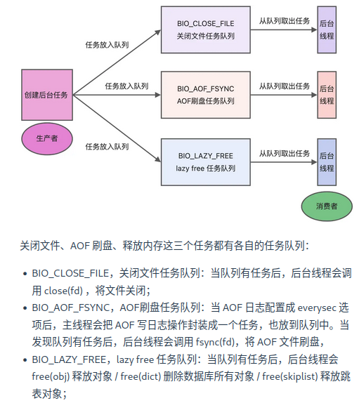
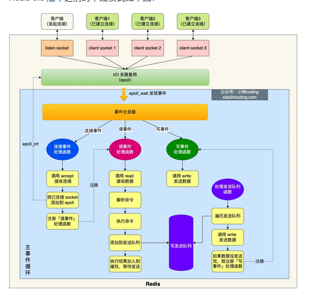
蓝色部分是事件循环，主线程负责，对于network I/O和命令处理都是单线程。
Redis初始化时：
-
调用epoll_create()创建一个epoll对象和调用socket()创建一个服务端socket。
-
调用bind()绑定端口和调用listen()监听该socket。
-
调用epoll_ctl()将listen socket加入到epoll, 同时注册连接事件处理函数。
初始化之后，主线程进入到一个事件循环函数里面：
-
调用处理发送队列函数，看发送队列里面是否有任务，如果有发送任务，则通过write函数将客户端发送缓存区里的数据发送出去，如果这一轮数据没有发送完，就会注册事件处理函数，等待epoll_wait发现可写后在处理。
-
接着，调用epll_wait函数等待事件的到来：
如果是连接事件到来，就调用连接事件处理函数：调用accept获取已连接的socket->调用epoll_ct将已连接的socket加入到epoll->注册读事件处理函数。
如果是读事件到来，就会调用读事件处理函数：掉哟给read获取客户端发送的数据->解析命令->处理命令->将客户端对象添加到发送队列->将执行结果写到发送缓冲区等待发送。
如果是写事件到来，就会调用写事件处理函数：通过write将客户端发送缓冲区的数据发送出去，如果这一轮数据没有发送完，就会继续注册写事件函数，等待epoll_wait发现可写后再处理。
为什么单线程的Redis还能做到这么快？
-
Redis的大部分操作都在内存中完成，并且采用了高效的数据结构，因此Redis的瓶颈往往是内存或者网络带宽而不是CPU。
-
单线程避免了数据竞争，省去了多线程数据切换带来的时间和性能的开销。
-
采用I/O多路复用机制来处理大量的客户端Socket请求，内核负责监听多个socket和已连接socket, 一旦有请求到达，就会交给Redis线程处理。
Redis 6.0之前为什么使用单线程
CPU并不是制约Redis性能表现的瓶颈所在，并且可维护性更高。
引入多线程模型会带来程序执行顺序不确定，并发读写等一系列问题，增加了系统复杂度、同时可能存在线程切换、甚至加锁解锁、死锁造成的性能损耗。
Redis 6.0之后为什么引入了多线程？
随着网络硬件的性能提升，Redis的性能瓶颈有时候也将会出现在网络I/O上。
为了提高网络IO的并行度，对于网络IO采用多线程处理，而对于命令的执行仍然采用单线程。
默认情况下，IO多线程只针对发送相应数据，并不会以多线程的方式处理读请求。
修改redis.conf中的io-threads-do-reads配置项为yes可打开。
默认情况下，Redis会在启动时创建6个线程: Redis-server（主线程，主要负责执行命令），bio_close_file（异步处理关闭文件），bio_aof_fsync（AOF刷入磁盘），bio_lazy_free（释放内存任务）。
Redis持久化
Redis如何实现数据不丢失？
Redis的读写操作都是在内存里，所以性能很好，但是这涉及到重启丢失数据。
三种数据持久化的方式：
-
AOF日志：每执行一条写操作命令就把该命令以追加的方式写入到一个文件中。
-
RDB快照：将某一时刻的内存数据，以二进制的方式写入磁盘。
-
混合持久化：Redis 4.0新增的方式，集成了AOF和RDB的优点。
AOF日志？
redis在执行完一条命令就把这条命令追加到一个文件里，然后在redis重启时，读取该记录文件的命令然后逐一执行从而恢复数据。
*n: 表示命令有n部分，每部分以$+数字开头，后面跟的是具体命令，$后面的数字指的是有多少个字节。
为什么先执行再写入？
-
避免额外的检查开销：如果命令语法有问题不进行语法检查就会在恢复时出错。
-
不会阻塞当前写操作命令的执行：因为当写操作执行成功之后才会把命令记录到AOF日志。
风险：
-
数据可能丢失：写操作和记录日志是两个过程，如果还没有把命令写入磁盘就崩溃就会丢失数据。
-
可能阻塞其他操作。
AOF写回策略？

-
Redis执行完写操作命令后，会将命令追加到server.aof_buf缓冲区；
-
通过write系统调用，将aof_buf缓冲区的数据写入到AOF文件中，此时数据并没有写入到硬盘，二十拷贝到了两内核缓冲区股page cache, 等待内核将数据写入硬盘；
-
具体内核缓冲区的数据什么时候写入硬盘，有内核决定。
Redis提供了三种写入硬盘的策略：redis.conf的配置文件中的appendfsync参数：
-
Always: 立即同步AOF日志数据。
-
Everysec: 每秒中进行一次。
-
No: 有操作系统决定。
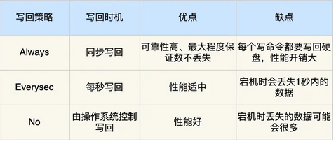
AOF日志过大会触发什么机制？
AOF日志是一个文件，越大Redis重启就越慢。因此，Redis提供了AOF重写机制，用来压缩AOF文件。
AOF重写机制是在重写是，读取当前数据库内的所有键值对，将每个键值对用一条命令记录到新的AOF文件，等到全部记录完，就用新的AOF文件替换现有的AOF文件。
AOF重写的过程是怎么样的？
后台子进程bgrewriteaof完成的，好处：
-
子进程进行AOF重写期间，主进程可以继续处理命令请求，避免阻塞主进程。
-
子进程带有主进程的数据副本，父子进程之间共享内存（除非子进程发生修改，否则不会发生写时复制）。
触发重写后，主进程就会创建重写AOF的子进程，此时父子进程共享内存，重写子进程只读内存，将所有记录转为一条命令，记录到重写日志。
但是重写过程中，主进程还有可能修改kv, 这要怎么办？
Redis为了解决这个问题设置了一个AOF缓冲区，这个缓冲区在创建bgrewriteaof子进程之后开始使用。
在重写AOF期间，当Redis执行完一个写命令之后，他会同时将这个写命令记录到AOF缓冲区和AOF重写缓冲区重写。

所以，在bgrewriteaof子进程执行AOF重写期间，主进程执行：
- 执行客户端发来的命令；
- 将执行后的写命令追加到AOF缓冲区；
- 将执行后的写命令追加到AOF重写缓冲区；
子进程完成AOF重写后，会向主进程发送一条信号，主进程受到信号之后会调用一个信号处理函数，负责：
-
将AOF重写缓冲区的所有内容追加到新的AOF文件中，使得新旧两个AOF文件所保存的数据库状态一致。
-
新的AOF文件进行改名，覆盖现有的AOF文件。
RDB快照怎么实现？
RDB其实类似于数据库的checkpoint机制，记录的是实际数据。
RDB做快照时会阻塞线程吗？
Redis提供了save和bgsave来乘车能够rdb文件，区别就是是否在主线程里执行。
RDB执行快照时，数据能修改吗？
可以，在bgsave是，Redis依旧可以继续处理操作命令，关键在于Copy-On-Write。
在实行bgsave时，会通过fork创建子进程，此时子进程和父进程是共享同一片内存数据的，如果主线程执行写操作，那么被修改的数据会复制一个副本，然后bgsave会把这个副本数据写入rdb文件。
为什么会有混合持久化？
RDB的优点是速度快，但是不好把握快照的频率。频率太低就会丢失很多数据，频率太高就会影响性能。
AOF优点是丢失数据少，但是数据恢复不快。
为了集成两者优点，4.0就提出混合恢复。
混合持久化工作在AOF日志重写时，AOF重写时fork出来的重写子进程会先将与主线程共享的数据以RDB的形式写入到AOF文件，然后主线程处理的操作命令会被记录在重写缓冲区里，重写缓冲区里的增量命令会以AOF方式写入到AOF文件，写入完成后通知主进程用新的含有RDB格式和AOF格式的AOF文件替换旧的AOF文件。
也就是说混合持久化的AOF文件前半部分是RDB格式的全量数据，后半部分是AOF的增量数据。
优点：
- 结合了RDB和AOF的优点，减少启动时间和大量数据丢失的风险。
缺点：
-
AOF文件的可读性下降。
-
兼容性差（版本之间）。
Redis集群
Redis如何实现服务高可用？
多服务节点考虑：主从复制，哨兵模式。切片集群。
主从复制
将从前的一台Redis服务器，同步数据到多台Redis服务器上，也就是一主多从，且主从服务器采取的是读写分离的方式。
主服务器可以进行读写操作，发生写操作酒吧写操作同步给从服务器，而从服务器一般是只读的，并接受主服务器发送过来的同步写操作命令并执行。
也就是说，数据修改只能发生在主服务器上。
命令复制是异步的。
在主从服务器命令传播阶段，主服务器收到新的写命令之后，会发送给从服务器，但是并不会等待从服务器执行完命令把结果返回，而是直接向客户端返回结果。
所以无法实现强一致性保证（主从数据时刻一致）。
哨兵模式
为了解决Redis主从服务器出现宕机需要手动恢复的问题，Redis增加了哨兵模式，因为哨兵模式做到了可以监控主从服务器并且提供了主从节点故障转移的功能。
切片集群模式
当Redis缓存数据量大到一台服务器无法缓存时，就需要用Redis切片集群方案。
数据分布在不同的服务器上，以此降低系统对单主节点的依赖，从而提高Redis服务的读写性能。
Redis 采用的是哈希槽来处理数据和节点之间的映射关系。在Redis Cluster方案中，一个切片集群共有16384个哈希槽，这些哈希槽类似于数据分区，每个键值对都会根据它的key被映射到一个哈希槽：
- 根据键值对的key按照CRC16计算一个16bit的值。
- 再用16bit值对16384进行取模，每个模数代表一个对应编号的哈希值。
接下来的问题：这些哈希槽怎么被映射到具体的Redis节点上呢？
-
平均分配：在Cluster create命令创建redis集群时，Redis会自动把所有哈希槽平均分配到集群节点上。
-
手动分配：cluster meet手动建立节点间的连接组成集群，再用cluster addslot指定每个节点上的哈希槽个数。
集群脑裂导致数据丢失怎么办？
当主节点发现从节点下线或者通信超时的总数量小于阈值时，那么禁止主节点进行写数据，直接把错误返回给客户端。
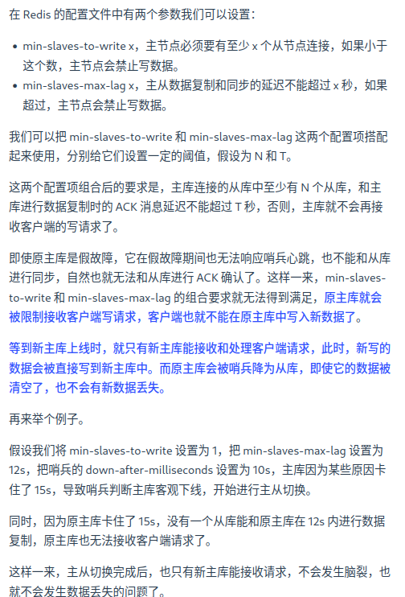
Redis过期删除和内存淘汰
Redis使用的过期删除策略是什么？
Redis是可以对Key设置过期时间的，因此需要有对应的机制将已经过期的键值对删除，做这个工作的就是过期键值对删除策略。
每当我们对一个Key设置了过期时间时，Redis就会把该key带上过期时间存储到一个过期字典中。
查询一个Key时，Redis首先检查该key是否存在于过期字典中：
- 如果不在，则正常读取键值；
- 如果存在，就会获取该key的过期时间，然后与当前系统时间进行比对，如果比系统时间大，那就没有过期，否则就判定过期。
Redis使用的过期删除策略是惰性删除+定期删除。
什么是惰性删除策略？
不主动删除过期键，每次从数据库访问key是判断key是否过期，如果过期就删除该key。
优点：因为每次访问时，才会检查key是否过期，所以此策略只会使用很少的系统资源，因此惰性删除策略对CPU时间最友好。
缺点：如果一个key已经过期而这个key又保存在数据库中，那么只要这个过期key没有被访问就不会释放内存，对内存不友好。
什么是定期删除策略？
每隔一段时间随机从数据库中抽取出一定数量的key进行检查并删除其中的过期key。

优点：通过限制删除操作执行的时长和频率，减少删除操作对CPU的影响，同时也能删除一部分过期的数据减少了过期键对空间的无效占用。
缺点：难以确定执行时长和频率：太长对CPU不友好，太少则过期key得不到及时释放。
Redis 6.0对于Redis的键删除不再是随机采样
总之，在Redis 6.0之后，新的策略被引进用来处理没有被清除的内存。这个新的策略包括引入Radix Tree（基数树）：
-
过期键的辅助哈希表采样仍然会发生
-
样本与基数树中已有的键进行比较
-
如果样本已过期，则立即删除；但如果样本即将过期（继续阅读），则将其存储在基数树中。这是对下一次采样迭代的提示，因此迭代从存储可能过期的键的基数树开始。
通过引入基数树，样本过期时间的信息被大写，并实现了隐藏内存分配的减少。此解决方案有助于在不进行重大设计更改的情况下删除 25% 的隐藏键，并减少使用的内存量。
Redis持久化时对过期键会如何处理？
RDB文件分为两个阶段：RDB文件生成阶段和加载阶段。
-
RDB文件生成阶段：从内存状态持久化成RDB文件的时候，会对key进行过期检查，过期的键不会被保存到新的RDB文件中，因此REdis中的过期键对于新的RDB文件不会产生影响。
-
RDB加载阶段：RDB加载阶段是要看是主服务器还是从服务器：
如果是主服务器，在载入RDB文件时，程序会对文件中的过期key进行检查，过期键不会被载入到数据库中。
如果是从服务器，则不进行检查，但是由于从服务器进行数据同步时数据会被清空，所以一般也没有影响。
AOF文件分为两个阶段，AOF文件写入阶段和AOF重写阶段：
-
AOF写入阶段：当Redis1️以AOF模式持久化是，如果数据库某个过期键还没有被删除，那么AOF文件就会保留这个过期键，当此过期键被删除后，Redis会向AOF文件追加一条DEL命令显式的删除该键值对。
-
AOF重写阶段：执行AOF重写时，会对Redis中的键值对进行检查，已过期的键不会被保存到重写后的AOF文件中，因此不会对AOF重写造成任何影响。
Redis主从模式中，如何处理过期键？
当Redis运行在主从模式下时，从库不会进行过期扫描，从库对过期的处理也是被动的。也就是说客户端访问从库，即使过期了也会返回值。
主库在key到期是会在AOF文件里面添加一条del指令，同步到所有的从库。
Redis内存满了会发生？
Redis在运行时如果内存达到了一个阈值就会出发内存淘汰机制，叫maxmemory。
Redis内存淘汰策略有哪些？
八种两类：
第一类：不进行数据淘汰的策略
noeviction：表示当运行内存超过最大设置内存时，不淘汰任何数据，而是不再提供服务，直接返回错误。
第二类：
还可以细分为在设置了过期时间的数据中进行淘汰 和 在所有数据范围内进行淘汰。
设置了过期时间的数据：
volatile-random: 随机淘汰设置了过期时间的任意键值。
volatile-ttl: 有限淘汰更早过期的键值。
volatile-lru: 最久未使用的键值被淘汰。
volatile-lfu: 最少使用的键值被淘汰。
所有数据范围内：
allkeys-random: 随机淘汰任意键值
allkeys-lru: 最久未使用。
allkeys-lfu: 最少使用。
Redis如何实现LRU?
传统的LRU有两个问题：
-
需要用链表管理所有的缓存数据，这会带来额外的空间开销。
-
当有数据被访问时，需要在链表上把该数据移动到头端，如果有大量数据被访问，会带来很多链表移动操作，非常耗时，因而降低Redis缓存性能。
Redis实际实现的是一种近似LRU算法，目的是更好的节约内存。实现方式是在Redis的对象结构体中额外添加一个字段，用于记录此数据的最后一次访问时间。
当Redis进行内存淘汰时会采用随机采样的方式来淘汰数据（如上所说）,随机取几个值然后淘汰最久没使用的那个。
优点：不用为所有的数据维护一个大链表，节省了空间占用；不用再每次数据访问都移动链表项，提升了缓存的性能。
缺点：无法解决缓存污染问题，比如一次读取了大量数据，而这些数据只会被读取这一次，那这些键就会留存在缓存中很长一段时间，造成缓存污染。
后来引进LFU来解决这个问题。
Redis如何实现LFU?
LFU算法相比于LRU算法的实现，多记录了数据的访问频次的信息。
Redis对象头中的lru字段在LRU算法和LFU算法下使用方式并不相同。
在LRU中，Redis对象头的24bits的lru字段是用来记录key的访问时间戳的，因此LRU模式下，redis可以根据对象头的LRU字段记录的值来比较最后一次key的访问时间长，从而淘汰最久未使用。
在LFU中，Redis对象头的24bits的lru字段分成了两部分来存储，高16bits存ldt(last decrement time)用来记录key的访问时间戳；低8bits存储logic(Logistic Counter)用来记录key的访问频次。
Redis缓存设计
如何避免缓存雪崩(Cache Avalanche)、缓存击穿(Hotspot Invalid)、缓存穿透(Cache Penetration)？

解决方案：
-
将缓存失效时间随即打散：在原有的失效时间基础上添加一个随机值这样每个缓存的过期时间都不重复了，也就降低了缓存集体失效的概率。
-
设置缓存不过期：通过后台服务来更新缓存数据，从而避免因为缓存失效造成的缓存雪崩，也可以在一定程度上避免缓存并发问题。

缓存击穿可以采取：
-
互斥锁方案：Redis中使用setNX方法设置一个状态位，表示这是一种锁定状态，保证同一时间只有一个业务线程请求缓存，未能获取互斥锁的请求，要么等待锁释放后重新读取缓存，要么就返回空值或者默认值。
-
不给热点数据设置过期时间，由后台异步更新缓存，或者在热点数据准备要过期前，提前通知后台线程更新缓存以及重新设置过期时间。
发生原因：
-
业务误操作，缓存的数据和数据库的数据都被误删除了，导致缓存和数据库中都没有数据。
-
恶意攻击。
应对方案：
-
非法请求的限制。
-
设置空值或者默认值。
-
使用布隆过滤器快速判断数据是否存在，避免通过查询数据库来判断数据是否存在。
如何设计一个缓存策略，可以动态缓存热点数据呢？
由于系统只需要一部分热点数据被缓存起来，所以需要设计一个热点数据动态缓存的策略。
热点数据动态缓存策略总体思路：通过数据最新访问时间来做排名，并过滤掉不经常访问的数据，只留下经常访问的数据。
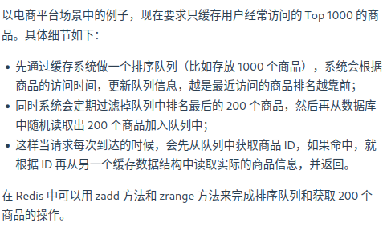
常见的缓存更新策略
-
旁路缓存(Cache Aside)
-
读穿/写穿(Read/Write Through)
-
写回(Write Back)
旁路缓存
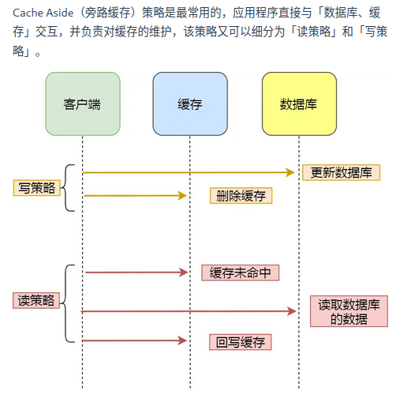
写策略：先更新数据库的数据再在删除缓存中的数据。
读策略：如果读取的数据命中了缓存就直接返回数据；否则就从数据库中读取数据然后将数据写入到缓存并返回给用户。
写策略的顺序不能反过来，否则会出现缓存和数据库不一致。
Cache Aside策略适合读多写少的场景，不适合写多的场景，因为当写入比较频繁时，缓存中的数据会被频繁的清理，这对于缓存命中率影响很大。
如果业务对于缓存命中率要求很高，有两种解决方案：
-
更新数据时也更新缓存，只是在更新缓存前加一个分布式锁，这样在同一时间智能允许一个线程进行更新缓存，不会产生一致性问题。
-
也是更新数据时更新缓存，只是给缓存加一个较短的过期时间，这样即使缓存不一致也会很快过期。
读穿/写穿
应用程序只和缓存交互，不再和数据库交互，而是由缓存和数据库交互，相当于更新数据库的操作由缓存自己代理了。
- 读穿策略
先查询缓存是否有数据，存在就返回，否则就有缓存组件从数据库查询数据，并将结果写入到缓存数据再由缓存组件告知应用程序更新完成。
- 写穿策略
数据更新时，先查询要写入的数据在缓存中是否已经存在；如果缓存中数据已存在就更新缓存中的数据并且由缓存组件同步更新到数据库中，然后缓存组件告知应用程序更新完成；否则就直接更新数据库然后返回。
读穿/写穿策略的特点是由缓存节点而非应用程序和数据库打交道，较少使用的原因是常见的分布式缓存组件没有提供写入数据库和自动加载数据库中的数据的功能。
写回策略
写回策略在更新数据时只更新缓存同时将缓存数据设置为脏的然后立马返回，并不会更新数据库。对于数据库的更新会通过批量异步更新的方式来完成。
由于Redis并没有异步更新数据库的功能，写回策略并不常用。
但是在体系结构中，比如CPU缓存、操作系统的文件系统都采用写回策略。
写回策略适合写多的场景，因为发生写操作的时候只需要更新缓存就立马返回，比如写文件的时候写入到文件系统的缓存就返回了，并不用等待写磁盘。
带来的问题就是数据不是强一致性的，会有数据丢失的风险。
Redis实战
实现延迟队列
延迟队列实质把当前要做的事情往后推迟一段时间在座，使用场景：
-
在淘宝、京东下单，超过一定时间没有付款，订单会自动取消。
-
打车的时候，在规定时间没有车主接单，平台会自动取消订单并提醒暂时没有车主接单。
可以使用Zset来实现延迟消息队列，Zset有一个Score属性可以用来存储延迟执行的时间。
1.1 插入任务到队列
我们使用 ZADD 命令插入任务，任务的执行时间作为分数：
ZADD delay_queue <timestamp>{=html} <task_id>
例如，假设当前时间戳为 1702444800（一个未来的时间），我们想要插入一个任务 task1：
ZADD delay_queue 1702444800 "task1"
1.2 查询到期任务
使用 ZRANGEBYSCORE 获取到期任务，分数小于等于当前时间戳的任务：
ZRANGEBYSCORE delay_queue -inf <current_timestamp>
例如，如果当前时间戳是 1702444900，我们可以运行：
ZRANGEBYSCORE delay_queue -inf 1702444900
1.3 处理任务
一旦我们查询到任务，就可以对其进行处理，并且删除它：
ZREM delay_queue <task_id>
例如，删除已处理的任务 task1：
ZREM delay_queue "task1"
import redis.clients.jedis.Jedis;
import redis.clients.jedis.Tuple;
import java.util.Set;
public class RedisDelayQueue {
private static final String QUEUE_NAME = "delay_queue";
private Jedis jedis;
public RedisDelayQueue(Jedis jedis) {
this.jedis = jedis;
}
// 向延迟队列添加任务
public void addTask(String taskId, long delayInSeconds) {
long executionTime = System.currentTimeMillis() / 1000 + delayInSeconds; // 当前时间戳 + 延迟秒数
jedis.zadd(QUEUE_NAME, executionTime, taskId); // 将任务和执行时间插入 Zset
System.out.println("Task " + taskId + " added to delay queue, scheduled at " + executionTime);
}
// 获取并处理到期任务
public void processTasks() {
long currentTime = System.currentTimeMillis() / 1000;
// 获取所有到期的任务（分数小于等于当前时间戳）
Set<Tuple> tasks = jedis.zrangeByScoreWithScores(QUEUE_NAME, "-inf", String.valueOf(currentTime));
for (Tuple task : tasks) {
String taskId = task.getElement();
// 处理任务
System.out.println("Processing task: " + taskId);
// 删除任务
jedis.zrem(QUEUE_NAME, taskId);
System.out.println("Task " + taskId + " removed from queue.");
}
}
public static void main(String[] args) throws InterruptedException {
Jedis jedis = new Jedis("localhost", 6379); // 创建连接到 Redis 的 Jedis 实例
RedisDelayQueue delayQueue = new RedisDelayQueue(jedis);
// 向延迟队列添加任务
delayQueue.addTask("task1", 5); // 任务将在 5 秒后执行
delayQueue.addTask("task2", 10); // 任务将在 10 秒后执行
// 模拟任务处理
while (true) {
delayQueue.processTasks();
Thread.sleep(1000); // 每秒检查一次是否有到期任务
}
}
}
Redis的大key怎么处理？
什么是大key
大key并不是说key的值很大，而是key对应的value很大。
一般而言，String类型的值大于10kb或者Hash, List, Set, Zset类型的元素的个数超过5000个。
大key的影响？
-
客户端超时阻塞。
-
引发网络阻塞。
-
阻塞工作线程。
-
内存分布不均。
Redis管道
管道技术(Pipeline)是客户端提供的批处理技术，可以一次处理多个Redis命令。
管道技术可以解决多个命令执行时的网络等待。
Redis事务支持回滚吗？
Redis没有回滚机制，虽然有Disacrd但是只能主动放弃事务执行不能起到回滚的效果。
也就是说，Redis并不保证原子性。
使用Redis实现分布式锁？
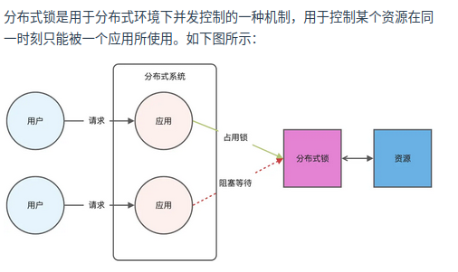
Redis本身可以被多个客户端共享访问，正好就是一个共享存储系统，可以用来表示分布式锁，而且Redis的读写性能好，可以应对高并发的锁操作场景。
Redis的SET命令可以用NX参数实现key不存在才插入，可以用它来实现分布式锁。
-
如果key不存在则显示插入成功表示加锁成功。
-
如果key存在则会显示插入失败可以用来表示加锁失败。
对加锁操作需要满足三个条件：
-
包括了读取锁变量、检查锁变量和设置锁变量三个操作，这三个操作要以原子操作的方式完成，所以要用set带上NX来实现加锁。
-
锁变量需要设置过期时间，避免客户端获得锁以后发生异常，导致锁一直无法释放。所以用SET命令加上EX/PX选项。
-
锁的值需要能区分来自不同客户端的加锁操作，以免在释放锁的时候出现误释放。也就是说每个客户端设置的值必须是唯一值。
如下：
SET lock_key unique_value NX PX 10000
解锁就是将lock_key键删除，但不能乱删，保证执行操作的客户端就是加锁的客户端。所以解锁要判断锁的unique_value是否为加锁客户端，是的话才能解锁。
如下：
if redis.call("get",KEYS[1])==ARGV[1] then
return redis.call("del",KEYS[1])
else
return 0
end
基于Redis实现分布式锁的优缺点？
优点：
-
性能高效（最核心的出发点）
-
实现方便，很大程度是因为Redis提供了set nx 方法
-
避免单点故障(因为Redis是跨集群部署，自然就避免了单点故障)
缺点：
-
超时时间不好设置。（如何设置？继续续约的方式设置，先设置一个超时时间，再启动一个守护线程，守护线程一段时间之后重新设置超时时间）
-
Redis主从复制是异步的，导致分布式锁不可靠。
如何解决集群环境下的分布式锁的可靠性？

加锁成功需要满足两个条件：
-
客户端从超过半数的Redis节点上成功获取到锁。
-
客户端从大多数节点获取锁的总耗时小于锁设置的过期时间。
加锁成功之后，客户端需要重新计算这把锁的有效时间，计算结果是锁最初设置的过期时间-客户端从大多数节点获取锁的总耗时。如果计算结果来不及完成共享数据的操作就释放锁，避免数据操作没完成，锁就过期了。
sds的实现细节
sdsnewlen
这里是创建一个长度为initlen的sds, 具体实现在_sdsnewlen中。
核心逻辑：
-
参数解析 • s：当前的 SDS 字符串。 • size：调整后的新分配大小。 • would_regrow：是否可能在未来扩展字符串的标志。 • 如果为真（1），则避免使用类型 SDS_TYPE_5，因为该类型是只读且不适合频繁扩展。
-
判断是否需要调整
if (sdsalloc(s) == size) return s;
• 如果当前分配大小（sdsalloc(s)）已经等于目标大小，则无需调整，直接返回。
- 截断长度（收缩时）
if (size < len) len = size;
• 如果新分配大小小于当前内容长度，则将字符串的逻辑长度截断为 size。
- 确定新的 SDS 类型
type = sdsReqType(size);
if (would_regrow && type == SDS_TYPE_5) type = SDS_TYPE_8;
hdrlen = sdsHdrSize(type);
• 根据新大小确定最小适配的 SDS 类型（SDS_TYPE_5 到 SDS_TYPE_64）。
• 如果未来可能增长（would_regrow 为真），避免使用 SDS_TYPE_5，改用 SDS_TYPE_8。
- 判断是否需要重新分配内存
int use_realloc = (oldtype == type || (type < oldtype && type > SDS_TYPE_8));
size_t newlen = use_realloc ? oldhdrlen + size + 1 : hdrlen + size + 1;
• 当以下任一条件满足时，使用 realloc 优化内存操作：
1. 新的 SDS 类型与旧的相同（不需要调整头部大小）。
2. 新的 SDS 类型比旧的更小，但不是 SDS_TYPE_5。
• 如果类型发生较大变化（例如从 SDS_TYPE_32 到 SDS_TYPE_8），则重新分配内存并复制数据。
- 执行内存调整
使用 realloc 调整（优化路径）：
if (use_realloc) {
#if defined(USE_JEMALLOC)
alloc_already_optimal = (je_nallocx(newlen, 0) == zmalloc_size(sh));
#endif
if (!alloc_already_optimal) {
newsh = s_realloc(sh, newlen);
if (newsh == NULL) return NULL;
s = (char*)newsh + oldhdrlen;
}
}
• 如果使用 jemalloc，通过 je_nallocx 确认是否需要重新分配内存。
• 如果需要，则调用 s_realloc 进行调整。
手动分配新内存并复制数据：
else {
newsh = s_malloc(newlen);
if (newsh == NULL) return NULL;
memcpy((char*)newsh + hdrlen, s, len);
s_free(sh);
s = (char*)newsh + hdrlen;
s[-1] = type;
}
• 为新类型分配合适的内存空间。
• 复制原有数据到新分配的内存。
• 更新 SDS 的类型标识。
- 更新元数据
s[len] = 0;
sdssetlen(s, len);
sdssetalloc(s, size);
• 确保字符串以 \0 结尾。
• 更新字符串长度（len）和分配大小（alloc）。
函数整体流程 1. 判断是否需要调整内存大小。 2. 根据新大小确定合适的 SDS 类型。 3. 如果类型不变或变更很小，尝试直接通过 realloc 调整内存。 4. 如果类型发生较大变化，手动重新分配内存并复制数据。 5. 更新字符串长度、分配大小及类型信息。
整数集合是一种只存储整型数据的集合
采用连续内存布局实现紧凑存储，主要设计目标是节省内存，尤其是在存储小规模整型数据时。
typedef struct intset {
uint32_t encoding;
uint32_t length;
int8_t contents[];
} intset;
这是intset的核心结构。
encoding决定所有整数的存储方式，支持INTSET_ENC_INT16（每个整数占2字节），INTSET_ENC_INT32（4个字节），INTSET_ENC_INT64（8字节）。
length表示当前集合中实际存储的整数个数。
contents一个连续内存数组，存储所有整数，按照从小到大的顺序排列。
由于是连续存储，没有指针开销，因此非常节省内存。
intset的核心思想
-
连续内存布局： • 使用紧凑的数组存储数据，而不是指针链表，节省了内存。
-
单一类型编码： • Intset 中的所有整数使用统一的编码类型（16 位、32 位或 64 位）。 • 编码类型会根据需要动态升级，确保能容纳更大的整数。
-
升序排列： • 所有整数按升序存储，可以通过二分查找快速定位元素。
intsetAdd
插入整数，先检查整数是否存在（二分查找），如果整数已存在，就直接返回，否则继续。
如果整数超过编码范围：
· 升级encoding（16位升级到32位）
· 升级过程中需要重新分配内存并转换已有数据。
找到插入位置，将整数插入到contents数组中，保持升序排列。
/* Insert an integer in the intset */
intset *intsetAdd(intset *is, int64_t value, uint8_t *success) {
uint8_t valenc = _intsetValueEncoding(value);
uint32_t pos;
if (success) *success = 1;
/* Upgrade encoding if necessary. If we need to upgrade, we know that
* this value should be either appended (if > 0) or prepended (if < 0),
* because it lies outside the range of existing values. */
if (valenc > intrev32ifbe(is->encoding)) {
/* This always succeeds, so we don't need to curry *success. */
return intsetUpgradeAndAdd(is,value);
} else {
/* Abort if the value is already present in the set.
* This call will populate "pos" with the right position to insert
* the value when it cannot be found. */
if (intsetSearch(is,value,&pos)) {
if (success) *success = 0;
return is;
}
is = intsetResize(is,intrev32ifbe(is->length)+1);
if (pos < intrev32ifbe(is->length)) intsetMoveTail(is,pos,pos+1);
}
_intsetSet(is,pos,value);
is->length = intrev32ifbe(intrev32ifbe(is->length)+1);
return is;
}
intsetRemove
删除整数时的流程如下： 1. 通过二分查找找到目标整数的位置。 2. 如果整数不存在，直接返回；否则继续。 3. 删除对应的元素，并将其后续元素左移，填补空缺。
/* Delete integer from intset */
intset *intsetRemove(intset *is, int64_t value, int *success) {
uint8_t valenc = _intsetValueEncoding(value);
uint32_t pos;
if (success) *success = 0;
if (valenc <= intrev32ifbe(is->encoding) && intsetSearch(is,value,&pos)) {
uint32_t len = intrev32ifbe(is->length);
/* We know we can delete */
if (success) *success = 1;
/* Overwrite value with tail and update length */
if (pos < (len-1)) intsetMoveTail(is,pos+1,pos);
is = intsetResize(is,len-1);
is->length = intrev32ifbe(len-1);
}
return is;
}
insetUpgradeAndAdd
将 intset 升级为更高的编码格式，并插入一个新的整数 value。当插入的整数超出当前编码格式的范围时，intset 需要将其所有整数从低位编码（如 INTSET_ENC_INT16）升级为高位编码（如 INTSET_ENC_INT32 或 INTSET_ENC_INT64）。
/* Upgrades the intset to a larger encoding and inserts the given integer. */
static intset *intsetUpgradeAndAdd(intset *is, int64_t value) {
uint8_t curenc = intrev32ifbe(is->encoding);
uint8_t newenc = _intsetValueEncoding(value);
int length = intrev32ifbe(is->length);
int prepend = value < 0 ? 1 : 0;
/* First set new encoding and resize */
is->encoding = intrev32ifbe(newenc);
is = intsetResize(is,intrev32ifbe(is->length)+1);
/* Upgrade back-to-front so we don't overwrite values.
* Note that the "prepend" variable is used to make sure we have an empty
* space at either the beginning or the end of the intset. */
while(length--)
_intsetSet(is,length+prepend,_intsetGetEncoded(is,length,curenc));
/* Set the value at the beginning or the end. */
if (prepend)
_intsetSet(is,0,value);
else
_intsetSet(is,intrev32ifbe(is->length),value);
is->length = intrev32ifbe(intrev32ifbe(is->length)+1);
return is;
}
Listpack数据结构体系
在Redis中，listpack是一种高效的内存数据结构，设计用于存储较小的元素集合，如短字符串或整数。它是Redis 5.0引入的一部分，用于优化内存使用和性能，主要应用于诸如ZSET和LIST等数据结构的底层实现。
/* Each entry in the listpack is either a string or an integer. */
typedef struct {
/* When string is used, it is provided with the length (slen). */
unsigned char *sval;
uint32_t slen;
/* When integer is used, 'sval' is NULL, and lval holds the value. */
long long lval;
} listpackEntry;
特点
- 紧凑的二进制格式 • listpack存储的是连续的二进制数据，每个元素紧密相邻，没有额外的指针或间隙。 • 每个元素包括一个长度字段、一个编码字段和实际数据，支持存储小整数或短字符串。
- 高效的内存利用 • 它通过对元素使用变长编码来减少内存浪费。例如，小整数会以最紧凑的形式存储，而较大的整数或字符串会用更长的格式存储。
- 快速的遍历和修改 • listpack通过顺序存储的方式，使得遍历所有元素的性能非常高。 • 添加或删除元素时，需要移动后续元素来保持连续性，但在小型集合中，这种操作代价较低。
lpNext
获取当前条目的下一个条目的指针。
/* If 'p' points to an element of the listpack, calling lpNext() will return
* the pointer to the next element (the one on the right), or NULL if 'p'
* already pointed to the last element of the listpack. */
unsigned char *lpNext(unsigned char *lp, unsigned char *p) {
assert(p);
p = lpSkip(p);
if (p[0] == LP_EOF) return NULL;
lpAssertValidEntry(lp, lpBytes(lp), p);
return p;
}
这里调用的lpSkip就是跳过当前条目并返回指向下一个条目的指针。
LDKV
最近一直在学Redis, 我觉得就是学Redis不能光背书，还的是看看实现细节的。
那就自己实现一个类似于Redis的键值对存储吧。
数据结构
先实现类似于Redis的集中数据结构（封装folly库），先不考虑复杂的超时策略，只考虑惰性删除。
Listpack
TTLHash
TTLSet
Bloomfilter
零散的无法组装的只言片语...
Github Action
GitHub Actions 是一种持续集成和持续交付 (CI/CD) 平台，可用于自动执行生成、测试和部署管道。 你可以创建工作流，以便在推送更改到存储库时运行测试，或将合并的拉取请求部署到生产环境。
工作环境(.github/workflow)这里面定义的是一些工作流，这些工作流可以用来执行一些预设的操作，诸如编译、部署等。
Github Action是用YAML来定义的一套模板，触发工作流等都可以通过定义变量来触发。
记录这个只是因为mdbook+gh page要用到，顺便了解一下。
name: Deploy
on:
push:
branches:
- main
jobs:
deploy:
runs-on: ubuntu-latest
permissions:
contents: write # To push a branch
pages: write # To push to a GitHub Pages site
id-token: write # To update the deployment status
steps:
- uses: actions/checkout@v4
with:
fetch-depth: 0
- name: Install latest mdbook
run: |
tag=$(curl 'https://api.github.com/repos/rust-lang/mdbook/releases/latest' | jq -r '.tag_name')
url="https://github.com/rust-lang/mdbook/releases/download/${tag}/mdbook-${tag}-x86_64-unknown-linux-gnu.tar.gz"
mkdir mdbook
curl -sSL $url | tar -xz --directory=./mdbook
echo `pwd`/mdbook >> $GITHUB_PATH
- name: Build Book
run: |
# This assumes your book is in the root of your repository.
# Just add a `cd` here if you need to change to another directory.
mdbook build
- name: Setup Pages
uses: actions/configure-pages@v4
- name: Upload artifact
uses: actions/upload-pages-artifact@v3
with:
# Upload entire repository
path: 'book'
- name: Deploy to GitHub Pages
id: deployment
uses: actions/deploy-pages@v4
B树和B+树区别
节点存储的关键字和数据
B树：
每个节点既要存储关键字又要存储数据。
数据可以存储在叶子节点和内部节点。
B+树：
所有数据都只存储在叶子节点。
内部节点只存储关键字用于索引。
叶子节点结构
B树：
叶子节点之间没有指针连接。
查找结束不需要额外处理。
B+树：
所有叶子节点通过指针连接，形成一个链表。
便于范围查询和顺序遍历。
搜索性能
B树：
查找可能在叶子节点或内部节点结束，路径长短不一。
B+树：
查找总是在叶子节点结束，路径固定，查找效率更稳定。
范围查询
B树：
范围查询需要递归的遍历树，效率相对较低。
B+树：
由于叶子节点链表结构，返回查询效率较高，可以直接顺序访问。
存储利用率
B树：
内部节点存储了大量数据，存储利用率稍低。
B+树：
内部节点只存储关键字，数据集中在叶节点，存储利用率更高。
插入/删除
B树：
插入或者删除可能涉及到内部数据的调整，比较复杂。
B+树：
插入和删除主要在叶子节点进行，内部节点只影响索引，逻辑较简单。
适用场景
B树：
适合随机读写频繁的场景。
B+树：
适合顺序读写和范围查询场景，如数据库索引。
AI初体验
第一次接触LLM相关的东西，就当玩玩，没接触过这么一站式服务的平台。
一些体验
了解了一点alpaca数据集的知识。
alpaca
指令、输入、输出所构成的格式。
Alpaca 数据集的主要目标是模拟类似 OpenAI ChatGPT 的指令跟随能力。由于直接训练一个高质量的指令遵循模型（如 ChatGPT）需要大量资源，Alpaca 数据集提供了一种通过少量样本扩展数据的方法，从而降低训练成本。
特点与优势 1. 低成本构造： • 通过使用 OpenAI 的模型生成扩展数据，大幅减少了手动标注成本。 2. 高质量： • 数据生成过程中，基于高质量模型的输出，提供了良好的语言流畅性和指令跟随能力。 3. 开源性： • 数据集完全开源，供研究者在非商业环境中自由使用。 4. 易于微调： • 可用于对基础语言模型（如 LLaMA、GPT-3 等）进行微调，从而快速提升模型的指令跟随能力。
定制大模型？
-
定制模型的流程
- 明确需求： • 确定目标任务（如问答、摘要、对话生成等）。 • 收集领域特定的知识或数据（如医学、法律、金融领域）。
- 选择基础模型： • 通常选择已有的预训练模型（如 GPT、LLaMA、BERT、Bloom）。 • 基础模型需要具有强大的通用性，并支持微调。
- 准备数据： • 收集高质量数据集，确保多样性和覆盖性。 • 数据清洗与标注，根据任务需求对数据进行格式化。
- 微调模型： • 根据定制需求，通过技术手段对模型参数进行优化。
- 评估与部署： • 使用领域测试集对模型效果进行评估。 • 部署到生产环境，同时监控并优化性能。
-
定制模型的主要技术
以下是用于定制大模型的关键技术：
(1) 微调（Fine-Tuning） • 原理： • 在预训练模型的基础上，用特定任务的数据进行再训练。 • 调整全部或部分参数，使模型在特定领域表现更优。 • 适用场景： • 定制化任务（如客服问答、文档摘要）。 • 大量标注数据可用时。 • 工具与框架： • Hugging Face Transformers、DeepSpeed、TensorFlow、PyTorch。
(2) 参数高效微调（Parameter-Efficient Fine-Tuning） • 原理： • 对大模型进行高效微调，仅修改部分参数或添加少量新参数。 • 避免对整个模型重新训练，从而节省资源。 • 常见方法： • LoRA（Low-Rank Adaptation）： • 仅调整模型中的低秩矩阵，减少计算需求。 • Adapters： • 在模型的特定层中插入小型网络模块，执行特定任务。 • Prefix-Tuning： • 在模型输入中添加可训练的前缀向量，而非调整模型本身。 • 适用场景： • 资源受限（如 GPU 内存有限）。 • 需要快速迁移到多个任务。
(3) 指令微调（Instruction Fine-Tuning） • 原理： • 提供大规模指令数据集（如 Alpaca、FLAN），微调模型的指令跟随能力。 • 增强模型理解和执行自然语言指令的能力。 • 特点： • 适合多任务、多领域场景。 • 提高模型与用户交互的效果。 • 工具： • Stanford Alpaca 数据集、FLAN 数据集。
(4) 增量学习（Incremental Learning） • 原理： • 将模型暴露在新数据上，学习新的知识，同时避免遗忘旧知识。 • 方法： • 使用数据重放、正则化技术或知识蒸馏。 • 适用场景： • 持续更新领域知识（如实时新闻、法律法规）。
(5) 检索增强生成（Retrieval-Augmented Generation, RAG） • 原理： • 将检索模块与生成模型结合，利用外部知识库提升模型生成能力。 • 通过查询获取相关知识，再交给生成模型生成答案。 • 实现步骤： 1. 构建或使用知识库（如 Elasticsearch 或向量数据库）。 2. 使用检索模型查找相关上下文。 3. 将上下文作为提示词输入生成模型。 • 适用场景： • 知识密集型任务（如法律、医学）。 • 框架： • Haystack、FAISS、Milvus。
(6) 提示工程（Prompt Engineering） • 原理： • 通过设计高质量的提示词，引导模型按照需求完成任务。 • 使用少量示例（Few-shot）或零示例（Zero-shot）方式。 • 技术扩展： • 提示优化（Prompt Optimization）： • 自动生成或调整提示词以提高模型性能。 • 链式提示（Chain-of-Thought, CoT）： • 将复杂任务分解为多个步骤，通过提示链实现推理。 • 适用场景： • 无法直接微调或数据不足时。
(8) 多模态增强 • 原理： • 将语言与其他模态（如图像、视频、音频）结合，扩展模型能力。 • 应用： • 图文生成、语音问答等。 • 常见模型： • OpenAI CLIP、DeepMind Flamingo。